13 Juin 2016 : Nouveaux résultats du projet CLOUD (CERN).
Ainsi que des articles récents sur les feux de forêts, le Gulf Stream et les fortes pluies.
Je reçois fréquemment des courriers de lecteurs(trices) qui s'interrogent au sujet des progrès du projet CLOUD entrepris au CERN de Genève à partir de 2010. Ce projet de grande envergure était initialement destiné à tester la théorie (ou hypothèse) de Svensmark et al. qui attribue un rôle important au rayonnement cosmique pour la constitution des nuages - un des éléments déterminants du climat - et que j'avais évoquée dans cette page, de même qu'ici et dans les billets suivants, sur la même page. Outre le test de l'hypothèse de Svensmark, ce vaste projet international était plus généralement destiné à analyser, en détail, les processus de formation des nuages via la micro-physico-chimie de la nucléation (processus de croissance des noyaux de condensation de la vapeur d'eau).
Car, aussi étonnant que cela puisse paraître, on ne sait (savait) pas encore exactement comment se forment les nuages à partir de la vapeur d'eau contenue dans l'atmosphère.
Nos lecteurs(trices) doivent se souvenir que, comme tous les projets du CERN de Genève, CLOUD relève d'expériences particulièrement "lourdes" qui font appel à des technologies aussi coûteuses que délicates, à la disponibilité intermittente "des temps de faisceau" des sources à haute énergie etc. D'autre part, le CERN se fait un point d'honneur de ne publier que des résultats et des observations dûment reproductibles et soigneusement vérifiées, ne serait-ce que parce que ces expériences sont très difficiles (sinon impossibles) à dupliquer dans d'autres laboratoires. Tout cela entraîne des délais de publications très importants et justifie que les rapports et articles ne paraissent qu'après mûre réflexion et après de longs intervalles de temps.
En bref, le statu-quo ante qui résultait, en 2011, des travaux de CLOUD menés au CERN, avant la publication des articles que je vais vous présenter ci-dessous était le suivant :
-Les tests de l'appareillage complet étaient satisfaisants. Il s'agit d'une vaste chambre d'expérience (de la taille d'un autobus) dans laquelle on peut reconstituer parfaitement et de manière contrôlée la complexité de la composition de l'atmosphère terrestre réelle. L'appareillage sophistiqué qui lui est associé permet de suivre en détail, tous les paramètres importants et en particulier la composition et la taille des noyaux de nucléation propres à la formation des nuages.
-Le rôle important joué par l'acide sulfurique dans les processus de nucléation a été confirmé ainsi que l'amplification induite par les rayons cosmiques comme l'avait proposé Svensmark et al.
-Cependant, les expériences et les mesures effectuées, en l'absence d'ions, ne permettaient pas d'expliquer l'abondance et la dynamique de la nucléation et des nuages observées dans les conditions réelles. Il apparaissait nécessaire de trouver une autre voie que celle des "polluants" atmosphériques tels que les composés du soufre et autres minéraux.
- Dès lors, comme je l'avais précisé à l'époque (en fin 2011), l'équipe CLOUD avait décidé d'orienter ses recherches vers l'étude de la possibilité, pour la formation des nuages, de particules ionisées organiques purement biogéniques, naturellement présentes dans l'atmosphère et dont plusieurs expériences préliminaires (mais réalisées en atmosphère bien moins contrôlée) avaient suggéré l'importance.
Dans la suite, je vais vous présenter les derniers résultats du Projet CLOUD publiés tout récemment sous la forme de trois articles parus simultanément dans des revues à fort impact ainsi que les éditoriaux (plus compréhensibles) publiés, à ce sujet dans ces mêmes revues.
Ce billet sera complété par la présentation de quelques articles récents en rapport avec l'actualité, toujours publiés dans des revues scientifiques renommées, qui démentent, preuves à l'appui, les affirmations péremptoires et ultra-alarmistes que l'on a pu entendre ou lire, ici ou là, il y a peu, sur les feux de forêts, sur les fortes pluies et sur le Gulf Stream dont certains nous assuraient, sur la base de données tronquées, qu'il s'affaiblissait dangereusement.
1) Les derniers résultats du Projet CLOUD : Les nuages se forment aussi sous l'action d'ions biogéniques (par exemple issus des arômes émis par les forêts de résineux).
Voici les titres et les références des trois articles publiés récemment par l'équipe du Projet CLOUD :
- "Nucléation induite par des ions de particules purement biogéniques." (dans la revue Nature)
- "Le rôle de composés organiques à faible volatilité dans la croissance des particules dans l'atmosphère." (dans la revue Nature)
- "Formation de nouvelles particules dans la troposphère : Une affaire de chimie et de timing." (dans la revue Science)
Ces articles ont fait l'objet d'analyses éditoriales dans les deux revues Nature et Science. Ces analyses que je vais évoquer ci-dessous, sont nettement plus compréhensibles que les articles originaux qui se révèlent, comme on s'en doute, particulièrement "techniques".
De manière générale, les médias anglophones ont largement fait écho à ces découvertes qui semblent marquer un tournant important dans la compréhension de la micro-physico-chimie conduisant à la formation des nuages et qui viennent, entre autres, confirmer l'hypothèse de Svensmark.
L'article suivant, publié le 25 Mai dans Nature, est cosigné par 70 auteurs relevant de 17 institutions internationales de pratiquement toutes les grandes nations scientifiques (sauf le France qui n'a pas souhaité faire partie du projet CLOUD. Néanmoins, un français, Ortega de l'ONERA est co-auteur de ces études).
Voici le fac-simile de la présentation de cet article accompagné d'une traduction en français de son résumé :
Nucléation induite par les ions de particules d'origine purement biogénique.
Publié le 25 Mai 2016
Jasper Kirby et al (69 autres auteurs).
Résumé :
Les aérosols atmosphériques dont on pense qu'ils sont importants pour ce qui concerne le forçage radiatif anthropique sont cependant restés largement incompris. De manière globale, environ la moitié des noyaux de condensation qui forment les nuages résulte de la nucléation des vapeurs atmosphériques. On pensait que l'acide sulfurique était un ingrédient essentiel pour initier la plupart des formations de particules dans l'atmosphère et que les ions n'y jouaient qu'un rôle mineur. Cependant, des recherches en laboratoire ont montré la formation de particules organiques en l'absence d'addition intentionnelle d'acide sulfurique, bien qu'une contamination ne pouvait être exclue.
Dans cet article nous présentons des preuves de la formation de particules aérosols à partir de vapeurs organiques fortement oxydées en l'absence d'acide sulfurique dans une vaste chambre dans laquelle règne les conditions de l'atmosphère. Les molécules hautement oxygénées (HOMs) sont produites par ozonolyse de l'alpha-pinéne. Nous observons que les ions résultants des rayons cosmiques Galactiques augmentent la nucléation d'un à deux ordres de grandeur par rapport à la nucléation en situation neutre. [NdT : C'est l'effet anticipé autrefois par Svensmark et al.]. Nos découvertes expérimentales sont étayées par des calculs de chimie quantique des énergies de liaisons des amas des HOMs représentatifs. La nucléation induite par les ions de particules d'origine purement organique constitue une source potentielle largement répandue de particules aérosols dans l'environnement terrestre présentant une faible pollution par l'acide sulfurique. |
Voici maintenant, une traduction en français d'extraits de l'analyse publiée dans la revue Science au sujet de l'article précédent. A gauche le fac-similé de l'article original et à droite une traduction en français. Les caractères engraissés sont le fait de PU.
Le climat de la Terre pourrait ne pas se réchauffer aussi vite qu'on le pensait, suggèrent de nouvelles études sur les nuages.
Les nuages doivent, pour se former, se condenser autour de petites particules appelées aérosols et les aérosols résultant de la pollution anthropique - essentiellement sous la forme d'acide sulfurique - ont contribué à rendre les cieux plus nuageux. C'est pour cette raison que les scientifiques ont généralement supposé qu'autrefois, les cieux de la planète étaient plus ensoleillés qu'ils ne le sont à présent. Mais, de nos jours, trois nouvelles études montrent comment des émissions naturelles de gaz issues des arbres peuvent également constituer des semences pour les nuages. Ces résultats ne pointent pas seulement vers un passé plus nuageux mais ils indiquent aussi un futur potentiellement plus frais : Si le climat de la Terre est moins sensible à l'augmentation du dioxyde de carbone (CO2) ainsi que le suggère cette étude, les températures du futur pourraient ne pas augmenter aussi vite que cela a été prédit.
“On a longtemps pensé que l'acide sulfurique était réellement l'acteur clef [de la formation des nuages] " dit un chimiste de l'atmosphère, Chris Cappa de l'Université de Californie, Davis, qui n'était pas impliqué dans cette recherche. Les études "montrent de façon plutôt convaincantes que nous n'avons pas besoin d'acide sulfurique pour permettre à de nouvelles particules de grossir".
Les scientifiques qui sont d'accord avec le fait que le CO2 et d'autres gaz réchauffent la Terre, sont en désaccord profond au sujet de la sensibilité du climat de la planète du fait de ces changements. Un des points de contentieux concerne l'effet du dioxyde de soufre, un polluant dont la concentration a augmenté presque de 7 fois durant l'époque moderne. Le dioxyde de soufre réagit avec l'oxygène et l'eau pour former de l'acide sulfurique qui contribue à la formation des particules aérosols qui servent de semences pour les gouttes d'eau. Comme les nuages réfléchissent la lumière du soleil vers l'espace, toute augmentation des nuages pourrait avoir effacé une fraction du réchauffement dû aux gaz à effet de serre.
De fait, cette nouvelle recherche suggère que le passé peut avoir été plus nuageux que les scientifiques l'imaginaient. De manière à simuler les conditions de l'atmosphère d'autrefois, un groupe de chercheurs a utilisé le projet CLOUD (Cosmics Leaving Outdoor Droplets) qui consiste en une chambre à atmosphère contrôlée au CERN, le centre européen de recherche sur les particules à Genève, en Suisse. Presque aussi grande qu'un autobus, la chambre e été remplie d'un air produit de manière synthétique qui permet de conserver des conditions chimiques contrôlées avec précision. Jasper Kirkby qui est un physicien des particules au CERN et ses collègues ont introduit un mélange d'oxydants naturels présents dans l'air ainsi qu'un hydrocarbure organique émis par des conifères. L'hydrocarbure a été rapidement oxydé. Le seul autre apport extérieur rentrant dans la chambre ont été des rayons cosmiques issus de l'espace qui ont participé à l'agglomération des particules en aérosol. L'acide sulfurique n'était pas nécessaire. De fait, même quand les chercheurs ont introduit de l'acide sulfurique dans la chambre tel qu'on pourrait en trouver dans un air non pollué, le taux de formation des aérosols n'a pas été affecté. Dans un second article du projet CLOUD publié simultanément dans Nature, les chercheurs ont montré que les mêmes particules oxydées pouvaient rapidement croître jusqu'à des tailles suffisamment importantes pour amorcer la formation des gouttes d'eau des nuages.[suite ci-dessous] ... |
Voici à présent, à gauche, le fac-similé du second article publié dans Science par une autre équipe de chercheurs dont plusieurs participent aussi au Projet CLOUD. Cette fois-ci, il s'agit d'une expérience sur le terrain, en haute altitude. Ses observations confirment les résultats du Projet CLOUD des deux articles publiés dans Nature.
Cette expérience est expliquée dans la suite du texte de l'éditorial de Science dont voici la suite ( à droite).

...( Suite) A la recherche d'un environnement atmosphérique préservé, un second groupe de chercheurs a fait des expériences sur la formation des aérosols atmosphériques dans la station de recherche de haute altitude du Jungfraujoch située à 3500 m d'altitude dans les Alpes suisse, afin de confirmer que ces processus se produisent effectivement dans la nature. Durant une année complète, ils ont mesuré les variations de concentration des molécules d'acide sulfurique et des molécules organiques dans l'air. Ils ont trouvé que plus d'aérosols étaient formés quand il y avait plus de molécules organiques présentes dans l'air et - de manière cruciale - ils ont observé la formation de particules organiques en l'absence d'acide sulfurique. Ils ont utilisé exactement les mêmes instruments que ceux de CLOUD pour analyser les aérosols. "Les amas étaient constitués essentiellement de particules organiques" dit le chimiste de l'atmosphère, Federico Bianchi de l'Institut Paul Scherrer de Villigen en Suisse, lequel a dirigé l'équipe de chercheurs qui a travaillé au Jungfraujoch et dont les résultats sont publiés aujourd'hui dans Science.
Tous les chercheurs insistent sur le fait que l'acide sulfurique est encore un contributeur essentiel à la formation des nuages, de nos jours, sur Terre. " De nos ,jours, la voie basée sur les végétaux est beaucoup moins importante que c'était le cas dans la situation pré-industrielle" explique Kirkby. Mais il est cependant crucial que ces résultats signifient que les modélisateurs du climat ne peuvent supposer que le passé était beaucoup moins nuageux simplement parce qu'il y avait moins de dioxyde de soufre. Si la couverture nuageuse des temps anciens était proche de ce qu'elle est de nos jours, l'augmentation du refroidissement résultant de la pollution humaine pourrait être plus petite - ce qui signifie que la Terre ne se réchauffait pas autant qu'on le croyait en réponse aux gaz à effet de serre seuls. En d'autres termes, la Terre est moins sensible aux gaz à effet de serre qu'on le pensait auparavant et elle pourrait moins se réchauffer du fait des futures émissions de carbone, dit Urs Baltensperger du Paul Scherrer Institute, qui est auteur des trois articles. Il dit que les meilleures estimations actuelles des températures futures peuvent encore être crédibles mais que "les valeurs les plus élevées deviennent improbables".
Les chercheurs travaillent à présent sur une estimation plus précise de conséquences du nouveau processus sur les prédictions du climat futur de la Terre. |
Nature News a également publié un article au sujet de ces publications. Voici le fac-simile de la présentation à gauche et une traduction de quelques extraits de ce texte qui est très proche de celui qui est paru dans Science et que vous avez vu ci-dessus. Il est intitulé " ".
"La surprenante découverte au sujet de l'ensemencement des nuages pourrait améliorer les prédictions climatiques.
Une molécule fabriquée par les arbres peut ensemencer les nuages, ce qui suggère que les époques pré-industrielles étaient moins ensoleillées que ce que l'on pensait."
Ces découvertes vont à l'encontre d'une supposition qui est que l'acide sulfurique polluant est indispensable pour assurer un certain mode de formation des nuages - et elles suggèrent que les prédictions climatiques peuvent avoir sous-estimé le rôle qu'ont joué les nuages dans la constitution du climat pré-industriel.
Si les résultats de ces expériences sont avérés, les prédictions du futur changement climatique devront les prendre en compte dit Reto Knutti, un modélisateur du climat de l'Institut Fédéral de Technologie Suisse. Depuis plus de 20 ans, les nuages ont été la plus grande source des incertitudes dans la compréhension de la manière dont les émissions anthropiques affectent l'atmosphère, dit-il. [...]
En plus de venir contribuer aux prédictions climatiques, ces découvertes ont une autre implication potentielle, dit un scientifique de l'atmosphère, Bjorn Stevens du Max Planck Institute pour la Météorologie de Hambourg en Allemagne. Certains scientifiques ont averti que les mesures prises pour éliminer le dioxyde de soufre des centrales à charbon pourraient supprimer l'effet bénéfique refroidissant des nuages et pousser à la hausse le réchauffement climatique, mais ceci est maintenant moins à craindre puisque les arbres peuvent, eux aussi, ensemencer les nuages . "Ce que cela signifie, c'est que nous ne devons pas redouter un air propre" dit Stevens. [...]
Il est également intéressant de spéculer pour savoir si les arbres émettent des composés en partie parce que cela est bénéfique pour eux de fabriquer leur propre climat, dit Kirkby."Ceci touche en fait à l'hypothèse Gaïa" dit-il en se référant à la théorie qui dit que la vie sur Terre tend à se préserver elle-même comme s'il s'agissait d'un seul organisme. " C'est un beau mécanisme que celui qui est utilisé par les arbres pour contrôler leur environnement."
[NdT : Kirkby conclut par cette remarque semi-philosophique. Pour ma part, j'avais évoqué, en 2007, une sorte d'"effet parasol" provoqué par les DMS émis par les phyto-planctons marins de même que la remarquable pruine dont se recouvrent un certain nombre de végétaux, en été, pour limiter leurs pertes hydriques, profitant notamment des vertus de "l'effet Lotus". |
Remarques :
Comme le faisait remarquer Henrik Svensmark lui-même, il faut également savoir qu'il existe des sources de sulfures/sulfates sur la planète qui ne proviennent pas de l'action anthropique (par exemple, les phyto-planctons et les volcans).
Il n'en reste pas moins que cette série d'article des équipes CLOUD, outre qu'elle confirme et prouve la validité de l'hypothèse de Svensmark et al. (cad : que les rayons cosmiques galactiques participent activement à la formation des noyaux de condensation des nuages), constitue un grand pas en avant dans la compréhension de la micro-physico-chimie de la génération des nuages qui sont des déterminants essentiels du climat de la planète.
Les alpha-pinénes utilisées dans ces études, sont d'origine purement organique (biogénique) et ne proviennent pas de la pollution anthropique. Ils résultent des émanations générées par les forêts de conifères et ce sont d'ailleurs eux qui donnent l'odeur caractéristique de leurs sous-bois au point qu'on les a baptisées "arôme".
On peut penser que ces molécules biogéniques ne sont pas les seules molécules organiques d'origine naturelle et facilement oxydables qui contribuent à l'ensemencement des nuages. Par exemple, l'isoprène, très présent dans l'atmosphère et hautement oxydable, serait, peut-être un autre candidat potentiel pour la formation d'aérosols comme indiqué dans cet article publié dans Science (référence communiquée par un expert, lecteur de PU, que je remercie). La contribution de substances purement biogéniques organiques à la génération des nuages remet sérieusement en question le niveau de compréhension de la couverture des nuages de la planète. Et chacun sait que les questions d'ennuagement (et donc d'albedo) constituent une des incertitudes fondamentales des modèles climatiques.
Dans l'état actuel des choses, comme le font remarquer des chercheurs du domaine, il est clair que cette découverte tend à abaisser sérieusement les prévisions les plus élevées du réchauffement de la planète... telles que celles qui ont largement motivé la COP21 où on nous affirmait péremptoirement qu'en matière de science, la "messe est dite" ou "la science est comprise".
Comme on le voit, elle ne l'est pas.
___________________________________________________________________________________
Pour terminer ce (long) billet, nous allons survoler trois sujets qui ont mobilisé récemment l'actualité environnementale ou climatique et dont les médias et les politiques ont fait leurs choux gras durant ces dernières semaines. De fait, par les temps qui courent, tout événement environnemental, météorologique ou connexe, est immédiatement inscrit, par certains, dans le contexte du "réchauffement climatique anthropique et catastrophique". Vous l'avez certainement remarqué. .
Mais comme le savent les lecteurs(trices) de PU, plutôt que de lire les coupures de presse ou écouter les déclarations des politiques, nous préférons nous référer aux sources que constituent les articles scientifiques parus dans les meilleures revues sur ces sujets. Nous allons donc revoir successivement la question des incendies (en relation avec ceux qui ont affecté l'Alberta au Canada), la question du Gulf Stream dont beaucoup se soucient et la question des fortes pluies et des inondations que certains (y compris les politiques les plus éminents) cherchent désespérément à relier au réchauffement anthropique.
2) Y a t-il plus d'incendies de forêts ?
J'ai déjà évoqué cette question, liée aux sécheresses dans les billets précédents. Les statistiques officielles montrent qu'il n'y a aucune tendance détectable dans la violence et la fréquence des incendies au moins dans les zones bien documentées comme les USA. Pour ce qui est des sécheresses, on n'observe aucune tendance depuis des décennies, à l'échelle du globe.
Un article qui traite des incendies à l'échelle du globe et de leur perception est paru le 22 Mai, sous la plume de deux spécialistes reconnus du domaine, dans une vénérable (une des plus anciennes revues au Monde !) et respectable revue anglaise. En voici, ci-dessous, un fac-similé et une traduction du résumé.
Sa référence est :
world. Phil. Trans. R. Soc. B 371: 20150345.
http://dx.doi.org/10.1098/rstb.2015.0345
Cet article est, à l'heure présente, en accès libre.
Tendances globales des feux de forêts et de leurs impacts : Perception contre réalités dans un monde en évolution.
Stefan H. Doerr et Cristina Santin
publié le 26 Mai 2016
Résumé : Les feux de forêts constituent un processus important affectant la surface terrestre et l'atmosphère depuis plus de 350 millions d'années et les sociétés humaine ont coexisté avec les feux depuis leur apparition sur la Terre. Pourtant, beaucoup considèrent que les feux de forêts sont un problème en voie d'accélération, avec une perception largement répandue tout à la fois dans les médias et dans les articles scientifiques d'une augmentation de la fréquence des feux, de leur sévérité et des pertes associées.
Cependant, hormis quelques importantes exceptions, les preuves quantitatives disponibles ne vont pas dans le sens de la perception de ces tendances générales. Au contraire, la surface brûlée sur le globe apparaît avoir globalement décliné durant les dernières décennies et il y a de plus en plus de preuves qu'il y a moins d'incendies dans le paysage global de nos jours qu'au cours des siècles passés. Pour ce qui concerne la sévérité des incendies, il n'existe qu'un nombre limité de données disponibles. Pour l'Ouest des USA, elles indiquent peu de changement global et aussi que les surfaces brûlées par des feux intenses ont décliné en comparaison avec la période précédant l'installation des premiers européens. Les pertes humaines directement liées aux incendies et les pertes économiques ne montrent, elles non plus, aucune tendance claire durant les trois dernières décennies. Les tendances des impacts indirects tels que les problèmes de santé résultant des fumées et des ruptures sociétales, restent insuffisamment quantifiées pour qu'on puisse les prendre en compte. Les prédictions globales d'un accroissement des incendies dans un climat se réchauffant mettent en lumière le besoin pressant d'une coexistence plus soutenable avec les feux. L'évaluation des données présentées dans cet article vise à y contribuer en démontant les idées fausses et à permettre une meilleure compréhension basée sur des informations valides au sujet des réalités des incendies à l'échelle du globe.
Cet article fait partie du numéro spécial sur le thème "Les interactions entre les feux et l'humanité". |
Autrement dit, nos deux experts, se basant sur des données avérées, démontent carrément l'alarmisme ambiant concernant les feux de forêts et les incendies tels que celui qui ont saturé la sphère médiatico-politique durant les récents incendies de l'Alberta qui, pourtant, n'étaient ni les premiers, ni les plus étendus du genre dans cette région du globe. Malheureusement, il est douteux que nos édiles et nos médias jettent un coup d'oeil sur le numéro spécial "les interactions entre le deux et l'humanité" publié par la vénérable revue qui a collationné ces articles.
2) Le ralentissement de l'AMOC et donc du Gulf Stream ?
Combien de fois n'avons-nous pas lu ou entendu dire dans les médias ou dans les forums qui fleurissent sur la toile que le "réchauffement climatique anthropique" avait pour conséquence le ralentissement brutal et "catastrophique" voire "l'arrêt définitif" du Gulf Stream ?
Et ceci en dépit des conclusions du dernier rapport du GIEC, l'AR5 (2013) que, visiblement, personne ne prend la peine de lire. On peut y trouver le diagnostic suivant : "Il est très improbable que l'AMOC (NdT : boucle d'échange thermohaline dont le Gulf-Stream est une branche) subira une transition rapide (Confiance élevée)."
Un article qui est paru en 2015 dans Nature Geosciences (Nature Geoscience (2016) doi:10.1038/ngeo2715), sous la plume de chercheurs du Met Office UK, fait état de progrès dans ce domaine qui contredisent les déclarations alarmistes à ce sujet.
De fait, la conclusion de l'article est que dans l'état actuel de nos connaissances, on observe que les variations de l'AMOC sont très probablement d'origine naturelle. Voici l'article de Nature Geosciences (fac similé à gauche, traduction à droite) qui en fait le constat :
Le récent ralentissement de la circulation méridionale de retour de l'Atlantique vu comme la récupération d'un renforcement antérieur.
Laura C. Jackson et al ( Met Office, UK)
Publié le 23 Mai 2016
Résumé :
La circulation méridienne de prolongementde l'Atlantique (AMOC) s'est affaiblie sensiblement durant la dernière décennie. Un certain affaiblissement s'est peut-être produit durant le siècle précédent et le modèles climatiques du globe projettent un affaiblissement accentué en réponse au changement climatique anthropique. Un tel ralentissement pourrait avoir des impacts significatifs sur le climat qui règne à la surface.
Cependant, des modélisation des océans basées sur les conditions historiques ont souvent observé une augmentation du prolongement jusqu'au milieu des années 1990, suivies par une décroissance.De ce fait, la situation n'est pas clarifiée pour ce qui est de savoir si l'affaiblissement de la dernière décennie résulte d'une variabilité décennale où d'un affaiblissement persistant.
Dans cet article, nous étudions le résultat du modèle
le plus récent de réanalyse des océans du globe, GloSea5, qui recouvre les années 1989 à 2015 et qui s'accorde parfaitement avec les observations de l'AMOC à 26,5°N, rendant compte de la variabilité interannuelle et de la tendance décennale avec une précision jamais atteinte jusque là. La réanalyse replace les dix années d'observations - Avril 2004 à Février 2014 - dans un contexte temporel plus long et elle suggère que la décroissance observée de la circulation de prolongement [NdT : l'AMOC] est cohérente avec une récupération succédant à une augmentation antérieure. Nous trouvons que les anomalies de densité qui se propagent vers le Sud en provenance de la mer du Labrador, constituent la cause la plus probable pour ces variations.
Nous en concluons que la variabilité décennale a probablement joué un rôle clef dans le déclin observé de l'AMOC durant la dernière décennie. |
Autre source : Communiqué du Met Office (UK) sur reporting Climate science.com.
La figure ci-dessous extraite de l'article est destinée à montrer la remarquable cohérence entre le modèle GloSea5 et les observations selon les deux modes de descriptions des anomalies de l'AMOC. Elle montre que lors de la décennie précédent 2005, l'AMOC était sensiblement identique à la situation de la dernière décennie. Il y a eu une augmentation temporaire autour des années 2003-2007. D'où l'importance de replacer toujours une série de données au sein d'un contexte temporel de plus grande étendue.

| Légende : "Valeurs en fonction du temps de la force de l'AMOC. a,b, l'AMOC à 26,5°N (a) et AMOC-Ekman (b) pour l'analyse GloSea5 (en noir) et les observations du programme RAPID (en rouge). " |
3) L'augmentation de températures a-t-elle entraîné un accroissement des précipitations extrêmes (inondations etc.) comme beaucoup l'affirment ?
Non, répond un article publié récemment dans les Geophysical Research Letters, l'une des revues phares et très sélective de la climatologie. Voici, à gauche le fac-similé de l'entête cet article accompagné d'une traduction en français, à droite.
Source GRL
Au sujet de la dépendance des précipitations avec la température
Yu Zhou et al. (Institut Max Planck, All.)
Publié le 11 Mai 2016
Résumé :
Utilisant leur nouvelle méthode qui analyse la différence interannuelle (IADM) Liu et al. (2009) et Shiu et al. (2012) ont fait état d'un accroissement traumatisant d'environ 100%/K [NdT : soit un doublement pour une augmentation de 1°C !] des fortes précipitations avec le réchauffement de la température globale de 1979 à 2007. Une telle augmentation est alarmante et nous a incité à analyser la technique IADM.
Dans cette étude, nous montrons que, tout aussi bien, les calculs analytiques que les analyses numériques démontrent que l'IADM n'apporte pas d'information supplémentaire par rapport aux régressions linéaires conventionnelles et aussi qu'il peuvent donner une fausse indication de dépendance. C'est pourquoi, pour des raisons de simplicité, et dans un but de clarification, nous recommandons l'utilisation des régressions linéaires plutôt que l'IADM pour la détection de la dépendance.
De plus, nous trouvons que les fortes précipitations ont décru durant la pause du réchauffement climatique et que la dépendance des précipitations avec la température a chuté de presque 50% quand la période d'étude est prolongée de 1979 à 2014 et qu'elle peut encore continuer à chuter dans le proche avenir. Le risque d'avoir de fortes précipitations en cas de hausse de la température globale a sans doute été surestimé. |
Dans le même esprit et à titre d'illustration, le journaliste scientifique du Spiegel allemand, Alex Bojanowski, démonte les déclarations ultra-alarmantes de la presse allemande au sujet des pluies et des inondations récentes en Allemagne dans cet article (repris en français ici). En réalité, les statistiques de la météo allemande (Deutsche Wetter Dienst (DWD)) ne montrent aucune tendance à la croissance des fortes pluviométries depuis 1951. Bojanowski n'hésite pas à accuser ses collègues journalistes de pratiquer ce qu'il appelle le "Klima-bluff", le "bluff climatique".
Voici le graphique qui indique la nombre de jours ayant connu des précipitations supérieures à 30 litres/mètres carrés en Allemagne, depuis 1951 jusqu'à nos jours. Comme le souligne le DWD, aucune tendance à la hausse ou à la baisse n'est observable durant cette période. En bref, les fortes pluies ne sont ni plus fréquentes ni plus durables que lors des décennies écoulées.
5) Remarques et conclusions :
Faut-il le répéter, une fois encore ?
La science progresse inéluctablement et - c'est même le propre des découvertes - elle remet fréquemment en cause ce que l'on tenait pour acquis et qui était admis au titre du fallacieux "consensus scientifique" qui est une expression qui relève de la politique mais pas de la science. Les derniers résultats obtenus par le projet CLOUD du CERN de Genève en sont une excellente illustration.
Feu Michael Crichton (Docteur en médecine et auteur à succès d'un grand nombre de fictions telles que Jurassic Park) s'était révélé particulièrement pertinent lors d'une de ses dernières conférences. Il dit :
Soyons clair : Le travail de la science n'a strictement et en aucun cas, à voir avec le consensus. Le consensus, c'est l'affaire des politiques. Au contraire, la science exige qu'un seul chercheur ait raison ce qui signifie qu'il ou qu'elle a des résultats qui sont vérifiables par rapport au monde réel. En science, le consensus est hors de propos. Ce qui est pertinent ce sont les résultats reproductibles. Les plus grands scientifiques de l'histoire le sont précisément parce qu'ils ont rompu avec le consensus.
Il n'y a rien de tel que le consensus en science. S'il y a un consensus, ce n'est pas de la science. Si c'est de la science, il n'y a pas de consensus. Un point c'est tout."
|
Pour ce qui concerne les feux de forêts, les inondations et le Gulf Stream, parmi d'autres canards, restez vigilants et conservez votre esprit critique. La quasi-totalité des gens qui vous en parlent ne lisent pas la littérature scientifique ou font l'impasse sur les articles qui les dérangent.
Stay Tuned !
|
11Mai 2016 : Observations : Encore trois bonnes nouvelles !
Comme je vous l'ai souvent fait remarquer, la science progresse lentement mais imperturbablement, bien loin de l'agitation des microcosmes politique/médiatique/militants. De fait, il ne se passe pas une semaine sans qu'une revue cotée ne publie une nouvelle étude qui remet sérieusement en question ce que l'on croyait savoir et que l'on tenait pour sûr et certain jusque là. Le problème vient du fait que nos médias n'en parlent pratiquement pas et qu'ils donnent l'impression au public et aux politiques que la science reste figée dans de nombreux domaines et qu'elle n'évolue pas.
C'est une image très éloignée de la réalité comme ce site s'efforce de le vous le montrer, avec des moyens très limités mais persévérants.
En bref, ce mois-ci, comme beaucoup d'autres, nous apporte notre lot de bonnes nouvelles qui viennent sérieusement remettre en question les discours apocalyptiques dont les médias aiment à abreuver leurs lecteurs.
Tout d'abord nous allons voir que les observations démontrent sans ambiguïté, qu'au moins depuis le début des observations satellitaires qui datent d'une trentaine d'années, notre Terre a nettement verdi. C'est à dire, en termes plus scientifiques, que la surface foliaire totale, bien visible depuis l'espace, s'est considérablement agrandie. Pour leur part, les modélisation attribuent la majeure partie de ce verdissement à l'augmentation du taux de CO2 atmosphérique à côté d'autres causes moins importantes. C'est évidemment une très bonne nouvelle que d'observer (si on ne le savait pas déjà) que le CO2 a des effets bénéfiques sur la végétation, même si une partie de la presse s'efforce de la minimiser.
Une deuxième bonne nouvelle émerge de l'examen des épisodes pluvieux et de sécheresses inscrits dans les données géologiques depuis 12 siècles. Cette étude exhaustive montre (comme d'autres travaux) que les sécheresses et les pluies que nous connaissons de nos jours n'ont rien à envier à celles des siècles passés, ce qui va, bien entendu, totalement à l'encontre des discours assénés quotidiennement au grand public selon lesquels nous vivrions une époque climatiquement catastrophique et sans précédents.
Enfin, beaucoup s'inquiétaient du devenir des planctons qui vivent dans la partie supérieure des océans et qui risqueraient de souffrir d'un réchauffement climatique putatif. Des chercheurs britanniques ont récemment démontré que ces planctons sont entraînés par les courants marins et effectuent des périples considérables, de plusieurs milliers de km, dans les océans, ce qui leur fait naturellement subir des variations de température de quelques 10°C, sans dommage pour eux et ce qui les place hors de portée des avanies d'un futur réchauffement climatique supposé. En fait, ces organismes microscopiques sont très bien entraînées à subir de grandes variations de température au cours de leur vie.
De fait, comme on va le voir, la Nature a plus d'un tour dans son sac quand il s'agit de déjouer les pronostics les plus pessimistes ...
Dans ce billet, les caractères engraissés dans le corps des textes le sont par PU.
1) La terre verdit ... en grande partie grâce au CO2 ajouté !

La bonne nouvelle avait déjà été annoncée lors d'une conférence internationale qui s'est tenue à Avignon en 2014 comme je l'avais rapporté dans mon billet du 06 Novembre 2015 qui passait en revue les données disponibles (et franchement rassurantes) sur les "calamités et les événements climatiques extrêmes."
Dès 2013, le journaliste scientifique anglais, (Lord) Matt Ridley avait donné une conférence sur ce sujet dans laquelle il présentait les observations les plus récentes connues à l'époque dans lequel il attribuait (avec les scientifiques) le verdissement de la planète à l'augmentation du taux de CO2 résultant de l'usage des fluides fossiles. Il rappelait que Charles Keeling (le pionnier des mesures du taux de CO2 dans l'atmosphère, devenu une icône des tenants du réchauffement climatique) avait prévu cet effet, dès le début de ses travaux. Comme on pouvait s'y attendre, Matt Ridley avait, à l'époque, subi les foudres des nombreux détracteurs issus du microcosme politique, médiatique ou scientifiques . De fait, la suite a montré que c'est Ridley qui avait raison, comme vous allez le voir.
L'image ci-contre (Credits: Boston University/R. Myneni, un des auteurs de l'article présenté ci-dessous) montre, à l'aide de l'échelle des couleurs intitulée "Changement de la surface foliaire (1982-2015)", qu'à l'exception des zones sévèrement désertiques et des zones englacées, la quasi totalité de la planète à "verdi" (y compris le Sahel), c'est à dire que la surface de la couverture foliaire (forêts et végétation) a beaucoup augmenté durant les 33 dernières années. Comme il est affirmé dans l'article mentionné ci-dessous, il s'agit d'une augmentation caractérisée sur 25 à 50% de la surface du globe. Ce n'est pas un détail.
Depuis l'intervention de Matt Ridley qui, en réalité, explicitait les connaissances de l'époque, la science a progressé. Les bases de données se sont enrichies et les observations de différents satellites se sont affinées et ont été recoupées, au point qu'elles sont devenues incontestables. C'est ainsi qu'in fine, un article qui fait le point sur cette question vient de paraître dans la revue Nature (Climate Change) du 25 Avril 2016. Il est cosigné par une cohorte de 32 chercheurs relevant de 24 institutions académiques chinoise, américaine (USA), espagnole, australienne, française, allemande, anglaise et japonaise. Autrement dit, cet article est signé par le gratin des experts internationaux qui s'occupent de ces questions. On peut penser qu'il fera autorité dans ce domaine, au moins, pendant un certain temps.
Voici, ci-dessous, à gauche, un fac-simile de l'entête et du résumé de cet article, accompagné d'une traduction en français (à droite).
Nature Climate change - Lettre.
"Le verdissement de la Terre et ses causes"
Résumé : Le changement de l'environnement du globe est en train de modifier la dynamique de la végétation terrestre avec des conséquences pour le fonctionnement du système terrestre et pour l'approvisionnement des écosystèmes. Cependant, la manière dont la végétation du globe répond aux changements environnementaux n'est pas solidement établie.
Dans cet article, nous utilisons trois séries de données résultant des mesures satellitaires de longue durée qui mesurent l'indice de surface des feuilles (LAI: Leaf Area Index) ainsi que dix modèles globaux des écosystèmes de manière à étudier quatre facteurs clefs qui pilotent les tendances du LAI de 1982 à 2009.Nous montrons une augmentation persistante et largement répandue de l'indice LAI pendant la saison de croissance (verdissement) sur 25% à 50% des surfaces du globe portant une végétation tandis que moins de 4% du globe montre une décroissance du LAI (brunissement). Des simulations factorielles avec de multiples modèles écosystémiques du globe suggèrent que les effets de fertilisation par le CO2 expliquent 70% des tendances au verdissement observées, suivis par le dépôt d'azote (9%), puis par le changement climatique (8%) et par les modifications de la couverture des terres (LCC : Land Cover Change) (4%).Les effets de la fertilisation par le CO2 explique la plupart de la tendance au verdissement sous les tropiques tandis que le changement climatique a provoqué le verdissement des hautes latitudes et du plateau Tibétain. Le LCC a surtout contribué au verdissement régional observé en Chine du Sud et dans l'Est des Etats-Unis. Les effets régionaux de facteurs inexpliqués suggèrent que la prochaine génération des modèles écosystèmiques devra explorer les impacts de la démographie forestière, les différences entre les intensités de la gestion régionale des terres cultivées et des pâtures ainsi que d'autres contraintes émergentes liées à la productivité telles que la disponibilité en phosphore.
|
A noter que l'effet fertilisant du CO2 sur la croissance des végétaux est connu depuis bien longtemps. Voici, par exemple un article publié en 1920 sur ce sujet . De nos jours, les maraîchers et les horticulteurs qui cherchent à améliorer leurs rendements, imposent couramment une concentration d'environ 1000 ppm (qui semble être un optimum, soit 2,5 fois la concentration naturelle actuelle) de gaz carbonique dans leurs serres, évidemment sans dommages pour eux.
Tiré de l'article et à titre d'illustration, voici une comparaison, en terme de densité de probabilité, entre les différents modèles utilisés et la moyenne des trois observations satellitaires (AVG OBS).
Sa légende : d, Graphe de densité de probabilité des tendances des LAI pour GIMMS LAI3g, GLASS LAI, GLOBMAP LAI avec la moyenne des trois séries de mesures satellitaires (AVG OBS).
On constate, en effet, que le graphe de densité de probabilité est fortement déporté vers les valeurs des tendances positives, ce qui est une manière probabiliste d'illustrer le verdissement de la planète. Comme on le voit, ceci est valable aussi bien pour les modèles que pour les observations effectives.
On aurait pu espérer que tout le monde se serait réjoui de cette bonne nouvelle.
La terre a (re)verdi ! Quelle aubaine pour les forêts, l'agriculture, les savanes et leurs riches biotopes !
Eh bien, non. Pas du tout ! Du moins, pas partout, comme nous allons le voir.
Ci-contre, un "cartoon" de Josh que j'ai francisé et qui porte précisément sur ce sujet.
A la différence d'une partie de la presse et des médias anglophones qui ont souvent annoncé cette "bonne nouvelle", la quasi-totalité des médias francophones se sont carrément abstenus d'en informer leurs lecteurs et les rares qui l'ont fait se sont empressés d'en tirer des conclusions pessimistes, peut-être dans la crainte de "démobiliser" les lecteurs dans la lutte épique engagée contre le gaz carbonique (qui est le vecteur N°1 du cycle du carbone et de la vie sur la planète) et pour demeurer fermement dans la ligne gouvernementale de la COP21.
Tel le journal Ouest-France qui, sous la plume d'Alexiane Lerouge, relatant cette découverte, titre sans ambages : "La planète reverdit et ce n'est pas une bonne nouvelle".
Ce titre, plutôt étonnant, n'a pas manqué d'interpeler nombre de lecteurs de PU qui me l'ont fait savoir. De fait, on ne peut que s'interroger :
La planète verdit (depuis une trentaine d'années, au moins) et ce n'est une bonne nouvelle ?
La journaliste d'Ouest-France aurait-elle jugé préférable qu'elle ne verdisse pas mais qu'elle "brunisse" alors que l'on sait que les biotopes, le rendements de l'agriculture, les forêts bénéficient énormément du verdissement constaté ?
La raison de ce titre est plus ou moins justifiée par un sous-titre, quelques lignes plus loin. Selon Ouest-France et en substance : "Oui, bon, ça a reverdit mais ça ne va pas durer. ça sera pire après". Ce qui est traduit en novlangue journalistique par "Le calme avant la tempête"... Bigre !
Le pessimisme qui transpire de cette dépêche repose sur les affirmations de l'un des auteurs (un français, cité plus loin par Judith Curry) de l'article en question qui affirme que la capacité de la végétation de la planète à absorber le CO2 additionnel pourrait parvenir à saturation et qu'ainsi la végétation pourrait ne plus croître comme elle le fait depuis, au moins, une trentaine d'années, et pourrait même dépérir. Ceci, nous dit-on, résulte d'études (évidemment non précisées) qui l'affirment.
Nous avons voulu en savoir un peu plus sur cette question et nous sommes donc retournés aux sources les plus officielles (et consensuelles, dit-on) qui soient, c'est à dire vers le dernier rapport scientifique officiel du GIEC, dit l'AR5 (Assessment Report N°5) publié en 2013.
Dans ce rapport très volumineux dont la lecture est riche d'enseignements même s'il est, hélas, très peu fréquenté par les médias et les politiques, on trouve un chapitre 6 du WGI (Working Group I, les bases scientifiques) dédié au cycle du carbone.
Voici un extrait de ce chapitre qui dément frontalement les affirmations du journal Ouest-France.
AR5 (2013) WGI -Chap. 6 intitulé : Carbone et autres cycles biogéochimiques (Carbon and Other Biogeochemical Cycles)
Box 6.3 (page 502) : "L'effet fertilisant du dioxyde de carbone"
| “Depuis l'AR4 [NdT : le rapport précédent qui date de 2007], de nouveaux éléments de preuves sont devenus disponibles à partir des expériences de longues durées nommées "Enrichissement par le CO2 en air libre" (Free-air CO2 Enrichment, FACE) sur des écosystèmes tempérés qui montrent la capacité des écosystèmes exposés à des forts taux de CO2 à soutenir des taux plus élevés d'accumulation de carbone pendant de nombreuses années." |
Autrement dit, le programme FACE montre que les écosystèmes (tels les forêts, les plantes, les récoltes vivrières, etc.) sont capables de faire face à une augmentation du taux de CO2 pendant de nombreuses années. Il n'est pas question de saturation dans le texte du GIEC.
C'est aussi ce que soutenait, entre autres, un article, datant de 2011, qui analysait deux publications sur les processus au moyen desquels les végétaux s'adaptent aux taux élevés de CO2 et aux sécheresses, notamment, en réduisant leurs pertes hydriques via la réduction automatique de l'efficacité du système stomatal. Les déclarations des auteurs sur la pérennité de ces processus qui favorisent la croissance, même en zones appauvries en humidité, sont sans ambiguïté :
"Notre premier article montre les connexions entre la température, la transpiration et la densité des stomates" dit Dilcher. "Le second article concerne l'application de ce que nous savons pour le futur."
Ce modèle suggère qu'un doublement de la concentration de dioxyde de carbone - de 390 ppm à 800 ppm - [NdT : nous en sommes à 400 ppm] divisera par deux la quantité d'eau perdue dans l'atmosphère, ce qui permet de conclure dans le second article que "l'adaptation des plantes à l'augmentation de CO2 est actuellement en train d'altérer le cycle hydrologique et le climat et continuera à le faire tout au long de ce siècle"". |
Autrement dit, la Nature a plus d'un tour dans son sac comme nous le découvrons peu à peu et comme nous en reverrons un exemple au §3. Les plantes continueront à s'adapter tout au long du siècle y compris pour un doublement du taux de CO2 dans l'atmosphère. Nous avons le temps de voir venir et si la planète continue à reverdir au rythme où elle l'a fait durant les trois décennies passées, ce ne peut-être qu'une bonne chose. Sauf à craindre d'être contraints de vivre à un époque du type jurassique ou le taux de CO2 était quelques 2,5 fois plus élevé que maintenant et où la végétation était luxuriante au point de permettre l'alimentation et la croissance d'animaux gigantesques, les dinosaures.
Voici le point de vue de Judith Curry sur ce sujet :
"Cet article est sans doute l'étude qui fait le plus autorité sur le verdissement de la Terre que j'ai vu, bien que je sois certaine qu'il ne sera pas le dernier mot sur ce sujet. Pour ce qui est de son évaluation en terme de politique c'est à dire en essayant de faire le bilan entre les effets bénéfiques de l'accroissement de la végétation pour une population en augmentation rapide et la hausse hypothétique du niveau des mers et des événements météorologiques plus extrêmes, la réponse n'est pas du tout évidente. Il est inapproprié de rejeter les arguments des soi-disant "opposants", parce que leur désaccord avec le consensus reflète un conflit de valeurs et une préférence pour l'empirique (c'est à dire pour ce qui a été observé) par opposition à l'hypothétique (c'est à dire ce qui résulte des projections des modèles climatiques). Ces désaccords sont au coeur du débat public sur le changement climatique et ces problèmes devraient être débattus et non pas écartés.
J'ai commencé à creuser ce sujet à peu près à l'époque du procès du Minnesota au sujet du coût social du carbone en octobre dernier. A cette époque, une image non publiée dans la littérature par le co-auteur Myneni était le sujet de violentes disputes. Apparemment, ce diagramme était une version préparatoire de ceux qui sont publiés dans l'étude dont il est question ici (l'auteur principal était en postdoc chez Myneni). La version publiée montre beaucoup plus de verdissement et une beaucoup plus grande part est attribuée aux émissions anthropiques. [...]
J'ai été très irritée par cette affirmation contenue dans leur communiqué de presse :
L'aspect bénéficiaire de la fertilisation par le CO2 qui promeut la croissance des plantes, a été utilisé par les opposants, plus spécialement par Lord Ridley et Mr Ruppert Murdoch, pour argumenter contre les coupes des émissions de carbone destinées à lutter contre le changement climatique telles que celles sur lesquelles est fondé l'accord de la 21e Conférence des Parties (COP) qui s'est tenu à Paris, l'année dernière, sous la houlette de l'Organisation des Nations Unies sur le Changement Climatique (UNFCC).
Pourquoi donc, l'auteur coordinateur principal du GIEC, Philippe Ciais, éprouve-t-il le besoin de lancer cette pique à l'encontre de Ridley et Murdoch ? En particulier, il y a des années que Ridley a fait des déclarations publiques au sujet du verdissement de la planète, lesquelles ont été sévèrement critiquées à l'époque mais qui sont confortées par ce nouvel article. Il semble que Ciais soit le seul, parmi les auteurs, a faire une telle déclaration désobligeante (du moins, pour le moment). Qu'est ce qu'un auteur/militant du GIEC peut faire quand la science ne va pas dans le sens de son agenda politique ? Malheureusement, il semble que le ré-examen de leurs prémisses ne fasse pas partie de leur programme.
Cet article met en lumière les très substantielles incertitudes qui règnent sur notre compréhension quantitative du budget global en matière de carbone [NdT :cad le "cycle du carbone"]. Ce nouvel article signifie que :
- Comme Nic Lewis le fait remarquer, cet article modifie les scénarios RCP [NdT : les modèles informatiques usuels] pour ce qui concerne le contenu résultant en CO2 de l'atmosphère. Les scénarios RCP sont significativement trop élevés.
- Cet article change la dynamique du calcul du coût social du carbone et va dans le sens de l'abaissement."
|
Dans ces conditions, on peut penser que c'est prendre une très grosse responsabilité, comme il a été fait récemment lors de la COP21, que de promouvoir la limitation drastique du taux de CO2 atmosphérique en se basant sur des résultats hypothétiques de modèles, alors que des observations directes, démontrent que le CO2 a (aussi) des effets bénéfiques manifestes sur la végétation, l'agriculture, les forêts et les biotopes. De fait, le "coût social du carbone" (comme l'on dit) a été notablement surestimé.
En effet, celui-ci n'a pris en compte que les aspects négatifs hypothétiques résultant des modèles sans prendre suffisamment en compte le très bénéfique et très considérable verdissement observé de la planète. Ce "verdissement", maintenant évident, est d'une importance cruciale, tout particulièrement en cette époque de croissance, pour quelque temps encore, de la population mondiale.
_____________________________________________
2) Une autre bonne nouvelle, et pas des moindres, également publiée dans la Revue Nature : La
pluviosité et les sécheresses récentes ne sont guère différentes de celles des siècles précédents. Il y a eu pire dans le passé.
L'article montre surtout que, dans ce domaine, les prédictions des modèles étaient erronées, ce qui jette de sérieux doutes sur leur capacité à prédire l'avenir.
Voici l'entête et le résumé de l'article sur ce sujet, paru le 6 Avril 2016 dans Nature, accompagné d'une traduction en français du titre et du résumé.
source : Nature
Variabilité hydroclimatique de l'Hémisphère Nord durant les 12 siècles écoulés.
Résumé : Une modélisation précise et des prédictions à l'échelle locale et à celle des continents de la réponse hydroclimatique au réchauffement climatique sont essentielles étant donné le fort impact de l'hydroclimat sur le fonctionnement des écosystèmes, sur le rendement des récoltes, sur les ressources hydriques et sur la sécurité de l'économie. Cependant, les incertitudes en matière des prédictions hydroclimatiques demeurent importantes, en partie du fait que la période pour laquelle nous disposons de données instrumentales pour tester les modèles climatiques est courte. Dans cet article nous présentons une reconstruction spatiale sur l'hémisphère Nord de la variabilité hydroclimatique durant les douze siècles écoulés, déduite d'un réseau de 196 enregistrements d'indicateurs proxy qui couvrent au moins un millénaire. Nous utilisons cette reconstruction pour replacer les récents changements hydrologiques ainsi que les scénarios pour le futur, dans le contexte à long terme des tendances hydroclimatiques résolues dans l'espace et persistantes dans le temps. Nous trouvons un pourcentage plus élevé de surface de terres avec des conditions relativement plus humides du IXe au XIe siècle et au XXe siècle tandis que les conditions sèches sont plus répandues entre le XIIe et le XIXe siècle.
Notre reconstruction révèle que des cycles marqués en dents de scie, d'humidité alternée observés dans les données instrumentales, dans la zone méditerranéenne, dans l'Ouest des USA et en Chine, ont été en action de manière persistante durant les douze siècles écoulés. A partir d'une compilation actualisée des températures de 128 indicateurs proxy, nous précisons la relation entre l'hydroclimat de l'hémisphère Nord reconstruit à l'échelle centennale avec la variabilité de la température. Même si des conditions humides et sèches se sont produites sur de vastes étendues dans des conditions climatiques, tout aussi bien, froides que chaudes, une covariabilité statistiquement significative entre l'hydroclimat et la température est évidente pour des régions spécifiques. Nous comparons les anomalies hydroclimatiques reconstruites avec les simulations des modèles généraux de circulation impliquant le couplage océan-atmosphère et nous trouvons un accord raisonnable pour l'époque pré industrielle. Cependant, l'intensification des anomalies hydroclimatiques, par comparaison avec les siècles précédents, simulée pour le XXe siècle n'est pas confirmée par notre nouvelle reconstruction multi-indicateurs. Ces résultats suggèrent qu'il reste beaucoup de travail à effectuer avant que nous ne soyons capables de modéliser la variabilité hydroclimatique avec certitude et ils mettent en lumière l'importance des données paléoclimatiques pour pouvoir situer les changements hydroclimatiques récents et prédits dans un contexte millénaire. . |
Le résumé est un peu touffu mais la fin de la conclusion de l'article est claire. En voici une traduction :
"Il y a plusieurs explications possibles pour expliquer la capacité médiocre des modèles climatiques à simuler la variabilité hydroclimatique correctement : Des gaps dans la connaissance des processus physiques qui décrivent les phénomènes qui définissent les paramétrisations des modèles des éléments de la grille qui servent pour le calcul, des biais systématiques dans les valeurs absolues des températures dans les modèles qui affectent l'évaporation et les processus de précipitation ainsi qu'une sous-estimation de la variabilité hydroclimatique interne. Nous ne trouvons qu'un accord médiocre à l'échelle régionale entre les reconstructions et les modèles comme on s'y attendrait si la variabilité hydroclimatique de l'hémisphère Nord était davantage pilotée par sa dynamique interne plutôt que par un forçage externe [NdT : ici externe = anthropique]
Notre comparaison des caractéristiques des distribution et de l'évolution temporelle des hydroclimats aux grandes échelles de temps, reconstruites et simulées aux échelles centennales, montrent de fortes similarités jusqu'au 19e siècle.
Cependant, les informations apportées par les indicateurs proxy ne vont pas dans le sens des tendances trouvées par les simulations selon lesquelles les régions humides seront plus humides et selon lesquelles les régions plus sèches le seront davantage, dans un climat plus chaud. De plus, nos reconstructions des hydroclimats ne confirment pas la tendance vers une intensification générale et sans précédent du cycle hydrologique durant le vingtième siècle associé avec des conditions plus extrêmes pour les anomalies sèches comme humides, durant le présent réchauffement climatique comme cela est simulé par un ensemble de modèles.
Nos résultats sont conformes aux analyses récentes qui résultent des observations instrumentales et qui montrent des évidences médiocres pour ce qui est de l'intensification des anomalies sèches et humides durant le présent réchauffement climatique.
L'absence d'évidence pour la réponse hydroclimatique prévue par les modèles en présence de températures plus élevées suggère que, soit le réchauffement du XXe siècle n'a pas été assez intense pour que cette signature émerge, soit que les éléments déclencheurs pour ces mécanismes doivent être ré-examinés.
Nous concluons qu'une perspective à l'échelle du millénaire telle que celle qui est procurée par les analyses multi-indicateurs, est cruciale pour servir de banc d'essai et pour évaluer les performances des simulations hydroclimatiques avec précision." |
Parmi d'autres, cet article, relativement exhaustif, et basé sur les observations effectives, dément donc frontalement, et une fois de plus, les affirmations fantasmatiques selon lesquelles : "Le sec sera plus sec et l'humide plus humide" que nous avons entendues répétées à satiété par nos ministres, nos édiles et nos journalistes qui se sont notamment apitoyés sur le futur climat africain, en particulier lors de la COP21.
Pour cette fois, et hormis quelques envolées stylistiques inappropriées et des erreurs factuelles traditionnelles chez cette agence de presse, une dépêche (en anglais) de l'AFP résume (presque) correctement la situation. De fait, son intérêt réside essentiellement dans le fait qu'elle rapporte les propos du ou des scientifiques impliqués dans cette étude. On retrouve, quoique dans une moindre mesure, les mêmes biais dans la dépêche de Reuters ("Les données climatiques depuis les Vikings jettent un doute sur les extrêmes plus humides, plus secs").
A ce propos, il est instructif (amusant) de comparer les versions dans les deux langues (anglais et français) de la même dépêche AFP qui traite de cet article. On constate immédiatement que la version française est - disons - soigneusement "édulcorée" dans les sens de l'actuel politiquement correct (chez l'organisateur de la COP21 ?).
Par exemple, la version américaine de cette dépêche AFP annonce sans ambages que :
"Predictions of unprecedented rainfall extremes in the 20th century driven by global warming turned out wrong"
| "Les prédictions de pluies extrêmes et sans précédent, résultant du réchauffement climatique durant le 20e siècle, se sont révélées fausses" |
Ce qui est clair et net mais qui devient, dans la version euphémisée destinée aux médias francophones :
| "Les modèles de prévision annonçant des précipitations sans précédent au XXe siècle du fait du réchauffement climatique étaient partiellement défectueux" |
Voici donc une traduction du texte anglais, non expurgé à destination du public francophone, de l'AFP :
"Les prédictions de pluies extrêmes et sans précédent, résultant du réchauffement climatique, durant le 20e siècle, se sont révélés fausses, selon une étude parue mercredi. Ceci jette un doute sur les méthodes utilisées pour la projection des tendances pour le futur. Une collecte massive des données pluviométriques pour les 1200 années passées, montre qu'il y a eu des épisodes plus dramatiques d'événements secs/pluvieux durant les siècles plus froids avant que les hommes installent le réchauffement climatique piloté par les fluides fossiles.
Ceci pose un problème, nous dit une étude parue dans la revue Nature, parce que ce sont les mêmes modèles qui sont utilisés pour prédire des extrêmes records de pluviométrie des années 19xx qui sont à la base des projections pour les années à venir. "Cela pourrait être plus difficile de prédire le futur que nous le supposions" a déclaré l'auteur principal de l'étude, Fredrik Ljungvist de l'Université de Stockholm, à l'AFP au sujet de ces résultats.
“La vérité peut être plus - beaucoup plus - compliquée".
Le Comité sur la Science du Climat de l'ONU qui fait autorité en matière de consensus [NdT : cad le GIEC], soutient que les régions sèches le seront encore plus et que les zones humides le seront davantage du fait de la hausse des températures en réponse aux émissions de gaz à effet de serre [NdT : Faux ! Le dernier rapport scientifique complet du GIEC, l'AR5 (2013), ne dit pas cela. Il dit qu'il ne se prononce pas sur ces questions et que la confiance dans les prédictions est faible ou très faible. En l'occurence, l'AR5 avait raison. Par contre, le rapport précédent (l'AR4 de 2007) soutenait cette idée qui a été très sérieusement recadrée dans le plus récent rapport, l'AR5. Il serait sans doute souhaitable que le personnel de l'AFP s'informe un minimum, avant de rédiger ses dépêches.]
Mais ce nouveau travail nous dit que les températures très élevées [Ndt : "Sky-high" (!) dans le texte en anglais] durant le XXe siècle n'ont pas directement résulté dans des extrêmes climatiques en matière de temps humide et sec comme beaucoup l'avaient attendu. Ceci signifie qu' "une grande partie du changement n'est pas seulement piloté par la température mais par une variabilité interne, plus aléatoire", a expliqué Ljungqvist.
“De ce fait, il est très, très difficile de prédire aussi (les extrêmes en terme de précipitations) avec des modèles"
Durant la période de temps couverte par cette étude, les sécheresses étaient plus sévères durant le XIIe siècle qui était un siècle chaud et durant le XVe qui était froid, a déclaré le scientifique. Pour cette étude, une équipe d'experts en histoire, en climat, en géologie et en mathématiques a compilé les données au sujet des sécheresses et des pluies pour l'Europe, le Nord de l'Asie et de l'Amérique, pour reconstruire 12 siècles d'"histoire de l'eau".Ils ont pris en compte les évidences des flux des rivières, du niveaux des lacs, des sédiments marins et lacustres conservés par la géologie ainsi que les cernes des arbres et les relevés historiques.
La reconstruction par l'équipe pour le XXe siècle diffère considérablement [NdT : "The team’s reconstruction for the 20th century differed vastly from climate models" en anglais, ce qui est assez différent de la version française édulcorée qui trouve que les modèles ne sont que "partiellement défectueux".] des modèles climatiques qui avaient suggéré que les zones humides auraient dû l'être encore plus et que les sèches auraient dû l'être davantage que jamais auparavant. "Dans le passé, sur une échelle de temps plus longue, il y a eu des variabilités encore plus importantes", dit Ljungqvist. [...]" |
A noter également qu'une autre étude extensive parue récemment (Nov 2015) dans le Journal of Hydrology qui porte sur la pluviosité sur le globe du XVIIIe siècle à 2013 (antarctique exclus) ne montre aucune variation significative dans les tendances des pluies durant cette période. (article en accès libre).
3) Et enfin, une troisième bonne nouvelle : Les planctons sont entraînés à survivre à des variations de température considérables durant leurs périples à travers les océans du globe. Ils ne souffriront pas du réchauffement climatique, contrairement à ce que l'on craignait auparavant.
Cette conclusion résulte des travaux de recherche publiés, le 26 Avril 2016, dans la revue (réputée) PNAS, les Proceedings of the National Academy of Science (US).
En bref, jusqu'à présent, et c'est le point de vue qui était reflété dans le dernier rapport du GIEC (l'AR5 de 2013), on pensait qu'il suffisait d'étudier l'influence de la température sur les planctons océaniques situés dans des endroits déterminés, fixes et bien choisis. Les conclusions étaient pessimistes sur l'avenir des planctons dans le cadre d'un réchauffement supposé à venir.
On sait les variations de température significatives se produisent essentiellement en surface où demeurent les planctons dont la survie pouvaient être remise en cause par la réchauffement climatique. Ceci pourrait avoir, à l'évidence, des conséquences dramatiques pour les biotas marins dont ils constituent une part essentielle de l'alimentation.
C'était oublier que de puissants courants marins animent constamment la surface des océans et entraînent, dans leurs périples, les planctons qui subissent ainsi des amplitudes thermiques considérable au cours de leur vie et de leur reproduction. Les chercheurs, auteurs de l'article suivant, ont montré que les planctons pouvaient affronter ainsi, sans dommage et au cours de leurs périples, des variations de températures de 10°C ce qui les place hors de portée des avanies d'un hypothétique réchauffement climatique à venir.
On constate donc que les planctons de surface qui sont les plus menacés, sont hyper-résistants. Beaucoup plus qu'on ne le croyait auparavant.
En bref, on voit que la Nature a plus d'un tour dans son sac pour déjouer les analyses les plus pessimistes des chercheurs rédacteurs du rapport du GIEC.
Voici l'entête de l'article et une traduction en français :
Les courants océaniques dérivants impactent l'exposition intergénérationnelle des organismes microbiens à la température.
| Signification : Nos compréhension actuelle de la façon dont les biota marins sont adaptés à l'amplitude, au tendances et aux variations temporelles de la température de surface des océans, a résulté de l'examen de données à long terme en des endroits choisis des océans. Cependant, les planctons flottants ont une perception différente de leur habitat parce qu'ils dérivent au sein des courants océaniques. Dans cet article, tous les microbes océaniques qui résident dans la partie supérieure des océans peuvent être convoyés sur 3500 km en 500 jours et leurs températures opérationnelles dépassent les domaines de températures eulériennes in situ de valeurs atteignant 10°C, même dans des endroits qui ont une grande saisonnalité. Ce résultat remet en question le point de vue actuel sur l'exposition thermique dans la partie supérieure des océans et procure un nouveau cadre pour l'étude des impacts du changement climatique sur les organismes planctoniques. |
Le résumé n'est guère transparent mais le communiqué de presse l'est. Le voici :
Communiqué de presse.
"Les planctons ont évolué de manière à survivre à une grande gamme de conditions et ceci grâce à leurs vastes et inattendus périples à travers les océans. C'est ce que suggère une nouvelle étude.
Ces organismes microscopique sont essentiels dans le réseau de l'alimentation marine. Ils procurent l'alimentation aux baleines, aux poissons et aux crustacés. Des scientifiques de l'UTS et de l'Imperial College of London au Royaume Uni ont modélisé la manière dont le plancton dérive dans les océans de manière à savoir dans quelle mesure ils sont menacés par le réchauffement des océans.
Les résultats de cette étude, publiés dans le journal Proceedings of the National Academy of Science (PNAS), montrent, pour la première fois, l'étendue du domaine de température que les planctons subissent durant leur parcours. Dans la plupart des endroits, ils endurent des extrêmes de température qui vont bien au delà de ce qui est prédit par les modèles du réchauffement climatique.
Les scientifiques ont utilisé un modèle de circulation océanique global qui simule les trajets de trois millions de planctons virtuels ainsi que les conditions thermiques qu'ils rencontrent.
Ils ont trouvé que les courants de surface peuvent transporter des particules dérivantes jusqu'à des distances de 3500 km en 500 jours ce qui est à peu près l'équivalent d'une personne qui irait, en ramant, de la Californie à Hawaï. Durant ce périple, elles sont soumis à des variations de température qui atteignent 10°C de plus que s'ils étaient restés, immobiles, au même endroit.
"Les expositions passées à des fluctuations de température peuvent influer sur la manière dont les populations de planctons réagissent quand elles seront exposées aux futurs changements climatiques" a déclaré l'auteur principal, le professeur associé Martina Doblin qui dirige le Productive Coasts research program au sein du groupement sur le climat de l'UTS (C3). "Nos résultats suggèrent que les effets du changement climatique sur les planctons océaniques devront être ré-évalués pour prendre en compte ces observations." |
4) Que peut-on en conclure ?
Que la science progresse. Lentement mais sûrement. Imperturbablement, elle remet constamment en cause ce qui était tenu pour acquis ("setlled", disent-ils). il en va ainsi de la science en général et pas seulement de la science climatique. Il faudra bien que les médias/politiques/militants se fassent à cette idée.
On observe par exemple que les vieilles antiennes selon lesquelles "le sec sera plus sec et l'humide le sera davantage" répétées à l'envi par nos politiques et nos médias ont encore mordu la poussière, accablées par les évidences scientifiques qui se multiplient. Si on est optimiste, on peut rêver qu'un jour, dans le futur, nos édiles et nos médias s'informeront correctement, ne serait-ce qu'en lisant les plus récents rapports scientifiques du GIEC...à défaut de suivre les publications scientifiques.
A noter que les trois article présentés ici insistent, dans leur conclusions, sur la nécessité d'impliquer les résultats de leurs études dans les prochaines évaluations telles celles du GIEC. Et il ne s'agit pas de détails. très loin de là. Il s'agit même, dans certains cas, d'une remise en cause profonde des modèles en vigueur.
Ceci montre, à l'évidence, que la science du climat "is not settled", n'est pas (encore) établie, contrairement à ce que beaucoup (politiques, médias, certains chercheurs) croient ou cherchent à vous (nous) faire croire.
En aparté, vous observerez qu'aucun des auteurs des articles scientifiques - et c'est également vrai pour les autres articles scientifiques que j'ai eu l'occasion de vous présenter ou d'examiner - ne déclare "croire" ou "ne pas croire dans le réchauffement climatique anthropique", ce qui n'a d'ailleurs aucun sens. C'est la question de l'amplitude des diverses causes possibles et des conséquences envisageables qui reste posée et qui mérite (et reçoit) des réponses non binaires et argumentées. Les auteurs des articles qui paraissent dans la littérature, se limitent, pour une grande majorité d'entre eux, à chercher à comparer les prédictions des modélisation effectuées par les ordinateurs avec la réalité observée et d'en tirer des conclusions sur la nécessité de revoir les modèles ou de tenir compte de facteurs autrefois ignorés, comme c'est, par exemple, le cas pour l'article ci-dessus.
C'est pour cette raison qu'il est absurde (voire peu honnête) que d'essayer d'évaluer, à partir de ces mêmes articles, la proportion de ceux "qui croient" et de ceux "qui ne croient pas", au réchauffement climatique anthropique" comme l'a fait récemment une célèbre "étude" (abondamment citée par les médias/politiques/militants), - ici examinée en détail par Richard Tol, un spécialiste de la question - proclamant que 97% des articles scientifiques portant sur ces sujets "croient au réchauffement climatique anthropique".
Il faut s'y résoudre : L'objectif de ces scientifiques n'est pas de "croire" ou de ne "pas croire"en une théorie en vigueur. Il est de discerner ce qui colle ou ne colle pas avec les modèles issus d'une théorie et de détecter et de signaler les paramètres fondamentaux dont on a pu sous-estimer l'importance et, éventuellement, de suggérer des remises en cause et des révisions. C'est ce qu'ils font, jour après jour.
Stay Tuned ! |
10/04/2016 : Science et politique : Trois témoignages d'experts sur les recettes pour un désastre.
Ce mois-ci, je me propose d'aborder un sujet qui me tient particulièrement à coeur ainsi, sans aucun doute, qu'à celui de nombreux autres scientifiques. De fait, les dangers d'un pilotage de la recherche par la politique sont aussi réels que redoutables, exactement comme nous en avait prévenu Le Président Eisenhower lors de son discours d'adieu cité par Richard Lindzen dans le billet du mois dernier. Eisenhower nous avertissait, dès 1961, que :
"La possibilité d'une domination des scientifiques de la nation via l'emploi fédéral, les attributions de crédits et la puissance de l'argent est toujours présente - et doit être envisagée avec gravité".
Parmi beaucoup d'autres, deux experts européens reconnus en matière de relations entre la science et la politique se sont récemment exprimés sur ce sujet. Pour sa part, la climatologue Judith Curry n'a pas manqué d'aborder cette question cruciale lors d'un tout récent témoignage auprès du Sénat US. C'est ce que nous allons voir dans les lignes qui suivent.
1) Deux experts en relations entre la science et la politique s'expriment au sujet de la COP21 et des relations science-politique lors d'un mini-symposium européen.
Leurs déclarations sont publiées dans l'EJRR (Le journal Européen de Gestion des Risques). Les deux auteurs ne critiquent pas la science climatique en tant que telle mais relèvent, tous deux que, dans le cas de la question climatique, l'association science-politique conduit à une démarche catastrophique. Judith Curry a sélectionné les extraits les plus significatifs de leurs articles que je vous traduis (*) ci-dessous. Dans cette section, les caractères engraissés le sont par Curry.
A) Lucas Bergkamp
Lucas Bergkamp (Bio) est un docteur en médecine et juriste (docteur d'Etat, PhD) des Pays-Bas. Il est l'auteur de nombreux livres et articles au sujet des relation science/société/politique. Il siège dans une quantité de comités (notamment européens) en tant qu'expert dans ces matières.
Dans un des articles de Bergkamp, référencés sur son blog, on trouve le dessin explicite ci-contre (que j'ai francisé) qui fait allusion au débat entre les inquisiteurs et Galilée.
Voici l'entête de son article au EJRR.
"Mini-symposium au sujet de l'Accord de Paris sur le changement climatique : Une perspective dans la gestion des risques."
[...]"L'Accord de Paris sur le Changement Climatique qui a été conclus lors de la COP21 en Décembre 2015 a été qualifié de "Plus grand succès diplomatique" et de "réussite historique" mais aussi d'"échec dramatique" et même de "fraude" et de "discours sans intérêt". Déçu par l'Accord de Paris, un groupe de onze scientifiques ont signé une déclaration qui affirme que cet Accord souffrent de "défauts mortels" et qu'il donne de "faux espoirs". Ils déclarent que le temps pour les "voeux pieux et l'optimisme aveugle" est terminé et que le "spectre le plus large des possibilités de la géo-ingénierie" [NdT : c'est à dire de l'intervention délibérée sur le climat de la planète par divers procédés] devrait être envisagé.
Le désaccord largement répandu au sujet des résultats de la COP21 à Paris (en particulier pour ce qui concerne l'aspect contraignant) illustre non seulement les attentes divergentes des groupes d'intérêt, mais aussi les antagonismes qui se dressent dans tous les aspects de la mise en oeuvre des politiques entre les dogmatiques et les pragmatique, entre les idéalistes et les réalistes et entre les internationalistes et les nationalistes.
Vu de manière objective, l'accord de Paris n'apparaîtrait guère plus que comme un cadre de procédure pour la mise en place par les parties d'une future politique climatique flexible qui va de la base au sommet, habillé dans un langage non contraignant qui insiste sur les ambitions et les progressions. De manière à satisfaire le désir du gouvernement US d'éviter l'approbation par le Sénat, l'Accord n'impose aucune obligation contraignante substantielle mais il met en avant l'objectif ambitieux de limiter la température moyenne de la planète à bien moins que 2°C ou même à 1,5°C. En d'autres termes, le texte qui est ressorti de l'Accord de Paris, constitue un exemple de plus d'un accord délibérément basé sur une cible et avec des réalisations dont les résultats sont difficiles à prédire.
La thèse principale de cet essai va au delà du rejet de l'affirmation que "la science est comprise " qui est, de toute manière, une affirmation dont les termes sont contradictoires. Cela postule qu'il existe une tendance "scientiste" en matière de climatologie selon laquelle on croit que le climat, dans son ensemble, peut être expliqué et contrôlé en se référant à un seul paramètre. Une telle tendance scientiste se manifeste dans les modèles climatiques qui assujettissent toutes les politiques aux projections numériques plutôt qu'aux connaissances acquises par l'observation empirique. Bien que les auteurs reconnaissent que les modèles constituent une méthode utile et acceptée dans de nombreux domaines de la science, le problème clef pour les modèles du climat est de savoir s'ils satisfont à la rigueur des "tests" pour ce qui relève de la conformité de leurs prédictions (ou projections) avec les observations ou encore, avec les exigences plus softs de tests tels que ceux dits "adaptés pour le but poursuivi".
Même si les modèles du climat sont utiles dans des buts de recherche, ceci ne signifie pas qu'il devraient être utilisés pour déterminer une politique. En dépit des limitations inhérentes aux modèles, ceux-ci sont supposés décrire, dans sa totalité, le futur du climat terrestre. L'Accord de Paris légitimise implicitement la pensée scientiste qui sous-tend l'utilisation des modèles dans l'élaboration de la politique climatique. De manière plus décisive, il contribue à la codification ultérieure des relations supposées entre les émissions anthropiques et l'augmentation de la température du globe, entre l'augmentation de la température et le changement climatique et entre le changement climatique et les impacts négatifs. Peu importe ce que la science climatique révélera dans le futur, la voie de la politique a été déterminée pour ce siècle. Dans notre monde post-moderne, la climatologie n'est pas une science toute puissante parce qu'elle dit la vérité, elle dit la vérité parce qu'elle est toute puissante.
L'Accord de Paris et, plus généralement, la politique en matière de changement climatique, illustrent les contradictions de la gestion du risque par le monde industrialisé post-moderne, lequel se caractérise par des menaces perçues confirmées par une science politisée et réglementées par une sous-politique échappant au contrôle démocratique. Le Changement Climatique constitue le cas ultime de l'application du principe de précaution associé à une justice distributive. Il existe une tendance qui vise à assujettir toutes les questions politiques au courant du changement climatique de manière à ce que la justice climatique puisse être poursuivie comme une politique holistique, globale et en relation avec la justice sociale, comme, par exemple, comment voyager ou que faut-il manger. Après Paris, le Changement Climatique restera un sujet "chaud". C'est celui où est l'argent et où il sera. Et dans la ligne des décisions de la COP-21, les nations développées devraient collectivement contribuer à une dotation d'au moins 100 Milliard de dollars par an, à partir de 2020, pour aider les nations pauvres à gérer le changement climatique." [...] |
B) Jaap C. Hanekamp :
Dans une autre communication (cosignée avec Bergkamp) présentée lors du même symposium, le Prof. Jaap C. Hanekamp qui enseigne la chimie d'une part et, d'autre part, l'histoire et la philosophie des sciences à l'University College Roosevelt d'Utrecht (CV et Bio) s'exprime sur le même sujet. Comme Bergkamp, Hanekamp est titulaire de 2 doctorats dont le plus récent traite du principe de précaution. Il est l'auteur d'un grand nombre de publications sur les relations entre la politique et les questions sociétales notamment relatives à la chimie (fréquemment en relation avec l'alimentation).
Voici l'entête de son article au EJRR :
"Mini-symposium sur l'Accord de Paris sur le Changement Climatique. La "meilleure science disponible" et l'Accord de Paris sur le Changement Climatique".
"La "meilleure science disponible" et l'Accord de Paris sur le Changement Climatique. (extraits)
En reconnaissant l'importance de la science pour les politiques climatiques, l'Accord de Paris sur le changement climatique stipule qu'une "réponse efficace et progressive à la menace urgente du changement climatique" devrait se baser sur "la meilleure connaissance scientifique disponible". Les termes "meilleure connaissance scientifique disponible" ou "la meilleure science disponible" est utilisé en de nombreux endroits tout au long de l'Accord. Les parties devraient entreprendre des réductions des émission et parvenir à une neutralité en carbone (c'est à dire à des émissions nettes égales à zéro) dans la seconde moitié de ce siècle, en conformité avec "la meilleure science disponible", ce qui semble prendre en compte le progrès de la science. En dépit de ces références à la science, la relation entre "la meilleure science disponible" et l'Accord est, au mieux, ambiguë et, au pire, calamiteuse.
Dans le domaine de la politique en matière de climat, il y a quatre questions interdépendantes qui mettent en péril les bases scientifiques sur lesquelles repose la politique. Tout d'abord, les définitions de "changement climatique" qui circulent au sein de l'Accord de Paris et de la sphère scientifique sont inconsistantes et apocryphes, ce qui obère l'entreprise scientifique de la recherche sur le climat. Ensuite, la capacité prédictive de la science climatique est pilotée par des modélisations informatiques faisant ainsi reposer toutes les politiques sur des projections d'ordinateur plutôt que sur un savoir empirique. Troisièmement, il résulte de ces déficiences que la science climatique est pilotée par la politique au lieu que la politique climatique soit pilotée par la science, ainsi que l'Accord de Paris semble s'en réclamer. In fine, dans ces conditions, le concept de "meilleure science disponible" autorise la poursuite de politiques politiquement correctes qui interagissent avec les projections des ordinateurs." |
Extraits des conclusions :
"Bien que l'Accord de Paris fasse usage du concept de la mise en place d'une politique basée sur la science, son aptitude à nous assurer que les politiques sont correctement informées par la science se trouve gravement entravée. Le concept mal défini de la "meilleure science disponible" attribue aux décideurs le pouvoir discrétionnaire de mettre en oeuvre des politiques qui leur conviennent, basées sur des projections de modèles informatiques.
Dans un premier temps, une communauté politique militante qui agissait sous un faible contrôle démocratique de la part du système politique international et en dehors des structures décisionnelles et judiciaires nationales, a défini les objectifs que la science climatique "devait soutenir". Leur mode de pensée reposait sur le principe de précaution et l'inversion de la charge de la preuve. Selon un consensus implicite, l'hypothèse par défaut était que les émissions anthropiques de gaz à effet de serre induisaient un changement climatique dangereux et que c'est l'innocuité de ces émissions qui devait être prouvée. C'est par l'usage de ces hypothèses par défaut et au moyen de l'utilisation de modèles prédictifs que la science climatique est capable de fournir des informations "utiles" aux décideurs. Il en résulte que plutôt qu'une démarche politique reposant sur la science, c'est la science qui s'est retrouvée basée sur la politique.
Tout comme l'affaire de hiatus de la température du globe l'illustre, la capacité de la science climatique à s'auto-corriger et à informer correctement pour la mise en oeuvre de la politique, se trouve affectée par son incapacité à réexaminer les hypothèses fondamentales qui sous-tendent sa démarche scientifique et ses conséquences en matière de politique. Etant donné les objectifs politiques en matière de climat, les agences chargées du financement, les scientifiques et les responsables scientifiques, sont, à leur tour, encouragés à fournir une science "politiquement correcte " qui supporte les politiques engagées par les politiciens.
Au lieu de tenter de renverser cette tendance, l'Accord de Paris aggrave les problèmes existants en renforçant la pensée scientifique qui sous tend la politique climatique : Il codifie les relations causales prétendues entre les émissions anthropiques et l'augmentation de la température du globe, entre l'augmentation de température et le changement climatique et entre le changement climatique et les conséquences néfastes. Ils vont même jusqu'à intensifier et étendre ce mode de pensée jusqu'à rendre plus ambitieux les objectifs de limitation de la température et jusqu'à exiger un taux net d'émissions nul pour la seconde moitié de ce siècle.
Avec l'Accord de Paris, la relation entre la mise en oeuvre de la politique climatique et la science est devenue encore plus contraignante et plus profondément ancrée. Comme Kuhn l'a observé, un scientifique est un "résolveur de problèmes et les problèmes sur lesquels il concentre son attention ne sont rien d'autres que ceux dont il pense qu'ils peuvent être posés et résolus dans le cadre de la tradition scientifique existante". Malheureusement, à ce stade, la révolution qui est nécessaire pour changer l'état des choses exige non seulement une analyse scientifique mais aussi un changement de paradigme politique. Tandis que le premier est déjà plutôt difficile à obtenir, l'Accord de Paris a rendu le second encore plus ardu en augmentant les enjeux au moyen de flux financiers très substantiels en faveur de l'hypothèse dominante du changement climatique d'origine anthropique.
Rien de tout ceci n'aura aucune d'importance si les découvertes scientifiques parviennent à mettre en oeuvre des nouvelles technologies de conversion de l'énergie. Ainsi, malgré la débacle à Paris, l'espoir demeure." |
2) Extraits d'une déclaration prononcée par la climatologue Judith Curry devant le Sénat US, le 8 Décembre 2015, au sujet de la relation science-société (texte complet et références)
DECLARATION PRONONCEE DEVANT LE SOUS-COMITE POUR L'ESPACE, LA SCIENCE ET LA COMPETITIVITE, DU SENAT DES ETATS-UNIS.
Sur le thème :
“Données ou dogme ? Pour la promotion d'une analyse ouverte pour le débat au sujet de l'amplitude de l'impact humain sur le changement climatique"
8 Décembre 2015
Judith A. Curry
Georgia Institute of Technology
Dans la première partie de son exposé détaillé, Judith Curry met en lumière les incohérences qui existent entre les modélisations numériques, les affirmations du GIEC avec les observations effectives ainsi que l'importance (négligée) de la variabilité naturelle du climat. Elle aborde la question primordiale de la "sensibilité climatique" largement surestimée selon elle. Dans la dernière partie, elle traite du caractère vicié des relations existantes entre la science et la politique (ou la société). C'est cette partie qui est traduite ci-dessous. Les caractères qui sont engraissés dans la suite, le sont par PU.
[...] "Le contrat social entre la science du climat et la société est détruit
Via le Congrès, le public s'est montré généreux dans ses financements pour le climat et les sciences connexes. Cependant, des tensions récentes ont effiloché le tissu du contrat social entre les climatologues et la société. Malheureusement, de nombreux climatologues ont réagi dans des termes militants, tout à la fois pour obtenir une augmentation du niveau de leurs financements et pour promouvoir des politiques spécifiques en relation avec l'énergie et le climat. Pire encore, trop de climatologues ont abandonné toute prétention à la neutralité et à l'objectivité.
Les scientifiques militants pour la réductions des émissions de CO2 sont devenus l'option par défaut qui est attendue de la part des climatologues. Voici un exemple tiré de l'éditorial du Huffington Post intitulé "Curry fait de la promotion contre les actions sur le changement climatique" et qui a été signé par cinq climatologues. Cet op-ed constituait une réponse à mes arguments en faveur d'une sensibilité climatique se trouvant dans la partie la plus basse des estimations du GIEC. Je ne fais, en aucune façon, la promotion, pour ou contre, d'une action en termes de réduction des émissions de CO2. Mes articles au sujet de la réponse politique au changement climatique s'inscrivent dans le cadre de la prise de décisions en présence de profondes incertitudes, y compris sur la question des prises de décisions robustes et au sujet des concepts de résilience et de lutte contre la vulnérabilité.
Dans ses efforts pour promouvoir sa "cause", l'establishment scientifique qui se trouve derrière la question du réchauffement climatique s'est laissé entraîner dans le piège qui consiste à gravement minimiser les incertitudes associées au problème climatique. Ce comportement risque de détruire la réputation d'honnêteté et d'objectivité de la science - En l'absence d'objectivité et d'honnêteté, les scientifiques en viennent à être considérés comme un simple groupe de pression supplémentaire. [NdT : Lindzen était encore plus incisif : "
la science sera, à juste titre, considérée comme un nouveau racket"]
Les biais individuels ne sont pas un inconvénient pour le progrès de la science si les institutions académiques s'efforcent de corriger les erreurs et les défauts de la recherche scientifique. Un processus honnête de revue par les pairs et un débat énergique via les post-publications par les pairs auront tôt fait d'identifier les erreurs les plus manifestes et les biais. Les chercheurs ayant des perspectives différentes (y compris en termes de valeurs et d'identité politique) effectueront leurs propres recherches et obtiendront des résultants opposés. Ainsi le domaine d'activité pourra-t-il parvenir graduellement à la vérité.
Ce système fonctionne dans la mesure où les institutions qui supportent la science - les sociétés professionnelles qui publient les journaux scientifiques, organisent les conférences et attribuent les distinction honorifiques - ne sont pas, elles-même, biaisées.
Pratiquement toutes les société professionnelles en rapport avec ces questions, ont publié des déclarations politiques sur le changement climatique, y compris des affirmations telles que "Le changement climatique anthropique exige une action urgente" et "appellent à soutenir les actions qui réduiront les émissions". Encore plus flagrant est le militantisme manifeste d'éditeurs de journaux scientifiques, tels, notablement, Marcia McNutt (éditeur de Science) qui a récemment publié cette déclaration dans une rubrique "opinion" dans Science : "Le temps pour le débat est terminé. L'action est nécessaire de manière urgente".
De telles déclarations officielles de la part des sociétés professionnelles, donnent aux éditeurs des journaux toute licence pour rejeter les articles qui remettent en question le consensus.
Plus insidieux encore est le problème qui surgit quand il n'y a pas une masse critique de scientifiques qui pensent différemment ou qui se restreignent de parler parce qu'ils s'attendent à faire l'objet d'ostracisme en réaction à leurs propos. Les perspectives minoritaires en climatologie sont effectivement rejetées des universités et les personnalités qui s'opposent choisissent de rejoindre le secteur privé, de s'associer à des groupes de réflexion [NdT : tels Bengtsson] ou de changer de sujet de recherche. Les climatologues qui ne sont pas d'accord avec le consensus sont progressivement relégués dans le rang des professeurs en retraite et de celui des personnalités d'autres disciplines qui s'auto-financent tout en posant des questions importantes qui sont "inopportunes" pour les priorités gouvernementales en matière de financement de la recherche.
Alors que les inquiétudes au sujet des comportements et des motivations des scientifiques et des institutions qui supportent la science reposent sur des bases solides, l'autre versant du contrat social est, au moins, aussi problématique. L'administration du Président Obama utilise la science du climat pour soutenir son projet politique et s'active à décourager les désaccords en renforçant le consensus. Par exemple, son " Dénoncez les négationnistes du climat" [NdT : Sic !]. Ainsi, sous la présente administration, le contrat social avec la climatologie semble être : "supportez le consensus et faites la promotion de l'alarmisme et vous recevrez beaucoup de crédits de recherche".
La capacité qu'a le financement fédéral de biaiser la science a été discutée dans un rapport récent [NdT : qui fait écho au discours d'adieu d'Eisenhower en 1961]. De mon point de vue, voici comment le financement fédéral de la recherche pilote ce qu'il se passe actuellement. Le "succès" des chercheurs, particulièrement dans les grandes université, est déterminé par la quantité de dollars récoltés - de grands espaces pour les laboratoire, de hauts salaires, un prestige international et une progression dans la carrière . Au niveau d'un Gestionnaire de Programme au sein d'une agence de financement, le "succès" est attesté par l'augmentation de la taille de son programme (c'est à dire, un financement croissant) et par l'obtention de résultats qui permettent un rayonnement accru (c'est à dire qui bénéficie de mentions dans la presse). A un niveau plus élevé, les Administrateurs Divisionnaires se trouvent en compétition avec les autres divisions ; Associer leur recherche à une priorité nationale en matière de politique aide à gagner des points dans cette compétition. Au niveau de l'agence, le "succès" est attesté par la croissance ou, au moins, par la préservation du budget de l'agence. L'alignement de vous-même, de votre programme et de votre agence avec les impératifs actuels de la politique, représentent une clef décisive pour le "succès".
Il est très difficile d'obtenir un financement fédéral pour la recherche scientifique qui n'est pas dans la ligne. Les difficultés rencontrées dans le processus du peer-review (revue par les pairs) n'est qu'un partie de la question. Un problème de ce genre est reflété dans un email que j'ai reçu récemment en provenance d'un scientifique employé par la NASA :
“J'ai assisté à une petite conférence de scientifiques affiliés à la NASA et mon responsable m'a dit que son patron de la NASA lui a dit que que nous ne devrions pas essayer de publier des articles contraires aux affirmation actuelles sur le réchauffement climatique parce qu'il (le patron de la NASA) aurait alors des maux de têtes en luttant contre la publicité "indésirable".
J'hésite quelque peu à dénoncer ici la direction de la NASA parce que je pense que des problèmes plus graves se posent avec la direction de la NOAA. Cependant, le plus gros problème provient du fait que les appels d'offres de la part des agences de financement (en particulier, la NASA et la NOAA) font l'hypothèse implicite de la dominance de la cause anthropique sur le réchauffement climatique dans les sujets sur lesquels ils demandent des propositions de contrats de recherche. Il y a quelque chose de clairement vicié dans le contrat entre les climatologues et la société qui résulte dans une distorsion de la science et qui favorise la prolifération des scientifiques militants, partisans et alarmistes. Et le contribuable paye la note.
Comment pouvons-nous faire un reset de tout ceci ?
Tout d'abord, nous devons reconnaître que la pression exercée par les politiques pour mettre en avant un consensus prématuré sur le caractère anthropique du changement climatique, biaise la recherche sur le climat et, en particulier, résulte dans la négligence relative de la recherche sur la variabilité naturelle du climat. Tant que nous n'aurons pas une meilleure compréhension et une capacité de prédiction de la variabilité naturelle du climat, nous n'aurons pas une base solide pour prédire le climat dans les décennies ou le siècle à venir.
Ensuite, nous devons briser le "monopole de la connaissance" en matière de science climatique - Le GIEC. Le résultat de ce monopole de la connaissance, c'est qu'il existe une diversité intellectuelle et politique insuffisante dans les déclarations au sujet du changement climatique. Pour briser ce monopole, nous devons identifier et créer des structures nouvelles destinées à encourager, publier et rendre publiques, les idées indépendantes et leurs conclusions.
Et, finalement, nous devons trouver le moyen de financer un spectre plus large des recherches qui remettent en question les conclusions privilégiées par les politiciens." |
Voici une vidéo d'une présentation antérieure (2014) de Judith Curry dans laquelle elle s'exprimait sur ces mêmes sujets.
3) Résumé et conclusions :
Bien qu'exprimées différemment, les analyses de ces trois spécialistes, tous de formation scientifique mais de domaines d'activités différents, aboutissent sensiblement aux même conclusions :
- La science climatique est hautement politisée ce qui, entre autres, a pour conséquence de biaiser gravement le processus de la démarche scientifique qui devrait prévaloir dans ce domaine comme elle le fait dans beaucoup d'autres.
- La politique a pris le dessus par rapport à la science, au point de décréter et d'imposer ce qui est vrai ou faux en matière scientifique. L'organisation centralisée par le GIEC (une émanation fondamentalement politique) de l'ONU a crée un "monopole de la connaissance" qui a éliminé la nécessaire diversité des analyses et des points de vue qui sont indispensables au développement normal du progrès scientifique.
-La COP21, vantée comme une grande réussite diplomatique, a gravement accentué les défauts du système en ancrant et codifiant l'idée que la "science est dite" alors que les "certitudes" ne reposent que sur des modélisation informatiques qui doivent encore faire la preuve de leur pertinence et alors que de graves incertitudes demeurent encore et qu'un flot permanent de publications revues par les pairs, remet en question, jour après jour, ce que l'on considérait comme acquis. La science évolue en permanence. Décréter et inscrire dans le marbre qu'elle est figée pour un siècle est une aberration.
En réalité, la science des systèmes complexes progresse, et a toujours progressé, par une suite ininterrompue d'erreurs et de corrections. Malheureusement, les politiques, totalement sous-informés en matière scientifique, ignorent cette évidence et, en particulier, leur intervention aussi massive que décisive dans les processus de distribution des financements a eu pour résultat, de vicier le processus fondamental du progrès de la connaissance scientifique.
A ce propos, autrefois - il n'y a pas si longtemps - les chercheurs des organismes publics français de recherche (tels, entre autres, le CNRS et les Universités) s'insurgeaient contre ce qu'ils appelaient le "pilotage par l'aval", c'est-à-dire contre la menace de la mainmise de l'industrie sur la recherche fondamentale. On pourra s'étonner de constater que nombre de ceux-là mêmes qui, il y a quelques années, s'opposaient énergiquement au "pilotage par l'aval" de l'industrie avec le leitmotiv "On n'a pas découvert le laser en cherchant à améliorer la lampe à incandescence" (ce qui est exact), ne semblent guère voir, à présent, d'inconvénient au pilotage de la recherche par la politique.
Pour progresser, la science doit rester, autant que possible, libre et indépendante des groupes de pression, quels qu'ils soient et d'où qu'ils viennent.
Stay tuned !
*également en partie traduit sur Skyfall.fr. |
11 Mars 2016 : Rififi chez les climatologues mainstream au sujet de la "Pause" ou du "Hiatus"
Introduction : Comme je vous l'ai souvent fait remarquer, dans de nombreux billets antérieurs, la "pause", le "hiatus" ou le "plateau" (le vocabulaire dépend des paris que l'on fait sur l'avenir) de la hausse de la température moyenne du globe durant les 15 à 18 dernières années, constitue une énorme épine dans le pied des supporters du GIEC et de la COP21, qu'ils soient scientifiques ou politiques.
En effet, durant cette période (en gros, de 1998 à 2015) la concentration en CO2 dans l'atmosphère a augmenté de manière continue d'environ 30% par rapport aux taux préindustriels, ce qui apparaît comme une contradiction apportée par les observations aux modèles climatiques en cours.
Les deux dernières décennies ont mis en évidence une surestimation considérable de la hausse des températures (de surface et de l'atmosphère) vue par ces mêmes modèles par rapport aux observations, comme le savent aussi les fidèles lecteurs/trices de PU.
C'est un problème crucial qu'il est urgent de résoudre parce qu'il conditionne la confiance que l'on peut apporter aux modèles informatiques des tenants du GIEC et, ainsi, aux mesures prises par les politiques telles que les promesses faites lors de la COP21.
Malheureusement pour les supporters des politiques actuelles, les chercheurs mainstream ne sont pas du tout d'accord sur ce sujet comme vous allez le voir.
Et c'est le moins que l'on puisse dire.
C'est même l'occasion d'un vif débat entre différentes équipes proches du GIEC par l'intermédiaire des revues scientifiques les plus cotées. C'est cette histoire en plusieurs épisodes, passée sous silence par les médias francophones, que je vais vous raconter, avec quelques détails documentés et sourcés. Comme d'habitude, les citations sont inscrites dans des cadres de couleur (ici verte) différente du fond.
En bref : Deux publications parues coup sur coup, dans les deux top-revues Science et Nature s'opposent frontalement sur l'existence et l'interprétation de la relative stagnation ("la pause" ou le "hiatus") de la température de la surface du globe durant près des deux dernières décennies, laquelle n'est d'ailleurs pas sans précédent.
Une étude publiée en Juin 2015 dans Science par des chercheurs d'une agence fédérale (la NOAA américaine) a éliminé cette fameuse "pause",(opportunément - c'était un peu avant la COP21) notamment en "corrigeant" les mesures de la température de surface des océans. La "pause" avait pourtant été validée par un grand nombre d'études qui avaient proposé des explications ainsi que par le dernier rapport du GIEC.
Avertie par plusieurs plaintes émanant notamment de "lanceurs d'alertes" internes à cette même agence fédérale (La NOAA) ainsi que par les protestations de nombreux climatologues et autres scientifiques, le Comité Scientifique compétent de la Chambre des Représentants US a lancé une assignation à comparaître (ou à fournir tous les documents afférents à cette publication) pour les auteurs impliqués et les autorités de la NOAA. Ces derniers ainsi que l'agence fédérale ont fait la sourde oreille ce qui a poussé le Comité Scientifique de la Chambre US à hausser le ton.
D'autant plus qu'une étude plus récente parue, cette fois-ci, dans Nature (Climate Science) et signée par plusieurs ténors US du climat, contredit vertement la publication de la NOAA et maintient que "la pause" est bien réelle et qu'elle nous renseigne utilement sur la variabilité naturelle du climat. Ils font aussi remarquer (comme l'a souvent fait PU) que les modèles climatiques ont largement exagéré le réchauffement climatique observé et qu'il est crucial de comprendre les raisons de ces divergences.
In fine, bien que les scientifiques sachent que les conflits entre chercheurs soient aussi banals que souhaitables, tout ceci jette une lumière crue sur le fameux "consensus" et, en particulier, sur les difficultés des mesures de la "température moyenne de la surface du globe" ainsi que sur l'amateurisme étonnant de certains "ajustements".
De manière plus générale, Richard Lindzen a donné, tout récemment, son point de vue d'expert sur l'état actuel de la science climatique. Son jugement, dont je traduirai ici quelques extraits, notamment sur ce qu'il appelle "la science sur commande", n'est ni indulgent, ni optimiste et c'est le moins que l'on puisse dire. |
A) Episode 1 : Une équipe de la National Oceanic and Atmospheric Administration (la NOAA), Karl et al, corrigent notamment les températures de surface des océans, ce qui élimine purement et simplement le "hiatus", la "pause" qui représentait un des gros problèmes pour les climatologues proches du GIEC. Cette équipe a fait paraître un article dans la revue Science, le 26 Juin 2015.
Voici son en-tête et son résumé, accompagnés d'une traduction en Français.
Le titre : Possibles artefacts des biais des données dans le récent hiatus du réchauffement de la surface du globe.
Thomas Karl et al. (NOAA)
Résumé : De nombreuses études ont été consacrées aux causes possibles d'une décroissance apparente de la tendance à la hausse de la température globale de surface depuis 1998 ce qui est connu sous le nom de "hiatus du réchauffement climatique". Dans cet article nous présentons une analyse réactualisée de la température de la surface du globe qui révèle que les tendances globales sont plus élevées que celles qui ont été rapportées dans le rapport du GIEC, tout particulièrement dans les dernières décennies et qui montre que l'estimation centrale pour le taux de réchauffement durant les 15 premières années du 21e siècle était au moins aussi grand que durant la seconde moitié du 20e siècle. Ces résultats ne vont pas dans le sens de la notion d'un "ralentissement" de l'augmentation de la température de la surface du globe. |
En bref, les auteurs de l'article ci-dessus révisent les données des mesures de température de la surface du globe en se focalisant plus particulièrement sur les mesures de la température de surface des océans de la planète, ce qui, comme on peut le penser, a des répercussions considérables, vu que les océans couvrent près de 70% de la surface de la planète.
Bref rappel : Les mesures de la température de la surface des océans :
Dans les premiers temps, cette mesure se faisait, de manière pour le moins primitive, à bord des vaisseaux dont les marins prélevaient l'eau de la surface des mers où ils naviguaient avec un seau plongé dans la mer (souvent à des profondeurs et à des heures non précisées) puis remonté à bord (c'est la méthode dite du "bucket", le seau). La mesure de la température était faite à l'aide d'un simple thermomètre plongé dans le seau d'eau remonté à la surface. Il a été démontré que cette méthode fournissait des résultats erratiques, la température de l'eau du seau d'eau étant assez rapidement modifiée d'une part par l'évaporation de l'eau contenue dans le seau et, d'autre part, parce qu'elle se trouvait contaminée par la température qui régnait à bord du vaisseau. Ceci pose évidemment de sérieux problèmes lorsqu'on prétend annoncer des incertitudes inférieures au dixième de °C. Par la suite, on utilisa des seaux équipés d'une isolation thermique, sans, toutefois, que les résultats soient considérés plus crédibles.
Un peu plus tard, vers les années 1945, le processus de relèvement de la température de la surface des océans fut plus ou moins automatisé, directement à bord des navires, par la mesure de la température de l'eau de mer qui était aspirée par la tuyauterie de la machinerie. Cette méthode, appelée ERI (Engine Room Intake), fut aussi critiquée car il était d'avis général que l'eau de mer entrante était réchauffée par le système de prélèvement ce qui conduisait à une surestimation systématique de la température.

Enfin, progressivement depuis 2003, un nombre considérable de flotteurs équipés de thermomètres soigneusement étalonnés, ont été répartis à la surface des océans de la planète. Les mesures, quasi-continues, et effectuées à différentes profondeurs, sont retransmises par télémétrie aux postes d'observations. Ce sont les balises ARGO dont j'ai déjà parlé et dont voici la répartition géographique (en Mars 2009). A noter également qu'il existe des mesures satellitaires de la température des océans qui permettent d'interpoler dans les zones plus ou moins bien couvertes mais celles-ci ne résolvent pas la question, notamment parce qu'elles sont largement perturbées par les nuages et parce qu'elles doivent nécessairement être étalonnées à partir des mesures in situ.
De fait, et entre autres, les corrections apportées par Karl et al. aux relevés des températures océaniques sont assez surprenantes - c'est le moins que l'on puisse en dire - et elles ont immédiatement fait l'objet de sévères critiques de la part de leurs collègues scientifiques.
Voici une explication claire d'un procédé utilisé par Karl et al. que l'on trouve dans une bonne analyse rédigée par le Prof Ross McKitrick dans un article intitulé "Une première analyse de l'article "Possibles artefacts des biais des données dans le récent hiatus du réchauffement de la surface du globe par Karl et al., Science 4 Juin 2015"".
McKitrick est un prof de statistique de l'Université de Guelph (Canada) qui s'intéresse de très près au traitement des données climatiques. Il a publié plusieurs articles et anime un groupe de réflexion sur ce sujet. Je rappelle qu'il est, avec Steve McIntyre, l'auteur d'une analyse sévère des failles méthodologiques qui ont conduit à la fameuse "Crosse de hockey" qui éliminait carrément l'Optimum Médiéval, publiée en 1998 par Michael Mann et ses collègues et qui a fait les beaux jours de plusieurs rapports du GIEC.
"Si on considère les premiers ajustement, on observe que K15 [NdT : C'est le nom de l'article de Karl et al. Classiquement, une initiale et la date] prend en compte les données des bouées [NdT : Les balises ARGO] et ajoute 0,12°C à chaque observation. Ils ont calculé cette valeur en regardant aux endroits où les bouées et les données des bateaux ont été collectées au même endroit. Ils ont trouvé qu'en moyenne, les données des bateaux étaient plus chaudes de 0,12°C. C'est ainsi qu'ils ont ajouté cette valeur aux données des bouées. Ceci est équivalent à la valeur [NdT : les +0,12°C] trouvées par d'autres équipes, sauf que le surplus de température est généralement attribué aux bateaux plutôt qu'aux bouées.
Les observations récentes de la température de surface des mers sont essentiellement effectuées à partir de bouées dérivantes qui sont déployées sur les océans du globe. (Figs. 1, 2). Les bouées mesurent directement la température de surface des océans sans qu'il soit besoin de remonter l'eau sur le pont ou à l'intérieur du bateau. C'est pourquoi les observations données par les bouées sont estimées être plus exactes que les mesures avec les seaux ou les mesures ERI." |
En bref, l'équipe Karl et al a observé - ce que l'on savait déjà - que les techniques anciennes (seaux et ERI) indiquaient une température moyenne supérieure à celles des bouées modernes. Ils ont estimé que les mesures par les seaux et par les prélèvements sur les tuyauteries des navires étaient les mesures exactes et qu'il fallait corriger les mesures données par le système beaucoup plus élaboré des balises ARGO.
Autrement dit, Karl et al. ont aligné les mesures modernes sur les mesures anciennes (et quelque peu primitives, comme on l'a vu) alors que l'on fait, évidemment, toujours l'inverse. Les mesures modernes sont, à l'évidence, beaucoup plus fiables que les mesures anciennes. Il est plutôt "étonnant" que les rapporteurs de la revue Science aient laissé (très rapidement) passer ce genre de considérations. On peut penser que l'urgence de la COP21 qui approchait, exigeait un examen plus expéditif que de coutume.
C'est un procédé pour le moins étonnant qui n'a pas manqué de faire réagir le petit monde de la climatologie. Entre autres, trois climatologues connus (Richard Lindzen, Pat Michaels, Paul Knappenberger) on publié une sévère critique des méthodologies utilisées par les chercheurs impliqués dans l'article de la NOAA. Cet article est intitulé "Au sujet du nouvel article "désespéré" de la NOAA : Après tout, il n'y aurait pas de hiatus du réchauffement climatique ?"
Leur bref communiqué
- explique pourquoi les "corrections" de Karl et al de la NOAA sont aussi inappropriées qu'invalides.
- montre que, de toute manière, ces nouvelles évaluations du réchauffement climatique tombent toujours bien en dessous des estimations des modèles numériques comme on le voit sur le graphe des distributions reporté à gauche, ci-dessous. A noter que Karl et al. ont pourtant plus que doublé la tendance qui avait été (discrètement) rapportée dans le dernier rapport du GIEC (AR5-2013) à l'aide de l'histogramme reproduit ci-dessous à droite. Le GIEC estimait que le réchauffement observé au début du XXIe siècle était d'environ e 0,05°C/décennie. Karl et al. affirment qu'il était de 0,106°C/décennie. La moyenne des modèles climatiques le situent autour de 0.23°C/décennie.
De fait, il apparaît que même si on "élimine la pause", comme l'ont fait les chercheurs de la NOAA (Karl et al.) avec des procédés surprenants, la divergence modèles/observations persiste.
B) Episode 2 : Un article paraît en début Mars 2016 dans Nature (Climate Change) sous la plume de ténors de la climatologie, tels Ben Santer, Gerald Meehl , Michael Mann (l'inventeur de la "crosse de hockey") et al. qui contredit ouvertement les ajustements et les conclusions de Karl et al.
En bref : Les ajustements de Karl sont erronées. Le hiatus ou la pause est bien réelle et les modèles surestiment le réchauffement observé.
Voici, ci-dessous l'en-tête de l'article en question accompagné de son résumé et d'un extrait significatif de la conclusion traduits en français.
Son titre : "Pour donner un sens au ralentissement du réchauffement du début des années 2000."
Le résumé : "Il a été affirmé que le ralentissement du réchauffement climatique du début des années 2000, ou hiatus, caractérisé par une réduction du taux de réchauffement de la surface du globe, a été exagéré, que ce dernier manque de base scientifique ou qu'il n'est pas supporté par les observations.
Dans le présent article, nous présentons des éléments de preuves qui contredisent ces affirmations." |
Dans la conclusion de cet article, de manière plus explicite, on lit :
| "En résumé, (en moyenne) les modèles climatiques ne reproduisent pas les tendances de température observées au début du vingt et unième siècle, en dépit d'une augmentation continue du forçage anthropique. Ce désaccord a concentré l'attention sur un problème incontournable qui mérite un examen scientifique. A partir de notre analyse qui repose sur une prise en compte de la physique des processus déterminants et des forçages impliqués, nous trouvons que le taux de réchauffement durant le début du XXIe siècle est plus faible que durant les quelques décennies précédentes. Ce ralentissement est évident au vu des GMST [NdT: "Global Mean Surface Temperature, la température moyenne de la surface du globe] ainsi que dans la température moyenne de la basse troposphère.[...]" |
Les auteurs de cet article font également judicieusement observer que ce n'est pas la première fois, durant ce siècle et le précédent, qu'il existe un hiatus (une pause, voire un refroidissement) en contradiction avec les modèles climatiques.
Comme je l'ai souvent mentionné dans ce site, il y a eu aussi la période 1950-1972 pendant laquelle le réchauffement a marqué le pas, voire s'est carrément inversé, alors que le taux de CO2 atmosphérique était en forte croissance (depuis 1950). Dans leur article , les auteurs, Fyfe et al, publient le schéma suivant (la Fig.3) :
| Légende Figure 3 : "Anomalies du rapport des tendances de la moyenne annuelle globale de la température de surface sur les tendances calculées d'après le forçage radiatif anthropique. Le rapport des tendances pour chaque période montrée sur cette figure (C'est à dire de 1950-1972, 1972-2001 et 2001-2014) est exprimée comme une anomalie par rapport à la tendance calculée [NdT : par les modèles] sur la période complète 1950-2014. La légende de la figure explique les raisons du choix des dates respectives de départ et d'arrivée du grand hiatus et du ralentissement du réchauffement." |
Comme expliqué dans la légende, l'ordonnée de ce schéma représente la divergence des tendances calculées par les modèles comparées aux observations, au cours du temps, depuis 1950.
La figure 3 représente les deux périodes qui, depuis 1950, sont en désaccord marqué avec les modèles climatiques. Le premier de ces deux épisodes, baptisé ici "Le Grand hiatus" (Big hiatus), fait allusion à la période 1950-1972 qui avait fait craindre, à l'époque, un refroidissement prolongé. Le second épisode est appelé ici "ralentissement du réchauffement" (warming slowdown, à droite).
On peut visualiser ces deux périodes "anormales" (par rapport aux modèles) directement sur le graphique des températures officielles du HadCRUT4 comme je l'ai fait sur l'image ci-contre.
Les deux encadrés roses représentent les deux épisodes mentionnés par Fyfe et al. 1950-1972, (mais plutôt 1945-1977), et 2001-2014 (mais plutôt 1998-2014).
Ainsi, si on s'en tient aux dates indiquées par l'article de Nature Climate Change, sur une période de 65 ans (1950 à 2014), il y aurait deux épisodes d'une durée totale de 38 ans (1950-1972 et 2001-2014, bornes comprises), soit plus de la moitié du temps, qui auraient été des "hiatus" ou des pauses ou des "ralentissements", contraires aux modèles.
Fyfe et ses collaborateurs, qui maintiennent que le "ralentissement" de la hausse des températures des 15 dernières années est significatif, rappellent, à juste titre que cette divergence modèles/observations n'est pas la première et que ceci "mérite un examen scientifique" selon leurs propres termes. De fait, en l'absence d'explication avérée, "la pause" ou le " Grand hiatus" et la divergence des modèles/observations remettent en cause la confiance que l'on peut attribuer aux modèles climatiques...
C) Episode 3 : Dans un éditorial, assez exceptionnel pour la revue Nature, Jeff Tollefson informe ses lecteurs qu'un conflit vient d'éclater entre les tenants de la pause et les opposants.
Voici l'en-tête et la traduction.
Titre : "Le débat sur le hiatus du réchauffement climatique explose de nouveau.
A présent, des chercheurs soutiennent que le ralentissement du réchauffement était bien réel". |
Ce n'est pas tout. Alerté au sujet des anomalies relatives à la publication de l'article de Karl et al, le Comité pour la Science, l'Espace et la Technologie de la Chambre des représentants US (celui-là même qui détermine l'enveloppe des crédits attribués à la NOAA), averti par des "whistleblowers" (des lanceurs d'alertes) internes à la NOOA, s'est alarmé de la situation et n'est pas resté inactif.
C'est ainsi que son président (CEO) Lamar Smith qui a également reçu une lettre de protestation de la part de 300+ scientifiques exigeant que la NOAA se conforme aux dispositions légales du "Data quality act" qui exige la transparence des données, des traitements des données etc. a assigné les auteurs, Karl et al, ainsi que leur patronne à fournir tous les éléments nécessaires pour l'examen par le Comité. Voici le texte de la lettre officielle de mise en demeure dans laquelle le CEO du Comité explique qu'il a été alerté par des "lanceurs d'alerte" de la NOAA que les auteurs Karl et al avaient probablement violé la réglementation légale en matière de publication.
A noter que, comme indiqué dans la lettre, les "lanceurs d'alertes" internes à la NOAA auraient protesté parce que les auteurs de l'article, Karl et al, n'auraient pas tenu compte de leurs réticences sur la méthodologie et auraient fait preuve de "précipitation" et n'auraient pas suivi les règles internes à la NOAA en matière de publication., afin que l'article soit publié aussi rapidement que possible.
Il est clair que la prise de position du Comité pour la Science, l'Espace et la Technologie a été fortement renforcée par la publication de l'article de Fyfe et al publié dans Nature. Pourtant, à ce jour, la mise en demeure du Comité n'a pas obtenu les réponses escomptées, ce qui a suscité des soupçons de la part de scientifiques alléguant que la NOAA et Karl et al devaient bénéficier d'une protection située au sommet de la maison blanche.
Pourtant, selon les lois américaines, les exigences des Comités de la Chambre US sont impératives et incontournables.
La situation est donc problématique et la revue Nature a jugé bon de publier une mise au point à ce sujet ce qui est tout à fait exceptionnel.
Voici l'en-tête de l'éditorial du 26 Février en question, toujours sous la plume de Jeff Tollefson.
Les législateurs US élargissent leur enquête au sujet d'une étude sur le climat.
Un comité de la chambre des Représentants élargit une enquête sur une analyse de l'Administration Nationale pour les Océans et l'Atmosphère qui réfutait le "hiatus" du réchauffement climatique. |
Pour l'instant, les choses sont en l'état mais il serait étonnant qu'elles en restent là.
Comme vous le voyez, cette histoire de "pause" ou de "hiatus" est un vrai feuilleton...
Pourquoi est-ce si important ?
Comme je vous l'ai dit, c'est parce que tout cela conditionne la confiance que l'on peut apporter aux modèles climatiques et donc aux promesses des limitations à +2°C ou 1,5°C faites lors de la COP21. Si les prévisions des modèles climatiques sont avérées erronées, comme cela en prend le chemin, par exemple faute de tenir suffisamment compte de la variabilité naturelle, tout cela n'aurait plus aucun sens. On imagine aisément que la Maison Blanche ne souhaite pas voir éclater un scandale à ce sujet et que les tractations avec les élus US doivent aller bon train en ce moment même...
Pour sa part, la climatologue Judith Curry a rédigé un billet sur l'article de Fyfe et al dans Nature qu'elle qualifie de "très important" en reprenant le titre de de "Nature: Making sense of the early 2000’s warming slowdown". Je suis de son avis parce parce que l'on y retrouve, enfin et noir sur blanc, sous la plume de climatologues mainstream, les principales interrogations mises en avant, depuis des années, par les climatologues dits "sceptiques".
Pour les lecteurs intéressés voici les liens des billets que J. Curry a récemment publié au sujet du "hiatus":
Causes et implications de la pause.
Controverses sur le hiatus : Montrez nous les données.
La NOAA a-t-elle "bousillé" la pause du réchauffement climatique ?
Le révisionnisme du hiatus.
Le récent hiatus causé par le changement décennal du réchauffement Indo-pacifique.
La cause du hiatus trouvée dans les profondeurs de l'océan atlantique.
2 nouveaux articles sur la pause.
Comment le GIEC a-t-il oublié de mentionner la pause ?
2) Richard Lindzen fait le point sur la situation de la science climatique.
Ce qui suit sont des extraits du texte d'une conférence délivrée par Richard S. Lindzen, Alfred P. Sloan Professeur (émérite) de Sciences de l'Atmosphère (Emérite) du MIT (Massachusetts Institute of Technology), le 20 Août 2015 lors de la 48e Session des Séminaires Internationaux d'Erice.
Richard Lindzen a, très tôt, été considéré comme l'un des plus brillants chercheurs de sa génération. Il a notamment été l'un des plus jeunes élus (à 37 ans) à l'académie des Sciences US (NAS) de la période moderne (le record est de 29 ans au XIXe) et nommé titulaire de la prestigieuse chaire Alfred P. Sloan au MIT à 43 ans.
Le texte complet de sa conférence avec les références des citations.
A noter que le texte de cette conférence prolonge et réactualise un article publié en 2009 par Lindzen dont j'avais donné la traduction (avec son accord).
Richard Lindzen est un fin connaisseur du petit monde de la science climatique. Ecoutons son point de vue :
Le réchauffement climatique et la non-pertinence de la Science.
"Dans de nombreux domaines, les gouvernements ont le monopole du support de la recherche scientifique. Idéalement, ils supportent la science parce qu'ils pensent que la recherche objective est précieuse.
Malheureusement, ainsi que cela avait été prédit par Eisenhower lors de son discours d'adieu, le 17 Janvier 1961 (qui avertissait aussi au sujet des dangers du complexe militaro-industriel) , "En partie, du fait des énormes dépenses impliquées, un contrat avec le gouvernement devient virtuellement un substitut à la curiosité intellectuelle". Dans ces circonstances, lorsqu'un gouvernement désire un résultat particulier en matière de sciences, l'arrangement souhaitable devient vulnérable. Cependant, ainsi que j'espère vous le démontrer, cela ne résulte pas seulement dans la création d'un un biais". [...] |
Dans la suite, Lindzen rapporte quelques déclarations largement insubstanciées que l'on retrouve fréquemment dans les discours des politiques et qui sont répercutées dans nos médias, puis il donne quelques détails sur les raisons qui sous-tendent le développement de l'alarmisme ambiant et qui, de fait, profite à beaucoup.
Il rappelle que des scientifiques sont impliqués dans une sorte de processus auto-entretenu (ici un triangle "de fer"). Il dresse également la liste des différentes corporations qui ont tout intérêt à ce que le processus engagé soit poursuivi. En cela, il précise une analyse que j'avais proposée dès le début de la création de ce site (en 2006-2007) qui écartait d'emblée l'éventualité d'un complot (le label infamant de "complotiste" est souvent abusivement attribué à ceux qui ne suivent pas les avis "mainstream") au profit de la convergence d'une série d'intérêts bien compris.
Pour commencer, Lindzen se demande pourquoi et comment des scientifiques participent activement ou passivement (en se taisant) à l'exagération institutionnalisée qu'il a évoquée plus haut dans le texte.
[...]Alors pourquoi les scientifiques participent-ils à cette affaire ?
J'ai décrit la situation auparavant comme relevant d'un "triangle de fer".
Sur un sommet du triangle on trouve les scientifiques qui émettent des affirmations ambigües ou dépourvues de sens. Le rapport scientifique du Groupe de Travail N°1 du GIEC est rempli de ce genre d'affirmations.
Ensuite vient le second sommet du triangle qui est celui des militants et des média qui "traduisent" les déclarations des scientifiques en affirmations alarmistes.Les militants incluent également les Groupes de Travail N°2 et N°3, du GIEC qui traitent des impacts et des remèdes en prenant en compte les pires scénarios provenant du Groupe de travail N°1. Les politiciens font souvent partie prenante des efforts des militants.
Le troisième sommet du triangle implique les politiciens qui répondent aux alarmes en attribuant des crédits supplémentaires aux scientifiques du premier sommet.
Pour ce qui est des scientifiques, pourquoi ne seraient-ils pas satisfaits? Les scientifiques devraient-ils éprouver un sentiment de culpabilité au sujet de cette affaire alors qu'ils sont apaisés par deux facteurs irrésistibles ? 1) Les militants définissent ce qu'il est de bon de penser pour le public et 2) Leurs administrateurs se réjouissent du montant des prélèvements sur les contrats de recherche.
Bien entendu, les scientifiques ne sont pas, et de loin, les principaux bénéficiaires. La question actuelle du réchauffement climatique est extrême en ce sens qu'elle concerne un grand nombre de groupes d'intérêts qui ont, de manière opportuniste, de fortes motivations pour croire dans les affirmations catastrophistes malgré l'absence de preuves. Sans ordre particulier, ils impliquent :
- Les économistes gauchistes pour lesquels le réchauffement climatique représente l'exemple ultime de la faillite des marchés (ainsi qu'une merveilleuse opportunité pour suggérer des corrections),
- Les apparatchiks de l'ONU pour lesquels le réchauffement climatique ouvre le chemin vers une gouvernance mondiale,
- Les dictateurs du Tiers Monde qui voient le sentiment de culpabilité au sujet du réchauffement climatique comme une opportunité commode pour réclamer de l'aide (ie. le transfert de la richesse des pauvres des pays riches vers les riches des pays pauvres),
- Les activistes de l'environnement qui sont très friands de tous les problèmes qui ont la capacité de faire peur aux crédules, ce qui les pousse à fournir de juteuses contributions à leurs nombreuses ONG,
- Les capitalistes de connivence qui voient les gains immenses qui sont rendus disponibles pour l'énergie "soutenable".
- Les régulateurs gouvernementaux pour lesquels le contrôle d'un produit naturel issu de la respiration, constitue un rêve devenu réalité,
- Les nouveaux milliardaires qui trouvent que l'objectif "sauver la planète" est tout à fait à la mesure de leurs grandioses prétentions,
- Les politiciens qui peuvent s'arrimer au catastrophisme du réchauffement climatique en laissant une signature où ils pourront jouer les démagogues sans craindre de contradiction de la part de la réalité ou de complaintes de la part des supposés bénéficiaires de leurs actions,
- etc. etc.
Bien entendu et tout naturellement, tous les intérêts bien compris énumérés ci-dessus, rejoignent le choeur des militants. Aussi curieux que cela puisse paraître, l'industrie des fossiles elle-même est généralement désireuse de suivre le train. Après tout, ils savent mieux que personne qu'il n'existe actuellement pas de substitut pour les fluides fossiles. Les possibilités les plus proches, le nucléaire et l'hydroéletricité, sont détestés par les environnementalistes. Ainsi, aussi longtemps que les compagnies des fluides fossiles ont, devant elles, un terrain dégagé et libre d'obstacles et peuvent faire passer les dépenses à leurs consommateurs, elles sont satisfaites. [...] |
Lindzen aborde ensuite la question du catastrophisme climatique ambiant qui a clairement largement outrepassé l'état de l'art de la Science. Il cite quelques déclarations de climatologues mainstream qui le démentent ouvertement. Parmi des dernières :
"De fait, nombre de supporters scientifiques les plus éminents de l'alarmisme concèdent l'absence de base pour le catastrophisme.[...]
La situation a été le mieux résumée par Mike Hulme, le Directeur du Tyndall Centre à l'Université d'East Anglia (un centre qui se préoccupe du réchauffement climatique) : "Affirmer que le changement climatique sera catastrophique dissimule une cascade d'hypothèses basées sur des opinions qui ne ressortent pas de la science empirique ou théorique."
Même Gavin Schmidt, le successeur de Jim Hansen à la direction du
Goddard Institute of Space Studies de la NASA et dont le site, Realclimate.org, est un défenseur de premier plan du réchauffement climatique, n'est pas d'accord avec les affirmations au sujet des extrêmes climatiques :
"On ne trouve pratiquement nulle part, dans la littérature scientifique, des affirmations au sujet des extrêmes climatiques mais ces dernières semblent abonder dans les médias à grand tirage ... C'est une perception populaire que de croire que le réchauffement climatique signifie que tous les extrêmes doivent augmenter tout le temps, même si en y réfléchissant 10 secondes on voit immédiatement que c'est un non sens."
Il est intéressant de faire remarquer que la théorie de base de la météorologie nous dit que les extrêmes dépendent largement de la différence de température entre les tropiques et les pôles - choses dont on s'attend à ce qu'elle diminue dans un monde plus chaud." [...] |
... Ce qui n'empêche pas nos médias et nos politiques d'affirmer, haut et fort, que les typhons, ouragans, cyclones, tornades, tempêtes etc. vont augmenter.
Dans la suite, Lindzen illustre les dommages, causés, selon lui, par le monopole gouvernemental en matière d'attribution des budgets de recherche. Il donne quelques exemples de ce qu'il appelle "La science sur commande" ou "La science sur demande" :
Dans l'encadré suivant, les caractères engraissés le sont dans le texte original.
"D'autre part, il existe une grande quantité de "science sur commande" conforme à ce qu'Eisenhower avait prédit.
La Période Chaude Médiévale, bien établie, constitue un problème pour la doxa.
La crosse de hockey de Michael Mann élimine la période chaude médiévale.
La physique de la convection humide exige que le réchauffement soit maximal dans la zone tropicale de la haute troposphère et les modèles le confirment mais les observations ne le montrent pas.
Ben Santer revoit les données pour montrer un maximum.
Le réchauffement significatif s'est terminé il y a environ 18 ans, montrant ainsi que le CO2 n'est pas un facteur déterminant pour le climat.
Tommy Karl ajuste et réarrange les données pour éliminer la pause.
Un grand nombre d'études indépendantes indique que les radiations émises par la Terre pointent vers une faible sensibilité climatique [NdT au CO2)].
Andy Dessler ignore les contraintes physiques et mathématiques pour affirmer le contraire (avec, pour résultat, un niveau de signifiance tout à fait négligeable).
La glace de mer antarctique est en augmentation.
Jim Hansen affirme de manière absurde que c'est ce que nous devrions attendre d'un réchauffement du globe (qui, de fait, ne s'est pas produit depuis 18 ans).
Les bases de la dynamique de l'atmosphère impliquent une réduction des événements extrêmes et de la tempétuosité dans un monde plus chaud.
John Holdren invente une théorie ridicule de courants troposphériques polaires pour affirmer que ces courants imaginaires seraient déstabilisés par le réchauffement ce qui conduirait à une tempétuosité de plus en plus extrême.
Il faut remarquer que les 4 premiers items de la liste de "science sur commande" ci-dessus, constituent des manipulations douteuses des données mais n'impliquent que peu d'alarmisme. Par exemple, "l'élimination" de la pause par Karl laisse encore ses données de température bien en dessous de quasiment toutes les projections des modèles. Ceci signifie que les modèles "réchauffent" encore trop. Par contre, les deux derniers items relèvent de la pure imagination d'alarmistes. "[...] |
A noter que lorsque Richard Lindzen a rédigé le texte de cette conférence, l'article de Fyfe et al qui dément celui de Karl et al (cité plus haut et par Lindzen) n'était pas encore paru dans Nature Climate Change. Par la suite, Lindzen évoque un article de Pat Michaels qui analyse le biais croissant des publications sur le climat. Lindzen cite et critique vertement plusieurs déclarations absurdes proférées par des politiques (John Kerry, Gina Mc Carthy (chef de l'EPA US), Mrs Figueres (de 'ONU) etc.), par des prélats religieux et des membres du WWF.
Lindzen conclut ainsi :
Alors, où en sommes-nous avec cette affaire de réchauffement climatique ? De manière rétrospective, nous sommes confrontés à trois discours différents.
Je qualifierai le premier discours de celui du Groupe de Travail N°1 (WG1) du GIEC. Son discours, bien que supportant grandement la proposition que l'augmentation des gaz à effet de serre constitue un sérieux objet de préoccupation, néanmoins, est relativement ouvert pour ce qui concerne les incertitudes et même au sujet des contradictions associées à cette position. Ses déclarations en public tendent à être vagues et laissent une large place à la contestation tout en évitant soigneusement les hyperboles catastrophistes mais en s'abstenant d'un rejet franc de telles exagérations. Ce premier discours est, en grande partie, le discours de nombre des principaux supporters de l'agenda du réchauffement climatique.
Le second discours est celui de ceux qui sont qualifiés de "sceptiques". Dans une mesure qui n'est pas généralement reconnue, il y a un recouvrement considérable avec le premier discours. Ainsi, bien que les sceptiques puissent admettre que les glaciers alpins se sont réduits depuis de début du XIXe siècle, il sont aussi avertis du fait que les glaciers alpins étaient généralement absents durant la période chaude de l'Optimum Médiéval et que leur retrait plus récent a précédé de plus d'un siècle la période où les gaz à effet de serre anthropiques sont devenus modérément significatifs. En outre, de manière générale, les sceptiques remarquent que le fait que les modèles tournent "trop chaud", c'est à dire que leurs projections pour la période qui va de 1979 au présent, pour la plus grande part, excèdent largement le réchauffement observé, ce qui va dans le sens d'une faible sensibilité climatique [NdT : au CO2]. En général, ils pensent qu'il faut tester la physique qui sous-tend les rétroactions positives des modèles sensibles plutôt que de faire la moyenne des modèles.
Les sceptiques sont aussi beaucoup plus ouverts aux nombreuses causes connues qui provoquent un changement climatique (en incluant les circulations océaniques de longue période, la variabilité solaire et les différents impacts des glaces) et ils ne considèrent pas que le CO2 soit le rhéostat "déterminant" du climat. Cependant, la principale différence entre ces deux premiers groupes est que le second groupe s'oppose ouvertement au catastrophisme ce que le premier ne fait pas.
Le troisième discours est celui des promoteurs politiques de l'alarme climatique. Il inclut les ONG environnementales et la plupart des mass média. Les promoteurs de ce discours incluent également de nombreux contributeurs au Groupe de Travail N°2 (les impacts) et N°3 (les remèdes). De manière générale, le premier [NdT : Le groupe N°2] de ces deux derniers insiste sur les conséquences alléguées par les pires scénarios présentés par le Groupe N°1. C'est ce discours par lequel la science est grandement pervertie. Peu de scientifiques accepteront l'idée que la planète court un risque bien que ce soit la tendance en vogue pour les catastrophistes. C'est aussi ce discours qui ne cesse d'affirmer qu'il est virtuellement unanimement admis. De telles affirmations reposent, en général, sur des études bidons qui, de manière malhonnête, font l'amalgame des points sur lesquels le Groupe de Travail N°1 et les sceptiques sont d'accord avec le troisième discours catastrophiste.
Quiconque jette un coup d'oeil sur n'importe quelle déclaration au sujet du réchauffement climatique identifiera immédiatement de quel discours il s'agit. Malheureusement, pour la plupart des gens, la troisième discours est le seul qu'ils verront.
L'accent massif placé sur le troisième discours a de sérieuses implications pour ce qui est des politiques qui sont proposées pour traiter la question du réchauffement climatique telles que les restrictions d'accès à l'électricité pour 1,3 milliards d'êtres humains qui en sont actuellement dépourvus ainsi qu'une pauvreté accrue pour des millions d'autres avec des implications évidentes pour la santé et la longévité etc. sans oublier l'abandon des bénéfices bien établis pour l'agriculture d'un taux de CO2 en augmentation. Le CO2 est un composé chimique essentiel à la vie comme nous le savons plutôt qu'un polluant (la marine américaine considère que des taux de CO2 de 5000 ppmv sont sans danger à bord de ses sous-marins ; le niveau ambiant est actuellement de 400 ppmv).
Il est clair que la question du climat constitue une urgence. Cependant, ainsi que c'est souvent le cas, l'urgence ne provient pas de la science et de la technologie mais plutôt de la politique. Il vaut la peine de regarder si la science peut jouer un rôle dans l'atténuation de cette urgence. Il est douteux que les réponses viendront des contrats de recherche. Cependant, la science joue gros. Sa raison d'être [NdT : en Français dans le texte], chèrement gagnée, qui constitue notre outil le plus efficace pour des analyses objectives est en train d'être dilapidée et, avec elle, le support et la confiance du public.
Si nous ne faisons rien pour arrêter cette folie, la science sera, à juste titre, considérée comme un nouveau racket. Ceci pourrait alors être un dommage collatéral que nous ne pouvons nous permettre. |
En résumé sur ce dernier chapitre, le point de vue de Richard Lindzen (que je partage) est parfaitement clair :
Les scientifiques s'opposent sur un certain nombre d'interprétations et de lecture des données observationnelles dont certaines remettent en cause les théories en vigueur, ou du moins, leur utilisation avec des paramètres jugés excessifs.
Les premiers et second discours (celui des mainstream et celui des sceptiques) s'inscrivent parfaitement dans la ligne de l'histoire des sciences. Aucune théorie, jamais dans l'histoire récente, n'a été acceptée sans de (parfois très) longues discussions et, dans de nombreux cas, ce sont les minoritaires qui ont obtenu gain de cause (e.g. Pasteur, Einstein, Wegener, Warren et Marshall, Darwin etc.). Ainsi va la Science et tout cela est normal et souhaitable.
Par contre, le troisième discours pose de sérieux problèmes. Il est le fait des politiques, des activistes et des médias dont on peut se demander en quoi ils sont qualifiés pour prendre parti dans un domaine aussi complexe que le climat où s'opposent encore un grand nombre de scientifiques renommés. Malheureusement, comme le fait observer Lindzen, c'est ce troisième discours qui s'est imposé dans la croyance populaire.
3) Conclusions
Ce billet est une illustration frappante du fonctionnement réel de la science climatique qui est soigneusement dissimulée au public par les médias, les activistes et les politiques.
En réalité, les chercheurs du domaine s'opposent encore sur des questions aussi fondamentales que le rôle exact de la variabilité naturelle, de la sensibilité climatique à l'augmentation du CO2, de l'importance des oscillations océaniques ou des fluctuations de l'astre solaire.
En fait, derrière l'écran de fumée médiatico-politique, la recherche progresse comme elle l'a toujours fait, par une suite d'erreurs, de conflits et de corrections. La vérité est qu'il y a encore beaucoup de progrès à faire avant de comprendre comment fonctionne réellement le climat et de savoir s'il est pertinent de réagir ou non. Ainsi, si la sensibilité climatique est faible voire proche ou même inférieure à 1°C comme le pensent Richard Lindzen et beaucoup d'autres, il est inutile, voire nuisible, de faire quoi que ce soit.
Mais bien sûr, cette vérité, cette évidence (pour les scientifiques), ne fait pas l'affaire des activistes, des politiques et des médias qui se sont malheureusement emparés de cette histoire en se réclamant d'un consensus qui n'existe manifestement pas. Ces comportements, plus ou moins conscients, pourraient entraîner des conséquences désastreuses dans l'avenir.
Stay tuned !
|
10 Février 2016 : Mythes et légendes II : La science progresse mais les idées reçues demeurent et les polémiques font rage.
En bref : Les deux première parties de ce billet sont dans le prolongement du billet précédent.
La première partie donne un aperçu significatif des résultats les plus récents de la recherche scientifique sur la question des tendances de l'intensité et de la fréquence des ouragans, typhons ou cyclones à l'échelle de divers bassins et du globe, dont certains nous répètent qu'elles sont en augmentation. Comme vous le verrez, il n'en est rien, contrairement à ce que certains ont pu affirmer dans le passé.
Dans la seconde partie, toujours en partant de sources scientifiques avérées,
nous verrons que les affirmations contenues dans le rapport des experts de la Maison Blanche aux USA sont sévèrement démenties par les observations, notamment pour ce qui concerne les pluies et les sécheresses qui ont affecté récemment certaines régions des Etats-Unis d'Amérique.
Enfin, dans une troisième partie, comme il est d'usage en début d'année, nous examinerons, avec quelques détails, l'épineuse question des mesures de la température moyenne du globe pour l'année 2015, selon différentes institutions. Comme vous le verrez, les effets du très puissant El Niño 2015 sont très perceptibles et les différentes méthodes de mesure ne sont pas d'accord entre elles. Ce qui est beaucoup plus grave encore, c'est que l'écart entre les modélisations du climat et les observations, y compris au sein de l'atmosphère, diverge de plus en plus au cours des années qui passent.
La question est d'importance et les chercheurs impliqués le savent. Nous verrons qu'une vive polémique s'est instaurée sur ce sujet qu'il est tout à fait fondamental de trancher, dans un sens ou dans l'autre. De fait, le "consensus" en matière de climat tant vanté par le microcosme médiatico-politique est une idée tout à fait étrangère à la réalité.
Comme toujours et sauf spécification du contraire, les caractères engraissés figurant dans les encadrés des citations ( ici, en jaune, de couleur différente du fond) le sont par PU.
1) Les ouragans/cyclones/typhons : Non, ils ne sont pas en augmentation !
source : Journal of Climate (publié en Octobre 2015)
Titre : " Les ouragans extrêmement intenses : Révision de l'article de Webster et al (2005) dix ans plus tard."

Note : Outre Klotzbach, Christopher Landsea de la NOAA est un (sinon Le) spécialiste des plus renommés sur la question des ouragans/cyclones . Il est connu des lecteurs de ce site notamment pour avoir refusé de signer un rapport du GIEC (l'AR4 publié en 2007) auquel avait participé, comme auteur principal, son collègue Kevin Trenberth , lequel avait aussi présenté, en public, des conclusions que Landsea tenait pour erronées et contraires aux observations. Landsea avait, à cette occasion rédigé une lettre de démission (du GIEC) dans laquelle il déclarait (en 2005) :
" Pour ce qui me concerne, je ne peux pas, en toute honnêteté, continuer à contribuer à un processus que je considère comme motivé par des objectifs pré-conçus et qui sont scientifiquement infondés. Comme les responsables du GIEC n'ont rien trouvé de mal dans les actions du Dr. Trenberth et l'ont maintenu à son poste d'Auteur Principal pour l'AR4, j'ai décidé de ne plus participer à la préparation de l'AR4 du GIEC." |
Pour sa part, Kevin Trenberth est également connu des lecteurs de ce site pour avoir écrit, entre autres, à ses collègues, dans les échanges de courriels révélés lors de l'affaire dite du "Climategate" (2009) : " Le fait est que nous ne savons pas expliquer l’absence de réchauffement actuel et c’est grotesque."
De nos jours, Trenberth soutient l'idée que la "chaleur manquante" s'est réfugiée au fond des océans... |
Voici une traduction du résumé de cet article du "Journal of Climate" qui n'est malheureusement pas en libre accès pour le public :
Résumé :
Il y a dix ans, Webster et al. ont documenté une augmentation importante et significative aussi bien dans le nombre que dans le pourcentage d'ouragans de catégories 4 et 5 pour tous les bassins de 1970 à 2004. Le présent manuscrit porte sur la question de savoir si ces tendances se sont poursuivies si l'on inclut 10 années de données supplémentaires. En opposition avec leur étude [NdT: de Webster et al] et ainsi que nous le démontrons dans cet article, la fréquence globale des ouragans de catégories 4 et 5 a subi une légère baisse, non significative [NdT : du point de vue statistique], tandis que le pourcentage d'ouragans de catégories 4 et 5 a subi une légère hausse, non significative [NdT : du point de vue statistique], entre 1990 et 2014. L'énergie cyclonique accumulée à l'échelle du globe a subi une baisse importante et significative [NdT : du point de vue statistique] durant la même période. On conclut que la raison fondamentale de l'augmentation des ouragans de catégorie 4 et 5 notée dans les données observationnelles de 1970 à 2004 par Webster et al. est due aux progrès réalisés par les centres d'alertes aux différents types de cyclones tropicaux, essentiellement lors des deux premières décennies analysées par cette étude. |
Dit plus simplement, les observations modernes ne montrent aucune tendance significative, ni dans la fréquence des ouragans/cyclones tropicaux les plus intenses à l'échelle de la planète, ni dans leur pourcentage relatif. De fait, l'énergie cyclonique accumulée pour le globe, elle, est en baisse significative durant les 25 dernières années. Les tendances positives rapportées antérieurement ont sans doute été biaisées par l'augmentation graduelle des moyens d'observation (notamment par la mise en orbite progressive de satellites géostationnaires au dessus des différents bassins, laquelle est à présent terminée).
Voici deux figures typiques extraites de l'article de Klotzbach et Landsea :

La figure de gauche est la FIG. 2. (a) "Nombre total sur cinq années consécutives des ouragans qui ont atteint une intensité maximale pour chaque catégorie déterminée par l'échelle de Saffir-Simpson"
La figure de droite est la FIG. 5. (a) Valeurs de l'Energie Cyclonique Accumulée (ACE ) par bassin de 1970 à 2014."
Les auteurs font remarquer que la mise en place des satellites géostationnaires pour tous les bassins n'a été achevée que dans les années 1990 et concluent que les observations effectuées avant cette date sont douteuses. De fait, depuis cette époque, ont observe que les tendances du nombre des ouragans les plus violents et de l'ACE sont plutôt en baisse.
Cette étude, publiée au mois d'Octobre dernier révise, prolonge et prend le contre-pied d'une étude précédente. En réalité, et sauf découverte révolutionnaire, la science procède ainsi, par une suite d'erreurs et de corrections successives. Dans ces conditions, affirmer ou croire qu'à un moment donné "the science is settled", que "la science est définitivement établie" relève, au mieux, de l'ignorance sur le fonctionnement réel de la recherche scientifique et a fortiori quand il s'agit d'un objet aussi complexe et "épineux" que le système climatique, comme le qualifie Judith Curry.
Une fois encore, les observations et les conclusions de cet article sont en totale contradiction avec les discours de nos responsables politiques ou religieux, entendus et lus dans la presse durant les mois écoulés, notamment à l'occasion de la préparation de la COP21, tels que ceux-ci
- "Soyons prudents, mais il me semble assez manifeste que le changement climatique et les phénomènes climatiques extrêmes qui se multiplient jouent au minimum un facteur aggravant et parfois déclencheur de conflits"
- "Mais ça n'est pas ça que ça fait, le changement climatique. Ça multiplie ce qu'on appelle “les événements climatiques extrêmes”, c'est-à-dire que là où il y a du désert ça va être toujours plus sec, et là où il y a des problèmes d'ouragan, il va y en avoir toujours plus... On ne peut pas lier un événement climatique extrême au changement climatique, mais on sait que la multiplication lui est liée."
- "Mais le fait que l'on ait des pluies, des typhons, des événements de plus en plus lourds et de plus en plus nombreux, ça, c'est en lien avec le dérèglement climatique."
- "Sous l'effet des gaz à effet de serre issus pour l'essentiel de la combustion d'énergies fossiles, la planète se réchauffe à une vitesse inédite, générant des événements météorologiques extrêmes, la fonte accélérée des glaciers ou encore la montée du niveau des océans."
- .."il est en outre difficile de ne pas le [NdT : le changement climatique] mettre en relation avec l’augmentation d’événements météorologiques extrêmes, indépendamment du fait qu’on ne peut pas attribuer une cause scientifiquement déterminable à chaque phénomène particulier."
|
Les lectrices et lecteurs pourront s'amuser à essayer de deviner qui sont les auteurs de ces citations pour le moins péremptoires au vu de l'état de nos connaissances scientifiques. Pour aider les lecteurs, je précise qu'il s'agit d'affirmations proférées par un ministres, un ancien ministre, un ministres putatif, une autorité religieuse et une agence de presse officielle de la république française. Celles et ceux qui n'auraient pas deviné, pourront se reporter à un billet antérieur où elles/ils trouveront les références complètes et les noms de leurs auteurs.
2) Pluies et sécheresse aux USA : Des articles scientifiques réfutent les affirmations des experts de la Blanche et des médias US.
Il n'y a pas qu'en France que les politiques (et les médias) "ignorent" les résultats des études scientifiques. En voici une, rédigée par des scientifiques reconnus du domaine, qui dément carrément les affirmations des experts de la Maison Blanche dont le rapport officiel, le "National Climate Assessment (NCA)", soutenait que l'abondance des pluies et les inondations qui ont frappé les USA ces dernières années étaient la signature du réchauffement climatique anthropique. A noter, ce qui ne manque pas de sel, que les auteurs de l'article scientifique présenté ci-dessous (source) qui réfute les affirmations des experts de l'Administration Obama, sont tous affiliés à la NOAA (Laboratoire ESRL) qui est une éminente agence fédérale aux USA.
L'article ci-dessous, actuellement sous presse et qui doit être publié dans le principal journal de l'American Meteorological Society sur le climat, montre que les pluies abondantes aux USA sont étroitement corrélées ("intimement" dit l'article) avec la variabilité décennale océanique (d'origine parfaitement naturelle). Autrement dit, il s'agit encore, comme je l'ai souvent évoqué dans ce site, d'une nouvelle mise en évidence de l'un des facteurs naturels qui dominent les variations climatiques.
Résumé :
Les données quotidiennes relatives aux précipitations les plus intenses (95e percentile) aux Etats-Unis ont été analysées afin de déterminer les facteurs responsables de la saisonnalité et de leur caractère régional dans les tendances de 1979 à 2013. Pour ce qui est des conditions annuelles, les tendances observées dans les Etats Contigus (NdT : c'est à dire sans Hawaï et l'Alaska) des USA, ont été caractérisées par un accroissement des précipitations associé à des événements intenses journaliers dans le Nord et par une décroissance dans le Sud. Les diagnostics des simulations climatiques (CCSM4 et CAM4) montrent que l'évolution des températures de surface des océans (SST) observées était un facteur plus important pour influer sur ces tendances que les variations des conditions aux limites liées au seul forçage radiatif externe.
Depuis 1979, ce dernier (NdT : Le forçage radiatif externe, sous-entendu anthropique) induit une augmentation de grande extension mais de faible intensité, dans les précipitations associés avec les événements intenses journaliers. Le premier (NdT : cad l'effet des température de surface des océans) résulte dans un accroissement au Nord des USA et un affaiblissement dans le Sud comme cela est observé et dont l'amplitude est parfaitement dans la ligne des variations observées, tout particulièrement dans le Sud et dans l'extrême Ouest (NdT : Le Far West) . L'analyse de la dispersion des ensembles des modèles révèle qu'une tendance appréciable de 3 à 5 ans dans les précipitations journalières intenses peut se produire en l'absence de forçage ce qui limite la détection d'une faible influence anthropique à des échelles régionales.
L'analyse de la saisonnalité des tendances des fortes précipitations journalières va dans le sens des arguments physiques indiquant que leurs variations durant la période 1979-2013 ont été intimement liées à la variabilité interne décennale des océans et moins avec le changement climatique anthropique. La plus grande partie de la décroissance observée dans le Sud des USA s'est produite durant la saison froide qui a été pilotée de manière dynamique par la circulation atmosphérique qui est réminiscente des teléconnexions reliées à la température froide de surface (SST) de la zone du Pacifique tropical Est. La plus grande partie de l'accroissement de la zone Nord-Est des USA s'st produit durant les saisons chaudes. Leur cause immédiate est encore inconnue. |
Un autre article tout aussi récent, publié 1er Février 2016 dans la même revue, analyse les conséquences potentielles du "changement climatique" pour l'agriculture lors de la récente sécheresse éprouvée par la Californie dans le cadre du réchauffement climatique dit anthropique.
Le résumé de cet article se termine sur la conclusion suivante :
"C'est ainsi que nos résultats montrent que l'effet net du changement climatique a été de rendre les sécheresses pour l'agriculture moins probables et que les impacts sévères subis de nos jours n'ont pas été causés, de manière substantielle, par les changements climatiques à long terme." |
...alors que la Maison Blanche et la quasi-totalité des médias US affirmaient très précisément le contraire.
Dans le même ordre d'idées, un étude récente qui vient de paraître dans le Journal of Earth Science, publié par des chercheurs de l'Université Washington de St Louis, explique que les récentes inondations records observées dans le Missouri, résultent d'une gestion déplorable des cours d'eau et non pas du "réchauffement climatique" comme cela avait été affirmé par la presse US. Voir le communiqué de presse de l'Université à ce sujet. Ce n'est certainement pas un cas isolé.
3) 2015, l'année "la plus chaude" ?
Un ou deux mois après la fin de l'année, lorsque toutes les données ont été publiées par les différents instituts, il est d'usage de situer la température moyenne du globe de l'année passée dans le cadre des années précédentes. Alors quid de l'année 2015 ?
Compte tenu des incertitudes (que beaucoup oublient de mentionner) il est probable que l'année 2015 a été, au plan global, une année parmi les plus"chaudes", ce qui n'est guère étonnant au vu du très puissant El Niño qui a poussé les températures à la hausse depuis plusieurs mois. Par contre, le fait qu'il s'agisse d'une "année record" reste discutable car les différents instituts de mesure ne sont pas d'accord entre eux et que leurs évaluations divergent de plus en plus..
C'est ce que nous allons voir avec quelques détails.
A) En réalité, 2015 est surtout l'année d'un El Niño record, d'une intensité au moins égale, voire supérieure, à celui qui est survenu, il y a 18 ans, en 1998 :
Brefs rappels : Il apparaît fréquemment un réchauffement/refroidissement marqué de la zone équatoriale de l'océan pacifique située entre la zone Ouest des Philippines et l'Equateur (le pays). Il s'agit, en réalité d'une oscillation. D'où le nom d'ENSO (El Niño-Southern Oscillation) donné à ce phénomène aussi naturel que récurrent. Ces variations de températures, positives ou négatives, qui se reproduisent plus ou moins périodiquement, environ tous les deux à trois ans, sont naturelles et on est encore incapable de les modéliser correctement et, a fortiori, d'en prévoir le signe et l'intensité ne serait-ce qu'avec quelques années d'avance.
Voici deux images typiques de la situation du El Niño 2015. Celle de gauche provient de Unisys. Celle de droite de la NOAA. Je les ai simplement complétées en indiquant la situation du El Niño actuel.
 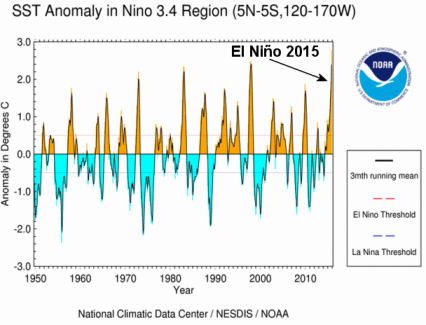 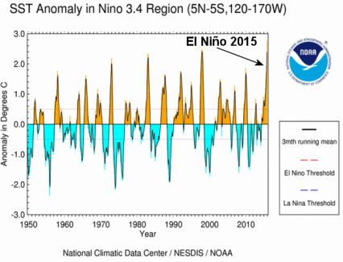
On sait que, sauf quelques rares exceptions mal comprises, il existe une corrélation nette entre l'indice ENSO (El Niño/La Niña) et le réchauffement/refroidissement transitoire global de la planète. Le mécanisme sous-jacent qui fait l'objet d'un grand nombre d'études fait appel aux "téléconnexions" entre les divers bassins océaniques. Voir, par exemple, ce billet sur la "Ola", l'onde de stade. Autrement dit, les oscillations ENSO (El Niño et la Niña) font intervenir aussi bien le réchauffement local de la zone équatoriale du Pacifique que le régime des vents qui règnent dans la basse stratosphère. Tout cela se fait sentir sur une très grande partie du globe.
Le graphique ci-contre superpose l'évolution de l'anomalie de température de la basse atmosphère (TLT) donnée par le RSS-MSU, pour les années 1996-2015 avec celles de l'indice ENSO (Nino3-4) "normalisé", c'est à dire décalé verticalement ( de +0,3°C) et remis à l'échelle (divisé par 5). Ce dernier est notamment fourni par le KNMI qui collationne une grande quantité de données observationnelles (et/ou résultant des modèles).
Comme on peut le constater et comme je l'avais déjà fait remarquer en 2010, la température de l'air à la surface de la planète suit assez fidèlement les variations de l'indice ENSO avec un retard d'environ 3 à 5 mois.
Sur la droite de ce graphique, on devine que le El Niño 2015 était proche de la saturation en Nov-Déc comme l'indiquent plus précisément les données détaillées à ce sujet. Depuis Janvier, cet El Niño semble avoir a entamé sa descente qui devrait ramener l'indice ENSO vers le neutre (c'est à dire avec une valeur comprise entre -0,5 et +0;5) vers la fin du printemps- début de l'été 2016, si on en croit les prévisions à ce sujet.
Nul ne sait avec certitude ce qui se passera par la suite (El Niño ou La Niña ?). Mais, ce que l'on sait c'est que, dans le passé, 11 des El Niño les plus intenses (sur 15) ont été suivis d'épisodes d'intenses La Niña, c'est à dire de périodes de refroidissement, comme pendant les années 1999-2001 qui ont succédé au très intense El Niño de 1998. Il est donc probable que la période de réchauffement relatif observé en fin d'année 2015 et, qui se poursuivra vraisemblablement au début de 2016, sera suivi d'un refroidissement à peu près équivalent mais de signe opposé.
B) Les températures moyennes globales selon les différents instituts. Les résultats divergent de plus en plus entre les mesures thermométriques et les mesures satellitaires.
Les sources des données qui ont servi à tracer les diagrammes suivants sont aisément accessibles.
Voici les liens utiles : NOAA ; GISS (NASA) ; UAH V6 ; RSS-MSU.

Je rappelle que la NOAA, le GISS de la NASA ou le HadCRUT, utilisent les mêmes bases de données thermométriques (notamment le USHSN pour les USA). A noter que le nombre des stations de mesure, réparties sur la surface du globe, par ces différentes institutions a considérablement diminué au cours des années.
Plutôt que de prendre en compte des stations défectueuses ou peu entretenues, ces organismes préfèrent utiliser des algorithmes d'homogénéisation (dont je parlerai ci-dessous) à partir des résultats de stations "bien choisies". Comme vous le verrez également ci-dessous, tout dépend, bien sûr, de ce que l'on entend par "des stations bien choisies" car différents choix sont possibles qui donnent des résultats sensiblement différents.
Je rappelle que les valeurs absolues des anomalies indiquées sur ces diagrammes en colonnes dépendant des périodes choisies pour "périodes de référence". En pratique, seul l'UAH (mesures satellitaires) se conforme aux stipulations de l'OMM qui prescrit que la base de référence choisie doit être celle de la moyenne des 3 décennies précédentes.
Voici les périodes de référence choisies par les différents instituts pour lesquels j'ai tracé les graphiques.
| Source |
Période de référence |
| GISS |
Jan 1951 - Dec 1980 (30 ans) |
| NOAA |
Jan 1901 - Dec 2000 (100 ans) |
| RSS |
Jan 1979 - Dec 1998 (20 ans) |
| UAH |
Jan 1981 - Dec 2010 (30 ans) |
Compte tenu des incertitudes revendiquées par les différents organismes et qui sont indiquées sur ces diagrammes par des barres verticales noires, il est incorrect d'affirmer que selon ces instituts "2015 est l'année la plus chaude". On peut simplement dire que, selon ces instituts, 2015 figure dans la liste des années les plus chaudes comme c'était d'ailleurs déjà le cas en 2014, toujours selon ces mêmes instituts.
Les mesures satellitaires, elles, donnent une toute autre vision des choses.
A noter que, du fait de la différence des périodes de référence choisies, les mesures RSS-MSU se trouvent décalées d'environ +0;1°C par rapport aux mesures UAH.

De fait, comme vous le verrez ci-dessous, la cohérence entre les mesures satellitaires UAH (V6) et les mesures satellitaires (totalement indépendantes et même concurrentes) RSS-MSU est excellente. Les écarts entre ces deux dernières sont bien inférieures aux incertitudes revendiquées (0,09°C).
Donc, d'après les mesures satellitaires, la basse troposphère n'a absolument pas battu des records de chaleur en 2015. Cette année a été nettement surpassée par 1998 (année d'un autre El Niño très intense) et, aux erreurs près, l'année 2015 n'est guère plus chaude que plusieurs des années précédentes comme on le voit sur les graphiques.
Il apparaît que les tendances indiquées par les données thermométriques divergent de plus en plus de celles des données satellitaires. Il n'en allait pas ainsi dans les années précédentes et cette divergence problématique a suscité des polémiques acerbes entre les tenants des mesures thermométriques et les tenants des mesures satellitaires.
La divergence croissante entre la tendance des mesures satellitaires et la tendance des mesures thermométriques apparaît nettement sur le graphique suivant qui regroupe les variations des anomalies de température selon la NOAA et le RSS-MSU :
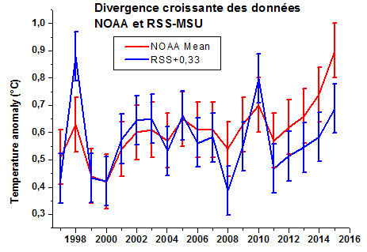
Compte tenu du fait que la NOAA et le RSS-MSU utilisent des périodes de référence différentes, et de manière à pouvoir comparer les tendances, il a été nécessaire de translater verticalement les données RSS-MSU de +0,32°C de manière à minimiser les différences observées pour les années 1999 et 2000.
A l'évidence, la translation ne change pas les tendances.
Comme on peut le voir, alors que les mesures satellitaires persistent à indiquer que nous restons sur un "plateau de température" pour lequel un grand nombre d'explications ont été proposées, il n'en est plus de même pour les mesures thermométriques de la NOAA qui ont, tout récemment, subi une assez profonde altération résultant de la remise en question des mesures thermométriques de la température des océans. Cette remise en question par la NOAA a été effectuée par l'équipe de Karl et al, 2015, d'où le nom de "Karlisation" utilisé pour désigner cette altération rétrospective très controversée des mesures des températures océaniques.
A noter que les organismes qui fournissent les données HadCRUT et GISTEMP ont immédiatement adopté le procédé de "Karlisation" lors de leurs dernières actualisations, tout en génèrant des divergences mesures satellitaires-mesures thermométriques de moindre amplitude que celle de la NOAA.
Dans l'état actuel des choses, les données de la NOAA, toutes corrections de la période de référence étant effectuées, indiquent une anomalie de la température moyenne globale d'environ 0,2 à 0,3°C supérieure à celle des mesures satellitaires (et des mesures par ballons sondes).
Ces divergences sont considérables à l'échelle du "réchauffement climatique" (estimé entre 0.7°C et 1°C) du globe depuis le début de l'ère industrielle n'ont pas laissé les scientifiques impliqués indifférents. Elles font l'objet d'un débat particulièrement virulent entre les tenants des mesures thermométriques et les tenants des mesures satellitaires.
C'est ainsi que les supporters des mesures thermométriques ont publié une vidéo produite par un think-tank supporter du "réchauffement climatique", le "Yale Climate Connection", visant à discréditer les mesures satellitaires. Les principaux intervenants dans cette vidéo sont bien connus des lecteurs de PU. il s'agit de Kevin Trenberth (cité plus haut), de Michael Mann (l'auteur du très célèbre article dit "crosse de hockey"), et de Ben Santer, tous protagonistes de l'affaire des courriels révélés au public, lors du Climategate en 2009.
La politique s'en est mêlé et le Sénat US, soutenu par une pétition de 300 scientifiques internationaux, a déposé une demande officielle exigeant, entre autres, la communication des données et la transparence dans le traitement des données de température par la NOAA.
De fait, comme vous allez le voir, les mesures thermométriques ne sont pas seulement sous le feu des critiques des défenseurs des mesures satellitaires.
C) Indépendamment des délicates mesures océaniques, la fiabilité des données thermométriques continentales pose des problèmes. Elle est sérieusement remise en question, notamment pour les USA, par deux climatologues et un météorologue lors d'une communication (texte complet et communiqué de presse) présentée à la dernière session de l'AGU. Les trois auteurs principaux de cette communication sont Anthony Watts, John Nielsen-Gammon et John Christy.
Voici une traduction du résumé de cette communication qui fait l'objet d'un article soumis à publication. A noter que la climatologue d'état, Nielsen-Gammon qui est très loin d'être un "sceptique", a tenu à vérifier la totalité des observations et des calculs avec un de ses étudiants avant de cosigner cet article, ce qui l'engage vis à vis de ses collègues "mainstream".
Les observations climatiques sont affectées par des variations de l'utilisation des sols et de la couverture arborée et ceci à toutes les échelles, y compris aux très petites échelles.
Un sous-ensemble de 4210 stations de mesure du Réseau Historique de la Climatologie US (version 2.5) a été identifié parce que n'ayant pas subi de modifications au cours du temps, ou de déplacement de stations durant la période 1979-2008.
Ces stations ont été classées en se basant sur leur proximité avec des surfaces artificielles, des bâtiments ou d'autres objets du même type qui présentent des masses thermiques non naturelles, en utilisant les principes élaborés par Leroy (2010).
Les stations, en nombre relativement limité, classées dans les catégories qui subissent un impact artificiel minimal, présentent des tendances brutes de température qui sont, en moyenne, d'environ les 2/3 de celles des stations dans les classes qui subissent un plus grand impact artificiel.
Les différences des tendances sont plus importantes pour les températures minimales et sont statistiquement significatives même à l'échelle régionale et pour différents types d'instrumentation et différents degrés d'urbanisation. Les techniques d'homogénéisation utilisées par le Centre National pour l'Information Environnementale (autrefois le NCDC) réduisent ces différences de manière importante mais produisent des tendances qui sont plus en accord avec celles des stations qui subissent un impact artificiel plus important. On ne trouve pas de différences de tendance entre le Cooperative Observer Network et le Climate Reference Network durant la sous-période 2005-2014 où la température est restée relativement stable, ce qui suggère que les différences observés résultent d'un mécanisme physique qui est directement ou indirectement impacté par les changements de température. |
En bref, une grande majorité des stations de mesure des températures aux USA (il y en a 1298 dans les états contigus US. C'est le pays le mieux équipé) présente de nombreux défauts pour ce qui concerne l'analyse des tendances historiques tels que le changement de l'environnement ou de l'équipement (asphalte déposé, bâtiments construits, arbres à proximité coupés, stations déplacées et/ou substituées par de nouveaux équipements etc.) révélés par le "projet d'étude des stations de surface" mené par Watts assisté de très nombreux participants.
Les auteurs ont sélectionné 410 stations "sans défaut", selon les critères couramment admis, c'est à dire, plutôt rurales, et qui n'avaient pas subi de modification durant la période historique considérée. Ces 410 stations sont régulièrement distribuées sur la carte des USA.
Le résultat est parlant. Les mesures enregistrées par ces stations montrent un réchauffement nettement inférieur à celui qui est donné par les 1298 stations prises en compte par la NOAA et les autres instituts faisant usage des thermomètres et des algorithmes d'homogénéisation standards.
Voici le graphique comparant les tendances des 410 stations conformes, de classe 1 et 2 (en bleu) sélectionnées avec, d'une part la tendance donnée par les stations non conformes (de classe 3, 4 et 5) en couleur orange et, d'autre part, avec les stations officielles utilisées et ajustées par la NOAA.
Le résultat est clair :
Comme on le voit, les stations conformes (classe 1 et 2) donnent une tendance de 0.204°C par décennie, les stations dégradées (classe 3, 4 et 5) donnent 0.319°C par décennie. Les stations ajustées par la NOAA donnent 0.324°C par décennie..
En bref, les résultats officiels de la NOAA indiquent un réchauffement de 0.324/0.204 = 1.6 fois supérieur aux résultats donnés par les stations conformes de classe 1 et 2.
Les auteurs précisent que cette observation doit également probablement s'appliquer au reste de la planète où les stations sont, très fréquemment, en dessous des normes requises.
En résumé, la NOAA, comme les autres institutions, ne sélectionne pas les stations suivant leurs qualités à l'exception de celles qui sont éliminées parce qu'elles donnent des mesures trop déviantes. Elles se servent de la totalité des données thermométriques et mettent en oeuvre des algorithmes dits "d'homogénéisation" de l'ensemble de ces stations ce qui peut avoir pour effet d'aligner les stations de bonne qualité sur celles qui le sont moins mais qui sont majoritaires.
Ceci explique une phrase du communiqué de presse des auteurs de la communication citée ci-dessus : "Nous pensons que le processus d'homégénéisation de la NOAA/NCDC fait que des stations bien situées sont ajustées à la hausse pour se retrouver dans la masse des stations mal situées."
Ces critiques sur le traitement et l'utilisation des données thermométriques paraissent assez difficiles à réfuter. Néanmoins, il convient d'attendre les réponses des responsables des traitements des données de la NOAA et la parution de l'article soumis par les auteurs. Comme on le voit, si ces critiques sont justifiées, il est extrêmement probable que les marges d'incertitudes de la NOAA, du GISS et du HadCRUT sont, pour le moins, très largement sous estimées, avec une forte tendance à la hausse introduite artificiellement dans les données. Comme je l'ai indiqué ci-dessus et, a contrario, les mesures satellitaires font l'objet de sévères critiques de la part des tenants des mesures thermométriques.
D) Les mesures satellitaires :
Comme le savent les lectrices/teurs de PU, les mesures satellitaires de la température de la basse couche de l'atmosphère en contact avec la planète, émanent de deux institutions qui sont indépendantes et qui sont, de fait, en concurrence (parfois sévère) depuis des années. Il s'agit, d'un part, des mesures dites UAH parce qu'elles proviennent du centre dédié de l'Université de l'Alabama Huntsville (John Christy et Roy Spencer, tous deux inventeurs et initiateurs des méthodes de mesures, tous deux médaillées par la NASA pour "réussite exceptionnelle") et, d'autre part, des mesures dites RSS-MSU, une autre émanation de la NASA.
Ces deux organismes utilisent des satellites différents, des détecteurs différents, des corrections différentes et des algorithmes de traitement des données différents. On pourrait donc s'attendre à ce que leurs résultats diffèrent quelque peu.
Il n'en est rien et les mesures de l'UAH (Version 6) et du RSS-MSU sont remarquablement cohérentes entre elles ainsi que le montre ce graphique sur lequel j'ai tracé, en trait bleu épais, les données mensuelles de l'UAH-V6 et en trait jaune mince, celles du RSS-MSU.
En réalité, les mesures sont si proches l'une de l'autre que je n'ai pas trouvé d'autre moyen pour qu'on puisse les distinguer sur le même graphique. Bien entendu, j'ai translaté verticalement le graphe du RSS-MSU de -0,1°C pour tenir compte de la différence des périodes de référence prises en compte par les deux organismes.
On voit que les rares différences entre les deux mesures sont bien inférieures à la somme des incertitudes revendiquées par les deux institutions (soit 0,18°C).
On perçoit nettement, à l'extrémité droite du graphe, la montée en puissance de l'El Niño 2015-2016 mais, de fait, l'année 2015 se classe en troisième position derrière 2010 et 1998.
John Christy, l'un des inventeurs/promoteurs des mesures satellitaires de températures de l'atmosphère à différentes altitudes, a profité d'une invitation à témoigner, le 2 Février 2016, devant les U.S. House Committee on Science, Space & Technology (Le comité de la Chambre US pour la Science, l'Espace et la Technologie) pour mettre les choses au point en ce qui concerne la fiabilité des mesures satellitaires. Voici quelques points clefs de sa présentation, mais les lecteurs intéressés pourront tirer profit de la lecture du texte écrit de sa présentation et de la vidéo prise à cette occasion. Le contenu de cette présentation réfute un par un les arguments présentés dans la vidéo des tenants de la thermométrie que j'ai citée plus haut.
En particulier, John Christy montre que les mesures satellitaires UAH V6 (et donc celles du RSS-MSU) sont très proches de celles relevées par les ballons sondes qui sont équipés de thermomètres traditionnels dont les données sont retransmises en permanence au sol par radio. Voici, ci-dessous, le graphe qu'il a présenté à ce sujet. Le mesures des ballons sont représentées en trait continu bleu et les mesures satellitaires en pointillés. (A noter, en passant, que la superposition est si parfaite que Christy aurait mieux fait d'utiliser mon mode de représentation avec des traits bleus épais et des traits minces jaunes). A noter que Christy utilise les moyennes des séries disponibles des mesures par ballons sondes (dites RATPAC, HadAT2, RICH, ROABCORE)
Christy ajoute que :
"Je trouve que c'est une stratégie d'une grande hardiesse que de promouvoir activement les résultats théoriques des modèles climatiques tout en attaquant les multiples évidences qui résultent des observations.
Notez qu'aucune des données observationnelles n'est parfaite et qu'un suivi permanent est salutaire mais quand des groupes multiples et indépendants génèrent des données et quand les résultats de deux systèmes totalement indépendants (ballons et satellites) sont très proches l'un de l'autre et sont en désaccord avec les sorties des modèles, on ne peut que se gratter la tête lorsque quelqu'un se décide à lancer une offensive contre les données de l'observation. Pour moi, ceci n'a aucun sens du point de vue scientifique." |
Au cours de son exposé, John Christy attire l'attention de ses auditeurs sur les différences significatives qui existent entre les sorties des modèles climatiques et les observations effectives.
Afin d'échapper à une critique (qu'il explique infondée) de la part des auteurs (Mann, Trenberth, Ben Santer) de la vidéo citée ci-dessus, Christy choisit d'illustrer la divergence évidente qui existe entre les modèles et les observations en situant ces dernières dans la moyenne troposphère, c'est à dire bien au dessus de la surface de la planète. Voici le graphique qu'il a présenté :
Christy fait remarquer que le seul modèle qui semble être à peu près en accord avec les observations (le trait fin qui court à travers les valeurs expérimentales) est un modèle publié par les scientifiques Russes sous le nom de INM-CM4.
En guise d'illustration, Christy a tracé les droites de tendances de la hausse de température (de 1979 à 2015 pour les observations, plus loin pour les modèles) calculées par les modèles d'une part et, d'autre part, vue par les ballons-sondes (moyenne de 4 séries de données) et les satellites (moyenne de 3 séries de données), pour la totalité de la troposphère, c'est à dire la portion de l'atmosphère qui s'étend de la surface jusqu'à environ 15.000 mètres. Voici son graphique
:
"En utilisant la période de 36 années pour la période 1979-2015, Christy trouve une tendance de
+0.079ºC/décennie pour les ballons sondes +0.091 ºC/décennie pour les données satellitaires.
La moyenne des 102 modèles climatiques ICCC CMIP-5, sur la même période donne une tendance de +0.214 ºC/décennie
De manière globale, les modèles surestiment le réchauffement de la masse de l'atmosphère (de la surface à 50000 pieds) d'un facteur 2,5. " |
... ce qui devrait quand même poser un sérieux problème aux modélisateurs car comme disait Richard Feynman à ses étudiants à Cornell en 1964 : "Si ça ne colle pas avec les expériences, c'est faux. Et c'est ce simple constat qui est la clef de la science. Cela ne fait aucune différence que la supposition soit géniale ou que l'auteur soit très intelligent ou comment il s'appelle. Si ça ne colle pas avec les expériences, c'est faux. Il n'y a rien à ajouter."
Un peu plus loin au cours de sa déposition, Christy fait remarquer que les "corrections" (dites "Karlisation") plutôt controversées, apportés par Karl et al de la NOAA aux données sur les températures de surface des océans qui ont pour résultat d'effacer "la pause", sont démenties par les observations satellitaires.
Voici le graphique que Christy présente à ce sujet.
Il s'agit d'une représentation, sur différents segments de 10 à 20 ans, des tendances décennales de la température moyenne des océans. En rouge, les tendances vues par la NOAA, résultant de la "Karlisation". En orange, les mêmes tendances vues par le HadCRUT4. En jaune, les tendances vues par les mesures satellitaires qui mesurent la température de l'air à la surface des océans et en bleu les tendances relevées pour la basse atmosphère.
Autant dire que les tendances diffèrent d'un bon facteur 3 à 10 et qu'elles ne sont, parfois, même pas du même signe.
Entre autres, Christy fait remarquer que la tendance quasi nulle du HadCRUT4 de 2001 à 2014 est en assez bon accord avec les mesures UAH et va dans le sens de la "pause" des températures, et se trouve en fort désaccord avec les données "Karlérisées" de la NOAA.
4) Conclusions :
Que les lectrices ou lecteurs me pardonnent de leur avoir infligé un billet que beaucoup trouveront sans doute un peu trop long et, parfois, un peu compliqué. Mais, au point où nous en sommes arrivés et au vu des lourdes conséquences économiques et sociétales envisagées par nos politiques, il est important de fournir quelques détails et de ne pas se contenter de superficiel comme nous l'avons vu lors de la COP21.
A la lecture attentive des articles qui paraissent dans la presse scientifique sous la plume d'auteurs renommés, on constate que la science climatique progresse. Les observations qui sont à la base de la démarche scientifique, s'enrichissent progressivement et, bien heureusement, beaucoup de chercheurs en tiennent compte, quitte à remettre en cause les (supposés) acquis du passé, même récent.
Malheureusement, on observe, en parallèle, que le microcosme médiatico-politique ne suit pas les progrès de la science et ne corrige pas ses discours en conséquence. Il en résulte un gap grandissant entre la réalité du contenu des publications scientifiques et les affirmations de plus en plus "décalées" de nos édiles et de nos médias qui influencent l'opinion.
Les deux premières parties de ce billet montrent que plusieurs idées reçues et répercutées ad infinitum dans les médias et dans les discours politiques, sont erronées ou, du moins sérieusement remises en cause, aussi bien pour ce qui concerne les ouragans/typhons/cyclones que pour les sécheresses et les pluies.
La troisième partie explique que les données résultant des mesures de la température moyenne du globe ne sont pas d'accord entre elles et qu'une année El Nino surtout s'il est particulièrement intense comme celui de cette année 2015, est certainement le plus mauvais choix possible pour ceux qui cherchent à détecter et à se convaincre du caractère anthropique du changement climatique.
Bien plus grave encore, et quels que soient les effets passagers d'un El Niño ou d'une La Niña, on observe que la divergence entre les mesures et les modèles s'accroît à mesure que le temps passe. Comme vous l'avez vu, il existe une sérieuse polémique à ce sujet. De fait, il s'agit d'une question fondamentale à laquelle il faudra bien, un jour, apporter une réponse.
Soit les modèles sont gravement déficients et leurs prévisions sont sans valeur ce qui aurait de lourdes conséquences, soit les mesures des températures satellitaires (y compris du corps même de l'atmosphère) sont erronées ce qui semble peu probable du fait qu'elles sont d'accord entre elles et qu'elles sont confirmées par les multiples ballon-sondes lancés par plusieurs institutions indépendantes.
En écrivant ceci, je ne fais que reprendre les observations de Syukuro Manabe, l'un des pères fondateurs de la théorie de l'effet de serre, qui avait déjà remarqué, en 2011, la divergence entre les mesures satellitaires et les modèles, (pour la haute troposphère tropicale), laquelle s'est aggravée. Il s'en inquiétait déjà en écrivant dans un article publié en 2011 :
| "Au vu de l'importance de l'évaluation de l'augmentation du réchauffement de la haute troposphère tropicale vis à vis de la sensibilité climatique et de l'évolution des circulations atmosphériques, il est d'une importance cruciale de comprendre les causes possibles du désaccord entre les modèles et les observations." |
En bref, la science progresse comme elle l'a toujours fait - sauf dans le cas d'une rupture fondamentale - par une suite d'erreurs et de corrections. Rien n'est définitivement gravé dans le marbre et l'idée même de "consensus" est étrangère à la démarche scientifique. Par exemple, des expériences en cours cherchent encore de nos jours, à confirmer ou à infirmer la théorie de la relativité générale d'Einstein.
Le Nobel de Physique, Richard Feynman, ne disait-il pas ?
| "Nous avons observé qu'il est d'une importance cruciale que, de manière à progresser, nous devons reconnaître notre ignorance et laisser la place au doute. La connaissance scientifique est constituée d'une série de déclarations qui possèdent différents degrés de certitude - certaines ne sont pas sûres, certaines sont presque sûres mais aucune n'est absolument certaine." |
Enfin, ceux qui s'alarment de l'hiver doux qui règne actuellement en France devraient prendre connaissance de cette rétrospective historique sur les hivers doux qu'a connus notre pays depuis le 6e siècle (recensés par le CNUM, le Conservatoire Numériques des Arts et Métiers). (h/t Skyfall.fr).
Rien de nouveau sous le soleil, comme vous le verrez.
A noter que, dans le passé, plusieurs "hivers doux" se sont plutôt mal terminés.
Stay tuned ! |
08 Janvier 2016 : Mythes, légendes et pipeaux
En bref :
La COP21 achevée, on aurait pu raisonnablement espérer que le déchaînement médiatico-politique qui a littéralement saturé le PAF pendant les mois écoulés, marquerait une pause, ne serait-ce que pour reprendre son souffle.
Il n'en est rien. Les médias persistent à propager des nouvelles aussi alarmantes qu'infondées voire en opposition flagrante avec les connaissances les plus récentes acquises par la recherche scientifique.
Parmi ces dernières, et à titre d'exemple, j'ai choisi, ce mois-ci, d'évoquer 4 mythes ou légendes que certaines agences de presse et certains politiques continuent de colporter, urbi et orbi, et que les médias reprennent sans discernement ni analyse.
1) On nous a affirmé, en cette fin d'année 2015, que le "Pôle Nord n'est plus ce qu'il était". Il n'en est rien. Le Pôle Nord n'a rien fait d'autre, à la Saint Sylvestre, que ce qu'il a fait fréquemment au cours des décennies écoulées. Encore faut-il connaître les spécificités du climat hivernal en arctique pour le savoir.
2) De même, on entend dire et on lit partout que la pluviométrie a beaucoup changé sur le globe et que les déserts sont plus secs et progressent sur la planète du fait de la diminution des pluies. Les observations démontrent qu'il n'en est rien et, de surcroît, nous apprennent que les sécheresses étaient bien pires au cours des siècles passés.
3) Tout aussi fréquemment, on nous affirme que l'Antarctique fond, ce qui contribuerait à la hausse du niveau des océans. Une étude exhaustive récente montre que ce n'est pas le cas et qu'au contraire, le continent antarctique, pris dans sa totalité, renforce sa réserve de glace et contribue plutôt à la baisse du niveau des mers et ceci, depuis fort longtemps.
4) Enfin, les mesures et les observations montrent, qu'entre autre, les îles coralliennes du Pacifique qui sont censées s'engloutir dans les océans (ce qui a servi de prétexte à l'alourdissement des exigences de certains lors de la COP21) ne le font pas et ne feront probablement pas. Les lecteurs(trices) de PU savent déjà (comme Charles Darwin) comment et pourquoi, mais visiblement, les participants à la COP21 de Paris l'ignoraient.
_____________________________________________________________
Pour commencer, voici une analyse des événements qui se sont déroulés au pôle Nord durant la transition 2015-2016 et qui ont provoqué une floraison d'articles alarmistes de la part d'organes d'information bien mal informés.
1) Le 31 Décembre 2015, c'est la panique : Le pôle Nord est au dessus de 0°C...nous affirment les médias !
Partant d'un communiqué de presse (inepte) de l'AFP, nos médias s'en sont donné à coeur joie :
-My TF1 News (avec AFP) ((31/12) : "La douceur est partout : il fait plus de 0°C au Pôle Nord" (dans le texte : "Le mercure est passé de -37°C à -8°C en deux jours sur une balise située à 300 km du Pôle Nord").
-L'express (31/12) : "Plus de 0 degré: il fait anormalement chaud au Pôle Nord".
-Maxisciences (gentside) (31/12) : "Des températures jamais constatées à cette période de l'année au Pôle Nord".
-Le Figaro (31/12) : "Au Pôle Nord, le thermomètre affiche 20 degrés de plus que les normales de saison".
-20 Minutes(31/12) : "Pôle nord trop chaud"ces températures vont devenir de plus en fréquentes"", sauf que ce n'est pas ce que nous dit le scientifique interrogé. Ce dernier a dit (selon le texte) : "Si ces températures en hiver devenaient plus fréquentes, alors oui on pourrait pointer du doigt le changement climatique".
-Les Echos.fr (31/12) (J-M Gradt d'après l'AFP) : "Climat : Le pôle Nord n'est plus ce qu'il était".
-Le Monde (31/12/) (avec l'AFP): "Douceur anormale sur l'Arctique : Plus de 0°C au pôle Nord".
-Etc.
La réalité : Que s'est-il passé à la Saint Sylvestre 2015 ? Le film des événements :
Le Mercredi 30 Décembre, une très forte dépression située au environ de l'Islande a propulsé une masse d'air "chaud" (c'est à dire avec des températures peu négatives ou proches du zéro celsius) vers le pôle Nord.
On a pu suivre, en direct, le déroulement des événements, notamment à l'aide de l'excellent site interactif earth.null qui donne, pour l'ensemble de la planète, des indications assez précises pour les vents, les températures etc. en temps réel. Les températures sont indiquées avec un code de couleur mais il est possible de sélectionner un point précis sur la carte pour connaître les données locales (le petit rond jaune).
Voici une séquence des images qui concernent le pôle Nord et l'Arctique, extraites des cartes de ce site.
Sur les images ci-dessous, la couleur bleue indique des températures négatives mais proche du zéro (typiquement de -10°C à 0°C).
La couleur violette indique des températures plus basses, proches de -27°C.
Comme on le voit sur ces images, reconstruites en temps réel à partir des (rares) données thermométriques et de diverses données disponibles, le 30/12 à minuit, une sorte de coin d'air plus chaud (de couleur bleue), remontant du Sud-Est est venu réchauffer une fraction du pôle Nord. La plus grande partie de l'Arctique (de couleur violette, à près de -27°C en cette saison) n'a pas été affectée par cette rentrée d'air plus chaud. Il s'agit d'un réchauffement localisé.
11 heures plus tard, au matin du 31/12, le triangle bleu (température entre -10°C et 0°) s'était déjà bien résorbé et à minuit du même jour, la quasi totalité de la glace du pôle Nord avait retrouvé une température proche de la normale. Comme on le voit sur la photo de droite, la température normale de -27° était rétablie sur le pôle le 02 Janvier.
Cet événement aussi bref que localisé n'a, en fait duré qu'une seule journée. Il n'est, en effet, pas impossible qu'un thermomètre isolé ait pu enregistrer, très brièvement, une température positive mais cela n'a évidemment aucune conséquence du point de vue climatologique et c'est bien trop bref pour induire une fonte de l'épaisse banquise (épaisseur moyenne 1,3 m) qui prévaut à cette période de l'année. En bref, il ne s'agit que d'un phénomène superficiel, local et de très courte durée. C'est de la météorologie et c'est très courant au pôle Nord en cette période de l'année, comme nous allons le voir.
- Un événements sans précédent, affirment les médias ?
Que nous disent les archives pour les périodes de fin d'année lors des 58 années précédentes ?
On trouve toutes les archives concernant les températures moyennes relevées (et reconstruites selon la norme ERA40) en Arctique, depuis 1958, jour après jour, jusqu'à aujourd'hui, au Nord du 80e parallèle, sur le site danois du DMI. Elles concernent donc la plus grande partie de l'Arctique située autour du pôle Nord.
Sur ces graphiques les températures (en ordonnée) sont indiquées en Kelvin (K). Le 0°C correspondant à 273K et 1K=1°C, il est aisé de calculer la température en degré Celsius par une simple soustraction.
C'est ainsi que l'on voit que la température moyenne en Arctique (au Nord du 80e parallèle) à la fin de l'année est "normalement" (le trait continu vert) d'environ 245-273= -28°C.
Les dates sont indiquées (en abscisse) par le numéro du jour de l'année.
Ces graphiques sur lesquels le trait horizontal bleu indique la position du 0°C (273K) montrent deux choses importantes concernant les spécificités de la météorologie hivernale en zone arctique :
- Comme on le voit, durant l'été boréal, (entre le 150e jour et le 230e jour de l'année, soit entre début Juin et la mi-Août) ) la température de l'air au dessus de l'Arctique est remarquablement stable et évolue entre 0°C et +2°C. A cette époque, une partie de l'océan arctique reste libre de glace. La température de l'air est stabilisée par la transition de phase eau/glace, ce qui peut s'expliquer aisément de la manière suivante : Si la température de l'air a tendance à augmenter, la chaleur supplémentaire est absorbée parce qu'un peu de glace fond et la température reste constante. Dans le cas inverse, c'est à dire si l'air devient plus froid, une partie de l'eau disponible gèle et la température reste encore constante.
-Par contre, en période hivernale, la quasi totalité de la banquise est gelée et l'effet stabilisant de l'équilibre eau/glace ne joue pratiquement plus aucun rôle. L'épaisse couche de glace constitue plutôt un véritable isolant. Dès lors, la température de l'air située au dessus de la banquise est principalement déterminée par les vents dominants. Il est bien connu que l'Arctique est sujet à de violentes tempêtes ou à des rentrées d'air plus chaud au cours de l'hiver boréal. Dès lors, la température de l'air arctique fluctue énormément au gré de la météorologie, des dépressions environnantes et des rentrées d'air plus "chaud".
C'est ce que montrent ces graphiques dans lesquels on voit clairement que la température moyenne de l'air arctique peut varier fréquemment et temporairement de plusieurs dizaines de degrés en période hivernale.
Le graphique de gauche représente les données de température pour l'année 2015. Il apparaît que "l'événement exceptionnel" qui a fait les gros titres des médias n'a guère fait varier la température moyenne de l'arctique que de 12°C pendant une seule journée (elle a atteint environ -16°C) avec un retour complet à l'équilibre normal (-27°C environ) après moins de deux jours comme on le voit sur les images précédentes et sur les graphiques du DMI.
Contrairement à ce qu'affirment les médias, cet événement n'a rien d'exceptionnel. Il est même très fréquent et il a été surpassé plusieurs fois dans le passé. Par exemple, en 1964, autour de la Noël, la température moyenne de l'air autour du pôle a brusquement augmenté de 21° et a atteint environ -10°C. Des événements du même type, toujours en fin d'année se sont également produits en 1990 et en 2002 comme on le voit sur ces graphiques.
Toujours d'après la même source danoise, on constate qu'il en a été de même en 1959, (variation de 24°C en quelques jours en fin d'année). De même, les années 1984, 1985, 2000 et 2002 ont toutes connu des pics de température plus élevée que 2015 durant les mois de décembre, sans aucun doute, du fait de tempêtes ou de rentrées d'air "chaud" localisées dans l'espace comme dans le temps.
Ainsi, contrairement aux affirmations des médias qui visiblement n'ont pas pris la peine de se renseigner plus avant sur les spécificités du climat, ou plutôt de la météorologie, en Arctique et ont pris pour argent comptant le contenu d'une dépêche inepte de l'AFP, l'événement de la St Sylvestre 2015, n'a strictement rien d'exceptionnel ni d'alarmant. Il est même très fréquent dans les régions arctiques, en automne et en hiver.
Ceci nous rappelle la panique, tout aussi injustifiée, qui s'était emparée des médias pendant l'été 2012 à propos d'un réchauffement très bref (de deux ou trois jours) de l'air au dessus du Groenland provoquant une fonte de la couche superficielle de la neige/glace comme cela se produit fréquemment en hiver en montagne ce qui verglace les pistes et les paysages enneigés et les rend plus brillants vus sous un soleil rasant.
Cette fonte aussi superficielle que brève résultait, elle aussi d'un phénomène météorologique limité qui a provoqué la remontée brutale d'une pulsation d'air plus chaud dans la zone groenlandaise. Comme le montrent les carottages glaciaires et comme le rappelle (vox clamans in deserto) la scientifique spécialiste interrogée à ce sujet, ces événements se reproduisent à intervalles plus ou moins réguliers séparés par quelques décennies depuis, au moins... le Ve siècle.
Toujours à propos de la fonte du Groenland (h/t WUWT), et dans le même ordre d'idée, un article vient de paraître dans Nature qui estime la perte cumulée en glace du Groenland depuis 115 ans (depuis 1900).
Cet article a été aussitôt repris par des médias avec un titre accrocheur susceptible d'alarmer les lecteurs, du style : "Le Groenland a perdu 9000 milliards de tonnes de glace en un siècle" ce qui paraît énorme mais ne l'est pas du tout. Comme c'est très souvent le cas, les médias ne prennent pas la peine de rappeler les ordres de grandeur qui permettent de mettre les chiffres indiqués en perspective.
Le problème est que le Groenland stocke une masse de glace absolument gigantesque d'environ 2.600.000 km3 selon l'USGS (US Géological Survey, page A113). Or 9000 milliards de tonnes (métriques) de glace représentent un volume d'environ 9000 km3 (en assimilant la densité de l'eau avec celle de la glace ce qui donne une précision suffisante dans le cas présent).
Ainsi voit-on que la perte totale en glace du Groenland en 115 ans ne représente qu'environ 0,3% de la masse totale de glace.
C'est évidemment infime, sans doute situé à l'intérieur des marges d'erreur des mesures et un titre du genre "Le Groenland a conservé 99,7% de sa masse de glace depuis 115 ans" serait évidemment beaucoup moins accrocheur que le titre choisi par les médias sans doute dans la perspective de la COP21. Ajoutons que même si on prend en compte les plus récentes estimations des pertes annuelles (186Gt/an) et en supposant que ces pertes vont perdurer dans l'avenir, il faudrait quand même environ 16000 ans pour que la glace du Groenland disparaisse complètement, ce qui est d'ailleurs impossible parce que la glace groenlandaise repose, en réalité, sur une sorte de cuvette solide ce qui interdirait, à terme, les fuites des glaciers dans l'océan. D'autre part, comme je l'ai montré dans un billet précédent, les apports en neige/glace de l'inlandsis groenlandais sont plutôt en période de croissance qu'en déclin.
Mais là encore, les médias n'ont pas pris la peine d'aller chercher un peu plus loin que le bout des dépêches de presse avant de (dés)informer leurs lecteurs...
Dans la même veine des mythes récurrents, propagés par les médias et souvent régurgités sans hésitation par les décideurs comme nous l'avons constaté à maintes reprises, voici deux mises au point concernant la question lancinante des déficits de pluies et autres inondations qui s'aggraveraient, nous dit-on. Comme vous allez le voir, il n'en est absolument rien comme nous l'apprennent les recherches les plus récentes qui montrent également que c'était bien pire au cours des siècles passés.
________________________________________________
2) Il pleut plus, il pleut moins, les déserts avancent, les déserts reculent (etc.), et c'est tout de la faute au CO2, nous dit-on.
C'est ce que nous avons pu lire, voir ou entendre, au cours des années passées, dans une multitude de médias.
Une étude éloquente et remarquablement exhaustive par rapport aux études précédentes (à l'échelle locale comme à l'échelle globale), fait le point sur ce sujet. Elle vient de paraître, en Décembre dernier, dans une revue spécialisée de bon aloi sur l'hydrologie. Elle dément carrément les affirmations de l'intitulé. En voici l'en-tête originale et une traduction en français (à droite) :
Journal d'hydrologie (531,3, Déc. 2015, pages 1020-1027) (source)
Variations des précipitations annuelles sur les continents terrestres à l'exception de l'Antarctique du XVIIIe siècle à 2013.
Point clefs :
-Nous avons analysé plus d'un million et demi de données de précipitation observés dans 1000 stations et dans 114 pays.
-Les données couvrent une période beaucoup plus longue que des études contradictoires récentes qui n'ont analysé que quelques décennies de données.
-Nous ne trouvons aucune différence substantielle pour des stations situées au Nord, sous les tropiques et dans les latitudes australes.
-Nous ne trouvons aucune différence substantielle pour des stations qui ses trouvent dans des climats secs, modérés et humides.
-Il n'y a pas de changement significatif dans les précipitations sur le globe de 1850 jusqu'à présent.. |
Les motivations des auteurs qui ont décidé d'entreprendre cette étude remarquablement exhaustive sont clairement explicitées dans l'introduction :
| Il est couramment admis que le température du globe a augmenté de près de 1°C durant le siècle dernier (IPPC 2001, 2007, 2013; van Wijngaarden, 2014). La formule de Clausius–Clapeyron montre que la pression de vapeur d'eau à saturation augmente exponentiellement avec la température. Il en découle qu'on peut raisonnablement s'attendre à ce que la pression de la vapeur d'eau atmosphérique augmente en faisant l'hypothèse que l'humidité relative reste inchangée. |
Visiblement, les auteurs s'attendaient à trouver que la pluviosité avait augmenté au cours du siècle dernier comme beaucoup le pensaient.
Il n'en est rien et les résultats de leur étude montrent que le raisonnement (très courant mais exagérément simpliste) énoncé ci-dessus, est démenti
par les observations En dépit de "la relation de Clausius-Clapeyron", leurs études montrent au contraire qu' "Il n'y a pas de changement significatif dans les précipitations sur le globe
de 1850 à maintenant" et qu'il y a pas de "différence substantielle
pour des stations qui se trouvent dans des climats secs, modérés et humides".
Voici une traduction du résumé de cet article :
Résumé : Nous avons étudié les mesures des précipitations effectuées dans près de 1000 stations réparties dans 114 pays. Chaque station dispose d'au moins 100 ans d'observations ce qui fournit une base de données de plus de un million et demi de quantité de précipitations mensuelles. Les données de certaines stations remontent aux années 1700 mais la plupart des données existent depuis les années postérieures à 1850.
Le total des précipitations annuelles n'a été pris en compte que si toutes les données mensuelles, durant une année donnée, sont disponibles. Le pourcentage de la variation de la précipitation annuelle a été tracé par rapport à la période 1961-1990, pour 6 continents, aussi bien pour les stations à différentes latitudes et pour celles qui son sujettes à des totaux annuels de précipitations faibles, modérés ou forts. Nous en avons déduit les tendances des variations des précipitations avec un intervalle de confiance de 95% pour différentes séquences temporelles. La plupart des tendances ne montraient aucun changement clairement établi. Les variations globales dans les précipitations sur les terres continentales, en excluant l'Antarctique, par rapport à la période 1961-1990 ont été estimées à 1.2 ± 1.7, 2.6 ± 2.5 and 5.4 ± 8.1% par siècle, respectivement pour les périodes 1850–2000, 1900–2000 et 1950–2000.
Une variation de 1% par siècle correspond à une variation de précipitation de
0.09 mm/an. |
Conformément aux "Points clefs" mentionnés par les auteurs, on observe que les variations sont bien inférieures à un mm d'eau/an, ce qui est infime et à la limite des marges d'erreurs. En effet - et c'est le moins que l'on puisse dire - les précipitations sur le globe (et par régions) sont d'une remarquable stabilité et ceci depuis 1850.
En conclusion, les auteurs lancent cet avertissement :
| Les stations qui enregistrent des précipitations annuelles faibles, modérées et fortes n'ont pas montré de tendances très différentes des précipitations. Ceci montre que ni les déserts ni les jungles ne sont en voie d'expansion ou de rétrécissement du fait de la variation des quantités de précipitation. Il est, dès lors, raisonnable de conclure qu'il faut rester circonspect quand aux affirmations selon lesquelles de grands changements dans les précipitations globales se sont produites au cours de derniers 150 ans. |
Ce qui est parfaitement cohérent avec l'absence de tendances des sécheresses enregistrées sur le globe depuis 1982 révélée dans le graphique déjà montré à plusieurs reprises et notamment dans un billet récent sur les événements extrêmes.
Mais que s'est-il passé auparavant ? Que savons nous des sécheresses d'antan ?
Un article, fruit de la collaboration d'un grand nombre d'auteurs bien connus, qui vient d'être publié, le 6 Novembre dernier, par l'AAAS (American Association for the Advancement of Science qui publie également la revue Science) dans la revue "Science Advances" dont voici l'en-tête et le résumé, répond à cette question :
Voici une traduction en Français du résumé de cet article dont le titre est :
"Les méga-sécheresses et les pluviosités du Monde Ancien durant notre époque chrétienne " (NdT : "Common era"~ Anno Domini. Ici, en réalité, depuis l'an 1000)
Résumé :
Les projections des modèles climatiques suggèrent un dessèchement largement répandu dans le bassin méditerranéen et une humidification dans la zone fenno-scandinave durant les décennies à venir, ceci étant dû en grande partie au forçage du climat par les gaz à effet de serre. [ NdT : c'est ce que prévoient les modèles mais l'article précédent montre que, pour l'instant, au moins, ce n'est pas le cas]
De manière à situer ces projections ainsi que d'autres sur le Monde Ancien dans une perspective historique basée sur des estimations plus complètes de la variabilité hydroclimatique naturelle, nous avons mis en place l'"Atlas des sécheresses du Monde Ancien" (OWDA)[ NdT = Old World Drougth Atlas] qui est un jeu de cartes, année après année, reconstruites d'après les données des cernes des arbres concernant l'humidité et la sécheresse estivale pour l'Europe et le bassin méditerranéen durant notre ère.
L'OWDA est en accord avec les données historiques au sujet des sécheresses sévères et des périodes humides avec une cohérence spatiale qui n'étaient pas disponibles jusqu'à présent.
De plus, les méga-sécheresses reconstruites pour l'Europe du Nord et du Centre au cours du XIe siècle et de la moitié du XVe siècle vient renforcer d'autres éléments de preuve provenant d'Amérique du Nord et d'Asie que les sécheresses étaient plus sévères, de plus vastes extension et plus prolongées sur les terres de l'hémisphère Nord avant le XXe siècle, ceci avec une compréhension inadéquate sur les causes. L'OWDA procure de nouvelles données pour la détermination des causes des sécheresses et de l'humidité et attribue la variabilité des climats du passé à la variabilité naturelle interne ou forcée. |
Voici la figure maîtresse de cet article qui regroupe les différents atlas des sécheresses précédemment disponibles (le NADA (Amérique du Nord) et le MADA (Asie) ) avec l'OWDA (Europe) du présent article, le tout rassemblé sous le sigle de NHDA.
La figure B (en bas) regroupe les évolutions des indices Z (caractérisant les intensités et les extensions) des méga-sécheresses dans les trois zones considérées de l'hémisphère Nord et ceci de l'an mil à l'an 2000.
Comme on peut le constater, les indices Z présentent des évolutions marquées et sensiblement concomitantes pour les trois zones considérées, ce qui signifie que les épisodes de méga-sécheresses du millénaire passé ne sont pas indépendants ou localisés mais qu'ils ont affecté pratiquement en même temps tout l'hémisphère Nord, durant les mêmes périodes. Ce sont donc de vastes événements climatiques dont on ignore les causes, même si les auteurs les attribuent (assez benoîtement) à la"variabilité naturelle" qui se révèle ainsi particulièrement efficace.
A noter que cette étude rapporte que la période autour des années 1600 fut notamment le siège de fortes sécheresses en Europe (carte OWDA, tiretés rouges) que l'on retrouve, mais dans une moindre mesure, dans les deux autres sous-continents des cartes NADA et MADA. Ceci corrobore les travaux de l'historien Emmanuel Garnier qui écrit dans la présentation de son livre "Plus tard, au beau milieu du fameux Petit âge glaciaire, l'Europe fut même confrontée à de véritables ... vagues de chaleurs doublées de sécheresses mettant en péril la survie des populations."
_______________________________________________________________
Les médias unanimes et aussi, quelques scientifiques, nous ont assuré que l'Antarctique perdait de la glace et que cela contribuait à la hausse du niveau des océans. Cela fait maintenant partie de la croyance populaire et se retrouve dans une multitude de forums de discussion.
Mais est-ce bien vrai ?
C'est ce que nous allons voir maintenant.
3) Contrairement aux affirmations des médias et à la croyance populaire, non seulement l'Antarctique ne fond pas mais sa masse totale de glace augmente... ce qui fait baisser le niveau des océans.
Tout les lecteurs de PU se souviennent que la glace de mer antarctique (la banquise) loin de diminuer est, au contraire, en pleine croissance. Et ceci, au moins, depuis le début de l'êre des observations satellites. Ceci n'est guère contesté. Pourtant, certains (dont le GIEC) ont affirmé que les masses de glace continentale, elles, diminuaient, ce qui contribuait à la hausse du niveau des océans, disait-on.
C'est ainsi que l'on pouvait lire à la page 4 du récent "Résumé Pour les Politiques" (SPM AR5) du GIEC (2013) la phrase suivante :
| "Durant la période 1991 à 2011, le Groenland et la calotte de glace antarctique ont perdu de leur masse (indice de confiance élevé), probablement avec un taux accru de 2002 à 2011." |
qui est répétée à plusieurs reprises dans la synthèse du rapport complet publié en 2013.
Les mesures plus approfondies publiées tout récemment contredisent ces affirmations du rapport SPM du GIEC. Elles démontrent qu'il n'en est rien pour ce qui concerne l'Antarctique et que c'est même exactement le contraire qui se produit, comme vient de le montrer un article publié au mois de Décembre dernier par des glaciologues réputés de la NASA dans le "Journal of Glaciology" dont voici le fac-simile de l'en-tête intitulée :
"Les gains en masse de la calotte glacière antarctique excèdent les pertes".
La NASA a publié un communiqué de presse le 30 Oct. 2015 à ce sujet qui a été repris au mois de Novembre.
la carte de l'Antarctique ci-contre accompagnée de son code des couleurs, met en évidence la complexité du comportement de ce continent pour ce qui concerne le comportement des masses de glaces vis à vis de la fonte ou de l'accroissement.
Il était indispensable d'étudier en détail cette cartographie pour réaliser un bilan complet des pertes et des gains localisés et c'est tout le mérite des glaciologues de la NASA que de l'avoir réalisé.
Légende :
"Carte montrant les taux de variation de la masse (NdT : de glace) donné par ICESat 2003-2008 pour l'Antarctique. Les sommes sont valables pour tout l'Antarctique : Antarctique Est (EA, 2-17); intérieur de l'Antarctique Ouest (WA2, 1, 18, 19, et 23); zone côtière de l'Antarctique Ouest (WA1, 20-21); et péninsule antarctique (24-27). Une gigatonne (GT) correspond à un milliard de tonnes métriques ou à 1,1 milliard de tons US.. Crédit: Jay Zwally/Journal of Glaciology." |
On pourrait penser que le bilan positif de la glace résulte du fait que les chutes de neige sont devenues de plus en plus abondantes. Il n'en est rien. Les chutes de neige n'ont pas augmenté. Elles ont plutôt diminué. En réalité, la neige stockée sur l'énorme continent antarctique s'accumule plus rapidement que les pertes observées dans les glaciers de l'Ouest et de la péninsule, dont le sous-sol est réputé volcanique.
Voici ce que dit le rapport de la NASA à ce sujet :
"Zwally a déclaré qu'alors que les autres scientifiques avaient postulé que les gains en élévation de la zone Est Antarctique étaient dus au récent accroissement de l'accumulation de neige, son équipe avait pris en compte les données météorologiques remontant jusqu'en 1979, pour montrer que les chutes de neige dans la zone Est Antarctique ont, en réalité, diminué de quelques 11 milliards de tonnes par an durant la période ERS comme durant la période ICESat. Ils ont aussi pris en compte les informations sur l'accumulation de neige durant des dizaines de milliers d'années calculées par d'autres scientifiques à partir de carottages glaciaires. Ceci les amené à conclure que la zone Est Antarctique s'épaissit depuis très longtemps."[...] |
L'Antarctique gagne en glace et ce n'est pas d'aujourd'hui. Ainsi, toujours tiré du communiqué de presse de la NASA :
"Le supplément de chute de neige qui a commencé il y a 10000 ans, s'est lentement accumulé sur la calotte glaciaire et s'est compacté en glace durant des millénaires, ce qui a épaissi la glace de la zone Est Antarctique et de l'intérieur de la zone Ouest Antarctique d'une moyenne d'environ 0.7 pouces (1.7 centimètres) par an. Ce faible épaississement, soutenu pendant des milliers d'années et répandu sur les vastes espaces de ces zones de l'Antarctique, correspondent à un gain de glace très important - suffisant pour surpasser les pertes dues au glaciers à écoulement rapide dans d'autres parties du continent et ainsi réduire la hausse du niveau marin du globe.
L'équipe de Zwally a calculé que le gain en masse résultant de l'épaississement de la zone Est Antarctique est resté constant de 1992 à 2008 avec +200 milliards de tonnes par an tandis que les pertes en glace dues aux régions côtières de la zone de l'Ouest Antarctique et de la péninsule Antarctique ont augmenté de 65 milliards de tonnes par an.
“La bonne nouvelle c'est que l'Antarctique ne contribue pas actuellement à la hausse du niveau des océans. Au contraire, il prélève 0,23mm par an", a dit Zwally." |
Ce qui n'empêche pas la plupart des médias francophones de continuer à propager le mythe de la fonte inquiétante de l'Antarctique telle la journaliste qui tient la rubrique environnementale "ma planète" du journal Sud-Ouest, qui nous affirmait doctement, en Juin 2015, que " la fonte de l'Antarctique s'accélère" (et, sans doute pour faire bonne mesure) "elle devient irréversible" ajoutait-t-elle.
De fait, ce qui semble irréversible c'est plutôt l'augmentation de la masse glaciaire de l'Antarctique, laquelle se poursuit depuis près de 10000 ans.
Les lecteurs(trices) avisé(e)s auront probablement remarqué que la baisse du niveau de -23mm/siècle résultant de l'épaississement de l'Antarctique annule presque exactement la hausse des océans due aux pertes du Groenland mentionnées précédemment (environ +25mm/siècle) . En bref, selon les deux article cités ci-dessus, les deux se compensent et le bilan pour la hausse des océans est nul.
____________________________________________
4) Les îles du Pacifique englouties ?
Durant la COP21, on a beaucoup entendu les interventions insistantes, parfois tonitruantes, du ministre des affaires étrangères des Îles Marshall, Tony de Brum.
(photo ci-contre) qui a joué un rôle primordial lors des dernières négociations de Paris. Ce dernier qui a fédéré les exigences d'une quantité de responsables de pays situés sur des îles, a été qualifié, entre autres, d'"improbable héros de la COP21" par le journal "l'Opinion".
Les îles Marshall sont situées dans le Pacifique, au Nord Est de l'Australie et au Nord Est de la zone représentée sur la carte ci-dessous. Il s'agit d'un ensemble d'environ un millier d'îles réparties sur une trentaine d'atolls coralliens hébergeant près de 70000 habitants. Ces îles sont, en moyenne, situées à 2m au dessus du niveau de l'océan.
Tony de Brum a constamment exigé que le seuil de hausse de température (espéré) soit abaissé jusqu'à 1,5°C pour sauver son territoire d'un engloutissement dont il perçoit, dit-il, les prémisses dès à présent et qu'il juge imminent. Ceci lui fut concédé, sans trop de difficultés, dans la rédaction de l'accord final.
Il existe un organisme officiel basé en Australie qui surveille le niveau des mers notamment autour des principales îles environnantes.Cet organisme, dépendant du BOM (Bureau of Meteorology australien) qui est appelé "Pacific Sea Level Monitoring Project" donne les "Monthly Sea Level and Meteorological Statistics" c'est à dire les relevés mensuels du niveau des mers et des statistiques météorologiques", en particulier autour des îles Marshall et de ses voisines dans l'océan Pacifique.
Voici les graphiques officielles au sujet de la "hausse" du niveau des mers aux Îles Marshall :
Ils montrent les variations du niveau des mers autour des zones indiqués.
Ci-contre, le graphique concernant la zone de Majuro où se trouve la capitale des îles Marshall : Delap-Uliga-Darrit qui héberge quelques 28000 habitants.
La courbe en rouge montre l'évolution du niveau de l'océan pendant les maximas de 1992 à nos jours. La courbe en bleu donne cette évolution pendant les minimas et la courbe verte représente les variations de la moyenne.
Comme on le voit, depuis 1992, c'est à dire depuis 24 ans, le niveau des mers est pratiquement constant à quelques centimètres près. La variation totale est nettement inférieure aux fluctuations observées. Ce graphique montre même une baisse de niveau vers la fin de la période qui est peut-être due à un effet collatéral du puissant El Niño actuel. En effet, celui de 1997-1998 semble avoir provoqué une baisse visible dans ces graphiques.
Bref, on ne voit rien d'alarmant dans tout cela.
La situation est sensiblement la même (à l'exception de la baisse de ces deux dernières années) à Funafuti (Tuvalu) souvent revendiquée comme l'archétype des archipels menacés par la montée des eaux.
Tuvalu se trouve au centre de la carte présentée ci-dessus.
Tony de Brum a argumenté et obtenu satisfaction pour ses exigences auprès des participants à la COP21 en arguant des projections informatiques des rapports du GIEC sur de la hausse des océans.
Il ne doit sans doute pas consacrer beaucoup de temps à la lecture des graphiques et des articles scientifiques qui concernent spécifiquement les pays situés sur des atolls coralliens dont il est un des ministres. S'il l'avait fait (lui ou ses conseillers), il aurait appris que, du fait de leur nature particulière, les atolls coralliens ne sont pas menacés de submersion comme le montrent de nombreux travaux tels ceux des spécialistes de la question, Paul Kench et ses collègues, que j'ai cités dans des billets précédents.
Leurs travaux, très documentés, ont été repris récemment par la revue Science sous le titre " Le réchauffement pourrait ne pas submerger les îles".
Science rappelle que : "Kench note que les récifs coralliens peuvent croître de 10 à 15mm par an - c'est à dire plus rapidement que la hausse des océans qui est attendue à la fin de ce siècle. [...] Aussi longtemps que les coraux sont en bonne santé et gênèrent un approvisionnement abondant en sable, il n'y a pas de raison qu'une île corallienne ne puisse pas croître et continuer à le faire".
National Geographic semble avoir compris le message. On trouvera ici une explication analogue tirée de Charles Darwin sur ce sujet, publiée en...1869.
En bref, il est démontré (et, en partie, connu depuis Charles Darwin) que la croissance des coraux et l'accrétion des débris coralliens apportés par les vagues sur les atolls contribuent, en permanence, au rehaussement de leur surface et que cet effet est plus rapide que la hausse (prévue) du niveau marin.
Mais comme à la COP21, à l'évidence, il s'agissait,plus de politique que de science,
peut-être doit-on plutôt se souvenir de la maxime plaisante de Mark Twain qui disait : "Never let the truth get in the way of a good story." Soit "Ne laissez jamais la vérité se mettre en travers du chemin d'une bonne histoire"...
5) Conclusion :
Tous les articles que je vous ai présentés ci-dessus sont très récents et comme on peut le constater, la science progresse sans désemparer. Le socle des connaissances issues des observations rendues disponibles aux chercheurs s'enrichit en permanence et, comme on le voit, il est fréquent que les analyse plus complètes viennent réfuter les "certitudes" précédentes (comme c'est le cas pour les sécheresses qui devaient "rendre les déserts plus secs" et l'emblématique "fonte" de l'Antarctique... qui, en réalité, ne fond pas mais se renforce).
Malheureusement, il apparaît que les agences de presse officielles (notamment l'AFP), les médias normalement chargés d'informer le public, les cabinets ministériels chargés d'informer les politiques, ne disposent ni des bases ni de l'expérience nécessaires pour prendre en compte le caractère fondamental de la démarche scientifique. Celle-ci procède, en réalité, par une suite d'erreurs et de corrections. Richard Feynman, le prix Nobel de Physique dont la pertinence est unanimement reconnue, ne disait il pas que "Faire de la science, c'est ne pas faire confiance aux experts" ?
Concernant les certitudes en matière de science, Feynman disait aussi
| "Nous avons observé qu'il est d'une importance cruciale que, de manière à progresser, nous devons accepter de reconnaître notre ignorance et laisser la place au doute. Le corpus de la connaissance scientifique est constitué d'un ensemble de propositions présentant différents niveaux de certitudes - il y en a qui sont plutôt incertaines, d'autres qui sont plutôt certaines mais aucune n'est absolument certaine." |
Ainsi, le jour où le microcosme médiatico-politique aura enfin compris que les scientifiques, aussi nombreux et unanimes soient-ils - ils se sont souvent trompés collectivement dans le passé - ne sont pas des gourous infaillibles, que rien n'est inscrit dans le marbre et que tout peut être remis en question du jour au lendemain, aurons-nous fait un grand pas en avant. Peut-être alors assisterons-nous à des COPXX qui ne seront pas des désastres scientifiques comme l'a été la COP21 et ne verrons-nous plus nos agences de presse et nos médias faire de la science une véritable caricature.
En complément de mes meilleurs voeux pour 2106 adressés à vous toutes et tous, mes cher(e)s lecteurs(trices), c'est le souhait que je formule pour les années à venir.
Stay tuned !
|
05 Décembre 2015 : Paris COP21 : Tout ça pour ça ?
En bref : Un article de Björn Lomborg, revu par les pairs et publié dans une revue qui traite de politique à l'échelle du globe ainsi qu'un rapport récent du MIT (Massachusets Institute of Technology) montrent que la totalité des engagements (les INDC) de réduction des émissions de CO2 déposés auprès de l'ONU par tous les pays, en vue de la COP21, ne conduiront qu'à une baisse très faible de la température en 2100 et ceci, même dans les hypothèses les plus optimistes.
Au vu des enseignements apportés par l'échec de la Conférence des Parties n°15 (La COP15) qui s'est tenue à Copenhague en 2009, il a été décidé qu'en préparation de la COP21 à Paris, chaque pays déposerait, au cours des mois précédents cette réunion, une estimation chiffrée de sa propre contribution, à l'échelle nationale, en termes de limitation ou de réduction des émissions de gaz à effet de serre. Ces engagements ou promesses, s'appellent les INDC en langage onusien (INDC : Intended Nationally Determined Contribution). C'est ainsi, qu'après quelques retards et/ou hésitations de la part d'un certain nombre de pays, le Ministre en charge de la COP21, Laurent Fabius annonçait, mercredi dernier, que 185 pays sur 195, couvrant quelque 95% des émissions de gaz à effet de serre, avaient déclaré qu'ils s'engageaient à prendre des mesures pour limiter, voire réduire, les émissions dites polluantes à l'horizon 2025 ou 2030.
J'avais déjà évoqué les INDC mentionnés par Judith Curry lors de son témoignage auprès de la Chambre des Représentants US qui a eu lieu le 15 Avril dernier.
Judith Curry disait que "... je suis préoccupée parce que l'engagement des USA auprès de la Convention Cadre des Nations Unies sur le Changement Climatique (UNFCC) ne fera pratiquement rien pour changer le climat" en avançant l'estimation d'une baisse de la température de seulement 0,03°C à la fin de ce siècle, résultant de la contribution américaine si celle-ci était maintenue sans faille jusqu'en 2100.
Dès lors, nombreux étaient ceux (qui comme moi-même) se demandaient ce qu'il en était pour les contributions des autres pays et, évidemment, pour ce qui concernait l'ensemble du globe. A l'époque de la déposition de Judith Curry, en Avril 2015, le tableau des INDC remis à l'ONU était encore très fragmentaire et il était impossible de faire le calcul complet. Il a fallu attendre le début du mois de Novembre de cette année pour avoir une vue pratiquement globale de la situation.
1) Les résultats du Dr. Björn Lomborg
C'est le statisticien danois Björn Lomborg qui s'est chargé d'effectuer et de publier le travail qui consistait à calculer les conséquences prévisibles sur la température moyenne de la planète en 2100, selon les modèles en cours, des contributions (INDC) de la quasi-totalité des pays du monde, en supposant, bien entendu que celles-ci seraient bien implémentées et, même (dans l'hypothèse optimiste), qu'elles seraient poursuivies, sans faille, jusqu'à la fin du siècle.
Qui est Björn Lomborg (image ci-contre) ?
Bjørn Lomborg est un statisticien danois, professeur à la Copenhagen Business School et ancien directeur de l'Environmental Assessment Institute de Copenhague. Ancien membre de Greenpeace, il a acquis une renommée internationale pour son livre "L'Écologiste sceptique" (publié en danois en 1998 puis en anglais sous le titre Skeptical Environmentalist en août 2001, et en français en 2004).(source).
A noter que Lomborg ne remet en cause ni le réchauffement récent de la planète ni les modèles des gaz à effet de serre (qu'il utilise d'ailleurs ci-dessous) tout en estimant leur sensibilité au CO2 exagérée. Il pense qu'il s'agit simplement d'un problème mineur et qu'il y a beaucoup de problèmes plus urgents à traiter tels que, par exemple et entre autres, fournir de l'électricité et de l'eau potable à l'Afrique. Inutile de préciser qu'il n'a plus beaucoup d'amis chez Greenpeace et dans certains cercles universitaires. |
Voici le fac-simile de l'article de Björn Lomborg avec son résumé.
Cet article est intitulé : "Impact des propositions existantes pour le climat".
L'article complet (en pdf) est disponible en accès libre.
Voici une traduction du résumé :
"Résumé : Cet article analyse, en utilisant le modèle climatique standard MAGICC, l'impact en termes de réduction de la température résultant des principales propositions des politiques en matière de climat qui doivent être mises en place en 2030. Même si on suppose, en étant optimiste, que les réductions des émissions sont maintenues durant tout le siècle, les impacts sont, de manière générale, faibles.
L'impact du Clean Power Plan des USA (USCPP) résulterait en une réduction de l'augmentation de la température de 0,013°C vers 2100. La proposition complète des USA pour la COP21 à Paris dite "La contribution envisagée par les états", (INDC) fera baisser la température de 0.031°C. La politique adoptée par l'Union Européenne aura un impact de 0.026°C, l'impact de l'INDC de l'Europe de 0.053°C et l'impact de l''INDC de la Chine sera de 0.048°C.
Toutes les politiques additionnées des Etats-Unis, de la Chine, de l'Union Européenne et du reste du monde réduiront probablement la température de 0.17°C en 2100. Les estimations de ces impacts sont robustes vis à vis des différentes estimations de la sensibilité climatique, du recyclage du carbone et des différents scénarios climatiques.
Les promesses actuelles de la politique climatique n'apporteront qu'une faible contribution à la stabilisation du climat et leurs impacts resteront indétectables pendant de nombreuses décennies." |
Qu'est ce que le programme MAGICC utilisé par Björn Lomborg ?
Mis au point par des climatologues contributeurs au GIEC, le logiciel MAGICC est un programme simplifié de modélisation du climat, au sujet duquel Lomborg nous dit que :
"Cet article tire parti du modèle climatique MAGICC qui a été utilisé au cours de la totalité des cinq rapports du GIEC. Il a été co-financé par l'EPA (l'agence de l'environnement américaine). Il fonctionne avec les paramètres standards. Une analyse sur la sensibilité, montre que les différentes hypothèses sur la sensibilité et au sujet du modèle du cycle du carbone ou du scénario ne changent pas de manière appréciable les résultats. Ce papier utilise la même méthodologie de base que Tom Wigley qui a analysé le protocole de Kyoto dans un article de 1998 très fréquemment cité." |
On peut, par exemple, vérifier que la dernière version (à l'époque) de MAGICC était mentionnée et utilisée dans le rapport du GIEC AR4 (en 2007). Ce programme est "simplifié" (mais conforme) dans le sens qu'il ne permet le calcul que d'un nombre limité d'observables comme, entre autres, la hausse de température globale en fonction du taux de CO2 atmosphérique.
Le communiqué de presse associé à cet article est intitulé : "Les promesses en matière de climat pour Paris feront baisser les températures mais seulement de 0,05°C en 2100."
A noter que le chiffre indiqué dans ce titre ne prend en compte que les promesses, stricto sensu, (INDC) déposées pour la COP21 à Paris, sans faire l'hypothèse optimiste que les restrictions pourraient être prolongées jusqu'à la fin du siècle (bien que cela ne figure pas nécessairement dans les INDC déposées) comme l'envisage aussi Lomborg.
Voici une traduction des extraits significatifs de ce communiqué de presse (caractères en gras de Lomborg) :
"Le travail de recherche du Dr. Lomborg montre que :
- L'impact sur le climat de toutes les promesses (INDC) présentées à Paris, est minuscule : Si nous prenons en compte l'impact des promesses (supposées tenues) de chaque nation, pour 2030, la réduction totale de la température sera de 0,048°C (0,086°F) vers 2100.
- Même si nous supposons que ces promesses seront prolongées pendant encore 70 années, l'impact est encore très faible : Si chaque nation remplit ses promesses en 2030 et continue à le faire fidèlement jusqu'à la fin du siècle et s'il n'y a pas de "fuite" de CO2 de la part des pays non souscripteurs, la totalité des engagements pris à Paris réduira la température du globe de seulement 0,17°C (0,306°F) en 2100.
- Les politiques des USA en matière de climat, dans les circonstances les plus optimistes, si elles sont intégralement respectées et poursuivies tout au long du siècle, réduiront la température du globe d'environ 0,031°C (0,057°F) en 2100.
- Les politiques de l'Europe en matière de climat, dans les circonstances les plus optimistes, si elles sont strictement suivies et poursuivies tout au long du siècle, réduiront la température du globe d'environ 0,053°C (0,096°F) en 2100.
- Les politiques de la Chine en matière de climat, dans les circonstances les plus optimistes, si elles sont strictement suivies et poursuivies tout au long du siècle, réduiront la température du globe d'environ 0,048°C (0,086°F) en 2100.
- Les politiques climatiques du reste du monde, dans les circonstances les plus optimistes, si elles sont intégralement respectées et poursuivies tout au long du siècle, réduiront la température du globe d'environ 0,036°C (0,064°F) en 2100.[...]
"Tableau des changements attendus en 2100 en °C (à gauche) et en degrés Fahrenheit (à droite)" selon les hypothèses "Promesses à Paris" et "Promesses à Paris tenues durant 70 ans".
"La variation de la température globale depuis l'ère préindustrielle pour les scénarios suivants :
-Ne rien faire (RCP8.5) (en rouge) (NdT : On continue comme maintenant avec le scénario le plus pessimiste des modèles)
-Seulement avec les promesses INDC apportées à Paris pour la COP21 (en bleu)
-En supposant que les promesses apportées à Paris seront prolongées, sans faille, pendant encore 70 ans (en vert).
(NdT: c'est à dire jusqu'à la fin du siècle, les réductions devant être implémentées à parti de 2030).
Selon les données du logiciel MAGICC."
NdT : En réponse à plusieurs lecteurs, je précise bien que les courbes ci-contre représentent les résultats de modèles informatiques (ici MAGICC). Ce sont des "projections" informatiques et non pas des observations effectives. Comme on le voit, ces modèles sont incapables de reproduire "le plateau" des températures observé depuis une quinzaine d'années. De plus, comme nous l'avons montré à plusieurs reprises, ces modèles surestiment largement la hausse des température observée durant la période récente. |
Comme on le voit, ces calculs montrent des impacts ridiculement petits résultant des engagements pris à Paris pour la COP21.
Dès lors, comment se fait-il que les politiques, les médias, les ONG et la responsable de l'ONU (Christiana Figueres) en matière de climat, nous affirment que les promesses faites à Paris nous engagent vers des températures globales à +2.7°C ( ou 3°C) à défaut des +2°C souhaités (par rapport à l'ère pré-industrielle) pour 2100 ?
Björn Lomborg répond à cette question dans son communiqué de presse :
"Christiana Figueres a déclaré : "Les engagements des Etats (les INDC) ont la capacité de limiter la hausse de température projetée d'environ 2,7°C en 2100. Ce n'est en aucune manière suffisant mais c'est beaucoup plus faible que les valeurs estimées pour le réchauffement de 4°C, 5°C ou plus envisagées par beaucoup avant la mise en place des INDC."
Le Dr. Lomborg a dit : "Ceci est un représentation totalement fallacieuse des options offertes à la planète. Les 2,7°C proviennent de l'Agence Internationale de l'Energie (IEA) et elle suppose que si les gouvernements font peu à Paris et que, dès 2030, ils s'embarquent dans des réductions incroyablement ambitieuses, nous atteindrions les 2,7°C.
Cette façon de présenter le problème est semblable à celle qui consisterait à dire aux Grecs, lourdement endettés, que le simple remboursement de leurs dettes les plus pressantes les mettra sur une voie facile pour parvenir à résorber leur dette. Ceci est complètement illusoire.
L'organisation de Figueres estime que les promesse faites à Paris réduiront les émissions d'environ 33Gt de CO2 au total. Pour limiter l'augmentation à +2,7°C nous devrions réduire nos émissions d'environ 3000Gt - c'est à dire d'environ 100 fois plus que les engagements proposés à Paris.[...]. Ceci ne relève pas de l'optimisme, c'est un voeu pieux."
NdT: Lomborg illustre ceci par le diagramme ci-contre qui indique les réductions des émissions de CO2 en gigatonnes selon les options de réduction.
La colonne de gauche est sous-titrée "Promesses faites à Paris" (réduction de 33GT) et celle de droite "réduction requise (3066 GT) pour parvenir à 2,7°C".
|
2) Le MIT a obtenu et publié sensiblement les mêmes conclusions que Lomborg :
Au vu des chiffres précédents, on pourrait penser (espérer, diront certains) que Lomborg s'est fourvoyé dans ses calculs et que les examinateurs du Journal of Global Policy n'ont pas fait correctement leur travail de vérification, ce qui n'est pas exclu mais qui reste hautement improbable, compte tenu de l'importance et du caractère polémique de ces résultats. Il est, au contraire, pratiquement certain que ce travail a été examiné avec soin et dans ses moindres détails avant que l'autorisation de publier ne soit accordée.
Et de fait, il apparaît que les résultats présentés par Lomborg sont confirmés, à très peu près, par les chercheurs du MIT qui travaillent sur le "Joint Program on the Science and Policy of Global Change". Ces chercheurs ont publié, de manière indépendante, des résultats qui corroborent ceux de Lomborg, comme nous allons le voir. Voici l'en-tête du programme du MIT :
Dans le rapport du MIT on peut lire ceci (repris à plusieurs reprises et sous d'autres formes dans le texte, comme nous le verrons)
| "Une question qui vient à l'esprit est celle-ci : De combien les promesses (INDC) déposées à Paris avant la réunion de la COP21 vont-elles réduire le futur réchauffement, en supposant que notre estimation rend compte d'un accord et de sa mise en oeuvre ? ...La différence entre les lignes rouges et vertes représente la contribution additionnelle des politiques de la COP21 et celle-ci représente environ un amoindrissement du réchauffement de 0,2°C vers la fin du siècle." |
Voici des fac-simile d'autres extraits du rapport intitulé "MIT’s Joint Program on Global Change in Energy and Climate Outlook 2015" .
Traduction :
(à gauche) : "En supposant que les réductions d'émissions proposées (NdT : Les INDC) seraient prolongées jusqu'en 2100 mais non amplifiées, on trouve que cela conduit à une réduction du réchauffement d'environ 0,2°C à la fin du siècle, à comparer avec nos estimations, avec les mêmes hypothèses pour Copenhague et Cancun.
(à droite) : "Comme il est mis en lumière dans le résumé des principaux résultats ainsi que dans l'encart N°2, les mesures additionnelles de réduction par les principaux pays émetteurs (basés sur les INDC proposés en avance de la COP21) ont abaissé nos précédentes estimations du réchauffement à venir d'environ 0.2°C."
On peut faire remarquer, comme Judith Curry qui a écrit un billet à ce sujet, qu'une telle variation de 0,2°C restera noyée dans le bruit des fluctuations et des variations naturelles du climat. Judith Curry conclut :
| L'article de Lomborg est le premier publié au sujet de la réduction du réchauffement résultant des engagements INDC. J'imagine que nous verrons beaucoup d'autres analyses de ce genre de la part des économistes mais je ne vois pas comment les conclusions de base pourraient changer - Les engagements INDC pris à Paris n'entraîneront qu'une faible limitation du réchauffement vers la fin du XXIe siècle." |
Personnellement, je ne serai pas aussi optimiste de Judith Curry. Je vois mal un certain nombre d'économistes particulièrement engagés dans ces affaires, publier ce genre d'observations.. Si les résultats de Lomborg et du MIT sont corrects - et il n'y a aucune de raison de supposer qu'ils ne le soient pas - il est probable qu'ils s'abstiendront et que l'on n'en entendra pas parler comme c'est déjà le cas dans la presse nationale et internationale où la plus grande discrétion est observée à ce sujet... surtout pendant le déroulement de la COP21.
3) Conclusion :
Elle sera brève.
Au vu des engagements volontaires déposés auprès de l'ONU, en vue de la COP21, par la quasi-totalité des pays du monde et pour ce qui concerne "l'atténuation" c'est-à-dire pour la limitation du réchauffement envisagé pour la planète à la fin de ce siècle, la COP21, les efforts remarquables déployés par les organisateurs, par les chefs d'état, par les ministres, par les délégués, par les ONG et, last but not least, par les médias, ainsi que les substantielles dépenses engagées à Paris, ne serviront pratiquement à rien.
Et ceci, même si un accord est obtenu pour que les pays respectent leurs engagements (leurs INDC) et qu'ils continuent de les respecter, sans faillir, jusqu'à la fin du siècle, ce qui est assez improbable au vu des lendemains chaotiques qu'ont subi les accords de Kyoto.
Assez ironiquement, ce sont précisément ces mêmes modèles numériques du climat qui sont à l'origine de l'angoisse irrépressible que semblent éprouver les participants/organisateurs de la COP21 au sujet d'une future hausse des températures, qui le leur disent...
Stay Tuned !
|
06 Novembre 2015 : Calamités et événements climatiques extrêmes.
Par les temps qui courent, il ne se passe pas une journée sans que nous, lecteurs(trices) et auditeurs(trices), ne soyons abreuvé(e)s de déclarations définitives selon lesquelles les événements catastrophiques liés au climat (les événements climatiques dits extrêmes) se multiplient, en ce moment même. Selon les déclarations de ces "experts", il suffit de jeter un coup d'oeil par la fenêtre (ou sur la télé) pour s'en convaincre et ceux qui n'en sont pas convaincus sont soit aveugles soit de mauvaise foi. En un mot nous vivons les débuts de l'apocalypse. "La maison brûle" comme disait le Président Chirac, "et nous regardons dehors" (attribué à N. Hulot).
C'est ainsi, nous répète-t-on, qu'à l'heure actuelle :
- les typhons/cyclones/ouragans sont plus nombreux et plus puissants que jamais "dans l'histoire". Ils dévastent la planète comme jamais auparavant.
-
Les sécheresses dévastatrices se multiplient sur le globe et sont de plus en sévères.
-Les régions sèches le seront plus encore.
-Les inondations, "à répétition" que nous connaissons sont inédites.
-Les tornades sont plus dévastatrices et mortifères que jamais.
-Etc.
Tout cela, bien entendu, entraînera de graves conséquences géopolitiques, des conflits etc., comme nous le promet Nicolas Hulot (source AFP), l'Envoyé Spécial Pour la Protection de la Planète du Président de la République, ce qui a exigé une réflexion prospective poussée au sein de la Défense Nationale. (Note : dans la suite, les caractères engraissés l'ont été par l'auteur de PU).
| "Soyons prudents, mais il me semble assez manifeste que le changement climatique et les phénomènes climatiques extrêmes qui se multiplient jouent au minimum un facteur aggravant et parfois déclencheur de conflits", a souligné Nicolas Hulot, envoyé spécial du président français François Hollande pour la protection de la planète. |
Tout récemment, le 5/10/2015, après avoir affublé, en bloc, tous les "climato-sceptiques", y compris quelques Académiciens des Sciences, d'un nom d'oiseau que je ne répéterai pas, Nathalie Kosciusko-Morizet nous a doctement assuré que :
"Mais ça n'est pas ça que ça fait, le changement climatique. Ça multiplie ce qu'on appelle “les événements climatiques extrêmes”, c'est-à-dire que là où il y a du désert ça va être toujours plus sec, et là où il y a des problèmes d'ouragan, il va y en avoir toujours plus... On ne peut pas lier un événement climatique extrême au changement climatique, mais on sait que la multiplication lui est liée." |
Pour sa part, le Président de la COP21, Laurent Fabius, a déclaré récemment, lors d'une émission sur Eur1 (le 5/10)
| ...Mais le fait que l'on ait des pluies, des typhons, des événements de plus en plus lourds et de plus en plus nombreux, ça, c'est en lien avec le dérèglement climatique" |
L'Agence France-Presse qui n'est pas une débutante dans le domaine, affirme pour sa part, que :
| Sous l'effet des gaz à effet de serre issus pour l'essentiel de la combustion d'énergies fossiles, la planète se réchauffe à une vitesse inédite, générant des événements météorologiques extrêmes, la fonte accélérée des glaciers ou encore la montée du niveau des océans. |
Jusqu'au Saint Père, le Pape François qui avance, un peu plus prudemment, dans son Encyclique "Laudato si" que :
| .."il est en outre difficile de ne pas le [NdT : le réchauffement] mettre en relation avec l’augmentation d’événements météorologiques extrêmes, indépendamment du fait qu’on ne peut pas attribuer une cause scientifiquement déterminable à chaque phénomène particulier." |
Etc. Etc.
Les citations du même genre abondent dans tous les médias. Vous en verrez d'autres, du même style, un peu plus bas.
Cependant, et comme vous le savez, à Pensee-Unique.fr, nous sommes plutôt circonspects, surtout quand nombre d'éminents décideurs de la planète nous affirment, haut et fort, que les événements climatiques extrêmes de toute nature se sont multipliés et que si nous ne voyons rien, c'est certainement parce que nous sommes aveugles ou (pire, si nous sommes "climatosceptiques" comme ils disent) que nous ne voulons pas voir.
Alors, nous allons voir.
Nous verrons tout cela, avec quelques détails, à partir des statistiques et des graphiques officiels qui concernent l'évolution temporelle durant ces dernières années ou décennies, de ces fameux événements climatiques extrêmes qui "sont, nous dit-on, de plus en plus forts et de plus en plus nombreux et qui résultent du "dérèglement climatique"".
Dans la suite, nous analyserons l'évolution de la fréquence et de la puissance des typhons/cyclones/ouragans et des tempêtes, celle des sécheresses, celle "des régions désertiques qui devraient devenir plus sèches" et même - pourquoi pas, puisque cela a également été évoqué comme lié au changement climatique - des tremblements de terre et des tsunamis.
A tous ceux qui vous assureront que "vous n'êtes pas climatologues", vous pourrez répondre, comme l'a fait le Prix Nobel de Physique Ivar Giaever lors de récente présentation intitulée "Le réchauffement climatique revisité" à la conférence des prix Nobel à Lindau en Juin 2015, qu'il n'est nul besoin d'être climatologue ni même scientifique, pour lire et comprendre le sens d'un certain nombre de graphiques, tels que ceux qui sont reportés ci-dessous.
In fine, nous rappellerons, une fois encore, les conclusions du dernier rapport du GIEC (le rapport complet, l'AR5 de 2013) de l'ONU, au sujet des "événements extrêmes", en faisant observer que les constats de ce pesant document sont cohérents avec les graphiques que je vais vous présenter.
Enfin, in cauda venenum, nous rappellerons les conclusions d'un travail historique (scientifique) portant sur "les dérangements du temps" durant les cinq derniers siècles et qui montre que l'alarmisme météorologique ou climatique ne date pas d'aujourd'hui. On y voit, surtout, que le climat que l'on prétend désormais "déréglé", n'a, en réalité, jamais été "réglé" et qu'il n'est guère plus "déréglé" de nos jours qu'il ne l'était autrefois.
Nous commençons par nous intéresser au bilan global des catastrophes dites naturelles, toutes causes confondues, au niveau planétaire.
S'agissant de catastrophes de toute nature, à l'échelle du globe, il est bon de se référer aux grandes compagnies d'assurance internationales qui tiennent un compte vigilant des calamités qui affectent notre planète, ceci à des fins de statistique et de prospective. Parmi ces dernières, l'une des plus réputées est la compagnie AON Benfied qui publie, chaque année, un bilan relativement complet des événements catastrophiques et de leurs conséquences qui ont affecté notre planète en s'appuyant sur les données collectées dans les bases de données officielles des meilleures institutions internationales.
1) Bilan global des événements catastrophiques survenues à l'échelle de la planète :
Plusieurs graphiques qui figurent ci-dessous sont tirés du plus récent "AON - 2014 Annual Global Climate and Catastrophe Report" publié en Janvier 2015.
A) Evolution du nombre de catastrophes naturelles, toutes catégories confondues, pour la planète.
Ce graphique montre, en quatre couleurs (une pour chaque trimestre), le nombre annuel d'événements catastrophiques qui ont affecté la planète depuis 2004. Comme on le perçoit, il n'y aucune tendance à l'augmentation du nombre des calamités à l'échelle du globe. En réalité, la situation est à peu près stable, aux fluctuations d'une année sur l'autre, près. Il est donc, sans doute, un peu prématuré de nous assurer que l'apocalypse est à nos portes et a déjà frappé.
Dans le document cité, ce graphique est accompagné d'un commentaire qui situe l'année 2014 par rapport à la moyenne des années précédentes en ces termes :
De nouveau une baisse : Les pertes résultant des catastrophes en 2014 sont en dessous de la moyenne.
Les désastres, au plan global, se sont combinés en 2014 pour causer des pertes économiques de 132 milliards de dollars US, ce qui est de 37% inférieur à la moyenne décennale qui est de 211 milliards de dollars US. Les pertes ont été attribuées à 258 événements distincts à comparer avec la moyenne décennale de 260. Ces désastres ont résulté en une perte, en matière d'assurances, de 39 milliards de dollars US, ce qui est de 38% inférieur à la moyenne décennale de 63 milliards de dollars US. Elle a a été la plus faible perte des assurances depuis 2009.
2014 a été la seconde année consécutive avec des pertes, dues aux catastrophes, inférieures à la normale. |
On peut également s'intéresser à l'évolution du nombre des pertes en vies humaines causées par ces calamités naturelles, selon leur nature, toujours à l'échelle de la planète. Voici ce que nous dit le rapport AON Bienfeld :
B) Bilan global des perte humaines selon les types de calamités :
Le rapport AON nous donne le graphique ci-contre, accompagné de son commentaire traduit dans l'encadré ci-dessous.
| "L'année 2014 a vu un déclin des pertes humaines résultant de calamités naturelles par rapport à celles qui ont été enregistrées en 2013. Cette année 2014 a été substantiellement, 89%, moins meurtrière que la moyenne des années 2004-2013 qui est d'environ 76000. Durant les dix dernières années, des événements singuliers majeurs (tels le tremblement de terre à Haïti 2010); en Chine (2008) et en Indonésie (2004) ainsi que le cyclone Nangis au Myanmar (2008) ont biaisé la moyenne annuelle." |
Comme on peut le voir, ci-contre, le bilan des pertes humaines n'est pas en hausse mais en baisse.
A titre d'illustration, une étude de la NOAA, publiée récemment, montre que les pertes humaines dues au événements climatiques extrêmes aux USA ont, en 2014, battu un record vieux de 23 ans, en termes de plus faible mortalité enregistrée.
Dans ces conditions, il semble légèrement prématuré de prétendre que nous vivons un "chaos climatique" et que nous en sommes au début de l'apocalypse.
Il est vrai, comme le rappelle le commentaire de AON que ce genre de diagramme, évidemment très sensible aux événements majeurs très mortifères, comme les tremblements de terre, ne permet que difficilement d'établir une valeur moyenne. A noter, en passant, que les événements les plus mortifères sont les tremblements de terre dont le lien avec le réchauffement climatique est, pour le moins hypothétique. Ceci étant dit dans le langage mesuré des scientifiques.
Nous allons voir, ci-dessous, ce qu'il en est de l'évolution du nombre de tremblements de terre (ou des tsunamis qui résultent de tremblements de terre sous-marins) à l'échelle de la planète qui, comme certains nous l'affirment, seraient liés au "changement climatique", sans que l'on comprenne d'ailleurs ni pourquoi et ni comment.
C) Tremblements de terre et tsunamis :
Lors du discours de Manille prononcé le 26 Fév. 2015 qu'on retrouve sur le site du château, le Président de la République française déclarait :
| Le GIEC est allé plus loin, en indiquant que si nous ne faisions rien, dans les prochaines années, ce n’est pas un réchauffement de la planète de 2 degrés que nous allons connaître d’ici la fin du siècle, mais de 3, 4, voire 5 degrés. Et avec des conséquences que l’on n’a pas besoin de forcer pour les décrire, nous les connaissons déjà ; tsunamis, tremblements de terre, élévation du niveau de l’eau, atteinte inexorable à la biodiversité … |
Le président a repris, tout récemment, le 28 Septembre 2015, les mêmes affirmations devant la 70e Assemblée Générale de l'ONU (compteur 2:05).
Pour sa part, la Ministre de l'Ecologie de l'époque, Nathalie Kosciusko-Morizet (déjà mentionnée dans ce billet avec quelques autres responsables politiques) nous assurait dans le journal "les Echos" du 18 Décembre 2009 (repris sur le site du Ministère) que :
« Les effets ravageurs des excès de CO2 dans l’atmosphère sont déjà là : pas moins de 250 millions de femmes, d’hommes et d’enfants sont frappés chaque année par des tsunamis, des cyclones ou d’autres formes moins soudaines de catastrophes climatiques, notamment la montée des eaux ou la désertification de certaines régions. » |
Pour sa part, Michel Barnier, entre autres, ancien Ministre de l'Agriculture, nous affirmait, lors d'un de ses voyages en Chine, que :
| On voit bien les conséquences extrêmement graves du réchauffement climatique, ...les tremblements de terre (compteur 1:23). |
De même, l'ex-ministre de l'Ecologie, Corinne Lepage, subodorait une relation de cause à effet entre le changement climatique et le tremblement de terre/tsunami qui a frappé le Japon dans la région de Fukushima en 2011...
| ...19000 morts dus à un tsunami et à un tremblement de terre dont on peut penser que l'importance n'est pas sans lien avec le changement climatique... |
Ainsi, puisqu'il semble qu'il faille se résoudre à envisager la possibilité d'un lien (une notion pour le moins novatrice) entre l'activité sismique et le "dérèglement climatique", voyons ce que nous disent les observations soigneusement répertoriées par AON dans son rapport (Figure 26, page 19, au sujet de l'évolution du nombre des tremblements de terre planétaires de faible magnitude M 6 et de forte magnitude M≥7.0. La figure est accompagnée de son commentaire original.
| "Comme on le voit dans la Figure 26 pour les dix dernières années, l'activité totale des tremblements de terre ne montre pas de grandes fluctuations d'une année sur l'autre. Le USGS [NdT: Le Geological Survey US] précise qu'une augmentation substantielle des stations seismographiques et des améliorations continues dans les technologies et dans les communications, ont grandement renforcé la qualité de la collecte des données sur les tremblements de terre. On doit aussi observer que malgré les fluctuations du nombre total des tremblements de terre depuis le début des années 1900, les nombre des tremblements de terre majeurs (M7.0) est resté sensiblement constant d'une année à l'autre." |
Comme on le voit, la fréquence et la puissance des tremblements de terre est remarquablement stable et AON nous assure qu'il en est ainsi depuis, au moins, les années 1900. Contrairement à ce qu'affirmait Michel Barnier, le Président et ses collègues, et comme on s'y attend, on ne discerne aucun effet du "changement climatique" sur l'activité tellurique de la planète, sans compter qu'on se demande vraiment comment et pourquoi les mouvements tectoniques ou les convulsions géologiques pourraient être sensibles à une variation de la température aussi minime que celle que nous avons connue.
Les ouragans/cyclones/typhons/tornades/tempêtes sont fréquemment évoqués comme particulièrement révélateurs du "dérèglement climatique" en cours. Voyons cela.
2) Les ouragans/cyclones/typhons à l'échelle de la planète et les tornades aux USA :
Parmi d'autres :
"Le fait que l'on ait des pluies, des typhons, des événements de plus en plus lourds et de plus en plus nombreux, ça, c'est en lien avec le dérèglement climatique" (L. Fabius, Président de la COP21)
A) Les cyclones/typhons/ouragans pour le Globe :
Je rappelle ici que typhon, ouragan et cyclone désignent le même phénomène. Seule la dénomination peut changer selon les régions concernées du globe, mais pas toujours.
Tout d'abord, que nous dit le rapport AON à ce sujet ? Voici quelques graphiques extraits de ce rapport :
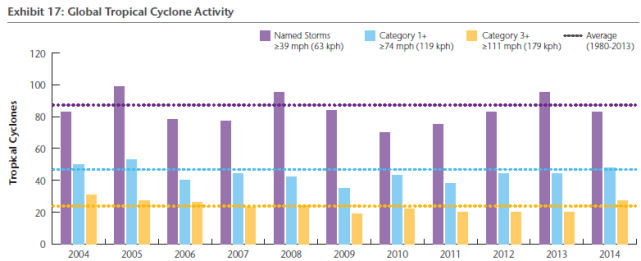
La Figure 17 du rapport qui couvre la dernière décennie pour le nombre (ou la fréquence) des cyclones tropicaux pour le globe - nous verrons plus loin pour une plus longue période - ne montre aucune tendance discernable pour ce qui est des différentes catégories de cyclones identifiées par les carrés colorés situés en haut à droite du graphique.
Les lignes en pointillé indiquent les moyennes correspondantes à la période 1980-2013.
S'agissant des pertes humaines et en matériels, celles-ci dépendent évidemment directement du nombre et de la puissance de cyclones qui ont atterri sur les continents ou sur les îles.
Cette figure 18 du rapport récapitule la variation annuelle du nombre des cyclones, selon leur catégorie (1+ et 3+ les plus intenses) qui ont touché terre durant la dernière décennie.
Ici encore, on ne discerne aucune tendance à la hausse - en réalité, plutôt à la baisse - du nombre de ces cyclones destructeurs, quelle que soit leur intensité.
Pour ce qui concerne les ouragans observés dans le bassin Atlantique :
Cette Figure 19 du rapport AON reprend les mêmes modes d'affichage que les figures précédentes.
Là encore, point de tendance haussière du nombre des ouragans quelle que soit leur puissance (indiquée par les couleurs dans le graphique ci-contre).
Le rapport AON donne le même type de représentation pour les cyclones/ouragans/typhons selon les différents bassins océaniques. Pour ne pas surcharger ce billet, je laisse au lecteurs(trices) le soin de prendre connaissance de ces graphiques dans le rapport original. De manière générale, on constate que la fréquence des cyclones, des typhons et des ouragans n'a pas varié depuis 40 ans, pour les petits comme pour les les grands et que la puissance des cyclones/ouragans/typhons (faibles ou forts) n'a pas, non plus, varié au cours des dernières décennies.
Pour remonter un peu plus haut dans le temps et avoir une vision de l'évolution de l'activité des ouragans/cyclones/typhons depuis les années 1970, on peut se reporter au site weatherbell.com qui répertorie scrupuleusement, sous la responsabilité de Ryan Maue, un expert du domaine, la totalité de ces tempêtes qui affectent le globe. Voici deux graphiques qui illustrent les données disponibles, régulièrement mises à jour.
| Figure: "Fréquence, pour les quatre dernière décennies, des tempêtes tropicales et des ouragans (sommées sur une année). Les séries du haut représentent le nombre des tempêtes tropicales qui ont atteint le minimum pour être identifiées (vents soutenus maximaux au dessus de 34 noeuds). Le graphe du bas est relatif au nombre d'ouragans (vitesse au dessus de 64 noeuds)." (mis à jour le 31 juillet 2015)." |
Comme on le voit, ici encore, il n'y a pas de tendance haussière ou baissière de la fréquence des tempêtes tropicales et des ouragans pour le globe depuis 1971. Tout cela est remarquablement stable depuis des décennies.
Le graphe précédent illustrait le taux de répétition de ces calamités à l'échelle du globe.
Mais qu'en est il de l'évolution de la puissance ou de l'intensité de l'activité cyclonique au cours des dernières décennies ?
Comme le savent les lecteurs(trices) de ce site, pour répondre à cette question, on utilise (entre autres) l'indice ACE qui représente l'énergie des cyclones accumulée pendant leur durée de vie. Voici le graphique relatif à l'évolution de l'ACE depuis 1970 pour le globe (en rouge) , pour l'hémisphère Nord (en bleu) et pour l'hémisphère Sud (en vert).
| Figure: "Energie cyclonique accumulée, pour les tempêtes tropicales et pour les ouragans, durant les 4 dernières décennies, par année. La saison cyclonique se produit dans l'hémisphère Sud de Janvier à Juillet pour chaque année calendaire. Le graphique est construit de telle façon que la valeur annuelle pour Juillet 2013-Juillet 2014 est positionnée en 2014." |
Comme on le voit ici encore, on ne discerne aucune tendance haussière (ni baissière) de l'intensité intégrée de l'activité cyclonique depuis 1970, et ceci dans les deux hémisphères, comme au plan global.
En d'autres termes, les cyclones/ouragans/typhons ne deviennent ni plus intenses, ni plus fréquents sur le globe.
Que nous disent les spécialistes de la question au sujet du lien revendiqué par nos décideurs entre l'activité tempétueuse/cyclonique et le "dérèglement climatique" ?
Voici ce qu'a écrit le GFDL (Geophysical Fluids Dynamics Laboratory), le laboratoire spécialisé sur ces sujets de la NOAA qui n'est jamais parcimonieuse en matière d'alarmisme, dans un tout récent article, daté du 30 septembre 2015 :
| Il est prématuré de conclure que les activités humaines - et, en particulier les émissions de gaz à effet de serre qui provoquent le réchauffement climatique - ont déjà eu un impact détectable sur les ouragans atlantiques ou sur l'activité globale en matière de cyclones tropicaux. Ceci étant dit, les activités humaines ont peut-être déjà causé des changements qui ne sont pas encore détectables du fait de la petitesse de ces changements ou des limitations en matière d'observation ou, encore, il s'agit de changements estimés par des modèles avec des incertitudes considérables (dues,par exemple, aux effets des aérosols). |
Puis, le GFDL de la NOAA évoquant ses modèles (évidemment non validés) prévoit que l'on verra "probablement" une augmentation de l'activité cyclonique de 2 à 11% en 2100, ce qui est très petit par rapport aux grandes fluctuations naturelles. Même si ces modèles sont vérifiés, ce qui n'est pas assuré, il n'est pas évident que nos descendants percevront une quelconque différence.
On constate ainsi - non sans une certaine admiration - qu'alors que les laboratoires les mieux équipés du monde reconnaissent (conformément au récent rapport du GIEC) être incapables de percevoir la moindre influence humaine sur les calamités cycloniques, notre personnel politico-médiatique, lui, affirme fréquemment, devant micros et caméras, être en mesure de la discerner et va jusqu'à préciser "qu'on le voit bien". A titre personnel, je dois confesser humblement que, comme les chercheurs du GFDL de la NOAA, et bien d'autres, je ne vois strictement rien.
Voici, à présent, l'évolution d'un phénomène catastrophique peu connu en Europe de l'Ouest mais qui est fréquent et peut se révéler très destructeur aux USA qui tiennent un compte scrupuleux des tornades et/ou des événements tempétueux localisés.
B) Les tornades (aux USA) :
Toujours à partir des données techniques du rapport AON, on peut distinguer les tornades les plus intenses de celles qui le sont moins. L'intensité des tornades est classée au moyen d'un indicateur Fx ou EFx. Les encadrés rapportent les commentaires du rapport attachés aux figures.
| "Depuis 1950 la tendance générale des tornades classées F1/EF1 et au dessus [NdT: les moins intenses] est restée pratiquement plate avec une petite augmentation minimale de 1,3% par an. Des données plus fiables depuis l'avénement de l'ère Döppler en 1990 montre une tendance également plate à 0.2%. En sélectionnant les données pour la dernière décennie,on observe qu'il y a eu une légère décroissance de 1,6% par an." |
Autrement dit, les tornades les moins violentes ne sont pas en augmentation. Et, durant cette dernière décennie, elles sont plutôt très légèrement moins fréquentes.
La figure suivante indique l'évolution du nombre des tornades de plus forte intensité aux USA. Elle est accompagnée du commentaire figurant dans l'encadré ci-dessous.
| "Depuis 1950 la tendance des tornades les plus intenses classées F3/EF3 et au dessus, est restée plate. Elle montre une faible décroissance annuelle de 0.8%. Une décroissance annuelle comparable de 1,2% est aussi observée quand on examine des données plus fiables disponibles depuis l'ère du radar Döppler en 1990. Si on sélectionne les données de la dernière décennie, on constate que la tendance est également plate avec une hausse très légère de 0,5%. |
De même, on observe une grande stabilité du nombre des tornades les plus intenses depuis 1950. Il n'y a strictement rien d'alarmant de ce côté-là, non plus.
L'évolution du bilan annuel des tornades les plus violentes, depuis 1954, aux USA, cette fois-ci, vue par la NOAA :
Comme on le voit immédiatement, le nombre des tornades les plus violentes n'a pas augmenté depuis 1954. En réalité et comme on peut l'observer, le nombre des tornades intenses a connu un maximum dans les années 1970 qui sont, comme on le sait, des années relativement fraîches.
Autrement dit, ici encore, rien ne montre que le "dérèglement climatique" aurait augmenté en quoi que ce soit, le nombre et la puissance des tempêtes localisées et des tornades au moins aux USA où elles sont soigneusement répertoriées
Voici maintenant plusieurs études intéressantes qui portent sur les sécheresses dont on nous assure qu'elles ont augmenté en sévérité et en extension.
3) Les sécheresses sur la planète :
A) au plan global
Un article publié récemment dans la revue Nature (2014) (en accès libre) fait le point sur cette question.
Son tire est le suivant : "Suivi de la sécheresse intégrée sur tout le globe et système de prédiction"
Voici la figure maîtresse de cet article qui donne l'évolution de la fraction de terre émergée de la planète affectée par divers degrés de sécheresses en fonction du temps ( de 1982 à 2012).
La légende du graphique que l'on peut lire en dessous de l'échelle des abscisses indique que les ordonnées donnent la fraction des terres émergées qui se trouvent en état de sécheresse (selon les couleurs D0 = anormalement sèche.
D1= sécheresse modérée.
D2= sévère.
D3= extrême.
D4= exceptionnelle.
Le code des couleurs est
indiqué en haut à droite sur le graphique.
Comme on le voit immédiatement, les sécheresses, leur sévérité et les surface affectées n'ont guère évolué sur la planète depuis une bonne trentaine d'années. Tout au plus, peut-on faire remarquer le El Niño de 1998 (particulièrement intense) semble avoir provoqué un accroissement ponctuel de la fraction terrestre affectée par les sécheresses. Compte tenu du fait que nous sommes actuellement en situation d'El Niño presqu'aussi intense, on peut prévoir une augmentation, toute aussi ponctuelle pour cette année 2015. Darwin avait déjà observé, en son temps, cette corrélation à l'échelle locale.
On ne voit rien dans les résultats de cette étude exhaustive qui puisse justifier les affirmations définitives d'une partie du microcosme politico-médiatique qui établit un lien entre les gaz à effet de serre anthropique et les sécheresses qui affectent le globe.
D'autres études scientifiques nous en apprennent un peu plus à ce sujet...
B) Variabilité des sécheresses et de l'humidité :
"Mais ça n'est pas ça que ça fait, le changement climatique. Ça multiplie ce qu'on appelle "les événements climatiques extrêmes". Là où il y a du désert ça va être toujours plus sec"(Nathalie Kosciusko-Morizet).
Là, on reste un peu perplexe parce que les observations scientifiques montrent très exactement le contraire de ce que nous dit notre ancienne Ministre de l'Ecologie comme en témoigne l'article suivant publié dans la très sélective revue GRL. Cet article a étudié la variabilité des sols de la planète vis à vis de la pluviométrie/sécheresse. Voici le fac-simile de l'en-tête de cet article (déjà signalé en 2012) dont le titre est : "Variations de la variabilité de la pluviosité sur les terres du globe."
Les points clefs (indiqués par les auteurs en dessous du titre dans le but de permettre un examen rapide du contenu de l'article) sont parfaitement clairs. Les voici
- Nous rendons compte d'une réduction de la variabilité P et expliquons comment cela s'est produit.
- La raison pour laquelle il y a une réduction de la variabilité est que le sec devient plus humide et l'humide devient plus sec.
- Une nouvelle méthode de détection est proposée pour confirmer ces conclusions.
|
C) La question du Sahel : Le "désert" sahélien devient-il plus sec ?
Non, c'est tout le contraire. De fait, le CO2 se révèle bénéfique pour le Sahel qui devait, nous dit-on, "devenir encore plus sec" mais qui en réalité a reverdi, précisément pendant la période du "dérèglement climatique".
Et, de fait, ce n'est pas seulement le Sahel qui a verdi, c'est la planète toute entière qui l'a fait.
Contrairement à la croyance populaire et les discours alarmistes, le Sahel a reverdi et la pluviosité y est en augmentation depuis les années 80 comme l'explique un article paru tout récemment (le 1er Juin 2015) dans la revue Nature Climate Change (une subdivision de Nature, malheureusement payante). Voici le fac-simile de l'en-tête de cet article intitulé "Rôle dominant du forçage par les gaz à effet de serre dans le retour des pluies au Sahel"
A noter que si l'agence Reuters mentionne cet article, je n'en ai vu aucune mention dans la presse francophone. La figure maîtresse (accompagnée de sa légende) de cet article est révélatrice de la situation.
| "Graphique des données pluviométriques au Sahel pour la moyenne des mois de Juillet à Septembre (JAS) sur les terres situées en 10°–20° N, 20° W–35° E tirées des observations. Les lignes rouges et noires délimitent la période précédente 1964–1993 de la période récente 1996–2010/2011." |
Comme on le voit sur le graphique, la pluviométrie/pluviosité a nettement régressé depuis 1950 jusque dans les années 1980, ce qui a inspiré les plus grandes inquiétudes.
Bien heureusement, la période récente qui va de 1985 à nos jours a vu une augmentation nette des quantités de pluies tombées sur le Sahel qui retrouve à présent une situation proche de celle qu'il a connu dans les années 1910-1920.
On pourrait se dire que le reverdissement du Sahel n'est qu'un phénomène localisé qui ne concerne pas la totalité de la planète. Il n'en est rien. La planète entière "verdit" comme le savent tous les chercheurs du domaine qui travaillent à partir des observations satellitaires qui voient ce qui est illustré sur l'image ci-contre, intitulée "Une Terre plus verte" et qui montre l'augmentation évidente de la végétation du globe au cours de la période 1982-2011.
La plupart des auteurs attribuent ces bienfaits à l'augmentation du taux de CO2 dans l'atmosphère, lequel est ainsi loin d'être le "polluant" que les médias/politiques aiment à stigmatiser, sans aucun discernement, alors qu'en réalité, le CO2 est un gaz bénéfique. Il est le vecteur essentiel du cycle du carbone. Le CO2 est le gaz de la vie... et il le montre.
Cette image ci-contre a été présentée et explicitée par deux chercheurs du Department of Earth & Environment de l'université de Boston (USA) lors d'une conférence internationale qui s'est tenue à Avignon, l'année dernière, en 2014.
Les lecteurs(trices) intéressé(e)s pourront visionner une animation de la NASA issue des mesures toutes récentes (Sept 2014-Sept 2015) de l'évolution du taux de CO2 dans l'atmosphère de la planète, prises par le nouveau satellite OCO-2.
On admirera la remarquable efficacité de la végétation de l'hémisphère Nord qui absorbe le CO2 à la fin du printemps et durant l'été boréal...pour accroître la végétation.
En guise de clin d'oeil et bien que ce billet soit déjà bien long, toujours à propos des sécheresses, je ne résiste pas à la tentation de vous montrer qu'il n'y a pas qu'en Francophonie que les médias/politiques, plus ou moins désinformés, sont carrément démentis par les observations scientifiques.
Pour la petite histoire, la récupération de la dernière sécheresse en Californie (qui en a connu beaucoup) par le Gouverneur de cet état, prête (aussi) à sourire ceux et celles qui suivent la littérature scientifique. Voici :
D) La récente sécheresse en Californie est-elle due au réchauffement climatique ? Le risque de sécheresse y est-il augmenté ou minoré par le réchauffement climatique ?
Le gouverneur Jerry Brown de la Californie a certifié à ses électeurs que la récente et sévère sécheresse qui a frappé son état, résulte du changement climatique
Malheureusement pour sa crédibilité, pendant ce temps-là, les scientifiques ont travaillé et ont démontré très précisément le contraire, comme le montre, sans ambiguïté, une étude qui vient juste d'être publiée par l'American Méteorological Society dans le Journal of Climate (payant) qui est une revue parmi les plus renommées dans le domaine.
Le titre de l'article pose la bonne question : "Est-ce que le changement climatique anthropique a affecté le risque de sécheresse en Californie ?"
La réponse est donnée dans la fin du résumé en des termes, parfaitement clairs. En bref, Le changement climatique n'augmente pas mais, au contraire, diminue les risques de sécheresses en Californie et rien ne permet de lier la sévérité de la sécheresse récente au "dérèglement climatique".
| "Ainsi, nos résultats montrent que les effets résultant du changement climatique ont rendu les sécheresses affectant l'agriculture, moins probables et que les impacts sévères actuels ne peuvent pas être causés de manière significative par des changements climatiques à long terme." |
Les auteurs arguent que, question sécheresse, la hausse des températures est compensée par l'augmentation de la pluviosité. Ils observent qu'on ne discerne aucune tendance à l'augmentation générale des sécheresses (plutôt l'inverse, en fait) pour l'agriculture.
Parmi les calamités dont on nous assure qu'elles s'accélèrent dangereusement et qu'"on le voit bien", la fonte des glaciers de la planète figure dans le top du classement.
Nous allons voir ce qu'il en est dans la réalité, toujours à partir des résultats d'études scientifiques duement peer-reviewées et publiées dans les grandes revues.
4) Le réchauffement climatique accélère la fonte des glaciers ?
"la planète se réchauffe à une vitesse inédite, générant des événements météorologiques extrêmes, la fonte accélérée des glaciers ou encore la montée du niveau des océans." déclare l'Agence France Presse.
Nous allons partir d'un article (en accès libre, ce qui est rare pour cette revue) qui aborde de manière assez précise cette question et qui est paru dans le journal de l'AMS (la Société Météorologique Américaine), il y a deux ans, en 2013. Cet article, signé par 18 auteurs provenant de différentes institutions, est intitulé "Hausse moyenne du niveau des océans durant le XXe siècle : Le total est-il supérieur à la somme des parties ?"
Les lecteurs attentifs reconnaîtront, parmi les noms des auteurs, ceux de J.A. Church et de N. J. White qui
sont de spécialistes renommés du domaine et dont j'avais cité les travaux antérieurs dans la page "océans".
Cet article cherche à clore le bilan des diverses contributions à la hausse du niveau des mers. Parmi les nombreux graphiques intéressants qui se trouvent dans cet article, on considère la Fig.2b, représentée ci-dessous, qui concerne plus spécifiquement la fonte des glaciers et sa contribution à la hausse du niveau des mers.
| FIG. 2. "Evolution temporelle de contribution de la masse des glaciers à la hausse du niveau des océans. (b) Equivalent en hausse du niveau marin de la masse globale des glaciers DMg par rapport à la référence zéro pour la moyenne des années 1986–2005. Les évolutions temporelles pour A, C et M sont les intégrales sur le temps de celles de la Figure (a). Les incertitudes pour A et C ne sont pas indiquées." |
Les lettres C, L et M font référence à des travaux antérieurs éventuellement mis à jour.
Dans le résumé de cet article, on peut lire les deux phrases importantes suivantes :
"Le taux de perte en masse des glaciers était supérieur aux estimations précédentes et n'était pas plus petit durant les première moitié du siècle que durant la seconde moitié."
..."Les reconstructions prennent en compte l'observation que la (GMSLR) [NdT = hausse moyenne du niveau marin pour le globe] n'était pas plus grande durant les 50 dernières années que durant la totalité du XXe siècle en dépit de l'augmentation des émissions anthropiques." |
En effet, comme on peut l'observer sur le graphique, la contribution de la fonte des glaciers de la planète suit une tendance approximativement linéaire en fonction du temps de 1860 à nos jours, sans indiquer aucune accélération à laquelle on s'attendrait notamment à partir des années 1950 où les émissions de CO2 ont cru de façon très significative. A juste titre, cela a surpris les auteurs de cet article qui l'ont noté par deux fois.
Pour être plus précis, voici, ci-contre, le graphe montrant la croissance des émissions de gaz carbonique anthropique (en million de tonnes de carbone par an) en fonction du temps et selon la nature des sources. Le total des émissions est représenté par la courbe en trait noir.La source de ces données ( 2015) que l'on retrouve partout, est indiquée en bas du graphique.
Comme on le voit ici, les émissions de CO2, relativement modérées jusqu'en 1950, n'ont vu une croissance significative qu'à partir de 1950, c'est à dire après la fin de la deuxième guerre mondiale.
Or, la contribution de la fonte des glaciers au niveau de la mer n'a connu aucune accélération depuis cette époque ce qui va à l'encontre des déclarations alarmistes au sujet de la fonte des glaciers de la planète qui résulteraient du "dérèglement climatique anthropique". Au contraire, la contribution à la hausse du niveau des mers due à la fonte des glaciers paraît bien "réglée" au point d'être représentée par une droite de 1860 à nos jours.
Dans le même ordre d'idées, je rappelle que la hausse des températures (voir ci-contre, à droite, le graphe obtenu à partir des données officielles HadCRUT4) a été identique durant le début du XXe siècle (de 1910 à 1945) et la fin de ce siècle (de 1975 à 2000) ce qui, comme la contribution de la fonte des glaciers au niveau des mers, constitue une "anomalie" pour la théorie en vigueur, sans parler du hiatus ou de la pause des années 1945 à 1970, bien entendu.
5) Que nous disait le plus récent rapport du GIEC (AR5, 2013) au sujet des événements climatiques extrêmes ?
J'ai déjà cité à plusieurs reprises des extraits de ce rapport officiel AR5 (Le rapport complet, publié en 2013) du GIEC au sujet de "la multiplication" des événements extrêmes dans les billets précédents.
A défaut de consulter la littérature scientifique récente sur ces sujets,
il ne serait, sans doute, pas inutile que notre personnel politico-médiatique en prenne connaissance avant de s'exprimer devant micros et caméras.
Au sujet des ouragans et cyclones tropicaux :
“Les bases de données existantes ne montrent aucune tendance significative dans la fréquence des cyclones tropicaux durant le siècle dernier....Aucune tendance robuste dans le nombre des cyclones tropicaux, des ouragans et des ouragans les plus forts, n'a été identifiée lors des 100 dernières années dans le bassin Nord Atlantique."
Au sujet des inondations :
"En résumé, le manque de preuve persiste en ce qui concerne le signe et la grandeur et/ou la fréquence des inondations à l'échelle globale, ce qui se traduit par un indice de confiance faible."
Au sujet des tempêtes, orages, grêle etc.
"En résumé, il y a une faible confiance dans les tendances observées pour les phénomènes météorologiques violents à petite échelle tels que les grêles, les orages, à cause de l'inhomogénéité des données et de l'inadaptation des systèmes de suivi."
Concernant les sécheresses et les affirmations du rapport précédent AR4 :
"Au vu des études mises à jour, les conclusions de l'AR4 (Le rapport 2007 du GIEC) concernant une augmentation des sécheresses depuis les années 1970, ont été probablement surestimées".
..."Faible confiance dans les projections des variations de la fréquence et la durée des méga-sécheresses.
Concernant les cyclones extra-tropicaux :
"En résumé, la confiance est faible dans des changements à grande échelle de l'intensité des cyclones extra-tropicaux extrêmes depuis 1900." |
Autrement dit, selon le GIEC, soit on n'observe aucune tendance, soit on n'est pas en mesure de tirer de conclusions à partir des données existantes.
A noter également - et on ne s'en étonnera pas si on connaît un peu de géophysique - que le GIEC n'évoque pas la question des répercussions éventuelles du changement climatique sur les tremblements de terre et autres tsunamis.
Apparemment, seul(e)s les politiques le font.
6) Conclusion et observations
En conclusion, je conseille à tous les angoissés du climat, à tous les prédicateurs de l'apocalypse qui serait imminente ou déjà sur nous, la lecture de l'excellent livre de l'historien scientifique Emmanuel Garnier, "Les dérangements du temps : 500 ans de chaud et de froid en Europe". Ces dernières années, E. Garnier a travaillé au sein de laboratoires de climatologie. Il sait de quoi il parle. Voici un extrait significatif de la 4-de-couv de son livre.
| La certitude qu'ont nos contemporains de vivre un " changement " climatique ne date pas d'aujourd'hui. Tiré d'archives inédites, le présent ouvrage souhaite offrir une autre réalité des fluctuations climatiques et des perceptions que celle que les Européens en ont eue au cours des 500 dernières années. La première constatation concerne le caractère neuf du réchauffement observé depuis 30 ans. La réponse de l'historien est sans appel. Bien avant le Global Warming, nos ancêtres connurent des épisodes parfois très chauds dont l'intensité fit reculer les glaciers alpins à des niveaux inférieurs à ceux d'aujourd'hui. Plus tard, au beau milieu du fameux Petit âge glaciaire, l'Europe fut même confrontée à de véritables... vagues de chaleurs doublées de sécheresses mettant en péril la survie des populations. L'histoire ne serait-elle alors qu'un éternel recommencement. Si la réponse apparaît difficile à formuler en matière de climat, il est en revanche certain que les événements extrêmes qui focalisent tant l'attention de l'opinion publique aujourd'hui faisaient déjà partie du quotidien des sociétés anciennes. La sévérité des catastrophes observées sur cinq siècles démontre qu'elles n'eurent rien à envier à nos désastres récents. |
On ne saurait mieux dire que le fameux "dérèglement climatique" ne date pas d'aujourd'hui, ou, plus exactement, que le climat n'a jamais été "réglé". Pas plus aujourd'hui qu'hier ni que demain. Ce qui est peut-être plus inquiétant sur la nature humaine, c'est cette persistance, après bien des siècles d'apprentissage, de la peur que "le ciel nous tombe sur la tête".
Comme vous avez pu le voir dans le cours de ce long billet - sa longueur est en proportion de l'augmentation lancinante de la fréquence des ces multiples assertions infondées sur les "événements climatiques extrêmes" - les observations objectives démentent la quasi totalité des allégations alarmistes qui sont sans doute censées servir à la promotion de la COP21. J'ai bien peur, qu'en réalité, elle ne soient contre-productives. Le public est moins naïf qu'on ne le croit. Il se renseigne et en tire des conclusion, parfois peu flatteuses...
Tout cela pose, bien entendu, la question de la formation initiale et de l'information dont bénéficient nos décideurs. On se demande, entre autres, qui a bien pu persuader plusieurs de nos responsables politiques que les tremblements de terre ou les tsunamis étaient liés au réchauffement climatique ou que les typhons/ouragans/cyclones étaient en hausse sur la planète.
Si on ne peut guère reprocher aux politiques, dont la formation initiale et les occupations quotidiennes sont bien éloignées de la science, leur ignorance dans ces matières, on peut quand même s'interroger sur la capacité des conseillers des cabinets ministériels ou présidentiels à leur fournir des informations sérieuses et étayées.
Cette déficience de l'information fournie à nos décideurs peut aller très loin.
C'est ainsi que le Saint-Père, le Pape François, a publié, dans son Encyclique "Laudato Si", une définition de l'effet de serre que l'on peut, respectueusement, qualifier "d'originale". La voici, tirée d'une version française certifiée de "Laudato si".
| "En se concentrant dans l’atmosphère ils [NdT : les gaz à effet de serre] empêchent la chaleur des rayons solaires réfléchis par la terre de se perdre dans l’espace." |
Ce qui, sans aller jusqu'à la définition totalement surréaliste de l'effet de serre par Michel Rocard (et d'autres), est faux. En effet, selon les théories en vigueur, on peut dire (très) approximativement, que la chaleur de la terre, (réchauffée par les rayons solaires) est émise (et non pas réfléchie) vers l'espace, sous forme de rayonnement IR, lequel est altéré par les gaz à effet de serre. On ne peut que s'étonner que l'aréopage substantiel dont s'était entouré le Pape, à cette occasion, ait laissé passer cette explication erronée de l'effet de serre.
Je n'ai pas la réponse à ces questions. Les professeurs ont-ils été déficients ou les élèves peu attentifs ou, encore, trop "orientés" ? Nous ne le savons pas.
Comme toujours sur PU, c'est à vous de vous faire votre propre opinion...
Stay Tuned !
|
7 Octobre 2015 Le point sur le Groenland, sur l'Arctique et sur la température moyenne à la surface du globe.
Les lecteurs(trices) savent bien que par ces temps qui courent - sans doute, COP21 oblige - il est difficile, voire impossible, d'échapper à une avalanche d'informations tronquées, déformées ou carrément erronées sur l'évolution réelle des observables climatiques. Tout cela est répercuté au centuple sur les radios, les télés, les journaux et jusque dans les discours du personnel politique.
En réponse au battage médiatique ambiant et à titre d'exemples parmi bien d'autres, il m'est apparu indispensable de regarder d'un peu plus près les évolutions réelles de l'englacement du Groenland, de la banquise arctique et de l'hémisphère Nord ainsi que de la température moyenne du globe qui, nous dit-on, aurait atteint des sommets très inquiétants, notamment en ce dernier mois d'août
C'est l'objet de ce billet qui sera nécessairement illustré par de nombreux graphiques qui sont, pour leur quasi totalité, mis à la disposition du public (et donc des journalistes) par les organismes officiels. A noter qu'il m'a fallu patienter et attendre la fin des périodes de fonte estivale et la publication définitive des indicateurs pertinents pour rédiger ce billet.
En résumé, en ce début d'automne, les médias ont fait beaucoup d'efforts pour nous assurer que le Groenland avait beaucoup fondu, cette année. Vous allez voir que c'est faux. Il a accumulé plus de neige et de glace qu'auparavant.
De même, on nous affirme que l'Arctique aurait beaucoup fondu durant l'été 2015. Les indicateurs montrent que c'est faux. Bien au contraire, il apparaît que la banquise arctique s'épaissit et se reforme depuis quelques années.
Enfin, les médias vous ont assuré que le mois d'août était "le plus chaud jamais enregistré". C'est, selon les différents instituts, soit carrément faux, soit les écarts enregistrés sont inférieurs aux marges d'incertitudes et ne sont pas significatifs.
1) Le Groenland fond ! (affirment les médias). Non ! C'est tout le contraire.
Comme nous le savons, le Groenland constitue une gigantesque réserve de glace (dont la hauteur peut atteindre les 3km) hors d'eau, qui, si elle fondait, contribuerait massivement à la hausse du niveau des mers. Il fait donc l'objet de toutes les attentions.
Il est impossible de citer ici tous les articles, parus dans les médias, qui ont alerté l'opinion publique sur la "situation alarmante du Groenland" ainsi que sur les conséquences apocalyptiques qui résulteraient de sa fonte massive. Parmi ceux-ci, on peut citer, à titre d'exemple typique, celui du Guardian (UK) paru le 9 août 2015
Durant la période de fonte (rapide mais brève voir ci-dessous), le Guardian (UK), n'hésite pas :

Titre : "Oh, mon Dieu (OMG = Oh My God), les glaces du Groenland fondent rapidement"
En ajoutant que la NASA allait quand même installer 200 stations robot pour en savoir un peu plus et en "oubliant" de préciser que cette fonte "rapide" (mais brève) est survenue avec beaucoup de retard et qu'elle avait été attendue pendant près de deux semaines comme on le voit sur le graphique suivant.
Par la suite, Le Guardian n'a pas, non plus, jugé utile d'informer ses lecteurs que le regel avait été tout aussi précoce que la fonte avait été retardée et que ce regel était intervenu avec quelques 15 jours d'avance par rapport aux années précédentes comme le montre le graphique ci-contre extrait du site officiel de la Météorologie Danois DMI (DMI : Danish Meteorological Institute). En bref, la période de fonte du Groenland a été étonnamment courte, en cette année 2015 . Ce n'est peut-être pas anodin.
Source du graphique (DMI).
Légende : "Le pourcentage de la superficie totale de la glace où s'est produit la fonte depuis le 1er Janvier jusqu'à aujourd'hui (en bleu). A titre de comparaison, la moyenne pour la période 1990-2013 est indiquée par la courbe en gris foncé. Les variations d'une année sur l'autre pour chaque jour de la saison de fonte sont indiquées par la zone grisée."
Les journalistes du Guardian ont également omis de préciser que, cette année, l'accumulation neige/glace a été particulièrement favorable, comme nous allons le voir..
Le graphique suivant, provenant aussi du DMI qui suit de près l'évolution du Groenland, montre l'Acc. SMB (Le budget de la neige accumulée) du premier Septembre 2014 au 31 août 2015. Comme on le voit, durant cette année écoulée, 210 milliards de tonnes de neige (ou d'équivalent en eau) s'est accumulée sur le Groenland au cours de cette année ce qui l'a beaucoup rapproché de la moyenne des 23 années précédentes.
En ordonnée, le SMB (Surface Mass Balance), le budget de la masse de neige/glace accumulée en Gigatonnes (milliards de tonnes) sur le Groenland à la date indique par l'abscisse
Légende : " Le budget de la masse accumulée en surface du premier Septembre à maintenant (ligne bleue, en Gigatonnes) ainsi que durant la saison 2011-12 (en rouge) qui a connu une fonte très intense durant l'été au Groenland. A titre de comparaison est représentée la courbe moyenne pour la période 1990-2013 (en gris foncé). La même période calendaire valable pour chaque jour aura sa propre valeur pour chacune des 24 années de la période 1990-2014. Ces différences, année après année, sont illustrées par la zone en gris clair. Cependant, pour chaque journée de l'année calendaire.la valeur la plus basse et la valeur la plus haute ont été ignorées."
On voit aussi que depuis le 1er Septembre dernier, l'augmentation de masse accumulée de neige/glace (en bleu) semble, pour l'instant au moins, suivre la trajectoire favorable de l'année Sept 2014-Sept 2015. A noter que la "masse accumulée" (Acc. SMB) ne prend pas en compte les pertes de glace qui se produisent en bordure du continent (vêlage des glaciers, icebergs etc.)
Pour plus de détails et pour situer l'évolution actuelle dans un contexte historique, je renvoie le(la) lecteur(trice) aux différents billets rédigés (2011 et 2012) sur ce sujet, au cours des années précédentes. Entre autres, on y trouvera une étude intéressante qui comparaît des prises de vues aériennes faites en 1933 avec la situation en 2012. Comme on le verra, les différences sont peu perceptibles.
Les lecteurs(rices) qui veulent se faire une idée sur les conditions météorologiques qui règnent, en temps réel, au sommet du Groenland pourront voir cette Webcam (summitcamp) qui visualise, en direct, la base de recherche installée à cet endroit. On a aussi accès (colonne de gauche) à la température et à son évolution, aux vents etc.
2) L'arctique ? C'est la catastrophe, nous répètent les médias... Bien au contraire, ça va dans le bon sens !
Petite histoire des prophéties :
Parmi bien d'autres spécialistes, le Professeur Wadhams (de l'Université de Cambridge UK, ci-contre) avait affirmé, en 2007, que leurs modèles prévoyaient que la disparition de la glace arctique en été surviendrait dès 2013, ce qui ne s'est évidemment pas produit.
Pour la petite histoire on peut rappeler qu'Al Gore a cité la prédiction du Professeur Wadhams lors de la remise de son prix Nobel (de la paix). Wadhams a, plus récemment, repoussé ses prévisions apocalyptiques à ... 2020.
A noter, également pour la petite histoire, que ce curieux professeur a déclaré craindre pour sa vie après les décès (accidentels) de trois de ses collègues qui travaillaient également sur l'Arctique. Les enquêtes de police ont pourtant montré que l'un est décédé d'une collision avec un camion alors qu'il se déplaçait en vélo, le second d'une chute dans un escalier et le troisième lors d'un impact de foudre en Ecosse. Plus récemment, le Professeur Wadhams a intenté un procès au propagateur de cette nouvelle (The Times (UK)), l'accusant d'avoir déformé ses propos. Aux dernières nouvelles, l'organisme régulateur de la presse anglaise a débouté les protestations du professeur.
Indépendamment de Wadhams, le Professeur associé (~ maître de conf., ci-contre) ) Maslowski de la Naval Postgraduate School à Monterey (Calif. USA) aboutissait, également en 2007, aux mêmes prévisions que Wadhams, c'est à dire qu'il annonçait la disparition de la glace estivale arctique en 2013 ce qui lui valut une grande célébrité et de nombreuses citations dans les médias. Maslowski ajoutait, à l'époque, que ses prévisions étaient certainement encore "trop optimistes"...Lui aussi a été sévèrement démenti par les faits.
Nous sommes actuellement en automne 2015 et comme le savent tous les lecteurs(trices) de PU, rien de tout cela ne s'est produit et l'évolution de la glace arctique va plutôt dans le bon sens comme nous allons le voir.
Dès lors, on peut se demander sur quelles bases reposaient les prophéties aussi ultra-pessimistes qu'invérifiées de nos deux professeurs anglais et américain.
Pour tenter de comprendre la démarche qui les a conduit à avancer des prophéties aussi pessimistes, il faut de se souvenir qu'en 2007, la surface de la banquise arctique avait sérieusement fondu durant l'été et que celle-ci semblait avoir amorcé ce que certains (dont Marc Serreze, directeur actuel du NCDC) appelaient "The death spiral, la spirale de la mort".
Une analyse plus approfondie avait pourtant montré que cette fonte estivale prononcée résultait d'une conjonction météorologique assez particulière (des tempêtes sur l'Arctique au moment où la glace est la plus fragile) assez semblable à celle qui s'est produite en 2012 comme je l'avais documenté dans un billet précédent.
Nos deux professeurs avaient donc, à l'époque, simplement extrapolé le graphique de l'anomalie de glace de mer arctique comme cela est symbolisé par le trait rouge que j'ai superposé au graphique de l'anomalie de la glace de mer de l'hémisphère Nord reporté ci-dessous.
Cependant, comme nous le savons, et tout particulièrement en matière de climatologie, la Nature nous réserve bien des surprises. Pour conserver sa réputation intacte, il vaut mieux rester prudent en matière de prédictions, du moins dans les prédictions à court et moyen terme. Pour les prédictions à plus long terme, 50 ou 100 ans, voire 300 ans pour certains, on peut raisonnablement espérer qu'elle seront oubliées...
a) La superficie ou l'extension des glaces de l'hémisphère Nord :
Voici, ci-contre, le graphique des anomalies de la glace de mer de l'hémisphère Nord (par rapport à la moyenne des années 1979 à 2008) en millions de kilomètres carrés, selon cryosphere (Université de l'Illinois USA) , telle que vous pouvez la suivre dans la page "indicateurs", parmi de nombreux autres graphiques.
A noter, qu'il s'agit ici de l'anomalie (par rapport à la moyenne de la période 1979-2008) et non de la superficie totale de la glace de mer. C'est pour cette raison que l'extrapolation envisagée par les professeurs Wadhams et Maslowski (symbolisée en rouge) ne recoupe pas l'axe des abscisses à l'année 2013, mais bien avant.
La Nature a démenti les prédictions catastrophistes des experts et les années suivantes ont montré que la glace arctique avait plutôt tendance à se stabiliser sur une sorte de plateau qui n'est pas sans rappeler celui de l'anomalie de la température moyenne du globe, plus connu sous le nom de "la pause" et dont il est fréquemment fait mention dans les billets précédents.
Apparemment, ce plateau de l'anomalie de la glace de mer de l'hémisphère Nord aurait commencé vers l'année 2006-2007, c'est à dire, il y a environ 9 ans.
Voici, à présent, le graphique (interactif) du NCIDC représentant l'évolution de l'extension de la glace arctique qu cours des années successives. Ce graphique interactif rassemble les données (annotées par mes soins, en bleu) de l'évolution de la superficie de la glace arctique pour les années 2015, 2011 (qui lui ressemble beaucoup, du moins pour l'instant), et 2012 (en tiretés, c'était le minimum minimorum résultant d'une violente tempête survenue en Arctique en août 2012, comme je vous l'avais expliqué). On peut également y observer la marge d'incertitude (à deux sigmas, c'est à dire quand le signal mesuré est égal au double du bruit) représentée par la zone en grisé.
En bref, en 2015, contrairement aux prédictions précédentes et comme on le voit, la glace estivale arctique est bien présente et bien loin de disparaître durant la fonte estivale, d'autant plus que son épaisseur son volume ont singulièrement augmenté cette année, par rapport aux années précédentes comme nous le verrons ci-dessous. Ce qui est le signe de l'accumulation de glace pluri-annuelle, en général plus résistante aux futures fontes estivales.
Le Dr David Whitehouse qui est éditeur scientifique au GWPF, consacre une partie de ses travaux à l'analyse des observations climatique. Il a tracé le graphique suivant tiré des données officielles sur l'évolution des minima successifs de l'extension de la glace de l'hémisphère Nord, en indiquant les marges d'erreur revendiquées (ce qui est souhaitable à défaut d'être courant). J'ai illustré son graphique en le complétant d'un rectangle violet qui permet de visualiser les mesures situées dans la marge d'incertitude de la plus récente évaluation (Sept 2015)
Comme on peut le voir, et aux incertitudes près, les minima de la superficie de la glace de l'hémisphère Nord n'ont pratiquement pas varié, durant les 9 dernières années. Le raisonnement s'applique tout aussi bien à la glace de mer arctique pour laquelle le graphique est évidemment très peu différent.
Nous avons vu ce qui concerne les superficies de la mer glacée, mais qu'en est-il de l'évolution de l'épaisseur moyenne de la glace arctique ? C'est évidemment un observable important pour estimer l'état de l'englacement de la mer arctique, notamment en été.
b) L'épaisseur de la glace arctique :
Voici un graphique qui retrace l'évolution de l'épaisseur moyenne (en mètre) de la glace arctique selon le Polar Ice Center (PIOMAS)
J'ai complété ce graphique en ajoutant la flèche bleue pour montrer la situation actuelle, sur la courbe en rouge. .
Comme le montre ce graphique (l'évolution de cette année est représentée en rouge) l'épaisseur moyenne de la glace arctique durant la période de fonte, a augmenté, en 2015, de près de 30% par rapport aux années 2010 et 2011 et de près de 20% par rapport aux années 2012 et 2013.
Visiblement, la glace arctique s'est épaissie.
c) Le volume de la glace arctique :
Connaissant la superficie englacée et l'épaisseur moyenne, il est possible d'avoir une idée de l'évolution récente du volume de la glace arctique. L'extrait ci-contre (à partir de 2006 jusqu'à nos jours) d'un graphique de l'évolution de l'anomalie du volume de la glace arctique (PIOMAS) montre clairement que le volume de la glace de mer arctique (en gris) est passé par un minimum en 2011-2012 et a récupéré depuis lors jusqu'à nos jours où on se retrouve, à peu près, dans la situation de 2007-2008.
d) Pour tenter de corroborer/expliquer les observations précédentes, on peut faire remarquer que l'année 2007 correspond au commencement d'un net refroidissement de l'Atlantique Nord, faisant suite à un réchauffement progressif de 1979 à 2006-2007 comme on le voit sur le graphique ci-dessous qui est tracé à partir des données du NCDC (Le National Océanographic Data Center US).
Voici, en bleu, la zone de l'Atlantique Nord délimitée par les coordonnées 60-0W et 30-65N qui correspond au graphique suivant.
Le graphique suivant rapporte l'évolution du contenu thermique des 700 premiers mètres de la zone Nord de l'océan atlantique représentée (en bleu) ci-dessus. Elle est relativement proche de la zone arctique et inclut le Sud du Groenland.
Le refroidissement marqué de l'Atlantique Nord, depuis 2006-2007 pourrait annoncer une reprise progressive de la glace arctique et groenlandaise dans les années qui viennent.
On peut aussi avancer l'idée que ce refroidissement de l'Atlantique Nord peut aussi augurer de futurs hivers froids pour l'Europe de l'Ouest et pour le Nord du continent américain.
Pour sa part et dans le même ordre d'idée, la climatologue Judith Curry qui est une spécialiste de la dynamique de l'Arctique, fait remarquer que l'AMO ( l'oscillation multidécennale atlantique) pourrait être passée par son maximum et avoir entamé sa descente. Si cela se confirme, cela pourrait avoir les mêmes conséquences pour l'englacement à venir de l'Arctique et du Groenland ainsi que pour les futurs hivers européens (et du Nord de l'Amérique). C'est à dire que nous pourrions nous attendre à une succession d'hivers froids et à une mer arctique moins sensible à la fonte estivale.
Mais comme toujours, restons prudents. Wait and See !
Concernant l'Arctique et comme nous l'avons vu à propos des "prédictions" démenties des Professeurs Wadhams, Maslowski et Serreze (La spirale mortelle), il convient également d'être prudent et de se souvenir que nous ne disposons de mesures satellitaires détaillées que depuis 1979. Ce qui, jusqu'à nos jours, ne nous donne qu'une fenêtre temporelle bien trop étroite sur l'histoire de l'évolution de la glace arctique au cours des décennies passées. Cependant, pour les années précédant 1979, nous disposons de récits de navigateurs des pôles qui ne semblent, hélas, pas retenir l'attention des climatologues contemporains.
A ce propos, je ne résiste pas à la tentation de reproduire ce document que le climatologue Richard Lindzen (du MIT) avait (facétieusement) montré lors d'une présentation au FermiLab en 2010.
Voici le rapport d'une agence nationale américaine :
"L'Océan Arctique se réchauffe, les icebergs se font de plus en plus rares et dans certains endroits les phoques trouvent l'eau trop chaude. Tous les rapports pointent vers un changement radical des conditions climatiques et jusqu'à des températures inconnues jusqu'à présent dans la zone arctique. Des expéditions nous rapportent que pratiquement aucune glace n'a été vue au dessus d'une latitude de 81 degrés 29 minutes. D'énormes masse de glace ont été remplacées par des moraines de terre et des pierres tandis qu'en de nombreux endroits, des glaciers bien connus ont entièrement disparu."
On croirait lire/voir/entendre un média actuel mais c'était un rapport officiel du Weather Bureau US en ... 1922 ! |
|
Bien entendu, tout récemment, les médias n'ont pas hésité à nous resservir l'antienne du "mois d'août le plus chaud de l'histoire" à l'occasion de la publication des données d'un seul institut (La NOAA)... en oubliant tous les autres qui donnent des résultats peu conformes aux attentes.
4) Le mois d'août le plus chaud de tous les mois d'août ?
C'est ce qu'on pu lire, voir et entendre, à l'unisson,sur d'innombrables médias.
Mais que nous disent les bases de données officielles, à ce sujet ?
Comme vous le savez, il y a, d'un côté, les mesures thermométriques et d'un autre côté, les mesures satellitaires. Assez bizarrement, et sans aucune explication, on observe que le désaccord grandit entre ces deux techniques d'évaluation à mesure que le temps passe. Pour la période récente, on observe que les données thermométriques, plus propices aux "ajustements", ont tendance à accentuer sérieusement le réchauffement de la planète alors que les satellites n'en voit pratiquement aucun. Nous reproduirons les données du GISS de la NASA (données thermométriques) et les données des deux organismes antagonistes et concurrents entre eux qui utilisent les mesures données par différentes flottes de satellites (l'UAH et le RSS).
Voici, sous forme de tableau des représentations de l'évolution de la température moyenne du globe et de la basse atmosphère, pour tous les mois d'août depuis 1997, et, selon notre bonne habitude, accompagnées des marges d'incertitudes correspondantes, revendiquées par les différentes institutions.
Voici les graphiques de la température globale des mois d'août successifs ( de 1997 à 2015 inclus) selon les données officielles, de trois principaux instituts (avec les sources correspondantes) :
-Le GISS (LOTI, thermométriques) de la NASA
-Les mesures satellitaires RSS
-Les mesures satellitaires UAH (dernière version V6)
Les données de la NOAA qui ont été sélectionnées par les médias indiquent que la température du mois d'août est de 0,08°C supérieure à celle du mois d'août 2014. Pour ce qui est des données HadCRUT4.4 (parues tout récemment), cette différence est de 0.07°C. Ces très faibles différences sont inférieures aux incertitudes (±0,1°C) revendiquées et donc non significatives.
|
|
|
|
Comme on le voit, et contrairement aux affirmations médiatiques, les données du GISS de la NASA montrent que le mois d'août 2015 n'a pas été plus chaud que celui de 2014. De manière plus rigoureuse et tenant compte des incertitudes, en réalité, le mois d'Août 2015 est indistinguable des mois d'Août 1998, 2003, 2006, 2010, 2011,2012,2013 et 2014.
Pour ce qui est des mesures satellitaires, comme on le voit, le mois d'août 2015 est loin de battre les records. Pour ces deux organismes, août 1998 a été le mois d'août le plus chaud et le mois d'août 2015 est indistinguable d'une kyrielle de mois d'août dont les marges d'erreur pénètrent dans les rectangles bleus.
En résumé, nous constatons, à partir des graphiques officiels que les journalistes feraient bien de consulter avant de rédiger leurs articles, que ni le Groenland, ni la glace arctique, ni les températures du mois d'août n'inspirent, en cette année 2015, d'inquiétude. Au contraire, l'évolution des observables disponibles montre que l'on peut rester optimiste. S'il est certainement possible que la température globale augmente un peu dans les mois qui viennent du fait du très intense El Niño qui sévit en ce moment dans le Pacifique (ci-contre), il est tout aussi probable que le La Niña qui lui succédera, tôt ou tard, provoquera une baisse équivalente des températures comme il en a toujours été, au moins depuis que nous disposons d'observations fiables.
En attendant, chers lecteurs et chers lectrices, restons vigilants et circonspects quant au déferlement médiatico-politique qui accompagne la "mise en condition" du public en vue de la COP21 qui se tiendra à Paris à la fin de ce mois de Novembre et au début de Décembre. Tout cela n'a que très peu à voir avec l'évolution réelle du climat. de notre planète.
Stay Tuned !
PS : La liberté d'expression et l'affaire Philippe Verdier.
|
28 août 2015 : Analyse statistique de la divergence entre les modèles numériques et les observations.
D'autre part, on constate que la '"sensibilité climatique" au CO2, évaluée dans les publications successives, s'amenuise, année après année, ceci en contradiction flagrante avec l'alarmisme actuel.
...Ce qui ne semble guère préoccuper les médias qui poursuivent leur intense campagne d'"information", comme nous le verrons plus bas.
Comme le savent les lecteurs(trices) de ce site, la quasi-totalité des mesures envisagées par les politiques en matière de climat et notamment celles qui seront discutées lors de la prochaine conférence COP21 à Paris, reposent fondamentalement sur les prédictions des modèles numériques du climat. S'il est exact que la prévision reste l'un des objectifs fondamentaux de la science, encore faut-il s'assurer que ces prévisions sont robustes et fiables avant de prendre des décisions lourdes de conséquences. Ce billet, tout comme nombre de ceux qui le précèdent et qui figurent ci-dessous, montre qu'il est légitime d'avoir quelques sérieux doutes à ce sujet.
Dans le prolongement direct des déclarations (en forme d'avertissements) présentés indépendamment par John Christy et Judith Curry devant les élus des USA que j'ai rapportées dans les billets précédents et qui attiraient, une fois encore, l'attention des décideurs sur la divergence croissante qui existe entre les résultats des modèles numériques du climat et les observations, nous allons rapporter ici une analyse statistique de la robustesse de cette divergence. Cette analyse démontre, entre autres, que la divergence entre les modèles et les observations est une fonction croissante du temps qui passe, qu'elle est tout à fait significative du point de vue statistique et qu'elle en est arrivée au point de remettre sérieusement en question les fondements mêmes des modélisations climatiques sur lesquelles repose l'intense activité politique (et médiatique) que nous connaissons actuellement.
En guise d'introduction pour l'analyse qui suit, on peut se souvenir d'un des graphiques présenté par John Christy lors de son récent exposé devant les représentants US. 
Ce graphe montre une comparaison entre la moyenne des 102 modèles climatiques CMIP-5 (en rouge) pour la moyenne troposphère (globale) et la moyenne des observations correspondantes effectuées par les deux systèmes satellitaires indépendants (et concurrents) RSS-MSU et UAH (qui donnent des résultats très semblables) représentées par les carrés ainsi que la moyenne des 4 séries de résultats obtenus par les ballons-sondes (ronds bleus).
La divergence croissante qui existe entre les modèles et les observations est particulièrement évidente.
A noter que le graphique ci-contre traite de la divergence entre les modèles et les observations de la température de la moyenne troposphère. Pour sa part, l'article traduit ci-dessous concerne la comparaison des résultats des modèles et des observations pour les températures moyennes et globales mesurées à proximité de la surface de notre planète.
Je vous propose donc, ci-dessous, une traduction intégrale d'un article rédigé par des climatologues aussi chevronnés que renommés. Les auteurs sont, dans l'ordre, Hans von Storch, Armineh Barkhordarian, Klaus Hasselmann et Eduardo Zorita (affiliations dans la traduction ci-dessous). La longue expertise et la renommée de trois de ces auteurs est attestée par le grand nombre d'articles publiés dans les revues peer-reviewed et le nombre de citations de ces derniers (von Storch : 365 publications, 8497 citations ; Zorita : 222 publications, 4396 citations et Hasselmann : 179 publications, 10339 citations).
Ces auteurs ne peuvent en aucun cas être qualifiés de "climato-sceptiques". Il s'agit tout simplement de climatologues "mainstream" expérimentés qui s'inquiètent de l'inadéquation évidente qui apparaît entre les modèles et les observations. Ils se contentent de constater l'évidence et de proposer des explications plausibles dans le contexte de nos connaissances actuelles.
Je n'ai pas traduit les "Suppléments" qui accompagnent traditionnellement la soumission de ce genre de publication. Les lecteurs(trices) intéressé(e)s pourront en prendre connaissance en cliquant sur le lien que j'indique ci-dessous. J'ai néanmoins créé un lien cliquable sur les tables de ces suppléments quand elles sont référencées dans la traduction de l'article de Hans von Storch et al.
Hormis les inter-titres, les caractères engraissés le sont par PU.
1) L'analyse de la divergence modèles/observations :
Source de l'article (2013)
Les modèles du climat peuvent-ils expliquer la stagnation récente du réchauffement climatique ?
Hans von Storch(1), Armineh Barkhordarian(1), Klaus Hasselmann(2) et Eduardo Zorita(1)
(1) Institute for Coastal Research, Helmholtz-Zentrum Geesthacht, Geesthacht, Germany
(2) Max-Planck-Institute for Meteorology, Hamburg, Germany
Au cours de ces dernières années, il est apparu que l'augmentation de la température moyenne de la couche d'air proche de la surface du globe [NdT : c'est à dire celle dont la température est mesurée par les sondes thermométriques] était nettement plus petite que celle à laquelle beaucoup s'attendaient. Nous cherchons à savoir si ceci peut être expliqué dans le cadre des scénarios numériques actuels du changement climatique. A l'inverse des analyses antérieures qui mettaient en évidence une cohérence entre les modèles et les observations à un niveau de confiance de 5%, nous trouvons que la stagnation persistante durant les quinze années, de 1998 à 2012, n'est plus cohérente avec les projections des modèles même en allant jusqu'au niveau de confiance de 2%.
Parmi les causes possibles de cette divergence, la sous-estimation de la variabilité naturelle du climat constitue un candidat potentiel mais l'influence de facteurs de forçage externes non pris en compte par les modèles ou une surestimation de la sensibilité climatique des modèles à une augmentation des concentrations de gaz à effet de serre, ne peuvent pas être éliminées. La première cause n'aurait qu'un faible impact sur les attentes à long terme du changement climatique anthropique mais la seconde et, en particulier, la troisième aurait un impact certain. Les estimations du réchauffement climatique observé durant la période récente de quinze années (1998-2012) varient entre 0.0037 °C/an (NCDC)(1) , 0.0041 °C/an (HadCRUT4) (2) et 0.008 °C/an (GISS) (3). Ces valeurs sont significativement plus faibles que le réchauffement moyen de 0.02 °C/an observé durant les trente années précédentes (1970-2000) (4).
Les modèles peuvent-ils expliquer la stagnation du réchauffement climatique ?
Nous comparons la tendance récente du réchauffement climatique observé avec un ensemble de tendances du réchauffement climatique calculé par 23 modèles différentes des Projets d'Inter-Comparaison des Modèles Climatiques (Climate Model Intercomparison Projects) CMIP3(5) et CMIP5(6) (Table S1 dans les Suppléments). Les simulations ont été effectuées pour les deux scénarios A1B (CMIP3) et RCP4.5 (CMIP5) qui sont proches de l'histoire récente des émissions avec une croissance linéaire des émissions au delà de 2012 jusqu'en 2060 (Figure 1).
Figure 1: Emissions anthropiques de carbone selon les scénarios SRES A1B (en rouge) et RCP4.5 (en bleu) comparée aux émissions anthropiques estimées (Martin Heimann, comm. personnelle).[NdT : Ce qui est conforme aux estimations du GIEC]
Une comparaison des tendances de l'ensemble des modèles numériques pour différentes séquences temporelles avec une estimation moyenne du réchauffement global (0.0041 °C/an, HadCRUT4) est montrée dans la Figure 2 (Un résumé statistique plus détaillé impliquant les deux autres estimations de la tendance récente est présentée dans la Table S2 des Suppléments).
Figure 2. Cohérence entre la tendance récente de la température globale moyenne et les simulations numériques des modèles climatiques. La figure montre la proportion des tendances simulées qui sont inférieures ou égales aux tendances annuelles observées durant la période 1998-2012 selon les données HadCRUT4, Rhadcrut15.= 0.0041 °C/an. L'ensemble des simulations a été calculé pour des séquences qui ne se chevauchent pas pour la période 2001-2060. Les modèles du climat reposent sur les scénarios d'émission RCP4.5 (CMIP5) et A1B (CMIP3). L'inset montre un zoom sur la zone de 0% à 2% .
Note : Rappel sur l'utilisation des percentiles (on dit plutôt "centiles" en français).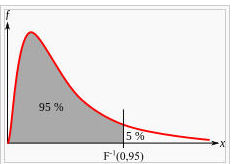
En statistique, le quatre-vingt-quinzième centile est la valeur telle que 95 % des valeurs sont en dessous et 5 % sont au-dessus.
Le graphique ci-contre, à droite, montre que les segments de longueur 12 à 20 ans sont égaux ou en dessous du quantile à 2%. De 15 à 20 ans, le quantile est inférieur à 1% ce qui signifie que plus aucun modèle ne colle avec les observations. Il s'agit de la traduction statistique du fait que les modèles s'écartent des observations à mesure que le temps passe. Et ce ne sont pas les centièmes de degré des années 2013 ou 2014 qui y changeront quoi que ce soit.
|
Pour les segments de 10 ans, 6% (CMIP3) ou 8% (CMIP5) des tendances simulées sont plus petites ou égales aux tendances observées durant la période 1998-2012 - en accord avec les tests positifs antérieurs de cohérence pour la période 1998-2009(7). Cependant, pour les tendances des intervalles de 15 ans qui correspondent aux observations récentes pour la période 1998-2012, seulement 2% parmi les 62 tendances des modèles CMIP5 et moins de 1% des 189 tendances des modèles CMIP3 sont plus faibles ou égales aux tendances observées. Si nous appliquons le test standard de la valeur statistique critique de 5% (8), nous concluons que les projections des modèles sont incohérentes avec les observations récentes du réchauffement climatique durant toute la période 1998- 2012. (Notons cependant que la terminologie du test statistique standard, bien qu'elle soit très généralement utilisée, n'est pas, à strictement parler, appropriée dans ce cas : voir les Suppléments(9)). L'incohérence augmente rapidement avec l'augmentation de la durée de la tendance. La poursuite du taux de réchauffement actuel durant une période de 20 ans et plus tomberait en dehors de toutes les tendances simulées par l'ensemble de tous les modèles climatiques.
Qu'est-ce que ces incohérences impliquent pour ce qui est de l'utilité des projections climatiques pour le changement climatique anthropique ?
Nous sommes en mesure de suggérer trois explications possibles pour les divergences modèles/observations :
1) Les modèles sous-estiment la variabilité interne et naturelle du climat.
2) Les modèles climatiques sont en défaut parce qu'ils n'incluent pas de processus de forçage externe en complément du forçage anthropique, ou,
3) La sensibilité des modèles climatiques vis à vis du forçage externe anthropique est trop élevée.
La première explication est simple et plausible. La variabilité naturelle est la conséquence inévitable pour un système lent (le climat) en interaction avec un système rapide (le temps météorologique)(10). Le forçage d'un système lent par les composantes à basse fréquence (bruit blanc) du système rapide induit un "mouvement Brownien" représenté par un spectre de variance rouge - en accord qualitatif avec les observations.
Cependant, les détails de la réponse dépendent fortement de la dynamique interne du système lent dans les échelles de temps concernées - dans le cas présent, pour des échelles de temps de décennies. On sait depuis longtemps, d'après les rapports successifs du GIEC (4) que les modèles climatiques globaux contemporains n'ont qu'un succès limité dans la simulation de nombre de processus qui vont de la variabilité de la circulation océanique, aux événements ENSO [NdT : La Niña et El Niño], aux régimes des oscillations océans-atmosphère; aux variations de la glace de mer, à sa surface continentale, à la chimie de l'atmosphère et à la biosphère. L'incapacité de simuler la variabilité statistique interne du climat peut avoir été compensée, dans le passé, par l'ajustement des modèles par des forçages externes prescrits tels que les éruptions volcaniques et les aérosols troposphériques.
Ceci expliquerait pourquoi les simulations implémentées avec des forçages historiques des différentes GCM [NdT : modèles globaux du climat] tendent à être très proches et suivent de près les observations enregistrées. Ce "gonflage" artificiel (11) par une variabilité forcée au dépens de la variabilité naturelle imprévisible fonctionne, en réalité et seulement, pour la période d'ajustement et ne fonctionne plus du tout dans la phase post-ajustement, c'est à dire approximativement depuis l'an 2000. Le résultat net d'une telle procédure est une sous-estimation de la variabilité naturelle et une surestimation de la réponse à une variabilité forcée.
De fait, la seconde explication ne peut être exclue dans le contexte de l'ajustement traditionnel des modèles.La stagnation récente pourrait être attribuée à un forçage externe qui n'est pas inclus ou qui ne l'est pas de manière satisfaisante, dans les modèles actuels. Les éruptions volcaniques et l'ensoleillement sont des candidats fréquemment invoqués. Cependant, bien que les deux explications bénéficient de supporters, une augmentation récente de l'activité volcanique n'a pas été rapportée. Les variations de l'ensoleillement ou de l'activité solaire exigent des mécanismes d'amplification qui sont encore assez spéculatifs et qui pourraient contribuer à la diminution récente du réchauffement climatique (12,13).
Enfin, la surestimation par les modèles du réchauffement climatique pour la période 1998-2012 pourrait être en partie corrigée par la sensibilité climatique supposée au forçage radiatif. En principe, les sensibilités climatiques des modèles sont calibrées par un ajustement de la réponse climatique aux variations saisonnières et fonction de la latitude du forçage solaire tout autant que par le changement climatique observé dû à l'augmentation du forçage anthropique tout particulièrement durant le XXe siècle.
Il serait difficile de modifier la calibration des modèles de manière suffisamment significative pour reproduire le ralentissement du récent réchauffement climatique tout en satisfaisant à ces dernières exigences essentielles. Alors que l'ajustement de l'effet des aérosols peut aider à réconcilier la différence entre les observations et les tendances à long terme simulées (14) et, de fait, une étude récente (15) propose que la sensibilité réelle pourrait effectivement se trouver dans la partie la plus basse des modèles climatiques contemporains, une recalibration qui reproduirait la réduction du réchauffement durant les 15 dernières années apparaît difficilement réalisable. On ne sait pas si une recalibration récente des modèles CMIP5 a été entreprise mais les modèles CMIP3 ont été mis en oeuvre avant que la stagnation récente n'ait été détectée.
Nous ne souhaitons pas suggérer laquelle des ces trois possibilités est la plus probable. Nous laissons nos collègues en décider. Il est tout à fait possible que les trois facteurs contribuent dans une certaine mesure. Mais nous espérons que la nécessité de comprendre la stagnation récente du réchauffement climatique provoquera un accroissement des efforts pour parvenir à une simulation plus fiable de la variabilité climatique à l'échelle de décennies et à notre capacité à démêler les contributions relatives de la variabilité forcée (déterministe) de la variabilité interne (stochastique).
References:
1 Smith, T. M., et al. J. Climate, 21, 2283 (2008).
2 Morice, C.P, Kennedy, J.J.Rayner, N.A. & Jones, P.D. J. Geophys. Res. 117, D08101
doi:10.1029/2011JD017187 (2012).
3 Hansen, J., R. Ruedy, Mki. Sato, & Lo, K. Rev. Geophys., 48, RG4004, doi:10.1029/2010RG000345
(2010).
4. Solomon, S. et al. Climate Change, The Physical Science Basis, Camb. Univ. Press (2007).
5 Meehl, G. A., et al. Bull. Am. Meteorol. Soc. 88, 1383 (2007).
6 Taylor, K. E., et al.. Bull. Am. Meteorol. Soc. 93, 485 (2012).
7 Easterling, D.R. & Wehner, M.F. Geophys.Res. Lett. 36 L08706, doi:10.1029/2009GL037810 (2009).
8 Barnett et al., J. Climate 18, 1291 (2005).
9 von Storch, H. & Zwiers, F. Climatic Change 117, 1 (2013).
10 Hasselmann, K. Tellus 31, 473 (1976).
11 von Storch, H.. J. Climate 12 3505 (1999).
12 Meehl G.A., Arblaster, J.M., Matthes, K., Sassi., F. & van Loon, H. Science 325, 1114 (2009).
13 Shindell, D. T., G. Faluvegi, R. L. Miller, G. A. Schmidt, J. E. Hansen & Sun, S.
Geophys. Res. Lett., 33, L24706, doi:10.1029/2006GL027468.(2006).
14 Kiehl, J. T. Geophys. Res. Lett., 34, L22710, doi:10.1029/ 2007GL031383 (2007).
15 Otto, A., et al. Nature Geo. 6, 415 (2013). |
2) Sensibilité climatique
On peut compléter les considérations développées par von Storch et al. pour ce qui concerne le point 3) qui concerne l'évolution récente de l'évaluation de la "sensibilité climatique" à un ajout de CO2 dans l'atmosphère. J'ai rapporté, dans cette page, de nombreuses déclarations faites par différents auteurs au sujet de l'amenuisement progressif de ce paramètre fondamental pour les théories en vigueur. Il suffit de rechercher le mot 'sensibilité' dans cette page pour retrouver les nombreuses citations qui en font mention.
Tout récemment, plusieurs investigateurs (dont celui-ci) ont eu l'idée d'illustrer l'évolution des différentes estimations de ce paramètre déterminant pour les théories de l'effet de serre. En bref, ils ont répondu à la question suivante :
"Quelle est la tendance de l'évolution de la sensibilité climatique" dans les publications (peer-reviewed) des climatologues lors de ces quinze dernières années".
Le graphique ci-contre a été établi d'après les données collectées par Nic Lewis (billet en trois parties) qui est lui-même l'auteur de plusieurs articles peer-reviewed publiés sur la sensibilité climatique (par ex. celui-ci).
Selon les théories en vigueur, la "sensibilité climatique"correspondant à l'augmentation de la concentration du CO2 dans l'atmosphère est égale à l'élévation de température globale moyenne en °C pour un doublement de la concentration de CO2 dans l'atmosphère.
Ainsi une sensibilité égale à 2 provoquerait une augmentation de température de 2°C, par rapport à la température actuelle si la concentration du CO2 atteignait environ 800 ppm (nous en sommes à 400ppm).
On définit deux types de sensibilités climatiques :
-La sensibilité climatique à l'équilibre (ECS, equilibrium climate sensitivity, points rouges sur le graphique ci-contre) se rapporte au changement de la température du globe (à proximité de la surface) qui résulterait d'un doublement indéfiniment persistant du taux de CO2 dans l'atmosphère.
-La réponse climatique transitoire (TCR : Transient climate response. Les points bleus sur le graphique ci-contre) est définie comme la réponse moyenne de la température moyenne du globe sur une période de 20 années centrée sur le doublement du taux de CO2 dans une simulation numérique avec un taux de CO2 en augmentation de 1% par an.
De manière générale, la TCR est nettement plus faible que l'ECS du fait de l'inertie thermique de la planète et notamment de celle des océans.
La lecture de ce graphique est immédiate. Depuis l'années 2001, les différentes estimations des sensibilités climatiques (TCR et ECS) publiées dans la littérature on été pratiquement divisées par 2 au cours des années passées. C'est à dire que, si l'on s'en tient aux théories en vigueur, l'élévation moyenne de la température de la planète pour un doublement du taux de CO2 (par exemple si l'on passait de 400 à 800 ppm) serait de 1,3°C (pour la TCR) ou 1,7°C (pour l'ECS) par rapport à la situation actuelle, ce qui est très sensiblement moins alarmiste que les modèles du GIEC, (les plus pessimistes sont fréquemment cités dans les médias), qui donnent des sensibilités climatiques proches de 2 (TCR) et 3,5 (ECS). A noter que ce graphique omet l'estimation de Richard Lindzen qui voit une ECS inférieure ou égale à 1.
Si l'on fait confiance aux scénarios du GIEC et si l'on estime que nous poursuivrons suivant la voie du scénario actuel proche de l'A1B (on peut difficilement anticiper de nouvelles croissances du type de celle de la Chine et l'utilisation des gaz de schistes a tendance à abaisser les émissions, comme, actuellement, celles des USA), les diagrammes du GIEC (ci-contre) nous indiquent que nous n'atteindrons pas les 700 ppm en l'an 2100 et donc que la hausse des températures sera très inférieure à 2°C.
Dès lors, on peut s'interroger sur le fondement des estimations des +4°C, +5°C, +6°C en 2100, énoncées fréquemment par diverses personnalités dans nos médias, tout particulièrement à l'approche de la COP21.
A noter, au sujet de l'article de Hans von Storch et de ses collègues que ce dernier a été refusé par la revue Nature, ce qui n'est guère étonnant compte tenu de l'orientation délibérée de cette revue (grise). Sans insister, Von Storch et ses collègues qui n'ont nul besoin d'étoffer leur CV et leur renommée, ont décidé alors de le publier sous la forme que j'ai indiquée. A remarquer également que, s'agissant du point 1 (i.e. "les modèles sous-estiment la variabilité naturelle du climat"), von Storch et ses collègues n'ont pas évoqué frontalement le complément logique de cette possibilité, pourtant déjà relevé par beaucoup, que si la variabilité naturelle permet d'expliquer "la stagnation des températures", il n'y a aucun raison qu'elle ne puisse pas, tout aussi bien, expliquer, au moins en partie, la hausse des températures qui s'est produite durant de la période précédente (1976-1998), sauf à prouver le contraire. Dès lors la remarque des auteurs "La première cause n'aurait qu'un faible impact sur les attentes à long terme du changement climatique anthropique" est prise en défaut.
Inévitablement, si la variabilité naturelle est également responsable (au moins en partie) du réchauffement précédent (il n'y aucune raison de supposer que la variabilité naturelle puisse seulement refroidir mais pas réchauffer), cela conduit inexorablement à une diminution de la sensibilité climatique au CO2 dont il faudrait impérativement tenir compte dans les modèles.
3) Le plus chaud de toute l'histoire (!) :
Peu d'entre nous ont sans doute pu échapper aux titres des multiples coupures de presse qui nous affirmaient, comme, par exemple, Le Figaro, que "Le mois de Juillet 2015 est le plus chaud de toute l'histoire".
On se perd en conjectures sur ce qui constitue le début de '"toute l'histoire" pour l'auteure de cet article mais ce qui est certain c'est qu'elle ne s'est donné aucun mal pour informer ses lecteurs. Par exemple, en répondant aux questions "Qui dit cela ?, Que disent les autres ?", "le plus chaud, mais de combien ? Est-ce significatif compte tenu des incertitudes des mesures ?". Les lecteurs de PU qui en ont vu bien d'autres, ne seront pas étonnés...
Pour notre part, et selon nos bonnes habitudes, nous avons voulu en savoir un peu plus. Voici donc les données officielles, au sujet des mois de Juillet successifs (depuis 1997), publiées par le Goddart Institue (GISS) de la NASA (très proche de la NOAA qui utilise la même base de données thermométriques qui est d'ailleurs la seule existante, à gauche, en bleu sur le graphique suivant) et par l'organisme indépendant RSS- MSU qui mesure, à l'aide de satellites et avec des algorithmes qui lui sont propres, la température de l'atmosphère proche de la surface de la planète ( à droite, en rouge sur le graphique suivant)..
Suivant les conventions habituelles, les segments verticaux au dessus et au dessous de chaque point (carré) de mesure indiquent les marges d'incertitudes. Celles-ci sont de ±0.1°C pour la NASA (et le HadCRUT) et de ±0.08°C revendiqués par le RSS-MSU. Les zones en grisé indiquent les zones d'incertitudes centrées sur les dernières mesures publiées du mois de Juillet 2015.
Pour ce qui est des valeurs numériques rapportées par le GISS de la NASA, et comme on le voit sur le graphique, en réalité, la température globale revendiquée pour le mois de Juillet 2015 ne diffère que très très peu de celle des mois de 2011 et que les écarts sont très inférieurs aux marges d'incertitudes.
Selon la NASA, Juillet 2015 a été plus chaud que
Juillet 2011 de +0,01°C (un centième de degré !)
Juillet 2009 de +0,03°C
Juillet 1998 de
+0,04°C
Compte tenu des marges d'incertitudes de ±0.1°C, en réalité, le mois de juillet 2015 est quasiment indiscernable de 9 à 12 autres mois de juillet des années précédentes. On peut faire un peu mieux en usant de méthodes statistiques élaborées à l'aide des centiles comme ci-dessus, si on admet que les méthodes d'homégénéisation des stations de mesure des températures sont valides.
Le graphique et les données du RSS-MSU nous racontent une toute autre histoire. La température de l'atmosphère proche de la planète au mois de Juillet 2015 n'a absolument pas battu de records. Les mois de Juillet 1998 et 2010 ont été très significativement plus chauds (environ +0,3°C) que Juillet 2015, comme on le voit sur le graphique. A noter que les données de la dernière version (V6) de l' UAH qui utilisent des satellites et des méthodes différentes du RSS-MSU, sont très proches de ces dernières.
Enfin, on peut avoir une idée des différences des couvertures des méthodes thermométriques (NASA GISS et NOAA) et des méthodes satellitaires (UAH et RSS-MSU) en observant les deux images suivantes :
A gauche, la couverture satellitaire des températures du globe selon l'UAH. La couverture satellitaire est pratiquement complète ( à l'exception de régions très proches des pôles) et sans discontinuité.
A droite, la couverture thermométrique du globe selon le GHCN (la source des données de la NOAA et du GISS de la NASA, ici seulement pour les terres émergées). La couverture thermométrique de la planète est très pauvre. Comme indiqué en bas à droite de l'image, les zones en grisé représentent les zones où il n'y a pas de donnée thermométrique. Les températures des zones en grisé sont alors calculées avec des algorithmes d"'homogénéisation". Autant dire que, dans ces conditions, prétendre à une incertitude de ±0.1°C sur la température moyenne du globe relève de l'exploit. Quant aux écarts de l'ordre du centième de degré revendiqués, ils relèveraient, au mieux, du voeu pieux ou du rêve éveillé.
A noter que l'on voit très bien, sur ces deux images, que le mois de Juillet 2015 a été relativement chaud pour l'Europe du Sud (et, bien sûr, comme on le sait, pour la France). A l'inverse, il a été relativement froid pour le Nord de l'Europe, l'Est des USA, la Chine et le Sud de l'Australie.
Dans ces conditions, affirmer, comme Le Figaro et beaucoup d'autres, que "Le mois de Juillet 2015 a été le plus chaud de toute l'histoire" équivaut à prétendre départager Usain Bolt (9 s 79/100e au 100m) et Justin Gatlin (9 s 80/100e au 100m), lors du dernier championnat du monde de course sur cent mètres, avec un chronomètre "vintage" gradué en dixièmes de seconde.
Ce serait stupide, me direz-vous. Alors pourquoi les médias publient-ils des articles qui font exactement la même chose ?
S'il s'agit de préparer les esprits pour la COP21 - ce qui est probable - il faudra trouver des arguments autrement plus convaincants pour les lecteurs un tant soit peu informés.
4) Plusieurs collègues scientifiques sont intervenus récemment dans le débat en cours, dans le même sens que ce site. Parmi d'autres, en voici deux exemples :
-Un texte de Philippe de Larminat auteur d'un livre (Changement climatique, identification et projections) novateur que j'avais signalé dans la page des liens, au sujet d'une analyse critique de la théorie de l'effet de serre.
-Une présentation de François Gervais à l'Institut Schiller.
Et enfin, deux annonces (déjà signalées dans la page des liens) ,
-Lancement du "Collectif des Climato-réalistes". " ... Tous ceux, individus ou associations, qui désirent soutenir le Collectif sont les bienvenus. Le Collectif souhaite vivement s’élargir aux sensibilités les plus variées et incarner ainsi cette large frange de la société civile qui, au-delà de tout clivage partisan, ne se reconnaît pas — ou plus — dans les discours alarmistes et culpabilisants sur le climat." (écrire au CCR).
-l'AFCO est une association des "climat-optimistes" fondée par Christian Gérondeau qui a pout but de fédérer tous ceux qui s'inquiètent des conséquences du pessimisme climatique généralisé initié par le GIEC et entretenu par les media, nombre d'ONG et de politiques.
Stay Tuned
|
18 Juin 2015 : Le climatologue John Christy témoigne devant le Comité sur les Ressources Naturelles de la Chambre des Représentants US au sujet des prises de position de la Maison Blanche.
En bref, le message de Christy est simple : " Voici ce que nous disent les observations factuelles. Elles contredisent les modèles numériques utilisés par les climatologues et le GIEC ainsi que les affirmations du Conseil de la Maison Blanche sur la Qualité Environnementale."
______________________________
Dans le prolongement du billet précédent qui rapportait les avertissements de Judith Curry, adressés à la Maison Blanche, lors de son récent témoignage auprès de la chambre des représentants US, j'ai choisi de vous présenter le témoignage du climatologue John R. Christy qui a été invité à présenter son point de vue et les résultats de ses observations, toujours à propos des projets de la Maison Blanche, devant un autre comité de la Chambre US, celui des Ressources Naturelles. Il faut observer que les textes de lois américains (des USA) concernant notamment l'environnement (dont le NEPA, le National Environmental Policy Act), précisent que les projets de l'Administration (Présidentielle) doivent nécessairement faire l'objet d'un examen "approfondi" par diverses instances du Congrès de ce pays.
L'original du texte du témoignage de John Christy dont j'ai traduit de larges extraits ci-dessous, est disponible sur ce site officiel.
Un enregistrement vidéo de son exposé est également disponible.
Cet enregistrement vidéo est accompagné de la mention : "Ajoutée le 22 mai 2015 : Le 13 Mai 2015, le Comité de la Chambre sur les Ressources Naturelles a conduit un audit sur "Le schéma directeur, récemment révisé, du CEQ [NdT : Conseil de la Maison Blanche sur la Qualité Environnementale] de la Maison Blanche sur les émissions de gaz à effet de serre et sur leurs effets sur le changement climatique".
"Le National Environmental Policy Act de 1969 (NEPA) impose que les agences fédérales effectuent "un examen approfondi" sur les conséquences environnementales de leurs actions."
Voici l'en-tête de l'exposé de John Christy devant le comité de la chambre des représentants.
Avant projet du schéma directeur du Conseil de la Maison Blanche sur la Qualité Environnementale au sujet des Emissions des Gaz à Effet de Serre et de leurs Effets sur le Changement Climatique.
Comité sur les Ressources Naturelles
13 Mai 2015
Témoignage de John Christy
Université de l'Alabama (Huntsville) |
Suivi d'un traduction de la quasi-totalité de l'exposé (les caractères engraissés le sont par PU. Les caractères en italique sont de John Christy; de même que les notes placées entre crochets. Celles qui sont indiquées NdT (note du traducteur) sont de PU :
"Je suis John R. Christy. Je suis "Distinguished" Professeur [NdT: titre proche du titre de "Professeur de Classe Exceptionnelle" des universités françaises] des Sciences de l'Atmosphère, Climatologue de l'Etat de l'Alabama et Directeur du Centre des Sciences de la Terre de l'Université de l'Alabama à Huntsville. J'ai exercé les fonctions d'auteur principal, de contributeur et de relecteur pour les rapports du GIEC de l'ONU. J'ai été récompensé par la Médaille de la NASA pour Réussite Scientifique Exceptionnelle et, en 2002, j'ai été élu membre de la Société Météorologique Américaine.
C'est un privilège pour moi d'avoir l'opportunité de vous exposer mon analyse sur l'impact que les réglementations envisagées pourraient avoir sur le système climatique. Mon activité de recherche pourrait être mieux décrite comme l'élaboration de données, à partir de zéro, destinées à faire progresser notre compréhension de ce que fait le climat et pourquoi il le fait. J'ai utilisé les observations traditionnelles de surface aussi bien que les données issues des ballon-sondes et des satellites afin de documenter la question du climat. Nombre de nos données UAH sont utilisées pour tester les hypothèses sur la variabilité et le changement climatiques.
L'impact d'un (ou de plusieurs) projets fédéraux sur le climat : [NdT : Rappelons que John Christy est invité, par les élus, à analyser les conséquences potentielles du schéma directeur de la Maison Blanche en matière de changement climatique dans le cadre du NEPA (Décret sur la Politique Environnementale Nationale)].
[...]
Supposons, par exemple, que les émissions totales des Etats-Unis soient réduites à zéro, aujourd'hui même, le 13 Mai 2015. En d'autres termes et à partir d'aujourd'hui, il n'y aurait plus d'industrie, plus de voitures, plus de services publics, plus personne - c'est à dire que les Etats-Unis cesseraient d'exister à partir d'aujourd'hui. Partant de là, nous allons essayer de répondre à la question posée par le schéma directeur NEPA qui est, fondamentalement, celle-ci : quelle est "l'ampleur du changement climatique dû aux émissions des gaz à effet de serre ?".
[Note : Il semble qu'il existe une confusion à ce sujet . La déclaration NEPA semble requérir le calcul du montant du changement climatique résultant des niveaux d'émission de chaque projet, pris individuellement. Cependant, le schéma directeur du CEQ envisage "les effets potentiels d'une action sur le changement climatique selon les émissions de gaz à effet de serre envisagées". De fait, le schéma directeur du CEQ affirme que, d'une certaine manière, n'importe quelle émission de gaz à effet de serre est connectée à la totalité des conséquences supposées des gaz à effet de serre ajoutés.
C'est ainsi que le schéma directeur tend à affirmer que les émissions constituent un indicateur (un "proxy") pour les impacts négatifs du changement climatique (ce qui, comme nous le montrerons ci-dessous n'a pas été démontré) tout en passant sous silence toute évaluation de l'effet réel résultant des effets individuels. De fait, il est inconcevable que le schéma directeur ne prenne même pas en compte les conséquences indubitablement positives d'une augmentation des émissions de gaz à effet de serre qui sont tout aussi quantifiables :
1) le prolongement et l'amélioration de la vie humaine au moyen de l'utilisation d'une énergie aisément accessible et,
2) le renforcement de la biosphère (tout particulièrement pour ce qui concerne la végétation utilisée comme aliments par les humains).]
En utilisant le logiciel dédié du GIEC de l'ONU connu sous le nom de Modèle pour la Détermination du Changement Climatique Induit par les Gaz à Effet de Serre, MAGICC ( Model for the Assessment of Greenhouse-gas Induced Climate Change), un étudiant, Rob Junod, et moi-même avons calculé l'effet de la diminution de la progression des émissions globales avec la contribution des Etats-Unis en partant de la date de ce jour et en progressant vers l'avenir. Nous avons aussi utilisé la valeur de 1,8°C pour la sensibilité climatique à l'équilibre déterminée par les techniques empiriques.
Après 50 ans, l'impact calculé par ce modèle (MAGICC) serait de seulement une baisse de 0,05 à 0,08°C - c'est à dire une quantité plus petite que les fluctuations mensuelles de la température globale. [Ces calculs utilisent les scénarios d'émission A1B-AIM et AIF-MI avec des émissions des Etats-Unis comprises entre 14 et 17% des émissions gobales pour l'année 2015. Il existe des évidences indiquant que la sensibilité climatique serait inférieure à 1,8°C, ce qui abaisserait d'autant les résultats de ces projections.]
Du fait que les modifications des émissions de notre pays tout entier auraient un impact calculé aussi petit sur le climat du globe, il est évident que des projets isolés ou même de secteurs tout entiers de l'économie n'auraient que des impacts imperceptibles. En d'autres termes, il n'existerait aucune preuve, dans l'avenir, qui démontrerait un impact particulier sur le climat résultant des réglementations qui sont proposées. C'est pourquoi ces réglementations n'auront aucune conséquence significative et utiles sur la physique du système climatique - même si l'on est convaincu que les modèles sont utiles pour faire des prédictions.
Que vaut notre connaissance du climat ?
Il est important de comprendre que les projections sur le futur du climat et sur le lien spécifique que l'augmentation du CO2 pourrait avoir sur le climat ne sont, en réalité, définies que comme des hypothèses scientifiques ou comme des affirmations et non pas comme des preuves de ces liens. Les projections qui sont utilisées dans ce but, et dans d'autres buts politiques, sont basées sur les résultats de simulations numériques. Ces modèles sont des programmes complexes d'ordinateur qui tentent de décrire, à l'aide d'équations mathématiques, le plus grand nombre possible des facteurs qui affectent le climat et simulent, de cette manière, l'évolution future du climat. Les équations pour nombre des processus importants ne sont pas exactes mais elles représentent les meilleures approximations disponibles dont les modélisateurs peuvent disposer, au point où nous en sommes.
Un aspect fondamental de la méthode scientifique consiste à observer que si nous affirmons que nous comprenons un système (tel que le système climatique), il en résulte que nous devrions être en mesure de prédire son comportement futur. Si nous sommes dans l'incapacité de réaliser des prédictions correctes cela signifie qu'au moins certains facteurs du système sont mal compris ou, peut-être, manquants. [Note : cependant, le fait de simplement reproduire le comportement d'un système (c'est à dire de reproduire ce que fait le climat), n'offre aucune garantie que la physique fondamentale est correctement prise en compte. En d'autres termes, il est possible d'obtenir une réponse exacte pour de mauvaises raisons, c'est-à-dire que nous pouvons trouver "ce que fait le climat" tout en nous trompant sur les raisons pour lesquelles il le fait.]
Comprenons-nous comment les gaz à effet de serre affectent le climat, c'est à dire le lien qui relie les émissions et les effets climatiques ?
Une approche très fondamentale pour les études climatiques consiste à mesurer la température de la couche atmosphérique appelée la troposphère qui occupe l'espace compris entre la surface de la Terre et une altitude d'environ 50.000 pieds. C'est cette couche qui, d'après les modèles, doit se réchauffer de manière significative à mesure que le taux de CO2 augmente. Ce réchauffement résultant de l'effet du CO2, devrait être, à présent, aisément détectable, selon les modèles. Ceci constitue un bon test de la pertinence de notre compréhension du système climatique parce que, depuis 1979, nous disposons de deux méthodes indépendantes pour suivre l'évolution de cette couche atmosphérique. Nous bénéficions, d'une part, des satellites pour l'observer vue de dessus et d'autres part de ballons équipés de thermomètres et lâchés depuis la surface.
J'ai eu accès aux 102 résultats des simulations numériques des températures de l'atmosphère CMIP-5 rcp4.5 (représentatifs des trajectoires des variations de concentration) pour la couche troposphérique. J'ai reproduit les températures correspondantes, données par les modèles, pour effectuer une comparaison pertinente, entre éléments semblables [NdT : "apples-to-apples" en anglais], avec les observations des ballons-sondes et des satellites. Ces modèles ont été développés au sein de multiples institutions réparties sur tout le globe et ont été utilisés pour le rapport AR5 du GIEC (2013).
Ci-dessus : Variations de la température moyenne de la moyenne troposphère globale (lissées sur 5 ans) pour 32 modèles représentant 102 simulations distinctes (représentées par des lignes continues). Les cercles (ballons) et les carrés (satellites) rendent compte des observations.
[NdT : La ligne épaisse de couleur rouge représente la moyenne des 102 modèles CMIP5 regroupés en 32 sous-ensembles).
Les informations contenues dans cette figure apportent une preuve évidente que les modèles ont une forte tendance à surchauffer l'atmosphère par rapport aux observations factuelles. En moyenne, les modèles réchauffent l'atmosphère globale avec un taux trois fois supérieur à ce qui se produit dans la réalité. Si nous faisions usage de la méthode scientifique, nous en conclurions que les modèles ne représentent pas correctement au moins certains des processus importants qui régissent le climat parce qu'ils ont été incapables de "prédire" ce qui s'est produit. En d'autres termes, ces modèles échouent au simple test destiné à nous dire "ce qui s'est réellement produit" et, en conséquence, ne seraient pas capables de nous apporter une réponse digne de confiance de ce qui "pourrait se passer" dans le futur et pourquoi. En tant que tels, ils seraient hautement problématiques pour déterminer une politique qui devrait reposer sur une compréhension tout à fait digne de confiance sur la manière dont fonctionne le système climatique.
Il existe une autre mesure apparentée qui utilise également la température de l'atmosphère mais qui, dans les modèles, montre une réponse encore plus importante que celles de la moyenne globale représentée ci-dessus. De fait, cette mesure fournit un test encore plus critique sur l'évaluation de la manière dont les modèles prennent plus spécifiquement en compte les gaz à effet de serre. Les modèles nous disent que l'atmosphère tropicale se réchauffe intensément en réponse à l'ajout de gaz à effet de serre - plus encore que la température moyenne globale de l'atmosphère.
Ci-dessus : Variations de la température moyenne de la moyenne troposphère tropicale (lissée sur 5 ans) pour 32 modèles représentant 102 simulations distinctes (lignes pointillés). Les cercles (ballons) et les carrés (satellites) rendent compte des observations.
La comparaison dans la zone des tropiques ci-dessus, met en évidence une divergence encore plus importante entre les modèles et les observations, avec des modèles qui, en moyenne, réchauffent cette région de l'atmosphère quatre fois plus que la réalité. Un tel résultat renforce l'idée que les modèles ont encore beaucoup de progrès à accomplir avant que nous puissions leur faire confiance pour fournir des informations sur ce que le climat fera dans le futur ou, même, sur les raisons pour lesquelles il le fera.
Pour ce qui nous concerne aujourd'hui, les estimations au sujet de la façon dont le climat pourrait être affecté par les réductions des émissions résultant de l'arrêt des projets, seraient abusives et dénuées de fiabilité. Il est évident que les émissions de gaz à effet de serre ne peuvent être utilisées comme un indicateur [NdT : proxy] pour un changement climatique envisagé du fait que notre capacité à démontrer comment les gaz à effet de serre influent sur le climat déjà observé est tellement défaillante.
Note : Au cours des questions-réponses qui ont suivi son exposé, John Christy a montré un graphe encore plus explicite.
Le voici, ci-contre. Ce graphe montre une comparaison entre la moyenne des 102 modèles climatiques CMIP-5 (en rouge) pour la troposphère (globale) et la moyenne des observations correspondantes pour les deux systèmes satellitaires (Christy fait sans doute allusion aux deux institutions indépendantes RSS-MSU et UAH qui donnent des résultats très semblables) (les carrés) ainsi que la moyenne des 4 séries de résultats obtenus par les ballons-sondes (points bleus).
La divergence entre les modèles et les observations est particulièrement évidente. Ce graphe a été repris à de très nombreuses reprises dans la presse et les blogs anglo et germanophones. |
Impacts supposés des changements climatiques anthropiques mentionnés dans le schéma directeur du Conseil de la Maison Blanche sur la Qualité Environnementale (CEQ).
Comme il est écrit dans le paragraphe entre crochets ci-dessus [NdT : non rapporté ici], le schéma directeur du Conseil de la Maison Blanche sur la Qualité Environnementale tente d'établir un lien entre chaque émission de gaz à effet de serre avec tous les impacts supposés de ces émissions ce qui, comme je l'ai mentionné plus haut, apparaît incohérent avec le National Environmental Policy Act (NEPA). En d'autre termes, il est allégué que le CO2 est un indicateur (proxy) pour tous les changements climatiques dus aux activités humaines. En réalité, ces impacts revendiqués ne sont même pas corroborés de manière consistante par les observations factuelles.
Selon Le Conseil de la Maison Blanche sur la Qualité Environnementale "des événements déjà observées de nos jours et projetés pour le futur incluent des vagues de chaleur plus intenses et plus fréquentes, des feux de forêts plus intenses, une qualité de l'air dégradée, de fortes pluies et des inondations plus sévères, des sécheresses en augmentation, un accroissement de la montée des eaux, des tempêtes plus intenses, des dégâts causés aux ressources hydriques, des dégâts causés à l'agriculture, à la vie sauvage et aux écosystèmes." (Section II.B pp 6-8.)
Un simple examen de ces changements climatiques revendiqués comme "déjà observés de nos jours" montrent que le Conseil de la Maison Blanche sur la Qualité Environnementale n'a pas, à l'évidence, tenu compte des données répertoriées de l'observation. Je vais donner ici plusieurs exemples qui montrent que ces affirmations sont des présentations tendancieuses.
Pour ce qui concerne les vagues de chaleur, voici ci-dessous, le nombre des journées où la température a été supérieure ou égale à 100°F [NdT : environ 38°C], observées aux Etats-Unis et rassemblées dans une série fiable de données collectées par les stations de mesures météorologiques. Non seulement il est évident que le nombre des jours de forte chaleur n'a pas augmenté mais il est aussi intéressant de constater que, durant les années les plus récentes, nous avons assisté à une pénurie relative de ces périodes de forte chaleur.
Ci-dessus : Moyenne par station de la fraction des journées durant chaque année qui ont atteint ou dépassé 100°F dans 982 stations de la base de données USHCN (NOAA/NCEL, préparée par JR Christy). Une valeur de 0,03 est équivalent à une moyenne de 11 jours par an avec des mesures supérieures à 99°F sur les 982 stations qui couvrent la totalité du territoire.
Les feux de forêts et de végétation sont documentés pour les Etats-Unis. Les observations suivantes montrent qu'il n'y a pas eu de changement dans la fréquence des incendies. Les superficies affectées (non illustrées ici) montrent également peu de changement.
Ci-dessus: Nombre des incendies de forêt et de végétation aux USA. Tandis que la gestion de ces événements a évolué, le nombre a évolué en parallèle mais le nombre de ces événements est resté constant depuis 1985.
Ci-dessus : Nombre des feux de forêts par an aux USA depuis 1965.
Ces deux figures démontrent que la fréquence des incendies n'a pas augmenté aux USA durant les dernières décennies écoulées.
On peut, tout aussi bien, examiner, à l'aide des données observationnelles, la validité de l'affirmation selon laquelle les sécheresses et les inondations auraient augmenté.
Ci-dessus : Fraction des surfaces, pour le globe, des zones à cinq niveaux de sécheresse de 1982 à 2012. La sécheresse est indiquée en classement des centiles avec D0 < 30, D1 < 20, D2 < 10, D3 < 5 and D4 < 2 centile de la disponibilité moyenne d'humidité (Hao et al. 2014)
Ci-dessus : Fraction des surfaces des états contigus des USA [NdT : "Conterminous" désigne tous les états adjacents des USA donc sauf l'Alaska et Hawaï] en conditions très humides (en bleu) ou très sèches (en rouge). NOAA/NCEI.
Ces deux graphiques démontrent que les conditions d'humidité n'ont montré aucune tendance à la décroissance (en cas de plus de sécheresse) ou de croissance (en cas de pluies de plus grande extension).
Ce genre d'informations ne sont que rarement consultées quand il est simplement plus profitable de proférer des affirmations insubstanciées selon lesquelles les extrêmes d'humidité, c'est à dire les sécheresses et les inondations (qui ont toujours eu lieu) deviennent, de quelque manière, de plus en plus extrêmes. Sur des périodes de temps plus courtes et dans certains endroits, il apparaît que les précipitations intenses tendent à s'aggraver. Ceci n'est pas un phénomène universel et il n'a pas été établi que de telles variations peuvent résulter des modifications de la concentration des gaz à effet de serre, comme je l'ai montré si-dessus, parce les projections des modèles sont incapables de reproduire les plus simples des mesures.
Ci-dessus : Production globale de céréales de 1961 à 2012. (Organisation pour l'alimentation et l'agriculture de l'ONU) [NdT : Wheat = blé, Rice = Riz, Coarse grains = céréales secondaires]
Trouver la documentation au sujet de la production qui apparaît en croissance ininterrompue, des céréales est une chose aisée. On se perd en conjecture au sujet de l'allégation du CEQ [NdT : Le Conseil de la Maison Blanche sur la Qualité Environnementale] selon lequel le changement climatique anthropique aurait créé des "dommages pour l'agriculture" du fait qu'en observant la hausse globale de la production qui semble s'accélérer, on supposerait plutôt qu'il n'y a pas eu de "dommage" durant la période de croissance des gaz à effet de serre.
Au vu des observations rapportées dans les exemples cités ci-dessus, il est évident qu'il apparaît difficile de supporter les affirmations au sujet d'une détérioration de la situation résultant du changement climatique anthropique ou, plus généralement, de soutenir que n'importe quel changement pourrait être directement lié à l'accroissement du CO2. Ceci est également à mettre en relation avec la pertinence des modèles climatiques mentionnée plus haut. Il est clair que les modèles climatiques sont loin de répondre aux attentes pour rendre compte de plusieurs questions très fondamentales relatives à la variabilité climatique parce qu'ils sont dans l'incapacité de reproduire "ce qui s'est produit" en ce qui concerne la température globale et, de ce fait, ils sont dans l'incapacité d'expliquer "pourquoi' les choses se sont passées ainsi. De ce fait, il est prématuré d'affirmer que nous connaissons les causes des changements d'une série de mesures exotiques de la météorologie telles que l'intensité des pluies sur des périodes limitées lesquelles ne sont même pas explicitement générées dans les sorties des modèles numériques.
En résumé, les informations présentées ci-dessus, montrent que le blocage de projets spécifiques ou même l'arrêt de secteurs tout entiers de l'économie dans les secteurs énergétiques n'auront aucun impact sur le système climatique du globe. De plus, les informations rappelées plus haut indiquent que la compréhension scientifique (c'est à dire les modèles du climat) sur la manière dont les gaz à effet de serre affectent le climat sont défaillants du fait qu'il n'existe pas de lien quantifié et établi entre la croissance des émissions et les changements spécifiques du climat non plus qu'avec les événements météorologiques extrêmes."
|
Conclusion :
Le texte de l'allocution de John Christy est destiné à un auditoire de décideurs politiques spécialisés dans la question des ressources naturelles. De ce fait, Christy présente un panorama nettement plus restreint et plus spécifique que celui de Judith Curry (présenté ci-dessous).
A l'évidence, le point saillant du témoignage de John Christy concerne la divergence observée entre les mesures de l'évolution des températures de l'atmosphère (la troposphère) et les projections/scénarios des modèles. Selon Christy qui rappelons-le est un (sinon le) spécialiste de ce genre de mesures par satellites et ballons-sondes, la stratosphère se réchauffe environ 3 fois (au niveau du globe) et 4 fois (sous les tropiques) moins que prévu par les modèles les plus récents.
De fait, il ne s'agit pas là d'un détail, mais bien d'un point crucial c'est à dire de l'échec apparent d'un test exigeant et incontournable des modèles de l'effet de serre et des rétroactions prises en compte par la communauté des modélisateurs en climatologie. En effet, les théories de l'évolution de l'effet de serre censé provoquer un réchauffement climatique anthropique trouvent leur source dans la physique de l'atmosphère à des altitudes et dans les zones de la troposphère testées par Christy.
Les questions qu'un observateur indépendant peut se poser sont alors les suivantes :
1- Les mesures satellitaires de John Christy (et Roy Spencer) pourraient être erronées ?
Ceci est très peu probable parce que ces mesures satellitaires sont confirmées par des mesures totalement indépendantes fournies par les ballons-sondes. D'autre part, et comme on le sait, il existe deux organismes totalement indépendants (RSS-MSU et UAH) qui mesurent les températures de l'atmosphère par satellites. Les méthodes et les satellites utilisées sont différents pour ces deux organismes et elles donnent des résultats sensiblement concordants.
2- Les températures relevées à la surface de la planète qui servent de référence pour les facteurs x3 et x4 pourraient être biaisées et le réchauffement de la surface serait largement surestimé par les mesures thermométriques traditionnelles utilisées par le GISS (NASA), la NOAA et le HadCRUT (UK) ?
Ceci n'est pas totalement exclu car il n'existe, en réalité, qu'un seul jeu d'instruments de mesure répartis sur la surface de la planète et le plus souvent mal adaptés au but poursuivi. D'autre part, la mesure de la température "moyenne" de la planète avec la précision requise est une tâche très difficile compte tenu du grand nombre de "corrections" à apporter aux résultats bruts de lecture des thermomètres. Enfin , on observe une divergence croissante entre les mesures satellitaires de la basse atmosphère et les mesures "Terrestres", qui est devenue particulièrement apparente au cours des derniers mois écoulés. Dans cette hypothèse, il est inutile de préciser que les mises en garde "ne pas dépasser les +2°C" énoncées et répétées par les décideurs n'aurait, ipso facto, plus aucun sens.
3- Les modèles numériques climatiques reposeraient sur une compréhension de la physique du climat défaillante ?
Ceci n'est pas exclu non plus, compte-tenu de la complexité de la problématique du climat et des nombreuses inconnues qui restent encore à élucider (tels que les nuages, l'impact des oscillations océaniques, entre autres) et du nombre d'hypothèses peu ou non validées qui sous-tendent la mise en équations du système climatique.
Dans ce cas, au vu des mesures présentées par John Christy, il est évident qu'il serait impossible d'accorder la moindre confiance aux prédictions/scénarios climatiques envisagés pour la fin du siècle. En particulier, le fameux objectif à atteindre, revendiqué par les politiques d'une limitation à 2°C du réchauffement n'a évidemment plus aucune signification.
Il est donc crucial de résoudre le problème soulevé par John Christy et rapporté dans ce billet : Qui est dans l'erreur ?
Les mesures dans l'atmosphère, les mesures thermométriques à la surface, les modèles des prédictions/scénarios numériques utilisés par le GIEC ? Où est l'erreur ?
Il peut paraître curieux que, connaissant ces observations, la communauté des climatologues et notamment celle qui participe aux rapports du GIEC ne s'en soit guère préoccupé. D'autant plus, que le Professeur Syukuro Manabe qui est considéré comme le "père fondateur" des modélisations de l'effet de serre, avait publié un article, il y a quatre ans, en 2011, dans lequel il s'inquiétait, lui aussi, de la divergence entre les modèles et les observations dans l'atmosphère (tropicale).
J'avais signalé son article à l'époque :
"Au sujet du réchauffement de la haute troposphère tropicale : Les modèles comparés aux observations"
"On the warming in the tropical upper troposphere: Models versus observations"
Qiang Fu, Syukuro Manabe, and Celeste M. Johanson
GEOPHYSICAL RESEARCH LETTERS, VOL. 38, L15704, doi:10.1029/2011GL048101, 2011
publié le 4 Août 2011.
|
Cet article de 2011 montrait une divergence analogue à celle qui se poursuit encore de nos jours, quatre ans après, et qui est présentée, avec des résultats complétés et améliorés par John Christy. Le résumé et le corpus de l'article de Manabe et de ses collègues s'achevaient par cet avertissement que j'ai déjà cité :
| [...]"Au vu de l'importance de l'évaluation de l'augmentation du réchauffement de la haute troposphère tropicale vis à vis de la sensibilité climatique et de l'évolution des circulations atmosphériques, il est d'une importance fondamentale de comprendre les causes possibles du désaccord entre les modèles et les observations." |
Dans ces conditions et compte tenu du désaccord persistant entre les observations et les modèles de l'atmosphère, laquelle se trouve au coeur de notre compréhension de la physique du climat, il peut paraître, pour le moins, imprudent et hasardeux de tirer, à partir de modèles éventuellement invalidés, des plans sur l'avenir du climat de notre planète pour les futures décennies.
C'est pourtant ce que la communauté internationale est invitée à faire au cours des mois à venir.
Stay tuned !
|
16 Mai 2015 : La climatologue Judith Curry met en garde la chambre des représentants US au sujet de la politique climatique du Président Obama.
Ce mois-ci, j'ai choisi de vous présenter une traduction de l'essentiel de la déclaration de la climatologue Judith Curry auprès de la Chambre des Représentants US (l'équivalent de la Chambre des Députés française) au sujet des engagements pris par le Président Obama auprès de l'ONU (sans consultation préalable du congrès US), prononcée lors de sa séance du 15 Avril 2015. L'original de cette déclaration est ici.
En effet, ce texte qui émane d'une professionnelle chevronnée et reconnue dans le domaine de la climatologie, résume parfaitement et de manière aisément accessible, notamment pour un personnel politique non spécialiste de ces questions, l'essentiel des anomalies ou/et des incertitudes qui affectent actuellement "l'épineuse question" du "changement climatique" (que Judith Curry qualifie volontiers de "wicked problem", un problème pernicieux).
De fait, la déposition de Judith Curry me semble emblématique des informations qui pourraient être utilement communiquées à nos propres responsables politiques et notamment à ceux qui se sont engagés dans le processus d'organisation de la COP21 qui se tiendra à Paris en cette fin d'année.
Vous retrouverez ici, clairement résumés par la plume de Judith Curry, un certain nombre des constats factuels sur l'évolution des températures, sur celle des glaces polaires, sur les divergences entre les modèles et les observations, sur l'exagération de la sensibilité climatique au CO2, sur le prise en compte croissante de la variatibilité naturelle, longtemps négligée, et plus généralement sur l'état de la science climatique que j'ai fréquemment évoqués au cours de mes précédents billets.
Les caractères engraissés dans la traduction du texte de Judith Curry (cadre bleu-vert) sont le fait de PU. Ils sont destinés à attirer l'attention sur des points clefs. Hormis les sous-titres en caractères gras, le texte original en est dépourvu.
Voici une traduction de l'en-tête de la déposition de Judith Curry.
DECLARATION PRESENTEE DEVANT LE COMITE POUR LA SCIENCE, L'ESPACE ET LA TECHNOLOGIE DE LA CHAMBRE DES REPRESENTANTS DES ETATS-UNIS D'AMERIQUE
Audit sur
"L'engagement du Président des Etats-Unis auprès de l'ONU sur le Climat "
15 Avril 2015
Judith A. Curry
Institut de Technologie de Géorgie |
Judith Curry a fait précéder le texte de sa déclaration par le bref résumé que voici :
"Les points principaux :
La recherche et les données récentes vont dans le sens de l'importance de la variabilité naturelle du climat. Ils remettent en question la conclusion que les humains sont la cause principale du changement climatique récent.
• La suspension du réchauffement climatique depuis 1998.
• Les estimations à la baisse de la sensibilité du climat au dioxyde de carbone.
• Les modèles climatiques prédisent beaucoup plus de réchauffement que celui qui a été observé au début de ce XXIe siècle.
Nous (NdT : La communauté des climatologues, le GIEC etc.) avons fait plusieurs choix qui posent problème quant à la définition de la situation du changement climatique et aux remèdes à y apporter.
• La définition d'un changement climatique "dangereux" est ambiguë et suppose l'existence de points de basculement catastrophiques qui sont considérés comme très peu, ou extrêmement peu, probables au cours du XXIe siècle.
•Les efforts poursuivis dans le but d'établir un lien entre les catastrophes résultant des extrêmes climatiques avec le réchauffement climatique causé par l'homme, sont trompeurs et ne sont pas supportés par les observations.
• Le changement climatique est un problème épineux qui est mal adapté à une solution de "commandement et de contrôle".
• Il a été estimé que l'engagement des USA (INDC, Intended Nationally Determined Contribution) d'une réduction de 28% des émissions, réduirait de 0,03°C le réchauffement en 2100 (NdT : soit une baisse de quelques millièmes de degré pour des mesures équivalentes prises par la France).
Le caractère inadapté des politiques engagées qui reposent sur le Principe de Précaution laissent totalement sans solution les conséquences réelles du changement climatique et des événements météorologiques extrêmes (que ceux-ci résultent de la variabilité naturelle ou soient causés par l'humanité) :
• Nous devrions élargir le cadre de pensée pour la politique climatique et nous devrions fournir aux décideurs un choix plus vaste d'options lorsqu'il s'agit de gérer les risques liés au changement climatique.
• Des solutions pragmatiques reposant sur des efforts pour accélérer l'innovation en matière d'énergie, pour accroître notre résilience aux événements météorologiques extrêmes et pour poursuivre des mesures effectives de réduction de la pollution, ont des justifications indépendantes de leurs bénéfices en terme d'atténuation du changement climatique et d'adaptation." |
Voici de larges extraits de la déposition de Judith Curry.
Je n'ai pas inclus les nombreuses références/citations qui documentent le texte initial et qu'on pourra retrouver dans l'original..
"Je remercie le Président et le Comité pour me donner l'opportunité d'apporter mon témoignage, aujourd'hui, au sujet de "L'engagement du Président auprès de l'ONU sur le climat". Je suis Professeur et ancienne Présidente de l'Ecole des Sciences de l'Atmosphère et de la Terre du Georgia Institute of Technology. En tant que climatologue, j'ai consacré 30 années à la poursuite de recherches sur une quantité de sujets qui incluent les processus de rétroaction de l'Arctique, sur le rôle des nuages et des aérosols sur le système climatique et sur l'impact du changement climatique sur les caractéristiques des cyclones tropicaux. En tant que Présidente du Réseau des Prévisions Climatiques LLCC, j'ai eu l'occasion de travailler avec les décideurs sur les questions d'attribution des impacts climatiques, de développer des stratégies d'adaptation au climat et de mettre en oeuvre des stratégies de prévision climatique sub-saisonnière dans le but de définir une politique et une tactique d'adaptation.
Je suis de plus en plus inquiète de constater que, tout à la fois, la question du changement climatique et ses solutions ont été envisagées de manière exagérément simplistes.
Ma recherche sur la compréhension de la dynamique de l'incertitude à l'interface de la politique du changement climatique m'a conduit à me questionner sur le fait de savoir si ces dynamiques fonctionnent de manière saine aussi bien pour la science que pour le processus politique.
Il en résulte que je suis préoccupée parce que l'engagement des USA (INDC : Intended Nationally Determined Contribution, la contribution envisagée à l'échelle nationale) auprès de la Convention Cadre des Nations Unies sur le Changement Climatique (UNFCC) ne fera pratiquement rien pour changer le climat et que les USA et les autres nations resteront vulnérables face aux surprises climatiques et aux événements météorologiques extrêmes.
Mon témoignage se concentre sur les points suivants qui sont essentiels pour l'engagement des USA (INDC).
• L'affaiblissement des éléments de preuves supportant la notion d'un changement climatique dangereux et d'origine anthropique.
• Le challenge de la réponse au changement climatique.
• L'élargissement des options pour répondre au changement climatique.
Un affaiblissement des preuves supportant la notion d'un changement climatique dangereux et d'origine anthropique.
Les scientifiques sont d'accord sur le fait que les températures de surface ont augmenté depuis 1880, que les humains ont ajoutés du dioxyde de carbone dans l'atmosphère et que le dioxyde de carbone et les autres gaz à effet de serre ont un effet réchauffant sur la planète. Cependant, il existe un désaccord considérable sur les questions qui ont le plus d'importance du point de vue des conséquences :
• Sur la question de savoir si le réchauffement constaté depuis 1950 a été dominé par des causes anthropiques.
• De combien la planète va-t-elle se réchauffer au cours du XXIe siècle ?
• Sur la question de savoir si le réchauffement est "dangereux".
Le point crucial dans le débat au sujet du changement climatique est de savoir dans quelle mesure le récent (et futur) réchauffement résulte des émissions anthropiques de gaz à effet de serre par rapport à la variabilité naturelle du climat - c'est à dire les variations causées par le soleil, les éruptions volcaniques et la circulation océanique à grande échelle. Ma contribution devant le Comité pour l'Environnement et les Travaux Publics du Sénat en 2014, faisait remarquer que le support à la thèse du changement climatique anthropique dangereux était en retrait dans le document du GIEC de 2013 (GIEC AR5 WGI) par rapport au document du GIEC (AR4) publié en 2007.
Je présente ici un résumé des observations et des travaux récents qui vont dans le sens de la variabilité naturelle et qui remettent en question les conclusions du GIEC que les humains sont la cause principale du changement climatique récent. L'implication, en matière de politique, de ces considérations sont que si les humains ne sont pas la cause dominante du changement climatique, les tentatives pour modifier le climat en réduisant les émissions de gaz à effet de serre n'auront que peu d'impact sur le changement climatique futur.
Le hiatus du réchauffement climatique :
Le rapport AR5 du GIEC note un ralentissement du réchauffement de la surface depuis 1998 :
“Le taux de réchauffement durant les 15 dernières années (1998-2012) est de 0.05 [de –0.05 à +0.15] °C par décennie, ce qui est inférieur au taux calculé depuis 1951 qui est 0.12 [de 0.08 à 0.14] °C par décennie.”
[...]
Les médias ont promu l'idée que 2014 était 'l'année la plus chaude" des données historiques, mais, étant données les incertitudes, 2014 était statistiquement indiscernable de 2010 et 2005. Les données du HadCRU qui sont peut-être les plus réalistes du point de vue des incertitudes, ont montré que 2014 se classait parmi les dix années les plus chaudes qui ont toutes eu lieu depuis 1998. Bien que la dernière décennie ait été la plus chaude de l'histoire, les données pour l'année la plus chaude ne font que prolonger le plateau du réchauffement.
Ainsi, constations nous que nous n'avons pas observé de hausse de température depuis 1998 alors que cette période a connu une augmentation égale à 25% du total des émissions de CO2 anthropiques.
Ce hiatus contredit les conclusions du rapport AR4 (2007) du GIEC qui avait prévu un réchauffement avec un taux de 0.2°C par décennie au début du XXIe siècle. Un grand nombre d'articles scientifiques ont mis en lumière l'importance de la variabilité naturelle associée avec la circulation dans les océans Pacifique et Atlantique dont on pense, à présent, qu'ils sont la cause principale du hiatus. Si le hiatus récent du réchauffement résulte de la variabilité naturelle, alors ceci pose la question de savoir dans quelle mesure le réchauffement qui s'est produit entre 1975 et 1998 peut être, lui aussi, expliqué par la variabilité naturelle du climat.
Le rapport AR5 du GIEC reconnaît le rôle important joué par la variabilité naturelle dans le comportement des variations des banquises polaires et dans les variations à l'échelle multidécennale. Néanmoins, le rapport AR5 du GIEC a conclu que : "
“Il est très probable que la banquise arctique continuera à diminuer et s'amincira tout au long de l'année au cours du XXIe siècle. Il est aussi probable que l'océan arctique deviendra presque libre de glace en Septembre avant le milieu du siècle (confiance moyenne)”
Voici les observations satellites de la variabilité des banquises (Ndt : Arctique à gauche, Antarctique à droite) jusqu'à la fin 2014.
En 2013 et 2014, la banquise arctique a récupéré depuis les minimas estivaux observés dans la période 2007-2012.
Il est remarquables que le volume de la glace arctique (une métrique qui combine l'extension horizontale et l'épaisseur de glace) montre une augmentation continue depuis 2012.
Durant l'année 2014, la glace antarctique a établi un record maximum hivernal. Un article récent de Swart et al. insiste sur le fait que la variabilité naturelle interne du climat peut masquer ou augmenter les pertes de glaces d'origine anthropique sur des échelles temporelles qui se prolongent sur des décennies voire sur un siècle. Un nouvel article de Zhang clarifie la question des fluctuations naturelles qui influent sur les pertes de la banquise arctique - la chaleur transportée par l'Atlantique et le Pacifique et la structure des vents au dessus de l'Arctique poussent la glace de mer en dehors de la partie centrale de l'Arctique où elle fond dans l'Atlantique Nord. En particulier, le refroidissement récent des hautes latitudes de l'Atlantique Nord est associé avec la récupération actuelle de la mer glacée dans le secteur Atlantique.
Il est évident qu'il se passe beaucoup de choses au sujet de la variabilité des banquises arctique et antarctique et ceci ne peut être expliqué directement, ou même indirectement, par le réchauffement dû aux gaz anthropiques à effet de serre. Les modèles climatiques ne simulent pas correctement le transport de chaleur dans les océans, non plus que ses variations. Les scientifiques ne sont pas d'accord sur les raisons de l'augmentation de l'extension de la banquise antarctique et la question clef qui consiste à savoir si le réchauffement anthropique en est la cause principale, demeure sans réponse.
Sensibilité
Le réchauffement causé par l'homme dépend non seulement de l'augmentation des gaz à effet de serre mais aussi de la "sensibilité" du climat à cette augmentation. La sensibilité climatique est définie par l'augmentation de la température de surface qui résulte d'un doublement de la concentration de l'atmosphère en dioxyde de carbone. Si la sensibilité climatique est élevée nous pouvons nous attendre à un réchauffement substantiel au cours du siècle à venir si les émissions continuent à augmenter. Si la sensibilité climatique est faible, le réchauffement à venir sera substantiellement plus faible.
La définition la plus adaptée de la sensibilité climatique est le changement de température de surface en 70 ans si la concentration en dioxyde de carbone est doublée. Ceci est connu sous le nom de " réponse transitoire du climat".
Le rapport AR4 du GIEC (2007) a conclu que la réponse transitoire du climat est très probablement supérieure à 1°C et très improbablement supérieure à 3°C. Le rapport AR5 du GIEC (2013) a conclu que la réponse transitoire du climat se situe probablement [ probabilités 17 à 83%] dans le domaine de 1°C à 2,5°C.
L'année dernière, Nicholas Lewis et moi avons publié un article qui montrait que la réponse transitoire du climat se trouvait probablement dans le domaine de 1.05°C à 1,8°C. A partir d'une approche observationnelle du bilan énergétique, nos calculs utilisaient les mêmes données sur les variations de l'équilibre énergétique de la planète soumise aux changements dus aux gaz à effet de serre, aux aérosols et aux autres pilotes du changement climatique utilisés dans le rapport AR5 du GIEC. Notre domaine pour la réponse transitoire du climat est plus resserré avec des limites hautes beaucoup plus basses que celles qui ont été rapportés par le rapport AR5 du GIEC.
Des résultats de recherche récents suggèrent des valeurs encore plus faibles pour la réponse transitoire du climat. La plus grande incertitude dans ces estimations provient des effets des petites particules d'aérosols contenues dans l'atmosphère, lesquelles induisent un refroidissement du climat (qui compense en partie le réchauffement dû aux gaz à effet de serre). Un article récent de Stevens trouve une limite inférieure pour l'impact des aérosols sur le climat qui est sensiblement plus faible que celui qui est postulé dans le rapport AR5 du GIEC. Nicholas Lewis a repris les calculs en utilisant les estimations de l'impact des aérosols en accord avec cet article (NdT : cad de Stevens). Le domaine probable d'évolution de la réponse transitoire du climat est alors de 1.05 à 1.45°C. Ceci contredit les estimations de la plupart des modèles climatiques dont la réponse transitoire est supérieure à 1,8°C. Les recherches se poursuivent pour valider les méthodes utilisées pour estimer la sensibilité climatique. Cependant, l'estimation à la baisse de l'effet du refroidissement dû aux aérosols conduit inévitablement à des réductions de la limite haute de la sensibilité climatique.
Les modèles du climat indiquent-ils trop de réchauffement ?
Ces récentes estimations de la sensibilité climatique combinées avec le ralentissement ou le "hiatus" du réchauffement depuis 1998, viennent s'ajouter aux éléments de preuve croissants que les modèles du climat ont tendance à "surchauffer" la planète.
Les projections à moyen terme des modèles climatiques sont indiquées ci-dessous, en comparaison avec les observations de la température du globe jusqu'à la fin 2014.
Les températures globales observées, en particulier depuis 2011, sont plus basses ou juste à la limite inférieure de l'enveloppe (probabilité de 5 à 95%) des modélisations climatiques CMIP5. De manière générale, la tendance des simulations numériques est considérablement plus forte que la tendance observée depuis plus de 15 ans.
Remarquez que la zone hachurée semble être une concession au "hiatus". Le GIEC cite "le jugement des experts" comme justification pour abaisser les projections (indiquées par la zone hachurée en rouge) pour prendre en compte l'hypertrophie apparente de la sensibilité par les modèles.
Au vu des projections des modèles climatiques, la probabilité que le hiatus se prolonge au delà de 20 ans est infiniment petite. Le hiatus du réchauffement combiné avec les résultats de recherche qui montrent que les sensibilités des modèles climatiques sont trop élevées, pose de sérieuses questions quant à la pertinence des projections climatiques pour le XXIe siècle pour servir de base à la prise de décisions politiques. Ainsi :
• Les modèles climatiques sont-ils trop sensibles au forçage des gaz à effet de serre ?
• La prise en compte de la variabilité naturelle par les modèles est-elle inadéquate ?
• Le projections des modèles climatiques pour le XXIe siècle sont-elles exagérées dans le sens du réchauffement ?
Quid du climat du 21e siècle ?
La question la plus préoccupante est de savoir comment le climat va évoluer durant le 21e siècle.
Il y a deux point de vue distincts en réponse à cette question.
Le premier point de vue est celui exprimé par le GIEC lequel projette un réchauffement continu tout au long du 21e siècle dont il s'attend à ce qu'il dépasse le seuil "dangereux" d'un réchauffement de 2°C dès 2040. La figure ci-contre qui provient du Résumé pour les Décideurs (SPM) du rapport AR5 du GIEC montre les projections climatiques pour le 21e siècle selon les modèles RCP8.5 qui prennent en compte une progression des émissions de gaz à effet de serre dans l'hypothèse où le comportement actuel reste inchangé.
L'autre point de vue insiste sur la variabilité naturelle.
• Notre compréhension des régimes de circulation des océans Atlantique et Pacifique (hypothèse de l'onde de stade) suggère que le "hiatus" se poursuivra pendant, au moins, encore une décennie et peut-être jusque dans les années 2030. La banquise arctique regagnera en extension au cours des deux prochaines décennies.
• Les modèles climatiques sont trop sensibles au forçage anthropique. Le réchauffement du 21e siècle se trouvera dans l'extrémité basse des projections du GIEC (ou même, peut-être, en dessous).
• Les variations du soleil et les éruptions volcaniques représentent un joker. Des scientifiques russes avancent l'idée qu'il y a eu un Grand Maximum Solaire qui est survenu en 2000 et que nous pouvons nous attendre à un Grand Minimum Solaire (qui contribuerait au refroidissement) vers 2060.
• Et enfin, nous ne pouvons écarter la possibilité de surprises imprévues. Le hiatus du réchauffement survenu au début du 21e siècle a été une surprise imprévue.
L'avenir nous dira lequel de ces deux points de vue est correct.
Résumé :
Le changement climatique anthropique est une théorie dont le mécanisme de base est bien compris mais dont l'amplitude est hautement incertaine. Nous savons que le climat évolue naturellement sur des échelles de temps allant de décennies aux siècles mais nous n'avons pas d'explication pour un grand nombre de variations répertoriées au cours de l'histoire ou vues dans les données paléo-climatiques. Ces dernières incluent le réchauffement de 1910 à 1940, le refroidissement de la moitié du 20e siècle et les hiatus observé au début du 21e siècle. Les désaccords au sujet du changement climatique résultent de l'incertitude reconnue au sujet de la variabilité naturelle du climat.
Les projections des modélisations du climat pour le 21e siècle voient leur crédibilité s'amenuiser à cause de :
• L'échec des modélisations dans la prédiction du hiatus du réchauffement de la surface au début du XXe siècle.
• L'incapacité de simuler l'organisation et le timing des oscillations océaniques multidécennales.
• L'absence de la prise en compte des variations solaires futures et des effets indirects du soleil sur le climat.
• L'apparente exagération de la sensibilité vis à vis de l'augmentation des gaz à effet de serre.
Ainsi, comment le climat du 21e siècle va-t-il évoluer ?
Outre le manque de confiance dans les projections des modèles climatiques qui se focalisent principalement sur l'impact de l'augmentation des gaz à effet de serre, notre connaissance est insuffisante pour être capable de projeter les effets des variations du soleil, les conséquences des éruptions volcaniques futures et
des variations décennales et centennales de la circulation des profondeurs océaniques. Nous ne pouvons pas éliminer la possibilité d'une continuation du hiatus ou même d'un refroidissement à venir durant une partie du 21e siècle.
Nous ne pouvons pas prévoir, avec la moindre certitude, comment les variations solaires, les éruptions volcaniques, les circulations océaniques et l'influence humaine vont interagir pour déterminer l'évolution du climat durant le 21e siècle et les scientifiques ne sont pas d'accord sur lequel de ces facteurs dominera les autres.
[...]
Le changement climatique est-il dangereux ?
La question cruciale pour ce qui est du changement climatiques est celle-ci : Le réchauffement climatique est-il dangereux ?
La convention internationale de l'ONU, l'UNFCC (1992) affirme que son objectif est de parvenir à " la stabilisation de la concentration des gaz à effet de serre à un niveau qui éviterait une interférence anthropique dangereuse avec le système climatique".
Les troisième et quatrième rapports du GIEC font état de "raisons d'inquiétude". Ce n'est qu'en 2010 qu'une clarification au sujet du mot "dangereux" a été apportée par les négociateurs internationaux de l'ONU. En 2010 les gouvernements sont tombés d'accord sur le fait que les émissions doivent être réduites de manière à ce que l'augmentation de la température du globe soit limitée à 2°C. La cible des 2°C est demeurée le point central des accords internationaux et des négociations bien que cette définition reste controversée et soit actuellement remise en question.
La justification originale de la cible des 2°C repose sur l'idée que des "points de basculement", - c'est à dire des transitions abruptes et non linéaires vers une état différent - pourraient se produire si ce seuil était franchi avec des conséquences qui seraient grandement non maîtrisables et hors de notre contrôle.
Le rapport AR5 du GIEC a envisagé la possibilité d'un certain nombre de points de basculement incluant la disparition de calottes glaciaires, l'effondrement de l'AMOC ( NdT : dont fait partie le Gulf Stream) et le relâchage du carbone par le pergélisol. Chacun de ces scénarios catastrophiques a été analysé par le GIEC (table 12.4) et ils se sont vus attribuer des qualificatifs de "très improbable" et "exceptionnellement improbable" ou bénéficient d'une faible confiance. Le seul point de basculement que les GIEC considère comme probable pour le 21e siècle est la disparition de la glace arctique en été (qui se reforme en hiver quoiqu'il arrive). [...]
En dépit de cela, le seuil de 2°C est utilisé dans un but politique pour motiver sur l'urgence à agir pour limiter les émissions de CO2.
Lors d'un récent sommet climatique de l'ONU, le secrétaire général Ban-Ki-Moon a averti que " En l'absence de réductions significatives des émissions de tous les pays et dans des secteurs clefs, la fenêtre d'opportunité pour rester dans la limite des 2°C ( de réchauffement) sera fermée pour toujours." En réalité, cette fenêtre d'opportunité pourrait rester ouverte beaucoup plus longtemps encore. Les valeurs plus faibles de la sensibilité climatique trouvées par Lewis et Curry et par d'autres études récentes impliquent que l'on s'attend à ce que le réchauffement climatique anthropique ne dépassera pas la limite "dangereuse" des 2°C au cours du 21e siècle. Un taux d'augmentation plus faible du réchauffement signifie qu'il est moins urgent d'éliminer les émissions de gaz à effet de serre et que l'on dispose de plus de temps pour trouver des solutions acceptables du point de vue économique pour décarboner l'économie. Cela procure aussi plus de flexibilité pour réviser nos politiques au fur et à mesure que de nouvelles informations deviendront disponibles. [...]
Une cascade d'informations biaisées
Le changement climatique peut exacerber les problèmes environnementaux qui résultent de la surpopulation, de l'utilisation mal programmée des sols et de la sur-exploitation des ressources naturelles. Cependant il est très difficile de séparer les impacts des variations climatiques anthropiques de ceux qui résultent des variations naturelles du climat et des autres impacts sociétaux.
Il n'en reste pas moins que le changement climatique est devenu l'objet d'un grand plaidoyer selon lequel les variations anthropiques du climat sont devenues la cause dominante des problèmes sociétaux. Tout ce qui tourne mal et y compris jusqu'à des problèmes qui existaient auparavant, renforce la conviction qu'il n'y a qu'une seule chose que nous puissions faire pour résoudre le problème du changement climatique, c'est d'arrêter de brûler des combustibles fossiles. Ce grand plaidoyer est trompeur parce qu'il nous persuade que si nous résolvions la question du changement climatique la situation des autres problèmes serait alors résolue.
Les politiciens, les activistes et les journalistes ont mis en place un système de cascade d'informations biaisées et alarmantes quant au changement climatique anthropique dans le but de renforcer un agenda politique dont l'objectif est de réduire les émissions des carburants fossiles.
Une cascade d'informations est un processus qui s'amplifie de lui-même pour participer à la mise en place d'une croyance qui déclenche une réaction en chaîne auto-entretenue à l'image de la constitution d'une foule ou de la formation d'une boule de neige qui dévale une pente : Plus un danger retient l'attention, plus le public s'en inquiète, ce qui conduit à une amplification de la couverture médiatique et, donc, de l'alarme.
Du fait que la lente augmentation des températures ne semble pas alarmante, ceux qui mettent en place ces processus mettent en avant l'idée que les événements météorologiques extrêmes et les impacts sur le santé résultent du changement climatique anthropique et que l'avenir est encore plus sombre si nous n'agissons pas rapidement pour refroidir la planète en réduisant les émissions des carburants fossile.
Une déconstruction de la cascade d'informations est impérative si nous voulons éviter de voir notre raisonnement biaisé et si nous voulons améliorer notre compréhension des véritables risques encourus du fait du changement climatique :
• L'origine de cette cascade se trouve dans le traité de l'UNFCC (NdT : La Convention Cadre des Nations Unies sur le Changement Climatique) de 1992 qui était destiné à éviter le changement climatique anthropique dangereux au moyen de la stabilisation des émissions de CO2. Il est remarquable que ce n'est qu'en 1995 que le second rapport du GIEC a identifié une influence humaine "discernable" sur le climat du globe. Il est donc évident que le "char" de la politique" a précédé le "cheval" de la science.
• Par la suite l'UNFCC a modifié la définition du changement climatique pour se référer à un changement climatique qui est attribué directement ou indirectement à l'activité humaine. Ceci a conduit à la perception que tous les changements climatiques sont dus à l'homme.
• La hausse du niveau des océans et les événements météorologiques extrêmes tels que les ouragans, les sécheresses et les vagues de chaleur résultent du changement climatique dont on suppose, de facto, qu'il est causé par les hommes.
• Les impacts sur la santé humaine, les risques pour la sécurité nationale etc. qui sont exacerbés par les événements météorologiques extrêmes sont alors fallacieusement attribués à des causes liées au changement climatique anthropique.
Le point clef de cette cascade est le lien suggéré entre le changement climatique anthropique et les événements météorologiques extrêmes.
En 2012, le GIEC a publié un Rapport Spécial sur la Gestion des Événements Extrêmes et des Désastres pour la Promotion de l'Adaptation au Changement Climatique (Rapport SREX). Ce rapport a accordé une confiance basse à moyenne pour une tendance des sécheresses dans plusieurs régions du monde et une confiance élevée pour les vagues de chaleur en Australie. Il n'y a aucune tendance pour ce qui est des ouragans et des feux de forêts. L'attribution de quelque tendance que ce soit pour les événements météorologiques extrêmes ne peut être effectuée avec quelque degré de confiance que ce soit.
Pour ce qui concerne la perception (et les statistiques sur les dommages) selon laquelle les événements météorologiques extrêmes deviendraient plus fréquents, il y a plusieurs facteurs à prendre en compte.
Le premier est la vulnérabilité croissante et l'exposition associées avec une concentration croissante de la richesse dans les zones côtières et dans d'autres régions naturellement exposées aux désastres.
Le second facteur résulte de la variabilité naturelle. Nombre d'événements météorologiques extrêmes ont été attribués à la variabilité naturelle du climat. Aux Etats-Unis, les événements météorologiques extrêmes (e.g. les sécheresses, les vagues de chaleur et les ouragans) ont été notablement pires durant les années 1930 et 1950.
La cascade des informations sur le changement climatique décrit comme une apocalypse, obère notre capacité à raisonner rationnellement sur la manière dont nous devrions répondre au changement climatique et agit en rétrécissant les points de vue et les options politiques sur lesquels nous pourrions converger pour ce qui concerne la santé publique, les désastres météorologiques et la sécurité nationale.
Devrons nous être surpris si la réduction des émissions de CO2 n'améliore aucun de ces problèmes ? "
[...]
|
Dans la suite de son exposé que vous pourrez retrouver dans le texte original, Judith Curry évoque, avec quelques détails, l'utilisation du Principe de Précaution dans les cas où demeurent un grand nombre d'inconnues aussi bien sur la définition du problème que sur l'évaluation des risques ("le réchauffement climatiques est un problème pervers") que dans l'évaluation des conséquences des mesures adoptées. Plus spécifiquement pour ce qui concerne les engagements du Président Obama auprès de l'ONU (l'INDC), Judith Curry précise que :
"Le Principe de Précaution - plus de regrets que de sécurité ?
L'UNFCC a formulé le problème du changement climatique et sa solution dans des contextes irréductibles du globe et du Principe de Précaution avec une solution qui reste focalisée dans la réduction globale des émissions de gaz à effet de serre.
Chaque pays est, à titre individuel, chargé de soumettre son INDC (ses intentions) à l'UNFCC. Les Etats-Unis (NdT : cad l'administration du Président Obama sans consultation préalable du congrès US) poursuivent le but de réduire leurs émissions de 28% en dessous de celles de 2005 et ceci avant 2025. En dehors de toute considération sur la faisabilité et sur les coûts résultants, il a été estimé par le modèle MAGICC de l'EPA ( l'Agence US pour la Protection de l'Environnement directement placée sous la responsabilité de la Maison Blanche) que cet engagement réduirait le réchauffement de 0,03°C en 2100. Lorsque l'on combine cet engagement avec celui des autres nations, seule une petite fraction du réchauffement futur projeté sera limitée par ces engagements. Si les modèles climatiques surestiment vraiment le réchauffement, la quantité du réchauffement qui serait éliminée serait encore plus petite.
Même si les émissions tombaient immédiatement à zéro et s'il faut en croire les projections des modèles climatiques, l'impact sur le climat ne serait pas décelable avant la seconde moitié du 21e siècle. On ne sait pas exactement ce que les INDC (les engagements) espèrent réaliser.
Les politiques de l'UNFCC et le Principe de Précaution nous ont placés entre le marteau et l'enclume. C'est une situation dans laquelle les politiques qui sont proposées, avec leurs coûts extensifs et leur faisabilité problématique, sont inadéquates pour réaliser une brèche significative et un ralentissement du réchauffement attendu. Et les conséquences sociétales réelles du changement climatique ainsi que les événements météorologiques extrêmes (qu'ils résultent de l'action humaine ou de la variabilité naturelle) restent largement irrésolus." [...] |
Après avoir évoqué les difficultés et les dangers auxquels s'expose la société en voulant, à tout prix, prendre des mesures définitives pour résoudre un problème entaché d'aussi grandes incertitudes ("Stratégies de prise de décision en présence de profondes incertitudes"), Judith Curry suggère, comme alternative au Principe de Précaution, d'adopter une politique de "Pragmatisme Climatique" qui consiste essentiellement à favoriser l'innovation, la résilience (aux événements météorologiques extrêmes) et la poursuite des efforts pour réduire la pollution.
Voici sa conclusion finale qui, comme il se doit, s'adresse directement aux représentants US :
"Conclusion
Il y a des raisons de se soucier du changement climatique. Cependant, répondre efficacement aux menaces potentielles résultant d'un réchauffement climatique est rendu très difficile du fait des graves incertitudes qui pèsent sur les risques qui résultent à la fois du problème lui-même et des solutions envisagées.
L'incertitude est une épée à deux tranchants. Les conséquences du climat futur pourraient être meilleures ou plus mauvaises que ce qu'on envisage actuellement. Cependant, les résultats de recherche récents ont affûté la lame de l'épée dans le sens d'impacts moindres du fait du changement climatique d'origine anthropique et d'une plus grande infaisabilité politique et économique des réductions significatives des émissions de CO2.
C'est pour cette raison que je m'inquiète que l'engagement (INDC) proposé par les USA pour traiter les problèmes envisagés liés au changement climatique ne fera pratiquement rien pour modifier le climat et que les USA, comme les autres nations, demeureront vulnérables aux surprises climatiques et aux événements météorologiques extrêmes.
La structuration de la question du changement climatique par le GIEC de l'UNPCCC et le choix effectué, dès le départ, d'une politique déterminée, ont marginalisé les recherches sur les questions plus générales qui concernent la variabilité naturelle, et obéré l'adoption d'une palette plus étendue d'options politiques.
Le caractère épineux de la question du changement climatique ouvre de grandes opportunités de désaccord parmi les gens raisonnables et intelligents. On peut défendre l'idée que le principal problème de la politique climatique a été de réduire les discours et les options politiques à un éventail de possibilités excessivement réduit.
C'est en ouvrant le cadre de raisonnement sur la politique et sur ses relations avec les autres problèmes sociétaux que l'on pourra développer un éventail d'options politiques plus aisées à mettre en oeuvre, ce qui pourrait procurer aux décideurs politiques un choix plus vaste d'options pour le traitement des risques liés au changement climatique." |
Le CV complet (et impressionnant) de Judith Curry est disponible sur le site du Tech. Institute de Géorgie. Voici comment elle est brièvement présentée au Représentants US :
| "Le Docteur Judith Curry est Professeur et ex-Directrice de l'Ecole des Sciences de l'Atmosphère et de la Terre de l'Institut de Technologie de Géorgie. Elle est Présidente du Réseau des Applications des Prévisions Météorologiques (CFAN). Le Dr Curry a reçu son diplôme de doctorat es Sciences de l'Atmosphère à l'Université de Chicago en 1982. Avant de rejoindre la faculté Tech. de Géorgie elle a occupé des postes académiques à l'Université du Colorado, à l'Université de Pensylvanie et à celle de Purdue. La recherche du Dr. Curry porte sur toute une série de sujets en relation avec le climat. Ses recherches actuelles portent sur les interactions atmosphère/océans, sur les processus de rétroaction associés aux nuages et aux mers glacées ainsi que sur la dynamique climatique des ouragans. Elle est une personnalité publique reconnue pour les questions qui traitent de l'intégrité dans le domaine de la climatologie et elle est propriétaire du weblog Climate Etc. judithcurry.com. Le Dr Curry a récemment participé au NASA Advisory Council Earth Science Subcommittee, au DOE Biological and Environmental Research Advisory Committee, au National Academies Climate Research Committee and the Space Studies Board et au NOAA Climate Working Group. Le Dr Curry est membre élu de l'American Meteorological Society, de l'American Association for the Advancement of Science, et de l'American Geophysical Union." |
Depuis plusieurs années, et après avoir été pendant un temps et autrefois, considérée comme la "Grande Prêtresse du Réchauffement Climatique" (Sic), Judith Curry a très sérieusement révisé ses positions, essentiellement au vu des observations objectives qui se sont accumulées au cours des années passées.
Elle fait désormais partie, aux côtés d'autres climatologues chevronnés comme Richard Lindzen, John Christy, Roy Spencer, Lennard Bengtsson et bien d'autres fréquemment cités dans ces colonnes et, entre autres, dans une page dédiée de ce site, des scientifiques qui tirent la sonnette d'alarme et s'inquiètent sérieusement des graves conséquences que pourraient avoir des politiques aussi inadaptées qu'inutiles, engagées sur des bases scientifiques qu'ils estiment manifestement hasardeuses.
Dans ces conditions, ne serait-il pas souhaitable que le témoignage et la mise en garde du Professeur Judith Curry, énoncés le mois dernier devant les parlementaires US, bénéficient également de l'écoute de nos propres parlementaires et de nos décideurs ?
Ne serait-ce que parce que, selon le vieil adage, "qui n'entend qu'une cloche n'entend qu'un son"...
Jugez-en vous-mêmes...
Stay tuned !
MAJ 01/06/15 : Vidéo Youtube du témoignage de Judith Curry devant la chambre des représentants US. |
11 Avril 2015 : Catastrophisme en série : Vanuatu, le cyclone Pam et autres événements climatiques.
En fin 2013, comme je vous l'avais raconté, le typhon Haiyan qui avait frappé une partie des Philippines (notamment la ville de Tacloban), avait fait l'objet d'une campagne de presse tonitruante de la part de médias un peu trop empressés pour effectuer quelques travaux de recherche. Notamment il avait été affirmé que "Le typhon Haiyan, le plus destructeur recensé dans l'histoire, pourrait être le précurseur de tempêtes tropicales de plus en plus violentes et de plus en plus fréquentes, sous l'influence du réchauffement climatique" (Médiapart), alors qu'Haiyan ne se classe même pas dans la liste des 36 tempêtes tropicales les plus meurtrières documentées à ce jour.
Ce constat que chacun peut faire à partir des données disponibles n'a pas dissuadé une éminente délégation française d'aller récemment prêcher la "bonne parole"
( i. e. "nous allons lutter contre le changement climatique pour vous sauver") aux malheureux habitants de Tacloban qui se souvenaient, sans aucun doute, que leurs parents, grands-parents ou arrière grands-parents leur avaient parlé des énormes dégâts, causés de tout temps par ces calamités climatiques, et des pertes humaines, encore plus considérables, provoquées par un autre typhon qui avait déjà frappé, pratiquement au même endroit (Tacloban) en 1912, c'est à dire près de cent ans plus tôt, à l'époque où il n'était nullement question de "changement climatique anthropique ". Et de fait, 1912 (c'est à dire, deux ans après la grande crue de la Seine) se révèle être une des années les plus froides du XXe siècle.
Dans le même esprit que celui de l'enquête que nous avions effectuée au sujet du typhon Haiyan, nous allons passer en revue les données réelles et officielles qui concernent le cyclone Pam qui est survenu, cette fois-ci, dans la zone du Pacifique Sud qui inclut l'Australie, la Nouvelle Zélande ainsi qu'un certain nombre d'îles telles que Vanuatu fréquemment affectés par ces calamités climatiques. La tempête Haiyan, elle, faisait partie de la longue cohorte des typhons qui sévissent fréquemment dans la région du Nord-Ouest du Pacifique.
Nous indiquerons quelques données factuelles avérées sur Pam puis nous rappellerons les conclusions du GIEC, inscrites dans son dernier rapport AR5, concernant l'évolution de l'activité cyclonique dans la zone de Vanuatu, ainsi que les tendances sur la fréquence et la violence des cyclones dans cette région rapportées par les organismes dédiés.
Ce billet est divisé en deux parties. La première (1) rapporte quelques unes des nombreuses réactions qu'a suscité la survenue du cyclone Pam aussi bien à l'échelle de la France qu'à celle de l'Europe et à celle d'autres organisations internationales comme l'ONU ou la Banque Mondiale. La seconde partie (2) rassemble un certain nombre de données factuelles dont la plupart sont mises à la disposition du public par les organismes officiels dédiés. La comparaison de ces éléments met en évidence une méconnaissance impardonnable (au mieux) ou délibérée (au pire) des conclusions des scientifiques et des observations factuelles.
1) Quelques déclarations officielles ou médiatiques au sujet du cyclone Pam :
A) En France
14 Mars : Sur le site du ministère des Affaires Etrangères français, on lit : "On sait que 70% des catastrophes dites naturelles sont liées au dérèglement climatique. Le cyclone Pam constitue un nouveau cri d’alarme pour que la communauté internationale prenne ses responsabilités."
Lors de son discours à Sendaï (conférence des Nations unies sur la prévention des catastrophes naturelles), le Ministre français des Affaires Etrangères a affirmé qu' "Aujourd’hui, on estime en effet que plus de 70% des catastrophes dites naturelles sont liées au dérèglement climatique.
Note : Voilà un chiffre (70%, plus loin 87%) qui a dû faire tiquer nombre de spécialistes qui savent très bien que les études scientifiques (notamment celles relevées par le GIEC) sont actuellement incapables de tirer la moindre conclusion de ce type sur les événements climatiques extrêmes qui surviennent sur la planète, année après année, décennie après décennie et ceci depuis des éons, avec ou sans "dérèglement" climatique.
Dans une tribune intitulée "Ne cédons pas au catastrophisme climatique", publiée par le journal Libération, Bruno Tertrais, maître de recherche à la Fondation pour La Recherche Stratégique, FRS, a épinglé ce détournement hasardeux qui, compte tenu de ses multiples répétitions par des voies officielles, semble relever des "éléments de langage " chers au gouvernement. Voici un extrait de cette tribune :
"Dans une contribution récente (Libération, 17 mars), la secrétaire d’Etat chargée du Développement, et de la Francophonie, affirme que «87% des catastrophes climatiques ont un lien avec le réchauffement de la planète». Cette affirmation est doublement fausse, et elle est malheureusement révélatrice d’un certain catastrophisme climatique. Pour l’appuyer, Mme Girardin cite «les dernières données du Bureau des Nations unies pour la réduction des risques». Or, ce n’est pas ce que dit cette institution, qui affirme seulement que 87% des catastrophes naturelles (et non pas «climatiques») seraient «liées au climat» (et non pas «liées au réchauffement de la planète»).
Mais qu’appelle-t-on alors les catastrophes «liées au climat» ? L’ONU s’appuie sur les statistiques annuelles produites par l’Université de Louvain et la compagnie de réassurance Munich Re. Et l’on comprend alors mieux d’où vient ce chiffre de 87% : il s’agit du total des événements «météorologiques» (ouragans, tempêtes), ou «hydrologiques» (inondations), ou encore «climatologiques» proprement dits (températures extrêmes, sécheresses, feux de forêt). Aucun lien avec le réchauffement planétaire."
|
Toujours dans le même esprit, sur le site de Ministère des Affaires Etrangères, et à propos du cyclone Pam, on peut également lire ceci :
| "Cette tragédie (NdT : le cyclone Pam) souligne une nouvelle fois le danger que font courir à la planète les phénomènes météorologiques extrêmes, aggravés par les dérèglements climatiques."..."Cette catastrophe renforce encore la détermination de la France à trouver un accord ambitieux lors de la conférence sur le climat qu’elle présidera en décembre à Paris." |
Le Président du Vanuatu n'est pas en reste dans ce domaine. Très sûr de lui, il a affirmé à la conférence de l'ONU à Sendaï (13-15 Mars) que :
| "Le changement climatique a contribué au désastre au Vanuatu. Nous assistons à la montée du niveau de la mer, à la modification des schémas météorologiques, toutes ces choses se produisent partout. Cette année, nous avons eu plus de pluie que les années précédentes" |
Le président de Vanuatu, Baldwin Lonsdale, déclare , entre autres, qu'il "assiste à la montée du niveau des mers à Vanuatu".
J'ai eu la curiosité d'aller voir ce qui justifiait les inquiétudes du Président en allant rechercher les mesures de la hausse du niveau des mers autour de Vanuatu publiées par le BOM (Le Bureau australien de la Météorologie) qui fait autorité dans ces matières.
Voici, ci-dessus, un extrait de la Figure 13 du rapport du BOM au sujet de la "hausse" du niveau des mers à Vanuatu (et dans d'autres sites) depuis 1992 jusqu'en Août 2014. L'échelle verticale est graduée en mètres. Les fluctuations sont de l'ordre de la dizaine de cm et on ne discerne aucune tendance à la hausse du niveau marin. Tout au plus perçoit-on que le niveau aurait plutôt tendance à baisser depuis 2008.
Bien entendu, la presse française a repris l'antienne gouvernementale. C'est ainsi que parmi beaucoup d'autres et dans le même esprit, "Le Monde" titre : "Vanuatu, symbole de l'urgence climatique."
Le JDD du 15 Mars semble un peu mieux renseigné. Il titre : "Cyclone Pam : naissance et mort d'un monstre. Le réchauffement climatique n’entraîne pas de multiplication des cyclones, mais pourrait augmenter leur puissance." Le "pourrait" fait allusion à certaines projections d'ordinateur (donc délicates et non avérées) pour les années 2050..
Pour sa part, le journal 20 mn est très affirmatif : "Le changement climatique a "contribué" à la puissance dévastatrice du cyclone."
Comme on s'y attend, la radio n'est pas en reste. Entre autres, France info consulte un chercheur du CNRS en se posant la question suivante "Cyclone Pam : le réchauffement climatique en partie responsable ? ". Le chercheur interrogé, Robert Vautard du CNRS, répond factuellement ce que savent tous les scientifiques qui s'intéressent à ces questions :
| "il est impossible de dire qu'un événement ponctuel est le résultat du changement climatique d'origine humaine qui se juge sur des décennies. Et notamment parce que la question des cyclones est tout à fait délicate". |
En effet, certaines théories avancent l'idée que le changement climatique "devrait" atténuer le différentiel de température pôles-équateur ce qui "devrait" contribuer à un ralentissement de l'activité cyclonique. Mais d'autres font valoir que le taux d'humidité "devrait" augmenter provoquant un effet de sens opposé. Du point de vue des scénarios prévisibles par les ordinateurs, c'est, en effet, "une question tout à fait délicate". Compte tenu des dimensions de la maille des simulations numériques, il est actuellement impossible de modéliser l'amorçage et le développement d'une perturbation turbulente localisée telle qu'un cyclone ou un ouragan ou un typhon (le nom dépendant de la région considérée).
Bref, dans la réalité objective, on ne sait pas. Même si certains, souvent placés devant les caméras, avancent des hypothèses qui vont dans le sens de la doxa catastrophiste du style "Pam est cohérent avec ce que nous attendons."
Le problème est que Pam est également cohérent avec le déroulement naturel des événements cycloniques qui se produisent fréquemment dans ces régions comme nous allons le voir ci-dessous.
Les propos mesurés du chercheur CNRS interrogé à ce sujet n'empêche pas France Info, dans la même page, se basant sur un reportage de Philippe Reltien, de titrer que "Vanuatu est un cas d'école pour la conférence climat le COP21 à Paris".
B) L'Europe : Euractiv.
En contradiction flagrante (comme nous le verrons), entre autres, avec les conclusions des derniers rapports du GIEC (AR5 et rapport spécialisé SREX sur les événements extrêmes), se référant aux affirmations d'une ONG écologiste, Oxfam France, et à l'occasion de la récente "Négociation Internationale sur la Réduction des Risques Naturels" qui a eu lieu à Sendaï à la mi-Mars, Euractiv qui représente le réseau d'information de l'Europe, affirme (caractères engraissé par PU) :
"Les négociations internationales sur la réduction des risques naturels ont abouti à un accord décevant au Japon le 18 mars, malgré le drame de Vanuatu. Un mauvais signal pour les négociations climatiques.
Rappelée à l’ordre par le cyclone Pam qui a dévasté l’archipel du Vanuatu dans la nuit du 13 au 14 mars, la communauté internationale n’a pas pour autant réussi à trouver un accord ambitieux sur la réduction des catastrophes naturelles.
Rassemblées à Sendaï au Japon du 14 au 18 mars, les délégations des 186 nations devaient s’accorder sur un nouveau cadre pour la période 2015-2030 portant sur la réduction des risques naturels. Les nouvelles orientations et objectifs devaient prendre le relais du Cadre d’action de Hyogo (2005-2015), qui arrivait à échéance."
[...]
"Catastrophes naturelles en hausse
Pourtant, le constat est unanime : la fréquence et l’intensité des catastrophes naturelles augmentent avec le réchauffement climatique.
Depuis 1980, les données disponibles montrent une augmentation de 233 % des catastrophes liées au climat. Les sécheresses, inondations, cyclones et incendies, entre autres, sont devenues à la fois plus fréquentes et plus intenses rappelle Oxfam France."
« Les catastrophes devenant plus courantes et plus fréquentes sous l’effet des dérèglements du climat, la ‘prévention du pire’ doit occuper une place centrale dans le développement » a déclaré Jim Yong Kim, président du Groupe de la Banque mondiale." |
A noter que les affirmations d'Oxfam et du Président du groupe de la banque mondiale selon lesquelles "les catastrophes deviennent plus courantes et plus fréquentes sous l'effet des "dérèglements du climat" sont également en contradiction formelles avec des articles scientifiques récents publiés sur cette question comme je l'avais rappelé dans le billet du 1er Février. Elles sont également démenties pour ce qui concerne plus spécifiquement les cyclones, notamment (mais pas seulement) dans la région de Vanuatu, comme nous le verrons ci-dessous.
C) L'ONU qui est l'un des responsables du GIEC n'hésite pas à utiliser le cyclone Pam pour faire avancer la cause de la COP21 (Paris) tout en contredisant la plupart des experts spécialistes de cette question, jusqu'aux rapports de l'organisme dont il est responsable, le GIEC.
Voici un extrait du texte qui figure sur le site dédié de l'UNFCC (Convention Cadre des Nations Unies pour le Changement Climatique) dont la secrétaire générale est Christiana Figueres.
| "La dévastation de la semaine dernière qui a frappé l'Etat de Vanuatu constitué de petites îles, du fait du cyclone Pam, a jeté une lumière crue sur les conséquences humaines des menaces que fait peser le changement climatique et les désastres apportées au développement durable." |
En dépit des affirmations d'un scientifique renommé en matières de cyclones/ouragans/typhons, le professeur Kerry du MIT qui a écrit que
| "La période d'environ 30 années pour laquelle nous disposons de mesures satellitaires fiables (pour les cyclones tropicaux) est trop courte pour que nous puissions éliminer l'influence de la variabilité naturelle." |
Comme nous le verrons ci-dessous, Pam, tout comme les autres cyclones tropicaux (tels que Haiyan aux Philippines) enregistrés jusqu'à maintenant, ne sort part du domaine des occurrences naturelles ou de la normalité. Les études scientifiques et les analyses statistiques montrent qu'on ne dispose pas de données suffisantes pour discerner une tendance significative qui pourrait être attribuée au changement climatique. C'est, en d'autres termes, à peu près ce qu'avait dit le chercheur Vautard.
2) Le cyclone Pam : Les données officielles.
A) Le nombre des victimes :
Le bilan officiel des pertes humaines a été dressé le par le Bureau de Coordination des Affaires Humanitaires de l'ONU (OCHA) qui, après avoir annoncé 44 décès (et, certains médias, plusieurs douzaines) a finalement révisé son bilan à la baisse avec un total de 11 morts le 22 Mars (Vanuatu recense 270000 habitants).
C'est certes un bilan regrettable mais que l'on peut considérer comme mineur, s'agissant, comme certains l'ont affirmé, d'une "monstruosité climatique".
Au vu des chiffres qui vont suivre, on peut effectivement s'étonner de la remarquable résilience des habitants de ces contrées, car, en effet, Pam a été un cyclone particulièrement violent, sans être exceptionnel comme nous le verrons, pour cette zone du Pacifique.
Le journal Le Monde nous explique comment les populations de ces îles se protègent des cyclones, très fréquents dans cette région :
"Selon le scientifique, les savoirs traditionnels ancestraux des communautés mélanésiennes ont eux aussi joué un rôle positif dans la limitation du nombre de victimes. Les nakamals, abris communautaires en végétaux où les gens se réunissent pour boire le kava, boisson emblématique du Pacifique confectionnée avec les racines macérées d’une plante du même nom, ont sans doute sauvé de nombreuses vies. « Ces lieux sont des refuges en cas de cyclone. Les poteaux de la structure sont fortement enfoncés dans le sol, les murs et la toiture sont très bas, l’intérieur est ventilé. Les nakamals ont une architecture adaptée aux cyclones », poursuit Sylvain Todman.[...] "Avec six volcans actifs, une quinzaine de volcans dormants, et des risques sismiques, cycloniques et de tsunamis majeurs, Vanuatu est le territoire le plus exposé aux aléas naturels de la planète", selon le World Risk Report 2014. |
De fait, les habitants des contrées fréquemment ravagées par des cyclones/ouragans/typhons se sont adaptés à ces aléas climatiques et autres. De même, les toits des habitations de l'île de la Réunion sont fréquemment surélevés, ménageant ainsi un espace libre par rapport aux murs des habitations. De plus, les habitants de la Réunion ont, peu à peu, remplacé beaucoup d'arbres trop fragiles qui ne résistaient pas au renversement brutal du sens du vent avant et après le passage de l'oeil du cyclone, par des arbres d'origine australienne, particulièrement élastiques et très utiles qui peuvent, sans dommage être sollicités dans les deux sens : les filaos. Il est manifestement plus utile de développer des techniques d'adaptation que de prétendre modifier le cours du développement des tempêtes tropicales qui existaient bien avant le "dérèglement climatique".
B) Les vitesse des vents et l'énergie accumulée de Pam :
Voici l'évolution de la vitesse des vents soutenus pendant une minute du cyclone Pam, pour la période considérée, selon différentes estimations des satellites et du graphe ci-contre de la NOAA, en fonction de la date.
Des données exhaustives sur le cyclone Pam se trouvent sur ce lien (NOAA-RAMMB-CIRA)
sh172015 est l'indicatif officiel du cyclone Pam.
Comme on peut le constater, la dispersion des résultats des mesures des vitesses de vents est relativement importante (de l'ordre de ± 30 km/h).
Si on prend la vitesse (l'Intensité Estimée pendant une minute) on trouve que le maximum (environ 145 noeuds soit 268 km/h) a été atteint le 13 Mars vers minuit, c'est à dire, assez précisément, à l'heure du passage du cyclone sur Port Vila, la capitale comme nous allons le voir. C'est une circonstance particulièrement malheureuse et relativement exceptionnelle.
A noter que je n'ai pas trouvé de mention officielle de vitesses de vent de 300 km/h, voire de 350 km/h, comme l'ont rapporté la plupart des médias (qui n'indiquent jamais leurs sources).
Pour mémoire, L'Energie Accumulée de Pam ( l'indice ACE, Accumulated Cyclone Energy) a été de 31,2. A titre de comparaison, celle de Haiyan était de 37.
C) La (malheureuse) trajectoire de Pam et une rétrospective des cyclones de classe 5 dans la région de Vanuatu depuis 1970 :
Ce graphique, établi après le passage de Pam, montre un fait qui est assez généralement ignoré :
Les vents les plus destructeurs se produisent non pas dans l'oeil du cyclone (où les vents sont faibles ou nuls) mais à proximité de celui-ci dans un couloir de quelques dizaines de km. A mesure que l'on s'éloigne de l'oeil du cyclone, les dégâts occasionnés et la vitesse des vents diminuent.
Comme on peut le voir sur ce graphique, Port Vila, la capitale, s'est trouvé, dans la nuit du 13 Mars, dans la zone située en bordure de la zone la plus destructrice, alors que les vents étaient à leur maximum. Les petites îles beaucoup moins peuplées de Erromango et de Tanna ont subi le même sort au cours de la journée du 14 Mars.
Voici une statistique révélatrice de la violence de l'activité cyclonique à proximité de Vanuatu tirée du site Weather Undergroound (du Dr. Jeff Masters qui est un spécialiste bien connu des tempêtes, notamment tropicales. JM n'utilise que les bases de données officielles). Il s'agit des trajectoires de tous les cyclones de classe 5 (les plus violents dont fait partie Pam) dans la région de Vanuatu.
La statistique ci-contre sur les cyclones de catégorie 5 qui ont affecté cette région a été établie avant que la trajectoire de Pam ne soit connue. Les prédictions connues, à l'époque, sur la trajectoire de Pam sont indiquées par la zone de couleur marron.
"Figure 3. Trajectoire de tous les cyclones de catégorie 5 qui se sont produit dans le Pacifique Sud (à l'Est de 133°E) depuis le début des enregistrements satellitaires (1970).
Pam n'est que l'une des dix tempêtes de catégorie 5 qui ont été enregistrés sur ce bassin depuis 1970.
Les cyclones les plus puissants d'après les données du Joint Typhoon Warning Center dans cette zone sont Zoe (2002/2003) and Monica (2006), qui ont connu les vents les plus rapides avec des vitesse de 180 mph (NdT : 289 km/h, soutenus pendant une minute. Ils se classent donc devant les 268 km/h de Pam, encore qu'au vu des incertitudes sur les mesures, on peut être circonspect).
(merci à Phil Klotzbach de la Colorado State University pour cette statistique) Image credit: Michael Lowry, TWC."
Il y a eu, dans cette zone du Pacifique Sud, environ 5 cyclones de catégorie 5 en 45 ans , c'est à dire, en moyenne, un cyclone de catégorie 5 comme Pam tous les neuf ans pour cette région. Nous verrons plus bas que la fréquence de ces événements extrêmes ne montre aucun signe d'augmentation, ce qui est conforme aux graphiques du GIEC. La distribution temporelle des cyclones de catégorie 5 dans cette région est très loin d'être uniforme. Ainsi, les années 2003, 2004 ont été marquée pas une activité cyclonique bien supérieure à celle des années récentes.
Du point de vue des cyclones qui ont été actifs dans toute la zone Pacifique Sud et du point de vue de la vitesse des vents, selon la NOAA, Pam se classe également derrière Orson et Monica qui ont frappé la côte australienne en 1989 et 2006 avec des vitesses de vents de 180 mph (289 km/h), ainsi que derrière Zoé (également 180 mph) qui a aussi affecté la région de Vanuatu (entre autres) en 2002.
Les organismes de mesure ne sont pas d'accord pour ce qui est de la dépression (896, 899, 900 mbar ?) atteinte par Pam, mais les observations concordent pour affirmer que cette pression minimale qui n'est pas exceptionnelle et a été très brièvement atteinte alors que la vitesse des vents avait déjà régressé. A titre de comparaison, Zoe qui a affecté la même zone en 2002 avait atteint 890 mbar.
D) Le GIEC, dans son récent rapport (complet) AR5 (WGI, chap. 14, Fig. 14-17) , évoque, entre autres à l'aide de graphiques, l'activité cyclonique dans la zone du Pacifique Sud où se trouve Vanuatu :
Ci-contre, la Figure 14-17 du rapport AR5 du GIEC.
Ce graphique, dont j'ai agrandi la partie qui concerne les statistiques sur l'activité cyclonique de la zone Pacifique Sud, se lit de la manière suivante (comme indiqué dans le cartouche situé à droite).
Les rectangles en bleu clair indiquent les marges d'incertitudes. Le trait épais de couleur bleu, la valeur médiane.
Les chiffres romains indiqués dans l'agrandissement ci-contre, en regard des rectangles bleus, sont relatifs à :
I : Fréquence des cyclones, toutes catégories confondues.
II : Cyclones de catégories 4 et 5, les plus puissants.
III : Durée de vie de l'intensité (de la vitesse des vents) maximale.
IV : Taux de précipitations.
Ainsi, le GIEC observe que, dans la zone considérée, la fréquence des cyclones (toutes catégories confondues) a tendance à diminuer, que la durée de vie de l'intensité maximale n'a pas subi de variation et que les précipitations ont augmenté d'environ 10% et qu'il leur est impossible de se prononcer pour ce qui est de l'évolution des cyclones de classe 4 et 5. (insf. d. signifie données insuffisantes).
Ce qui est plutôt fâcheux en comparaison des nombreuses affirmations péremptoires rappelées ci-dessus et qui est conforme avec les déclarations des scientifiques interrogés.
Voici maintenant deux graphiques globalement cohérents avec le rapport du GIEC. Le premier provient du Bureau de Météorologie australien (BOM) , l'autre de son équivalent néo-zélandais (Met-service)). Ils montrent l'évolution du nombre des cyclones classés en différentes catégories selon leur puissance, toujours dans la même zone Pacifique Sud. On notera au passage que le nombre moyen des cyclones qui sévissent dans ces régions, chaque année est de l'ordre de la dizaine. Bien heureusement, la plupart ne touchent pas terre.
Ci-contre : Activité cyclonique, depuis 1969, dans le Pacifique Sud aux environs de l'Australie, selon le Bureau australien de la Météorologie, (le BOM).
Nous avons vu que des cyclones tels que Pam ne sont pas exceptionnels dans le Pacifique Sud, même si Pam fait partie de la liste des quelques 4 ou 5 cyclones les plus intenses recensés depuis les débuts de l'ère satellitaire dans cette zone, il est loin d'en être le plus violent.
Comme on le voit immédiatement, le nombre total des cyclones dans cette région évolue plutôt à la baisse, c'est à dire qu'ils deviennent moins fréquents. Les cyclones de moindre intensité sont représentés en jaune-orange.
Les cyclones les plus sévères (catégorie 4 et 5, en rouge foncé) ne sont pas, non plus, plus fréquents que lors des décennies précédentes.

Selon le Service Météorologique de Nouvelle Zélande.
Ce graphique indique le nombre des cyclones (toute la zone Pacifique Sud) en fonctions de leur classe 1, 2, 3 et 4-5, avec des colorations de plus en plus foncées à mesure que l'indice de la classe augmente.
Comme on le voit, ici encore, le nombre total des cyclones n'est pas en hausse et les cyclones les plus intenses (cat. 4 et 5) ne sont pas plus fréquents qu'au cours des décennies passés.
Aussi bien le rapport GIEC que les observations rapportés par les organismes compétents australiens et néo-zélandais contredisent la quasi totalité des déclarations de l'UNFCC et autres responsables politiques et/ou médias à ce sujet.
Voici, de manière plus générale, en guise de rappel au sujet des événements climatiques extrêmes, des extraits du dernier rapport scientifique du GIEC (l'AR5) publié en 2013. (source) (déjà cité ici) (Détails supplémentaires dans ce billet).
Au sujet des ouragans et cyclones tropicaux :
“Les bases de données existantes ne montrent aucune tendance significative dans la fréquence des cyclones tropicaux durant le siècle dernier....Aucune tendance robuste dans le nombre des cyclones tropicaux, des ouragans et des ouragans les plus forts, n'a été identifiée lors des 100 dernières années dans le bassin Nord Atlantique."
Au sujet des inondations :
"En résumé, le manque de preuve persiste en ce qui concerne le signe et la grandeur et/ou la fréquence des inondations à l'échelle globale, ce qui se traduit par un indice de confiance faible."
Au sujet des tempêtes, orages, grêle etc.
"En résumé, il y a une faible confiance dans les tendances observées pour les phénomènes météorologiques violents à petite échelle tels que les grêles, les orages, à cause de l'inhomogénéité des données et de l'inadaptation des systèmes de suivi."
Concernant les sécheresses et les affirmations du rapport précédent AR4 :
"Au vu des études mises à jour, les conclusions de l'AR4 (Le rapport 2007 du GIEC) concernant une augmentation des sécheresses depuis les années 1970, ont été probablement surestimées".
Concernant les cyclones extra-tropicaux :
"En résumé, la confiance est faible dans des changements à grande échelle de l'intensité des cyclones extra-tropicaux extrêmes depuis 1900." |
En bref, faute de données objectives, pour beaucoup de ces événements climatiques (météorologiques) extrêmes, le GIEC ne peut pas se prononcer ou, lorsque les observations existent, on ne voit pas de tendance statistiquement significative qui puisse permettre d'incriminer le "changement climatique".
En conclusion, on peut se demander légitimement quelle est l'utilité des volumineux rapports que le GIEC publie périodiquement depuis plus de 20 ans ainsi que celle des nombreux graphiques établis et rendus accessibles par les différents organismes officiels financés par les états et chargés du suivi des calamités climatiques.Il apparaît évident que ni les responsables des grands ministères, ni les organismes d'information européenne, ni la banque mondiale, ni l'UNFCC de l'ONU, ni les rédacteurs des dépêches des médias, ne se donnent la peine de les consulter et de s'y référer avant de rédiger leurs communiqués.
Compte tenu du nombre et de la qualité des acteurs impliqués, il est difficile d'imaginer qu'il s'agirait d'incompétence ou de légèreté. On doit malheureusement en conclure qu'il est probable que des objectifs politiques ont pris le pas sur les observations scientifiques et sur l'impérieuse nécessité d'informer correctement le grand public. Il apparaît que les tragédies causées par le cyclone Pam, tout comme celles du typhon Haiyan, ont pu être récupérées à des fins politiques dans la perspective de la promotion de la conférence mondiale, dite COP21, qui se tiendra à Paris à la fin de cette année.
Si c'était le cas, doit-on rappeler, une fois encore, que la fin ne justifie pas les moyens ?
Stay Tuned !
PS : De nombreux lecteurs me font remarquer que la plupart des déclarations impliquant Pam, mériterait l'attribution d'un bonnet d'âne comme PU le pratiquait autrefois. Compte-tenu de l'approche de la COP21, il serait sans doute bon que je réapprovisionne ma collection de ces prestigieux couvre-chefs en passant une grosse commande chez mon fournisseur. D'autre part, la mise en place d'un climathon hebdomadaire sur Skyfall permet de distinguer quelques uns des plus brillants candidats. |
8 Mars 2015 : Les cycles climatique sont de retour et, cette fois-ci, sous la plume d'auteurs proches du GIEC.
Comme on pouvait s'y attendre, la divergence croissante et de plus en plus évidente, entre les modèles numériques qui extrapolaient, pour le présent et le futur, le réchauffement observé durant la période 1976-1997 et les observations objectives qui montrent une stagnation (un "plateau") de la température moyenne de la surface du globe depuis quelques 15 à 18 ans (selon les auteurs), a suscité un certain nombre d'interrogations, de débats et de tentatives d'explications. Parmi ces dernières, la prise en compte de la variabilité naturelle du climat via les oscillations océaniques multidécennales dont la période est d'environ 65 ans, ne pouvait que ressurgir.
Dans le passé, plusieurs auteurs avaient déjà fait observer et analysé le caractère plus ou moins cyclique des variations de la température du globe durant les dernières décennies. S'agissant d'oscillations liées à la variabilité interne ou naturelle du climat, leurs travaux avaient été délaissés ou ignorés dans les rapports successifs du GIEC dont la mission première consistait explicitement à rechercher et analyser les causes et les conséquences d'un réchauffement d'origine externe, c'est à dire anthropique.
Ce qui est nouveau et qui justifie la publication de ce billet, c'est que les oscillations océaniques multidécennales sont maintenant prises en compte pour expliquer "le plateau" (ou 'la pause" ou le "hiatus" selon les auteurs) par des auteurs proches du GIEC. Parmi ces derniers, emblématique entre tous, figure Michael Mann, l'un des principaux participants du GIEC et l'inventeur de la "crosse de hockey" dont les travaux ont fait les beaux jours des rapports du GIEC et défrayé la chronique (voir les Climategate I et II), comme le savent tous les lecteurs fidèles de ce site.
En guise d'introduction, voici un bref rappel illustré des indices classiques caractérisant les oscillations océaniques les plus usitées :
Rappels : Les indices des oscillations océaniques
Voici deux graphiques, concernant les principales oscillations océaniques, extraits de Climate4you qui est un site qui tient à jour une multitude d'indicateurs du climat, géré par le Professeur Ole Humlum. 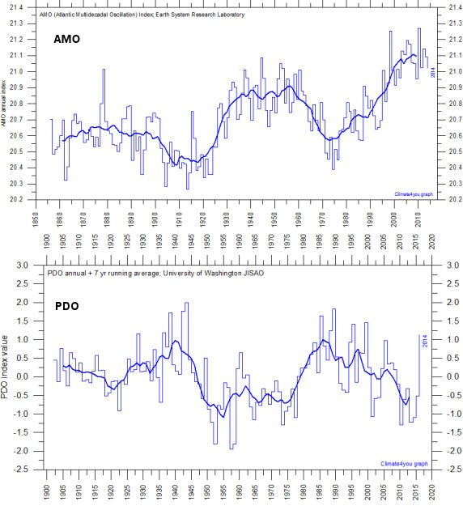
Ci contre, voici un graphique montrant les variations de l'indice de l'AMO (l'Oscillation Multidécennale atlantique) tirées des bases de données de l'ESRL (NOAA).
La période d'oscillation de cet indice est d'environ 65 ans. Au vu de ce graphique nous sommes actuellement en phase positive et proches du maximum de la valeur de cet indice. Il est probable que cet indice décroîtra dans les années à venir.
Voici, tirés des bases de données de l'Université de Washington (JISAO en collaboration avec la NOAA) les variations de l'indice PDO ( Oscillation Décennale Pacifique). Comme vous le voyez, la période de cette oscillation est d'environ 60-65 ans.
Nous nous trouvons actuellement en phase négative (c'est à dire plus froide) de cet indice. Cette situation devrait perdurer pendant plus d'une décennie.
On ne connaît pas, actuellement, les mécanismes sous-jacents de ces oscillations multidécennales, pas plus que l'on comprend le fonctionnement interne de la NAO (l'Oscillation Atlantique Nord) dont il sera question ci-dessous. Ce que l'on sait, par contre, c'est que ces oscillations océaniques ne sont pas indépendantes. Elles sont liées entre elles par ce que l'on appelle des "téléconnexions" et le jeu relativement complexe de ces interactions a été étudié, notamment par Tsonis et al (repris plus récemment par Judith Curry et Marcia Wyatt) sous l'image d'ondes de stade, (la "ola") que j'avais évoquées dans un billet précédent. |
2) Michael Mann et ses collègues expliquent ce qu'ils appellent "la fausse pause"
à l'aide des oscillations océaniques multidécennales.
dans un article récent publié dans la revue Science
Dont voici le résumé original suivi d'une traduction en français.
| Résumé : Le ralentissement récent du réchauffement climatique a remis en question la fiabilité des projections des futurs changements de température par les modèles climatiques et ceci a conduit à un débat véhément sur la question de savoir si ce ralentissement résulte d'une variabilité interne d'origine naturelle ou bien à des forçages externes au système climatique de la Terre. Dans le but de répondre à ces questions, nous avons utilisé une approche semi-empirique qui combine les observations climatiques et des simulations numériques destinées à obtenir une estimation de la variabilité multidécennale interne atlantique et pacifique (notées respectivement par "AMO" et "PMO"). En utilisant cette méthode, on trouve que l'AMO et la PMO expliquent une grande fraction de la variabilité interne des températures moyennes de l'hémisphère Nord. On observe que la compétition entre un pic positif modeste de l'AMO avec une tendance substantiellement négative de la PMO, résulte en un ralentissement ou à "une fausse pause" du réchauffement de la dernière décennie. |
Le résumé de l'article de Mann et de ses collègues est suffisamment explicite pour qu'il ne soit pas nécessaire de rentrer dans les détails de l'article qui ne comporte que quelques graphiques explicatifs.
On pourra observer, qu'en effet, et comme vous pouvez le voir sur les graphiques de Ole Humlum rapportés ci-dessus, nous sommes effectivement, depuis 1998, dans une phase descendante (qualifiée de "tendance substantiellement négative" par Mann et al.) de la température de l'océan pacifique et dans une période ascendante (que Mann et al. qualifient de "pic positif modeste") de l'indice AMO de l'océan atlantique, durant la même période.
Cependant et si on admet à présent que ces variations naturelles ont été capables d'annihiler le réchauffement anthropique depuis plus d'une décennie et demie, en provoquant "la pause", la question de savoir si les mêmes causes (c'est à dire les oscillations océaniques naturelles) n'étaient pas également responsables de la hausse des températures observée durant la période 1975-1997, devient inconfortable. De fait, comme nous le verrons plus loin et comme l'ont analysé d'autres auteurs, la conjonction des oscillations océaniques peut fort bien également expliquer le réchauffement précédent qui a été très généralement attribué à l'influence anthropique.
Assez curieusement, Michael Mann et ses coauteurs n'abordent pas cette question fondamentale qui vient pourtant immédiatement à l'esprit...
C'est ce que fait remarquer le climatologue Roy Spencer dans un billet récent au sujet de cet article de Mann et al. :
"L'objet de ce billet est de rappeler au lecteur une chose que j'avais déjà signalée auparavant : Dans la mesure où une variation de la circulation océanique a annihilé le réchauffement anthropique durant les 15+ dernières années, une variation opposée a probablement augmenté le réchauffement durant la période allant des années 1970 aux années 1990.
Vous ne pouvez pas avoir l'un sans l'autre. Les fluctuations naturelles de la circulation océanique verticale sont cycliques. Vous ne pouvez pas attribuer le hiatus du réchauffement à des forçages naturels sans, également, prendre en compte le rôle des forçages naturels qui ont été responsables de la période de réchauffement précédent.
Au mieux, cela révèle un biais dans le raisonnement et, au pire, c'est incohérent du point de vue de la logique." |
L'article que je présente ci-dessous ne souffre pas de cette critique puisque les auteurs reconstruisent, à partir de la variabilité naturelle, l'évolution de la température (hindcast) durant la période précédant la "pause". La reconstruction est remarquable. Comme on s'y attend, les auteurs en déduisent que la température devrait baisser légèrement au moins jusqu'en 2027.
3) Reconstruction et prédiction de la température de l'Hémisphère Nord à partir des oscillations multidécennales des indicateurs océaniques :
Le deuxième article publié par Jianping Li et al. (Une collaboration sino-américaine, en lecture libre) fait intervenir l'Oscillation Nord Atlantique (la NAO) et l'AMO dans l'évolution de la température de l'hémisphère Nord. Cet article, publié dans la revue renommée et réputée proche des thèses du GIEC, Geophysical Research Letters, est intitulé :
"Implication de la NAO pour une prédiction de la variabilité multidécennale de la température moyenne de l'hémisphère Nord.".
Abstract : The twentieth century Northern Hemisphere mean surface temperature (NHT) is characterized by a multidecadal warming-cooling-warming pattern followed by a flat trend since about 2000 (recent warming hiatus). Here we demonstrate that the North Atlantic Oscillation (NAO) is implicated as a useful predictor of NHT multidecadal variability. Observational analysis shows that the NAO leads both the detrended NHT and oceanic Atlantic Multidecadal Oscillation (AMO) by 15–20 years. Theoretical analysis illuminates that the NAO precedes NHT multidecadal variability through its delayed effect on the AMO due to the large thermal inertia associated with slow oceanic processes. An NAO-based linear model is therefore established to predict the NHT, which gives an excellent hindcast for NHT in 1971–2011 with the recent flat trend well predicted. NHT in 2012–2027 is predicted to fall slightly over the next decades, due to the recent NAO decadal weakening that temporarily offsets the anthropogenically induced warming. |
Soit, en français,
Résumé : La température moyenne de l'hémisphère Nord durant le XXe siècle (NHT) est caractérisée par une tendance multidécennale de réchauffement-refroidissement-réchauffement suivie par une tendance plate depuis environ l'année 2000 (le récent hiatus du réchauffement). Dans cet article nous démontrons que l'Oscillation Nord Atlantique (NAO) est impliquée en tant qu'instrument utile pour la prédiction de la variabilité multidécennale de la NHT. L'analyse résultant des observations montre que la NAO précède aussi bien la tendance de la NHT (sans sa tendance à long terme) que celle de l'Oscillation Atlantique Multidécennale (AMO) d'environ 15 à 20 ans. Une analyse théorique met en lumière le fait que la NAO précède la variabilité multidécennale de la NHT via son action retardée sur l'AMO, ceci étant dû à la grande inertie thermique associée aux processus océaniques lents.
Un modèle linéaire basé sur la NAO est ainsi élaboré afin de prédire la NHT. Celui-ci donne lieu à une excellente rétro-prédiction pour la NHT durant la période 1971-2011 ainsi qu'à une bonne prédiction de de la tendance plate. On prédit que La NHT durant la période 2012-2027 baissera légèrement durant les prochaines décennies, ceci résultant de l'affaiblissement décennal de la NAO qui compense temporairement le réchauffement anthropique. |
La NAO, L'oscillation Nord Atlantique (voir description par la NOAA) est caractérisée par un indice dont les variations de 1990 à 2011 sont représentées en bleu sur le graphique (b) ci-dessous. La NAO consiste en un dipôle Nord-Sud des anomalies avec un pôle situé au dessus de l'Islande et l'autre, de signe opposé, couvrant les latitudes centrales de l'Atlantique Nord entre 35 et 40 degrés. La phase positive de la NAO rend compte de pressions inférieures la normale au dessus des hautes latitudes de l'Atlantique Nord et des pressions supérieures à la normale au dessus du centre de l'Atlantique Nord, entre l'Est des USA et l'Europe de l'Ouest. La phase négative reflète l'opposé. Il apparaît que la NAO et la température de l'hémisphère Nord montrent une variabilité multidécennale prononcée avec un retard (la NHT étant en retard sur la NAO) d'environ 10 à 20 ans. Un calcul plus précis des corrélations montre que le retard est proche de 16 ans. Les auteurs écrivent que :
| "Ces résultats suggèrent que la moyenne annuelle de la NAO précède la DNHT [NdT: la NHT à laquelle on a retiré la tendance à long terme. Le D est pour "detrended" en anglais] et qu'elle peut ainsi être considérée comme un précurseur de la variabilité multidécennale de la DNHT." |
Voici un graphique tiré de l'article qui montre les covariations de l'AMO et de la DNHT ainsi que leur décalage (leur retard) par rapport aux variations de la NAO.
Légende de la Fig. 1 (b)
Indices de la NHT, NAO, et AMO de 1900 à 2011.
La moyenne glissante sur 11 ans de la DNHT (en rouge), de la NAO (en bleu) et de l'AMO (en vert).
Les zones en grisé rose indiquent les incertitudes à deux sigma dans les figures 1a et 1b pour les indices NHT des données HadCRUT4, estimées en utilisant les 100 réalisations
[Kennedy et al., 2011b]. Les lignes verticales vertes de la figure 1b montrent les domaines d'incertitudes ) deux sigma des séries de données de l'AMO pour les données HadSST3. |
Le graphique ci-contre de la Figure 4(a) illustre la reconstruction de la variation de la température moyenne de l'hémisphère Nord à partir de la prise en compte des oscillations AMO et NAO. Il représente ce que l'on appelle des "hindcasts" (des rétro-prédictions), c'est à dire des reconstructions des variations passées.
Comme on peut le constater, les différents "hindcasts" (1976) et (1996) et les résultats des modèles reproduisent assez fidèlement les variations effectivement observées (courbe en rouge).
Il s'agit d'un test crucial destiné à montrer qu'une modélisation est capable de reconstituer correctement les variations observées dans le passé.
Un test "hindcast" positif, procure, bien entendu, une confiance raisonnable dans le "forecasts", c'est à dire dans les prévisions pour le futur.
La figure 4(b) traite des projections pour le futur (les forecasts) obtenues à partir des modèles adaptés et vérifiés par les "hindcasts" précédents (Fig 4(a)).
Comme on peut l'observer, l'utilisation de cette modélisation conduit à la prédiction d'une stagnation ou d'une légère baisse de la température de l'hémisphère Nord durant les années prochaines, jusqu'en 2027 (disent les auteurs).
Ce résultat n'est pas étonnant car, si on suit le raisonnement des auteurs, on constate (voir la Figure 4a, ci-dessus) que le précurseur (la NAO en bleu) de la NHT a amorcé une baisse marquée depuis les années 90.
La conclusion de Li et al. est explicite :
"Cet article démontre que la NAO est un prédicteur utile de la température de l'hémisphère Nord permettant une prédiction avancée de près de deux décennies Le signal NAO précède la température de l'hémisphère Nord et l'AMO d'environ 16 ans et la variabilité multidécennale de la température de l'hémisphère Nord peut-être très bien expliquée et modélisée à partir du signal de NAO.
On a élaboré un modèle linéaire basé sur la NAO qui prédit la température de l'hémisphère Nord ainsi que les rétro-prédictions de la NHT durant la période 1971-2011. Celui-ci apparaît en bon accord avec les observations. Du fait de l'affaiblissement récent de la NAO qui annihile temporairement les effets du réchauffement anthropique, nous prédisons une faible baisse de la température de l'hémisphère Nord durant la période 2012-2027."[...]
[14] Bien que l'origine des variations multidécennales de la NAO demeurent encore obscures [Cohen and Barlow, 2005], les résultats que nous présentons ici apportent des éléments de preuve convaincants que la variabilité multidécennale de la NAO contribue de manière significative à la variabilité multidécennale de la température de l'hémisphère Nord. Ils mettent aussi en lumière le fait que la compréhension et une meilleure modélisation de la variabilité multidécennale de la NAO est essentielle pour l'interprétation et les futures projections des changements climatiques de l'hémisphère Nord à une échelle multidécennale." |
Que voyons-nous si nous comparons les prédictions de Li et al avec les modèles les plus récents utilisés dans les rapports du GIEC ?
.
Le fond du graphique (ci-dessous) est tiré d'un billet récent de Roy Spencer qui comparait la variation de température globale observée (par le HadCRUT4, en vert) avec la moyenne des 90 modèles CMIP5 utilisés par les modélisateurs (en rouge) et mettait ainsi en évidence les profondes divergences qui existent entre les modèles et les observations.
-
J'ai prolongé les observations de température des bases de données HadCRUT4 utilisées par Spencer avec les prédictions du modèle de l'article de Li et al (qui ne concerne que l'hémisphère Nord lequel s'est nettement plus réchauffé que l'hémisphère Sud. Les données sont remises à l'échelle, bien entendu) mentionnées ci-dessus.
Si les prévisions de Li et al se vérifient et comme on peut le voir sur ce graphique, la divergence entre les modèles CMIP5-et les observations qui est déjà très apparente de nos jours, ira en s'aggravant, ce qui, inévitablement, provoquera une remise en question fondamentale des modèles qui devront, au moins, prendre en compte les oscillations multidécennales et ceci dans les deux sens. C'est à dire celles qui provoquent un réchauffement comme celles qui provoquent un refroidissement. Sans aucun doute, ceci conduira à une sérieuse atténuation de la sensibilité du climat à l'ajout de CO2 et donc à des prévisions beaucoup plus optimistes.
3) Les précurseurs :
Comme je vous l'ai dit, ces considérations sur les oscillations multidécennales avancées à présent dans des revues de premier plan comme Sciences et Geophys. Res. Lett. sous la plume de participants au GIEC, ne sont pas nouvelles. Dans le passé, plusieurs publications qui parvenaient sensiblement aux mêmes conclusions avaient pointé le caractère oscillatoire de la température du globe en le rattachant, à l'occasion, aux oscillations océaniques. Parmi ceux -ci, on peut citer les travaux de Mazarella, Scafetta, Tsonis et al, Curry et al et bien d'autres dont j'ai évoqué les publications au cours des années passées.
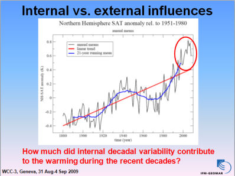
Parmi les rares chercheurs proches du GIEC, qui se sont, dans le passé, ouvertement interrogés sur l'importance de la variabilité naturelle du climat, Mojib Latif (de l'Institut Leibniz des Sciences Marines de l'Université de Kiehl en Allemagne) avait, dès 2009, évoqué ce qu'il appelle les influences internes (naturelles) par rapport aux influences externes, sous entendu anthropiques.
Révélatrice de l'ambiance qui régnait, à cette époque, au sein de la communauté des climatologues proches du GIEC au sujet de la variabilité naturelle considérée alors comme taboue, est une observation prononcée lors de sa présentation au cours de la 3e Conférence Mondiale sur le Climat (le WCC-3, placé sous l'égide de l'ONU et l'Organisation Météorologique Mondiale (L'OMM)). Mojib Latif avait dit :
"Je ne suis pas un des sceptiques du climat, cependant, nous devons nous poser les questions dérangeantes nous-mêmes, sinon d'autres le feront." |
Tout en présentant la diapositive (originale, avec les annotations en rouge de Latif) ci-contre, accompagnée de la question :
| "A combien se montait la contribution de la variabilité naturelle décennale interne au réchauffement observé durant les dernières décennies ?" |
C'est une excellente question, semble-t-il très dérangeante pour le GIEC, qui ne resurgira que quelques 6 ans plus tard, en 2015, sous la contrainte des évidences, et dont auraient dû s'inspirer Michael Mann et ses collègues en rédigeant l'article présenté ci-dessus.
De fait, le graphique présenté par Mojib Latif met en évidence une augmentation moyenne modérée (le trait rouge, environ +0,6°C/100 ans) de la température globale à laquelle est superposée une oscillation interne (donc non anthropique) approximativement sinusoïdale.
Ce graphique présente une grande ressemblance avec le dessin suivant de Syun Ichi Akasofu (le fondateur et l'ancien directeur du Centre International de Recherche sur l'Arctique (Alaska Fairbanks)) que j'ai déjà évoqué dans ce site. En 2010, Akasofu a rédigé un article complet à l'appui de son analyse (Natural Science, 2, 1211-1224. doi: 10.4236/ns.2010.211149).
Voici le dessin d'Akasofu (2009-2010) :
A l'intérieur du rectangle jaune qui couvre les années 1880-2000, on retrouve un graphique proche de celui de Latif.
Le point rouge accompagné de la flèche rouge indique la situation à l'époque (2010) de la rédaction de l'article.
Sur la partie droite de ce graphique, Akasofu a rappelé les deux causes du réchauffement observé, selon lui . D'une part des oscillation multidécennales et d'autre part, le réchauffement linéaire (environ +0.5°C/100ans) résultant de la sortie du petit âge glaciaire précédent qui s'est terminé dans les années 1860.
Le croquis d'Akasofu illustre aussi le fait que les modélisations du GIEC prolongent l'arche montante de l'oscillation multidécennale (alors que ces modélisations ne prennent pas en compte les oscillations océaniques (!)) tandis que, toujours selon Akasofu, la température va poursuivre sa trajectoire résultant de la sortie du petit âge glaciaire accompagnée des oscillations multidécennales de périodes 65 ans environ, avec un refroidissement dans les décennies à venir.
La conclusion du résumé de l'article d'Akasofu résume son point de vue :
| "Ces variations (NdT : les oscillations multidécennales et la sortie du petit âge glaciaire) sont d'origine naturelle et, afin de de déterminer la contribution de l'effet de serre anthropique, il est indispensable de les identifier de manière correcte et précise et de les soustraire." |
Parmi les précurseurs un peu plus anciens, il faut aussi évoquer, entre autres, les travaux de deux chercheurs russes Klyashtorin et Lyubushin qui ont publié, en 2003, une étude purement statistique (c'est à dire sans aucune hypothèse sur les causes physiques), intitulée : " Au sujet de la cohérence entre les dynamiques de la consommation de carburant de la planète et l'anomalie de la température globale". J'avais évoqué leur article dans un billet de 2008 qui reprenait un certain nombre d'autres analyses purement statistiques des évolutions des anomalies de la température du globe.
A titre d'illustration, j'ai superposé le graphique principal de Klyashtorin et Lyubushin qui s'arrête en 2002 (les hachures indiquant les prévisions faites à l'époque) avec le graphique actualisé des variations de températures selon les données mensuelles publiées par le HadCRUT 4.3 (les plus récentes, jusqu'en Décembre 2014 inclus) (Graphique en rouge, translaté vers le bas pour une meilleure lecture).
Comme on peut l'observer, l'analyse statistique de Klyashtorin et Lyubushin semble toujours pertinente, quelques 12 ans plus tard.
Toujours en remontant dans le passé, on trouve les travaux des premiers précurseurs, Schlesinger et Ramankutty qui avaient fait paraître dans la revue Nature en 1994, un article intitulé "Une oscillation du système climatique du globe de période 65-70 ans".
Cet article contenait notamment le graphique reproduit ci-contre qui montre l'oscillation de l'anomalie de température ("detrended", c'est à dire à laquelle on a retiré la tendance sous-jacente de 0.5°C/100 ans) avec la période indiquée, en fonction de l'année. A noter que dans cet article précurseur, les auteurs faisaient déjà le lien avec l'oscillation Nord Atlantique.
Compte tenu du fait que les connaissances de l'époque se limitaient à l'année 1993, on peut considérer que c'était une bonne intuition. De fait, comme nous l'avons vu, les 22 années qui ont suivi ont confirmé sa validité.
Quelques années plus tard, en 2000, Schlesinger (cette fois-ci avec Andronova) a persisté et signé. Ces auteurs ont publié un article intitulé : "Causes des variations de la température du globe durant les XIXe et XXe siècles".
(GEOPHYSICAL RESEARCH LETTERS, VOL. 27, NO. 14, PAGES 2137-2140 2000)
La conclusion d'Andronova et Schlesinger y était explicite :
Quel est le facteur résiduel responsable du réchauffement de 1904 à 1944 et du refroidissement qui a suivi de 1944 à 1976 ? Une explication possible pour ceci a été donnée par Schlesinger and Ramankutty [1994] comme résultant de l'oscillation de température de l'Océan Nord Atlantique et des régions voisines avec une périodicité de 65-70 ans. Une autre explication possible est l'absence d'un forçage climatique [Hansen et al. 1997].
Il en résulte qu'il est prudent de ne pas s'attendre à un réchauffement continu, année après année, dans un futur proche et ce faisant, d'atténuer nos inquiétudes au sujet du réchauffement climatique s'il advenait qu'un refroidissement climatique global se manifestait de nouveau. |
Ces articles ont été superbement délaissés/ignorés par le GIEC, de même que l'avertissement qui figure dans la conclusion d'Andronova et Schlesinger. Certains auteurs, proches du GIEC, ont même été jusqu'à qualifier leurs auteurs de "cyclo-maniaques".
Il est d'autant plus amusant de constater que les même arguments avancés par Schlesinger, ainsi que par tous leurs successeurs, longtemps méprisés, voire ridiculisés, soient maintenant repris, plus de 20 ans plus tard, par des piliers du GIEC tel Michael Mann qui les utilise pour expliquer ce qui contredit les modèles et ce qu'il appelle "la fausse pause"...
Ainsi va la science !
Ceci ne pouvait échapper à Josh qui est un dessinateur qui ne perd jamais une occasion de se moquer des climatologues proches du GIEC. Suite à la parution de l'article de Mann et al (évoqué ci-dessus), il a dessiné le petit cartoon ci-contre que j'ai francisé pour vous.
Bien entendu, le "Nous vous l'avions bien dit", tout en bas, fait allusion aux prédécesseurs, cités plus haut, de cette "découverte".
De fait, une partie non négligeable de la communauté scientifique (Judith Curry entre autres ainsi que Hubert Lamb, le créateur du CRU de l'Université d'East Anglia, avant son décès) ont déploré l'abandon a priori de l'étude approfondie des variations naturelles du climat qu'il aurait fallu envisager avant de s'intéresser aux éventuelles perturbations anthropiques.
Du moins, c'est ainsi que la science aurait progressé si l'on n'avait pas créé le GIEC et si la science n'avait pas été politisée à outrance depuis lors. Il apparaît que la climatologie se retrouve désormais plutôt embarrassée au point de faire machine arrière, allant jusqu'à "retrouver" ce qui avait été observé quelques 20 années auparavant.
Visiblement, the science is "not settled" (la science du changement climatique n'est PAS comprise) et ceux qui vous affirment qu'elle l'est, ne suivent pas la littérature scientifique sur ces sujets. Dans d'autres circonstances et dans d'autres domaines de la science, ce ne serait pas si grave...
Stay tuned !
ANNONCE : ----------------------------------------------------------
 L'AFCO est l'association des "climat-optimistes" fondée par Christian Gérondeau et destinée à fédérer tous ceux qui s'inquiètent des conséquences du pessimisme, voire du catastrophisme climatique généralisé initié par le GIEC, entretenu par les média, nombre d'ONG et les politiques. L'AFCO est l'association des "climat-optimistes" fondée par Christian Gérondeau et destinée à fédérer tous ceux qui s'inquiètent des conséquences du pessimisme, voire du catastrophisme climatique généralisé initié par le GIEC, entretenu par les média, nombre d'ONG et les politiques.
Inscription en ligne.
|
|
1 Février 2015 : Hyperbole, exagérations, extrapolations hasardeuses, ça suffit ! Revenons à la science, soyons sceptiques !
nous dit un article retentissant publié par un groupe de chercheurs en biologie marine. Leur article, publié dans la revue BioScience, a fait l'objet d'un rapport dans la revue Nature.
Les lecteurs(trices) de PU savent bien que ce site n'a jamais hésité à pointer du doigt quelques-unes des innombrables erreurs ou exagérations dont les politiques, les médias (et, malheureusement, aussi, quelques scientifiques) nous abreuvent à longueur d'année au sujet des soi-disant "calamités" qui nous attendent dans les années à venir quand, selon eux, elles ne se sont pas déjà produites.
Comme vous vous en doutez, l'auteur de ce site est donc particulièrement heureux que des chercheurs activement impliqués dans ces affaires tirent, d'eux-mêmes, la sonnette d'alarme. D'autant plus qu'ils ne comptent pas en rester là.
Peut-être est-il encore temps de revenir à la démarche scientifique authentique, mesurée et prudente, comme ils le suggèrent ?
Ne nous y trompons pas. Bien que rédigé dans le langage mesuré des publications scientifiques, l'article dont je vais vous parler, paru dans une revue renommée et repris dans Nature, constitue une attaque particulièrement sévère contre le comportement des médias et aussi, de certains scientifiques.
De fait, et comme ils l'écrivent eux-mêmes, les 8 chercheurs, auteurs de l'article décrit ci-dessous, prennent de gros risques en dénonçant ainsi un certain nombre d'exagérations et d'extrapolations hasardeuses de la part de leurs collègues et des médias. Tous ceux qui s'y sont essayés jusqu'à présent, aussi expérimentés soient-ils (par exemple Lennart Bengtsson, Richard Tol, Daniel Botkin, Judith Curry, Garth Paltridge et bien d'autres comme Richard Lindzen) ont fait l'objet d'attaques venimeuses de la part de presque tous les médias et de plusieurs de leurs confrères comme j'ai souvent eu l'occasion de vous le rapporter.
Les articles qui suivent concernent la biologie des océans mais il est clair que les observations et les conclusions de ces chercheurs s'appliquent tout aussi bien aux autres domaines de la "science climatique". Introduisons le sujet en commençant par l'article de Nature qui résume l'article original que je présenterai plus bas.
1) L'article de Nature (édition du 14 Janvier 2015)
Voici son intitulé :
Dont voici une traduction :
NATURE| NEWS
On en fait trop avec les "calamités" océaniques, disent des chercheurs
Une équipe de chercheurs appelle à plus de scepticisme en matière de recherche sur les océans.
Daniel Cressey |
Cet article de Nature est disponible en lecture libre sur le site de cette revue. Sa référence est doi:10.1038/nature.2015.16714
Voici une traduction de larges extraits. Les caractères engraissés le sont par PU comme d'ailleurs pour toutes les citations inscrites dans les rectangles jaunes.
"On décrit souvent les océans de la planète comme étant au bord de la catastrophe. Mais bien que certains de ces défis soient bien réels, d'autres ont été très largement exagérés, affirment des chercheurs dans un article de revue. L'équipe de recherche écrit que les journaux et les médias ont succombé à un mode de "pensée unique" (NdT : en anglais "groupthink") qui peut porter atteinte à la crédibilité des sciences de l'océan.
Carlos Duarte, un biologiste des océans de l'Université de Western Australia à Perth et ses collègues écrivent que les dépêches médiatiques pessimistes au sujet de questions relatives aux océans telles que les espèces invasives et la disparition des coraux, ne reposent pas toujours sur des observations authentiques. Ce ne sont pas seulement les journalistes qu'il faut blâmer, disent-ils. La communauté des chercheurs sur les océans "n'est peut-être pas demeurée suffisamment sceptique" sur ces sujets.
"Il y a de nombreuses discussions en aparté des colloques scientifiques, à propos des excès des prophéties apocalyptiques qui figurent dans nos rapports sur la santé des océans, et cet article est peut-être le premier à révéler ces inquiétudes en dehors de la sphère privée des discussions entre pairs." dit Duarte. "Il s'agit d'un mouvement silencieux parce qu'il existe une forte pression exercée à l'encontre de ceux qui exprimeraient ouvertement ces inquiétudes, de telle sorte que mes coauteurs et moi-même nous attendons-nous à ce que notre article provoque des réactions significatives à notre encontre."
Dans leur article de revue publié le 31 Décembre dans BioScience, Duarte et ses collègues ont analysé les catastrophes annoncées qui concernent la surpêche, l'éclosion des méduses, les espèces invasives et l'impact de l'acidification des océans sur des organismes tels que les coraux. Dans certains cas, disent-ils, il y a de forts éléments de preuve indiquant qu'il existe de fortes perturbations à l'échelle du globe - la surpêche en étant le meilleur exemple. Mais pour d'autres sujets qui ont retenu l'attention des scientifiques et des média, les éléments de preuve sont équivoques et de faible valeur. Dans ces catégories, Duarte inclut l'éclosion des méduses à l'échelle globale et les problèmes résultant des espèces invasives.
La course au gros titres
L'équipe de Duarte a passé en revue un certain nombre de rapports et d'articles scientifiques. Il les met en opposition avec d'autres articles qui sembleraient saper le discours catastrophique.
Parmi les "titrages excessifs des médias" est cité celui de CNN "Surpêche et mauvaise protection des océans les conduisent au bord d'un effondrement catastrophique". Duarte a dit aussi à Nature que son propre article : "La dévastation des côtes provoque une explosion du nombre des méduses" tombait aussi dans le piège des "prêcheurs d'apocalypse".
Un autre exemple est le déclin des espèces qui fabriquent des coquilles calciques, lequel est attribué à l'acidification des océans due au dioxyde de carbone dissous dans les océans. En 2013, le journal The Seattle Times a déclaré que ce problème "contribuait à pousser les océans vers une déstructuration qui menace de brouiller la vie marine à une échelle presque trop grande pour qu'on puisse l'imaginer."
Mais les auteurs de l'article de BioScience disent que cette question souffre d'importantes incertitudes. Beaucoup d'expériences reposent sur les "scénarios du pire", disent-ils et les affirmations selon lesquelles les organismes calciques sont déjà en déclin peuvent relever non pas des émissions de carbone mais d'autres processus océaniques.
Bien qu'il soit parfois affirmé que les éclosions de méduses augmentent dans le monde entier, l'article de Duarte dit qu'il n'y a eu aucune tentative pour quantifier l'augmentation globale avant 2012 de telle façon que les affirmations sont extrapolées à partir d'un nombre limité de situations.
L'hyperbole dans ces matières est dangereuse, nous dit l'équipe de chercheurs, parce que le public peut finir par s'endurcir et abandonner l'idée de sauver les océans s'il pense qu'ils sont parvenus à un stade au delà de la rédemption.
Duarte est actuellement occupé a rassembler un groupe de chercheurs qui pensent comme lui afin d'auditer les affirmations sur les désastres océaniques en analysant les éléments de preuve de manière critique. Ceci éliminerait les affirmations basées sur des éléments de preuve contestables et donnerait quelque espoir à la société que les océans peuvent être sauvés.
Tout en pointant du doigt aussi bien les journalistes que les scientifiques, l'équipe de Duarte place le blâme pour l'exagération sur quelques journaux scientifiques, y compris sur la revue Nature. "L'appétit des médias pour des titres ronflants peut influencer le contenu des meilleures revues scientifiques". (Note de Nature : Les news et les commentaires de Nature sont totalement indépendants de son équipe éditoriale)". [...] |
Suivent quelques commentaires plus ou moins amènes (comme les auteurs s'y attendaient) de deux chercheurs explicitement visés par l'article de Duarte et al.
Que nous dit l'article original de Duarte (Winthrop Professeur à l'Université de Western Australia ) et de ses sept collègues ?
2) L'article original de Duarte et al :
”
Accès libre : BioScience Advance Access publié le 31 Décembre 2014. (Article de revue).
L'article est sobrement intitulé :
"Ré examen des calamités océaniques"
La liste des auteurs :
CARLOS M. DUARTE, ROBINSON W. FULWEILER, CATHERINE E. LOVELOCK, PAULINA MARTINETTO,
MEGAN I. SAUNDERS, JOHN M. PANDOLFI, STEFAN GELCICH, AND SCOTT W. NIXON
Résumé : La prolifération d'un certain nombre de perturbations qui affectent les océans conduit à une inquiétude croissante selon laquelle l'état des océans est compromis ce qui induit un pessimisme sociétal. Les calamités océaniques sont des perturbations qui induisent des changements des écosystèmes océaniques ayant de profonds impacts et qui sont très répandus ou qui se produisent à l'échelle du globe.
Cependant, un examen des calamités océaniques dans le but de s'assurer qu'elles peuvent, en toute confiance, relever de causes humaines et opérer sur de grandes étendues ou à l'échelle du globe, montre que certains de ces problèmes ne répondent pas à ces critères ou que les éléments de preuve sont équivoques. Un certain nombre de distorsions internes ou externes à la communauté scientifique, contribue à accréditer la perception de calamités océaniques et ceci en l'absence d'éléments de preuve solides.
L'organisation d'un audit sur les calamités océaniques peut conduire à un diagnostic plus précis sur l'état des océans ce qui peut aider à identifier les problèmes les plus pressants dont on doit s'occuper pour conserver des océans en bonne santé. |
L'article commence par une citation de Scott Nixon (ci-contre) qui est un appel au scepticisme raisonné et dont devraient s'inspirer tous les chercheurs. Scott W. Nixon , membre de l'Académie des Sciences, était un éminent et très respecté chercheur en biologie marine, décédé en 2012. A noter que Scott Nixon, bien que décédé, est également cité comme l'un des auteurs de l'article ne serait-ce que parce qu'il est l'auteur de la citation reproduite en tête de l'article. Il s'agit d'une pratique assez courante destinée à honorer, à titre posthume, une personnalité dont on est bien certain qu'il était d'accord avec les termes de l'article, ce qui laisse supposer que les considérations avancées par ses auteurs ne datent pas d'aujourd'hui :
"La science est une entreprise à caractère sociétal. Nous communiquons au moyen de la littérature scientifique et nous devons ne rien faire qui puisse porter atteinte à l'intégrité de cette communication. Aussi bien en émettant qu'en recevant de l'information, nous devons demeurer sceptiques. (Scott W. Nixon)." |
Dans le chapitre introductif, les auteurs écrivent que :
| [...]"On attend des scientifiques qu'ils restent sceptiques, se posent des questions, doutent ou réservent leurs jugements jusqu'à ce que des éléments de preuves suffisants deviennent disponibles pour qu'ils puissent tirer des conclusions relevant d'un scepticisme rationnel. Ce scepticisme repose sur des dispositions sociétales telles que le système de revue par les pairs destiné à assurer une analyse critique des affirmations relevant du domaine scientifique (Merton 1979). Cependant, on perçoit que le scepticisme scientifique a été abandonné ou s'est relâché dans de nombreux domaines. Ceci a permis à des opinions, à des croyances et à des adhésions tenaces à certaines théories, de jouer un rôle essentiel en faveur de croyances reposant sur des interprétations qui ne sont pas étayées par des preuves (Loehle 1987)".[...] |
Duarte et ses collègues citent, dans la Table I de leur article, quelques exemples marquants de gros titres de la grande presse anglophone, insubstanciés et largement exagérés. Les auteurs font référence à cette Table I de la manière suivante :
| "En réalité, les dépêches récentes des médias sur la question des océans, ne laissent que peu de place à l'optimisme. Mais une analyse de quelques unes des calamités rapportées dans les médias catastrophistes (par ex. Table I) montre parfois de graves déconnexions avec les observations factuelles. Par exemple, il n'existe aucune preuve que l'acidification des océans a fait disparaître les prédateurs des méduses non plus que les méduses ont pris possession des océans. Les prédictions que l'algue tueuse, la Caulerpa Taxifolia, allait dévaster l'écosystème méditerranéen ne se sont pas réalisées malgré les affirmations contraires des médias (Table I)." |
Voici la Table I, avec sa légende.
"Table I : Exemples de titrages médiatique excessifs annonçant la disparition d'écosystèmes marins résultant de calamités océaniques :"
|
A la lecture des deuxième ("le tueur silencieux") et troisième titres ("le monstre vert") de cette table I, les lecteurs séniors se souviendront sans doute de la panique suscitée, en 1984, par la couverture médiatique tonitruante qui avait accompagné "l'invasion des algues tueuses", la Caulerpa Taxifolia, une espèce invasive tropicale qui commençait effectivement à se répandre en Méditerranée à la suite (pensait-t-on) d'une relâchage malencontreux provenant d'un aquarium de Monaco.
De fait, l'invasion n'a pas eu lieu comme l'a démontré, entre autres, un article paru en 2003 (Mar. Ecol. Prog. Ser., 263: 75- 82) et, en 2011, un article du Monde rappelait que cette algue indésirable (notamment, disait-on, pour les posidonies) avait pratiquement disparu des zones auparavant déclarées colonisées, sans d'ailleurs que l'on sache très bien pourquoi. La lutte (inopérante) contre cette "algue tueuse" avait mobilisé, à l'époque, énormément d'efforts et des moyens considérables. Tout cela en pure perte.
Les autres titres, y compris sur l'"acidification" des océans tueuse de planctons producteurs d'oxygène, l'éclosion globale des méduses, ou la disparition des poissons sont également exagérément alarmistes et ne reposent sur aucune étude avérée, selon les 8 biologistes cosignataires de l'article.
Duarte et ses collègues pointent également du doigt une des "légéretés" assez fréquemment rencontrée dans le domaine des publications en science climatique où un grand nombre de travaux s'efforcent d'analyser l'évolution d'un phénomène au cours du temps.
| "Pour quelques unes de ces calamités océaniques, il est possible que nous n'en soyons encore qu'au tout premier stade de la découverte. Cependant et même pour ces cas-là, les compte-rendus devraient se plier aux exigences des pratiques solides de la science et devraient éviter de tomber dans les pièges classiques comme de ne pas prendre en compte de la multiplication des moyens d'observations quand on rapporte sur la progression d'un phénomène au cours du temps. (par exemple, Fig. 1)" |
Voici la Figure 1 de l'article (accompagnée de sa légende) dont les inserts (a) et (b) sont presqu'à la limite de la caricature :
Légende de la Figure 1 :
(a) Cartes des zones observées des éclosions d'algues mortifères (HABs) au cours du temps utilisées pour avancer l'idée que les HABS se répandent sur tout le globe. Source : reproduit avec la permission de Anderson et ses collègues (2012).
(b)
La tendance temporelle du nombre des sites côtiers où on a observé des hypoxies (NdT : déficit en oxygène) sévères afin de promouvoir l'idée d'une augmentation globale de l'hypoxie. Source : reproduit avec les permission de Vaquer-Sunyer et Duarte (2008).
(c) L'évolution au cours du temps de l'indice standardisé des méduses qui résume les variations de l'abondance sur des sites océaniques où les observations à long terme sont disponibles. Reproduit avec la permission de Condon et ses collègues (2013). |
Comme on peut l'observer, les graphiques (a) et (b) montrent une prolifération des sites infectés par les éclosions d'algues mortifères, les HABS (a) (les taches orange) ou souffrant d'un manque d'oxygénation (b). De fait, ces graphiques, présentés tels quels, n'ont aucune valeur scientifique car il est évident que depuis les années 1970, le nombre des sites de mesure a considérablement augmenté. Une analyse solide aurait tenu compte de la prolifération des sites de mesure au cours du temps. En termes techniques cela s'appelle "normaliser" ou "renormaliser" les observations. J'en dirai quelques mots ci-dessous à partir d'un exemple précis.
Le graphique "normalisé" (ou "standardisé") suivant (c) ne montre aucune augmentation significative du nombre des éclosions de méduses, du moins pour les quelques sites localisés où les mesures ont été effectuées et de fait, comme le disent Duarte et al, on est encore très loin de savoir ce qu'il en est pour le globe tout entier.
Duarte et ses collègues dissertent en profondeur sur les biais ou les distorsions qui affectent les publications scientifiques. Il s'agit là d'accusations relativement graves que ceux qui pratiquent ou ont pratiqué la recherche scientifique auront cependant du mal à démentir. Il les résument de la manière suivante :
"Nous sommes de l'avis qu'il existe des mécanismes sous-jacents aussi bien à l'intérieur de la dynamique sociétale du processus de recherche qu'à l'extérieur de la communauté scientifique qui tendent à perpétuer la perception de l'existence de calamités océaniques même quand les preuves sont équivoques ou fragiles.
L'enchaînement des mécanismes internes au processus de la recherche scientifique qui peuvent opérer pour perpétuer la perception de l'existence de calamités impliquent des composantes de la recherche telles que les biais observationnels et les falsifications (NdT : des données) ; les composantes propres au processus de publication telles que les biais dans la rédaction des publications ainsi que les composantes propres à l'usage de la littérature telles que les biais dans le choix des citations et leur détournement, de même que d'autres biais tels que le biais de confirmation (NdT : C'est à dire que l'on cherche absolument à démontrer ce dont on est convaincu à l'avance) et l'obstination théorique (NdT : C'est à dire l'obstination à adhérer à une théorie préférée même en présence d'évidences du contraire)." |
De mon point de vue, le fameux syndrome du "publish or perish" ("publier ou disparaître") (et à présent du "soyez médiatique") ainsi que la comptabilité irréfléchie par les autorités du nombre des articles publiés et des citations afin d'attribuer les financements, participent à la prolifération d'articles de valeur discutable qui affectent pratiquement tous les chercheurs de la planète.
Duarte et al. ont fait allusion aux dangers typiques de la sur-exploitation de résultats qui "oublient" de normaliser les mesures. Voici, à l'inverse, les résultats d'une analyse sérieuse qui concerne ce que les médias appelleraient les "désastres causés par le réchauffement climatique".
Comme vous allez le voir, la "normalisation" permet de remettre les choses à l'endroit...tout en conduisant à des résultats exacts mais certainement "peu médiatiques" par les temps qui courent.
3) L'indispensable normalisation des observations :
Comme le rappellent Duarte et al, c'est une faute inadmissible (mais fréquente) que de ne pas prendre en compte l'évolution de la totalité des facteurs (prolifération des moyens d'observations, amélioration et substitutions des méthodes de mesure, changement des situations) pour étudier l'évolution d'un phénomène au cours du temps.
A titre d'exemple de comportement scientifiquement correct, voici les résultats d'une étude publiée récemment (Juillet 2014) dans une revue scientifique renommée mais qui n'a pas (à ma connaissance) bénéficié de la moindre couverture médiatique, comme on pouvait s'y attendre compte tenu de la doxa actuelle.
Au sujet de la relation entre l'impact des désastres météorologiques, la vulnérabilité et le changement climatique.
Hans Visser & Arthur C. Petersen & Willem Ligtvoet
Climatic Change (2014) 125:461–477
DOI 10.1007/s10584-014-1179-z
Article en accès libre. |
Le résumé de cet article explicite la démarche suivie par les auteurs :
| "Les désastres tels que les inondations, les tempêtes, les vagues de chaleur et les sécheresses peuvent avoir d'énormes implications pour la santé, l'environnement et le développement économique. Dans cet article nous cherchons à savoir comment le changement climatique a pu influer sur l'impact des désastres météorologiques. Ce problème n'est pas évident parce que les conséquences des désastres ne dépendent pas seulement des événements climatiques ou météorologiques - Il y a d'autres facteurs tels que l'augmentation de la population et de sa richesse ainsi que des variations de sa vulnérabilité. Nous avons normalisé l'impact des désastres, nous avons analysé les évolutions des données observationnelles et nous les avons comparées avec les tendances des événements extrêmes, des événements climatiques et de la vulnérabilité.[...] |
Les résultats de cette étude qui tient compte de l'ensemble des paramètres du problème, sont édifiants. On peut les résumer sous la forme de deux graphiques extraits de l'article.
Ci-contre, les figures 3 et 4 de l'article cité.
En haut, l'évolution des pertes économiques normalisées au cours des 30 dernières années pour les pays de l'OCDE, les pays du BRIICS, le reste du reste du monde ainsi que le résultat pour le globe.
En bas, le pertes humaines normalisées durant la même période.
D'où, dans la conclusion de l'article :
"[...]Les tendances des données normalisées montrent une stabilité des pertes dans la plupart des cas (Figs. 2, 3 and 4). C'est un résultat cohérent avec les résultats rapportés dans Bouwer (2011a) et dans ses références citées, dans Neumayer et Barthel (2011) ainsi que dans le raport GIEC-SREX (2012) (NdT : Un rapport du GIEC spécialement dédié aux événements météorologiques extrêmes).
L'absence de tendance de l'impact normalisé des désastres apparaît très cohérent avec l'absence de tendance observée dans les événements climatiques extrêmes." |
Comme affirmé par les auteurs de cet article, leurs résultats recoupent les observations précédentes faites par d'autres équipes ce qui renforce la confiance que l'on peut accorder à leurs conclusions. En bref, on n'observe aucune tendance à l'aggravation des impacts aussi bien économiques qu'en terme de pertes humaines, dus aux événements climatiques extrêmes, qui ne soient expliqués par des facteurs internes (évolution de la population, de leur richesse et de leur vulnérabilité).
C'est, à peu près, exactement le contraire de ce que l'on peut lire ou voir actuellement dans les médias et entendre dans les discours de nos responsables politiques (et autres), quand ce n'est pas dans les déclarations des responsables des compagnies d'assurance.
Au mieux,
ils ne doivent pas lire la littérature scientifique...
_____________________________________________________________________________
Les biais catastrophistes (Duarte et al disent "gloom and doom") médiatico-scientifiques dénoncés par Duarte et ses collègues sont à mettre en relation avec ce qu'avait écrit, en 1989, Stephen Schneider (décédé en 2010) (APS News, page 5) qui fut l'un des grands promoteurs de l'alarmisme climatique (caractères engraissés par PU) :
| "Ainsi devons nous présenter des scénarios effrayants, proférer des affirmations simplistes et catastrophiques sans prêter attention aux doutes que nous pourrions avoir. Cette "contrainte éthique à deux versants" à laquelle nous sommes fréquemment confrontés, ne peut pas être résolue par une quelconque formule. Chacun d'entre nous doit décider quel est le bon équilibre à trouver entre l'efficacité et l'honnêteté. J'espère que ce sera les deux." |
Pour un chercheur comme moi, une telle affirmation reste très choquante. Comme je l'ai déjà écrit en 2006, le devoir du chercheur est de faire progresser les connaissances, quelles que soient les conclusions de ses travaux et de les dire telles qu'elles sont tout en précisant les domaines d'incertitude. Mettre en balance l'honnêteté de la recherche scientifique et l'"efficacité", c'est faire de la politique, pas de la science.
Visiblement, les huit chercheurs coauteurs de l'article cité en début de ce billet, ont choisi de faire pencher la balance dans le sens de l'honnêteté et de la rigueur scientifique, sans nul doute au détriment de l'impact médiatique immédiat et probablement aussi des financements à venir pour leurs projets et, sans doute aussi, du futur de leur carrière. C'est un remarquable (et encore rare) exemple de courage et d'abnégation.
En outre, je ne suis pas certain que leur comportement intègre se fasse au détriment de l'efficacité. Bien au contraire. En effet, la confiance généralement accordée aux scientifiques qui travaillent dans ces domaines, comme dans les autres, est primordiale. Lui porter atteinte, "proférer des affirmations simplistes et catastrophiques sans prêter attention aux doutes que nous pourrions avoir" sera sans nul doute et in fine, contreproductif.
"Nous communiquons au moyen de la littérature scientifique et nous devons ne rien faire qui puisse porter atteinte à l'intégrité de cette communication. Aussi bien en émettant qu'en recevant de l'information, nous devons demeurer sceptiques." disait Scott Nixon.
Sages paroles !
Stay tuned !
|
19 Décembre 2014 : 2014, l'année la plus chaude ?
Que les lecteurs(trices) me pardonnent en cette fin d'année et à l'approche des fêtes de Noël, pour ce billet qui peut paraître un peu rébarbatif parce qu'on parle chiffres mais, tout comme moi, vous avez tous lu et entendu, répété ad infinitum par la totalité des médias, en général sous le forme de gros titres, que l'année 2014 était, devrait ou pourrait être, ou encore serait, la plus chaude de tous les temps, du millénaire ou du siècle, ou, plus raisonnablement, depuis que les mesures ont commencé, etc.
D'après ce que j'ai pu voir et entendre, et assez bizarrement, aucun des reporters qui couvrent ces sujets ne semble s'être préoccupé de répondre à quelques questions qui viennent immédiatement à l'esprit des lecteurs un peu curieux et éduqués :
Si l'année 2014 est en passe d'être "la plus chaude", de combien de degrés s'agit-il ?
Le réchauffement proclamé pour l'année 2014 est-il significatif par rapport à la marge d'incertitude qui affecte ces mesures de température ?
Quid, exactement, de la situation de 2014 comparée aux précédentes années les plus chaudes 1998, 2005 et 2010 ?
Visiblement, ces questions n'intéressent pas les médias qui rapportent sur ces affaires climatiques.
Et les lecteurs/auditeurs qui aimeraient être réellement informés restent sur leur faim. On n'en saura pas plus.
Du moins par voie de presse, de radio ou de télé...
Heureusement, il nous reste Internet.
Pourtant, comme vous allez le voir, les réponses à toutes ces questions sont édifiantes. Et ceci à plus d'un titre et, notamment, sur la manière dont l'information sur les affaires climatiques est actuellement délivrée au grand public francophone par la totalité des médias.
A l'origine des très nombreux articles de presse, radio, télé etc. portant sur la température de l'année 2014, "l'année la plus chaude", se trouve un communiqué de presse de l'OMM (L'organisation Météorologique Mondiale, une émanation de l'ONU). Ce communiqué de presse a été diffusé urbi et orbi, peu avant la réunion COP20 organisée par l'ONU à Lima (dont on connaît à présent le résultat peu reluisant). En voici des extraits significatifs :
"Si Novembre et Décembre maintiennent la même tendance, alors 2014 sera probablement l'année la plus chaude enregistrée, devant 2010, 2005 et 1998. Ceci confirme la tendance sous-jacente à long terme au réchauffement. Il est important de noter que les différences entre les classements des années les plus chaudes sont des affaires de seulement quelques centièmes de degré et que des données d'institutions différentes peuvent montrer des classements légèrement différents".[...]
Un peu plus loin dans ce même communiqué.
“ L'information provisoire pour 2014 signifie que 14 des 15 années les plus chaudes se sont toutes produites au cours du XXIe siècle" a dit le secrétaire général de l'OMM, Michel Jarraud. "Il n'y a pas de pause dans le réchauffement climatique". |
Il n'y a pas de pause dans le réchauffement climatique, nous affirme le Secrétaire Général de l'OMM ?
On se demande dès lors pourquoi le dernier rapport AR5 du GIEC inclut une discussion détaillée (Box 9.2 du WGI) sur ce qu'il appelle le "hiatus" des températures d'ailleurs magnifiquement illustré par le le petit histogramme du GIEC ci-contre et qu' un nombre conséquent d'articles qui paraissent, en ce moment même, dans la littérature scientifique cherchent justement à expliquer les causes de cette pause ou hiatus... qui n'existe pas selon Michel Jarraud.
Note : Les lecteurs attentifs remarqueront que les incertitudes qui affectent les tendances (en °C/par décennie) sont notablement inférieures aux incertitudes qui affectent les mesures des températures annuelles que nous allons voir ci-dessous. En effet, l'incertitude sur la pente d'une interpolation linéaire est bien inférieure à celle qui affecte chacun des points interpolés.
Dans la suite, nous allons voir tout cela en détail, avec précision et à l'aide de données objectives.
La question est évidemment celle à laquelle personne n'a répondu ou ne semble avoir envie de répondre :
"En quoi ou de combien, l'année 2014 diffère-t-elle des précédentes" ?
Pour cela, nous allons être contraints de nous plonger dans les bases de données officielles utilisées, notamment, par le GIEC ainsi que dans les données des observations satellitaires. De plus, nous allons également nous interroger sur les domaines d'incertitudes qui affectent les mesures de température du globe, ce que personne ne semble avoir fait dans le petit monde politico-médiatique auquel appartient visiblement l'OMM. Puis, nous tracerons les graphiques correspondants et établirons les tableaux des différences des températures moyennes entre l'année 2014 (jusqu'à présent, c'est à dire en Décembre) et les années précédentes.
Et nous verrons ce qu'il en est exactement.
1) Les bases de données.
Afin d'éliminer tout soupçon de manipulation des données, voici les adresses officielles des bases de données que j'ai utilisées pour tracer les graphiques que vous trouverez ci-dessous. Les deux premières, ou leurs succédanés, sont fréquemment utilisées par les contributeurs du GIEC. Les deux dernières qui sont relatives aux mesures satellitaires de températures n'ont toujours pas reçu les faveurs du GIEC.
Chacun pourra ainsi aisément vérifier l'exactitude des graphes et des données sur les moyennes que j'indique ci-dessous, en utilisant, soit un tableur-grapheur courant tel qu'Excel ou encore, comme je l'ai fait, Origin de Microcal qui est un logiciel à usage professionnel à destination des scientifiques. Cependant, il faut être conscient que les données thermométriques sont parfois modifiées (y compris rétroactivement et longtemps après) par les opérateurs des institutions, peut-être pour tenir compte de résultats non encore parvenus au moment de la mise en ligne. Ceci ne se produit qu'exceptionnellement pour les données satellitaires.
| Bases de données mensuelles officielles disponibles |
Période de référence |
| NCDC (NOAA) Global : Source des données. |
Jan. 1901- Déc. 2000 |
GISTEMP¨LOTI (NASA) Global (Land-Ocean Temperature Index) : Source des données. |
Jan. 1951- Déc.1980 |
RSS-MSU (Satellites -Global de 70.0S à 82.5N) : Source des données. |
Jan. 1979 à Déc 1998 |
| UAH : (Université de l'Alabama, Satellites- Global): Source des données. |
Jan 1981 à Déc. 2010 (recommandé par l'OMM) |
On observera que je n'ai pas pris en compte, cette fois-ci, les données HadCRUT4 du Hadley Center comme je le fais d'habitude. La raison tient à ce que les séries de données du Hadley pour 2014 sont encore incomplètes par rapport à celles du NCDC (National Climatic Data Center-NOAA), du GISS (Goddard Institute for Space Science-NASA), du RSS-MSU (ou AMSU à présent) et de l'Université de l'Alabama (UAH- Spencer et Christy) qui, toutes les quatre, incluent maintenant le mois de Novembre 2014. Compte tenu du fait que le Hadley Center, le NCDC et le GISS utilisent (avec des traitements légèrement différents) la même base de données thermométrique GHCN, il est à prévoir que les données du Hadley ne différeront que très peu des deux autres, comme elles le font d'habitude.
A noter également que la prise en compte de la période de référence ne change évidemment pas le classement des années en fonction de leur température moyenne, ni leurs différences relatives. Cette différence des périodes de référence utilisées par les différentes institutions se traduit simplement par une translation verticale de l'ensemble des données dans les graphiques suivants, ce qui équivaut à un changement d'origine sur l'axe des ordonnées. Les valeurs des moyennes des anomalies rapportées par les différents instituts sont d'autant plus importantes que la période de référence est plus éloignée dans le temps comme cela est nettement apparent dans la série des graphes ci-dessous.
Quoiqu'il en soit, j'ai utilisé, dans la suite, les données officielles affichées dans les sites dont je donne les adresses, et évidemment, sans aucune modification.
2) Les incertitudes sur les mesures de température
Il n'est pas toujours facile de se faire une idée précise sur ces affaires d'incertitudes. Cependant, un article récent (2012) a fait le point sur cette question délicate, du moins pour les mesures dites HadCRUT du Hadley Center (UK). Le voici. Sa version .pdf est en accès libre.
(Quantifying uncertainties in global and regional temperature change using an ensemble of observational estimates: the HadCRUT4 data set
Colin P. Morice, John J. Kennedy, Nick A. Rayner and Phil D. Jones., JOURNAL OF GEOPHYSICAL RESEARCH, VOL. 117, D08101, doi:10.1029/2011JD017187, 2012).
Cette étude prend en considération les différentes incertitudes (biais, erreurs sur les mesures, échantillonnage et problèmes de couverture du globe par les thermomètres) qui affectent les résultats des anomalies de température publiés par le Hadley Center. Il est évident que cette analyse concerne également, et à très peu près, toutes les autres bases de données (GISS, NCDC etc.) qui, toutes, utilisent la même base de données thermométriques, le GHCN.
Voici un fac-similé de la Figure 7 de cet article, accompagné de sa légende. Je l'ai complété (partie gauche et flèche) en zoomant sur la portion du graphique autour des années 50, afin de mettre en évidence les incertitudes analysées dans l'article et clairement visibles dans cette Figure 7.
Les incertitudes (à 95% de confiance) sont d'environ ± 0,1°C qui semblent se réduire à ~ ± 0.09°C pour les années récentes.
On retrouve ces mêmes domaines d'incertitudes pour les séries moyennées sur une année dans les 3e et 4e graphiques de la Fig. 6 du même article. Une prise en compte plus fine des incertitudes devrait, si possible, faire intervenir les écarts types, les percentiles etc. Cependant, cette prise en compte des incertitudes est largement suffisante pour le but que nous poursuivons ici.
Figure 7 - "Comparaison entre les anomalies de la température moyenne globale de 1850 à 2010 (en °C, par rapport à la moyenne des années 1961-1990) pour la moyenne du HadCRUT4 (en rouge) et pour le HadCRUT3 (en bleu). Les intervalles à 95% de confiance sont représentés par les zones hachurées."
Les mesures satellitaires de la température de la basse atmosphère (la troposphère), en contact direct avec le sol de la planète, dites TLT (Temperature Lower Troposphere) sont également affectées par d'autres types d'incertitudes qui ont fait l'objet d'études attentives. Par contre, elles sont notamment exemptes des problèmes d'UHI (l'effet de chaleur des îlots urbains en expansion ce qui tend à faire monter les températures autour des thermomètres) ainsi que des questions de TOBS (Time of observation, Moment de la prise de mesure) etc. Elle bénéficient évidemment d'une couverture continue, quasi complète et instantanée de la planète sauf pour une zone limitée située à proximité des pôles.
Les erreurs qui affectent les mesures TLT qu'il s'agisse de RSS-MSU ou UAH qui utilisent des trains de satellites différents, dépendent, entre autres facteurs, de l'incidence des faisceaux de mesure et de la longitude. Un article de Carls Mears qui est le responsable des mesures RSS-MSU a fait le point sur ces questions.
On trouvera sous ce lien du RSS-MSU (-AMSU) les données détaillées (en format .nc) concernant les incertitudes affectant des séries de mesures prises pendant l'année 2014. Dans la suite et dans un souci de simplification, j'ai utilisé les mêmes barres d'erreurs de ± 0,09°C pour les mesures satellites que pour les mesures terrestres, ce qui ne change d'ailleurs pas grand chose au constat global.
A noter que, si on prend en compte les différentes périodes de référence utilisées par ces deux organismes, on observe que les données TLT de l'Université de l'Alabama (UAH) ne diffèrent que rarement de celles du RSS-MSU de plus d'un dixième de degré.
Par contre et comme je l'ai montré dans le billet précédent, ces deux dernières peuvent différer de quelques 0,4°C des données des mesures thermométriques telles que GISS-LOTI comme elles l'ont notamment fait au cours des derniers mois écoulés (en tenant compte des différentes périodes de référence), ce qui est évidemment considérable par rapport au réchauffement revendiqué (par rapport aux périodes de référence) qui n'est que d'environ 0,6 à 0,7°C comme on le voit sur les graphiques suivants.
Voici donc les graphiques tracés à partir des données relevées dans les sources indiquées. Je donne aussi un tableau comparatif des moyennes annuelles des données rapportées par les différents instituts. Comme vous le constaterez et au vu des très faibles écarts observés, on est contraint de travailler avec des décimales (ridicules) qui n'ont évidemment aucun sens du point de vue de la mesure mais qui en ont lorsque l'on calcule, avec précision, des différences. Ceci afin d'éviter de cumuler les erreurs d'arrondi.
3) Les graphiques et les données des anomalies de température :
Tous les graphiques de ce billet sont superposables entre eux. Ils ont été tracés avec les mêmes échelles des abscisses et des ordonnées.
Ils sont présentés sous forme de colonnes dont la hauteur indique la température moyenne de l'année considérée.
A la différence des nombreux graphiques de ce type que l'on peut trouver dans la littérature, les nôtres indiquent les marges d'incertitudes sous la forme de barres verticales de couleur noire. C'est une pratique courante, sinon obligatoire, dans tous les domaines de la science : Toute mesure doit être accompagnée de sa marge d'incertitude sauf à perdre sa signification.
A) Les mesures "thermométriques"
-Le National Climatic Data Center de la NOAA (ci-contre)
Le tableau ci-dessous indique les différences calculées entre les moyennes annuelles des années "les plus chaudes" de la période 1998-2014.
| Année X |
Temp. Moyenne °C |
Différence 2014-X |
| 1998 |
0,63083 |
0,046 °C |
| 2005 |
0,645 |
0,031 °C |
| 2010 |
0,65083 |
0,026 °C |
| 2014 |
0,67636 |
0 °C |
Autrement dit, selon cette institution (le NCDC de la NOAA) "l'année la plus chaude" (de tous les temps comme disent certains), en moyenne, à la surface du globe, aurait été :
plus chaude que l'année 2010 d'environ 3 centièmes de degré.
plus chaude que l'année 2005 d'environ 3 centièmes de degré.
plus chaude que l'année 1998 d'environ 5 centièmes de degré.
-Le Goddard Institute de la NASA (ci-contre) :
| Année X |
Temp. Moyenne °C |
Différence 2014-X |
| 1998 |
0,60917 |
0,058 °C |
| 2005 |
0,65 |
0,017 °C |
| 2010 |
0,6575 |
0,01 °C |
| 2014 |
0,66727 |
0 °C |
Autrement dit, selon cette institution (le GISS de la NASA) "l'année la plus chaude" ("de tous les temps"), en moyenne à la surface du globe, aurait été :
plus chaude que l'année 2010 d'environ UN centième de degré.
plus chaude que l'année 2005 d'environ 2 centièmes de degré.
plus chaude que l'année 1998 d'environ 6 centièmes de degré.
Autant dire que ces différences d'un, de deux, de trois ou même de 6 centièmes de degré sont, en réalité, imperceptibles et n'ont aucune signification dans une collection de résultats de mesures qui sont déterminés à plus ou moins un dixième de degré près.
En réalité, l'anomalie de température de l'années 2014 est donc parfaitement indistinguable de celle des années 1998, 2005, 2010, ainsi d'ailleurs, en toute rigueur, que de toutes les années dont les marges d'incertitudes (trait vertical noir) interceptent les zones en grisé. C'est à dire au moins de toutes les années depuis 1997, sauf les années plus froides 1997, 1999 et 2000 pour le GISS-LOTI et 1999 et 2000 pour le NCDC-NOAA.
De fait, on ne saurait mieux illustrer le fait que le globe se trouve, encore et toujours, sur un plateau de température, et ceci au moins, depuis 1998. Le responsable de l'OMM (déjà épinglé dans le passé pour d'autres déclarations du même type) le reconnaît implicitement lui-même (mais le renie dans une déclaration qui contredit la première partie de sa phrase) en déclarant que :
| " Il est important de noter que les différences dans les classements des années les plus chaudes sont seulement une affaire de quelques centièmes de degré et que différents jeux de données peuvent donner des classements différents"..[ et plus loin ] "Il n'y a pas de pause dans le réchauffement climatique". |
En effet, si "les classements des années les plus chaudes sont seulement une affaire de quelques centièmes de degré" (ce qui est exact - mention d'ailleurs "négligée" ou "oubliée" par la quasi-totalité des reportages médiatiques), alors que personne n'est capable de mesurer l'évolution de l'anomalie de température avec cette précision, ceci signifie que ces années sont indistinguables entre elles et que la seconde partie de la phrase de Michel Jarraud : "Il n'y a pas de pause dans le réchauffement climatique" n'a pas de sens. Au contraire, ces années "record" qui s'étalent d'un bout à l'autre d'une période de 16 années sont indistinguables entre elles et on se trouve donc sur une "pause" ou un "hiatus" comme le dit le GIEC.
A noter, en passant, que même si les observations futures venaient à confirmer les modèles utilisés par le GIEC qui projettent une progression d'environ +0,2°C/décennie - ce dont on est très loin, on est plutôt proche de 0,04°C/décennie depuis 16 ans - il faudrait environ 5 ans de hausse continuelle pour que la hausse des températures moyennes devienne significative, c'est à dire supérieure à l'incertitude d'un dixième de degré.
B) Que nous disent les mesures satellitaires RSS-MSU et UAH ?
Comme on le voit immédiatement, les mesures satellitaires RSS-MSU de la température moyenne globale de la basse troposphère, en contact direct avec la planète, ne montrent rien de particulier pour ce qui concerne l'année 2014.
2014 n'est pas une année "record".
2014, l'année "la plus chaude" selon l'OMM a, en réalité, été dépassée à de multiples reprises depuis 1998 selon les données satellitaires.
Je n'ai pas perdu de temps à calculer les différences de températures entre les "années record".
C'est inutile. Le résultat est évident au vu de ce graphique.
Pour ce qui est des mesures de l'Université de l'Alabama, UAH :
L'année 2014 n'est pas et ne sera probablement pas non plus l'année la plus chaude pour les mesures satellitaires UAH comme on peut le constater sur le graphique ci-contre et comme le déclare un des responsables (Roy Spencer) de ces mesures satellitaires.
Ces graphiques se passent de commentaires.
Plus intéressante est la comparaison des prédictions/scénarios des modèles du GIEC avec les mesures effectives de température, en les complétant par les données pour l'année 2014 dont nous disposons actuellement.
4) Quid de l'année 2014 quant à la divergence modèles/observations ?
Il est évident que ce ne sont pas des variations de l'anomalie de température de l'ordre du pour cent de °C pour 2014 qui pourraient modifier, en quoi que ce soit, le plateau qui se poursuit depuis 1998 et la divergence modèles/observations, sauf à l'aggraver, comme on peut le voir sur les deux graphiques suivants.
Ci-contre, le graphique présenté par le GIEC dans la version au second ordre du rapport AR4 en 2013, mis à jour en le complétant avec ce que nous savons des mesures thermométriques (NCDC et GISTEMP LOTI) pour l'année 2014 (Décembre exclu).
Comme vous le voyez, l'ajout de l'année 2014 n'améliore en rien la divergence évidente entre les modèles(en couleur) et les observations (en noir). A l'évidence, les modélisations numériques "surchauffent" la surface de la planète.
Pour sa part, Steve McIntyre, le pourfendeur pointilleux et tenace de la fameuse crosse de hockey de Michel Mann, a superposé les dernières projections du modèle CMIP RCP 4.5 avec les données disponibles du HadCRUT4. Voici, ci-dessous, le résultat de cette superposition.
Deux des pics négatifs que l'on peut observer dans la courbe noire simulée et dans son intervalle de confiance à 95% (en grisé) correspondent aux éruptions volcaniques des années 1982 ( El Chichon) et 1991 (Pinatubo) dont les refroidissements simulés induits sont d'ailleurs nettement plus visibles dans les simulations que dans les observations.
Figure 1. "Moyenne des ensembles de modèles CMIP RCP4.5 (en noir) et 5-95% enveloppe en percentile en gris comparée aux mesures HadCRUT4 (en rouge). En tirets bleu, la projection du plateau/ralentissement de 1997-2014 jusqu'en 2030. En tirets rouge, une projection qui rattraperait la moyenne des modèles CMIP5 RCP4.5 vers 2030."
A noter que, pour des raisons de commodité, Steve McIntyre a utilisé les données RCP4.5 dont le scénario d'émission est inférieur à celui qui s'est produit dans la réalité. S'il avait utilisé le RCP8.5, plus proche de la réalité du point de vue des émissions, la divergence aurait été encore plus importante.
Steve McIntyre détourne ironiquement le mantra de Michel Jarraud de l'OMM au sujet des températures, dans un billet - non moins ironiquement - intitulé
"Désaccord "sans précédent" avec les modèles": (caractères engraissés par PU)
| ... La divergence entre la surchauffe prévue par les modèles et les températures de surface en 2014 a été la quatrième dans l'histoire des mesures et 5 des plus grandes divergences entre les modèles et les observations se sont produites durant les 6 dernières années. |
5) Compléments et conclusion :
Parmi beaucoup d'autres, le journaliste scientifique David Whitehouse ne mâche pas ses mots quant au communiqué de presse de l'OMM, non plus d'ailleurs qu'au sujet du communiqué de presse du Met Office UK. Voici ce que David Whitehouse écrit à ce sujet, (caractères engraissés par PU), dans un billet intitulé "La surchauffe du reportage médiatique" dans lequel il cite des extraits du communiqué de presse de l'Office Météorologique UK.
0.01 +/- 0.1
"Nulle part, dans le communiqué de presse de l'OMM, il n'est fait mention des erreurs dans la mesure de la température moyenne de la surface du globe. L'erreur est de +/- 0,1°C. Ainsi 2014 est de 0.01 +/- 0.1 °C plus chaude que 2010. Appuyer ses conclusions sur une telle mesure est ridicule.
[...] L'Office Météorologique (le Met Office) du Royaume Uni a publié ses prévisions pour 2014. Ils disent que la température moyenne du globe de Janvier à Octobre, en se basant sur les données HadCRUT4 (compilées par l'Office de Météorologie et le Centre de Recherche Climatique de l'Université d'East Anglia), est de 0.57 °C (+/- 0.1) au dessus de la moyenne à long terme (1961-1990). Ils disent que ceci est cohérent avec les affirmations de l'Organisation Météorologique Mondiale (OMM) "avec encore deux mois de données à ajouter, le chiffre pourrait changer mais, à l'heure actuelle", 2014 est juste au dessus du précédent record de 0.56°C établi en 2010 ( NdT : Soit une augmentation de un centième de °C !) dans les données globales qui remontent à 1850. La valeur finale pour cette année sera très proche de l'estimation centrale de 0,57°C de la prévision du Met Office pour 2014 effectuée à la fin de l'année dernière."
La fin du communiqué de presse du Met Office adopte un ton plus raisonnable. Colin Morice [NdT: qui est l'un des auteurs de l'article que j'ai donné plus haut en référence], un climatologue du Met Office dit : "Les années record ou proches des records sont intéressantes mais le classement des années les unes par rapport aux autres doit être traité avec une certaine prudence parce que les incertitudes dans les données sont plus grandes que les différences entre les années record. Nous pouvons dire que cette année complétera la série des températures proches des records que nous avons vues durant la dernière décennie." |
On ne saurait mieux dire que Colin Morice qui exprime exactement ce que j'ai montré dans ce billet. Les années "records" sont indistinguables entre elles et, a fortiori, l'année 2014.
Pour sa part et parmi d'autres, la climatologue Judith Curry a consacré à ce sujet un billet intitulé
"Le travesti (ou le déguisement) de "l'année la plus chaude"
Elle rejoint évidemment les observations précédentes. Voici quelques extraits de son billet :
[...] "Eh bien, classer 1998, 2005, 2010 et 2014 comme "les années les plus chaudes" apparaît tout à fait cohérent avec un plateau de température depuis 1998.
[...]Même si 2014 maintient son statut parmi le top 4 des années les plus chaudes en quoi cela impacte-t-il l'affaire de "la pause" ? [...]La véritable question est relative à la divergence croissante qui existe entre les projections des modèles et les observations de la température de surface.[...] Mettre à jour le diagramme pour y inclure l'année 2014 ne fera qu'augmenter la divergence entre les modèles et les observations parce que les modèles montrent un réchauffement inexorable.[...] .
Alors que le rapport de l'OMM [NdT : qui est un organisme de l'ONU] n'était pas déraisonnable, leur communiqué de presse constitue une tentative évidente pour influencer les délibérations à Lima, dans le sens de l'alarmisme."
Et Judith Curry conclut son billet avec ce petit cartoon ironique que j'ai francisé :
|
En conclusion :
Les médias ont fait beaucoup de bruit pour rien.
On peut comprendre que la totalité de la presse nationale s'efforce d'épauler les efforts du gouvernement qui a décidé (fort imprudemment, à mon avis) de faire du COP21 à Paris-Le Bourget, en 2015, un succès.
Mais ceci a été fait sans aucune investigation, au détriment de la complétude et de l'exactitude de l'information communiquée au grand public. L'information délivrée sur cette question a été systématiquement tronquée voire dissimulée au public et ceci, manifestement, dans un but politique.
Dans ce domaine, comme dans les autres, la fin ne justifie pas les moyens.
Les médias traditionnels y perdent en crédibilité ce qui n'arrange pas leurs affaires face à la concurrence d'Internet qui attire, à présent, de plus en plus de lecteurs. On comprend pourquoi.
Il est non moins inquiétant qu'un organisme mondial comme l'OMM de l'ONU, supposé paré de tous les attributs de la science, publie des communiqués de presse de cette nature. Là encore, si on peut comprendre que l'OMM et son secrétaire général soient contraints de s'inscrire dans le cadre de la politique de l'ONU, s'agissant de science et d'observations objectives, les non-dits, l'ellipse et l'hyperbole ne sont pas admissibles.
On comprend également la situation délicate dans laquelle se trouve le Met Office UK qui, lui aussi, pour des raisons évidentes, se voit contraint de s'inscrire dans le cadre de la politique gouvernementale de son pays. Mais, à sa décharge et à la différence de l'OMM, on observe que son communiqué de presse inclut volens nolens et à la fin du texte, les observations du climatologue Colin Morice du Met Office qui semble être le seul à informer correctement le grand public.
Hélas, c'est un bien triste constat sur la manière dont les médias informent le grand public, en cette fin d'année 2014.
______________________________________________________________________________
Joyeux Noël et meilleurs vœux pour 2015, à toutes et à tous,
...
sur un globe qui ne s'est toujours pas réchauffé de manière mesurable depuis, au moins, 1998 et tout particulièrement durant l'année 2014.
Prenez des forces, reposez vous bien. Nous en aurons besoin. Sans aucun doute, à l'approche du COP21 à Paris, l'année médiatique 2015 sera "la plus chaude"...
Stay tuned !
__________________________________________
Addendum du 18 Janvier 2015 : La NASA et la NOAA viennent de publier leurs données pour le mois de décembre 2014; Les conclusions sont inchangées.
Comme promis, voici les mises à jour pour les températures moyennes globales pour 2014, incluant le mois de Décembre, selon le GISS-LOTI, le NCDC, UAH et RSS.
Je reprends la mise en forme précédente en actualisant les tableaux. Les corrections à apporter par l'introduction des données du mois de décembre sont de l'ordre de quelques millièmes de degré (!),ce qui peut affecter les arrondis.
-Le National Climatic Data Center de la NOAA (ci-contre)
Le tableau ci-dessous indique les différences calculées entre les moyennes annuelles des années "les plus chaudes" de la période 1998-2014.
| Année X |
Temp. Moyenne °C |
Différence 2014-X |
| 1998 |
0,63083 |
0,058 °C |
| 2005 |
0,645 |
0,044 °C |
| 2010 |
0,65083 |
0,038 °C |
| 2014 |
0,6892 |
0 °C |
Autrement dit, selon cette institution (le NCDC de la NOAA) "l'année la plus chaude" (de tous les temps comme disent certains), en moyenne, à la surface du globe, aurait été :
plus chaude que l'année 2010 d'environ 4 centièmes de degré.
plus chaude que l'année 2005 d'environ 4 centièmes de degré.
plus chaude que l'année 1998 d'environ 6 centièmes de degré.
-Le Goddard Institute de la NASA (ci-contre) :
| Année X |
Temp. Moyenne °C |
Différence 2014-X |
| 1998 |
0,60917 |
0,066 °C |
| 2005 |
0,65 |
0,025 °C |
| 2010 |
0,6575 |
0,0175 °C |
| 2014 |
0,675 |
0 °C |
Autrement dit, selon cette institution (le GISS de la NASA) "l'année la plus chaude" ("de tous les temps"), en moyenne à la surface du globe, aurait été
plus chaude que l'année 2010 d'environ UN à DEUX centièmes de degré.
plus chaude que l'année 2005 d'environ 2 à 3 centièmes de degré.
plus chaude que l'année 1998 d'environ 6 à 7 centièmes de degré.
Autrement dit, encore et en tenant compte des erreurs d'arrondis, la prise en compte du mois de décembre introduit, dans les mesures des températures moyennes annuelles de surface, une augmentation de 0 à 1 centième de degré par rapport aux données précédentes.
Autant dire que ces différences d'un, de deux, de trois, ou même de 7 centièmes de degré sont, en réalité, imperceptibles et n'ont aucune signification dans une collection de résultats de mesures qui sont déterminés à plus ou moins un dixième de degré près, c'est à dire avec une marge d'erreur totale d'environ 0,2°C.
En réalité, l'anomalie de température de l'années 2014 est donc parfaitement indistinguable de celle des années 1998, 2005, 2010, ainsi d'ailleurs, en toute rigueur, que de toutes les années dont les marges d'incertitudes (trait vertical noir) interceptent les zones en grisé dans les graphiques ci-dessus. C'est à dire, au moins, de toutes les années depuis 1997, sauf les années plus froides 1997, 1999 et 2000 pour le GISS-LOTI et 1999 et 2000 pour le NCDC-NOAA. On ne saurait mieux illustrer le fait que nous sommes actuellement sur un plateau de température qui se poursuit depuis, au moins, 17 ans.
Pour sa part, BEST, l'organisme de l'Université de Berkeley (USA) indépendant qui affirme avoir réduit les marges d'incertitudes à ± 0,05°C (!) enfonce le clou. BEST déclare que (caractères engraissés par PU) :
Le domaine d'incertitude que nous avons atteint est remarquablement réduit (0,05°C avec une confiance de 95%). Ceci a été obtenu en partie par l'introduction de données à partir de 30000 stations de température et par l'utilisation de méthodes d'optimisation statistique. Mais même dans ces conditions, l'année la plus chaude n'a pas pu être distinguée.
Bien entendu, ceci indique que la température moyenne de la Terre n'a que très peu changé durant la dernière décennie. |
On ne peut mieux dire que le réchauffement climatique fait "la pause". (Voir, sur le même sujet, le billet de Judith Curry).
Pour ce qui est des mesures satellitaires UAH comme RSS-MSU, les variations des températures moyennes globales annuelles dues à la prise en compte du mois de décembre ne sont que d'environ 0,003 °C qui sont évidemment imperceptibles sur les graphiques rapportés ci-dessus. Ces graphiques demeurent donc inchangés. Ils montrent que la température moyenne de la basse atmosphère durant l'année 2014 ne présente aucun caractère particulier par rapport aux années précédentes.
Ainsi que l'ont montré les analyses précédentes, on observe que la divergence entre les mesures satellitaires et les mesures thermométriques s'accroît d'année en année. Il s'agit là d'un problème qu'il faudra bien résoudre un jour ou l'autre.
Note : Des experts en métrologie ou, plus couramment, des chercheurs habitués à la pratique de diverses mesures en physique et en thermique, s'étonnent que des institutions se déclarent capables d'évaluer des variations de la température moyenne globale de l'ordre de quelques centièmes de degré, d'un objet aussi vaste, hétérogène et convectif qu'une couche d'air plus ou moins confinée, répartie sur toute la surface de toute la planète...
Pour ma part, je me suis contenté de reproduire ici les résultats communiqués par ces différentes institutions avec les marges d'erreurs retenues, sans porter de jugement.
_______________________________________________________________________________________________________________________________
Mise à jour du 18 Janvier 2015 : Des éclaircissement sur les incertitudes et les probabilités.
Bien entendu, de nombreux scientifiques/journalistes scientifiques (anglophones) qui sont au courant des incertitudes qui affectent les mesures de température se sont émus, tout comme moi, des affirmations péremptoires répercutées par tous les médias selon laquelle "l'année 2014 est la plus chaude etc."
L'un de ces journalistes scientifiques, (David Rose UK), a demandé (sur Twitter) des explications, à ce sujet, directement à Gavin Schmidt. Schmidt est le successeur de James Hansen notamment en tant que responsable de ces mesures au GISS de la NASA. Celui-ci lui a répondu que la présentation orale à la presse des données de température incluait effectivement une estimation des différentes probabilités qui tenaient compte des marges d'incertitudes.
Voici le tableau inclus dans le tweet de Gavin Schmidt :
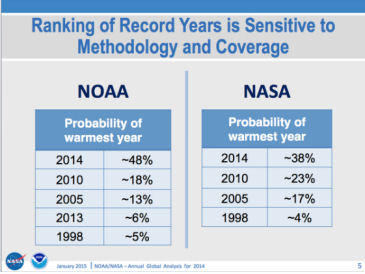
Ce tableau est intitulé "Le classement des années records est sensible à la méthodologie et à la couverture"
Il indique, entre autres, que le probabilité que 2014 soit "l'année la plus chaude" est d'environ 48% (un peu mois d'une chance sur deux) pour la NOAA et d'environ 38% (un peu plus d'une chance sur trois) pour la NASA.
Sous le titre "Le calcul des probabilités pour le classement de l'année 2014" la NOAA explique la dialectique utilisée pour déterminer les probabilités indiquées ci-contre et donne quelques compléments :
"En utilisant la méthode de Monte-carlo (Arguez et al, 2013), le NCDC a pris en compte l'incertitude connue pour la température annuelle des terres et des océans du globe pour la détermination du classement de l'année 2014. En tenant compte de l'incertitude et en supposant que toutes les années (1880-2014) dans les séries de données sont indépendantes, les chances de 2014 d'être :
- L'année la plus chaude : 48.0%
- Une des cinq années les plus chaudes : 90.4%
- Une des dix années les plus chaudes : 99.2%
- Une des vingt années les plus chaudes : 100.0%
- Plus chaude que la moyenne du XXe siècle : 100.0%
- Plus chaude que la moyenne des années 1981-2010 : 100.0%"
|
Si, maintenant, on se rapporte aux éléments de langage rappelés (ci-dessous) par la NOAA, donnant une définition précise des fameux "probable", "improbable", "très probable", etc. on trouve que les probabilités indiquées dans le communiqué de presse présenté par Gavin Schmidt tombent dans la catégorie "more unlikely than likely" (plus improbable que probable, ce qui est justifié par le fait que les probabilités sont inférieures à 0,5 soit 50%) aussi bien pour le NCDC de la NOAA que pour le GISS de la NASA.
Autrement dit, se conformant aux conventions tabulées (ci-contre) par la NOAA (et le GIEC) (h/t WUWT, Motl) dans le même billet de la NOAA, tous les médias auraient dû intituler leurs articles par la phrase suivante :
| "Il est plus improbable que probable que l'année 2014 a été l'année la plus chaude" |
Ou bien, du moins pour la NOAA, "il est très probable (90%<90,4 <99%) que l'année 2014 est l'une des cinq années les plus chaudes" ou encore, " il est presque certain (99,2%>99%)) que l'année 2014 est l'une des dix années les plus chaudes", et encore, "il est certain (100%) que l'année 2014 est l'un des 20 années les plus chaudes".
.. Ce qui aurait été exact mais aurait fait désordre par rapport au mantra ambiant dans la perspective de la conférence Climat COP21 à Paris.
C'est pourtant ce qu'auraient fait des journalistes bien renseignés et soucieux d'exactitude et de précision quand il s'agit d'informer leurs lecteurs. Il faut bien reconnaître que les NOAA/NASA ont omis (on se demande bien pourquoi ...) d'évoquer les probabilités dans le communiqué de presse distribué aux médias. Les médias sérieux auraient dû remonter jusqu'à la source de la présentation (en particulier, sur le site de la NOAA indiqué) faite à la presse.
___________________________________________________________________________________________________________
Maj du 27/01/2015 : Les seules données manquantes, celles du HadCRUT4 britannnique, viennent juste d'être publiées. Celles-ci sont commentées par le Met Office de la manière suivante (texte engraissé par PU) :
| “Les données HADCRUT4 (compilées par le Met Office (UK) et le Centre de Recherche sur le Climat de l'Université d'East Anglia) montrent que l'année dernière a été de 0,56°C (±0.1C) au dessus de la moyenne à long terme des années (1961-1990). En principe ceci classe 2014 comme la co-détentrice du record de chaleur avec 2010 mais les domaines d'incertitude indiquent qu'il n'est pas possible de dire de manière définitive laquelle parmi plusieurs années récentes a été la plus chaude." |
Voilà qui est honnête et conforme à ce que nous avons dit plus haut. A noter que l'agence de presse US, l'AP (Associated Press), a tempéré ses premières déclarations en évoquant également les incertitudes des mesures. Dommage qu'ils ne l'aient pas fait avant et que d'autres n'aient pas suivi son exemple !
____________________________________________________________________________________________________________
Stay Tuned ! Le prochain billet paraîtra sous peu... |
17 Novembre 2014 : Climat : Où en est-on ? Y a-t-il des raisons de s'inquiéter ?
Nombreux sont les lecteurs qui m'ont alerté récemment au sujet du déchaînement politico-médiatique catastrophiste qui se développe de nos jours en francophonie (mais pas nécessairement ailleurs), à propos du climat. Beaucoup prévoient que la préparation de la réunion COP21 de l'ONU qui doit se tenir à Paris en fin 2015 est l'occasion de lancer une campagne orchestrée destinée à persuader nos compatriotes (réticents) que "la fin du monde est pour bientôt" si nous ne faisons pas ce que certains voudraient que nous fassions.
Il est vrai que les occasions n'ont pas manqué, récemment, d'en rajouter une couche, telles la publication du dernier Rapport de Synthèse du GIEC (qui n'est rien d'autre qu'une approximation a-scientifique du Résumé pour les Décideurs de l'AR5 qui n'était lui-même qu'une caricature du rapport scientifique complet AR5, comme beaucoup d'autres scientifiques l'ont dit avant moi ainsi que je l'ai relaté dans les billets précédents), telles les réunions répétées des responsables du GIEC ou des politiques lors de divers sommets, toujours planétaires, etc.
Tout cela peut sembler très inquiétant et cela l'est surtout pour les quidams qui ne se plongent jamais dans les courbes, les données et les graphiques publiés par les instituts dédiés ou dans les revues scientifiques, comme la plupart de nos contemporains.
Mais, au fait, y a-t-il vraiment des raisons objectives de s'inquiéter au sujet du climat de la planète ? Et si oui, à quel sujet ?
C'est ce que nous allons voir dans ce billet, à partir des mesures objectives et en nous appuyant, parfois, sur le dernier Rapport Scientifique Complet du GIEC, l'AR5, qu'aucun de nos décideurs inquiets, ou de nos communiquants alarmistes, ne semble avoir lu avant de forger leur opinion... et celle des autres.
Nous allons donc passer en revue les évolutions, jusqu'à présent et successivement, des glaces des pôles, de la température du globe, de la hausse du niveau des mers, des événements météorologiques, dits "extrêmes" à la lumière des indicateurs officiels et des articles scientifiques parus récemment.
Et nous verrons s'il y a lieu de s'inquiéter comme "on" nous assure qu'il convient de le faire...
1) La glace des pôles :
1.A) Pôle Nord : L'océan arctique.
Il s'agit de l'évolution de l'extension de la surface de la mer arctique qui contient au moins 15% de glace, ce qui est le critère généralement retenu et notamment par le GIEC d'après l'Institut Danois DMI.
La variation de l'extension de la surface glacée relative à l'année 2014 est représentée par le gros trait noir.
Comme on peut l'observer, lors du minimum d'extension, observé vers le 10 septembre, c'est à dire au moment du maximum de la fonte, l'extension de la surface glacée de l'arctique de cette année est supérieure à celle des années 2010, 2011, 2012, 2013, et aussi 2007 et 2008 qui ne figurent pas sur ce graphique.
D'autre part, le graphique de l'organisme japonais IARC-JAXA montre qu'actuellement, l'extension de la glace arctique est assez proche de l'extension moyenne des années 2000.
L'évolution positive de l'englacement de l'océan arctique durant ces dernières années est également clairement visible sur le graphique suivant qui provient de Cryosphere (Université de l'Illinois, Urbana-Champaign, Polar Research Group), pour tout ce qui est en trait noir.
J'ai superposé à ce graphique deux interpolations-extrapolations possibles (L'une de couleur rouge, l'autre de couleur bleue.) afin d'illustrer les deux points de vue qui s'affrontent quant au futur proche de l'évolution de la glace arctique.
La courbe en rouge représente le point de vue pessimiste tel qu'on peut le lire sous la plume de chercheurs engagés avec le GIEC, tel Marc Serreze du NSIDC qui parle de "spirale mortelle", ou encore, d'Al Gore qui, lui, avait carrément prédit la disparition de la glace arctique en déclarant, lors de la cérémonie de la remise de son prix Nobel de la Paix (conjointement avec le GIEC), en 2007 que : "La calotte glaciaire est en chute libre. Elle pourrait avoir disparu, en été, dans près de 7 ans".
Comme on le voit, c'était faux.
La courbe en bleu illustre le point de vue des chercheurs qui, se rapportant aux oscillations des indices des températures océaniques (et plus précisément de l'AMO), pensent que la mer glacée arctique pourrait s'épaissir et résister de mieux en mieux à la fonte de l'été dans les années qui viennent (tels, par exemple Judith Curry).
De fait, personne ne connaît avec certitude la réponse à cette question, même si les observations actuelles vont plutôt dans le sens de la courbe en bleu.
"Time will tell" comme disent les américains des USA, c'est à dire, "l'avenir nous le dira"... Cependant, il existe un autre indicateur qui va dans le sens des optimistes. Il s'agit de l'observation de l'évolution du volume de la glace arctique et non plus seulement de son extension.
Voyons ce qu'il en est.
Evolution récente du volume de la glace arctique :
Le graphe ci-contre (établi d'après les bases de données de PIOMAS (Polar Science Center)) indique l'évolution du volume de la glace arctique au cours des mois de Septembre successifs qui sont les mois durant lesquels l'extension de cette glace de l'arctique atteint son minimum,
Comme on le voit, le volume de la glace arctique en septembre a diminué jusqu'en 2012 puis est reparti à la hausse durant les deux dernières années. Le volume de la glace arctique durant le mois de Septembre 2014 est un peu inférieur à celui observé en 2008 mais il est supérieur à celui de tous les autres mois de Septembre depuis 2007 (inclus).
A noter que, bien que l'extension minimale de la glace arctique soit, en 2014 assez proche de celle observée en 2013, son volume et donc, son épaisseur, a sensiblement augmenté en 2014 ce qui laisse présager une meilleure résistance lors de la prochaine fonte, en été 2015.
Bien entendu, ceci va à l'encontre de la fameuse prédiction de la "spiral death", la "spirale mortelle" pronostiquée par les tenants du GIEC qui extrapolaient le graphe indiquant la décroissance de la surface glacée arctique comme cela est indiqué par le trait rouge que j'ai reporté sur le graphe ci-dessus.
Enfin, et c'est d'une grande importance dans cette discussion, on sait que les anomalies de température en Arctique dans les années 1920-1930 étaient assez semblabes à ce qu'elles sont aujourd'hui, ce dont on ne peut certes pas rendre responsables les émissions anthropiques de CO2. Voici ce qui est écrit dans le dernier rapport (c'est à dire dans le rapport scientifique complet et non pas dans le Résumé pour les Politiques (SPM), ni dans le récent "rapport de synthèse") du GIEC, l'AR5 (publié en 2013) (cité par Judith Curry) :
| “Les anomalies de la température en Arctique dans les années 1930 étaient apparemment aussi importantes que celles des années 1990 et des années 2000. Il y a encore de nombreuses discussions au sujet des causes profondes qui sont à l'origine des anomalies de température dans l'Arctique dans les années 1920 et dans les années 1930." - GIEC AR5 Chapitre 10 |
J'ai évoqué plusieurs fois cette question dans cette page (Chylek, Tsonis etc.).
A ce sujet, Richard Lindzen, souvent cité dans ce site, aime présenter la diapositive ci-contre, lors de ses conférences traitant de la glace arctique :
Le texte date de ...1922. Il est issu du "US Weather Bureau", l'organisme officiel de la météorologie de l'époque. En voici une traduction :
| "L'Océan Arctique se réchauffe, les icebergs se font de plus en plus rares et dans certains endroits les phoques trouvent l'eau trop chaude. Tous les rapports pointent vers un changement radical des conditions climatiques et jusqu'à des températures inconnues jusqu'à présent dans la zone arctique. Des expéditions nous rapportent que pratiquement aucune glace n'a été vue au dessus d'une latitude de 81 degrés 29 minutes. D'énormes masse de glace ont été remplacées par des moraines de terre et des pierres tandis qu'en de nombreux endroits, des glaciers bien connus ont entièrement disparu." |
On croirait lire la presse actuelle...Dès lors, d'aucuns pourraient penser qu'il serait sans doute utile, sinon indispensable, de trouver une explication rationnelle pour la fonte intense de l'Arctique survenue dans les années 1920 et les années 1930, attestée par le GIEC dans son dernier rapport, ainsi que le regel qui s'en est ensuivi, avant d'incriminer les activités humaines pour la période actuelle.
Assez bizarrement, ce n'est pas l'option qui a été choisie par la communauté des climatologues, bien que le GIEC avoue clairement sa perplexité au sujet du réchauffement arctique des années 1920-1940.
Examinons, à présent, ce qu'il en est de la banquise à l'autre bout du monde : La banquise antarctique.
1.B) La banquise antarctique :
Source : Cryosphere (Université de l'Illinois)
L'évolution de la surface (extent) de la banquise antarctique est représentée en jaune.
Comme on le voit, la banquise antarctique a battu, cette année encore, le record absolu d'extension depuis le début des mesures répertoriées.
A noter que cette extension a été nettement au dessus de la moyenne durant la quasi totalité de l'année, même pendant l'été austral.
Ce record d'extension reflète une tendance générale qui se poursuit au moins depuis les années 1990, ainsi qu'on peut le voir sur le graphique des données mensuelles ci-contre, tiré de la même source (Cryosphere de l'Université de l'Illinois).
La progression de l'englacement de la banquise antarctique peut réserver des surprises aux "touristes des pôles" comme ceux (des journalistes, des scientifiques, des touristes et une politique) qui s'étaient joyeusement embarqués en fin Novembre 2013 à bord de l'Akademik Chokalski et qui se sont retrouvés piégés à Noël, loin du continent, dans la banquise antarctique en plein été austral (photo ci-contre). Il a fallu mobiliser, à plusieurs reprises, de gros moyens pour les sortir de ce mauvais pas.
De même, il est évident que la progression de la superficie de la banquise antarctique et le dégel tardif posent aussi de sérieux problèmes pour le ravitaillement des bases antarctiques par voie maritime ne serait-ce qu'en raccourcissant sérieusement la période d'accès au continent.
1.C) La surface des glaces des mers polaires : Glace arctique + banquise antarctique (Cryosphere)
Comme on peut le voir, au cours des deux dernières années, c'est à dire en 2013 et 2014, l'extension des surfaces glacées du globe a rejoint ou est repassée au dessus de la "normale", c'est à dire au dessus de la moyenne des années 1979-2008.
Ainsi et au vu de l'évolution actuelle des observations, il n'y a aucune raison objective de prêcher l'alarmisme en ce qui concerne l'extension des glaces des deux mers polaires. Bien au contraire.
2) La température moyenne de la surface du globe :
Voici les représentations des données mensuelles données par deux organismes représentatifs des mesures thermométriques (ici le GISS de la NASA) et des mesures satellitaires (ici, le RSS-MSU), depuis 1997 jusqu'au mois d'octobre de cette année.
Comme chacun le sait, il s'agit ici d'une représentation de ce que d'aucuns nomment "le plateau" des températures qui se prolonge depuis au moins 17 ans et d'autres qui supposent que les températures vont remonter, "le hiatus".
Les bases de données utilisées ici sont les bases "officielles" de ces deux organismes telles que je les ai indiquées dans des billets précédents.
Comme on le voit et comme on s'y attend étant donné le très faible incrément temporel par rapport à l'année dernière, au vu des graphes des températures mensuelles et compte tenu des fluctuations, il ne se passe rien de particulier en 2014 par rapport à 2013 ni par rapport aux années précédentes du millenium.
Nous avons pourtant tous entendu et lu dans les médias que "les mois d'août ou(et) de Septembre était les plus chauds depuis le début des relevés" ainsi que d'autres affirmations du même genre, pratiquement jamais sourcées. Si c'est exact, cela ne l'est que pour les instituts qui utilisent les mesures thermométriques qui dérivent d'ailleurs, toutes, d'une seule base de données appelée GHCN (Global Historical Climatology Network) (voir ci-dessous). Les données satellitaires indépendantes entre elles, que ce soient celles de l'UAH (Université de l'Alabama, Hunstville) ou celles de l'organisme RSS-MSU qui n'utilisent pas les mêmes satellites, concourent pour indiquer que les températures du globe des mois d'Août, Septembre etc. ne figurent pas en haut du classement des températures. Autrement dit, nous avons affaire à trois systèmes de mesures réellement indépendants, deux satellitaires et un thermométrique.
Ceci mérite quelques explications.
2.A) Divergences entre les différentes institutions
On peut observer une divergence croissante, au cours du temps, entre les données thermométriques (GISS-NASA, NOAA) et les mesures satellitaires (ici le RSS-MSU, UAH).
Voici, ci-contre, un zoom sur les divergences observées entre les mesures thermométriques et les mesures satellitaires dans les années 2013 et 2014.
On peut s'étonner de cette divergence sachant qu'elle atteint parfois les 0,3°C (ce qui représente près de la moitié du réchauffement observé au XXe siècle) si on se souvient que les organismes responsables de ces mesures estiment que les incertitudes sont de l'ordre de 0,05°C (soit 5 centièmes de degrés pour la surface du globe (!)).
Les divergences observées étant largement supérieures aux incertitudes cumulées, on peut se dire que soit l'une des deux mesures est fausse, soit les deux.
Mais qu'en est-il de la base des données thermométriques ?
2.B) La base GHCN des données des mesures thermométriques :
Le site de la National Oceanic and Atmospheric Administration, la NOAA donne une représentation des anomalies de température pour le mois de Septembre 2014, (ici, seulement les terres émergées) réparties sur le globe et illustrées selon le code des couleurs indiqué en dessous de la figure, selon les données thermométriques tabulées par le GHCN comme indiqué.
1) La taille des petits carrés donne une indication sur les méthodes d'homogénéisation adoptées par le GHCN et ses utilisateurs. Ainsi observe-t-on que ces carrés dans lesquels la température est supposée varier de la même manière, sont d'une taille approximativement égale à la moitié de la France ce qui présuppose que les anomalies de température affecteraient, de la même manière, des portions distantes de quelques 500 km.
2) Comme cela est indiqué, en petits caractères, à droite et en bas de ce document, les parties en grisé représentent les "données manquantes" dans l'établissement de la base de données du globe.
Si, dans le cas présent, on n'est guère surpris de constater que le continent antarctique ne comporte que quelques rares thermomètres, on s'étonne de la très faible couverture thermométrique de l'Afrique, de l'Amérique du Sud, de l'Alaska, du Groenland, de la Sibérie etc. bref, d'une portion très importante de la surface des continents de la planète.
Dans ces conditions, on peut s'étonner, une fois encore, que les organismes qui se basent sur cette base de données, affirment que leurs évaluations pour la température moyenne de la surface du globe, pris dans sa totalité, sont obtenues avec une incertitude de 5 centièmes de degré.
A titre d'information et à titre d'exemple, il apparaît que le mois de Septembre 2014 n'est, en réalité, que le septième mois de septembre le plus chaud pour l'UAH (satellite), le neuvième pour le RSS-MSU (satellite) et le premier pour la NOAA (ou la NASA qui utilisent la même base GHCN). Autrement dit, deux mesures indépendantes entre elles sur trois, contredisent la troisième et ce, bien au delà des marges d'erreur proclamées.
En bref, il n'y a toujours pas de quoi s'alarmer à ce sujet. Au contraire, le "plateau" est plutôt rassurant.
Mais,
qu'en est-il de la situation pour ce qui concerne la hausse moyenne du niveau des océans du globe ? Il s'agit d'un autre observable important, souvent mentionné dans les médias, comme particulièrement inquiétant.
3) La hausse du niveau des océans à l'échelle du globe
Le graphe (en bleu) a été tracé à partir des données de l'Université du Colorado par le Prof Humlum. Ce dernier a effectué une analyse polynomiale d'ordre deux de la série des données fournies par cette université. Les résulats de son analyse sont représentés sur son graphe par une courbe en trait pointillés bleus et un petit cartouche de même couleur.
Anomalie globale du niveau moyen des océans en mm de 1993 à Mars 2014.
Comme on peut l'observer le "best fit" polynomial quadratique obtenu par Humlum a un indice de confiance de 93%. Il comporte un faible terme quadratique négatif (cartouche du graphique) ce qui m'a incité à chercher à le mettre en évidence en superposant une droite (en point-tirets rouge) sur son tracé (superposition de de 1993 à 2003) en pointillés bleus.
Comme on le voit, le terme quadratique négatif représente une diminution tout à fait perceptible de la vitesse de hausse des océans ce qui est en accord avec un certain nombre d'observations indépendantes publiées récemment.
Ceci qui est en accord avec plusieurs publications et contraire aux affirmations alarmistes généralement répandues selon lesquelles la hausse du niveau des océans s'accélérerait.
Il n'en est rien. Au contraire, la hausse ralentit depuis quelques années, ce qui est d'ailleurs cohérent avec la stagnation de la température globale de la planète.
Comme on le constate, les observations concernant aussi bien l'évolution de la température moyenne du globe que le regel des banquises arctique et antarctique et le ralentissement de la hausse du niveau des mers, incitent plutôt à l'optimisme qu'au pessimisme.
Mais voyons maintenant, ce qui concerne un sujet d'inquiétude récemment devenu réellement invasif : Les événements climatiques (météorologiques) extrêmes. Deviennent-ils plus fréquents ou plus violents comme on l'entend dire fréquemment ?
4) Les événements climatiques extrêmes :
4.A) Les cyclones/ouragans/typhons
Evolution de l'indice ACI (Energie cyclonique accumulée) des Cyclones/ouragans/typhons à l'échelle du globe.
Comme je l'ai déjà mentionné auparavant l'indice ACI constitue une évaluation compacte de l'intensité et de la fréquence de l'activité cyclonique. Il existe d'autres indices légèrement différents qui conduisent sensiblement aux même résultats.
Contrairement aux déclarations apocalyptiques que l'on peut lire à ce sujet dans les médias, ni la fréquence, ni la violence des ouragans/cyclones/typhons n'ont augmenté durant les dernières décennies.
Une explication scientifique pour cette (nouvelle) divergence entre les modèles et les observations vient d'ailleurs d'être exposée par James Kossin dans le Bulletin of the American Meteorological Society (Validating Atmospheric Reanalysis Data Using Tropical Cyclones as Thermometers by James P. Kossin, published in Bulletin of the American Meteorological Society DOI:/10.1175/BAMS-D-14-00180.1).
En bref, il s'agirait d'une migration vers les pôles de ces instabilités atmosphériques qui sont donc ainsi apaisées par les températures plus froides, ce que les modèles ne prenaient pas en compte. (Voir l'analyse de cet article).
Ainsi n'y a t-il aucune raison objective d'anticiper une augmentation de la fréquence et de la violence des ouragans/cyclones/typhons pour les années à venir et les prochaines décennies.
4.B) Les tornades (aux USA).
Comme chacun sait, les tornades sont des événements météorologiques extrêmes relativement localisés qui peuvent être d'une extrême violence (avec des vents de près de 400km/h). On les rencontre principalement aux Etats-Unis, le long d'une ligne que l'on appelle la "tornado alley", "l'allée des tornades" où les habitants se sont aménagé tout un système de protections et d'abris qui leur permettent de sauver leurs vies, à défaut des constructions.
L'évolution de l'intensité et de la fréquence des tornades états-uniennes a fréquemment été citée comme étant un bon indicateur de la "dégradation climatique", étant entendu que le "réchauffement climatique" "devrait" conduire à une intensification de ces phénomènes aussi extrêmes que dangereux.

Ce n'est pas du tout ce que nous disent les mesures. De fait, celles-ci nous disent, à peu de chose près, le contraire.
Voici, ci-contre, un graphique dressé par le NOAA américaine qui montre le développement du nombre des tornades observées au cours de l'année et ceci depuis l'année 2005 jusqu'en 2014 (998 tornades observées au moment de l'établissement du graphique).
Comme on le voit, par exemple, les années 2013 et 2014 figurent toutes deux parmi les années les moins affectées par les tornades pour cette période et on n'observe pas de croissance de la fréquence de ces phénomènes à mesure que le temps passe.
Les tornades que l'on subit aux USA, bénéficient d'un système de classement qui les rangent, suivant leur potentiel de destruction, dans plusieurs catégories nommées EF-1 (les plus violentes), EF-2 etc. par ordre décroissant de puissance destructrice.
Voici l'évolution du nombre des tornades US de catégorie EF-1 (les plus destructrices) auxquelles on ajoute celles qui sont encore pires, en fonction des années écoulées, en partant de 1971 jusqu'en 2013.
Comme on le voit, le nombre des tornades les plus violentes aux USA n'a pas augmenté au cours des dernières décennies. D'après le trait rouge tracé par l'organisme qui a publié ces données, ce nombre a même diminué, en moyenne, au cours de cette période.
On pourrait examiner la suite des graphiques qui analysent l'évolution temporelle des tornades de violence moindre (le EF-2 etc.). Je ne les ai pas reportés ici pour ne pas allonger exagérément ce billet. Il suffit de savoir qu'aucun de ces graphiques ne montre une augmentation du nombre de ces tornades au cours des décennies écoulées.
Il faut donc en conclure qu'il n'y a pas, non plus, lieu de s'inquiéter à ce sujet : Les tornades sont de phénomènes naturels dont la violence et la fréquence ont plutôt tendance à décroître depuis les années 70.
4.C) L'enneigement de la planète.
On ne peut certainement pas affirmer que les chutes de neige, ou leur absence, puissent être considérées comme des "événements climatiques extrêmes". Néanmoins et compte tenu des conséquences économiques délétères que pourrait entraîner l'affaiblissement ou la disparition de l'enneigement, certains semblent les considérer comme tels.
Ainsi, voici ce qu'écrivait le journaliste spécialisé du journal anglais The Independent (Le 20 Mars 2000), sous le titre "Il apparaît que les chutes de neige ne sont plus qu'une chose des temps passés".Comme on le voit ci-contre, sur un graphique donnant la superficie enneigée du globe en hiver depuis 1967, publié par le Rutgers University Snow Lab, l'hiver 1999-2000 avait été particulièrement pauvre en neige, à l'échelle du globe comme au Royaume Uni.
"Cependant, le réchauffement jusqu'à présent se manifeste plus durant les hivers qui sont moins froids plutôt que durant les étés beaucoup plus chauds. Selon le Dr. David Viner qui est un chercheur confirmé de l'Unité de Recherche sur le Climat (CRU) de l'Université d'East Anglia [NdT : le QG du célèbre Climategate], dans quelques années les chutes de neige en hiver deviendront "un événement rare et excitant"
"En définitive, les enfants ne sauront plus ce qu'est la neige" dit-il". |
Il apparaît que les années suivantes, peut-être à l'exception de l'année 2007, ont connu des enneigements hivernaux particulièrement abondants. Les enfants d'aujourd'hui savent toujours ce qu'est la neige et le Dr. David Viner du CRU de l'UEA est encore fréquemment cité pour cette prédiction aussi alarmiste qu'aventureuse.
Pour rester dans l'actualité, voici, ci-contre, l'évolution de la surface enneigée du globe de l'hémisphère Nord pour chaque mois d'octobre depuis 1968 (à l'exception de l'année 1969 pour lesquelles il n'existe pas de données (ND)). Il s'agit de 'l"anomalie" c'est à dire de la variation de la superficie enneigée (en millions de km carrés) du globe constatée par rapport à une moyenne choisie à l'avance.
Comme on le voit immédiatement, le mois d'Octobre 2014, c'est à dire le mois dernier qui est pourtant réputé "chaud" par les instituts utilisant les mesures thermométriques, a connu un enneigement particulièrement abondant.
De fait, ce mois d'Octobre 2014 se situe en troisième position, pour l'étendue de l'enneigement, depuis 1968, derrière les mois d'octobre 1977 et 2003.
Donc, là encore, pas de raison de s'inquiéter de l'évolution de l'enneigement hivernal et automnal de la planète, même s'il est vrai que l'enneigement printanier tend à diminuer à l'échelle du globe, ce qui reflète probablement la (faible) hausse des températures que nous avons connues depuis les années 80.
4.D) Les sécheresses à l'échelle mondiale
C'est un sujet très important qui conditionne l'existence de milliards d'êtres vivants sur la planète, via l'accès à l'eau et à la nourriture. Beaucoup affirment, sans preuve, que les sécheresses augmentent globalement du fait du "réchauffement climatique anthropique".
Il existe pourtant un grand nombre d'articles scientifiques rassurants à ce sujet dont plusieurs montrent, au contraire, que nous assistons à un "reverdissement" de la planète dû, sans doute, à la proportion croissante de CO2 dans notre atmosphère. J'avais évoqué cette question dans un billet précédent.
Au sujet de l'évolution des sécheresses, la revue Nature vient précisément de faire paraître un article révélateur à ce sujet. Il ne va pas dans le sens de l'alarmisme. Au contraire.
Voici le graphe principal extrait de cet article publié dans Nature (accès libre). Il est intitulé : "Global integrated drought monitoring and prediction system" soit "Système de suivi intégral des sécheresses à l'échelle du globe et de prédiction."
Ci-contre le graphique qui donne la fraction du globe affectée par les sécheresses depuis le mois de Juin 1982 jusqu'au mois de Juillet 2012.
Le code des couleurs utilisé est indiqué dans la légende de la Figure 5 ci-dessus : "Fraction des continents du globe en situation D0 (anormalement sec), D1 (modéré), D2 (sévère), D3 (extrême) et D4 (exceptionnel) (Les données sont les Indices Standardisés des Précipitations tirés de MERRA-Land)."
Comme on le voit, qu'il s'agisse des zones "anormalement sèches", "sécheresses modérées", "extrêmes" ou "exceptionnelles", il n'y a pas de variation significative de la fraction du globe affectée, au moins, au cours des trois dernières décennies.
Ceci est cohérent avec ce que l'on trouve dans le dernier rapport (scientifique) du GIEC au sujet des fortes sécheresses :
Variation de la composante du système climatique |
Potentiellement
brutal (Définition AR5) |
Irréversibilité si le forçage est renversé |
Probabilité envisagée dans le changement au XXIe siècle des scénarios considérés |
Sécheresses de longues durées |
Oui |
Réversible de quelques années à des décennies |
Faible confiance dans les projections des variations de la fréquence et la durée des méga-sécheresses. |
Autrement dit, les scientifiques du GIEC ne se prononcent pas. Ils n'ont tout simplement pas assez de données pour juger d'une quelconque tendance. Et le graphe précédent, récemment publié, donc après la rédaction du rapport AR5 du GIEC, ne va certainement pas donner du grain à moudre aux alarmistes des sécheresses.
4.E) Que nous disait le dernier rapport scientifique du GIEC (AR5 -2013) au sujet des événements extrêmes ?
Voici, de manière plus générale, au sujet des événements climatiques extrêmes, des extraits du dernier rapport scientifique du GIEC (l'AR5) publié en 2013. (source) (déjà cité ici).
Au sujet des ouragans et cyclones tropicaux :
“Les bases de données existantes ne montrent aucune tendance significative dans la fréquence des cyclones tropicaux durant le siècle dernier....Aucune tendance robuste dans le nombre des cyclones tropicaux, des ouragans et des ouragans les plus forts, n'a été identifiée lors des 100 dernières années dans le bassin Nord Atlantique."
Au sujet des inondations :
"En résumé, le manque de preuve persiste en ce qui concerne le signe et la grandeur et/ou la fréquence des inondations à l'échelle globale, ce qui se traduit par un indice de confiance faible."
Au sujet des tempêtes, orages, grêle etc.
"En résumé, il y a une faible confiance dans les tendances observées pour les phénomènes météorologiques violents à petite échelle tels que les grêles, les orages, à cause de l'inhomogénéité des données et de l'inadaptation des systèmes de suivi."
Concernant les sécheresses et les affirmations du rapport précédent AR4 :
"Au vu des études mises à jour, les conclusions de l'AR4 (Le rapport 2007 du GIEC) concernant une augmentation des sécheresses depuis les années 1970, ont été probablement surestimées".
Concernant les cyclones extra-tropicaux :
"En résumé, la confiance est faible dans des changements à grande échelle de l'intensité des cyclones extra-tropicaux extrêmes depuis 1900." |
Assez curieusement, il semble que les médias et les décideurs savent ce que les chercheurs qui contribuent au rapports du GIEC ne savent pas. Malheureusement, le personnel politique au sens large tout comme la "grande presse" et les autres médias ne semblent pas s'être donné la peine de lire, en profondeur, le contenu du dernier rapport scientifique complet du GIEC (qui date de l'année dernière), dont quelques conclusions sont rapportées ci-dessus.
Il est sans doute utile de rappeler ce qu'a déclaré récemment l'éminent climatologue, Lennart Bengtsson (fréquemment cité dans les billets précédents), à ce sujet :
| "Ce qui est encore plus inquiétant c'est la tendance qui consiste à donner au public l'impression que les événements météorologiques deviennent plus extrêmes et que ceci est déjà en cours. A l'exception d'une possible augmentation des précipitations et d'une possible intensification des ouragans tropicaux qui n'ont pas encore été observés, il n'y a aucune indication de l'augmentation d'événements météorologiques extrêmes dans les simulations des modèles et encore moins dans les observations actuelles." |
5) Conclusions :
En partant des données officielles, nous avons successivement passé en revue l'état actuel des observations qui concernent :
- l'évolution des mers glacées au pôle Sud et au pôle Nord,
-
l'évolution de la température moyenne à la surface du globe,
- la hausse du niveau des mers,
-
l'évolution des tempêtes extrêmes comme les tornades aux USA, les typhons et les ouragans à l'échelle du globe,
-
les questions d'enneigement, des tempêtes diverses et des sécheresses,
ainsi que les conclusions du contenu du dernier rapport scientifique AR5 (2013) du GIEC au sujet des événements climatique extrêmes.
Ces observations sont indubitablement rassurantes. Nous ne voyons strictement rien dans tout cela qui justifie le déchaînement médiatico-politique catastrophiste (francophone) auquel nous assistons en ce moment. Au contraire, toutes ces évolutions climatiques restent dans le cadre des évolutions naturelles observées dans le passé et pour un certain nombre d'entre elles, personne n'est encore capable de se prononcer.
Ainsi, rien n'est observé dans la situations actuelle qui puisse susciter l'inquiétude. Il est possible, cependant, que certains justifient leur anxiété en se référant aux prévisions/scénarios des modélisations informatiques du climat.
L'inquiétude serait-elle alors justifiée par les modèles des prévisions/scénarios du GIEC ?
On pourrait le comprendre si les modèles numériques du climat avaient systématiquement démontré leur pertinence lors de leur confrontation avec les observations objectives. Ce n'est pas le cas.
Voici trois exemples parmi d'autres dont certains ont déjà été mentionnés dans les billets précédents, au cours des mois et des années passées.
- Modélisation de la température moyenne de la surface du globe.
Je rappelle ici le graphe qui figure dans le rapport AR5 (complet) (Chapitre 9, page 162, Box 9.2 Fig. 1a) du Rapport scientifique complet du GIEC AR5. Ce graphe confronte le résultat des mesures de températures thermométriques HadCRUT4 avec les prévisions/scénarios du GIEC.
Comme on peut le voir immédiatement, les plupart des modèles du GIEC (ici les CMIP5) avaient prévu une hausse de la température moyenne du globe de 0,2°C (ou plus) par décennie).
Les mesures du HadRUT4 montrent que la hausse, durant la période considérée ("le plateau") n' a été que de 0,04°C par décennie, c'est à dire 4 fois plus petite. Encore que, compte tenu de la précision réelle des mesures, cette hausse de température doit être statistiquement peu ou non significative.
Autrement dit, les modèles ont été incapables de prédire l'existence du plateau de température qui a d'ailleurs toujours cours en ce moment. Les modèles surestiment manifestement le réchauffement de la planète, d'un facteur au moins égal à 5 pour ce millénaire..
- Modélisation de l'évolution de l'extension de la banquise antarctique

Comme nous l'avons vu, l'extension de la banquise antarctique augmente d'année en année et ceci depuis au moins les années 90. Elle a battu son record d'extension (depuis 1979, le début des mesures satellitaires) cette année comme elle l'avait déjà battu l'année dernière.
Que nous disent les scénarios climatiques à ce sujet ?
Voici, ci-contre, la Figure
chap 12, page 1088, Figure 28d du rapport scientifique (complet) AR5 (2013) du GIEC (Groupe de travail I).
Comme on le voit, tous les modèles du GIEC (toutes les couleurs y compris le noir, sauf le vert) prévoient globalement une diminution de l'extension maximale de la banquise antarctique au mois de septembre.
Ceci est contraire aux observations (ici, en vert) qui , comme nous l'avons vu, montrent une augmentation constante de cette extension.
Il est vrai que les marges d'erreurs énormes qui affectent ces modélisations, ici représentées par les zones ombrées, permettent au GIEC d'affirmer que celles-ci sont "cohérentes" avec les observations. Il faudra peut-être attendre encore quelques années pour que ces modèles soient (enfin) déclarés inopérants par le GIEC, c'est à dire que la courbe expérimentale sorte des zones ombrées, si cela est possible.
- Modélisation de la température de la moyenne troposphère tropicale.
De manière un peu ironique, un de mes collègues (le physicien Howard Hayden) s'est amusé à superposer les affirmations successives des différents rapports du GIEC quant à leurs certitudes, sur un graphique de Roy Spencer et John Christy qui mettait en évidence les divergences modèles/observations pour la température prévue par les modèles et la température mesurée dans la moyenne troposphère tropicale. Il s'agit, comme chacun le sait, d'un point critique pour tester la validité des modèles climatiques. Voici ce graphique (en partie francisé) :
Les carrés/cercles bleus représentent les résultats des mesures in situ obtenues par une multitude de ballons sondes et de nombreux satellites.
Les courbes "bruitées" en trait fin représentent les résultats des calculs des 73 modèles en cours. Le gros trait noir représente la moyenne des résultats de ces modèles (si tant est que la "moyenne de modèles" ait une quelconque signification statistique).
La divergence croissante entre les prévisions/scénarios des modèles avec les observations est évidente. Là encore, les modèles surestiment - et de beaucoup - le réchauffement de la moyenne troposphère tropicale.
Les étiquettes rectangulaires indiquent les degrés de confiance revendiqués dans les rapports successifs du GIEC.
Comme on le voit, la "confiance" du GIEC dans ses prévisions/prédictions/scénarios s'accroît au fur et à mesure que les modèles s'écartent des observations.
Je rappelle les dates de la parution des rapports successifs du GIEC, indiqués sur le graphique par les flèches rouges.
FAR 1990, SAR 1995, TAR 2001,AR4 2007, AR5 2013.
Tant que les modélisations informatiques n'auront pas résolu leurs (graves) problèmes de divergence avec les observations, il est, sans doute, pour le moins prématuré d'anticiper l'avenir de la planète dans l'état actuel de nos connaissances et de mettre en place des mesures contraignantes qui peuvent s'avérer lourdes de conséquences.
Ainsi, dans l'état actuel des choses, nous ne voyons rien, ni dans les observations objectives ni dans les modèles manifestement pris en défaut qui puisse affecter le bien-être futur de nos enfants et de nos petits enfants (fréquemment invoqué dans les médias et jusques et y compris dans les déclarations politiques les plus officielles) qui, sans doute, dans quelques années, s'ils n'ont pas eux-mêmes sombré dans le pessimisme généralisé, s'interrogeront (ou s'amuseront), au sujet de l'étrange psychose collective qui s'est emparée d'une proportion notable des dirigeants et des communicants de notre planète en ce début du XXIe siècle.
Time will tell.
Stay Tuned !
|
16 Octobre 2014: "La science du climat n'est pas établie"...
C'est ce que déclare, en substance, un physicien renommé, Steve Koonin (ci-contre), dans une lettre ouverte publiée dans un journal US à grand tirage. Koonin a, entre autres, été récemment Sous-Secrétaire d'Etat à la Science et à l'Energie dans l'administration Obama. Il a dirigé une enquête approfondie sur la science du climat au nom de la Société de Physique Américaine (l'APS).
Ainsi, Steve Koonin rejoint la lignée des Lennart Bengtsson, Richard Tol, Daniel Botkin, Judith Curry, Garth Paltridge et bien d'autres, que l'on ne saurait qualifier de "climato-sceptiques" et qui ont, longtemps eux-mêmes, défendu, sinon participé à la rédaction des attendus et des conclusions des rapports successifs du GIEC mais qui ont, plus ou moins récemment, exprimé leur scepticisme quant aux certitudes affirmées par cet organisme de l'ONU.
Steve. E Koonin a publié un op-ed (ou une lettre ouverte) dans le Wall Street Journal du 19 Septembre 2014. Voici le fac-simile de l'en-tête de cet article accompagné de la traduction de cet en-tête..
|
La science du Climat n'est pas établie.
Nous sommes très loin de posséder les connaissances requises pour mener une bonne politique en matière de climat, écrit le scientifique éminent Steven E. Koonin.
Par STEVE KOONIN |
En guise de préambule à la lecture de l'article de Koonin, il est sans doute utile de situer le contexte dans lequel intervient la publication de cette lettre ouverte.
1) La Société de Physique Américaine (l'American Physical Society) (APS) et Steve Koonin.
Petit aperçu historique sur les prises de positions de l'APS sur les affaires climatiques.
Note : Cette section, un peu spécialisée, explique l'historique des démarches qui ont conduit à la nomination de Steven Koonin à la présidence d'un groupe de l'APS chargé de mener une enquête sur l'état de la science climatique. Les lecteurs non intéressés pourront sauter directement à la traduction de la lettre ouverte de Koonin.
-En 2007, sans aucune consultation préalable auprès de ses quelques 50.000 membres, le bureau de l'APS a publié un communiqué dans lequel il exprimait son (celui du bureau) point de vue sur le "réchauffement climatique "(nommé ainsi à l'époque, à présent qualifié de "changement climatique") en déclarant notamment que la science climatique était "irréfutable".
S'ensuivit une longue liste de récriminations, de protestations voire de démissions bruyantes de la part de plusieurs piliers de la société comme j'ai eu l'occasion de vous relater au cours des dernières années. Ainsi :
-En Juillet 2008, j'avais été contraint (à regret, parce que je suis membre de l'APS depuis des décennies) d'attribuer un bonnet d'âne au bureau de l'APS pour ses réactions pour le moins incohérentes suite à la déclaration de Jeffrey J. Marque qui était alors l'éditeur des Newsletters de "Physics and Society" de l'APS. Compte tenu des désaccords au sein de l'APS dont il était un témoin privilégié, J. J. Marque avait décidé d'ouvrir un débat sur le réchauffement climatique dans les colonnes de son forum. Pour ouvrir ce débat et comme il est d'usage, Jeffrey Marque avait écrit un paragraphe d'introduction dont voici une traduction :
| "Il existe une proportion considérable de gens, dans la communauté scientifique, qui sont en désaccord avec les conclusions du GIEC qui affirme que le CO2 anthropique est, très probablement, le principal responsable du réchauffement climatique qui s'est produit depuis la Révolution Industrielle. Comme la justesse ou la fausseté de cette conclusion a d'immenses implications pour l'action politique et l'avenir de notre biosphère, nous avons pensé qu'il était pertinent d'ouvrir un débat dans les pages de Physics and Society " (source). |
Suite à des récriminations insistantes, le bureau de l'APS a décidé, en 2010, de publier un commentaire explicatif de la déclaration de 2007 tout en prenant du recul, notamment par rapport à une adjectif ("incontrovertible" soit "irréfutable") qui y figurait et auquel beaucoup ont reproché son caractère peu scientifique. En effet, très peu de choses, s'il en existe, sont "irréfutables" en matière de science.
-En 2012, quelques corrections mineures ont été apportées à ce commentaire. A noter que le commentaire publié en 2010 avait été précédé d'une consultation des membres de l'APS sous la forme d'un questionnaire succinct. A ma connaissance, les résultats et l'analyse des résultats de ce sondage n'ont pas été publiés mais il est clairement apparent, comme le montre la lecture des différents documents dans l'ordre chronologique que la déclaration (péremptoire) de 2007 a été sérieusement remise en cause et que l'évolution des déclarations a été clairement dans le sens de la prudence. On peut penser que le sondage mis en place par l'APS dans le courant de l'année 2010 faisait ressortir une forte demande allant dans ce sens, dont les responsables ont dû tenir compte.
-En 2013, Le POPA de l'APS, c'est à dire le Comité Chargé des Affaires Publiques de l'APS, a décidé de mettre sur pied un groupe d'enquête (nommé "The American Physical Society’s (APS) Climate Change Statement Review (CCSR)") sur les fondements de la science du climat, c'est à dire sur les connaissances qui relèvent essentiellement de la physique et donc du groupe I du GIEC. Le but déclaré de ce groupe d'enquête vise à réviser (si nécessaire) la très contestée prise de position officielle de l'APS, énoncée sans consultation des membres en 2007. Le groupe d'enquête - le CCSR - mandaté par l'APS comprenait les personnalités suivantes : Steven Koonin (président), Phillip Coyle, Scott Kemp, Tim Meyer, Robert Rosner et Susan Seestrom.
L'ordre de la mission pris en charge par ce groupe d'enquête est disponible en ligne. Il s'agissait, principalement, d'organiser une séance de travail à laquelle étaient invités un certain nombre de climatologues reconnus afin de faire le point sur l'état des connaissances en matière de sciences fondamentales du climat, dans le but d'éclairer le POPA et le bureau de l'APS dans leur prise de position officielle sur le "changement climatique". Les participants invités se sont vus proposer un cadre de discussion sous la forme d'un questionnaire (lui aussi disponible sur le site de l'APS). Ce document de 14 pages regroupe, de manière pertinente (de l'avis de Judith Curry et du mien), un grand nombre de questions qui ont été souvent évoquées sur ce site. La lecture de ce questionnaire donne un aperçu significatif sur le niveau approfondi des connaissance de ses rédacteurs physiciens.
Les bios des experts qui ont participé à la séance de travail organisé par l'APS sont également disponibles sur le site de l'APS. La transcription complète de la séance de travail (AMERICAN PHYSICAL SOCIETY CLIMATE CHANGE STATEMENT REVIEW WORKSHOP) tenue sous l'égide de l'APS et sous la direction de S. Koonin est disponible (pdf, 573 pages) sur le site de l'APS.
Un CV abrégé de Steven Koonin est disponible sur le site de l'American Institute of Physics. La page qui le concerne sur le site du Département de l'Energie US (DOE) donne plus de détails. Entre autres fonctions, Steven Koonin a été professeur de physique théorique au Caltech pendant près de 20 ans. A noter que Steven Koonin a la réputation de ne pas hésiter à dire ce qu'il pense. Il s'est notamment illustré, en 1989, lors d'une sévère dénonciation de la célèbre "fusion froide" de Pons and Fleischmann.
2) La lettre ouverte de Steve Koonin dans le Wall Street Journal
Je donne ci-dessous une traduction intégrale* de l'article de Koonin publié dans le WSJ. Ceux qui voudront savoir d'où Steven Koonin tire un certain nombre de ses affirmations peuvent lire sa version initiale qui inclut les références des sources que le journal n'a pas repris mais qui figurent dans son article original. A noter que nombre de ses affirmations font référence au contenu du dernier rapport (scientifique, complet) AR5 du GIEC.
Les caractères engraissés ci-dessous le sont par l'auteur de PU. Ils ne le sont pas dans l'article original du WSJ.
"L'idée selon laquelle la "Science du Climat est établie" a envahi les discussions populaires et politiques actuelles. Malheureusement, cette affirmation est trompeuse. Elle n'a servi qu'à dénaturer les débats publics et politiques au sujet des questions relatives à l'énergie, aux émissions de gaz à effet de serre et à l'environnement. Elle a aussi réduit à néant les discussions scientifiques et politiques que nous devons avoir au sujet du climat du futur.
Ma formation de base comme physicien spécialiste en modélisation numérique - avec une carrière de 40 années passées dans la recherche scientifique, dans le conseil et la gestion dans des départements gouvernementaux, dans des activités académiques ou dans le secteur privé - m'ont permis d'acquérir une perspective détaillée et une vue générale de la science climatique. Une série de discussions approfondies, durant l'année écoulée, avec des climatologues éminents (NdT: Koonin fait ici clairement allusion à l'enquête dont il a la charge pour l'American Physical Society) m'ont apporté une perception encore meilleure sur ce que nous savons et sur ce que nous ne savons pas au sujet du climat. J'en suis arrivé au point de porter une appréciation sur le redoutable défi posé lorsqu'il s'agit de répondre aux questions qui intéressent les décideurs politiques et le public.
La question scientifique cruciale pour la politique n'est pas de savoir si le climat change ou non. C'est une affaire avérée. Le climat a toujours changé et le fera toujours. Les bases de données historiques et géologiques montre l'occurrence de changements climatiques majeurs, parfois sur des durées aussi brèves que quelques décennies. Nous savons, par exemple, que, durant le XXe siècle, la température moyenne de la surface de la Terre a augmenté de 1,4 degré Fahrenheit.(NdT : environ 0,8°C)
Il ne s'agit pas non plus de répondre à la question fondamentale de savoir si les humains influent sur le climat. Ce n'est pas un canular. Il y a peu de doute dans les communautés scientifiques que l'augmentation continuelle des gaz à effet de serre dans l'atmosphère, ceci étant grandement dû aux émission de dioxyde de carbone résultant de l'usage conventionnel des carburants fossiles, influe sur le climat. Il y a aussi peu de doute que le dioxyde de carbone persistera dans l'atmosphère pendant plusieurs siècles. De nos jours, l'impact de l'activité humaine semble être comparable à la variabilité intrinsèque naturelle du système climatique lui-même.
En revanche, la question cruciale et non résolue pour la politique est la suivante : "Comment le climat va-t-il évoluer du fait des influences naturelles et anthropiques au cours du prochain siècle ?". Les réponses à cette question aussi bien au niveau régional que global, tout comme à des questions aussi difficiles concernant les conséquences sur les écosystèmes et sur les activités humaines, devraient nous aider à déterminer nos choix en matière d'énergie et d'infrastructures.
Mais -là est le noeud du problème - ces questions sont les plus difficiles à résoudre. Elles représentent un défi fondamental pour ce que la science peut nous dire au sujet des climats du futur.
Même si les influences anthropiques pouvaient avoir des conséquences sérieuses pour le climat, elle sont physiquement minimes par rapport au système climatique pris dans son ensemble. Par exemple, vers le milieu du XXIe siècle, on s'attend à ce que les contributions humaines au dioxyde de carbone présent dans l'atmosphère fassent directement évoluer l'effet de serre naturel de seulement 1 ou 2%. (NdT : Pour cette observation, Koonin donne les références AR5 WG1 Figure 2.11 et AR5 Figure SPM 4.). Du fait que le système climatique est, par lui-même, hautement variable, la petitesse de cette fraction revient à placer très haut la barre qu'il faut atteindre pour donner confiance dans les projections des conséquences des influences humaines.
Un second défi auquel est confrontée notre "connaissance" du climat du futur réside dans notre piètre compréhension des océans. Les océans qui évoluent pendant des décennies et des siècles renferment l'essentiel de la chaleur du climat et influent fortement sur l'atmosphère. Malheureusement, des observations complètes et précises sur les océans ne sont disponibles que depuis les dernières décennies ; Ainsi, les bases de données fiables sont encore beaucoup trop limitées pour pouvoir comprendre, de manière satisfaisante, comment les océans vont évoluer et comment cela va affecter le climat.
Un troisième défi fondamental relève des rétroactions qui sont capables d'amplifier fortement ou d'anihiler la réponse du climat aux influences humaines ou naturelles. Une rétroaction importante dont on pense qu'elle multiplierait pas deux l'effet direct du dioxyde de carbone provient de la vapeur d'eau, des nuages et de la température.
Mais les rétroactions sont incertaines. Elle dépendent de détails des processus tels que l'évaporation et le flux radiatif à travers les nuages. Elles ne peuvent pas être déterminées avec certitude à partir des lois fondamentales de la physique et de la chimie, de telle manière qu'elles doivent être testées par des observations précises et détaillées qui, dans de nombreux cas, ne sont pas encore disponibles.
Au delà des défis posés par les observations, il y a ceux qui sont posés par les modélisations informatiques complexes qui sont utilisées pour prédire le climat du futur. Ces gros programmes tentent de décrire la dynamique et les interactions des diverses composantes du système climatique - l'atmosphère, les océans, les continents, les glaces ainsi que la biosphère des être vivants. Alors que quelques éléments des modèles reposent sur des lois physiques bien testées, d'autres parties impliquent des estimations qui résultent d'informations imposées par des considérations techniques. La modélisation informatique des systèmes complexes est autant un art qu'une activité scientifique.
A titre d'exemple, les modèles du climat du globe décrivent la Terre sur une grille qui est actuellement limitée par les capacités des ordinateurs à une résolution qui n'est pas meilleure que 60 miles (Ndt : environ 100 km) (La distance du centre de New York à Washington DC est ainsi représentée par 4 cellules de grille). Mais des processus tels que la formation des nuages, les turbulences et la pluie, tous apparaissent sur des échelles beaucoup plus petites. Ainsi, ces processus déterminants n'apparaissent dans les modèles que sous la forme de paramètres ajustables qui spécifient, par exemple, comment la couverture nuageuse moyenne dépend de la température moyenne et de l'humidité sur une case de la grille. Dans un modèle donné, il y a ainsi des douzaines de telles suppositions qui doivent être ajustées ("tunées" dit-on dans le jargon des modélisateurs) afin de reproduire à la fois les observations actuelles et des données historiques mal connues.
Nous entendons souvent dire qu'il existe un "consensus scientifique" au sujet du changement climatique. Mais, pour ce qui est des modélisations informatiques, il n'existe pas de consensus utile au niveau des détails qui seraient pertinents pour nous assurer de l'influence de l'activité humaine. Depuis 1990, le Groupe Intergouvernemental pour l'Etude du Climat de l'ONU (Le GIEC) a mis en place une révision périodique de l'état de la science climatique. Chaque rapport successif émis par cette organisme, avec la contribution de milliers de scientifiques du monde entier, en est arrivé à être perçu comme représentant l'état de l'art en matière de science climatique au moment de sa parution.
Pour ce qui est du dernier rapport du GIEC (Septembre 2013), son Groupe de Travail N°1 qui se consacre aux sciences physiques, utilise une collection de quelques 55 modèles différents. Bien que la plupart de ces modèles soient ajustés pour reproduire les grandes caractéristiques du climat de la Terre, les différences marquées dans leurs détails et dans les projections, mettent en évidence toutes les limitations dont je viens de parler.
Par exemple :
• Les modèles diffèrent dans leurs description de la température moyenne de la surface du globe durant le dernier siècle par un facteur supérieur à 3 pour le réchauffement total enregistré durant cette période. De tels désaccords sont aussi présents dans de nombreux autres paramètres fondamentaux du climat, y compris pour ce qui est de la pluviométrie qui est déterminante pour l'équilibre énergétique de l'atmosphère. Il en résulte que ces modèles conduisent à une très grande dispersion des descriptions du fonctionnement interne du climat. Du fait que les modèles sont si largement en désaccord, il n'y en a guère plus d'un seul qui puisse être correct.
• Bien que la température moyenne de la surface de la Terre ait augmenté rapidement de 0,9 degrés Fahrenheit ( NdT : environ 0,5°C) pendant le dernier quart du XXe siècle, celle-ci a augmenté beaucoup plus lentement durant les 16 dernières années alors que la contribution de l'humanité au dioxyde de carbone de l'atmosphère a augmenté de quelques 25%. Ce fait surprenant démontre, à l'évidence, que les influences naturelles et la variabilité sont suffisamment puissantes pour contrebalancer le réchauffement actuel résultant de l'activité humaine.
De fait, il est bien connu que les modèles ont échoué à représenter ce ralentissement de la montée de la température. On a avancé plusieurs douzaines d'explications différentes pour expliquer cet échec, la variabilité océanique étant sans doute un acteur de premier plan. Mais, dans l'ensemble, cet épisode persiste à mettre en lumière les limites de nos modélisations.
• Les modèles donnent une description approximative de la diminution de la surface de la banquise arctique observée durant les deux dernières décennies mais ils échouent à décrire une augmentation comparable de la banquise antarctique qui se trouve maintenant avoir atteint des records d'extension.
• Les modèles prédisent que la basse atmosphère au dessus des tropiques absorbera une grande partie de la chaleur correspondant au réchauffement de l'atmosphère. Mais ce "hotspot" n'a pas été observé de manière crédible ce qui jette un doute sur notre compréhension de la rétroaction déterminante de la vapeur d'eau sur la température.
• Même si l'influence humaine était beaucoup plus faible dans le passé, les modèles ne rendent pas compte du fait qu'il y a 70 ans, le taux de montée global des océans était aussi important que celui que nous observons de nos jours - environ un pied par siècle.
• Un test crucial de nos connaissances en matière de rétroactions est la sensibilité climatique - c'est à dire le réchauffement induit par un doublement hypothétique de la concentration en dioxyde de carbone. La meilleure estimation actuelle de la sensibilité (entre 2,7 degré Fahrenheit et 8,1 degré Fahrenheit) (NdT : respectivement environ 1,6°C et 4,5°C) n'est ni différente ni plus assurée qu'elle ne l'était il y a trente ans. Et ceci en dépit des efforts titanesques en recherche qui ont coûté des milliards de dollars.
Ces questions, et beaucoup d'autres demeurées ouvertes, sont, en fait, mentionnées dans les rapports scientifiques complets du GIEC bien qu'une lecture attentive et informée soit quelquefois indispensable pour parvenir à les dénicher. Il ne s'agit pas là de "problèmes mineurs" qui devraient être "éclaircis" par les recherches à venir. Il s'agit bien là de déficiences qui érodent la confiance dans les projections des modèles numériques. Les efforts pour venir à bout de ces problèmes devraient figurer parmi les premières priorités de la recherche climatique.
En revanche , une lecture par les organes officiels et par le public du seul "Résumé Pour les Décideurs" (SPM) du GIEC ne permettrait pas d'avoir une bonne perception des implications de ces déficiences. Il s'agit de défis fondamentaux à l'encontre de notre compréhension des impacts humains sur le climat et ils ne devraient pas être dissimulés au nom du mantra "la science du climat est établie".
Alors que les deux décennies écoulées ont vu des progrès en science climatique, ce domaine de recherche n'est pas encore assez mûr pour répondre aux questions difficiles et importantes qui sont posées. L'état de la question, manifestement immature, met en lumière ce qui devrait être évident : la compréhension du climat, au niveau requis pour déterminer l'importance de l'influence humaine, est un problème vraiment très très difficile.
Dans l'avenir, nous pouvons et nous devrions prendre les mesures afin de rendre les projections du climat plus utiles. Un effort international pour mettre en place un système global d'observation du climat générerait une collection de données d'observation plus précise, s'enrichissant sans cesse à mesure que le temps passe. De même, des calculateurs de puissance croissante peuvent permettre de parvenir à une meilleure compréhension des incertitudes inhérentes aux modèles. On pourra utiliser des pas de grilles plus fins incluant des descriptions plus sophistiquées des processus qui y prennent corps. Il est urgent de faire des progrès dans cette science car nous pourrions être pris au dépourvu si notre compréhension ne s'améliore pas aussi rapidement que le changement climatique lui-même n'évolue.
Une transparence rigoureuse serait aussi un progrès souhaitable, tout particulièrement du fait de l'importance de la politique et des décisions qui sont en jeu. Ceci pourrait être mis en place par des analyses périodiques et indépendantes de la part d'une "équipe rouge" (NdT : La mise en place de "red teams", d'"équipes rouges" est une pratique courante aux USA. Elle permet d'informer les décideurs en leur apportant des points de vue alternatifs sur une variété de question délicates. Cette idée a déjà été suggérée à plusieurs reprises par les "climatosceptiques"... sans aucun résultat.) qui mettent à l'épreuve et discutent les projections en se focalisant sur leurs déficiences et sur leurs incertitudes ; ce serait certainement la meilleure chose à faire pour ce qui est de la méthode scientifique. Mais du fait que le climat change de manière naturelle sur des décennies, il faudra encore de nombreuses années pour obtenir les données nécessaires pour isoler, de manière crédible, et pour quantifier les effets de l'influence humaine.
Les décideurs et le public souhaiteraient sans doute vivre dans le confort que procurent les certitudes dans la science climatique. Mais je redoute que la promulgation intransigeante de l'idée que la science "est comprise" (ou est un "canular") n'obère et ne fige les efforts scientifiques retardant ainsi les progrès dans ces questions importantes. L'incertitude est un des premiers moteurs et une des premières motivations de la science et elle doit être confrontée frontalement. Elle ne doit pas être confinée à des conversations feutrées dans des apartés lors des conférences académiques.
Les choix sociétaux, dans les prochaines années, reposeront nécessairement sur des connaissances incertaines sur les climats du futur. Cette incertitude ne doit pas nécessairement être une excuse pour l'inaction. Il y a une prudence bien justifiée pour accélérer notre développement dans les technologies à basses émissions (NdT : Koonin a dirigé un groupe sur les énergies renouvelables chez BP) et pour prendre des mesures à la fois économiques et efficaces du point de vue énergétique.
Mais les stratégies vis à vis du climat, au delà des efforts "sans regrets", impliquent des coûts, des risques et des questions d'efficacité de telle manière que des facteurs non scientifiques rentrent en ligne de compte pour les décisions. Elles mettent en jeu notre degré de tolérance vis à vis des risques ainsi que les priorités que nous attribuons au développement économique, à la réduction de la pauvreté, à la qualité de l'environnement et à l'équité intergénérationnelle et géographique.
Des individus et des pays peuvent légitimement être en désaccord sur ces questions, de telle manière que la discussion ne devrait pas porter sur la "croyance" ou sur la "négation" de la science. En dépit des affirmations de la part de nombreuses sociétés scientifiques, la communauté scientifique ne peut prétendre à aucune expertise particulière en ce qui concerne les objectifs et les valeurs les plus profondes de l'humanité. Ce sont les sphères politiques et diplomatiques qui sont le mieux adaptées pour ce débat et pour la solution de ces questions. Les distorsions dans la présentation de l'état actuel de la science du climat ne sont d'aucune utilité pour la progression de ces efforts.
Toute discussion sérieuse au sujet du changement climatique doit commencer par la reconnaissance non seulement des certitudes mais aussi des incertitudes, tout particulièrement s'agissant des projections du futur. La reconnaissance de ces limites, plutôt que leur ignorance, conduira à une discussion plus sobre et, en définitive, plus productive sur le changement climatique et les politiques qui lui sont associées. Agir différemment rend un très mauvais service à la climatologie elle-même.
Le Dr. Koonin a été sous-secrétaire d'Etat pour la Science et le Département de l'Energie durant le premier mandat du Président Obama. il est actuellement directeur du "Center for Urban Science and Progress" à l'Université de New-York. Dans le passé, il a été professeur de physique théorique et recteur au Caltech ainsi que directeur scientifique de BP où son travail était consacré aux énergies renouvelables et aux énergies à bas carbone." |
*Skyfall.fr en a publié une autre traduction sur son site.
3) Quelques réactions
Comme on s'en doute, compte tenu du parcours remarquable de Steve Koonin, de sa notoriété et des fonctions importantes qu'il a exercées au sein de l'administration Obama, la publication de cette sorte de "coming out" dans le Wall Street Journal a généré un buzz important dans la presse anglophone. A l'heure où j'écris ces lignes, le nombre des commentaires qui font suite à l'article de Koonin sur le WSJ s'élève à 2938 (!).
Bien que Koonin ne remette pas en cause les fondamentaux de la doxa en vigueur en se retranchant, pour ce faire, derrière le "consensus" scientifique, son article constitue une très sérieuse remise en question des affirmations des supporters du GIEC, des politiques et de la totalité des médias (francophones). Comme on s'y attend et compte tenu des enjeux, cette lettre ouverte (cet op-ed) a suscité des réponses peu amènes de la part des ténors et des promoteurs bien connus de "la science du GIEC" (tels Pierrehumbert et Ben Santer-Thomas Stocker, entre autres).
Pourtant, Koonin se contente de pointer quelques-unes des divergences modèles/observations (visibles par tous et mentionnées maintes fois dans ce site au cours des années passées) et de conclure, comme le ferait (ou le fera), sans doute, tout physicien indépendant qui se serait donné la peine de se pencher attentivement sur cette question, que la science sur cette affaire est très loin d'être conclusive.
Ceci ne devrait pas surprendre car comme on le sait, la physique est fille des mathématiques. A ce titre, elle place très haut la barre de la rigueur en matière de sciences et s'accomode mal des hypothèses plus ou moins hasardeuses ou invérifiées.
La revue Physicstoday (publiée par l'American Institute of Physics), très populaire chez les physiciens et dont on connaît la ligne éditoriale conforme à la doxa en vigueur, n'a, semble-t-il, pas pu éviter (ce qui lui est d'ailleurs reproché par quelques commentateurs) de rapporter sur cette lettre ouverte de Steven Koonin.
C'est ainsi que l'un de ses éditeurs, Steven Corneliussen, reprend des extraits des déclarations de Steven Koonin, avec un titre et un sous-titre qui ont manifestement provoqué la colère des promoteurs de "la cause". Ce à quoi Corneliussen a répondu qu'il n'a fait que son devoir de journaliste scientifique.
Voici le fac-simile de l'en-tête de cet article accompagné de sa traduction :
Le physicien Steve Koonin remet en cause (ou discrédite) le consensus des climatologues.
Dans un long commentaire publié dans le Wall Street Journal, le vétéran leader en technoscience déclare que la science n'est pas avérée.
Par Steven T. Corneliussen, Septembre 2014." |
Ainsi et compte tenu de la notoriété de Physicstoday dans le petit monde de la physique internationale, on peut penser que la grande majorité des physiciens sont désormais informés des prises de position de Steve Koonin.
4) Le rétropédalage continue : La sensibilité climatique au CO2 s'amenuise au point de jeter un grand doute sur la nécessité ou l'urgence affirmée des politiques entreprises par différents pays (comme, en premier chef, la France)..
Comme je vous l'ai dit, on constate qu'un nombre croissant de scientifiques consciencieux qui s'attachent notamment à comparer les prévisions/projections/scénarios des modèles climatiques en vigueur avec les observations factuelles et qui constatent des divergences croissantes et multiples, entre les modèles et les faits, prennent actuellement du recul par rapport à la doxa en vigueur. 
Peu après la publication de l'article de Koonin, Le Wall Street Journal a demandé un "op-ed" à Judith Curry suite à la publication de son dernier article dans le "Climate Dynamics " dans lequel, avec Nicholas Lewis et à partir des observations objectives, les auteurs montrent que la sensibilité du climat aux ajouts de CO2 est bien moindre que celle qui est rapportée dans les rapports successifs du GIEC.
Voici le fac-simile de l'en-tête de l'article de Judith Curry dans le WSJ accompagné de sa traduction.
|
La fonte statistique du réchauffement climatique
Des évidences croissantes suggèrent que les hypothèses de base du changement climatique sont fausses : Le compte n'y est pas.
Par JUDITH CURRY
"Lors du dernier sommet des Nations Unies sur le climat, le Secrétaire Général Ban Ki-Moon, a averti qu'"En l'absence de diminutions significatives des émissions par tous les pays et dans les secteurs clefs, la fenêtre d'opportunité qui permettrait de confiner le réchauffement à moins de deux degrés, va bientôt définitivement se refermer". En réalité, cette fenêtre d'opportunité pourrait rester encore ouverte pendant un bon moment. Un nombre croissant d'éléments de preuve suggère que le climat est moins sensible aux émissions de dioxyde de carbone que ne le supposent, en général, les politiques - et que la nécessité de réduire ces émissions est moins urgente." |
Le texte complet de cet article de Judith Curry dans le WSJ était, pendant un temps, réservé aux abonnés de ce journal. Judith Curry en propose une version complète sur son blog Climate Etc.
5) Perspectives
De manière générale et à la lecture de la littérature qui paraît, à jet continu, sur ces sujets, on observe actuellement une augmentation du nombre des désaccords, voire de défections par rapport à la ligne du GIEC. Du strict point de vue scientifique, on constate également l'intervention de plus en plus fréquente, jusqu'à devenir quasi omniprésente, de la mention à la variabilité naturelle intrinsèque désormais souvent estimée être d'une amplitude (au moins) équivalente aux effets anthropiques, comme le rappelle Koonin. C'était loin d'être le cas, il y a quelques années, ou la variabilité naturelle n'était quasiment jamais mentionnée. Il est clair qu'il s'agit là d'une tendance lourde qu'il convient de suivre avec attention.
Comme je l'ai souvent noté dans les lignes de ce site, on revient ainsi, peu à peu, à ce qui aurait dû, dès le début, être la démarche scientifique normale : il faut expliquer les mécanismes de la variabilité naturelle du climat avant de tenter de discerner une éventuelle influence humaine.
La question qui reste posée est de savoir quel sera le délai nécessaire pour que cette évolution importante de la tendance de la recherche scientifique dans ce domaine parvienne aux oreilles de nos médias et de nos politiques, notamment (mais pas seulement) francophones. Comme nous avons eu l'occasion de l'apprendre, dans le passé et parfois à nos dépens, l'inertie du système politico-médiatique peut être excessivement grande.
Enfin, la lettre ouverte de Koonin pourrait indiquer un possible infléchissement des prises de position de l'APS par rapport au statu quo ante, ce qui constituerait une grande première dans le microcosme des grandes sociétés savantes.
Car il faut savoir que les universités et autres centres de recherche financés par l'argent public bénéficient grandement des subsides gouvernementaux attribués à ces recherches sur le climat, par le biais de l'"overhead" (c'est le mot qui est aussi fréquemment utilisé dans les universités françaises).
L'"overhead" (i.e. le prélèvement pour les frais généraux) qui peut se monter à quelques 60% (aux USA mais nettement moins en France) des contrats de recherche obtenus par les chercheurs, tombe dans l'escarcelle des universités. Ainsi, il est évident qu'il n'est pas dans l'intérêt bien compris des responsables des universités de s'opposer à la doxa gouvernementale en vigueur. Or, le plus souvent, ce sont ces mêmes responsables qui constituent le gros des dirigeants des sociétés savantes comme l'APS.
Ainsi peut-on comprendre qu'il faudrait vraiment beaucoup de vertu aux responsables de l'APS pour qu'ils emboîtent le pas de Steven Koonin et des autres contestataires physiciens. On ne tue pas facilement la poule aux oeufs d'or quand on gère le budget d'une université mais, en revanche, il serait suicidaire d'engager une société savante comme l'APS dans une voie sans issue contredite par les faits et les observations scientifiques.
Cruel dilemme !
A mon avis, compte tenu des incertitudes,
il est assez probable que le bureau de l'APS choisira une voie nettement plus neutre que par le passé : la voie de la prudence. Et il est fort possible, également, que d'autres sociétes savantes suivront cet exemple.
Nous verrons...
Stay tuned !
|
14 Septembre 2014 : Les dessous du GIEC vus par ses experts. D'autres scientifiques subissent foudre et censure de la part de leurs collègues.
Ce billet comporte trois parties distinctes. D'une part, il rapporte les propos tenus notamment devant les élus US par plusieurs scientifiques éminents et participants actifs au GIEC qui ont brisé l'omerta et ont parlé ouvertement et en termes particulièrement critiques du contenu des rapports et du processus interne au GIEC.
Par ailleurs, peut-être motivés par "l'affaire Bengtsson" que je vous ai relatée dans mon précédent billet, d'autres chercheurs se sont récemment élevés contre les comportements autoritaires (c'est un euphémisme) de la communauté des climatologues.
Enfin, et cela va dans le bon sens, la revue Science se pose (enfin) de bonnes questions au sujet de l'engloutissement supposé programmé des îles coralliennes...
A la différence de la plupart des démocraties francophones qui n'invitent que très rarement, un ou deux scientifiques (toujours les mêmes et de préférence de l'establishment) à exposer les résultats des travaux qui pourraient avoir des conséquences politiques, les élus des démocraties anglophones et tout particulièrement des USA et du Royaume Uni, organisent fréquemment des sessions d'information sur une grande diversité de sujets scientifiques ou techniques auxquels ils invitent à témoigner un grand nombre de scientifiques présentant divers points de vue et reconnus pour leur expertise.
C'est dans ce cadre que le "Comité pour la Science, l'Espace et la Technologie" de la Chambre des Représentants US a organisé, le 29 Mai dernier, une session plénière d'information dite " Full Committee Hearing - Examining the UN Intergovernmental Panel on Climate Change Process", c'est à dire une réunion d'information pour examiner le fonctionnement et le processus du GIEC. Lors de cette session, quatre scientifiques étaient invités (Tol, Oppenheimer, Botkin et Pielke Sr).
Dans la suite, je donne des traductions de différents articles/déclarations de deux de ces scientifiques (Tol et Botkin) en respectant l'enrichissement (caractères majuscules, engraissés, en italique etc.) typographique telle qu'il figure dans leurs différents témoignages écrits. Le texte complet (en anglais) des quatre témoignages rédigés par les auteurs est disponible sur le site du Comité de la Chambre US.
1) Les rapports du GIEC (groupes II et III) : Beaucoup de biais, de contre-vérités et un fonctionnement problématique voire inquiétant.
A) Richard Tol
Richard Tol (photo ci-contre) se présente ainsi :
| "Je m'appelle Richard Tol. Je suis professeur d'économie à l'Université du Sussex et Vrije Universiteit Amsterdam. Je suis un chercheur associé au Tinbergen Institute et CESifo. Je suis classé parmi les Top 100 économistes au monde par IDEAS/RePEc1 et je figure parmi les 25 climatologues les plus cités selon Google Scholar. Je suis éditeur de Energy Economics qui est un des meilleurs journaux du domaine [...] J'ai participé au GIEC depuis 1994 où j'ai rempli différentes fonctions dans les trois groupes de travail. Plus récemment, j'ai été l'auteur principal-animateur du chapitre sur l'économie du groupe de travail II." |
Autant dire que Richard Tol est un des pivots du GIEC. Son témoignage est notamment disponible sur ce site (en anglais). On y trouvera les nombreuses citations, mentionnées par Tol dans sa déposition originale à l'appui de ses affirmations.
Notamment, Richard Tol a refusé de co-signer le Résumé pour les Décideurs de l'AR5 du GIEC qu'il jugeait trop alarmiste.
Il s'en explique de cette manière :
"Ce biais alarmiste m'a poussé à retirer mon nom du Résumé Pour les Décideurs (NdT le SPM) en Septembre 2013. Mes points de vue sur les impacts du changement climatique sont bien connus. J'appréciais le premier brouillon du Résumé dont l'un des points clefs était que les pires impacts du changement climatique étaient des symptômes d'une mauvaise gestion et du sous-développement. Il n'était tout simplement pas crédible que je signe la version finale du Résumé avec son exagération des risques. Malheureusement, les nouvelles annonçant mon retrait ont fait la une des médias en Mars 2014, procurant ainsi une excuse à la presse pour se focaliser sur les gens impliqués plutôt que sur les déficits structuraux du GIEC." |
Au cours de sa déposition devant les Représentants US, Richard Tol donne quelques explications supplémentaires,
"Les chercheurs qui, poussés par la curiosité, poursuivent leurs travaux sur le changement climatique mais qui trouvent des choses moins alarmantes, sont ignorés. A moins qu'ils ne deviennent célèbres et, dans ce cas, ils sont harcelés et discrédités. Le harcèlement dont a fait l'objet Lennart Bengtsson en est un exemple récent. Bengtsson est un monsieur sympathique de 79 ans. Il a remporté de nombreux prix au cours d'une longue et éminente carrière en météorologie et en climatologie. Il a récemment rejoint une association (NdT en anglais "Charity" : i.e. association sans but lucratif) et s'est vu contraint de démissionner deux semaines plus tard. En tant que conseiller il n'a jamais été responsable de quoi que ce soit qu'ait fait cette association et a fortiori de ce qui s'est passé avant qu'il n'y adhère. Pour cela, il a été insulté par ses pairs. Un professeur de l'Université du Texas A&M a même suggéré qu'il était sénile. Bizarrement, la "communauté" climatique n'a pas ouvert la bouche quand l'un des leurs a été élu au Parti Vert. Elle n'a pas non plus protesté contre les liens étroits qui existent entre les auteurs du GIEC avec le Fonds de Défense de l'Environnement, avec les Amis de la Terre, Greenpeace ou le World Wildlife Fund for Nature (NdT : le WWF). D'autres météorologues éminents qui ont reçu le même traitement que Bengtsson étaient – Curry, Lindzen, Pielke Sr., Pielke Jr qui ont été également maltraités, simplement pour être restés fidèles à la littérature scientifique, telle qu'elle est compilée par le GIEC - qu'il n'y a pas d'évidence statistique que les impacts des désastres naturels aient augmenté du fait du changement climatique. J'ai eu, moi aussi, droit à ma part d'insultes. L'équipe de direction de la London School of Economics ainsi que le Guardian, maintenant et fréquemment, répandent des mensonges à mon sujet et au sujet de mon travail.
[...]
Ce biais de sélection (Ndt : le "cherry-picking") est évident dans le cinquième rapport (AR5) du groupe II. Le Résumé pour les Décideurs (SPM) évoque les rendements des récoltes, mais omet le plus important de tout - l'évolution des technologies - qui a fait progresser les rendements de l'agriculture, depuis des temps immémoriaux. Ainsi, il montre les impacts du changement climatique sur l'agriculture en supposant que les agriculteurs n'ajusteront pas leurs pratiques au gré des circonstances - Les impacts beaucoup moins dramatiques, après adaptation, sont dissimulés au sein du rapport principal. Il montre que les pays les plus vulnérables devraient payer quelques 10% de leur revenu annuel pour la protection des côtes mais omet de dire qu'un pays moyen paierait moins de un dixième de 1% - de nouveau le chiffre le plus bas, le plus pertinent, est enterré dans le rapport. Il insiste sur les effets sur la santé du fait du stress dû à la chaleur mais minimise les impacts sur la santé du stress dû au froid - bien que ce dernier chiffre soit probablement numériquement plus important.
[...]
Les premiers articles au sujet de la hausse du niveau des océans, au sujet de l'agriculture, de la santé, des courants océaniques et des calottes glaciaires étaient carrément en contradiction avec les articles plus récents qui sont beaucoup mieux documentés. Mais le GIEC a choisi de ne pas attendre ces articles ultérieurs.
[...]
...Je pense que ces contretemps reflètent le biais des auteurs. Il s'ensuit que le GIEC devrait analyser les orientations de ces auteurs ainsi que leurs performances en recherche et devrait s'assurer que, dans le futur, ils seront plus représentatifs de leurs pairs.
[...]
Un rapport, peu fréquemment publié, devrait faire un grand boum - et une équipe ambitieuse sera portée à faire un plus gros boum que la fois précédente. C'est pire que nous le pensions. Nous allons tous mourir et la mort sera encore plus horrible que nous le pensions il y a 6 ans. Le lancement d'un gros rapport, d'un seul trait, implique aussi que les auteurs vont rentrer en compétition pour que leur chapitre soit le plus terrifiant." |
Richard Tol ouvre quelques pistes pour remédier au défauts structurels du GIEC. Entre autres, une restructuration complète du GIEC qu'il faut impérativement et définitivement mettre à l'abri des influences politiques. De ce point de vue, il est plus optimiste que la climatologue Judy Curry qui estime que les problème du GIEC sont irrémédiables.
"Ce sont les gouvernements qui nomment les chercheurs pour le GIEC - mais nous devons clairement dire que ce sont souvent les agences environnementales qui gèrent les nominations. Les pays utilisent différentes méthodes mais il est rare qu'une agence gouvernementale avec des objectifs purement scientifiques prenne le dessus pour ce qui concerne les affaires avec le GIEC. Il en résulte que certains chercheurs sont promus au dépens de leurs collègues plus qualifiés. D'autres personnels compétents sont exclus parce que leurs points de vue ne cadrent pas avec ceux de leurs gouvernements. Certains auteurs n'ont pas les qualifications adéquates ni les degrés d'expertise nécessaires mais sont nommés uniquement sur la base de leur tissu relationnel.
[...]
Tous les auteurs du GIEC ne sont pas nés égaux. Certains occupent des positions de pouvoir dans des chapitres clefs, d'autres occupent des positions subalternes dans des chapitres sans conséquences. Dans le passé, le GIEC a été expert dans l'art de mettre certains auteurs dérangeants dans des situations où ils ne pouvaient pas nuire à la cause.
Ceci doit cesser.
[...]
(NdT : Dans la conclusion )
Ce qu'il nous faut c'est une organisation qui n'est soumise à aucun gouvernement ou à aucun parti afin d'ancrer la politique climatique dans la réalité telle que nous la comprenons. "
|
Ces constats nous rappellent, presque mot pour mot, ceux qui avaient été énoncés, il y a 9 ans, par un spécialiste mondial des maladies transmises par les insectes, le Professeur Paul Reiter de l'Institut Pasteur, lequel, outré par ces pratiques délétères, avait démissionné du GIEC (Voir ce billet de 2010). Reiter témoignait ainsi devant la chambre des Lords UK dès 2005 :
| "A mon avis, le GIEC a rendu un mauvais service à la société en se reposant sur des "experts" qui ont une connaissance minimale ou nulle du sujet et en les autorisant à prononcer des jugements qui font autorité mais qui ne relèvent pas de la science avérée. |
Il apparaît donc que, 9 ans plus tard, malgré de nombreuses critiques, les problèmes structurels du GIEC n'ont guère été résolus. Il semble même qu'ils aient empiré.
Cela n'a pas échappé au Professeur D. Botkin qui a également témoigné devant la Chambre des Représentants US, lors de la même session. Comme vous allez le voir, ce dernier n'a pas non plus mâché ses mots devant les représentants US.
B) Daniel Botkin (photo ci-contre)
"Daniel B. Botkin (bio) est un écologiste mondialement réputé. Il est Professeur (émérite) au Département d'Ecologie, de l'Evolution et de Biologie Marine de l'université de Santa Barbara (Californie). Il est également Président du Centre pour l'Etude de l'Environnement qui fournit des analyses indépendantes, basées sur la science, des problèmes environnementaux complexes pour le XXIè siècle. Le New York Times a écrit que son livre "Harmonies discordantes : Une nouvelle écologie pour le XXIè siècle" était considéré par de nombreux écologistes comme le texte classique du mouvement environnemental. Son livre sur la Science de l'Environnement qui en est maintenant à sa sixième ré-édition a été qualifié de meilleur livre académique de l'année 2004 par l'Association des Auteurs de Livres Académiques et d'Enseignement (US)."
Daniel Botkin est donc est un véritable écologiste (ce mot pris dans son acception "scientifique de l'environnement") particulièrement confirmé et reconnu comme tel et c'est à ce titre qu'il a été invité à témoigner devants les représentants US.
Voici une traduction de plusieurs extraits du témoignage du Professeur Daniel B. Botkin. Les caractères engraissés et en majuscule sont de Botkin et figurent tels quels dans le texte officiel.
Voici son introduction :
"Dès 1968, j'ai publié des résultats de recherche au sujet de la possibilité d'un réchauffement climatique anthropique et sur ses implications potentielles pour les individus et la biodiversité. J'ai consacré ma carrière à essayer d'aider à la protection de notre environnement et de la grande diversité de ses espèces. Ce faisant, j'ai toujours cherché à conserver une attitude objective, honnête du point de vue intellectuel, en usant d'une approche rigoureuse dans la ligne de la meilleure tradition de la démarche scientifique. De ce fait, j'ai été consterné et déçu au cours des dernières années parce que ce sujet a été transformé en un débat politique et idéologique. J'ai des collègues qui sont des deux côtés du débat et qui pensent que nous devrions travailler ensemble comme des scientifiques plutôt que de nous diviser sur des "positions" préconçues et basées sur des émotions.
J'ai été expert relecteur pour, à la fois, le GIEC et le Rapport sur le Climat de la Maison Blanche et je veux vous dire d'emblée que nous avons traversé une période de réchauffement causé par plusieurs facteurs.
Cependant, de mon point de vue, ceci n'est pas inhabituel et, en opposition avec les analyses de ces deux rapports, ces changements environnementaux ne sont ni apocalyptiques, ni
irréversibles
J'espère que mon témoignage devant vous contribuera à générer une approche plus calme, plus rationnelle sur des questions qui ne traitent pas seulement du changement climatique mais aussi d'autres questions environnementales essentielles.
Le rapport du GIEC de 2014 ne s'inscrit pas dans ce genre de discussion rationnelle que nous devrions avoir.
J'aimerais vous expliquer pourquoi." |
Botkin passe ensuite en revue un certain nombre d'"anomalies" qu'il a relevées dans les textes du rapport complet et, surtout, dans le Résumé pour les Décideurs (SPM) qui décidément fait l'objet de critiques sévères, comme nous le verrons dans la suite. En voici quelques extraits qui donnent le ton de la déposition de Botkin.
"Mon plus gros souci est que les deux rapports présentent un grand nombre de conclusions spéculatives et parfois incomplètes, enrobées dans un langage qui leur donne plus d'allure scientifique qu'ils ne le méritent. En d'autres termes, les rapports "ont l'apparence du scientifique" plutôt que d'être basés sur des faits clairement établis ou admettant leur absence de preuve. Les faits avérés au sujet de l'environnement global sont moins nombreux que l'homme de la rue ne le pense généralement."
[...]
IL Y A UNE SUPPOSITION IMPLICITE [NdT : dans le dernier rapport du GIEC] QUE LA NATURE EST DANS UN ETAT D'EQUILIBRE ET QUE TOUS LES CHANGEMENTS SONT NEGATIFS ET INDESIRABLES pour toute vie y compris pour les individus. Ceci est à l'opposé de la réalité : L'environnement a toujours changé. Les êtres vivants ont eu à s'adapter à ces changements et beaucoup d'entre eux ont besoin de ces changements. Le rapport du GIEC fait un usage répétitif des termes "changements irréversibles". La disparition d'une espèce est irréversible mais très peu d'autres choses sont irréversibles en matière d'environnement. L'étude du passé le confirme. Les glaciers ont avancé et reculé de manière répétitive. Le passage du Nord Ouest de l'Amérique du Nord a disparu puis est réapparu.La température moyenne a de beaucoup excédé celle du présent et celle qui est prédite, puis elle a décliné pour augmenter de nouveau.
[NdT : Le rapport] DONNE L'IMPRESSION QUE LES ETRES VIVANTS SONT FRAGILES ET IMMUABLES, incapables de faire face aux changements. C'est le contraire de la vérité. La vie est persistante, adaptable, ajustable. En particulier, le rapport du GIEC pour les décideurs [NdT : le résumé SPM] répète l'affirmation que l'on trouvait dans les précédents rapports du GIEC qu'une grande fraction des espèces risque de disparaître. Une montagne d'observations contredit cette affirmation Les modèles qui font ces prévisions reposent sur des hypothèses erronées qui conduisent à une surestimation des risques d'extinction Ainsi, il est remarquable que peu d'espèces aient disparu durant les 2,5 millions d'années passées qui englobent plusieurs périodes glaciaires et chaudes
[...]
QUELQUES-UNES DES CONCLUSIONS DU RAPPORT SONT A L'OPPOSE DE CELLES DES ARTICLES CITES COMME VENANT A L'APPUI DE LEURS CONCLUSIONS.
Par exemple, le Rapport du GIEC sur les Ecosystèmes Terrestres affirme que "7 des 19 sous-populations des ours polaires sont en déclin numérique"
citant à l'appui pour cette affirmation un article de Vongraven et Richardson. Mais ces auteurs disent au contraire que "le déclin est une illusion".
De plus, le Rapport sur le Climat de la Maison Blanche inclut un tableau qui rassemble les 30 différents effets écologiques résultant du changement climatique, ce qui constitue une liste impressionnante des impacts. Cependant, j'ai passé en revue les études qui sont citées à l'appui de ce tableau et je n'en ai pas trouvé une seule, parmi ces trente, qui soit étayée par des études légitimes d'impact du réchauffement climatique anthropique ou par des observations directes.
PLUSIEURS CONCLUSIONS SONT EN CONTRADICTION OU SONT IGNORANTES DES MEILLEURES OBSERVATIONS STATISTIQUEMENT VALIDEES. Par exemple, le Rapport du GIEC sur les Ecosystèmes Terrestres affirme que "les écosystèmes terrestres et d'eau douce ont séquestré environ un quart du dioxyde de carbone émis par les activités humaines durant les trois dernières décennies (avec un haut degré de confiance). Etant à l'origine des premières estimations, statistiquement validées, du stockage et de l'assimilation du carbone pour des grandes portions de la surface terrestre, je peux vous affirmer que l'estimation de l'assimilation du carbone par la végétation utilisée par le GIEC n'est pas statistiquement valide. Elle surestime le stockage du carbone et l'assimilation par un facteur aussi grand que 300%.
LE RAPPORT DU GIEC UTILISE L'EXPRESSION "CHANGEMENT CLIMATIQUE" AVEC DEUX ACCEPTIONS : NATUREL ET ANTHROPIQUE. Cette distinction n'est pas faite dans le texte qui, de ce fait, prête à confusion. Si l'affirmation est relative au changement climatique naturel, alors il s'agit d'un truisme c'est à dire à une chose connue et éprouvée de tous temps. Si l'affirmation est exprimée dans le concept de changement anthropique, alors les données disponibles ne confirment pas les affirmations. "
[etc.] |
Je recommande la lecture du texte complet aux lecteurs(trices) anglophones. Il dresse un panorama assez complet des problèmes inhérents aux différents rapports du GIEC déjà dénoncés par d'autres auteurs et, tout particulièrement, s'agissant du Résumé Pour les Décideurs (SPM). Robert Stavin, un autre membre pivot du GIEC s'est ému des distorsions non scientifiques apportées durant la phase de finalisation du SPM. Il décrit, avec quelques détails, comment les choses se passent au GIEC, "derrière les rideaux" (behind the curtain, expression américaine).
C) Robert N Stavin : Les dessous des Résumé pour les Décideurs SPM du GIEC
R. N Stavin (photo ci-contre) est le titulaire de la chaire Albert Pratt et Professeur de Gestion et de Management ainsi que Directeur du Programme d'Economie Environnementale de l'Université d'Harvard et Président du Groupe de recherche de l'Université sur l'Environnement et les Ressources Naturelles.
Il est, et a été, un participant particulièrement actif à la rédaction (auteur principal et coordinateur) des rapports successifs du GIEC.
Robert Stavin
a publié, le 25 avril 2014, une lettre ouverte critiquant sévèrement les exigences multiples et autoritaires des représentants politiques des gouvernements de différents pays lors de la rédaction finale du Rapport SPM (Le Résumé destiné aux décideurs) du récent rapport (groupe III) du GIEC. Stavin y dénonce notamment de nombreux conflits d'intérêt qui ont, selon lui, gravement dénaturé ce rapport dans un sens alarmiste.
Voici une traduction de quelques extraits significatifs de cet lettre ouverte, largement citée par les médias anglophones et totalement ignorée par les médias francophones, tout comme les deux témoignages précédents, d'ailleurs. Cette lettre ouverte est intitulée :
"Le processus d'approbation du rapport du GIEC par les gouvernements est-il détraqué ?"
Dans l'introduction de sa lettre, Stavin indique que nombre de ses collègues participants au GIEC ont été choqué par le comportement des représentants gouvernementaux des différents pays qui siégeaient à Berlin durant la phase d'approbation finale du résumé pour les décideurs, le SPM.
Stavin note ironiquement que :
| "Plusieurs des CLAs [NdT Les coordinateurs des auteurs principaux] présents avec moi à Berlin ont déclaré qu'étant donné la nature et le résultat de la semaine [NdT: La semaine durant laquelle le rapport final SPM a été approuvé par les politiques], le document final devrait probablement être renommé "Le Résumé PAR les politiques" plutôt que "Le Résume POUR les politiques"." |
Stavin explique :
"Pendant le déroulement des délibérations du groupe de contact qui a duré deux heures, il est apparu clairement que la seule solution pour que les représentants des gouvernements approuvent le texte du Résumé SPM5.2 consistait essentiellement à retirer tout le texte considéré comme "controversé" (c'est à dire la partie du texte qui déplaisait à un quelconque représentant des gouvernements) ce qui a résulté dans la suppression de 75% du texte, y compris pratiquement toutes les explications et les exemples qui se trouvaient en dessous des titres en gras. Dans plus d'une occasion, des exemples spécifiques ou des phrases ont été retirées suivant la volonté de seulement un ou deux pays, parce que, selon les règles du GIEC, le désaccord d'un seul pays est une raison suffisante pour stopper tout le processus à moins et jusqu'à ce que le pays se déclare satisfait." |
Stavin donne quelques détails, en termes mesurés :
"Les motivations générales pour les révisions demandées par les gouvernements - de la part de la plupart (mais pas toutes) des délégations - sont apparues clairement durant les sessions plénières. Ces motivations ont été explicitées dans les "groupes de contact" qui se réunissent, par petits groupes, derrière des portes closes, avec les auteurs principaux au sujet de questions particulièrement épineuses du SPM. Lors des réunions des groupes de contact, les représentants des gouvernements ont oeuvré pour supprimer des parties de texte qui pourraient être défavorables à leurs pays durant leurs négociations sous les auspices de l'UNFCC (la Convention Cadre de l'ONU sur le Changement Climatique).
Je comprends bien que les représentants gouvernementaux ont cherché à se conformer à leurs obligations vis à vis de leurs gouvernements en défendant les intérêts de leurs propres pays mais, dans certains cas, ceci a posé des problèmes pour ce qui est de l'intégrité scientifique du Rapport pour les Décideurs (SPM) du GIEC. Une telle implication - et parfois une telle interférence - avec le processus scientifique du GIEC a été particulièrement grave dans la section SPM 5.2 au sujet de la coopération internationale. " |
Dans sa conclusion, Stavin s'adresse directement aux responsables du GIEC dont il est - et a toujours été - un fidèle participant. Il écrit (caractères en italiques de Stavin)
"De mon point de vue, avec la réglementation et la structure actuelle, il sera extraordinairement difficile, sinon impossible, de produire une version complète et scientifiquement correcte du texte du Résumé Pour les Décideurs (SPM) sur la coopération internationale qui pourrait survivre au processus d'approbation par les différents pays.
Plus généralement, je demande instamment au GIEC d'attirer l'attention du public sur les documents qui ont été rédigés par les auteurs principaux et qui ont été soumis aux commentaires des gouvernements (et des experts) mais qui n'ont pas subi la phase d'approbation des gouvernements." |
Pour illustrer ces observations de Robert Stavin, je rappelle ici le schéma du processus (assez bizarre, s'agissant, en principe, de science et du résumé d'un "rapport scientifique") suivi par le GIEC, depuis sa création et systématiquement appliqué depuis lors. 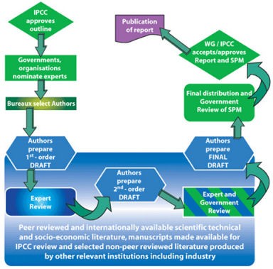
De fait, comme cela est rappelé par Robert Stavin, la publication du rapport (que très peu de politiques ou de journalistes (s'il y en a) ont le courage de lire in extenso) et du Résumé pour les Décideurs (beaucoup plus popularisé dans les médias et dans les milieux politiques), le SPM, n'interviennent qu'après approbation unanime des divers représentants des différents pays de l'ONU. Autant dire que les représentants politiques font tout leur possible pour bloquer la publication d'un rapport qui desservirait (ou ne servirait pas) les intérêts de leur pays.
D'autant plus que nombre de pays en voie de développement sont avides de "dédommagements" de la part des pays dits "riches" et n'ont certainement pas intérêt à ce que le rapport SPM paraisse moins alarmiste. Et ces pays sont numériquement majoritaires.
A noter que les représentants des gouvernements sont déjà intervenus avant la préparation de l'édition finale du rapport comme le montre ce schéma (tiré du site du GIEC). Les politiques interviennent donc avant et après la rédaction de la version finale du rapport qui est ainsi solidement encadré par les représentants gouvernementaux des différents pays. La lettre de Robert Stavin que l'on ne peut guère accuser de tiédeur vis à vis du GIEC, illustre à merveille les errements auxquels peut aboutir l'interférence des politiques dans un processus scientifique.
Il est sans doute difficile de concevoir un processus dit "scientifique", plus politisé que celui du GIEC, illustré ci-contre.
Pourtant, certain éminent politique francophone a récemment cité le GIEC comme un exemple à suivre et proposé de généraliser ce type de structure à d'autres activités scientifiques._______________________________________________________________________________________________________
2) La chasse aux sorcières. La censure et le "McCarthysme climatique" évoqué par Bengtsson (ci-dessous) continue ...
A) Le Professeur Caleb Rossiter (photo ci-contre) :
Rossiter qui est un mathématicien-statisticien universitaire est aussi un homme de conviction et fervent acteur de causes humanitaires en faveur des contrées en voie de développement dont l'Afrique (voir son CV). Pourtant, Rossiter a été récemment évincé de l'ONG progressiste à laquelle il participait depuis des décennies, pour avoir publié un article dans le Wall Street Journal intitulé "Nous sacrifions l'Afrique au nom du changement climatique. Les politiques des pays de l'Ouest semblent plus intéressés par le niveau du dioxyde de carbone que par l'espérance de vie."
Cet article, jugé sans doute par trop "déviant" par rapport à la doxa de son organisation mère, dans lequel Rossiter professe ses doutes sur les théories en vigueur du changement climatique et où il défend le droit à l'usage des énergies fossiles par les africains lui a valu une éviction immédiate de l'organisation humanitaire, progressiste et environnementale, l'Institute for Policy Studies, avec laquelle il travaillait depuis des années. Caleb Rossiter s'est alors confié lors de plusieurs interventions ou interviews comme celui dont je traduis quelques paragraphes significatifs ci-dessous.
Pour la petite histoire, il faut savoir que Caleb Rossiter raconte qu'en tant que professeur au département de Mathématiques et de Statistiques à l'Université Américaine de Washington (DC)) a donné comme sujet de travail à ses étudiants, à titre d'exercice d'application de ses enseignements, l'analyse des corrélations des variations temporelles de la concentration du CO2 et de la température. Ce faisant, ses étudiants ont constaté, comme beaucoup d'autres avant et après eux, que les variations de température ne collaient pas avec les modèles du GIEC en vigueur et qu'il existe des cycles de température (notamment avec une période d'environ 60 ans, comme l'ont trouvé de nombreux autres auteurs). Caleb Rossiter, jusqu'alors convaincu du contraire, a alors planché avec ses élèves sur ce sujet pendant un certain temps. Il a finalement a été convaincu par la validité de leur travail et c'est sans doute ce qui explique les déclarations suivantes :
“Je suis simplement quelqu'un qui a été convaincu que les affirmations de certitude au sujet des causes du réchauffement et au sujet des conséquences du réchauffement ont été terriblement exagérées et ceci de manière irresponsable. [...] "Je ne suis pas quelqu'un qui dit qu'il n'y a pas eu de réchauffement et que cela n'aura pas de conséquences, c'est juste que je ne parviens pas à comprendre pourquoi tant de gens croient que c'est catastrophique pour notre société et pour l'Afrique.
Pour cette conviction - basée sur une décennie de recherches statistiques et d'analyse des données sur le changement climatique - Rossiter a récemment été exclu de son poste de chercheur associé à l'Institute for Policy Studies qui est un groupe de réflexion progressiste de Washington D.C.
Rossiter a publié un article dans The Wall Street Journal intitulé "Le sacrifice de l'Afrique au nom du changement climatique" dans lequel il qualifiait la notion de catastrophe climatique de "science non avérée". Peu après, il a reçu une missive de l'Institut lui indiquant que sa participation était terminée. |
Visiblement, il est plutôt périlleux de professer des doutes, fussent-ils soutenus par des analyses statistiques dont Rossiter est un spécialiste, dans certains milieux "progressistes" US.
Un chercheur d'un institut renommé, le Helmholtz Institute Allemand, nous raconte une bien curieuse histoire, déjà un peu ancienne, au sujet d'un article qu'il avait soumis en 2009, avec des collègues, pour publication à une revue renommée de climatologie US. Ce qui suit nous rappelle les déboires éprouvés et racontés récemment par Lennart Bengtsson.
B) Vladimir Semenov (CV, photo ci-contre ) du Geomar- Helmholtz Institute Kiel Allemagne.
C'est Ben Webster, l'éditeur pour l'environnement du journal britannique "de référence", qui nous raconte, dans The Times (UK) du 8 Juillet 2014, cette histoire passablement inquiétante, sous le titre "Les voix des contestataires sont étouffées par des climatologues." Cet article a été repris dans diverses autres publications anglophones, mais malgré la grande notoriété du Times, il ne semble pas avoir réussi à franchir "the English Channel", la Manche.
Voici une traduction de quelques extraits de cet article de Ben Webster :
"Un travail de recherche qui remettait en question l'exactitude des modèles informatiques utilisés pour prédire le réchauffement climatique a été "censuré" par des climatologues, a-t-il été déclaré hier.
Un des relecteurs scientifiques de l'article a dit qu'une section ne devait pas être publiée parce qu"'elle créerait une confusion inutile au sein de la communauté des climatologues". Un autre a écrit qu'"Il faut que cette discussion toute entière disparaisse".
L'article suggérait que les modèles informatiques utilisés par le GIEC de l'ONU étaient erronés ce qui conduisait à une exagération de l'influence humaine sur le climat et à une sous-estimation de l'impact de la variabilité naturelle.
Ces découvertes pourraient avoir de profondes implications. Si elle sont exactes, ceci voudrait dire que les gaz à effet de serre ont moins d'impact que le GIEC ne l'a prédit et que le risque d'un réchauffement global catastrophique a été exagéré.
Cependant, les questions soulevées à propos des modèles ont été retirées de l'article avant que celui-ci soit publié en 2010 dans le American Meteorological Society’s Journal of Climate. L'article a été soumis en Juillet 2009 alors que beaucoup de climatologues poussaient les dirigeants de la planète à trouver un accord pour limiter les émissions lors du sommet de Copenhague sur le changement climatique en Décembre de cette année-là.
Vladimir Semenov qui est un climatologue de l'Institut Geomar à Kiel en Allemagne a dit que les questions que lui et dix autres de ses collègues avaient posées dans la version originale de leur article étaient valides et que leur élimination était "une sorte de censure"..
Il s'est décidé à en parler ouvertement après avoir constaté qu'un de ses anciens collègues, le Professeur Lennart Bengtsson, avait été vilipendé pour avoir remis en question les prédictions du GIEC sur le réchauffement climatique.
[...]
Le Dr Semenov a déclaré que certains semblaient s'efforcer de supprimer des suggestions que le climat était moins sensible aux augmentations d'émissions (NdT de CO2) que le GIEC l'avait affirmé. (NdT : A noter que c'est assez exactement ce que suggérait l'article de Bengtsson et al. il y a peu, soit quelques 5 ans plus tard, et qui a carrément été refusé).
“Si vous dites qu'il y a quelques indications que la sensibilité est erronée, ceci brise le socle sur lequel tout l'édifice repose." dit-il (NdT : Semenov) "Le public peut douter de l'ensemble des résultats."
Le Dr Semenov a déclaré que les relecteurs qui ont critiqué les résultats étaient techniquement corrects parce que leurs remarques n'étaient pas explicitement basés sur ses résultats." Cependant, dit-il : " Nous avions le droit d'en discuter...Si votre opinion sort du consensus général alors vous avez plus de problèmes pour publier vos résultats."
Un troisième relecteur était beaucoup plus en faveur de l'article dont il dit que la suggestion "très provocante" que les modèles étaient erronés, était "si intéressante qu'il était nécessaire d'en discuter plus en profondeur".
Cependant, presque tout le paragraphe a été supprimé tout comme la conclusion qui disait que "la sensibilité moyenne des modèles du GIEC est peut-être trop forte."
Le journal a choisi de ne publier que la phrase d'ouverture " Nous voudrions insister sur le fait que cette étude ne remet pas en question l'existence d'une tendance de réchauffement anthropique à long terme durant le XXe siècle. " |
La dernière petite phrase que la revue à consenti à publier à l'exclusion des autres est typique de ce que Richard Lindzen avait nommé "le petite phrase magique" qui est le sésame permettant d'obtenir l'autorisation de publier dans ce genre de revue. Mais, dans cette "opération" la discussion plutôt dérangeante pour "la cause", soumise par les auteurs, a été totalement éliminée.
Comme on le voit, dans cet exemple comme dans d'autres, il s'agit d'un "consensus" de la "communauté des climatologues" obtenu à bon compte.
Dans les autres domaines de la science, on publie ce que l'on pense exact et qui ne souffre pas d'erreurs flagrantes détectées par les relecteurs. Si d'autres ne sont pas d'accord, la discussion s'engage. C'est comme cela que la science progresse et a toujours progressé.
_______________________________________________________________________________________________________________________________
3) Complément : Submersion des îles coralliennes : Mise à jour dans la revue Science.
L'antienne, maintes fois évoquée dans les médias alarmistes, dans quelques revues orientées et, même, par la Banque Mondiale, de l'engloutissement futur affirmé comme "inéluctable" des îlots coralliens, a du plomb dans l'aile.
Dans un article récent intitulé "Le réchauffement pourrait ne pas submerger les îles", la "revue de référence" Science dont on connaît pourtant les orientations alarmistes, a (enfin) pris du recul sur cette question en se basant notamment sur les travaux les plus récents de Paul Kench et de ces collègues dont je vous avais déjà donné un aperçu dans le billet, rédigé en août 2010 et intitulé " Les îlots coralliens du Pacifique ne sont pas submergés par la hausse du niveau des océans. En réalité, ils "repoussent" quand l'eau monte."
En effet, dans un article récent publié au Geophys. Research Letters, Paul Kench et ses collègues viennent de lever une objection mise en avant par les alarmistes qui soutenaient l'idée que si les îlots coralliens se sont certes adaptés aux variations du niveau des océans au cours des millénaires passés, ils ne pourront pas suivre le rythme d'une montée rapide du niveau marin ou de tempêtes brutales.
Le mécanisme démontré par Kench et al est, a priori, assez contre-intuitif : Lors des élévations brutales du niveau des mers (comme, par exemple, durant les grandes marées dues aux El Niños), les vagues engendrées à proximité des côtes de ces îlots coralliens, tendent, non pas à éroder les côtes comme tout le monde le pense, mais, au contraire, à faire monter le niveau des terres en y apportant quantité de sédiments, notamment du sable, qui se déposent à la surface des parties temporellement submergées. "Kench note que les récifs coralliens peuvent croître de 10 à 15mm par an - c'est à dire plus rapidement que la hausse des océans qui est attendue à la fin de ce siècle" rapporte l'article de Science. "Aussi longtemps que les coraux sont en bonne santé et gênèrent un approvisionnement abondant en sable, il n'y a pas de raison qu'une île corallienne ne puisse pas croître et continuer à le faire", dit Paul Kench.
Note : Ceci ne suprendra pas les physiciens qui sont au fait des problèmes "d'instabilité de surface". C'est pour une raison similaire que, planté dans une zone plate et désertique soumise aux vents chargés de particules de silice, un objet proéminent servira d'ensemencement pour la création d'une dune par un processus d'accrétion.
Il s'agit du même mécanisme qui gère notamment la formation des "moutons" de poussière sous les lits peu visités par l'aspirateur. Ainsi, un grain de poussière qui a accrété (capturé) un deuxième grain de poussière augmente la probabilité d'une capture ultérieure d'un troisième grain de poussière. Au fur et à mesure que la taille du "mouton" augmente son efficacité (sa section efficace de capture) pour accréter d'autres grains de poussière, augmente. C'est un mécanisme divergent typique d'une instabilité lequel est en général limité par l'érosion. Pour ce qui est des îlots coralliens, Paul Kench démontre le mécanisme d'accrétion (ou de dépot) l'emporte sur le mécanisme d'érosion.
___________________________________________________________________________________________________________________________
Enfin, un grand merci aux nombreu(ses)x lecteurs(trices) qui se sont alarmé(e)s du "hiatus" (ou de "la pause") prolongé dans mes billets durant la période estivale écoulée et m'ont écrit pour me demander de mes nouvelles. Certains envisageaient la possibilité d'ennuis de santé, d'autres que j'aurais pu être soumis à des persécutions style Bengtsson (!) etc.
En réalité, rien de tout ça. j'ai tout simplement été très occupé durant cet été par diverses activités qui m'ont le plus souvent tenu éloigné de mon clavier (et parfois d'internet) sans toutefois parvenir à m'empêcher de suivre attentivement l'actualité climatique...
Donc, tout va bien en ce qui me concerne, et le cours normal de mes billets va reprendre comme auparavant, à l'approche de l'automne et de l'hiver.
Dear friends, stay tuned !
|
24 Mai 2014 - Dossier : "L'affaire Bengtsson"
1) Introduction :
J'ai déjà eu, à plusieurs reprises, et notamment dans le billet précédent, l'occasion de citer les propos du Professeur suédois Lennart Bengtsson. Ce chercheur éminent qui est, sans conteste, l'un des plus expérimentés de son domaine, a consacré la plus grande partie de son activité de recherche à la modélisation numérique de la météorologie et du climat. Il est particulièrement bien placé pour porter des jugements étayés sur la situation actuelle de la science climatique qui comme chacun sait repose essentiellement sur des projections/scénarios générés par des programmes d'ordinateurs.
Les propos récents et actuels de Lennart Bengtsson que j'ai rapportés dans ces pages, pourtant exprimés dans le langage mesuré propre aux scientifiques, se révèlent particulièrement critiques et destructeurs dans le contexte actuel du fameux "consensus" qui est l'argument d'autorité le plus souvent utilisé par la classe médiatico-politique. Dans ces conditions, les déclarations de Bengtsson ne pouvaient que déplaire à ceux, nombreux, qui ont investi leur crédibilité, leur réussite professionnelle et parfois leurs investissements, dans le pessimisme climatique avec l'appui et le soutien de la quasi-totalité de l'establishment politique.
Venant d'une personnalité de ce statut qui faisait partie intégrante et travaillait au coeur même de l'establishment climatique, ceci ne pouvait être considéré par certains que comme une trahison. Dès lors, les critiques, les menaces, le dénigrement systématique, le harcèlement et les pressions exercées sur Bengtsson n'ont pas manqué comme d'ailleurs cela a été le cas pour la plupart des collègues scientifiques qui l'ont précédé dans cette voie, tels que Lindzen, Christy, Spencer, Curry, Vahrenholt, Pielke et beaucoup d'autres, dans un passé récent. Jusqu'à présent, ces agissements étaient restés plus ou moins confinés dans le microcosme climatique et n'avaient que peu ou pas touché le grand public.
Cependant, cette fois-ci, les limites du supportable semblent avoir été franchies. La grande presse (US-anglo-germanophone) s'est faite, en cette occasion, l'écho des pratiques délétères exercées par ses propres collègues à l'encontre de Lennart Bengtsson. Certains des comportements bien connus des connaisseurs mais ignorés du grand public ont percé le "plafond de verre" et des journalistes en vue s'en sont émus d'autant plus que la personnalité de la victime, âgée et méritante, attire plutôt la sympathie.
C'est ainsi qu'a commencé ce que beaucoup ont appelé "l'affaire Bengtsson".
En réalité, l'"affaire" à laquelle est consacrée ce dossier s'est déroulée en deux épisodes successifs, aussi inquiétants l'un que l'autre, ce qui a amplifié le phénomène par une sorte d'"effet réplique".
Les réactions des uns et des autres, plus ou moins directement impactés
dans le "scandale" ont été intéressantes comme vous pourrez en juger.
En guise de préambule, je rappelle ici quelques données documentaires sur le professeur Bengtsson :
Le Professeur Suédois Lennart Bengtsson a été le Directeur de la Recherche du European Centre for Medium-Range Weather Forecasts de 1975 à 1981, puis Directeur, jusqu'en 1990 de l'Institut Max Planck pour la Météorologie à Hambourg. Toujours actif à 79 ans, il est à présent chercheur invité à l'Environmental Systems Science Centre de l'Université de Reading (UK). Il continue de publier régulièrement des articles dans les revues scientifiques comme on peut le constater en visitant son site à l'Université de Reading (UK). Il est actuellement l'auteur ou coauteur de 238 publications, ce qui est considérable même après 51 ans de carrière.
Quelques récompenses attribuées à Lennart Bengtsson :
2007 Rossby Prize 2007 by the Swedish Geophysical Society (SGS)
2007 Elected Honorary Member of the American Meteorological Society (AMS)
2006 International Meteorological Organization (IMO) Prize of the World Meteorological Organization (WMO)
2005 Descartes Research Prize
1999 Fellow of American Meteorological Society
1998 Umweltpreis 1998 der Deutschen Bundesstiftung Umwelt
1998 Member of the Finnish Academy of Science
1996 Milutin Milancovic medal by the European Geophysical Society
1995 Member of the Nordrhein-Westfälischen Wissenschaftsakademie
1993 Member of the Swedish Academy of Science
1991 Honorary Member of the Swedish Meteorological Society
1990 Doctor honoris causa, University of Stockholm
1990 Förderpreis and the Golden Rosette for European Science by the Körberstiftung, Hamburg
1989 Member of Academia Europea
1986 Julius von Hann´s Gold Medal by the Austrian Meteorological Society |
2) La lettre de démission de Bengtsson :
En tant qu'éminent climatologue de l'Académie des Sciences suédoise, Lennart Bengtsson est réputé avoir largement déterminé l'orientation (mainstream) de son pays en matière de politique vis à vis du climat. En tant que modélisateur, il était, il y a quelques années encore, parfaitement dans la ligne du GIEC. Il apparaît, comme il le déclare lui-même que ses points de vue sur la science climatique ont évolué et divergé de ceux de l'establishment du GIEC à la mesure des progrès réalisés dans les observations qui, peu à peu, ont mis en évidence la divergence qui existe entre les modèles et la réalité. Les citations que j'ai relevées dans le billet précédent et dans quelques autres, reflètent parfaitement le recul, relativement récent, pris par Bengtsson par rapport à ses collègues de l'establishment. Ainsi, j'avais rapporté ces phrases de Bengtsson qui expliquent, en grande partie, sa démarche intellectuelle :
"En d'autres termes, le réchauffement climatique n'a pas été un problème sérieux jusqu'à maintenant si nous nous fions aux observations. Cela ne devient un problème que si nous nous basons sur les simulations numériques du climat par les ordinateurs.[...]Mais comme il n'y a aucun moyen de s'assurer de leur validité, les prévisions numériques reposent plus sur de la croyance que sur des faits. Le GIEC a publié l'opinion de ses experts il y a quelques mois et a présenté ces dernières sous la forme de probabilités. Tant que les résultats ne peuvent pas être étayés par des modèles dûment validés celles-ci donnent l'impression trompeuse d'être fiables." |
Venant d'un expert de la simulation sur ordinateur comme Bengtsson qui connaît parfaitement la fragilité intrinsèque des modélisations numériques dans ce genre de problème particulièrement complexes, on imagine aisément que ces déclarations n'ont pas dû soulever l'enthousiasme (c'est un euphémisme), chez les nombreux supporters du GIEC ainsi qu'auprès des rédacteurs des rapports de cet organisme. Un expert renommé jetait le doute sur les modélisations climatiques qui, à défaut d'observations concordantes, constituent le fer de lance des arguments défendus par le GIEC.
On ne pouvait pas faire pire, pensaient, sans aucun doute, les émules du GIEC de l'ONU. C'était une attaque frontale de la raison même de l'existence de l'alarmisme climatique sur laquelle reposent les politiques énergétiques d'une partie des gouvernements de la planète (dont la France).
Pourtant, la personnalité de l'éminent Professeur Bengtsson forçait quand même au respect et les critiques (acerbes) restaient limitées au petit cercle des initiés.
C'est dans ce contexte, déjà tendu, que la décision récente (le 1er Mai) de Lennart Bengtsson de rejoindre le GWPF (considéré par la plupart des supporters-participants du GIEC comme le grand satan) a fait l'effet d'une bombe.
Mais, qu'est-ce exactement que le GWPF ?
Le GWPF (Global Warming Policy Foundation, la fondation pour la politique du réchauffement climatique) est ce que l'on appelle dans les pays anglo-saxons un "think tank", c'est à dire un groupe de réflexion. C'est une structure extrêmement courante dans les pays anglophones. Ce groupe de réflexion a été fondé en 2009 par Lord Lawson (ancien ministre des finances britannique) et le Dr. B. Peiser qui est à présent chargé de la communication. Le GWPF se consacre aussi bien à la science du réchauffement climatique qu'à ses conséquences (éventuelles) économiques et à son traitement politique. Le GWPF explique son état d'esprit et sa mission dans cette présentation. En bref, le GWPF a été créé dans la perspective d'ouvrir un débat qui, selon lui, fait défaut, aussi bien sur le plan scientifique qu'économique ou politique ce qui le place, notamment, en opposition directe avec les tenants du GIEC qui affirment que la science est comprise.
Le GWPF prétend à la neutralité aussi bien scientifique que politique. C'est ainsi que son Conseil d'Administration de 8 membres inclut un membre du Labour et un(e) autre du Lib. Dem. à côté de personnalités conservatrices ou indépendantes.
Le conseil scientifique du GWPF regroupe 26 personnalités du monde scientifique et de l'économie ainsi que du secteur journalistique dont plusieurs sont bien connues des lecteurs de PU. Parmi les scientifiques, on retrouve, entre autres, Richard Lindzen, Freeman Dyson, Henrik Svensmark, Nir Shaviv, Vincent Courtillot, William Happer, Ross McKittrick, Paul Reiter, Robert Carter et Ian Plimer. Le président de ce conseil est, actuellement, le Prof. David Henderson, un économiste et statisticien éminent qui a été notamment le directeur du Département de l'Organisation pour la Coopération et le Développement de l'OCDE. Comme on le sait, tous ces scientifiques et le professeur Henderson lui-même, professent de grands doutes quand au sérieux des rapports du GIEC et de l'alerte climatique.
Lennart Bengtsson avait donc accepté de rejoindre le conseil scientifique du GWPF pour travailler aux côtés des personnalités mentionnées ci-dessus (pour lesquelles il a de l'estime, dit-il), ce qui a immédiatement déclenché une énergique levée de boucliers de la part de ses collègues supporters du GIEC. On ignore la nature, les noms des auteurs et le contenu exacts des pressions qui se sont exercées sur Lennart Bengtsson à cette occasion mais la lettre qu'il a adressée, le 14 Mai, soit deux semaines après son adhésion, au responsable actuel du GWPF, le Professeur Henderson, a ému et soulevé l'indignation de la plupart de ceux qui en ont eu connaissance.
Cher Professeur Henderson,
J'ai été soumis à une énorme pression de la part de mes pairs durant ces derniers jours et ceci venait du monde entier au point que c'est devenu pratiquement insupportable pour moi. Si cela continue je serai incapable de poursuivre mon travail habituel et je commencerai même à m'inquiéter pour ma santé et ma sécurité. De ce fait, je ne vois aucune autre porte de sortie que de démissionner du GWPF. Je ne m'attendais pas à subir une telle pression à l'échelle de la planète, de la part d'une communauté dont j'ai été proche tout au long de ma carrière. Des collègues me privent de leur soutien, d'autres retirent leurs noms de la liste de mes coauteurs etc.
Je ne vois aucune limite ni aucune fin à ce qui va arriver. C'est une situation qui me rappelle l'époque de McCarthy. Je ne me serais jamais attendu à quelque chose de semblable de la part d'une communauté autrefois aussi pacifique que l'était la météorologie. Apparemment, les choses ont bien changé ces dernières années.
Dans ces conditions, je serai incapable de contribuer de manière positive au travail du GWPF et, en conséquence, je crois qu'il est préférable pour moi de revenir sur ma décision de rejoindre le conseil et ceci dès que possible.
Avec mes meilleurs sentiments,
Lennart Bengtsson |
Et de fait, qu'un éminent professeur de 79 ans, mondialement connu, particulièrement méritant, bénéficiant de l'estime générale et qui a consacré son existence à la recherche en météorologie et climatologie, déclare subir des pressions "pratiquement insupportables" et en arrive à craindre "pour sa santé et sa sécurité" du fait du harcèlement (à la McCarthy, dit-il) de la part de ses propres collègues pose quand même quelques problèmes quand à la déontologie du microcosme des climatologues.
Comme on peut s'y attendre, les réactions ne se sont pas faites attendre. Elles ont été nombreuses et énergiques. Elles se poursuivent encore à l'heure où j'écris ces lignes. En voici quelques-unes. D'autres références, notamment journalistiques, seront indiquées à la fin de ce billet.
3) Quelques réactions à "l'affaire Bengtsson":
Le Times de Londres (UK) (Ben Webster,15 Mai 2014) titre :
"Une "chasse aux sorcières" force un scientifique à la démission" .
| "Un climatologue renommé a démissionné du conseil scientifique d'un groupe de réflexion après avoir été soumis à ce qu'il a décrit comme des pressions "du style McCarthy" de la part de certains de ses collègues. Le Professeur Lennart Bengtsson, chercheur invité à l'Université de Reading, a déclaré que les pressions étaient si intenses qu'il serait incapable de continuer à travailler et qu'il craignait pour sa santé et sa sécurité à moins qu'il ne renonce à participer au conseil scientifique de la la fondation GWPF. Il a déclaré que les pressions venaient essentiellement de climatologues US, y compris de la part d'un d'entre eux employé par le gouvernement US qui l'avait menacé de retirer son nom en tant que coauteur d'un article à venir à cause de son lien avec la fondation." |
National Review Online (US), Rupert Darwall, 15 Mai 2014. Titre : "La science comme du McCarthysme".
| La science régresse si elle devient intolérante aux critiques. Au début de son règne, la reine Elizabeth I d'Angleterre avait proféré des paroles de tolérance à une époque de luttes religieuses en déclarant qu'elle n'avait aucunement l'intention d'épier l'âme de ses sujets. A la différence de la religion, la science n'est pas une affaire de coeur ou de croyance. Elle n'existe que par ce qui peut être démontré. En persécutant un de leurs vieux collègues qui avait avancé un pied en dehors de la ligne et en forçant les scientifiques à être soumis à un test sur leur foi, les climatologues du XXIe siècle se sont montrés moins tolérants qu'un monarque du XVIe siècle. Il y a quelque chose de pourri dans la situation actuelle de la science climatique." |
Professeur David G. Gee, un collègue suédois à l'Université d'Uppsala, 15 Mai 2014
J'ai reçu votre lettre avec stupeur, désarroi et une grande sympathie. La pression qui est exercée sur vous par la communauté des climatologues confirme les pires aspects d'une science politisée. J'ai moi-même été réprimandé pour m'être opposé à la cause climatique et son dévouement aveugle aux ambitions politiques. Ceci doit être révélé, au plan global. Merci d'avoir montré tant de courage. Espérons qu'il y a d'autres personnes plus honnêtes dans le monde de la climatologie que ce que l'on voit en ce moment." |
Daily Mail (UK), Wills Robinson,15 Mai 2014. Titre : "Un climatologue déclare qu'il a été forcé de démissionner d'un nouveau poste dans un style chasse aux sorcières à la "McCarthy" par des collègues du monde entier."
| "Un climatologue mondialement connu a été contraint de démissionner d'un groupe de réflexion après avoir été soumis à des pressions du style "McCarthy" de la part de scientifiques du monde entier. Le Professeur Lennart Bengtsson, âgé de 79 ans, est un scientifique de l'Université de Reading. Il a quitté la Fondation Pour la Politique sur le Réchauffement Climatique bien connue, à cause de menaces dont il dit qu'elles "sont pratiquement insupportables" a déclaré le Dr. Benny Peiser, directeur du GWPF au Mail Online. "Cette annonce a été accueillie avec un grand étonnement et une vague de colère. Cela montre à l'évidence qu'il existe une inquiétude grandissante parmi les observateurs intéressés que l'intolérance qui règne au sein de la communauté des climatologues fragilise les déclarations des scientifiques. Ceci constitue un scandale qui se retournera contre les scientifiques si leur communauté ne se mobilise pas pour venir à son secours. " |
Judith Curry, Climate Etc, 14 Mai 2014
Judith Curry reproduit les échanges de courriers entre le GWPF et Bengtsson suite à la démission de ce dernier. Elle conclut :
| "Je regrette vivement que n'importe quel scientifique mais tout particulièrement un scientifique aussi éminent que Bengtsson ait eu à subir de telles attaques. La semaine dernière nous avons assisté à de nombreuses et enrichissantes déclarations faites par Bengtsson au sujet de la situation de la science climatique. Il en résulte que la politique, la science et la société en ont été les bénéficiaires. Nous avons aussi assisté à un répugnant étalage de McCarthysme climatique de la part de climatologues, lequel a le potentiel de faire autant de mal à la science climatique que l'avaient fait les emails du Climategate. Nous avons observé que le GWPF a géré cette situation avec maturité et avec dignité." |
Par ailleurs, Judith Curry décrit les vexations et humiliations subies par ceux qui ont eu la malencontreuse idée de s'écarter du "consensus" de la "communauté", ce qu'elle fait depuis quelques années, notamment en évoquant constamment les grandes incertitudes qui affectent la climatologie.Voici ce qu'elle a écrit dans son blog, récemment, le 16 Mai 2014.
“Ainsi qu'en est-il de l'impact sur un scientifique de ce qui est appelé le "McCarthysme climatique"?
Comme résultat du dénigrement à mon encontre par (Joe) Romm, par (Michael) Mann et d'autres, je suis écartée de toute possibilité d'obtenir des postes administratifs dans les universités et de situations de responsabilité dans les sociétés professionnelles. Ma candidature est systématiquement écartée de toutes les récompenses attribuées par les sociétés professionnelles, un grand nombre de collègues ne collaboreront pas avec moi et quiconque voudrait m'inviter comme orateur principal doit se justifier par rapport à toute les con...ries que vous pourrez trouver sur le WEB si vous googlez "Judy Curry"." |
En effet. Je confirme. Visiblement, Judith Curry sait de quoi elle parle.
Lord Nigel Lawson, Standpoint Magazine Mai 2014
Lawson est l'un des deux fondateurs du GWPF.
| Il y a quelque chose d'étrange quant au débat sur le réchauffement climatique - ou le débat sur le changement climatique comme nous sommes supposés l'appeler maintenant, du fait, qu'à l'heure actuelle, le réchauffement climatique s'est arrêté. Je n'ai jamais reculé devant les controverses, ni par exemple en tant que Chancelier (NdT : de l'échiquier, ministre des finances) ni ne me suis jamais inquiété d'être impopulaire si je pensais que ce que je disais et faisais servait l'intérêt public. Mais, jamais dans ma vie, je n'avais subi autant d'extrême hostilité envers ma personne, autant de vitupération et de calomnies dont moi-même - ainsi que les autres contestataires, bien sûr - avons été l'objet du fait de nos points de vue sur le réchauffement climatique et la politique qui en découle. |
Mike Hulme a été (2000-2007) le Directeur-Fondateur du Centre de Recherche Tyndall du Royaume Uni. Il a été très actif dans les débuts du GIEC. Hulme est très loin d'être un climato-sceptique. Pourtant, entre autres critiques, il avait sévèrement pointé du doigt "l'esprit tribal" de ses collègues mis en lumière par les courriels du Climategate.
Voici quelques déclarations de Mike Hulme au sujet de "l'affaire Bengtsson" (rapportés par le Times UK, Ben Webster, 17 mai, cité aussi dans The Telegraph UK du 16 mai):
"Les climatologues qui diffament un collègue pour avoir apporté son concours au conseil scientifique d'un groupe de réflexion sont "aveugles de leurs propres biais", selon un ancien membre du conseil de l'ONU sur le changement climatique, Mike Hulme, professeur sur le climat et la culture au King's College de Londres. Hulme a condamné ses collègues climatologues pour avoir "persécuté" Lennart Bengtsson et il avertit que la science climatique est devenue trop politisée. Il a condamné les climatologues qui "croient que c'est leur rôle de prononcer des jugements publics quant à savoir si un collègue scientifique devrait apporter sa contribution à des organisations politiques, publiques ou faisant campagne, et d'exercer des persécutions sur ce scientifique jusqu'à ce qu'il "rentre dans le rang"..."Cet épisode nous en apprend beaucoup sur la profonde politisation actuelle de la science et aussi sur le fait que certains scientifiques demeurent aveuglés par leurs propres orientations." |
Steve McIntyre (l'auteur de l'analyse destructrice de la fameuse "crosse de hockey") titre "L'épuration de Lennart Bengtsson".
Ceci est encore le fait d'une conduite honteuse de la part de la "communauté" des climatologues.
D'un point de vue général, il me semble que si le changement climatique est un problème aussi sérieux que le croit la "communauté" des climatologues, alors celui-ci exigera de prendre des mesures qui requièrent un engagement de la part de toutes les branches de notre société. La plupart des "sceptiques" ne sont pas de suppôts des frères Koch (NdT : Une famille de milliardaires qui sont réputés soutenir les climato-sceptiques aux USA) mais ce sont des gens qui n'ont pas été convaincus jusqu'à présent que le problème est aussi sérieux que ce qui est leur est présenté et que les politiques qui sont prescrites (le vent et le solaire tout particulièrement) représentent une forme quelconque d'assurance contre les risques. Ce sont ces gens-là que la "communauté" climatique devrait essayer de persuader.
Le projet de la participation de Bengtsson au GWPF me semblait être une sorte de main tendue aux sceptiques rationnels, ce dont la "communauté" aurait dû se réjouir.
Au lieu de cela, la "communauté" a lancé une fatwa. C'est exactement le genre d'action et d'attitude qui ne peuvent qu'engendrer le mépris de la part de la société au sens large, envers la "communauté". |
Dr. Roy Spencer de l'UAH.
Le harcèlement de Lennart Bengtsson par des collègues n'est que le dernier exemple du comportement déplorable des climatologues qui ont passé un contrat avec le diable. Ils ont troqué leurs âmes de scientifiques contre des contrats de recherche, du prestige et un accès facile aux revues scientifiques pour publier leurs articles.
Je prédis que l'histoire les traitera sans indulgence et que la réputation de tous les climatologues pâtira de ces procédés. Dans l'état actuel des choses, le public qui paye nos salaires, est déjà en train de rire à notre sujet.
Certains d'entre nous (Christy, Lindzen, moi-même et d'autres) ont dû subir des années de traitement déloyaux de la part d'une poignée de collègues activistes et gardiens du temple qui ont empêché la publication de nos articles et bloqué nos demandes de crédits pour des raisons les plus futiles. |
...Ce n'est pas tout. L'"affaire Bengtsson" ne s'est pas arrêtée là. Il y a eu un second épisode. Voyez la suite.
4) Un article scientifique de Bengtsson et al. est refusé avec des commentaires de relecteurs pour le moins étonnants :
Perçu comme s'inscrivant dans la lignée de cette "épuration" comme l'appelle Steve McIntyre, un article récent de Bengtsson et de quatre collaborateurs américains et suédois vient d'être rejeté par l'éditeur d'une revue de l'IOP (UK) (Environnment Research Letters).
Cet article mettait en lumière les divergences entre les modèles et les observations relevées notamment à partir des données telles que celles qu'on peut trouver dans le dernier rapport du GIEC (AR5) (comme je l'avais noté dans des billets précédents) et avançait l'idée (comme quelques autres) d'une sensibilité climatique au CO2 nettement plus faible que celle qui est prônée par les rapports du GIEC, ce qui, à l'évidence, rejetterait le "changement climatique anthropique" dans les profondeurs du classement des préoccupations.
Entre autres commentaires négatifs, le rejet de l'article est justifié, par l'un des rapporteurs, de la manière suivante :
| "En résumé, la comparaison simpliste des prédictions tirés de l'AR4, de l'AR5 et de Otto et al, ceci combiné avec les affirmations qu'elles sont incompatibles est moins qu'utile, et de fait, cet article est nuisible car il ouvre la porte à des affirmations exagérément simplistes d'"erreurs" ou encore pire de la part des médias climato-sceptiques. |
Plusieurs médias (anglophones et germanophones) ont réagi à ces assertions, pour le moins surprenantes de la part de relecteurs de revues scientifiques dont le devoir est de se limiter strictement à des considérations scientifiques à l'exclusion de toute considération politique. Ainsi le très connu Times de Londres (qui a démontré 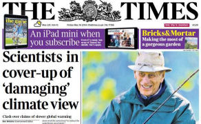dans le passé qu'il était très loin d'être un "média climato-sceptique", bien au contraire) titre, en une, dans son édition du 16 Mai avec une accusation gravissime (pour des scientifiques) : "Des scientifiques dissimulent des points de vue "nuisibles" sur le climat" et explique à ses (très nombreux) lecteurs :
Hier soir, un travail de recherche qui accumule les doutes sur le taux du réchauffement climatique a été délibérément écarté par des scientifiques parce qu'il était "moins qu'utile" pour leur cause. Faisant écho au scandale infamant du "Climategate" à l'Université d'East Anglia [NdT : Voir ce billet], une des revues au top des journaux académiques a rejeté le travail de cinq experts suite à un jugement confidentiel d'un relecteur dénonçant cet article comme "nuisible". Lennart Bengtsson qui est actuellement chercheur invité à l'Université de Reading et l'un des auteurs de cette étude, a déclaré qu'il soupçonnait que l'intolérance vis à vis des vues dissidentes sur la science climatique était à l'origine du refus de publier cet article. [...]
"Le problème que nous rencontrons maintenant dans la communauté scientifique c'est que quelques scientifiques confondent leur rôle en tant que scientifiques avec celui d'activistes du climat." a dit Bengtsson. |
Toujours dans le Times (UK) du 16 Mai, (Lord) Matt Ridley (Ridley est un écrivain-journaliste, membre de la chambre des Lords, de la Royal Society of Literature, de l’Académie britannique de médecine et de l’Académie américaine des Arts et des Sciences) écrit sous le titre :
"Ce harcèlement contre les sceptiques de la science climatique doit cesser.
Depuis quand la diabolisation de ses contradicteurs est-elle devenue une pratique acceptable ?"
| La démission du Professeur Bengtsson montre que le "consensus" revendiqué au sujet du réchauffement climatique alarmant implique la suppression des désaccords au moyen du harcèlement académique. Le Professeur insiste sur le fait qu'il n'y a pas de consensus au sujet de la vitesse et de l'intensité future du réchauffement dû aux gaz à effet de serre et encore moins au sujet des réponses qui peuvent être apportées.
Les preuves de l'existence d'un tel harcèlement sont apparues lors du scandale du "Climategate" en 2009 dans lequel les emails de quelques scientifiques ont révélé qu'ils étaient disposés à menacer et à blackbouler les collègues, les journalistes et les éditeurs qui exprimaient des points de vue sceptiques. Je discute fréquemment avec des scientifiques qui ne sont pas convaincus que le changement climatique soit, même de loin, le problème environnemental le plus urgent pour la planète mais qui ne mettront pas leur tête au dessus du parapet [NdT : Allusion aux soldats dans les tranchées] par peur de représailles pour leurs carrières.
Qu'advient-il du monde académique si la pratique de la diabolisation et du bâillonnement de vos opposants est devenue une pratique acceptable ? Les persécutions exercées à l'encontre du Professeur Bengtsson montrent précisément pourquoi des groupes de réflexion tels que le GWPF sont essentiels. En vérité, la vieille plaisanterie s'est révélée encore plus pertinente : "Quel est l'opposé de diversité ? C'est l'Université." |
Partant du communiqué de l'éditeur de la revue de l'IOP qui endosse la prise de décision du rejet de l'article de Bengtsson et al. en y incluant l'argument politique mentionné ci-dessus, Steve McIntyre, pour sa part, remarque (ironiquement) :
| Ainsi, l'"erreur", selon l'éditeur, semble n'être rien d'autre que l'exigence de Bengtsson que les modèles soient cohérents avec les observations. Sans aucun doute et même en matière de science climatique, une telle exigence ne peut pas être sérieusement considérée comme une "erreur". |
De fait, la lecture du rapport des referees montre que selon ces deniers, Bengtsson et al commettent l'erreur" de comparer les résultats des observations avec les résultats des simulations numériques qui, selon eux, ne sont pas des prédictions ou des prévisions mais des projections ou des scénarios, et donc que cette comparaison serait une "erreur" (selon les referees).
Si on se souvient que Bengtsson a consacré la plus grande partie de sa longue carrière (51 ans !) à la modélisation numérique, il est difficile d'imaginer qu'il ne sait pas exactement de quoi il parle et on imagine aisément qu'il a suffisamment d'expérience pour savoir qu'il est indispensable de comparer les résultats des projections ou des scénarios numériques avec la réalité afin de valider ces derniers, si possible...
Pour sa part, Roy Spencer, climatologue à l'UAH, responsable des mesures satellitaires du même nom, écrit, le 16 mai :
"Les manoeuvres d'intimidation à l'encontre de Lennart Bengtsson ne sont que le dernier exemple du comportement déplorable de climatologues qui ont passé un contrat avec le diable. Ils ont échangés leurs âmes de scientifiques contre des contrats de recherche, du prestige et un accès facile aux revues scientifiques pour publier leurs articles. Je prédis que l'histoire les traitera sans indulgence et qu'en conséquence la réputation des climatologues sera mise à mal. Ce comportement déplorable de la communauté des scientifiques du climat n'a rien de nouveau. Il perdure depuis au moins 20 ans.
Certains d'entre nous (Christy, Lindzen, moi-même et d'autres) ont eu a subir des traitements inéquitables depuis plusieurs années de la part d'une poignée de collègues activistes et gardiens du temple qui ont empêché la publication de nos articles ou l'obtention de contrats de recherche avec les arguments les plus fragiles." |
Le climatologue vétéran Roger Pielke Sr. est cité par le Spiegel Intl online en ces termes :
| "Roger Pielke Sr. de l'Université du Colorado déclare : "Malheureusement, la climatologie est devenue très politisée et les points de vue qui diffèrent de ceux qui contrôlent le processus de rédaction des rapports sont, soit ignorés, soit ridiculisés. Au vu de ma propre expérience, je suis d'accord à 100% avec les déclarations du très éminent Lennart Bengtsson." |
Le professeur Roger Pielke Jr. (le fils du précédent) et également cité dans le Spiegel Intl online. A noter que ni lui, ni son père ne sont des climato-sceptiques.
| Pielke Jr. confirme que la recherche en climatologie est un boulot difficile. "Nous avons affaire à des gens qui jouent dur" dit-il. "A titre personnel, j'ai subi de très fortes pressions professionnelles au cours de ces années. Ceci incluait des menaces contre mon travail, l'ostracisme professionnel, des présentations publiques déformant mes propos et mes points de vue, des tentatives pour m'empêcher de parler en public ainsi que des menaces personnelles dont beaucoup d'entre elles ont été documentées en public." Il ajoute que "Quiconque désirant participer au débat public sur le changement climatique devrait le faire en sachant comment cela se passe de nos jours -- C'est sordide, méchant, destructeur." |
Le Grantham Institute à l'Imperial College de Londres représente le versant opposé au GWPF avec lequel il est en conflit ouvert. Pourtant, dans cette occasion peu reluisante et au vu de la réaction outrée des médias, ses responsables ont choisi de se désolidariser des chercheurs qui ont harcelé Bengtsson et de rappeler quelques grands principes oecuméniques tout en égratignant au passage le GWPF, leur "pire ennemi".
Un responsable du Grantham écrit, sous le titre "La science et une société ouverte":
La démission du Professeur Lennart Bengtsson du conseil scientifique du GWPF a fait l'objet d'une importante couverture médiatique. Elle pose des questions importantes.
Quel que puisse être le point vue de quiconque sur le rôle, les motivations et l'intégrité du GWPF dans cette affaire, il relève du choix personnel des scientifiques de s'associer ou non avec lui afin d'y assurer un rôle de conseil.
Il est regrettable que les orientations politiques au sujet du climat affectent apparemment à ce point l'activité scientifique. Le Grantham Institute de l'Imperial College s'est toujours opposé à ce genre de comportement, pensant que le progrès scientifique exige que la société demeure ouverte. Nous essayons d'échanger avec un large éventail de personnalités, certaines d'entre elles ayant des points de vue radicalement différents sur le changement climatique.
Le déroulement de cette affaire est probablement un effet du "eux ou nous" qui a imprégné le débat sur la science climatique depuis des décennies. Il résulte, en partie de - et en réaction à - une pression externe exercée sur la communauté climatique.
Mais nous devons être clairs, ceci ne constitue en aucun cas une justification. Une pression concertée externe - si c'est ce qui a été fait - sur le Professeur Bengtsson pour le forcer à démissionner de sa fonction au GWPF était une faute et une erreur de jugement.
[...] Cet événement nous montre que le maintien d'une saine séparation entre la science et la politique - de chaque côté du débat politique - constitue un enjeu aussi permanent qu'indispensable.. |
3) Quelques titres récents dans la presse US/UK/Allemande :
Der Spiegel (All) (Axel Bojanowski, 12 mai) : "Débat sur le changement climatique : Un scientifique renommé devient un sceptique". "Le météorologue Lennart Bengtsson a depuis longtemps été considéré comme une tête froide dans le conflit souvent virulent sur le réchauffement climatique. Il défend sa décision de rejoindre une organisation sceptique sur le changement climatique au cours d'un interview."
La légende de l'image ci-contre en en-tête de l'article est une citation de Bengtsson tirée de l'interview : "Je ne crois pas que cela ait du sens que notre génération croit ou prétende qu'elle peut résoudre les problèmes du futur."
The Financial Post (Peter Foster, 15 mai) : "Un scientifique suédois éminent est la dernière victime du McCarthysme climatique."
The Wall Street Journal (US) (James Taranto, 15 Mai) "L'autoritarisme scientifique. La question du scepticisme pour les climatologues."
Taranto conclut : "L'intuition est suffisante pour faire la distinction entre l'autoritarisme et l'autorité authentique."
The Times of London (UK) (Ben Webster, 15 Mai) ""La chasse aux sorcières" contraint un scientifique à la démission."
Investor.com (éditorial, 16 Mai) : "Climategate II et la montée du McCarthysme climatique".
The Telegraph (UK) (Lucy Kinder, 15 Mai): "Un climatologue est forcé de revenir sur ses positions suite à des pressions dignes du McCarthysme"
"Un climatologue suédois déclare qu'il a été soumis à une chasse aux sorcières réminiscente de l'ère McCarthy."
Daily mail (UK) (Ben Spencer, 16 Mai) : "Une étude suggérant que le réchauffement climatique a été exagéré a été rejetée par un journal réputé parce qu'elle était " moins qu'utile" pour la cause climatique, déclare un professeur."
Mail on Sunday (UK) (David Rose, 18 mai) : "Révélation : Comment des zélotes verts ont bâillonné un professeur qui avait osé remettre en question le réchauffement climatique."
- Une étude du Professeur Lennart Bengtsson a été rejetée en étant qualifiée de "nuisible".
- Ceci a déclenché des accusations selon lesquelles des scientifiques censurent des découvertes.
- Le Professeur, âgé de 79 ans, est l'un des plus éminents climatologues au monde.
- La semaine dernière, il a démissionné du conseil scientifique du GWPF.
Times (UK) (Ben Webster, 17 mai): "Des scientifiques condamnés pour biais politique sur le changement climatique".
The Telegraph (UK) (Sarah Knapton, 16 Mai) : "La science du changement climatique est devenue aveugle vis à vis de son biais pour les idées vertes". " La climatologie est devenue aveugle au biais vert ce qui risque de supprimer la recherche qui remet en cause le changement climatique anthropique nous disent des scientifiques."
The Sunday Times (UK) (Rod Liddle, 18 Mai) "Oui, nous sommes condamnés - Si nous traitons les climato-sceptiques comme le feraient des nazis."
Der Spiegel (All) (Axel Bojanowski, 17 Mai)) "L'attaque contre ceux qui ne sont pas d'accord : L'angoisse d'un climatologue face aux pressions de ses pairs."
Forbes (US) (Björn Lomborg, 22 Mai) : "Le McCarthysme en sciences du climat."
National Review Online (US) (John Fund, 23 Mai) : "Il est difficile de vendre le changement climatique" (citation de la lettre de Bengtsson et commentaires)
Spiegel Interntional online (All) (Axel Bojanowski, 23 Mai) : "Un débat houleux : Les climatologues sont-ils forcés de rester dans les clous ?"
"Après avoir rejoint un groupe de lobbying controversé, critique du réchauffement climatique, le météorologiste Lennart Bengtsson déclare qu'il a été rejeté par des collègues, ce qui l'a poussé à la démission. Des scientifiques se plaignent que des pressions pour se conformer aux opinions du consensus sont devenues de sérieux handicaps pour ce domaine de recherche."
Etc.
A ma connaissance, RIEN dans la presse francophone à ce sujet. Il en avait été pratiquement de même lors de l'affaire du Climategate (en 2009) où le débat qui avait soulevé l'intérêt de la presse internationale à l'époque, avait été rapidement glissé sous le tapis par les médias francophones, comme "sans intérêt".
4) Quelques compléments récents :
1) En réponse à une accusation du Guardian à l'encontre de Lindzen et Bengtsson qui ont rejoint les conseils scientifiques de divers groupes de réflexion, Judith Curry donne une liste rapide mais déjà longue, des climatologues mainstream officiellement affiliés à des organisations ou à des groupes de réflexion environnementalistes.
2) Andrew Montford dresse, sur son blog Bishop Hill; une liste de quelques réactions des pro-GIEC à l'annonce de la participation puis de la démission du conseil scientifique du GWPF par Lennart Bengtsson. Les commentaires lus dans les blogs ou dans les médias sociaux vont de l'accusation de sénilité (Andrew Dessler) à celle de William Connelley (un activiste vert qui a longtemps fait la pluie et le beau temps sur tout ce qui touche au climat dans Wikipedia avant d'en être remercié) qui, lui, sans vergogne, n'hésite par à qualifier Lennart Bengtsson de "crybaby", c'est à dire de "pleurnichard". L'IOP (l'Institute of Phyiscs UK) qui exerce la tutelle de la revue ERL donne un point de vue relativement mesuré sur cette affaire tout en renouvelant son credo envers le processus de peer-review qui est pourtant sérieusement remis en cause par cette affaire comme par quelques autres.
3) Enfin, tout récemment, le 21 Mai, Lennart Bengtssson a souhaité publier un texte résumant ses points de vue sur la situation de la science climatique dans un blog suédois (pourtant franchement hostile à sa démarche). Ce texte, publié en version anglaise approuvée par l'auteur, mérite d'être lu. Il est intitulé : "Mes points de vue sur la recherche en climatologie".
On peut y lire notamment (caractères engraissés par PU) :
"Ce qui est encore plus inquiétant c'est la tendance qui consiste à donner au public l'impression que les événements météorologiques deviennent plus extrêmes et que ceci est déjà en cours [NdT : C'est ce que font actuellement le président Obama et son secrétaire d'état John Kerry, entre beaucoup d'autres]. A l'exception d'une possible augmentation des précipitations et d'une possible intensification des ouragans tropicaux qui n'ont pas encore été observés, il n'y a aucune indication de l'augmentation d'événements météorologiques extrêmes dans les simulations des modèles et encore moins dans les observations actuelles. [...]
Ce qui est, peut-être, plus préoccupant encore est la tendance croissante à la pseudo-science dans le domaine de la recherche climatique. On le voit par le biais des publications qui ne publient que des résultats qui vont dans le sens d'une seule hypothèse climatique en s'abstenant de publier les résultats qui s'en écartent. Même le temps extrêmement froid comme celui qui a régné cette année au Nord des USA et au Canada a été considéré comme une conséquence de l'effet de serre.
Si Karl Popper était vivant aujourd'hui, nous aurions certainement dû affronter une féroce critique de ces comportements. Ceci est également démontré par la réticence des journaux scientifiques à publier des résultats qui contredisent les affirmations simplistes sur le climat, telles que celles sur la longue période de ces 17 dernières années qui a connu un réchauffement insignifiant ou nul au dessus des océans et une augmentation de la couverture glacée autour de l'Antarctique. Mes collègues et moi n'avons reçu qu'un accueil mitigé quand nous avons essayé de montrer que les observations indiquent une sensibilité climatique plus faible que celle qui résulte des calculs des modèles. Un tel comportement peut très bien ne pas être intentionnel. Il peut plutôt relever de ce que mon collègue Hans von Storch appelle un effet de "la construction sociale" [...]
Je tiens à insister sur le fait que je suis un adversaire affirmé de la construction sociale des sciences naturelles qui a pris une grande ampleur au cours de ces dernières années. Par exemple, des scientifiques allemands [NdT : Bengtsson fait sans doute allusion aux récentes déclarations de Schellnhuber du PIK qui ont provoqué un tollé en Allemagne] ont tenté de lancer le concept de ce qu'ils appellent "la bonne science" qui consiste à s'assurer que les recherches en sciences de la nature ne seront pas conduites par ce qu'ils considèrent comme de la recherche motivée par une curiosité anti-sociale en poursuivant des objectifs de recherche qui ne seraient pas les "bons"." |
En bref, Bengtsson persiste et signe. Son allusion au concept de "bonne science" possède des relents de sinistre mémoire, tout particulièrement en Allemagne. Il n'est pas surprenant que ce concept qui distingue la "bonne" recherche scientifique effectuée selon des prémisses politiques, sociales ou autres, y ait soulevé un tollé lors des déclarations du climatologue de Potsdam, Schellnhuber qui est toujours conseiller scientifique auprès de Merkel.
5) Conclusion :
Comme on le constate, l'intolérance, les tentatives d'intimidation, les menaces etc. ont littéralement infesté ce (petit) domaine de la science. Pourtant, par définition même, la pratique de la science et, surtout, de la découverte, impliquent, le plus souvent, une démarche nécessairement hérétique par rapport aux acquis et au consensus de l'époque. Hélas, ceci n'est pas vraiment nouveau. L'histoire des sciences et des découvertes n'est qu'une longue litanie des avanies et des vexations subies par des chercheurs novateurs qui ont eu à souffrir et parfois durement, des critiques, des dénigrements ou pire, de la part de leurs collègues de l'Establishment de l'époque. Certains, comme Wegener, sont morts avant que leurs mérites soient reconnus...
Richard Feynmann, un des esprits scientifiques le plus brillants du XXè siècle, avait énoncé quelques principes à propos des certitudes et des doutes en matière de science. Il avait dit :
| Les scientifiques ont une certaine expérience au sujet de l'ignorance, des doutes et des incertitudes et cette expérience est d'une très grande importance, je pense. Quand un scientifique ne connaît pas la réponse à un problème, il est ignorant. Quand il a une intuition sur ce qu'est le résultat, il est incertain. Et quand il est est à peu près sûr de ce que sera le résultat, il a encore des doutes. Nous avons observé qu'il est d'une importance cruciale, qu'afin de progresser, nous devons reconnaître nos ignorances et laisser la place au doute. La connaissance scientifique est une collection d'affirmations qui ont divers degrés de certitude - Il y en a qui sont plutôt incertaines, d'autres presque certaines, mais aucun n'est absolument certaine. |
Sages paroles.
Merci à toutes celles et à tous ceux qui ont eu la patience de suivre ce long dossier qui montre une fois de plus, comme je l'avais déjà écrit et comme cela a été relevé par de nombreux intervenants cités ci-dessus, que la politisation de la science et l'intolérance ont été et demeurent de véritables fléaux pour la science. La science ne peut procéder que par un long enchaînement de débats contradictoires, d'erreurs et de corrections. Y mettre un terme en déclarant que "The science is setlled" (la science est comprise) est une erreur majeure.
La mise en place, par les politiques, de "la machinerie à fabriquer des consensus" qu'est le GIEC traduit une incompréhension fondamentale du fonctionnement même de la recherche et de la découverte.
Lennart Bentgtsson s'est exprimé clairement à ce sujet. Il a dit :
| "Dans sa globalité, le concept même du GIEC est fondamentalement faux" |
J'ajoute que je ne suis vraiment pas fier du comportement de certains de mes collègues de cette discipline et je me demande comment les jeunes chercheurs frais émoulus dans ce domaine de recherche parviennent à supporter, sans broncher, de vivre leur vocation dans une atmosphère aussi oppressante...
Bon courage à eux.
Stay tuned !
|
23 Avril 2014 : Rapports du GIEC : Les seniors sortent de leur réserve. James Lovelock et Lennart Bengtsson parlent ouvertement.
La publication des rapports des groupes II ( Les conséquences prévisibles) et III (Les remèdes potentiels) et notamment celle du "Résumé pour les décideurs" du GIEC a soulevé de vives critiques, notamment de la part d'un certain nombre de scientifiques du domaine ou d'économistes de l'environnement. S'appuyant sur les prévisions/scénarios du groupe I (les causes), ces rapports présentent les mêmes caractéristiques que celles que nous avions notées pour le rapport du groupe I. En bref, des rapports complets sont extrêmement copieux et bien documentés, mais aussi difficiles à lire pour les non-initiés. En réalité, ces rapports complets sont relativement peu alarmistes et plutôt en retrait, de ce point de vue, par rapport aux précédents. Par contre, le "Résumé pour les Décideurs" (SPM) constitue, une fois encore, une véritable caricature du contenu des rapports complets. Il est vrai que les rapports complets sont rédigés par des scientifiques et que l'adoption des "Résumés Pour les Décideurs" (que certains ont rebaptisé "le Résumé par les décideurs") fait intervenir un grand nombre de représentants politiques délégués par chaque nation participant au GIEC...
C'est dans ces circonstances que deux scientifiques chevronnés et renommés, désormais en retraite, ont souhaité faire partager leurs points de vue.
Lennart Bengtsson est un éminent scientifique suédois dont on peut apprécier la très brillante carrière dans ce billet. Alarmé par le développement des perspectives politico-climatiques Bengtsson avait déjà fait connaître son opinion sur le blog de son collègue Hans von Storch comme je l'avais rapporté en Septembre 2013.
Pour sa part, James Lovelock, l'auteur de la thèse dite Gaïa, est un scientifique-auteur d'une multitude d'inventions remarquables. Lovelock a certainement été le principal promoteur de l'alarmisme climatique au Royaume Uni, dès les années 70-80. Depuis lors, confronté aux observations objectives, il a revu ses positions au point de devenir un des critiques les plus acerbes du GIEC, de ses participants et de quelques affirmations plus ou moins médiatiques sur divers autres sujets comme vous allez le voir. Compte tenu de sa notoriété, Lovelock a eu les honneurs d'une interview dans la revue Nature dont voici de larges extraits précédés d'une introduction-présentation de Lovelock par le chroniqueur de cette revue (Philip Ball (9 avril 2014))
1) Réflexions de James Lovelock sur l'héritage de Gaïa, sur le changement climatique, sur Fukushima, Tchernobyl etc.
Un interview publiée dans la revue Nature.
"Réflexions de James Lovelock sur l'héritage de Gaïa
Un scientifique qui participe à une exposition qui s'ouvre aujourd'hui à Londres, s'exprime sur Gaïa, sur le changement climatique et sur la nécessite (ou non) du processus de revue par les pairs.
Une nouvelle exposition au Musée de la Science de Londres a donné l'occasion de voir les archives personnelles des scientifiques qui comptent parmi les plus influents de notre époque : James Lovelock "A la découverte de Lovelock : le scientifique, l'inventeur, le non-conformiste" raconte l'histoire du chercheur britannique dans les domaines de la médecine, des sciences environnementales et de la planète. Elle montre des documents qui remontent aux histoires de son enfance, des griffonnages sur des carnets de laboratoire ainsi que des textes de brevets et des lettres émanant de dignitaires du passé comme l'ancienne premier ministre du Royaume Uni (et chimiste) Margaret Thatcher. On y trouve également plusieurs inventions de Lovelock telles que le détecteur capteur d'électrons qui a permis la mesure des chlorofluorocarbones destructeurs de l'ozone de l'atmosphère dans les années 1970.
Lovelock qui est né en 1919 est surtout connu pour "l'hypothèse Gaïa" qui avançait l'idée que la Terre fonctionne comme un système qui s'auto-régule de manière semblable à un organisme vivant. Cette idée à provoqué une controverse quand Lovelock et le micro-biologiste Lynn Margulis l'ont mise en avant dans les années 1970 mais les scientifiques de l'environnement et de la planète en acceptent à présent les principes de base. En 2006, son livre "La vengeance de Gaïa" prédisait des effets désastreux dus au changement climatique pour les toutes prochaines décennies à venir. Il y écrivait que "Seule une poignée des milliards d'habitants en capacité de procréer qui sont vivants aujourd'hui, survivront."
Cette semaine, Lovelock a parlé à la revue Nature au sujet de sa carrière, de ses prédictions antérieures et de son nouveau livre "Une dure route vers le futur".(recensé la semaine dernière dans Nature). .
- Est-ce que le changement climatique va être moins extrême que vous ne l'aviez pensé auparavant ?
La vengeance de Gaïa dépassait les bornes mais nous étions tous tellement impressionnés par la corrélation parfaite entre la température et le CO2 dans les analyses des carottes de glace [prélevées dans les glaces du Groenland et de l'Antarctique étudiées depuis les années 1980]. Vous auriez pu tracer une ligne droite corrélant la température et le CO2 et c'était tellement tentant pour que tout le monde affirme que "Eh bien, avec la montée du CO2 nous pouvons dire que telle ou telle année, il fera chaud comme ça.". C'était une erreur que nous avons tous commise.
Nous n'aurions pas dû oublier que le système a énormément d'inertie et que nous n'allons pas changer ça très rapidement. La chose que nous avons tous oublié c'est le stockage de la chaleur dans les océans - qui est mille fois plus grande que celle qui est dans l'atmosphère. Vous ne pouvez pas changer ça très rapidement.
Mais, en tant que scientifique indépendant il est beaucoup plus facile de dire que vous vous êtes trompé que si vous faites partie d'un département gouvernemental ou quoi que ce soit d'autre.
- Eh bien alors à quoi vont ressembler les 100 prochaines années ?
Il est impossible de répondre à cette question. Tout ce que je peux dire c'est qu'en aucun cas cela ne sera jamais et d'aucune façon aussi mauvais que ce que prédisent les scénarios les plus pessimistes.
- Etes vous encore pessimiste quand à la perspective de parvenir à une solution politique sur le changement climatique ?
Absolument.
- Dans votre dernier livre, vous vous déclarez partisan de ne pas essayer d'arrêter le changement climatique mais, plutôt, d'effectuer ce que vous appelez une "retraite soutenable". Pourquoi cela ?
Je pense que c'est la meilleure approche. Courir et foncer en avant ressemble beaucoup à une stratégie napoléonienne avant une bataille. Il est beaucoup mieux de réfléchir à la manière dont nous pouvons nous protéger. Si nous voulons vraiment faire quelque chose de bénéfique, nous devrions faire plus d'efforts pour faire de notre planète un lieu convenable pour y vivre dans le futur plutôt que d'essayer de sauver quoi que ce soit dans un futur éloigné. Ceci est particulièrement vrai pour la Grande Bretagne. Nous sommes presque morts de faim pendant la seconde guerre mondiale. Notre production agricole n'a pas augmenté suffisamment pour subvenir aux besoins de la population actuelle. C'est une chose sur laquelle nous devrions porter toute notre attention et non pas chercher à jouer aux devinettes en espérant des jours meilleurs.
- Est-ce que l'énergie nucléaire fera partie du futur malgré le désastre nucléaire de Fukushima au Japon ?
Cette affaire de Fukushima est une plaisanterie. Bon, ce n'est pas une plaisanterie, c'est très sérieux - Mais comment avons-nous pu être trompés par quelque chose comme ça ? Vingt six mille personnes ont été tués par le tremblement de terre de force 9 et par le tsunami [qui a causé la fusion du réacteur] et combien y a-t-il eu de morts avérés qui ont été tués par l'accident nucléaire ? Aucun
[Au sujet du désastre de Tchernobyl, Lovelock écrit dans "Une dure doute vers le futur" : "Les mensonges les plus étonnants ont été proférés et le sont encore et ils sont crus par tout le monde....Malgré au moins trois enquêtes effectuées par des médecins renommés, il n'y a eu aucune augmentation mesurable de la mortalité en Europe de l'Est. "]
Une grande quantité des investissements effectués dans les technologies vertes ont été une gigantesque arnaque même si cela partait de bonnes intentions."
[...] |
La réaction de l'establishment climatique britannique à cette interview de Lovelock publié dans Nature, ne s'est pas fait attendre. En bref, comme on pouvait le prévoir, Lovelock y est accusé de ne pas être d'accord avec les déclarations du rapport AR5 du GIEC...
2) Lennart Bengtsson : Sur la science et la politique du changement climatique
Texte de Lennart Bengtsson publié le 15/04/14 dans un journal suisse à grand tirage, le Neue Zürcher Zeitung.
Il existe une traduction en anglais de Philipp Mueller
Voici une traduction en français de la déclaration de Bengtsson que beaucoup considèrent comme une analyse "raisonnable et prudente" de la situation par un ancien membre éminent du sérail de la climatologie. Les caractères engraissés dans ce texte le sont par l'auteur de PU.
"Nous savons depuis la fin du XIXe siècle que le climat de la Terre est sensible aux gaz à effet de serre présents dans l'atmosphère. Cest à cette époque que le chimiste suédois Svante Arrhénius a montré qu'une augmentation de la teneur en CO2 induirait un réchauffement du climat. De fait, Arrhénius avait peu d'espoir que cela se produise. Par conséquent, les Suédois devraient continuer à souffrir du froid et d'un climat déplorable. Depuis cette époque, beaucoup de choses ont changé. Les émissions annuelles de CO2 ont à présent atteint un niveau qui est environ 20 fois supérieur à celui de 1896. Ceci est à l'origine d'une inquiétude qui s'est répandue dans le monde entier.
Un accroissement du CO2 dans l'atmosphère conduit sans aucun doute à un réchauffement de la surface terrestre. Mais l'amplitude et la vitesse de ce réchauffement sont encore incertaines parce que nous ne pouvons pas encore séparer de manière satisfaisante l'effet des gaz à effet de serre des autres influences climatiques. Bien que le forçage radiatif des gaz à effet de serre (incluant le méthane, les oxydes d'azote et les fluorocarbones) ait augmenté de 2,5 watts/m2 depuis la moitié du XIXe siècle, les observations ne montrent q'un réchauffement modéré de 0,8° Celsius. Ainsi, le réchauffement est nettement plus petit que celui qui a été prédit par la plupart des modèles climatiques. De plus, le réchauffement du siècle dernier n'a pas été uniforme. Des phases de réchauffement manifeste ont été suivies par des périodes sans aucun réchauffement, allant même jusqu'au refroidissement.
La relation complexe qui n'est seulement que partiellement comprise, entre les gaz à effet de serre et le réchauffement climatique conduit à un dilemme politique. Nous ne savons pas quand nous pouvons nous attendre à un réchauffement de 2° Celsius. Le GIEC suppose que la Terre va se réchauffer de 1,5 à 4,5° Celsius en réponse à un doublement de la concentration en CO2. Cependant, ces fortes valeurs de la sensibilité climatique ne sont pas en accord avec les observations. En d'autres termes, le réchauffement climatique n'a pas été un problème sérieux jusqu'à maintenant si nous nous fions aux observations. Cela ne devient un problème que si nous nous basons sur les simulations numériques du climat par les ordinateurs.
Il n'y a pas d'autre choix que de passer par ces simulations sur ordinateur si on veut prédire ce qui va se passer dans le futur. Mais comme il n'y a aucun moyen de s'assurer de leurs validités, les prévisions numériques reposent plus sur de la croyance que sur des faits. Le GIEC a publié l'opinion de ses experts il y a quelques mois et a présenté ces dernières sous la forme de probabilités. Tant que les résultats ne peuvent pas être étayés par des modèles dûment validés celles-ci donnent l'impression trompeuse d'être fiables.
Les états membres de l'Union Européenne poursuivent une stratégie destinée à limiter le risque climatique en réduisant au minimum et le plus rapidement possible, l'usage des carburants fossiles. Beaucoup de citoyens ne veulent pas courir de risque et, de ce fait, sont en faveur de cette politique. De plus, beaucoup de citoyens désirent se débarrasser de l'énergie nucléaire parce qu'elle aussi est perçue comme trop risquée. Eliminer, tout à la fois, l'énergie nucléaire et les carburants fossiles, constitue un énorme défi. Malgré tout, l'Allemagne et la Suisse ont fait le choix d'opérer une telle transition. Poursuivre une politique énergétique aussi radicale et peut-être hasardeuse, en dépit des possibilités économiques, scientifiques et techniques limitées, constitue une entreprise gigantesque. .
Dans ce contexte, on doit considérer deux facteurs. Tout d'abord, une transition énergétique de ce genre ne fera malheureusement que peu baisser les émissions de CO2 de la planète, parce que 90% de ces émissions proviennent de pays situés en dehors de l'Europe. Nombre de ces pays vont probablement augmenter leurs émissions de CO2 dans le futur du fait que leur population augmente et que leur priorité numéro un est d'améliorer le niveau de vie de leurs habitants. La Chine constitue un cas particulier. Ses émissions de CO2 ont plus que doublé durant la dernière décennie et elles sont, maintenant, près de 50% supérieures à celles des USA. Pour diverses raisons il n'y a pas actuellement d'alternative aux fluides fossiles dans les pays en voie de développement. Les besoins en énergie sont très importants dans ces pays. Actuellement, il y a 1,3 milliard de personnes qui n'ont pas accès à l'électricité. Dans le but de réduire rapidement et facilement leurs émissions, les pays de l'OCDE ont exporté quelques-unes de leurs industries très énergivores dans les pays en voie de développement ; ça fait bien dans les statistiques nationales. Par contre, au plan global, cela ne fait pas grande différence car les émissions se produisent tout simplement quelque part ailleurs.
D'autre part, la transition rapide vers les énergies renouvelables a entraîné une augmentation considérable du prix de l'énergie dans de nombreux pays et tout particulièrement en Europe. Ceci a pour conséquence de mettre à mal la compétitivité et de conduire à des délocalisations des industries grandes consommatrices d'énergie vers des pays tels que les USA où le coût de l'énergie à chuté de manière significative du fait de l'utilisation du gaz de schiste.
On ne doit pas être surpris de constater qu'il y a d'autres forces en jeu qui poussent vers un changement rapide. Ceci résulte du fait que dès que des subventions gouvernementales sont impliquées, d'énormes profits deviennent accessibles. Cependant, avant que des changements radicaux et hâtifs puissent être appliqués au système énergétique en vigueur, on doit avoir des preuves solides que le changement climatique est suffisamment préjudiciable. Nous sommes encore loin de posséder de telles preuves. Il serait aberrant de conclure, à la lecture du rapport du GIEC et d'autres rapports, que la science est comprise.
Nous ne savons pas encore quelle est la meilleure solution pour résoudre les problèmes énergétiques de notre planète. Mais beaucoup de choses peuvent se produire pendant les cent prochaines années. Une sensibilité climatique modérée comme celle qui est suggérée par les observations récentes pourrait procurer un espace de respiration d'environ un demi-siècle (mais pas beaucoup plus), si, pendant le même temps, un basculement du charbon vers le gaz naturel se produit. Ceci nous offre l'opportunité d'éviter des investissements inutiles réalisés sous l'emprise de la panique et d'investir de préférence les ressources disponibles dans des programmes de recherche à long terme bien réfléchis. Ces derniers incluent les nouvelles formes d'énergie nucléaire tout comme l'utilisation des déchets nucléaires pour produire de l'énergie."
_________________________________________________________
Lennart Bengtsson était, jusqu'en 1990, le Directeur de l'Institut Max Planck pour la Météorologie à Hambourg. Après son départ en retraite, il a dirigé, entre autres, le Département des Sciences de la Terre de l'Institut International des Sciences de l'Espace à Berne." |
D'autres traductions en français.de cet article de Lennart Bengtsson ont été publiées (Belgacomcloud (h/t skyfall) et Contrepoints)
La climatologue Judith Curry a également cité, (parmi d'autres) de larges extraits des déclarations de ces deux mêmes scientifiques dans un billet intitulé "Changement climatique : ce que nous ne savons pas ", en réponse (ironique) à une déclaration récente de l'AAAS américaine (Association de scientifiques US) qui était intitulée "Changement climatique : ce que nous savons".
En conclusion de son exposé à ce sujet, Judith Curry fait les remarques suivantes :
"Il est réjouissant de constater que des scientifiques renommés et des penseurs "sortent de leur réserve" pour donner leurs points de vue sur la science climatique et sur la manière dont nous devrions y répondre en des termes qui diffèrent des affirmations du GIEC et des interprétations les plus alarmistes.
Il est malheureux que ce comportement semble se limiter à des scientifiques indépendants ou à des retraités ; les fonctionnaires en activité dans de nombreux pays ne le feraient pas (même si leurs convictions personnelles différent de celles du consensus du GIEC) et le même diagnostic semble s'appliquer à la plupart des scientifiques employés par les universités.
C'est une situation très malsaine, en particulier pour les universités." |
On ne saurait mieux dire...
Stay tuned !
|
10 Mars 2014 : Retour vers la variabilité naturelle.
Les lecteurs attentifs se souviendront que j'avais conclu un billet précédent en faisant remarquer que les climatologues proches du GIEC invoqueraient, tôt ou tard, les effets de la variabilité naturelle encore ignorés par les modèles (après avoir longtemps affirmé que la variabilité naturelle, c'est à dire les variations naturelles du climat en l'absence de contribution anthropique, était comprise et correctement prise en compte dans les modélisations).
De fait, nous assistons actuellement à une sorte de retour en arrière du processus de la recherche initié par la mise en place du GIEC qui est maintenant atteint de la "paralysie du paradigme" selon les mots de Judith Curry, vers une analyse plus proche de la méthode scientifique traditionnelle évoquée notamment par le Professeur Bob Carter.
S'agissant de l'analyse de l'influence des émissions anthropiques sur le climat de la planète, la méthode scientifique traditionnelle aurait consisté à rechercher, tout d'abord, l'ensemble des paramètres qui influent, de manière naturelle, sur le climat, c'est à dire en l'absence de forçage anthropique. Ceci aurait permis d'expliquer les causes des importantes variations climatiques des temps passés et notamment, parmi celles-ci, la plus proche de nous, l'intervention du petit âge glaciaire (du XVIIIe au début de XXe siècle) qui est très bien documentée et incontestée. Ceci étant bien compris et modélisé, il aurait alors été possible d'observer et d'analyser les effets de la superposition d'un éventuel forçage anthropique.
Comme le savent les lecteurs(trices) de ce site, ce n'est pas cette méthode qui a été choisie. Le GIEC a été créé avec pour mission d'identifier, d'emblée, les effets anthropiques sur le climat. Cette inversion du processus scientifique traditionnel semble s'être, à présent, retournée contre ses initiateurs.
En effet, les climatologues proches du GIEC ont affirmé, pendant plus de deux décennies que "the science is settled" ("la science est comprise") et qu'ils avaient bien pris en compte l'ensemble des facteurs influençant le climat de la planète. De nos jours, les observations objectives mettent en évidence la divergence croissante entre les modèles et les observations et les climatologues se voient contraints d'effectuer un retour en arrière vers l'analyse des facteurs qui contribuent naturellement aux changements climatiques et qui ont été omis dans les modèles.
Sans aucun doute,
certains penseront que c'est là beaucoup de temps perdu par rapport à ce qui aurait pu et dû être fait depuis le début.
Voici donc des extraits de deux articles parus, tout récemment, dans la revue Nature dont on sait qu'elle n'a jamais hésité à promouvoir les thèses du GIEC au détriment des avis opposés. Il s'agit d'analyses plus globales que celles proposées dans les articles spécialisés. Ces articles ont été rédigés par des contributeurs de la revue. Même s'ils sont loin d'être parfaits, je les ai choisi pour leurs qualités pédagogiques et parce qu'ils sont destinées à un public averti mais non spécialiste. Je donne de très larges extraits du premier article et de brèves citations du second.
Ces deux articles sont naturellement relatifs au plateau (ici souvent appelé "hiatus" - le choix du vocabulaire est signifiant) qui fait allusion au fait que la température moyenne à la surface de la planète ne varie plus de manière significative depuis quelques 16 ou 17 années consécutives, ce qui constitue une divergence considérable par rapport aux modèles du GIEC et ceci en dépit d'une croissance persistante du taux de CO2 atmosphérique durant cette même période.
La littérature scientifique de ces derniers mois a été enrichie d'un nombre importants de publications cherchant un explication rationnelle pour ce "plateau" ou ce "hiatus". Pour l'instant, plusieurs explications ont été avancées et les avis divergent. Chacun défend ses positions sans que l'on parvienne à un consensus.
En francophonie, on vous assure, urbi et orbi que tout va bien, que "la science est solide", que les choses sont claires en matière de climatologie.
Rien n'est plus loin de la vérité, comme vous allez le voir.
1) Kevin Trenberth et la chaleur (toujours) manquante : C'est la faute des oscillations océaniques et, notamment, de la PDO.
L'article de la revue Nature qui suit repose essentiellement sur un article récent de Kevin Trenberth (du NCAR US) qui se pose de graves questions et tente une explication sur la divergence constatée entre les modèles du GIEC et les observations objectives. Son explication est une alternative à quelques autres, totalement différentes, qui viennent d'être publiées par d'autres auteurs. Un débat très animé est en cours. Sans aucun doute, Kevin Trenberth fait partie du Top-ten des climatologues proches du GIEC où son influence a été déterminante.
Nature 505, 276–278 (16 Janvier 2014) doi:10.1038/505276a:
Changement climatique : la problématique de la chaleur manquante.
Voici une traduction presque complète de cet article. Comme à l'accoutumée, les encadrés en couleur différente du fond sont des traductions des textes originaux. Sauf pour les sous-titres, les caractères engraissés dans le corps du texte, le sont par l'auteur de PU.
"Changement climatique : l'affaire de la chaleur manquante
Plongés depuis seize ans dans le "hiatus du réchauffement climatique", les scientifiques reconstituent le puzzle d'une explication.
Le plus grand mystère actuel des sciences du climat a peut-être pris corps, alors qu'il était ignoré jusque là, avec un affaiblissement subtil des vents tropicaux qui soufflent sur l'Océan Pacifique à la fin de l'année 1997. Normalement, ces vents poussent les eaux réchauffées par le soleil vers l'Indonésie. Lorsqu'ils faiblissent, l'eau chaude est reversée vers l'Amérique du Sud, ce qui se traduit par un phénomène connu sous le nom d'El Niño - la température moyenne du globe a atteint une valeur record en 1998 - puis le réchauffement s'est arrêté.
Pendant plusieurs années, les scientifiques ont ignoré la pause au motif des fluctuations du système climatique : les variations naturelles de l'atmosphère, des océans et de la biosphère qui pilotent des épisodes chauds et froids du globe. Mais la pause a persisté ce qui a déclenché une crise mineure dans ce domaine de recherche. Tout en présentant des sauts et des creux, la température moyenne de l'atmosphère n'a monté que très peu depuis 1998, contredisant ainsi apparemment les projections des modèles et en dépit des émissions toujours croissantes des gaz à effet de serre. Les sceptiques du climat ont tiré parti de la tendance des températures comme un élément de preuve que le réchauffement climatique s'était arrêté. Pendant ce temps-là, les scientifiques savent que la chaleur doit quand même augmenter quelque part dans le système climatique mais ils se sont trouvés en difficulté pour expliquer où cette chaleur s'en allait si ce n'était pas dans l'atmosphère. Certains ont commencé à se demander s'il n'y avait pas quelque chose de faux dans leurs modèles.
A présent, alors que le hiatus du réchauffement climatique entre dans sa seizième année, les scientifiques sont enfin rentrés bille en tête dans la problématique de la chaleur manquante. Certains ont pointé le soleil, les volcans et jusqu'à la pollution chinoise en tant que responsables mais des études récentes suggèrent que ce sont les océans qui sont la clef de l'anomalie. Le dernier suspect en date est l'El Niño de 1997-1998 qui a pompé des quantités prodigieuses de chaleur des océans jusque dans l'atmosphère - peut-être suffisamment pour faire basculer le Pacifique équatorial dans un refroidissement prolongé qui a oblitéré la hausse des températures du globe depuis lors.
"L'événement El Niño de 1997 à 1998 a été le déclenchement pour des changements dans le Pacifique et je pense que c'est très probablement le début du hiatus" dit Kevin Trenberth qui est un climatologue au NCAR (Centre National pour la Recherche Atmosphérique) de Boulder au Colorado. Selon cette théorie, le Pacifique tropical pourrait sortir de sa torpeur prolongée de période de froid dans les années à venir. "A la fin", dit Trenberth, "il rebasculera dans l'autre direction" (NdT : sans doute, mais la période de la PDO est de 60-70 ans ce qui fait que cet événement pourrait se produire dans une vingtaine d'années environ).
Un contraste brutal
Vu sur un graphique des températures atmosphériques du globe, le hiatus contraste de manière saisissante avec le réchauffement rapide des deux décennies qui l'ont précédé (Ndt : voir graphique ci-dessous) Les simulations préalablement réalisées selon le GIEC suggèrent que le réchauffement aurait dû se poursuivre avec un taux moyen de 0,21°C par décennie de 1998 à 2012 au lieu du réchauffement observé qui est seulement de 0,04°C par décennie mesuré par le Met Office du Royaume Uni à l'Université de East Anglia à Norwich.
L'explication la plus simple pour le hiatus et pour la divergence avec les modèles est la variabilité naturelle. Tout-à-fait comme il y a des variations entre le chaud et le froid dans le temps qu'il fait d'un jour sur l'autre, les fluctuations chaotiques du climat peuvent propulser les températures vers le bas ou vers le haut d'une année sur l'autre ou d'une décennie sur l'autre. Les données sur les climats du passé montrent des vagues de chaleur ou de froid qui ont duré longtemps et les modèles du climat suggèrent que ceci peut se produire quand le monde se réchauffe sous l'influence des gaz à effet de serre.
Mais aucune des simulations du climat effectuées pour le GIEC n'a engendré ce hiatus particulier à cette période particulière. Ceci a conduit les sceptiques - et quelques scientifiques - à la conclusion controversée que les modèles auraient pu surestimer les effets des gaz à effet de serre et que le réchauffement futur pourrait ne pas être aussi fort que ce qui était redouté"[...]. |
Voici le relevé de température moyenne (1997-2014) du globe établi par les mesures satellitaires RSS-MSU (qui dispose des données pour le mois de Février 2014)
C'est ce que Jeff Tollefson (et Trenberth) appellent "le hiatus" et que quelques autres nomment "la pause".
Pour ma part, comme Pachauri, je préfère utilise le terme de "plateau" car il n'implique rien sur son avenir...que personne n'est réellement en mesure de prévoir.
Tollefson qui adhère manifestement aux raisonnements de Trenberth, survole rapidement les autres explications concurrentes et déjà publiées (soleil, volcans, aérosols etc.) pour le "hiatus" et les rejette.
"Mais même les scientifiques qui restent confiants dans les modèles de base, reconnaissent qu'il y a une demande croissante pour expliquer ce qui se passe de nos jours.. "Il y a quelques années, vous voyiez le hiatus, mais on pouvait l'écarter parce qu'il était bien noyé dans le bruit" dit Gabriel Vecchi qui est climatologue à la NOAA (laboratoire de dynamique des fluides de Princeton, New Jersey). A présent, "c'est une chose qu'il nous faut expliquer".
Les chercheurs ont suivi différentes pistes au cours des dernières années en se focalisant essentiellement sur trois facteurs : le Soleil, les particules aérosols dans l''atmosphère et les océans. La puissance énergétique du soleil tend à augmenter ou à diminuer avec un cycle de 11 ans mais le soleil est rentré dans une phase d'endormissement au tournant du millénaire. Le cycle naturel approche actuellement de son maximum mais jusqu'à présent il a connu le maximum solaire le plus faible depuis cent ans. Ceci pourrait aider à expliquer le hiatus et la divergence avec les simulations numériques qui impliquent une irradiance solaire plus forte que celle que la Terre a reçue depuis 2000.
Une augmentation inattendue des particules aérosols dans la stratosphère pourrait aussi être un facteur refroidissant la Terre plus qu'il n'avait été prédit. Ces particules renvoient la lumière du soleil dans l'espace et les scientifiques soupçonnent que les petits volcans - et peut-être jusqu'à l'industrialisation de la Chine - auraient pu pomper des aérosols supplémentaires dans la stratosphère pendant 16 ans, provoquant une baisse des températures du globe.
Certains ont avancé l'idée que ces deux facteurs pouvaient être les principaux facteurs du hiatus mais des études publiées durant les années récentes suggèrent que leurs effets sont probablement relativement petits. Trenberth, par exemple, a analysé leurs impacts sur la base des mesures satellitaires de l'énergie qui rentre et qui sort de la planète et il a estimé que les aérosols et l'activité solaire ne pouvaient rendre compte que de 20% du hiatus. Ceci laisse le gros du hiatus aux océans qui représentent de gigantesques éponges à chaleur. Et c'est alors que les projecteurs se sont braqués sur la zone équatoriale du Pacifique."[...] |
Jeff Tollefson donne ici une introduction (non traduite) aux événements météorologiques bien connus (sécheresses, inondations etc.) associés aux phénomènes El Niño-La Niña (l'ENSO). Il passe sous silence le fait que les phénomènes "extrêmes" qu'il décrit, sont répétitifs et très bien connus. Ils ont notamment été observés par Charles Darwin (1831-1836) lors de son voyage d'étude puis identifiés avec l'ENSO à la fin du XIX e siècle.
Tollefson évoque ensuite l'Oscillation Pacifique Décennale en ces termes:
"Souffler le chaud et le froid
Cette variation de la température océanique connue sous le nom d'Oscillation Pacifique Décennale (PDO Pacific Decadal Oscillation), pourrait être une pièce cruciale du puzzle posé par le hiatus. Le cycle se renverse tous les 15 à 30 ans et, lors de sa phase positive, l'oscillation favorise El Niño qui tend à réchauffer l'atmosphère. Après avoir relâché de la chaleur pendant quelques décennies à partir du Pacifique Est et du centre, la région se refroidit et entre dans la phase négative de la PDO. Cet état tend à favoriser La Niña qui apporte des eaux fraîches venant des profondeurs le long de l'équateur tendant à refroidir la planète. Les chercheurs ont identifié la signature de la PDO en 1997 mais ce n'est que récemment qu'ils ont commencé à comprendre comment elle s'articule au sein du processus général de la circulation océanique et dans quelle mesure elle peut aider à expliquer le hiatus.
Une découverte importante est intervenue en 2011 lorsqu'une équipe du NCAR dirigée par Gerald Meehl a expliqué que si on incluait le comportement de la PDO dans les modèles climatiques globaux, cela introduisait des interruptions de durée décennale dans le réchauffement climatique. Les observations des données des températures océaniques durant le récent hiatus révèlent, dans une étude plus récente, comment les chercheurs du NCAR (NdT, Trenberth et al qui pensent que la chaleur perdue s'est réfugiée au fond des océans) ont montré qu'un surplus de chaleur s'est déplacé dans les profondeurs océaniques après 1998, ce qui a contribué à empêcher le réchauffement de l'atmosphère. Dans un troisième article, l'équipe des mêmes chercheurs a utilisé des modèles numériques pour documenter le processus de renversement quand la PDO bascule dans sa phase positive alors que celle-ci échauffe la surface de l'océan et l'atmosphère, contribuant ainsi à plusieurs décennies de réchauffement rapide.
Une percée décisive est survenue l'année dernière de la part de Shang-Ping Xie et Yu Kosaka de la Scripps Institution of Oceanography à La Jolla en Californie. Les deux chercheurs ont utilisé un procédé différent en programmant un modèle qui inclut les températures de surfaces réelles pour les dernières décennies dans la région Est du Pacifique équatorial pour voir ce qui arrivait pour le reste du globe. Non seulement leur modèle a recréé le hiatus de la température du globe mais il a aussi reproduit les tendances climatiques saisonnières et régionales qui ont accompagné le hiatus y compris le réchauffement dans beaucoup de zones et des hivers nordiques plus froids.
"ça a été une révélation pour moi quand j'ai vu cet article" dit John Fyfe qui est modélisateur du climat au Centre Canadien pour la Modélisation Climatique et d'Analyse dans le Victoria. Mais, a-t-il ajouté, ça n'explique pas tout. " Cela a contourné la question sur la cause qui pilote le refroidissement tropical".
Ceci a été étudié par Trenberth et John Fasullo (NdT : également auteurs d'un célèbre 'bilan énergétique de la Terre) qui est aussi du NCAR, lesquels ont impliqué les vents et les données sur les océans pour expliquer comment ce processus s'enclenche. Leur étude explique comment les vents dominants associés à La Niña aident à pousser les eaux chaudes vers l'Ouest et, finalement, à les enfouir dans les profondeurs tout en activant la hausse des eaux froides le long de la zone de l'Est équatorial. Dans les cas extrêmes comme celui de La Niña de 1998, ceci est capable de forcer l'océan dans une phase froide de la PDO.
Une analyse des données historiques est venue conforter leurs conclusions, montrant que la phase froide de la PDO a coïncidé avec quelques décennies de refroidissement après la Seconde Guerre Mondiale, et que la phase chaude a coïncidé avec la montée rapide de la température du globe de 1975 à 1998.
"Je crois que les éléments de preuve sont assez clairs" dit Mark Cane qui est climatologue à l'Université de Columbia à New York. "Ce ne sont pas les aérosols ou la vapeur d'eau stratosphérique (NdT : explications avancées par des équipes concurrentes). Il s'agit d'une décennie de températures plus basses dans la zone Est du Pacifique équatorial."
|
Le graphique ci-dessus superpose les variations temporelles de l'indice PDO (JISAO- Université de Washington) avec la courbe des températures. Ce graphique montre que la température s'est élevée pendant les périodes 1920-1945 d'une part et 1976-1998 d'autre part, de manière synchrone avec les indices PDO positifs (en rouge sur le graphe du haut). Par contre, la période durant laquelle l'indice PDO a été négatif (en bleu sur la courbe du haut) a effectivement correspondu avec une période de stagnation ou de refroidissement de la température.
J'ai réalisé une autre version de la même superposition qui est peut-être plus explicite encore, car moins étirée que celle de cet article de Nature. Elle superpose l'indice PDO-JISAO (1900-2013) donné par l'Université de Washington et les données mensuelles de l'anomalie de température HadCRUT4, de 1900 à Janvier 2014.
La voici ci-contre. On aperçoit ici deux points de basculement particulièrement visibles.
D'une part, le refroidissement brutal de la PDO vers 1946 qui a coïncidé avec une baisse de la température (qui faisait craindre la survenue d'un petit âge glaciaire à l'époque) qui s'est prolongée jusqu'en 1980 où un nouveau renversement de la PDO a coïncidé avec la hausse récente des températures qui s'est prolongée jusqu'à la fin du XXe siècle.
Il apparaît que la PDO a de nouveau basculé dans un régime froid depuis quelques années. La température du globe a stagné depuis lors.
A noter que les climatologues avaient, jusqu'à récemment, attribué le "hiatus" de 1945 à 1976 aux aérosols et non pas à la phase négative de la PDO. D'autre part, dans son dernier rapport, l'AR5, le GIEC affirme que l'influence anthropique ne s'est fait sentir que depuis 1950. Dès lors, on peut se demander ce qui a provoqué une hausse de température identique à celle de 1976-1998 pendant les années 1910-1946. L'intervention de la PDO permet d'expliquer la succession des trois épisodes comme l'avaient déjà remarqué plusieurs chercheurs indépendants du GIEC (Voir la section 2, ci-dessous).
Un débat houleux
Cane a été le premier à prédire le refroidissement actuel du pacifique, bien que les implications ne fussent pas claires à l'époque. En 2004, lui et ses collègues ont trouvé qu'un simple modèle climatique régional prédisait un basculement chaud dans le Pacifique qui avait commencé en 1976 quand la température du globe a commencé à augmenter rapidement. En y réfléchissant après coup, ils ont conclu leur article avec une simple prévision. "quelle que soit sa valeur, le modèle prédit que le El Niño de 1998 a marqué la fin de période chaude du Pacifique tropical post-1976."
C'est un résultat étonnamment exact mais ce travail reste fortement contesté, en partie parce qu'il est basé sur un modèle simplifié du climat qui se concentre seulement sur la zone Pacifique équatoriale. Cane poursuit en remarquant que la tendance durant le siècle passé a été vers un réchauffement dans le Pacifique Ouest (NdT : du fait de la survenue de nombreux El Niños durant cette période) par rapport à la zone Est. Ceci ouvre la porte, dit-il, à la possibilité que le réchauffement dû aux gaz à effet de serre pilote les situations La Niña et pourraient continuer à le faire dans le futur contribuant à supprimer le réchauffement climatique. "Si tout ceci est vrai, il existe une rétroaction négative et si nous ne la prenons pas en compte dans nos modèles ces derniers surestimeront le réchauffement" dit-il.
Il y a deux défauts potentiels dans cette attribution. Tout d'abord, les données historiques sur les températures des océans sont notoirement imprécises ce qui a conduit de nombreux chercheurs à contester les affirmations de Cane que le Pacifique équatorial avait basculé vers des conditions plus riches en La Niña durant le siècle passé. Ensuite, de nombreux chercheurs ont trouvé des processus opposés dans les simulations numériques des modèles climatiques qui calculent les interactions entre l'atmosphère et les océans au delà du Pacifique équatorial. Ces simulations tendent à montrer une tendance vers plus de conditions du type El Niño résultant du réchauffement climatique.
La différence semble résider dans le mécanisme par lequel le réchauffement influence l'évaporation dans des zones du Pacifique, selon Trenberth. Ce dernier dit que les modèles suggèrent que le réchauffement climatique a un plus grand impact sur les températures dans la zone Est relativement froide parce que l'augmentation de l'évaporation ajoute, là-bas, de la vapeur d'eau dans l'atmosphère augmentant ainsi le réchauffement atmosphérique. Cet effet est plus faible dans la région plus chaude du Pacifique Ouest où l'air est déjà saturé d'humidité.
Les scientifiques auront la possibilité de tester leurs théories dans un assez proche avenir. Pour ce qu'il en est actuellement, les vents tropicaux forts poussent encore plus d'eau chaude vers l'Ouest, vers l'Indonésie, approvisionnant des tempêtes telles que le typhon Haiyan de Novembre dernier (NdT : malheureusement, les études montrent que cette saison cyclonique n'a rien d'exceptionnel) et repoussant les eaux du Pacifique Ouest qui sont maintenant de quelques 20 cm plus hautes que celles du Pacifique Est. Tôt ou tard, cette tendance va inévitablement se renverser. "Vous ne pouvez pas continuer à empiler des eaux chaudes dans le Pacifique Ouest" dit Trenberth "Il arrivera que l'eau montera si haut que la tendance va se renverser". Et quand ceci se produira , si les scientifiques sont sur la bonne piste, la chaleur manquante va réapparaître et les températures vont remonter de nouveau." (NdT : Autrement dit, ces scientifiques attendent le prochain El Niño qui ne manquera pas de se produire et de faire monter (un peu) la température comme l'a fait le fort El Niño de 2010 avant que celle-ci ne retombe... ) |
Comme vous l'avez constaté, l'auteur de ce billet est un supporter des idées de Kevin Trenberth qui est également l'auteur d'un article que j'avais commenté sous le titre "A la recherche de la chaleur perdue": Dans l'état actuel des choses, Trenberth pense que la chaleur "perdue" s'est réfugiée dans les profondeurs des océans. Nous verrons plus loin ce qu'en pense une de ses collègues, Judith Curry.
Voici le lien de l'article dont s'est largement inspiré Jeff Tollefson pour son billet dans Nature :
" Un hiatus apparent dans le réchauffement climatique ?" (Open Access)
Kevin E. Trenberth and John T. Fasullo
Un article (open access) rédigé sensiblement dans le même esprit que celui qui est traduit ci-dessus, est paru dans la revue Science, concurrente de Nature,. Il est intitule :"The pacific tropical ocean : Back in the driver's seat ?" : "L'océan Pacifique tropical : De retour aux commandes ?"
2) Les prédécesseurs oubliés :
Les lecteurs(trices) attentifs(ives) de Pensee-Unique.fr se souviendront que j'ai souvent évoqué, notamment dans ce billet qui date d'Oct. 2009 , les publications ou les observations de divers chercheurs, climatologues ou météorologues, qui avaient déjà mis en évidence la coïncidence assez remarquable qui existe entre les phases océaniques de la PDO et de l'AMO (l'Oscillation Multidécennale Atlantique) et les variations de la température terrestre que les chercheurs proches du GIEC comme Trenberth et Fasullo remettent à l'ordre du jour. 
En voici deux exemples, parmi bien d'autres ::
Une publication ( Energy and Environnment, 21, 437-460, Sept. 2010) de Joseph d'Aleo et Don Easterbrook qui analysent ces corrélations observationnelles et dont la figure ci-contre est extraite.
Comme on le voit, ces auteurs avaient, dès 2009, observé que les variations de la température globale suivent d'assez près les évolutions d'une combinaison de la PDO et de l'AMO.
De même William Gray (un spécialiste renommé des ouragans) avait proposé le graphique suivant lors d'un colloque mentionné dans cet autre billet . .
William Gray avait basé ses analyses sur l'évolution des courants océaniques. Tout comme Judith Curry (basé sur l'AMO, voir ci-dessous), Syun Ichi Akasofu et quelques autres, Gray prévoit un abaissement de la température globale dans les années à venir.
3) Un deuxième article, tout récent, publié dans Nature Climate Change est intitulé "Heat hide and seek" (La chaleur joue à cache-cache)
. Nature Climate Change est une sous-section, nouvellement créée, de Nature, destinée à rassembler les articles sur le climat. L'auteur, Lisa Goddard est membre du "International Research Institute for Climate and Society, Columbia University, Palisades, New York 10964, USA.". Elle met, sans ambages, le doigt sur un point crucial.

Nature Climate Change 4, 158–161 (2014) doi:10.1038/nclimate2155
Voici un extrait significatif de cet article qui fait référence au précédent et que l'on ne s'attendait certainement pas à voir un jour publié dans Nature :
"Il est intéressant de constater que personne n'évoque ouvertement l'autre versant de cette situation : l'accélération du réchauffement climatique. Les années 1970 jusqu'au milieu des années 1990 ont connu une période positive de l'Oscillation Pacifique Décennale et ont vu une accélération du réchauffement. Si vous acceptez les arguments sur l'effet d'une phase négative sur le réchauffement, alors, une phase positive de la PDO aurait dû avoir un résultat opposé."[..]
"Les informations requises pour gérer les risques et les opportunités des futurs changements climatiques, qu'ils soient naturels ou résultent de l'action humaine, doivent reposer sur une science solide. La science part de bonnes observations et d'une bonne synthèse. Mais les choses ne doivent pas d'arrêter là. Elle doit servir aussi à une meilleure compréhension, à un meilleur suivi et à des prédictions qui vont de la variabilité interannuelle aux décennales et de ses manifestations quant à un changement de la moyenne climatique."
|
On en saurait mieux dire tout haut ce qui vient immédiatement à l'esprit de tous les observateurs :
A partir du moment où on invoque l'effet de la phase négative de la PDO pour expliquer l'absence de réchauffement depuis 16 ou 17 ans, comme le font Trenberth et Fasullo, il est difficile de nier que la phase positive précédente a contribué au réchauffement de la période précédente (1976-1998) qui est précisément celle qui est censée démontrer l'influence anthropique, selon le GIEC.
Mais, évidemment, la reconnaissance de la contribution de la phase positive de la PDO durant la période 1976-1998 impliquerait que l'effet des gaz à effet de serre a été largement surestimé par les modèles. Dès lors, il faudrait en tenir compte dans les modélisations ce qui conduirait inévitablement à une diminution de la sensibilité au CO2, et donc, à des prédictions, pour le futur, nettement en retrait par rapport à ce qu'affirment les contributeurs au GIEC.
D'autre part, ces observations sur l'importance de la variabilité naturelle des océans, auparavant négligée, mettent à mal un des arguments essentiels développé par le GIEC depuis sa création. Ce dernier affirmait qu'il était impossible de modéliser les variations du climat sans tenir compte du CO2 anthropique parce que, selon les rapports du GIEC, la variabilité naturelle (supposée connue et prise en compte à l'époque) ne suffisait pas.
De fait si les contributeurs du GIEC (comme Trenberth) admettent maintenant que la variabilité naturelle a été capable de stopper, au moins temporairement, le réchauffement climatique, ceci implique nécessairement qu'ils n'en savaient pas assez sur l'importance de la variabilité naturelle sur l'évolution du climat et que leur argumentation était invalide. C'est très précisément ce qui a motivé le commentaire de Richard Lindzen ("Leur excuse pour l'absence de réchauffement durant les 17 dernières années est que la chaleur s'est cachée dans les profondeurs des océans. Mais ceci est la simple reconnaissance du fait que les modèles ne simulent pas les échanges de chaleur entre les couches de surface et les profondeurs des océans") que j'avais rapporté dans un billet précédent.
A l'évidence, tout ceci est extrêmement dérangeant pour le GIEC qui affirme pourtant être certain à 95% de son diagnostic. Ainsi, la remarque de Lisa Goddard "Il est intéressant de constater que personne n'évoque ouvertement l'autre versant de cette situation..." prend tout son sens.
En résumé, comme on pouvait le prévoir, l'introduction de la variabilité naturelle dans les explications de la "pause", rendue indispensable par les observations directes du comportement réel la Nature, pose des problèmes très épineux aux modèles des contributeurs du GIEC.
4) Le point de vue Judith Curry: "Sur la signification de la "pause" et ses implications"
Il ne s'agit ici que d'un bref résumé d'une conférence présentée à une assemblée de physiciens (la Société de Physique de Denver).
"Signification de la pause.
Dans les conditions du forçage par l'effet de serre anthropique,
- Seulement 2% des simulations numériques des modèles du climat reproduisent des tendances à l'intérieur du domaine des incertitudes observationnelles.
- Les pauses modélisées de plus de 15 ans sont rares et la probabilité d'une pause modélisée qui dépasse 20 ans est quasi nulle.
Les questions posées par la divergence entre les observations et les modèles
- Les modèles climatiques sont-ils trop sensibles au forçage par les gaz à effet de serre ?
- Le traitement de la variabilité naturelle par les modèles climatiques est-il incorrect ?
- Le niveau de confiance "extrêmement probable" concernant l'attribution anthropique depuis 1950 est-il justifié ?
- Les projections des modèles climatiques pour le XXIe siècle sont-elles trop élevées ?
- Quelle confiance accordons-nous aux observations ?
I- Où se trouve la chaleur cachée ?
Hypothèse I : Elle DOIT se cacher dans les océans.
- Les évidences de la séquestration dans les profondeurs océaniques sont indirectes. Peu d'observations de la température des fonds océaniques avant 2005.
- Les modèles océaniques ne transfèrent de chaleur nulle part dans le sens vertical aussi efficacement que décrit dans les réanalyses ECMWF.
- Les inquiétudes au sujet de la chaleur remontant en surface semblent injustifiées si la chaleur est bien mélangée, du fait des contraintes du second principe de la thermodynamique.
Hypothèse II : Il n'y a PAS de chaleur cachée. Les changements de l'ennuagement se sont traduits pas une réflexion accrue de la lumière solaire.
- Les données satellitaires sur les nuages du globe ne remontent qu'à 1983. Les problèmes d'étalonnage compliquent les analyses des tendances.
- Les analyses de l'équilibre énergétique du globe sont affectées par des incertitudes importantes.
II. Peut-être les modèles sont-ils OK. Le problème se trouverait dans le forçage externe.
Il y a des désaccords significatifs dans les différentes données sur les forçages.
Les simulations CMIP5 (NdT : c'est à dire les plus récentes utilisées dans l'AR5 du GIEC) ont été forcées avec des données correspondant à "la meilleure estimation".
Aucun effort systématique n'a été effectué afin de préciser les incertitudes pesant sur ces données non plus que sur la sensibilité des modèles climatiques aux incertitudes du forçage." |
A noter que Judith Curry a récemment publié (avec Marcia Wyatt) un article ( “Role for Eurasian Arctic shelf sea ice in a secularly varying hemispheric climate signal during the 20th century,” (Climate Dynamics, 2013).) basé sur la "ola" (l'onde de stade dont je vous avais parlé) qui évoque aussi la variabilité naturelle des océans (l'AMO) et qui prévoit un refroidissement à venir. J'espère avoir l'occasion de vous l'exposer en détail.
Enfin, comme vous pouvez le constater, ce ne sont pas les "odieux climato-sceptiques" (comme disent ou sous-entendent certains médias ou politiciens) qui qui mettent des bâtons dans les roues des théories du GIEC en vigueur.
C'est la Nature elle-même.
Comme vous le voyez, c'est un feuilleton à rebondissements. Si l'on peut dire.
Wait and see !
Stay Tuned !
|
08 Février 2014 : Le climatologue Garth Paltridge nous parle de la situation actuelle de la climatologie et des climatologues.
Le texte suivant constitue un prolongement du billet précédent (ci-dessous) dans lequel nous avions donné la parole à deux scientifiques français.
Garth Paltridge (ci-contre) est un authentique climatologue. Il est actuellement professeur émérite de l'Université de Tasmanie et membre de l'Académie des Sciences australienne.
Il a été Directeur de Recherche au sein de la Division de la Recherche sur l'Atmosphère du CSIRO.
(NdT : Commonwealth Scientific and Industrial Research Organization qui est, à peu près, l'équivalent du CNRS français). Il a également été le Directeur de l' "Institute of Antarctic and Southern Ocean Studies" et Président du "Antarctic Cooperative Research Centre".
Il est l'auteur de "The climate caper : facts and fallacies of global warming" soit "La balade climatique : des faits et des idées fausses sur le réchauffement climatique.
Son activité de recherche a été consacrée à la physique du changement climatique aussi bien en tant que théoricien qu'en tant que modélisateur sur ordinateur. Vous trouverez sur ce lien une interview récente de Paltridge et un CV détaillé (en anglais).
Garth Paltridge fait donc partie du "sérail" de la climatologie internationale, tout comme Judith Curry, souvent mentionnée dans ce site. Vivant à l'intérieur du système depuis de nombreuses années, Paltridge est donc particulièrement bien placé pour nous expliquer ce qui se passe, en réalité, au coeur de la climatologie ...et, surtout, des climatologues.
Comme à l'accoutumée, les encadrés en couleur différente (ici en jaune) contiennent une traduction en Français du texte initial. Les caractères engraissés le sont par PU. Vous avez, ci-dessous, une traduction complète du texte original publié par Paltridge dans Quadrant Online (une revue australienne de bon standing en ligne).
Voici le titre et le sous-titre de l'article publié par Garth Paltridge :
Les incertitudes intrinsèques du changement climatique.
Pratiquement tous les scientifiques qui sont directement impliqués dans les prédictions climatiques sont conscients des énormes incertitudes qui pèsent sur leurs travaux. Comment se fait-il alors qu'ils puissent jurer, la main sur le coeur, que les émissions humaines de dioxyde de carbone détruisent la planète ? |
Dans ce titre introductif, Garth Paltridge nous fait part de son étonnement du hiatus considérable qui existe entre les incertitudes incontournables qui demeurent en matière de modélisation du climat et les certitudes affichées aussi bien par des organismes tels que le GIEC que par de nombreux climatologues. Dans ce sens, il rejoint les conclusions du billet précédent et, notamment, les déclarations de Pierre Darriulat.
Dans une introduction a caractère pédagogique, Paltridge commence par nous expliquer pourquoi et comment les modèles informatiques du climat sont intrinsèquement condamnés à de graves incertitudes. Garth Paltridge, théoricien et modélisateur, a longtemps exercé ses talents dans ce domaine précis. A ce tire, il sait donc parfaitement de quoi il parle et son explication et ses conclusions sont assez proches de celles d'autres climatologues et en particulier de celles d'un autre climatologue expérimenté, Pierre Morel (fondateur du LMD, le Laboratoire de Météorologie Dynamique), qui les avait mentionnées lors d'une conférence (donnée en 2009) dont j'avais cité quelques extraits dans un billet antérieur.
L'Organisation Météorologique Mondiale des Nations Unies a mis en place les premiers jalons pour l'établissement du Programme Mondial sur le Climat au début des années 1970. Entre autres activités, elle a tenu une conférence à Stockholm pour définir les principaux problèmes scientifiques qu'il faudrait résoudre avant que des prévisions climatiques fiables deviennent possibles. La conférence en a défini un grand nombre mais elle ne s'est focalisée que sur seulement deux d'entre eux.
Le premier concernait notre incapacité à simuler les caractéristiques de la couverture nuageuse et son extension dans l'atmosphère. Les nuages sont importants parce qu'ils déterminent l'équilibre entre le réchauffement dû au soleil et le refroidissement par émission d'infra rouges de la planète et, de ce fait, ils constituent un élément qui contrôle la température de la Terre. Le second concernait notre incapacité à prévoir le comportement des océans. Les océans sont importants parce qu'ils constituent un des principaux réservoirs de chaleur du système climatique. Ils présentent des fluctuations internes, plus ou moins au hasard, sur toutes sortes d'échelles de temps qui vont de quelques années jusqu'à des siècles.Ces fluctuations induisent des variations des températures de la surface des océans qui, à leur tour, affectent la totalité du climat de la Terre.
La situation n'a pas beaucoup évolué depuis les dernières décennies. Beaucoup des problèmes rencontrés dans la simulation du comportement des nuages et des océans sont encore bien présents (à côté d'autres problèmes de moindre importance) et pour des raisons qui n'ont pas changé. Peut-être le plus manifeste est que les modèles du climat doivent effectuer leurs calculs en chaque point d'une grille imaginaire plaquée sur la planète toute entière, à différentes altitudes dans l'atmosphère et à des profondeurs variables dans les océans. Les calculs sont effectués pour des pas de temps d'une heure et c'est de cette manière que les modèles progressent vers un futur hypothétique. Des difficultés surviennent parce des contraintes pratiques liées à la taille des calculateurs font que la distance horizontale entre chaque point des grilles est aussi grande qu'un degré ou deux de longitude et latitude, ce qui représente une distance de plusieurs dizaines de kilomètres.
Ces distances sont beaucoup plus grandes que la taille d'un amas nuageux typique. Il en résulte que la simulation des nuages exige une bonne dose de suppositions quant à ce que pourrait être une moyenne convenable de ce qui se passe entre les points de la grille du modèle. Même si les observations expérimentales suggèrent que les modèles obtiennent des moyennes grossièrement satisfaisantes pour des prédictions à court terme, il n'y a aucune garantie que les prédictions seront correctes pour des conditions atmosphériques qui régneront dans un futur éloigné de plusieurs décennies. Parmi d'autres problèmes, les petites erreurs dans la modélisation numérique des processus complexes ont la fâcheuse habitude de s'accumuler à mesure que le temps passe.
Toujours au sujet de cette affaire de points de la grille, les fluctuations océaniques et les turbulences plus petites que la distance entre les points de la grille d'un modèle sont invisibles pour ce modèle. Ceci ne serait pas en soi un problème sauf que les tourbillons dans les fluides turbulents peuvent devenir de plus en plus grands. Un petit tourbillon apparu au hasard dans un océan réel peut grossir et apparaître sorti de nulle part du moins pour ce qui concerne le modèle prévisionnel et il peut mettre le bazar dans les prévisions à partir de là et pour tout le futur.
|
Garth Paltridge met ensuite le doigt sur les incohérences qui existent entre les incertitudes inhérentes à la modélisation, mentionnées ci-dessus, et les certitudes proclamées par les climatologues dans les rapports et les discours prononcés avec une grande assurance devant le public, les politiques et les autres scientifiques, :
Tout ce qui précède se trouve en arrière-plan d'un des plus grands mystères de la question du changement climatique. En pratique tous les scientifiques directement concernés par les prédictions climatiques sont au courant des énormes problèmes et des incertitudes qui sont encore inhérentes aux résultats de leur travaux. Alors, comment se fait-il que ceux d'entre eux qui ont été impliqués dans le dernier rapport du GIEC puissent jurer, la main sur le coeur, qu'il y a une probabilité de 95% que les émissions humaines de dioxyde de carbone ont provoqué l'essentiel du réchauffement climatique qui s'est produit durant les dernières décennies ? .
Gardez à l'esprit que la représentation des nuages dans les modèles climatiques (et celle des la vapeur d'eau qui est intimement impliquée dans la formation des nuages) est de nature à amplifier le réchauffement prévu pour une augmentation de la teneur atmosphérique en dioxyde de carbone -et ceci en moyenne pour la plupart des modèles - d'un facteur d'environ trois. En d'autres termes, les deux tiers de la prévision de la hausse de la température, provient de ces caractéristiques des modèles. En dépit de ce que les modèles nous disent - et peut-être parce que ce sont les modèles qui nous le disent - aucun scientifique proche de ces questions qui aurait toute sa raison et s'il était interrogé à ce sujet, ne vous dirait qu'il est sûr à 95% que les nuages amplifient plutôt que réduisent le réchauffement climatique dû à l'augmentation du dioxyde de carbone. S'il n'est pas certain que les nuages amplifient le réchauffement climatique, il ne peut pas être sûr que la plus grande partie du réchauffement climatique résulte de l'augmentation du dioxyde de carbone.
Gardez aussi à l'esprit qu'aucun scientifique proche de ces questions qui aurait toute sa raison et s'il était interrogé spécifiquement sur ce sujet, ne vous dirait qu'il y a seulement une très petite possibilité (c'est-à-dire plus petite que 5%) que le comportement interne de océans pourrait être une cause majeure du réchauffement de la dernière moitié du siècle passé. Il serait particulièrement attentif à ne pas faire une telle déclaration maintenant alors qu'il n'y a pas eu de réchauffement significatif depuis les quinze dernières années environ. Dans la course folle à la recherche de ce qui pourrait expliquer la pause et pour trouver les raisons des échecs évidents des modèles incapables de la simuler, nous avons soudainement entendu dire que, peut-être, la chaleur du réchauffement climatique se serait "cachée" dans les profondeurs des océans. En d'autres termes, on nous explique qu'une quelconque fluctuation interne des océans pourrait avoir limité la tendance à la hausse de la température du globe. De ce fait, il est plus qu'un peu étrange que nous n'entendions pas dire, venant du GIEC (ou, en tout cas, pas à voix haute) qu'une quelconque fluctuation naturelle interne du système a pu aussi provoquer la plus grande partie de la hausse précédente. |
Pour expliquer ces incohérences entre les rapports du GIEC, les discours au public et/ou aux politiques, et les incertitudes de la science, Garth Paltridge nous rappelle quelques points d'histoire ainsi que la dérive (selon lui) dans laquelle ont été entraînés nombre de scientifiques du climat. Selon Paltridge, les climatologues se sont faits piéger par les politiques (et notamment par les environnementalistes), ainsi que par certains de leurs collègues qui ont abondamment profité de la situation. Ceci répond, au moins en partie, à la question souvent posée par ceux qui font aveuglément confiance à la "science officielle" au prétexte qu'ils ne parviennent pas à comprendre "comment tant de scientifiques pourraient--ils se tromper ?".
Au vu de tout ceci, nous devons, au moins, envisager la possibilité que l'establishment scientifique qui se trouve derrière la question du réchauffement climatique, a été attiré dans un piège qui consiste à sur-évaluer grandement le problème du climat - ou, ce qui revient essentiellement à la même chose, à sous-estimer sérieusement les incertitudes inhérentes au problème climatique - dans un effort pour promouvoir la cause. Il s'agit d'un piège particulièrement pernicieux dans le contexte de la science parce qu'il risque de détruire, peut-être pour les siècles à venir, la réputation exceptionnelle et chèrement conquise, de l'honnêteté qui est à la base du respect de la société vis-à-vis de l'oeuvre scientifique. Jouer avec le capital réputation pour des objectifs politiques à court terme n'est pas la manière la plus intelligente de traiter ces affaires.
Le piège a été tendu vers la fin des années 1970 ou aux alentours de l'époque où le mouvement environnemental a commencé à réaliser que la prise en compte du réchauffement climatique cadrerait avec un bon nombre de ses objectifs sociétaux. C'est exactement à cette époque qu'il fut considéré comme une évidence, dans les corridors du pouvoir, que les scientifiques financés par le gouvernement (c'est-à-dire, la plupart des scientifiques) devraient se procurer une fraction importante de leur financement et de leurs salaires à partir de sources externes - dans tous les cas, externes à leur organismes de tutelle.
Du fait qu'ils ne sont pas naturellement liés à une industrie privée spécifique, les scientifiques qui travaillent dans les laboratoires de recherche environnementale ont été contraints d'aller rechercher des fonds dans d'autres départements gouvernementaux. En retour, ceci les a contraint à accepter les exigences du militantisme et de la manipulation de l'opinion publique. Pour ce type d'activité, une association qui se tient à distance respectable du mouvement environnemental constituerait un mariage paradisiaque. Entre autres avantages, il fournirait un moyen pour que les scientifiques puissent être suffisamment distanciés de la responsabilité découlant de n'importe quelle exagération, présentée au public, au sujet de la signification de leur problématique de leur recherche.
Le piège a été partiellement tendu pour la recherche climatique lorsqu'un certain nombre de scientifiques de la discipline ont commencé à tirer des satisfactions de l'exercice du militantisme. Leur satisfaction découlait d'un accroissement considérable de leur financement ainsi que de l'opportunité de recruter. Cette augmentation ne concernait pas vraiment l'aspect de la science dure mais plutôt l'émergence d'institutions périphériques et d'organisations engagées, du moins en partie, dans la promotion du message de la catastrophe climatique. C'est alors qu'a émergé un nouveau et lucratif mode de vie de la recherche duquel a découlé la possibilité de donner son avis à tous les types et à tous les niveaux du gouvernement, à dispenser sur les ondes des affirmations non contestables au public et à une justification immédiate pour assister des conférences internationales - ces dernières dans un certain luxe comparativement aux standards habituels des scientifiques. Cela avec une périodicité jamais vue jusque là.
Quelque part au cours du processus, on en arriva à faire croire à beaucoup dans le public et, de fait, à de nombreux scientifiques eux-mêmes, que les climatologues étaient l'équivalent de chevaliers montés sur des étalons blancs qui menaient une grande bataille contre les forces du mal - c'est-à-dire le mal sous la forme de "Big Oil" et de ses ressources financières supposées illimitées. Le fantasme était plus qu'un peu séduisant.
Le piège fut définitivement armé quand beaucoup des principales académies des sciences de la planète (telles que la Royal Society au Royaume Uni, l'Académie des sciences des USA, l'Académie des sciences australienne) se convainquirent de produire des rapports qui venaient étayer les conclusions du GIEC. Ces rapports furent proclamés comme des analyses nationales supposées indépendantes du GIEC et les unes des autres alors que, par nécessité, elles étaient compilées avec l'aide et, dans certains cas, suivant les injonctions de nombreux scientifiques impliqués dans les machinations internationales du GIEC. Et de fait, les académies qui sont les plus prestigieuses des institutions de la science, ont formellement hissé leurs drapeaux sur le mat du politiquement correct. |
Selon Paltridge, le piège s'est refermé et il ne reste plus aucun moyen de trouver une sortie honorable. Ceux qui pourraient encore parler ne le font pas, sans doute par peur des représailles déjà évoquées par Marc Fontecave dans le billet ci-dessous et à des multiples reprises dans cette page. Désormais, le système court sur son erre.
La conclusion est plutôt optimiste pour ce qui est de l'avenir du climat mais elle est pessimiste sur l'avenir de la crédibilité de la science et des scientifiques.
Depuis cette époque, après trois ou quatre ans, il ne restait plus aucune possibilité acceptable offerte à la communauté scientifique, lui permettant d'évoquer le spectre des graves incertitudes qui pèsent sur les prédictions du désastres climatique. Il devient alors impossible d'utiliser le mouvement environnemental comme bouc émissaire s'il advenait que la menace du réchauffement climatique n'avait aucune substance véritable. Il n'est désormais plus possible d'échapper à sa responsabilité première s'il apparaît, à la fin, que prendre des mesures au prétexte de la réduction du réchauffement climatique s'avère être l'erreur scientifique la plus coûteuse jamais infligée à l'humanité. Le détournement de la richesse mondiale au nom du changement climatique est de l'ordre d'un milliard de dollar par jour. Et, pour le futur, on peut reprendre une citation du sénateur US Everett Dirksen : "Un milliard par-ci, un milliard par là, et bien vite on commence à parler de vrai argent.".
Au même moment, l'homme de la rue, fort de son bon sens et qui, dès à présent, peut sentir à des lieues à la ronde, l'odeur des exagérations d'une campagne environnementaliste, commence à entrevoir que c'est la politique, et non la science, qui pilote cette affaire.
Les scientifiques - enfin, disons, la plupart des scientifiques - sont peut-être un peu naïfs mais ils ne sont en général ni méchants, ni idiots, ni facilement subornés aussi bien par l'argent que par le politiquement correct. Alors, quelles que soient les satisfactions que l'on peut éprouver en soutenant la version officielle de la connaissance et quelles que soient les contraintes exercées par le pouvoir scientifique en place, il est quand même surprenant que le récent rapport du GIEC ait pu être publié sans pratiquement aucun murmure de mécontentement de la part des étages inférieurs de l'establishment scientifique. Qu'est-il advenu du scepticisme qui, dit-on, est le sang nourricier de la recherche scientifique ?
La réponse se trouve probablement dans le fait que tout cela est incertain. La probabilité que l'on prouve que le changement climatique durant le siècle prochain sera suffisamment important pour conduire au désastre est virtuellement nulle. Pour la même raison, la probabilité qu'un climato-sceptique ou qui que ce soit d'autre dans cette affaire, prouve que la théorie du désastre est totalement exagérée est aussi virtuellement nulle. De ce fait, le terrain d'affrontement pour les deux partenaires du débat est sur un plan d'égalité. Le problème est que la recherche climatique exige d'énormes ressources et qu'il s'agit d'un jeu entre les institutions et les organisations. Le scepticisme est une affaire d'individus. Les choses étant ce qu'elles sont dans le domaine du changement climatique, le scepticisme exercé par un individu peut s'avérer être un facteur sévèrement limitant pour la poursuite d'une carrière. Quoi qu'il en soit, la plupart des scientifiques, pris individuellement, ont une conscience et ils sont réticents à dresser leur tête au-dessus du parapet pour promouvoir un point de vue sur des choses qu'il est intrinsèquement impossible de prouver.
En bref, il y a plus d'incertitudes qu'il n'en faut pour permettre aux êtres humains d'être, au moins, raisonnablement optimistes sur le fait que le réchauffement climatique ne sera pas, et de loin, aussi mauvais qu'on le proclame.
Les climatologues et, en fait, tous les scientifiques, ne sont pas aussi chanceux. Ils ont beaucoup à perdre si l'avenir prouve qu'ils se sont trompés. "
Garth Paltridge
|
Cette analyse peut, sans doute, faire écho aux mises en garde que certains trouveront remarquablement prémonitoires que Dwight D. Einsenhower avait énoncées lors de son départ de la présidence des Etats-Unis en 1961.
Voici le traduction de la dernière partie de ce discours connu par les Nord-américains sous le nom de "Farewell address" de Dwight .D.Eisenhower (34e Président des USA, de 1953 à 1961)
"[...] Au cours de cette révolution, la recherche est devenue un élément central. Elle est aussi devenue plus formalisée, complexe et coûteuse. Une fraction de budget en augmentation constante a été décidée pour, par, et à la direction du gouvernement fédéral.
De nos jours, l'inventeur solitaire qui travaillait dans son atelier a été remplacé par des groupes constitués de scientifiques dans des laboratoires et sur les terrains d'expérience. De la même manière, l'université libre qui a été historiquement la source des idées ouvertes et de la découverte scientifique, a connu une révolution dans la manière de mener ses recherches. En partie du fait des financements considérables devenus nécessaires, un contrat gouvernemental est devenu virtuellement un substitut à la curiosité intellectuelle. A la place de chaque vieux tableau noir, il y a maintenant des centaines de calculateurs électroniques modernes.
L'éventualité d'une domination des savants de la nation par le biais du recrutement fédéral, par celui des attributions des contrats et par les puissances d'argent est toujours bien présente -- et elle doit être considérée comme une affaire sérieuse.
D'autre part, tout en conservant notre respect pour la recherche et la découverte; comme nous le devons, il nous faut aussi être vigilant quand à un danger égal et opposé que la politique pourrait, elle-même, se retrouver captive d'une élite scientifico-technologique."
D.D. Eisenhower. |
En conclusion : Comme vous avez pu le constater, le texte de Garth Paltridge ne constitue pas une critique frontale et sévère du comportement de la plupart de ses collègues scientifiques du climat, à l'exception de ceux d'entre eux qui ont manifestement pris goût au militantisme, aux "jeux.du pouvoir" et aux feux de la rampe médiatique. Paltridge pense plutôt que la collectivité des climatologues s'est fait piéger dans un système pernicieux duquel il ne peuvent plus s'échapper honorablement quelles que soient les évidences scientifiques présentes et à venir. Du moins, c'est de cette manière qu'il explique l'obstination du GIEC et de ses participants à nous assurer que leurs certitudes se renforcent alors que les écarts entre les modélisations et les observations divergent de plus en plus nettement, comme le rappelle Paltridge et comme vous l'avez constaté dans les billets précédents.
J'ai pensé que ces points de vue, énoncés par un climatologue expérimenté, venant du coeur du "sérail" de la climatologie internationale, pourrait éclairer le débat d'un jour nouveau pour les lectrices et lecteurs de PU qui savent déjà que la situation réelle est bien différente de ce que l'on peut lire, entendre et voir dans les médias.
A bientôt.
Stay Tuned ! |
14 Janvier 2014 : Des chercheurs français s'expriment sur le récent rapport du GIEC (AR5 SPM), sur le "réchauffement climatique", sur la perception inquiétante de la science par le public et sur la politique énergétique.
De nombreux lecteurs(triches) de ce site se sont étonnés que PU ait très majoritairement rapporté les points de vue de nombreux chercheurs, essentiellement anglophones, qui émettent des doutes sur les prises de position du GIEC sur le climat. Par contrecoup, il a semblé que les chercheurs francophones étaient moins présents dans ce débat que leurs collègues anglophones. Et, en effet, à quelques exceptions notables près (entre autres, V. Courtillot, Benoît Rittaud, Serge Galam, Itsvan Marko, François Gervais etc.), les chercheurs francophones, dans leur ensemble, sont demeurés relativement discrets au cours des années passées.
A mon avis et comme le souligne l'un des deux intervenants mentionnés ci-dessous et comme on a pu l'observer dans un passé récent, cela tient essentiellement au fait qu'il est extrêmement risqué de professer des opinions divergentes de celles de la position officielle car "personne ne peut se risquer à la contester sous peine de délégitimisation rapide" dans les pays francophones et, très clairement, en France, où il est évident que l'orientation tranchée, unanime et parfois agressive, des médias sur la plupart des questions relatives à l'environnement constitue un frein considérable à l'établissement d'un réel débat scientifique.
C'est dans ce contexte délicat que j'ai décidé de vous rapporter les propos ou les écrits tout récents (c'est à dire des 4 derniers mois) de deux chercheurs français, parmi les plus éminents, qui, connaissant les risques, ont quand même décidé de s'exprimer ouvertement.
Il s'agit de deux scientifiques renommés, abondamment primés et appréciés par leurs collègues. L'un ( Marc Fontecave) est chimiste de formation. L'autre ( Pierre Darriulat) est physicien.
Comme d'habitude, les citations sont disposées dans les encadrés (bleu-verts ici). Les caractères engraissés sont le fait de PU sauf s'ils sont en italiques. Dans ce dernier cas, c'est l'auteur du texte qui a choisi de les mettre en valeur.
1) Marc Fontecave est Professeur au Collège de France (chaire "Chimie des processus biologiques") et membre de l'Académie des Sciences.
Titulaire de nombreux prix et récompenses, Fontecave est également le directeur de l'équipe Biocatalyse de l'Institut de Recherches en Technologies et Sciences pour le Vivant. Il s'intéresse, entre autres, aux "technologies bioinspirées" proches de ce que les physiciens ou les physico-chimistes nomment parfois "bio-mimétisme". Il s'agit, sans aucun doute, d'un domaine riche d'avenir dans lequel Marc Fontecave est l'un de nos tout meilleurs représentants et c'est sans doute à ce titre qu'il se retrouve au top de la science française.
Marc Fontecave est également, parmi d'autres représentants éminents de la science française, membre du conseil d'orientation de la fondation "Écologie d'avenir" de l'Institut de France (qui regroupe toutes les Académies).
Voici, verbatim, quelques extraits significatifs de son intervention prononcée lors du Colloque de rentrée du Collège de France du 18 Octobre 2013 intitulé "Science et Démocratie".
Vous trouverez ici la vidéo complète (ou l'audio) de sa conférence donnée à cette occasion.
Au début de son exposé, Marc Fontecave s'inquiète de la perception dégradée de la science par le public, en relation avec les préoccupations environnementales.
[...]Nous voyons bien alors cette situation schizophrénique dans laquelle, dans le même temps, le citoyen espère plus que jamais des scientifiques la résolution des grands problèmes sociétaux, par exemple ceux liés à la santé ou au développement des nouvelles technologies de l'énergie qui permettrait une exploitation à grande échelle des énergies renouvelables et le même citoyen, dans le même temps voit la science exclusivement comme une source de malheurs. Le médicament n'est vu que sous l'angle du Médiator en oubliant tous les bienfaits de la recherche pharmaceutique, la chimie comme essentiellement une source de pollution en oubliant ce que la qualité de notre vie doit aux produits de l'industrie chimique, molécules, polymères, matériaux divers, l'énergie nucléaire est vue exclusivement comme une potentialité de catastrophes en oubliant que chaque jour l'interrupteur qui permet de se chauffer et de s'éclairer si confortablement est relié à une centrale nucléaire pour un coût qui confère une certaine compétitivité à notre économie, avec un moindre impact en termes d'émissions de gaz à effet de serre.
C'est cette schizophrénie qui rend le débat scientifique si tendu et si difficiles les arbitrages politiques nécessaires. Je dirais que les journalistes, en général, n'arrangent pas les choses faisant évidemment la part belle à l'instantané et à la catastrophe ainsi qu'au consensus laissant peu de place aux voix discordantes.
Pratiquement aucune des questions environnementales, énergie nucléaire, organismes génétiquement modifiés OGM, gaz de schistes, et même changement climatique, n'échappe aujourd'hui à ces blocages." [...] |
Dans la suite, Fontecave évoque l'action de politiques et (de nouveau) des médias :
(Les politiques) doivent faire preuve d'autorité et d'intransigeance, comme l'ont fait pratiquement tous les gouvernements récents en France, de droite ou de gauche, en fermant littéralement le débat quand il s'agit de discuter, par exemple, de l'avenir de l'énergie nucléaire ou de l'exploitation des gaz de schistes.Je me souviens de la réaction de l'ancienne ministre de l'écologie en Février 2013 (NdR : Delphine Batho), le jour de la séance organisée par l'Académie des Sciences sur les gaz de schistes. Cette séance, à laquelle j'étais présent, avait pour objectif de faire le point de façon essentiellement scientifique, de façon neutre et transparente, sur les questions reliées à l'évaluation de nos ressources en gaz de schiste, à son exploitation et à la fameuse fracturation hydraulique. Donc, la ministre, sans même avoir pris connaissance du contenu de cette séance, a tout simplement et publiquement adressé - je cite - un "carton rouge" à l'Académie des Sciences. carton d'ailleurs largement relayé par les médias. Voilà, je crois, qui reflète parfaitement bien la situation de blocage que je décrivais. L'impossibilité du débat scientifique, spécifiquement sur les questions environnementales, blocage qui atteint les plus hautes sphères du pouvoir politique. Je rappelle qu'il en fut à peu près de même dans le compte-rendu médiatique, à charge, de la séance que l'Académie avait consacré au changement climatique, il y a quelques années.
Ce qui est en jeu, redisons le, c'est la nécessité de faire porter par nos représentants politiques une vision
hautement positive de la science et du progrès scientifique y compris à travers la nécessaire controverse scientifique qui est au coeur de son développement." [...] |
Concernant plus spécifiquement le réchauffement climatique et après avoir rappelé que 61% des habitants des USA pensent que les scientifiques ne sont pas d'accord entre eux sur les causes du réchauffement climatique et que 35% des Français expriment leurs doutes sur les causes anthropiques, Marc Fontecave déplore le fait que le débat scientifique soit totalement absent, sur ces questions, dans son pays. Il précise :
[...]Je me limiterai aux trois questions suivantes.
Première question : Quel degré de certitude avons nous que le réchauffement climatique est la conséquence exclusive de la production de gaz carbonique d'origine humaine issu de la combustion du charbon, du gaz et du pétrole et également des feux de forêts ? En effet, les changements climatiques sont fréquents dans l'histoire de la planète y compris lors de périodes longues sans émissions de gaz à effet de serre et sans variations du dioxyde de carbone atmosphérique.
Seconde question : Compte tenu de la très grande complexité du système terre-océans-atmosphère-soleil que les sciences de la terre et du climat, malgré des progrès considérables au cours du dernier siècle, ne comprennent que partiellement, les modèles utilisés sont-ils suffisamment fiables pour prévoir les évolutions du climat de la planète à court et très long terme ? Sont-ils fiables pour dire les conséquences de variations très faibles d'un composant très mineur de l'atmosphère, le dioxyde de carbone, sur son fonctionnement général ?
Troisième question : Est-il vrai que, contrairement à la période 1850-2000 pendant laquelle la quantité de CO2 dans l'atmosphère et la température de la planète - si ce dernier paramètres a d'ailleurs un sens - ont augmenté de façon continue et parallèle, ce n'est plus le cas depuis 15 ans, dernière période pendant laquelle les émissions de CO2 et son accumulation dans l'atmosphère n'ont jamais été aussi importantes en raison d'une utilisation de plus en plus massive, à l'échelle de la planète, des sources d'énergie carbonées fossiles et que la température de la terre est restée, certes très élevée, mais relativement stable ? Sans doute Jean Jouzel après moi, contribuera à apporter des réponses à ces questions, de mon point de vue, parfaitement légitimes.[...] |
Marc Fontecave évoque ensuite l'idéologie du principe de précaution et des politiques vertes au sens large, citant, au passage, l'influence du Club de Rome. Voici ce qu'il dit à ce sujet :
| "Malheureusement, comme toute idéologie, cette dernière laisse une place croissante à un certain nombre d'idées qui deviennent des dogmes contre lesquels il est de plus en plus difficile de s'exprimer. Comme l'écrit Dominique (Pestre), je le cite "Cette nouvelle idéologie du XXIe siècle emplit les ondes des radios et les journaux, trouve sa place à l'école et sur le WEB, se donne comme un principe du Bien avec un grand B, mais personne ne peut se risquer à la contester sous peine de délégitimisation rapide". Je pense qu'il est néanmoins nécessaire de prendre ce risque et de combattre certaines visions catastrophistes opposant systématiquement l'homme, la science et la technologie d'un côté, à la Nature de l'autre. Les premiers n'étant le plus souvent appréhendés que comme des sources de destruction de la seconde.." |
Au sujet de la politique nationale en matière d'énergie, Fontecave fait la remarque suivante :
| "D'autre part, on ne peut pas continuer à faire croire que des politiques et des solutions purement nationales soient adaptées au changement climatique. Prenons l'image de la France. Notre pays ne contribue que pour 1.5% à la production des gaz à effet de serre à l'échelle de la planète. Ceci s'explique, bien sûr, par la taille de ce pays mais aussi par son choix historique de l'énergie nucléaire qui en fait l'un des pays modernes les plus indépendants des carburants fossiles. De sorte que si nous faisions l'hypothèse que la France arrêtait toute émission de CO2 : Plus de voitures, plus de camions, plus d'avions, plus de chauffage, plus rien. En quelque sorte c'est comme si la France disparaissant brutalement comme puissance économique sur la planète, ce n'est pas 500 ppm que l'on aurait en 2050 mais [...] on serait à 498 ppm.Une différence d'un à deux ppm qui n'aurait évidemment strictement aucun impact sur le climat. La question de la réduction de l'émission des gaz à effet de serre doit donc impérativement être traitée à l'échelle mondiale. On essaie, mais ce n'est pas parce qu'à cette échelle les solutions sont extrêmement difficiles à élaborer et à mettre en place en raison de la nécessité d'arbitrage entre des groupes humains qui ont des intérêts vitaux très différents - on le voit avec les échecs, les relatifs échecs, des grands sommets internationaux sur le climat - qu'il faut se donner bonne conscience en faisant croire que les solutions que l'on met en place au niveau national, sauveront la planète." |
Dans la suite, faisant référence à son propre travail de recherche, Fontecave cite une phrase tirée d'un livre ("Le système périodique") de Primo Levi, au sujet de la photosynthèse naturelle qui pose un problème crucial, notamment aux biochimistes : "Quand nous aurons appris à en faire autant, nous aurons résolu le problème de la faim dans le monde". Fontecave annonce d'ailleurs que le thème de la "valorisation du CO2" constituera le fil directeur de son cours au Collège de France pour l'année 2014 tout en précisant son point de vue sur les énergies renouvelables et la transition énergétique, ce qui le conduit à sa conclusion:
"Mais cette révolution technologique de l'énergie, il faut avoir le courage de le dire clairement, elle est très loin d'être à notre portée à court terme et ce n'est pas en invoquant de façon systématique le réchauffement de la planète que cela changera quoique ce soit à cette dure réalité. Les nouvelles technologies d'exploitation des énergies renouvelables, si souhaitables qu'elles soient, ne sont pas encore prêtes pour remplacer l'énergie nucléaire et les carburants fossiles. Chez nous comme ailleurs dans les pays émergents qui continueront à exploiter massivement ces derniers pour sortir leurs milliards d'habitants de la misère. Cette transition demandera beaucoup de temps et, en effet, d'énormes investissements. Mais, ce sera à nouveau une opportunité fantastique pour démontrer que la solution est bien dans la science, dans le travail acharné de nos chercheurs, dans une organisation de la recherche plus fluide au niveau national et plus coopérative au niveau mondial qu'elle ne l'est aujourd'hui, dans la formation scientifique de nos jeunes générations qui seront nos élites de demain, dans la confiance que les citoyens doivent avoir dans le progrès scientifique et technologique, dans la capacité des médias à rendre compte honnêtement de l'avancée des connaissances et des technologies et de l'existence de controverses scientifiques inéluctables et des points de vue minoritaires, enfin, dans la capacité des politiques que nous avons la responsabilité d'accompagner dans leurs arbitrages, à préférer la confrontation de l'avis de l'ignorant éclairé et de l'expert, aux jeux politiciens et électoralistes et aux slogans.
Je vous remercie." |
_______________________________________________________________________________
Ces interventions, toutes récentes, de deux représentants éminents de la science française n'ont guère été mentionnées dans la presse et dans les médias au sens large. Cependant et dans le silence médiatique ambiant, la réaction d'une journaliste, Jade Lindgaard de Mediapart, comme suite à cette conférence au Collège de France, est emblématique des blocages évoqués par Marc Fontecave au sujet de la manière dont les controverses, qui sont pourtant au coeur de la démarche scientifique, sont perçues par les médias. Jade Lindgaard qui, à ma connaissance, n'a aucun background scientifique, ne parvient manifestement pas à concevoir qu'une "sommité scientifique", comme Marc Fontecave, puisse être "climato-sceptique". Pour elle, il s'agit d'un "paradoxe intellectuel" (sic) qui nécessite une enquête. C'est ainsi qu'elle titre l'un de ses articles sur Médiapart (du 16 Déc. 2013) :
" Climat : un sceptique au Collège de France"
Sous titre :
"Chimiste réputé, membre du Collège de France, de l’Académie des sciences et de la fondation de Claude Allègre, Marc Fontecave est aussi un homme qui doute des causes du dérèglement climatique. Enquête sur un paradoxe intellectuel."
L'article (payant) commence ainsi : "Peut-on mettre en doute la responsabilité de l’homme dans le changement climatique devant un parterre de sommités scientifiques, et recevoir leurs applaudissements ? Oui. Où ça ? Au Collège de France, prestigieux cénacle de la science française." |
Voilà qui vient parfaitement illustrer les allusions relativement acerbes de Marc Fontecave au sujet du comportement des journalistes (francophones) dans l'affaire du réchauffement climatique, comme dans quelques autres, relatives aux questions environnementales.
Faut-il rappeler à cette jeune journaliste que la science a toujours progressé par un enchaînement ininterrompu et "inéluctable" (comme dit Fontecave) de controverses, d'erreurs et de corrections, et que la plupart des grandes découvertes ont été faites contre le "consensus" qui régnait à l'époque. Faut-il rappeler les noms des grands scientifiques qui se sont dressés contre le consensus et en ont subi de graves désagréments de leur temps, tels que Louis Pasteur, Charles Darwin, Albert Einstein, Alfred Wegener, Warren et Marschall (le H. pilori), Philippe-Ignace Semmerlweis (la prophylaxie), Jacques Boucher de Perthes (les hommes préhistoriques), Alphonse Beau de Rochas (le moteur à 4 temps) sans oublier Ludwig Boltzmann et de nombreux autres savants qui ont eu à se battre contre les partisans du "consensus" et aussi, il faut le rappeler, hélas et déjà, contre la presse de leur époque.
Voici maintenant le communiqué publié par Pierre Darriulat qui fait part de son effarement (c'est un euphémisme) quand au contenu du dernier rapport du GIEC et notamment de son Résumé pour les décideurs, le SPM.
2) Pierre Darriulat (CV) est membre correspondant de l'Académie des Sciences. Il a consacré l'essentiel de sa carrière de chercheur à l'étude des interactions des particules élémentaires à laquelle il a apporté des contributions importantes, en particulier avec la découverte des jets hadroniques et des bosons faibles. Après avoir dirigé les recherches du CERN pendant sept ans, il s'est tourné vers l'étude de la supraconductivité des couches minces puis, quelques années plus tard, vers l'astrophysique qu'il enseigne aujourd'hui à l'Université nationale de Hanoï, où il dirige un laboratoire de physique des rayons cosmiques. Ses recherches lui ont valu de nombreuses distinctions honorifiques.
Pierre Darriulat est également l'auteur d'un livre intitulé "Réflexions sur la science contemporaine". (La présentation ci-dessus est extraite de la 4-de-couv.)
A) Contexte et introduction : Comme suite à la parution toute récente du dernier des rapports pluriannuels du GIEC, le Parlement britannique a pris une initiative qui aurait pu (dû) faire école. Le Parlement UK a mis en place une consultation ouverte et transparente auprès d'un certain nombre de scientifiques ou d'experts s'intéressant au domaine, afin de connaître leurs points de vue sur le contenu du récent rapport SPM (le résumé pour les décideurs) et sur le rapport complet dit AR5.
Il s'agissait, pour les personnes consultés, de répondre à un certain nombre de questions précises portant essentiellement sur la crédibilité des rapport AR5/SPM que l'on trouvera au début de ce document publié par le Parlement britannique.
Voici trois exemples des questions posées par le Parlement UK. Ces questions sont loin d'être anodines. De fait, elles ciblent assez précisément les problèmes qui sont au coeur du débat :
- Est-ce que le rapport AR5 traite les questions relatives à la fiabilité des modèles climatiques ?
- Le processus du GIEC est-il un mécanisme efficace pour rendre compte de l'état des connaissances scientifiques ? Ou s'est-il focalisé dans le but de fournir une justification pour la mise en place d'une politique ?
- Dans quelle mesure les interventions des politiques ont-elles influencé les conclusions finales du résumé sur les fondements scientifiques de l'AR5 (NdT : le travail du groupe I)
B) La déposition de Pierre Darriulat
Le texte complet transmis aux parlementaires britanniques par Pierre Darriulat est ici (en pdf).
Il est intitulé "Le point de vue d'un physicien indépendant" par le Professeur Pierre Darriulat pour l'enquête du Comité sur l'Energie et le Changement Climatique au sujet des dernières conclusions de 5ème rapport du GIEC (AR5).
Voici une traduction en Français de quelques extraits significatifs du texte transmis au Comité britannique. Les caractères engraissés le sont pas l'auteur de ce site. Les caractères mis en valeur par des italiques sont le fait de P. Darriulat.
"Résumé :
Le rapport AR5/WGI du GIEC, et tout particulièrement le Résumé pour les Politiques (SPM), expriment une évaluation alarmiste de l'influence des émissions anthropiques de CO2 sur le climat qui ne rend pas correctement compte des connaissances scientifiques actuelles. Ceci résulte d'une ambiguïté inhérente à l'exigence que les scientifiques doivent s'exprimer de manière consensuelle sur ce qu'ils pensent être le meilleur message. Il est nécessaire de fournir un résumé scientifique qui soit adressé aux scientifiques et qui donne une image objective de l'état de nos connaissances et des inconnues en matière de sciences du climat, en insistant sur les questions qui sont moins bien comprises et sur ce qu'il est nécessaire de faire pour les clarifier. Un tel résumé devrait porter une attention particulière à une série de questions controversées qui ont été identifiés par plusieurs climatologues qui ne partagent pas l'interprétation alarmiste de la science." [...] |
Les points évoqués par Darriulat sont numérotés en chiffres romains. En voici quelques uns :
1 . Au mois de Septembre dernier, le GIEC a publié son rapport "Changement climatique : la science physique de base" qui est un document de plus de 2000 pages qui ne sera lu que par un petit nombre de personnes, ainsi qu'un document associé Le "Résumé pour les politiques" (SPM = Summary for Policy makers) de 36 pages qui sera le document qui est en général lu par les politiciens, les officiels et les médias. A mon sens et comme son objectif est de s'adresser aux politiciens, le SPM ne peut pas être un document scientifique.
Lorsqu'ils ont eu à rédiger le SPM, les auteurs ont eu à faire face à un dilemme. Ou bien ils parlent en scientifiques et doivent donc reconnaître qu'il y a trop d'inconnues pour faire des prédictions fiables, aussi bien dans les mécanismes en action que dans les données disponibles, ou bien ils essaient de faire passer ce qu'ils estiment que c'est le message d'un "consensus" qu'ils doivent faire passer. Mais ceci se fait au prix de la rigueur scientifique. Ils ont délibérément choisi cette seconde option. Il en résulte qu'ils ont déformé le message scientifique pour le transformer en un message alarmiste réclamant une action urgente, ce qui est tout le contraire de la signification du message scientifique [...] |
Darriulat reprend ces remarques au point 3. de son exposé, en détaillant le processus :
| 3. Nous assistons à une succession de déformations du message du rapport complet de l'AR5 sur la science physique de base : En premier lieu, nous voyons une déformation du rapport complet vers le SPM par ceux qui ont rédigé et/ou modifié le SPM, ensuite de la part du SPM vers la presse par ceux qui parlent au nom du GIEC (incluant le responsable du GIEC) et enfin de la part de la presse vers le public au sens large par les activistes verts qui, trop souvent, se comportent de manière irresponsable en déformant les résultats des recherches"[...] |
Au point 5, Darriulat expose son point de vue sur ce que devrait être une véritable démarche scientifique :
| 5. Il est raisonnable d'exiger un rapport scientifique du rapport du GIEC qui ne s'adresse pas aux politiques mais qui soit aussi objectif que possible sur l'état actuel de nos connaissances et de nos méconnaissances sur la science du climat. Un tel rapport devrait s'abstenir d'ignorer les pratiques scientifiques traditionnelles comme l'ont fait les auteurs du SPM de manière évidente quand ils prétendent être capable de quantifier avec précision leur confiance dans l'impact des émissions anthropiques sur le réchauffement climatique [...] En quantifiant de telles ignorances de la manière dont ils l'ont fait, les auteurs du SPM ont perdu toute crédibilité auprès de nombreux scientifiques. Ce comportement est inacceptable. Un rapport scientifique satisfaisant doit rapporter les principales conclusions du SPM d'une façon qui décrit correctement les facteurs qui contribuent aux incertitudes relatives à ses conclusions. [...] |
Au point 6., Darriulat fait allusion à "la pause" et aux conséquences que l'on devrait en tirer, selon lui :
6. Le problème de la pause de la température du globe d'une durée d'environ 15 ans, n'a pas été correctement traité. Même s'il est exact que nous n'avons subi qu'un simple hiatus et qu'une plus grande quantité de chaleur a été stockée dans les océans que nous ne l'attendions mais qui serait relâchée dans quelque temps, et que vu d'une perspective à long terme ceci ne serait considéré que comme une fluctuation, nous ne disposons d'aucune base pour une discussion sérieuse. Il est indéniable que la pause a constitué une surprise dans un contexte où les émissions anthropiques de CO2 ont continué à augmenter. Ceci a des implications évidentes sur des facteurs qui ne sont pas correctement pris en compte dans les modèles climatiques.En tant que tel, ceci requiert une analyse très critique visant à une évaluation adéquate des incertitudes attachées à ces prédictions. C'est ce que nous devrions attendre de la part d'une approche scientifique sérieuse.
Une conséquence indirecte pourrait être que le réchauffement qui s'est produit durant la fin du XXe siècle ne résulte que partiellement des émissions anthropiques de CO2. Si tel était le cas, ceci affecterait les modèles d'une façon qui n'a pas été correctement prise en compte par le rapport du GIEC. De plus, la pause montre que nous devons prendre notre temps avant de décider d'actions irréversibles et que nous devons garder la tête froide plutôt que d'agir dans la panique et que nous devons utiliser efficacement le temps imparti pour améliorer les modèles qui ne sont pas cohérents avec les observations. [...] |
C) Quelques réponses de P. Darriulat aux questions du Comité du Parlement UK
..
Comité : Quelle est l'a pertinence du rapport AR5 et du Résumé pour les Décideurs (SPM) dans le traitement de la signification des incertitudes en termes scientifiques ?
| Darriulat: La manière dont le SPM prend en compte les incertitudes (par exemple en affirmant une certitude proche de 95%) est choquante et profondément a-scientifique. Pour un scientifique, ce simple fait est suffisant pour jeter le discrédit sur l'ensemble du Résumé. Le SPM donne l'impression erronée que l'on sait quantifier avec précision sa confiance dans les prédictions [des modèles] climatiques, ce qui est loin d'être le cas. |
Comité :Est-ce que le rapport AR5 traite de la question de la fiabilité des modèles climatiques ?
| Darriulat: Même s'il le fait à diverses reprises dans le rapport, l'attitude critique que l'on pourrait en attendre lui fait trop souvent défaut, parfois en éludant les problèmes plutôt qu'en faisant face aux questions embarrassantes. Le SPM ne traite pas de manière adéquate la question de la fiabilité des modèles climatiques. |
Comité : Le dernier rapport du GIEC a-t-il suffisamment expliqué les raisons du hiatus de la hausse de la température moyenne de la surface du globale qui a été abondamment évoqué ?
Darriulat: "Bien sûr que non. Comment aurait-il pu le faire ? On ne peut que suggérer des hypothèses. La prochaine décennie devrait nous permettre de mieux comprendre quels sont les facteurs dominants." |
Comité : Le GIEC est-il un processus efficace pour traiter les question de connaissance scientifique ? Ou bien s'est-il limité à fournir des justifications pour déterminer la politique à suivre ?
| Darriulat: La mission attribuée au GIEC qui consistait à s'adresser aux décideurs plutôt qu'aux scientifiques a contribué à la détérioration de la qualité du débat sur le climat au point que nous avons peut-être atteint un point de non-retour. Certains peuvent dire aujourd'hui que cela était prévisible mais je ne pense pas que l'on aurait pu prévoir que cela puisse atteindre un tel niveau d'irrationnalité et d'agressivité affligeante. |
Cette dernière réponse fait écho aux déclarations de la climatologue Judith Curry qui préconise ouvertement la disparition du GIEC. Quant au climatologue renommé du MIT, Richard Lindzen, il avait accueilli le dernier rapport du GIEC d'un cinglant " Je pense que le dernier rapport du GIEC a complètement sombré jusqu'à un niveau d'incohérence qui prête à rire." comme je vous l'avais rapporté.
A noter que, comme l'auteur de ce site, c'est d'abord le Résumé pour les Décideurs, le SPM, qui a profondément choqué le physicien Pierre Darriulat. Comme on le sait, la physique est une science "dure", proche des mathématiques, pour laquelle les enchaînements d'hypothèses plus ou moins avérées, les incertitudes plus ou moins bien cernées et les affirmations hasardeuses sont à prendre avec des pincettes, voire à rejeter.
A titre de complément d'information, voici la liste (et les photos) des rédacteurs du SPM, si sévérement critiqué par Pierre Darriulat qui s'était auparavant exprimé dans un billet (en anglais), en Octobre dernier, publié sur le blog de Judith Curry.
Avec tous mes meilleurs voeux pour toutes et tous mes ami(e)s lecteurs(trices), pour 2014 et pour la suite de ce passionnant feuilleton ...
Stay tuned !
|
12 Décembre 2013 : Le Super Typhon Haiyan/Yolanda aux Philippines, le GIEC, les médias, l'ONU et les ONG.
Préambule : Ce billet ne cherche évidemment pas à minimiser les désastres humains et matériels subis par les Philippins à la suite du passage du violent typhon Haiyan/Yolanda (Yolanda est le nom utilisé aux Philippines et dans la région). Personne ne peut rester insensible à la détresse des malheureux habitants de l'île de Leyte et de ses environs. C'est une tragédie surtout pour les plus démunis d'entre eux qui n'ont pas bénéficié de la protection de solides habitations "en dur" et qui n'habitaient que des constructions misérables souvent situées à proximité de l'océan où la vague déferlante associée au typhon, a, en réalité, commis de bien plus grands ravages que la violence des vents.
Ceci étant précisé, on aurait pu penser qu'il était du devoir (et de l'intérêt bien compris) des médias et des journalistes de replacer le typhon Haiyan/Yolanda dans son contexte historique, de donner des chiffres exacts quand ils sont disponibles et d'informer le mieux possible leurs lecteurs/auditeurs à partir d'une documentation aussi précise et étayée que possible plutôt que de se substituer aux Organisations Non Gouvernementales dont la vocation est, naturellement et entre autres, de "motiver l'opinion" et de susciter des élans de solidarité, quitte à dramatiser à outrance la présentation des faits.
Bien au contraire, nous avons assisté à un déchaînement "sans précédent dans l'histoire", (comme l'affirmeraient les médias ainsi qu'ils le font, de nos jours, pour tout événement météorologique qui semble sortir de l'ordinaire) de déclarations outrancières, aussi péremptoires qu'invérifiées. En réalité, quelques minutes passées sur Internet à consulter les multiples bases de données officielles disponibles suffisaient pour mettre à jour ses connaissances et pour replacer le drame provoqué par le typhon Haiyan/Yolanda dans un contexte historique qui en dit long sur la grande vulnérabilité des îles Philippines vis à vis des très violents typhons qui sévissent fréquemment dans la zone Nord Ouest du Pacifique.
Tout d'abord, je rappelle que les dénominations Cyclones/Ouragans/Typhons désignent exactement le même phénomène. Ces phénomènes paroxystiques sont appelés typhons dans les zones asiatiques, ouragans dans l'Atlantique Nord et le Nord-Est du Pacifique, et cyclones dans les autres bassins océaniques. A noter, en passant, (ce n'est pas toujours le cas) que les articles de Wikipédia sur ces sujets me semblent bien documentés et bien rédigés.
Pour illustrer notre propos, nous allons partir d'un titre d'un article de presse tout à fait emblématique de ceux que l'on a pu trouver dans la plupart de nos médias. Le voici :
"Le typhon Haiyan, le plus destructeur recensé de l'histoire " (Médiapart, publié 4 jours après le passage du typhon ce qui laissait le temps de la réflexion), accompagné du sous-titre : "Le typhon Haiyan, le plus destructeur recensé dans l'histoire, pourrait être le précurseur de tempêtes tropicales de plus en plus violentes et de plus en plus fréquentes, sous l'influence du réchauffement climatique"
Dans la suite, nous allons examiner chacune de ces affirmations à l'aune des données actuellement disponibles dans la littérature scientifique et dans les bases de données officielles ainsi que dans les derniers rapports du GIEC (SREX et AR5) qui évoquent ces questions. Enfin, nous verrons comment le drame provoqué par le typhon Haiyan/Yolanda a été opportunément récupéré par des cadres de l'ONU (en contradiction formelle avec le rapport du GIEC dont l'ONU est le responsable), par les représentants de pratiquement tous les pays et par les ONG présents à la réunion COP19 qui se tenait à Varsovie quelques jours après le passage du typhon.
1) Des vents à plus de 380km/h, nous ont affirmé, à de multiples reprises, nombre de dépêches des agences Reuters et AFP recopiées in extenso par la quasi totalité des organismes de presse francophones.
Si l'on veut être un peu plus sérieux que les journalistes et les rédacteurs des communiqués de presse, il faut tout d'abord rappeler que les estimations des deux paramètres pertinents qui sont la vitesse maximale de vent soutenu d'une part et la vitesse maximale du vent lors des rafales d'autre part, nécessitent un certain nombre de précisions indispensables. Il n'est pas si facile de comparer les vitesses des vents des cyclones des ouragans et des typhons surtout au moment de l'atterrissage. Et ceci parce que :
- Les vitesses des vents mesurées par les satellites le sont au dessus des océans et non (ou mal) au dessus des terres. Il est bien connu qu'un cyclone ralentit considérablement en touchant terre et également que la vitesse des vents mesurés en altitude n'est pas significative de celle des vents qui règnent à proximité du sol. Ainsi, et par exemple, il est classique que les ouragans atlantiques de catégorie 3 passent en catégorie 2 (classification de Saffir Simpson, comme ce fut le cas de l'ouragan Sandy aux USA) lors de l'atterrissage. D'autre part, les vitesses des vents mesurées par les satellites au dessus des continents sont peu fiables. Elles exigent une confirmation par les stations basées au sol, et, dans la réalité, ce sont ces dernières qui font foi et sont retenues dans les bases de données historiques.
- La durée de la mesure des vitesses de vent soutenu dépendent des zones concernées et des moyens mis en oeuvre pour les mesurer. En particulier, cette durée d'observation est typiquement de 10 minutes pour la plupart des institutions chargées des mesures dans la zone Ouest Pacifique où se trouvent les Philippines, à l'exception du JWTC (Joint Typhon Warning Center), un organisme de l'armée américaine dont le centre est à Pearl Harbour et qui est installé dans diverses zones de Pacifique Ouest qui utilise une durée de 1 minute seulement pour ses mesures de vent soutenu. Ceci conduit évidemment des mesures de vents soutenus par le JWTC bien supérieures à celles de la plupart des autres organismes qui utilisent le standard de 10 minutes.
- A noter que le record absolu de vitesse des vents (Cyclone Olivia, 1996, Ile de Barrow, Australie)) d'un typhon (et non d'une tornade) est de 408 km/h selon l'OMM.
L'Office National Philippin qui dispose des moyens appropriés, nous donne les chiffres corrects parce que mesurés sur place au moment de l'atterrissage du typhon. Les voici, , ci-contre à droite, recopiés de leur communiqué officiel
Soit : Vitesse maximale des vents soutenus de 235 Km/h (147 mph) à proximité du centre et rafales jusqu'à 275 km/h.(170 mph)
C'est considérable mais on est très loin des 380 km/h affirmés par les agences de presse qui ont dû confondre vitesses mesurées par les satellites au dessus des océans et vitesses réelles des vents en surface au moment de l'atterrissage...sans le préciser.
A titre d'exemple de reportage relativement bien documenté et qui semble avoir été une exception dans le cas du typhon Haiyan, Phys.org qui se base sur des observations de la NASA, donne des chiffres corrects, avant (c'est à dire tels qu'observés par les satellites au dessus de l'océan) et après l'atterrissage (observés près du sol, conformes aux chiffres ci-dessus), mais mélange curieusement les mph et les kmh ("and gusts of up to 170 mph (275 miles per hour)) (et des rafales jusqu'à 170 miles par heure (275 miles par heure) " (sic), ce qui semble avoir été assez courant chez les rédacteurs des communiqués de presse, conduisant à des chiffres souvent extravagants puisque certains n'ont pas hésité à effectuer deux conversions successives des miles par heure en km/h
Il est heureux que des vents souvent annoncés, par les médias, à 380 km/h, n'aient pas soufflé au niveau de la surface car du fait que la pression exercée par un vent turbulent (non laminaire) est (au moins) proportionnelle au carré de la vitesse du vent, très peu de constructions, même en dur, auraient subsisté. De fait, les effets auraient été équivalents à ceux d'une violente tornade telle qu'elles sévissent fréquemment aux USA dans la 'tornado alley". De fait, la plupart des habitations en dur ont résisté, à l'exception de quelques-unes qui ont été envahies par le raz de marée qui a accompagné le cyclone. Un autre indicateur a été évoqué : Aucun arbre ne résiste à des vents de tornades (à près de 380 km/h près du sol)) qui ne laisse derrière elles que des moignons de troncs brisés à proximité du sol. Ce n'est pas le cas aux Philippines après le passage de Haiyan/Yolanda. Les palmiers ont été sérieusement malmenés mais ont survécu, pour nombre d'entre eux, comme on peut les voir sur les photos d'agence.
Comme nous allons le constater, Haiyan/Yolanda n'est pas non plus l'"un des typhons les plus puissants de l'histoire", ni même de l'histoire récente. D'ailleurs, cet abus journalistique, un peu ridicule, du terme "de l'histoire" qui ne signifie pas grand chose, laisse songeur. En effet, sans remonter bien loin, que savons nous de la puissance réelle des typhons du XVIII et XIXèmes siècles alors que les moyens de mesures utilisés actuellement (avions, satellites, anémomètres) étaient, inexistants et les anémomètres de l'époque étaient peu fiables, surtout dans des pays techniquement peu avancés ? Très peu de choses, en réalité, même si les historiens ont pu recueillir quelques informations, le plus souvent basées sur des récits de l'époque, sur les dégâts causés par ces phénomènes paroxystiques.
Quoiqu'il en soit, les vents de Haiyan/Yolanda avec ses rafales maximales au sol de 275 km/h ont été, à l'évidence, des vents très puissants. A titre de comparaison pour le public francophone qui doit se souvenir des tempêtes Lothar et Martin (qui sont des tempêtes synoptiques hivernales et non, à proprement parler, des cyclones) qui ont balayé une partie de l'Europe (92 morts au total) dans les derniers jours de l'année 1999, voici les vitesses des vents officielles, mesurées à l'époque :
Lothar (dépression 960 hPa) : vent maximal : 259 km/h.
Martin (dépression 963 hPa) vent maximal 198 km/h
A noter que, lors de ces tempêtes, l'anémomètre situé au Grand Montets (alt. 3275 m) aurait indiqué des vents de 320 km/h. Comme on le sait, les vents mesurés en altitude ne sont pas significatifs des vents mesurés au niveau de l'océan qui sont très généralement beaucoup moins violents.
Pour sa part, la tempête synoptique hivernale Xynthia (dépression 968 hPa) (Mars 2010) a connu des maxima de vents de 242 km/h. Les dégâts considérables occasionnés en Vendée ont résulté du raz de marée dû à la conjonction malheureuse de la forte dépression qui a littéralement "aspiré" la mer à proximité des côtes avec la marée haute.
2) "Le typhon Haiyan, le plus destructeur recensé de l'histoire " ?
La liste complète des 36 cyclones tropicaux les plus destructeurs (en vies humaines) de l'histoire récente est donnée ici (entre autres). La voici ci-dessous :
Comme expliqué en bas de ce tableau, les imprécisions sont grandes en matière de mortalité. Cette liste indique les 36 typhons/ouragans/cyclones les plus mortifères recensés à ce jour. A noter qu'il n'y a pas nécessairement une corrélation directe entre la "puissance" d'un cyclone et la mortalité enregistrée. Certains pays, tels que le Japon, sont beaucoup mieux protégés que d'autres tels que les Philippines et le Bangladesh.
La typhon Haiyan/Yolanda ne figurera pas dans ce tableau, au vu de la mortalité enregistrée à ce jour (près de 6000 décès), c'est à dire environ deux fois moins que le 36ème de cette liste. Non plus que celui-ci qui fit 7000 morts aux Philippines en 1898 (Tacloban aurait été réduite en ruines en 30mn nous dit un communiqué de presse de l'époque).
Comme chacun sait, en anglais, les points séparateurs des milliers sont remplacés par des virgules.
Ainsi 15,000 (anglais) =15.000
J'ai tronqué la liste entre le 10ème et le 32ème cyclone pour limiter l'espace occupé par ce tableau. Le tableau complet est compilé par Wunderground.
Comme vous le voyez, cette liste recense essentiellement des événements qui se sont produits dans le Golfe du Bengale et dans l'Ouest du Pacifique qui sont, de fait, les régions les plus affectées par les typhons/ouragans/cyclones au monde.
A noter que ce tableau omet de citer le "Grand Ouragan" qui aurait causé plus de 27000 morts en 1780 dans l'Atlantique Nord, ce qui est exceptionnel dans cette région du monde.
Ce tableau rappelle notamment que la ville de Tacloban, capitale de l'île de Leyte aux Philippines, de nouveau durement touchée cette année par le typhon Haiyan/Yolanda, avait déjà été ravagée par un typhon encore plus meurtrier (15000 morts) en Novembre 1912, c'est à dire, il y a près de cent ans.
Les journaux de l'époque en avaient abondamment parlé mais il apparaît que la quasi totalité de nos chroniqueurs contemporains (à l'exception de ceux des Philippines) ne se sont guère préoccupés de consacrer quelques minutes à rechercher d'éventuels précédents qui auraient pourtant pu étoffer leurs articles et informer leurs lecteurs/auditeurs sur l'insécurité intrinsèque de la ville de Tacloban qui est située dans une zone névralgique vis à vis des typhons. A noter, en passant, que la population des Philippines a pratiquement triplé depuis les années 1950, ce qui permet de relativiser d'autant plus les chiffres rapportés.
Il est ainsi évident que le cyclone Haiyan/Yolanda est loin d'être "le cyclone le plus destructeur (en termes de vie humaines) recensé de "l'histoire". Et il en est très loin, même si on ne considère que l'histoire moderne.
Il est évidemment hasardeux de juger de la puissance destructrice d'un typhon ou d'un ouragan en se basant uniquement sur le nombre des décès. La vitesse des vents lors de l'atterrissage, la dépression qui règne au coeur du typhon qui détermine la vitesses des vents et, surtout, l'indice ACE, sont sans aucun doute de bien meilleurs indicateurs de la puissance destructrice d'un typhon. Nous donnerons quelques détails à ce sujet, ci-dessous.
En réalité, et pour ce qui est de la puissance mortifère des typhons, il y a, outre la puissance cyclonique, deux facteurs qui ont évolué de manière contravariante au cours de l'histoire (récente). D'une part, les moyens de détection et d'alerte se sont considérablement améliorés au cours des dernières décennies permettant ainsi de sauver de nombreuses vies humaines en permettant d'organiser des évacuations. En revanche et d'autre part, la population a considérablement augmenté durant la même période. Or l'augmentation de la population concerne surtout les couches les plus démunies qui habitent, le plus souvent aux Philippines et ailleurs, dans les zones les plus exposées et dans des habitations de fortune constituées, le plus souvent, d'abris précaires (planches, tôles, cloisons légères) qui n'offrent évidemment aucune protection en cas de tempête, même relativement minime, et, à fortiori, lors de de violents typhons tels que Haiyan/Yolanda.
Pour s'en convaincre, il suffit de voir les photographies du champ de ruines laissé par le typhon. Il ne reste que des amas de bois et de tôles enchevêtrées.
Une géographe, Magali Rhegezza, a rédigé un article éclairant sur ce sujet.. L'auteure rappelle notamment que les typhons sont des événements paroxystiques normaux, hélas fréquents, dans un certain nombre de régions telles que les Philippines comme nous le verrons ci-dessous et que ce sont les habitations fragiles en zone exposée (c'est à dire à proximité des côtes) qui sont le lieu des destructions et des décès.
Il apparaît que les dégâts majeurs enregistrés notamment sur l'île de Leyte aux Philippines ont surtout résulté du puissant raz de marée qui a accompagné le typhon, lequel a causé un grand nombre de morts parmi la population la plus démunie qui vivait dans des habitations fragiles, à proximité de l'océan. Les télévisions américaine CNN et anglaise BBC ainsi que beaucoup d'autres, nous ont assurés sur la base d'informations invérifiées, que la vague qui a accompagné le typhon avait une hauteur de 13 à 17 mètres tandis que pour sa part, Le Centre NDRMC du Gouvernemental Philippin qui est la référence en matière de dommages causés par les typhons dans la zone, l'a évaluée à une hauteur maximale de 4 à 7m ce qui est évidemment considérable mais en dit long sur l'exagération médiatique, d'un facteur 2 ou plus, qui a accompagné cet événement.
3) Dans son sous-titre, Médiapart nous assure, comme la plupart de ses confrères, que "Le typhon Haiyan, le plus destructeur recensé dans l'histoire, pourrait être le précurseur de tempêtes tropicales de plus en plus violentes et de plus en plus fréquentes, sous l'influence du réchauffement climatique"
Qu'en est-il en réalité ? Que nous disent les observations objectives et que nous disent les rapports scientifiques du GIEC ?
A) La fréquence et l'énergie intégrée des cyclones/typhons/ouragans à l'échelle mondiale :
Pour ce qui est de l'échelle du globe et du nombre total de cyclones/ouragans/typhons, les lecteurs(trices) attentifs de ce site savent déjà que la fréquence des typhons/cyclones/ouragans n'a pas augmenté au moins depuis le début des mesures satellitaires, comme le montrent, entre autres, les graphiques (publiés et peer-reviewés) du Dr. Ryan Maue dont voici une version actualisée à la fin du mois d'Octobre 2013 :
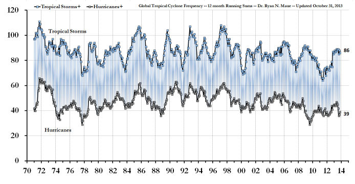
En ordonnées le nombre des ouragans (en bas) ou des tempêtes tropicales (en haut) depuis 1971 jusqu'à la fin du mois d'Octobre de cette année.
On en perçoit aucune tendance ni à la hausse ni à la baisse de l'occurrence de l'activité cyclonique pour le globe depuis 1971.
S'agissant de la puissance des cyclones/typhons/ouragans, voici ci-contre, le graphique de l'évolution de l'énergie cumulée (Indice ACE) de l'activité cyclonique globale (en haut) et de tout l'Hémisphère Nord (en bas) de 1971 à nos jours.
En ordonnée est représenté l'indice ACE ( Accumulated Cyclone Energy) qui combine en un seul indicateur les données sur la vitesse (au carré) des vents et sur leur durée, comme je vous l'avais expliqué dans ce billet.
Nous n'observons aucune tendance de l'ACE ni à la hausse ni à la baisse durant toute cette période de "Réchauffement climatique anthropique", ni pour l'hémisphère Nord, ni pour l'ensemble du globe.
A noter que l'énergie cyclonique de la période actuelle est remarquablement faible. A noter également que le typhon Haiyan/Yolanda avec son ACE de 37 ne serait guère perceptible sur ce graphique.
B) Quid de la fréquence des typhons ayant atterri aux Philippines depuis 110 ans ?
Une étude exhaustive, traitant de ce sujet et résultant d'une collaboration sino-japonaise, est parue en 2009 dans les Geophysical Research Letters.
Kubota, H. and Chan, J.C.L. 2009. "Variabilité interdécennale des atterrissages des cyclones tropicaux sur les Philippines de 1902 à 2005."
Geophysical Research Letters 36: 10.1029/2009GL038108
Cet article analyse la statistique du nombre de typhons ayant atterri aux Philippines de 1902 à 2005. Les auteurs trouvent une périodicité de 32 ans et la relie aux phénomènes naturels El Niños (l'ENSO) et à la PDO (Oscillation Décennale Pacifique) et nullement au "réchauffement climatique anthropique".
La conclusion de leur résumé est la suivante :
| "Ces résultats suggèrent que la variabilité naturelle en relation avec l'ENSO et les phases de la PDO apparaît prédominante dans la variabilité interdécennale des cyclones tropicaux qui ont touché terre aux Philippines." |
Voici les résultats de leur statistique qui donne l'évolution du nombre de typhons (toutes catégories confondues) qui ont atterri aux Philippines, en fonction du temps.
Ici encore, on ne perçoit pas de tendance à la hausse, ni à la baisse, du nombre de typhons qui ont atterri sur les Philippines au moins depuis 1902.
A noter que les données des années 1940-1944 sont absentes, ce qui est bien compréhensible. Les Philippins ont eu affaire à bien d'autres malheurs (dont l'occupation japonaise), à cette époque.
Il s'agissait ci-dessus des typhons de toutes catégories ayant atterri aux Philippines. Voyons maintenant comment Haiyan/Yolanda se classe par rapport aux autres typhons les plus violents, les Super Typhons, des années antérieures, dans la même zone du Nord Ouest du Pacifique où se trouvent les Philippines. Bien heureusement, tous ces Super Typhons n'ont pas touché terre. Beaucoup sont demeurés au dessus des océans.
C ) L'activité (Super) cyclonique dans la zone du Nord Ouest du Pacifique de 1951 jusqu'à nos jours.
Il est généralement admis que la mesure de la dépression qui accompagne ces événements paroxystiques constitue un indicateur fiable de la puissance des cyclones/typhons/ouragans. C'est pour cette raison que le classement de ces événements paroxystiques est très fréquemment effectué à partir de la pression minimale relevée au coeur des cyclones tel que cela est indiqué dans le tableau ci-dessous à droite qui ne recense que les cyclones les plus intenses (en fait, les Super Typhons dont la pression a été inférieure ou égale à 895 hPa qui est la pression minimale mesurée pour Haiyan ) observés dans la zone Nord Ouest du Pacifique depuis 1951 jusqu'à nos jours.
On peut retrouver ces données sur Wikipedia (Liste des cyclones les plus intenses, région par région) tirées de la base de données du "Centre Météorologique régional spécialisé" (un conglomérat de centres d'observations régionaux sur ces phénomènes, approuvé par l'OMM) . On peut également vérifier ce données directement sur cette liste de la JMA. ("Western North Pacific Typhoon best track file 1951-2013". Japan Meteorological Agency).
Il es possible d'effectuer une analyse statistique élémentaire de l'évolution de l'activité cyclonique la plus intense relevée dans la zone Nord Ouest du Pacifique où se trouvent les Philippines, de 1951 à nos jours.On peut illustrer les résultats de différentes manières. Pour ma part, j'ai opté pour une présentation simple qui consiste à reporter les dépressions (c'est à dire la pression standard de 1013 hPa moins la pression nominale du typhon) des typhons dont les pressions étaient inférieures ou égales à 895 hPa, en fonction des années depuis 1951 et en ajoutant les dépressions des typhons se produisant la même année (par exemple en 1983 où il y eut trois très puissants super typhons dans la zone).
Le graphique obtenu est explicite. Le voici, ci-dessous. Il est tracé à partir des données du tableau ci-contre.
Il apparaît que les Super Typhons dans la zone du Nord Ouest du Pacifique ont été plus intenses, plus fréquents et plus répétitifs durant la période la plus froide des 60 dernières années, située entre 1960 et 1980, ce qui n'étonnera ni les historiens ni les géographes qui savent que les périodes froides ont été les plus riches en événements de ce genre. Ce simple graphique montre également que la période post-1990 a globalement été la plus calme du point de vue des Super Typhons dans cette zone, avec une pause de presque vingt années entre 1991 et 2010, ce qui est évidemment contraire aux affirmations répétées que l'on a pu lire dans la presse et écouter/voir dans les médias qui associent systématiquement réchauffement climatique et intensification de l'activité cyclonique.
Pour sa :part, allant dans le même sens, le Dr. Ryan Maue, utilisant la base de données japonaise, fait remarquer que 50 des 58 Super Typhons observés dans la zone Nord Ouest du Pacifique depuis 1951, avec des pressions inférieures ou égales à 900 hPa, se sont produits durant les années 1950-1987. Il n'y en a eu que 8 dans les 25 dernières années. Ainsi, contrairement aux affirmations réitérées de certains, et du simple point de vue des statistiques, nous sommes actuellement et depuis une vingtaine d'années, dans une période relativement calme du point de vue des Super Typhons dans la zone Nord Ouest du Pacifique...malgré le changement climatique.
Il apparaît donc que le lien suggéré par Médiapart et la quasi totalité de ses confrères ainsi que par les responsables de l'ONU (voir ci-dessous), entre la fréquence et/ou la violence de l'activité cyclonique et le réchauffement climatique observé depuis la seconde moitié du XXème siècle est mis en défaut par les observations. C'est ce qui explique, sans aucun doute, la position très en retrait du GIEC sur une possible contribution anthropique à ces événements extrêmes, comme nous le verrons ci-dessous.
Voyons maintenant ce qu'il en est pour la seule année 2013, du moins jusqu'à présent, et toujours dans cette zone névralgique.
D) L'activité cyclonique dans la zone Nord Ouest du Pacifique durant l'année 2013 (jusqu'à ce jour)
Ci-contre le tableau pour 2013, dressé et constamment remis à jour par le Dr. Ryan Maue spécialiste de l'analyse des typhons/cyclones/ouragans à l'échelle du globe. Ce tableau ne concerne que la zone Pacifique Nord Ouest où se trouvent les Philippines. Cette zone est, comme on le sait, la zone la plus active du point de vue cyclonique de tout l'hémisphère Nord..
Le premier paramètre important porté sur ce tableau est l'indice ACE ( Accumulated Cyclone Energy) qui combine en un seul indicateur, les données sur la vitesse (au carré) des vents et sur la durée, déjà mentionné ci-dessus. J'avais évoqué cet indice (et d'autres) qui constitue une bonne estimation de la puissance des cyclones dans un billet précédent.
Le second paramètre important est la vitesse maximale des rafales de vent enregistrée par les organismes officiels. Elle est exprimée en miles par heure et est indiquée ici en rouge, sur ce tableau pour les typhons les plus violents.
On constate que le typhon Haiyan a connu un ACE de 37 ce qui le place en première position pour cette année en cours, devançant de peu le cyclone Francisco (ACE = 35). Par contre, la vitesse maximale des vents de Haiyan (170 mph ) a été nettement supérieure à celle de Francisco (140 mph), ce qui signifie que le typhon Haiyan qui s'est d'ailleurs heureusement déplacé très rapidement, à une vitesse remarquable de 40 km/h, à perduré moins longtemps que le cyclone Francisco qui s'est dirigé vers le Japon avant de s'en éloigner.et de s'affaiblir. A noter que l'île japonaise d'Oshima avait subi les violences de Wilpha (ACE = 14) quelques 10 jours avant l'approche du typhon Francisco . Les typhons qui atterrissent au Japon font toujours des victimes mais en nombre relativement limité car la population japonaise est remarquablement organisée pour se protéger contre ce genre de cataclysme assez courant dans cette zone de l'océan Pacifique qui porte si mal son nom.
Conclusions :
D'après ces observations accessibles pour tous, il apparaît donc que le Super Typhon Haiyan/Yolanda est le plus puissant enregistré au cours de cette année 2013, mais qu'il n'est pas, et il s'en faut de beaucoup, le plus puissant de "l'histoire" comme nous l'avons vu ci-dessus, pour la zone Nord Ouest du Pacifique, comme pour les autres.
A noter également que, comme on le voit sur les graphiques de Ryan Maue rapportés au &A, nous traversons actuellement une période d'accalmie du point de vue de l'activité cyclonique mondiale y compris dans la zone du Pacifique où se trouvent les Philippines, comme le montre aussi le graphique du &C.
Malgré le "réchauffement climatique", on n'observe aucune augmentation du nombre des Super Typhons (les plus violents) dans la zone Nord Ouest du Pacifique depuis 1951, ni de la fréquence de l'activité cyclonique, toutes catégories confondues, au plan mondial comme régional. Au vu des données disponibles, il semblerait, au contraire que le "réchauffement climatique" s'accompagne, d'une baisse de l'activité cyclonique dans le Nord Ouest du Pacifique. |
E) Que nous dit le GIEC au sujet de l'évolution de la fréquence et de la violence des cyclones/typhons/ouragans ?
Le GIEC s'est récemment exprimé à deux reprises sur ces sujets au cours des deux années passées. D'une part, il a publié en 2012 un rapport spécifique consacré aux événements extrêmes, appelé le SREX report. Concernant le sujet qui nous intéresse ici, le rapport SREX précise (page 161) que (texte engraissé par PU):
| "En résumé, il y a une confiance faible qu'une tendance quelconque à long terme (c'est à dire de 40 ans ou plus) des augmentations de l'activité cyclonique tropicale (c'est à dire, de l'intensité, de la fréquence et de la durée) soient robustes après avoir pris en compte les changements passés des capacités d'observation. Les incertitudes dans les données de l'histoire des cyclones tropicaux, la compréhension incomplète des mécanismes physiques liant les métriques des cyclones tropicaux au changement climatique et le niveau de variabilité de l'activité cyclonique tropicale ne procurent qu'une faible confiance dans l'attribution d'une quelconque variation de l'activité cyclonique tropicale à des influences anthropiques. " |
En bref, on ne sait pas. Pour sa part, le rapport AR5 du GIEC, paru tout récemment (en Septembre dernier), stipule, en conformité avec le rapport SREX cité ci-dessus, qu'on n'observe aucune tendance à long terme de l'activité cyclonique tropicale. Ce rapport indique aussi que "Globalement, il y a une faible confiance dans l'attribution des variations de l'activité des cyclones tropicaux à une influence humaine."
En résumé, le GIEC se déclare incapable de conclure sur une quelconque influence anthropique sur une évolution, elle-même incertaine, des caractéristiques fondamentales des cyclones/typhons/ouragans tropicaux. A noter que le GIEC est tout aussi démuni pour ce qui concerne les cyclones extra-tropicaux.
4) Observations et conclusions :
On était en droit d'espérer, qu'au moins, les conclusions des rapports du GIEC, rappelées ci-dessus, ainsi qu'un minimum d'investigation au sein de l'abondante littérature, particulièrement bien documentée, qui existe sur les typhons/cyclones/ouragans, auraient tempéré les déclarations des rédacteurs des communiqué de presse ainsi que celles des participants et des responsables de l'ONU présents lors de la récente Conférence Mondiale sur le Climat (COP19) qui s'est tenue à Varsovie quelques jours après le passage du typhon Haiyan/Yolanda sur les Philippines. Il n'en a rien été.
Bien au contraire, le typhon Haiyan/Yolanda est devenu l'emblême iconique de la conférence de l'ONU sur le climat, le COP19.
Voici, à titre d'exemple, ce que relate un observateur, présent à la réunion COP19 :
| "Pratiquement toutes les délégations qui ont pris la parole ont fait référence à la tempête signalant que le changement climatique apparaissait impacter l'intensité des événements météorologiques extrêmes. Le principal délégué philippin, Yeb Sano déclara aux participants du COP : "Ce que mon pays est en train de subir du fait des cet événement climatique extrême est de la folie. La crise climatique est de la folie. Nous pouvons arrêter cette folie ici même à Varsovie.". Pour sa part, il a annoncé qu'il entamerait une grève de la faim "jusqu'à ce qu'on aboutisse à un résultat significatif"". |
Un autre rapporteur résume les discours introductifs prononcés lors de l'ouverture du COP15 d'une part par Marcin Korolec (alors ministre de l'environnement polonais mais qui a été "débarqué" de son gouvernement pendant la conférence, peu après son intervention), le représentant de la puissance invitante et président du COP19 et, d'autre part, par Christiana Figueres, secrétaire exécutive de la Convention sur le Changement Climatique de l'ONU.
| "Korolec et Figueres ont pointé les réalités du changement climatique qui donnent à réfléchir et l'augmentation des événements extrêmes que la science climatique a prévue depuis longtemps, tels que le cyclone dévastateur Haiyan (Yolanda) qui vient de frapper les Philippines, l'un des typhons les plus puissants de l'histoire qui ait atterri." |
...en contradiction flagrante avec les rapports SREX et AR5 du GIEC de l'ONU.
Pour sa part, Ban Ki Moon, le secrétaire général de l'ONU, a, lui aussi, assuré les participants que le typhon résultait du changement climatique, en ces termes :
| "Nous avons vu maintenant ce qui est arrivé aux Philippines. C'est un avertissement impérieux" ..." C'est un exemple de changement météorologique et aussi du fait que le changement climatique nous affecte tous sur la Terre. |
Certains penseront qu'il est pour le moins curieux que ces principaux responsables de l'ONU outrepassent largement les déclarations documentées et très en retrait (notamment en comparaison des rapports précédents) des tout récents rapports scientifiques SREX et AR5 du GIEC, lui-même placé sous la tutelle de l'ONU (et de l'OMM).
Doit-on en conclure que Ban Ki Moon et Christiana Figueres s'abstiennent de lire le contenu des rapports d'un organisme dont ils représentent les tutelles ?
Pour sa part, et ce n'est pas inattendu, Greenpeace, comme les nombreuses autres délégations écologistes représentants diverses ONG à Varsovie, a cherché aussi à tirer parti du drame philippin. C'est ainsi que Grennpeace a projeté une diapo sur une des cheminées d'une centrale à charbon (omniprésentes en Pologne) nous assurant que "Les tempêtes partent d'ici" tout en exigeant des dédommagements de la part des compagnies pétrolières. Venant d'une organisation ouvertement activiste, ceci n'est guère surprenant, même si cela contredit frontalement les observations et les conclusions des scientifiques qui, eux, se déclarent incapables de conclure dans l'état actuel des choses.
Comme à l'accoutumée, alors que la presse francophone avait perdu tout sens de la mesure au sujet de cette affaire et ne se préoccupait guère de mener la moindre investigation quant au contenu hasardeux et ultra-alarmiste des communiqués de presse de Reuters et de l'AFP, plusieurs organes de presse germano- et anglophones ont tenté d'informer leurs lecteurs en tentant une analyse plus approfondie. D'autres se sont carrément insurgés contre le catastrophisme ou la récupération, à des fins politiques, du drame philippin par leurs collègues. Je ne citerai ici que trois organes de presse de différents pays, parmi les plus lus et parmi beaucoup d'autres :
Le Spiegel Online International (All.) : ."Climatologie : les leçons à tirer du cyclone Haiyan"
The Telegraph NEWS (Au) : "La campagne alarmiste sur le typhon Haiyan est tout simplement honteuse".
Daily Mail (UK) : "Comment la BBC a transformé une crise catastrophique en un drame dû au réchauffement climatique".
Conclusion :
Le Super Typhon Haiyan/Yolanda n'est, ni plus ni moins, que le successeur de la longue lignée des très violents cyclones tropicaux qui sévissent fréquemment dans la zone Nord Ouest du Pacifique, décennie après décennie. Selon le hasard des conditions météorologiques qui s'établissent dans cette région, il arrive qu'un de ces phénomènes paroxystiques touche terre et y cause des ravages tels que ceux qui ont affecté les Philippines cette année. Mais hélas pour les Philippins et les autres habitants de cette zone du Pacifique, de tels événements se reproduiront dans le futur comme ils l'ont fait dans le passé et ceci avec ou sans réchauffement climatique dont les scientifiques ignorent encore si celui-ci à une influence quelconque sur la fréquence et sur la violence de ces événements, tout simplement parce qu'aucune tendance n'apparaît clairement dans les observations.
.Connaissant ces données qui étaient accessibles à tous, il apparaît évident que la tragédie des Philippines a été délibérément "récupérée" par un certain nombre de responsables de l'ONU ainsi que par un certain nombre de représentants des pays les moins développés qui ont participé au COP19 de Varsovie et dont on a fort bien compris les motivations, à cette occasion. Si on peut concevoir que ces derniers soient désireux de faire avancer "la cause du changement climatique" auprès des opinions publiques, des décideurs et des financeurs, il est difficilement excusable que leur argumentation se fasse en contradiction avec les observations objectives et les conclusions des rapports du GIEC.
Dans ces circonstances, le comportement des ONG activistes telles que Greenpeace n'est pas inattendu, mais, par contre, celui des journalistes des médias et des agences de presses, notamment francophones, est plus problématique.
Il faudrait, sans nul doute, que les rédacteurs de la presse et des médias se décident, une fois pour toute, à choisir ouvertement et clairement, entre une information objective et bien documentée de leurs lecteurs/auditeurs, et le militantisme, au risque d'engendrer une suspicion qui ne rend service ni à leur crédibilité ni à la pérennité de leurs organes de presse.
Stay Tuned ! |
17 Novembre 2013 : Le GIEC, "le plateau" de température et quelques curiosités du rapport complet et du SPM du GIEC (WGI)
Ce billet fait suite au billet précédent (ci-dessous) qui rapportait les jugements d'un certain nombre d'experts scientifiques du climat, ainsi que ceux des médias anglophones-germanophones et francophones, faisant suite à la publication des deux rapports (SPM et rapport complet du groupe de travail N°1 (Les bases scientifiques)) du GIEC, en fin du mois de Septembre dernier.
Nous allons rentrer un peu plus dans les détails et analyser comment les différents rapports du GIEC ont rendu compte d'un certain nombre d'observations qui remettent en question les modèles du réchauffement climatique ainsi que plusieurs affirmations qui posent quelques question souvent épineuses.
Tout d'abord, voici quelques rappels au sujet de la quasi-stagnation de la température moyenne de l'air à la surface du globe durant ces 15 dernières années.
1) Le "plateau" des températures moyennes du globe :
On se souvient que cette dénomination de "plateau" avait été utilisée, dès 2008, par R. K. Pachauri, le Président du GIEC qui nous affirmait qu'il allait s'y intéresser... Ce substantif, relativement neutre, a depuis été rebaptisé par certains supporters du GIEC de "hiatus" ou de "pause" qui impliquent tous deux que la stagnation des températures ne saurait se prolonger.
Pour ce qui concerne l'examen des données observationnelles, j'ai fréquemment précisé dans ce site que la pratique la moins susceptible d'être entachée de "motivated reasoning", de "raisonnement motivé" ou de "biais de confirmation", consiste à considérer les données brutes, résultant directement de l'observation, sans aucune "barre de tendance" ou autre lissage et moyennage qui introduisent des biais susceptibles de fausser le jugement comme vous en verrez quelques illustrations ci-dessous.
Voici donc le graphique rapportant les données dites HadCRUT4, fournies, mois après mois, par les bases de données officielles du Hadley Centre Met Office (UK) qui servent de référence aux rapports du GIEC AR5 2013. Pour ce qui est de la présentation de ces graphiques, j'ai essayé d'adopter, autant qu'il a été possible les cadrages et les rapports d'images proches de ceux utilisés dans le rapport SPM du GIEC, ceci de manière à faciliter la comparaison directe des graphiques.
L'accolade en rouge indique la zone du fameux "plateau" dont il est question ici.
Voici maintenant un zoom de la région du "plateau" indiquée par l'accolade rouge sur le graphique précédent. Le graphique ci-dessous est également directement issu des données officielles tabulées par le Hadley Center sous le nom de HadCRUT4. L'aspect un peu "heurté" du graphisme provient du fait que la donnée de chaque mois est reliée à la suivante par un trait rectiligne. Certains utilisent des liaisons plus sophistiquées (splines, Béziers etc.) mais cela ne change rien à l'allure générale du graphique.
A noter ici que les données du HadCRUT4 n'étaient pas encore actualisées pour le mois de Septembre 2013 lorsque j'ai tracé ce graphique. Le dernier point à droite est donc celui du mois d'août 2013.
Mise à jour du 9 Novembre : Les données du mois de septembre du HadCRUT4 ont été publiées. Selon ces données, la température du mois de septembre a été pratiquement identique (+0,007°C (!)), selon le HadCRUT4, à celle du mois d'août. Je n'ai pas jugé utile de retracer ce graphique.
Ceci étant rappelé, voyons maintenant comment le rapport pour les décideurs (SPM) d'une part et le rapport scientifique complet AR5 (2013) du GIEC d'autre part; font état de ces données objectives, qui, comme nous l'avons déjà vu et comme nous allons le revoir, posent quelques graves problèmes aux modélisations en cours.
2) Le "plateau" vu par le rapport scientifique AR5 du GIEC
Vous trouverez ci-dessous quelques graphiques incluant (assez discrètement) le "plateau" qui n'est jamais mentionné, en tant que tel, dans le Résumé pour les Décideurs (SPM) dans lequel les mots "hiatus", pause" ou "plateau" ne figurent pas, même si le ralentissement de la hausse de température est évoqué assez discrètement dans le corps du texte. Ceci est surprenant sachant, comme on le voit très bien sur le graphe ci-dessus, que la hausse des températures post-1951 (la date retenue par le GIEC pour que l'effet du CO2 anthropique devienne perceptible) n'a, en réalité, commencé qu'en 1975 pour se terminer en 1998. Autrement dit, la durée réelle de la hausse de température dont le GIEC nous assure qu'elle est d'origine anthropique n'est que de 23 ans, alors que, comme le montre le graphique ci-dessus, la "pause" couvrirait, dès à présent, une période de 15 ou 16 ans, ce qui n'est pas sensiblement moindre.
Ainsi, le "plateau", la "pause" ou le "hiatus" comme l'appellent ceux qui nous certifient qu'il n'est que temporaire, n'est jamais mentionné explicitement dans le rapport pour les politiques. Cependant, il était très difficile sinon impossible que le rapport scientifique complet (l'AR5) élude le sujet. Mais plutôt que d'afficher le graphe ci-dessus qui aurait été parfaitement explicite, les rédacteurs du rapport complet ont, semble-t-il, trouvé un moyen "plus scientifique" de l'évoquer mais qui présente malheureusement le défaut de ne pas être totalement transparent aux yeux du commun des mortels ...et (probablement) de quelques décideurs. Cette représentation est donnée sous la forme de l'histogramme représenté ci-dessous qui figure, inséré parmi beaucoup d'autres, au Chapitre 9, page 162, Box 9.2 Fig. 1a du Rapport scientifique du GIEC AR5.
A noter que ce rapport AR5 est dit "final" bien qu'il soit encore susceptible de révisions sans doute pour éliminer les erreurs rémanentes et coller au plus près avec le résumé SPM (Résumé pour les décideurs) qui, lui, a été adopté en assemblée plénière à Stockholm, impliquant les émissaires politiques de chaque nation représentées au GIEC. Ce rapport est ainsi qualifié de " Un rapport accepté par le groupe de travail N°1 mais non approuvé dans les détails." Quelques corrections mineures, relatives aux émissions anthropiques de CO2, ont d'ailleurs été, tout récemment (le 11 Nov.), apportées à ce rapport. Visiblement, les rédacteeurs du rapport ne tiennent pas à répéter les erreurs de l'AR4.
Le "plateau" tel qu'il figure sous la forme d'un histogramme, dans le rapport scientifique AR5 mais ne figure pas dans le Résumé pour les Décideurs
Cet histogramme qui peut paraître un peu obscur aux lecteurs non scientifiques ou techniques, est, en réalité, très explicite. Il nous donne ce qui est appelé "la densité normalisée", autrement dit le nombre d'occurences (ou le "poids") d'une variable (La température HadCRUT4 et les résultats des modèles) en fonction de l'écart de la variation de température (par décennie) reporté, en °C, en abscisse.
Dans un tel graphique, le "plateau" mesuré et observé avec les mesures HadCRUT4 apparaît comme la zone (hachurée rouge) incluse entre les deux barres quasi verticales en trait rouge plein.
Cet histogramme nous apprend deux choses importantes :
1) D'une part, ce que nous savions déjà, c'est à dire que la température moyenne globale n'a pas ou n'a que très peu varié durant la période 1998-2012 et si elle l'a fait, elle a très légèrement augmenté de quelques +0,04°C par décennie, ce qui est évidemment infinitésimal et difficilement mesurable. A noter, en effet que la marge d'erreur (la largeur de la zone hachurée rouge) n'est qu'à peine suffisante pour affirmer que la température à légèrement monté selon le HadCRUT4.
Mon propre calcul avec la base de données HadCRUT4 disponible, donne effectivement +0,04°C par décennie pour la période 1998-Août 2013 ce qui est donc conforme à l'histogramme du GIEC.
Cependant, ce résultat dépend de la base des données choisies. Par exemple, la base de données RSS-MSU (données satellitaires) donne, pour la basse troposphère, un taux de -0,05°C/décennie (1998-Sept. 2013), c'est à dire un très léger refroidissement. .
Il est raisonnable de conclure que, compte tenu des multiples erreurs plus ou moins prises en compte dans l'évaluation de la température moyenne d'un objet aussi vaste et aussi complexe que la planète, la température de l'air à la surface de la planète n'a probablement pas varié de manière significative durant les 14 (ou même 15) dernières années, contrairement à la quasi totalité des prédictions des modèles numériques comme nous allons le voir.
2) D'autre part, cet histogramme nous apporte une information immédiate sur la divergence entre les modèles et les observations qui n'est que discrètement évoquée dans le corps du rapport.
En effet, la zone en grisé représente la distribution des réalisations (c'est à dire des résultats) des différents modèles numériques utilisés par le GIEC (ici, les CMIP5).
Comme on peut le constater immédiatement sur cet histogramme de l'AR5 du GIEC, les modèles ont très systématiquement surestimé la hausse de température de ces quatorze dernières années. En moyenne, les modèles avaient surestimé le réchauffement au moins d'un facteur 4. On peut aussi s'interroger sur la pertinence des modèles dont les réalisations indiquent un hausse de +0,5°C par décennie soit environ 13 fois plus que la réalité objective...En clair, cela signifie comme le savent déjà les lecteurs de ce site, qu'un ou plusieurs facteurs importants qui forcent le climat ne sont probablement pas pris (ou mal pris) en compte dans les modélisations climatiques actuelles.
D'autre part, l'argument N°1 des participants au GIEC (pour nous assurer de la participation anthropique au réchauffement climatique observé) reposait sur le fait que les modélisations ne conduisaient pas aux résultats corrects si elles ne prenaient en compte que les forçages naturels (supposés connus) sans y ajouter le supplément de forçage radiatif dû au CO2 anthropique. On comprend que l''histogramme ci-dessus montre que cette explication est gravement mise en défaut puisque les modèles numériques basés sur le forçage anthropique ne reflètent pas la réalité. Cela pose évidemment quelques questions fondamentales que le GIEC n'a visiblement pas souhaité aborder dans son rapport AR5 et, à fortiori, dans le SPM.
Dans ces conditions, l'affirmation d'une certitude de 95% au sujet du réchauffement anthropique, apparaît plutôt curieuse, sinon hasardeuse, voire pire, comme l'ont d'ailleurs noté de nombreux scientifiques tels que ceux dont j'ai rapporté les propos dans les billets précédents.
Voici la légende relative à cet histogramme relatif au "plateau"telle qu'elle figure dans l'AR5 à la référence indiquée :.
| " Tendances de la GMST (température moyenne globale de l'air à la surface) en °C par décennie pour la période 1998-2012. Les observations ont nécessité la réalisations de 100 ensembles du HadCRUT4. Elles sont indiquées par la zone hachurée en rouge (Morice et al., 2012)). Les incertitudes des ensembles sont indiquées par des largeurs conformément à une analyse statistique de la moyenne seule, au contraire des incertitudes des tendances qui sont citées dans la Section 2.4.3, qui inclut une estimation de la variabilité climatique interne. Ici, au contraire, la variabilité est caractérisée par la largeur de la distribution des ensembles de modèles....Pour les modèles, toutes les réalisations des 114 modèles CMIP5 sont montrées, étendues après 2005 pour les scénarios RCP5.5 et jusqu'à 2012 (ombrés en gris d'après (Fyfe, Gillett, & Thompson, 2010))... Les traits noirs représentent des versions lissées des histogrammes. Chaque histogramme est normalisé de telle façon que la sommes de ses aires soit égales à un |
L'histogramme ci-dessus qui figure dans le volumineux rapport scientifique AR5, ne figure pas dans le rapport SPM destiné aux politiques. C'est dommage car il est relativement explicite sur le plateau actuel et les divergences modèles/observations depuis une quinzaine d'années. .
Plus explicite encore était le graphique ci-contre qui figurait dans la seconde édition du rapport AR5 (le SOD), mais qui (hélas) ne figure ni dans le SPM ni dans dans le rapport complet AR5 (pré)définitif.
Le graphique ci-contre est pourtant parfaitement cohérent avec l'histogramme précédent. Il montre que la quasi totalité des modèles actuels et anciens surestiment nettement la hausse des températures depuis au moins 15 ans et que les projections de l'élévation de la température moyenne sont probablement exagérées.
A noter que le graphique ci-dessus est plus facile à lire et à interpréter que l'histogramme précédent. N'aurait-il pas été approprié pour le SPM ?
Il apparaît que les rédacteurs du SPM et du rapport complet AR5 ont été d'un avis opposé.
Vous avez probablement lu, ici ou là, dans la presse francophone que cette divergence entre les températures observées et les modèles ainsi que le "plateau" ne remettent en cause ni la modélisation ni le futur du réchauffement climatique. C'est peut-être l'opinion de quelques journalistes francophones, mais elle n'est visiblement pas partagée par de nombreux scientifiques spécialistes dans ces domaines qui se posent des questions fondamentales sur les modélisations, la sensibilité climatique revue à la baisse (voir ci-dessous), l'absence du hotspot troposphérique tropical prévu par la théorie mais non observé etc. J'ai déjà rapporté les propos, sur ces sujets, de quelques éminents climatologues proches du GIEC tels que Lennard Bengtsson et Hans von Storch.
Pour sa part, un autre climatologue renommé et, lui aussi, supporter du GIEC, le Professeur Jochem Marotzke du Max-Planck-Institut für Meteorologie, tout en réaffirmant son adhésion aux points de vue du GIEC, déclare que :
| "Le hiatus récent du réchauffement de la surface constitue un défi scientifique fascinant...Il nous force à réfléchir à la totalité du système climatique et, peut-être, à repenser quelques-uns de nos concepts de base tels que, par exemple, la manière dont nous formulons le budget énergétique et les rétroactions." |
Ainsi, il apparaît que les leaders scientifiques du GIEC sont inquiets des divergences modèles/observations et du "plateau" de températures, à l'instar de nombreux organes de presse étrangers qui adoptent des positions nettement plus nuancées que celles de la presse francophone, quand ils ne remettent pas carrément en cause les affirmations du GIEC, comme je vous l'avais montré dans le billet précédent.
Pour sa part, visiblement moins confiant (et peut-être mieux informé) que nos journalistes, le Parlement Britannique a décidé de lancer une investigation sur la "robustesse" du rapport AR5 du GIEC (New inquiry: IPCC 5th Assessment Review) Il en explique les motivations (caractères engraissés par PU) :
"Le GIEC a exercé une grande influence sur l'action nationale et internationale pour la prévention d'un changement climatique dangereux. Cependant, il a également été l'objet de critiques concernant le fait qu'il a été exagérément influencé par les objectifs politiques gouvernementaux et parce qu'il n'a pas répondu de manière satisfaisante aux questions concernant la pause récente du réchauffement climatique, non plus qu'aux critiques du Conseil Interacadémique de l'AR4, ainsi que sur d'autres sujets.
Cette investigation va étudier les dernières conclusions du GIEC de manière à déterminer dans quelle mesure ses conclusions sont robustes ainsi que leur impact en matière de politique nationale et internationale." |
Ce qui semble frappé au coin du bon sens et pourrait servir d'exemple à beaucoup de Parlements. A noter que Donna Laframboise, la journaliste d'investigation canadienne auteur de deux analyses particulièrement critiques (1 et 2) sur le GIEC et son personnel, a été invitée à soumettre un texte écrit résumant son point de vue pour cette anquête du Parlement Britannique.
Par ailleurs, Steve Mc Intyre qui, comme d'habitude, s'est plongé dans l'analyse approfondie du rapport AR5 et du SPM, démontre, entre autres, que les rédacteurs du rapport ont considérablement élargi les marges d'incertitudes (presque d'un facteur 2) de leurs modèles pour tenter de faire rentrer les observations sur l'évolution de la température globale dans les incertitudes des modélisations numériques dans un graphique introduit en dernière minute. Ce graphe apparait incohérent avec un graphique qui figurait dans le rapport soumis à l'examen des experts toujours selon S. Mc Intyre. Ce sont des procédés (normalement) très peu appréciés dans les milieux scientifiques.
3) Le "plateau" vu par le "Résumé Pour les Décideurs", le SPM de l'AR5.
Comme je l'ai mentionné plus haut, le "plateau" ou la stagnation des températures depuis 1998, n'est que très peu mentionné dans le rapport SPM pour les politiques. Il était cependant hors de question de s'abstenir de publier la moindre courbe sur l'évolution de la température moyenne du globe en y incluant les observations récentes (jusqu'en 2012). Plutôt que de publier le graphe des données mensuelles tel que celui qui est présenté en tête de ce billet, les rédacteurs de ce rapport du GIEC ont choisi de présenter des courbes "lissées", c'est à dire des données moyennée sur des périodes plus ou moins longues. Cette technique est assez critiquable et ses défauts sont bien connus des statisticiens qui recommandent de ne l'utiliser qu'avec parcimonie parce que lissage déforme les courbes et fait disparaître une partie de l'information utile aux extrémités des graphes.
Comment procède-t-on au "lissage" (ou encore au moyennage) d'un graphe ? Quelles en sont les conséquences ?
Dans sa version universellement utilisée, le "lissage" ou "moyennage" des données d'un graphique consiste à recalculer l'ordonnée de chaque point donné du graphique en lui donnant une valeur égale à la moyenne des n/2 données précédentes et des n/2 suivantes du graphique original. On comprend aisément que ce procédé "gomme" toutes les aspérités dont la largeur est nettement inférieure à n. Il s'agit donc bien d'un lissage.
On comprend aussi que ce procédé de lissage ne peut être poursuivi à l'approche des extrémités du graphique, faute de données disponibles pour effectuer le moyennage. S'agissant d'une évolution temporelle, il en résulte immanquablement une disparition des données les plus récentes, même s'il existe des procédés sophistiqués, plus ou moins artificiels et rarement utilisés pour tenter de pallier ce défaut.
Du point de vue mathématique, le lissage équivaut à effectuer ce que l'on appelle un "produit de convolution". Par exemple, en spectroscopie traditionnelle, un lissage fâcheux des spectres enregistrés résulte inévitablement de l'utilisation d'un spectrographe à bande passante trop large pour l'analyse de raies d'absorption ou d'émission fines. Le spectroscopiste est alors contraint d'effectuer de ce que l'on appelle une "déconvolution" pour tenter de reconstruire les caractéristiques réelles des raies d'absorption ou d'émission étudiées qui ont été déformées et élargies par la convolution avec la bande passante du spectrographe.
Voici ci-dessous, dans la colonne de gauche, quelques-uns des graphes lissés présentés dans le rapport SPM AR5 2013. les graphes reportés dans la colonne de droite sont de PU.
|
Le graphique en deux volets, ci-dessus, figure dans le rapport résumé pour décideurs (SPM) (Approuvé, page SPM 27, 27 Sept. 2013). Le graphique du haut est donné pour une représentation "moyennée" sur un an (annual average), dans laquelle, le "plateau" vu précédemment avec les données mensuelles est devenu moins perceptible que sur le graphique mensuel non traité.
Le graphique du bas, ci-dessus, est intitulé "decadal average" (moyenné sur dix ans) ce qui constitue une sorte de lissage que l'on peut considérer comme extrême. Ce graphique ne figurait d'ailleurs dans aucune des versions précédentes du rapport soumises au jugement des experts.
Cette présentation a évidemment le défaut évident de dépendre de l'origine des décennies choisies comme point de départ et, surtout, de faire complètement disparaître le "plateau" de température de ces quinze dernières années au moyen d'un artifice de présentation assez douteux. |
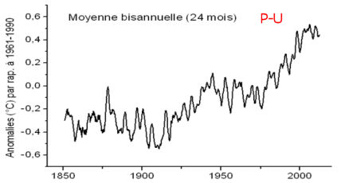 |
La présentation exclusive de ce graphe dite "en escalier" permet ainsi, lors des conférences publiques, d'éviter les questions dérangeantes sur le "plateau" de température. On pourrait penser qu'il serait plus correct de l'exposer dans sa version originale accompagné, au moins, du graphe qui lui est superposé dans le rapport SPM.
Malheureusement, ce graphe a parfois été utilisé seul, lors de conférences publiques, notamment lors de celle-ci par le co-responsable de la rédaction du rapport AR5 du GIEC en personne.
Certains facétieux ont qualifié ce graphique "en escalier" de "hide the plateau" (cacher le plateau) en référence au fameux "hide the décline" (c'est à dire cacher le déclin des températures) qui figurait en toutes lettres dans un des courriels de Phil Jones (CRU UK) mis à jours en 2009 par ce que la presse US-UK a appelé le Climategate. |
Ci-dessus, tout en haut, le graphe original des données mensuelles du HadCRUT4. De manière à vérifier les procédures du GIEC, j'ai fait subir le même traitement (lissage-moyennage, à l'aide de deux logiciels indépendants qui donnent le même résultat) aux mêmes données HadCRUT4 utilisées pour l'AR5, en appliquant un moyennage sur un an (dessin du milieu) et un moyennage sur deux ans (dessin ci-dessus en bas). On voit que le graphe rapporté dans le rapport SPM du GIEC est très proche de celui qui a subi un moyennage sur 24 mois (deux ans) et assez nettement différent de celui qui a été moyenné sur 12 mois (un an) contrairement à l'indication portée sur le graphique du SPM.
Par exemple, on observe que des pics (comme ceux dirigés vers le bas indiqués par des traits rouges) qui restent nettement perceptibles dans le graphique moyenné sur un an, ont disparu sur le graphique du GIEC et sur le graphique moyenné sur deux ans.
Le "plateau" est évidemment moins apparent sur une courbe moyennée sur 24 mois que sur une courbe moyennée sur 12 mois et, à fortiori, beaucoup moins visible que sur la courbe mensuelle, non moyennée, présentée en haut de ce billet mais qui n'est présentée dans aucun rapport complet ou résumé de l'AR5..
Pourquoi ne pas avoir, tout simplement, présenté les courbes originales des données mensuelles dans le rapport scientifique AR5 et dans le SPM ? . |
La question du "plateau" des températures est évidemment directement liée à la problématique N°1 de la modélisation du climat qui relève de ce que l'on appelle "la sensibilité climatique", autrement dit de la sensibilité du climat de la planète vis à vis d'une augmentation donnée du taux de gaz carbonique dans l'atmosphère.
4) Le GIEC et les incertitudes sur la "sensibilité climatique"
L'astrophysicien israélien Nir Shaviv (déjà cité dans ce site) est professeur à l'Institut Racah de l'Université de Jérusalem. Il est bien connu, dans le domaine de la climatologie, pour avoir défendu, articles scientifiques à l'appui, la théorie solariste, c'est à dire celle qui attribue une influence importante à l'activité solaire sur le climat.
Shaviv a publié ses premiers commentaires sur le rapport AR5 du GIEC. Il commence par rappeler l'explication de "la sensibilité climatique à l'équilibre" incluse dans le Résumé pour les Décideurs (SPM page 11) de l'AR5 du GIEC dont voici une traduction :
| “La sensibilité climatique à l'équilibre quantifie la réponse du système climatique à un forçage radiatif constant pour des échelles de temps multiséculaires. Elle est définie par le changement de la température moyenne à l'équilibre de la surface du globe causée par un doublement de la concentration du CO2 atmosphérique. La sensibilité climatique à l'équilibre se trouve probablement dans le domaine de 1,5°C à 4,5°C (confiance élevée). Il est extrêmement improbable qu'elle soit inférieure à 1°C (confiance élevée) et il est très improbable qu'elle soit plus grande que 6°C (confiance moyenne). Ainsi la limite basse du domaine de variations estimé est plus faible que celle de 2°C de l'AR4 mais la limite supérieure est la même. Cette évaluation reflète une meilleure compréhension des données complétées des enregistrements des températures dans l'atmosphère et dans les océans ainsi que de nouvelles estimations du forçage radiatif." (caractères engraissé par PU) |
Voici les commentaires de Nir Shaviv, dans l'encadré bleu-vert ci-dessous :
| "A présent, n'avez vous pas remarqué quelque chose de bizarre ?
Selon le rapport AR4 (NdT : le précédent rapport du GIEC publié en 2007) le domaine probable de la "sensibilité climatique à l'équilibre" allait de 2,0°C à 4,5°C pour un doublement du CO2. Selon le nouveau rapport AR5, il est maintenant de 1,5°C à 4,5°C, c'est à dire que la sensibilité à l'équilibre est maintenant connue avec une plus grande incertitude. Mais ils écrivent que "Cette évaluation reflète une amélioration de la compréhension ". Comment peut-on se ridiculiser à ce point là ?
Pour être plus sérieux laissez moi mettre cela en perspective avec le graphique le plus ennuyeux que j'ai jamais tracé de ma vie. Ci-dessous (ci-contre) est reporté le domaine probable de la sensibilité climatique en fonction du temps.
Comme vous pouvez le voir, à l'exception de l'AR4 avec son domaine légèrement plus petit, le domaine probable de la sensibilité climatique n'a pas changé depuis le rapport Charney publié en 1979.
En d'autres termes, après peut-être des milliards de dollars investis dans la recherche climatique pendant plus de trente ans, notre capacité à répondre à la question la plus importante sur le climat ne s'est pas améliorée le moins du monde.
| NdT : Le Rapport Charney est un rapport rédigé, en 1979, par une équipe de scientifiques sous l'égide de l'Académie des Sciences US. Il est en effet remarquable qu'avec les moyens et les connaissances limités de l'époque... et en l'absence du GIEC (créé en 1988), les auteurs aient proposé sensiblement les mêmes valeurs et les mêmes marges d'incertitudes que le GIEC, quelques 25 années plus tard. Les acronymes bien connus des lecteurs de ce site sont FAR = Premier rapport GIEC, SAR = Deuxième rapport GIEC etc. jusqu'à l'AR5 = Rapport d'évaluation N°5. |
Je pense que la véritable raison pour laquelle il n'y a eu aucune amélioration dans la compréhension de la sensibilité climatique est la suivante. Si vous avez une théorie qui est correcte alors, au fur et à mesure que les observations s'accumulent, l'accord va en s'améliorant. Bien entendu, à l'occasion, quelques corrections peuvent s'avérer nécessaires mais, de manière générale, l'accord progresse. En revanche, si les bases de la théorie sont fausses, il n'y a aucune amélioration à mesure que les nouvelles données sont introduites. En fait, c'est l'inverse qui se produit. Le désaccord va en augmentant. En d'autres termes, le comportement ci-dessus reflète le fait que le GIEC et consorts sont captifs d'une conception erronée.
La divergence entre la théorie et les données de l'observation fournit une description exacte de la situation durant ces dernières années avec l'absence de l'augmentation de température (par exemple comme je l'ai évoqué il y a quelque temps). C'est aussi la raison pour laquelle le GIEC a été contraint d'abaisser la limite inférieure. La divergence est maintenant suffisamment importante pour que la limite la plus basse de 2°C soit incompatible avec les observations. De fait, en se pliant à un comportement légitime du point de vue scientifique, la limite haute aurait dû être également abaissée mais pas dans le cas présent. Parce que ceci exigerait d'abandonner l'hypothèse de base d'une grande sensibilité. Puisque les mesures requièrent une faible sensibilité et que l'alarmisme en exige une forte, il est à parier que "le domaine probable" restera très étendu jusqu'à la disparition de l'alerte au réchauffement climatique.
En aparté, si on n'est pas captif de l'idée d'une haute sensibilité, alors les choses convergent. Mais elles convergent vers une sensibilité climatique d'environ 1°C à 1,5°C pour un doublement du taux de CO2." |
De l'autre côté de la barrière, les supporters ou les participants aux rapports du GIEC se trouvent ainsi confrontés à de sérieuses difficultés.
En effet, comment expliquer au public et aux "décideurs" que les domaines d'incertitudes ne se réduisent pas et ont même augmenté, alors que les observations de toute nature se sont accumulées au cours des décennies passées ?
De fait, il est communément admis, comme l'explique Nir Shaviv ci-dessus, que l'apport de nouvelles observations à une théorie dont les fondements sont corrects, conduit assez systématiquement à une réduction des marges d'incertitudes.
Mais, apparemment, pour certains, il n'en est rien. Quelques uns des supporters ou participants aux GIEC ont alors introduit une notion aussi nouvelle que contre-intuitive, qu'ils ont baptisée "Apprentissage déconcertant". Leur article, résultant d'une collaboration franco-américaine, est dûment publié. Il est intitulé : "Disconcerting learning on climate sensitivity and the uncertain future of uncertainty."Soit "L'apprentissage déconcertant sur la sensibilité climatique et le futur incertain de l'incertitude."
Pour vous permettre de vous faire une idée un peu plus précise sur cette notion d'"'apprentissage déconcertant sur la sensibilité climatique", je vous donne ci-dessous une traduction du résumé de cet article :
| Résumé : Comment nos estimations de l'incertitude climatique vont-elles évoluer au cours des années à venir alors que nous acquérons de nouvelles connaissances et que la recherche climatique continue à progresser ? En tant que contribution préliminaire à la résolution de cette question, nous avançons l'idée que la trajectoire future de l'incertitude climatique peut être, elle-même, incertaine et que l'incertitude est en fait encline à être, elle-même, tout-à-fait incertaine même si nous en apprenons plus sur le système climatique. Nous désignons par le terme d'"apprentissage déconcertant" ce processus quelque peu contre-intuitif selon lequel une amélioration des connaissances conduit en général à de plus grandes incertitudes. Après avoir rappelé quelques définitions, ce concept est relié au au concept parent de "l'apprentissage négatif" qui a été préalablement introduit par Oppenheimer et al. (Clim Change 89:155–172, 2008). Nous illustrons l'apprentissage déconcertant à partir de plusieurs exemples tirés de la vie courante et nous caractérisons mathématiquement certaines conditions générales pour qu'il entre en jeu. Nous montrons que ces conditions sont réunies dans l'état actuel de nos connaissances en matière de sensibilité climatique et nous illustrons cette situation qui repose sur un modèle de bilan à l'équilibre énergétique du climat. Enfin, nous discutons des implications de ces résultats sur la mise en place des politiques d'adaptation et d'atténuation |
En bref, "l'apprentissage déconcertant" se produit lorsque les données nouvelles résultant de l'observation (c'est l'apprentissage) ne collent pas avec la théorie en vigueur (comme, entre autres, le plateau de température observé depuis une quinzaine d'années qui ne "colle" pas avec les modèles numériques du GIEC comme nous l'avons vu ci-dessus). On est alors effectivement "déconcerté". Cependant, les auteurs de l'article en question nous expliquent qu'il ne faut pas s'en inquiéter. Dans le même ordre d'idées, Michael Oppenheimer (un astrophysicien) avait publié un article, quelque temps auparavant, expliquant que "l'apprentissage négatif" qui survient lorsque les observations s'écartent carrément des modèles, n'est pas non plus inquiétant et, ajoute l'auteur, ne doit surtout pas nous empêcher de prendre les décisions politiques qu'il faudrait (selon lui) adopter de toute urgence.
Pour ma part, en tant que scientifique, je trouve tout cela plutôt "déconcertant". Je dois avouer humblement que je n'avais jamais pensé aux "incertitudes des incertitudes" non plus qu'à 'l'apprentissage négatif" de Michael Oppenheimer ni à "l'apprentissage déconcertant" des auteurs de cet article. Tout comme Nir Shaviv, j'en étais naïvement resté aux premiers principes sur la "clef de la science" qu'enseignait autrefois le célèbre prix Nobel de Physique, Richard Feynmann à ses étudiants de Cornell. Feymann leur expliquait que quand les observations ne sont pas d'accord avec les modèles c'est parce que ces derniers sont tout simplement faux. Et il concluait par "that's all there is to it" (C'est tout ce qu'il y a à en dire).
5) Changement de paradigme de la climatologie ?
Comme je l'avais noté dans le billet précédent, la climatologue Judith Curry a écrit que le GIEC est "atteint de paralysie du paradigme"(ce qui rejoint le constat de Nir Shaviv qui conclut que le GIEC est "captif des hautes sensibilités"). Cette déclaration est, sans nul doute, étayée par ses récents résultats de recherche qui concerne la mise en évidence d'une "onde de stade" parfaitement naturelle et non anthropique, dans l'évolution du climat de l'hémisphère Nord. Son article, rédigé en collaboration avec Marcia Wyatt (qui a préparé sa thèse de doctorat sous la direction d'Anastasios Tsonis) vient de paraître. J'avais évoqué cette question relative aux téléconnexions "décalées" dans un billet antérieur baptisé "la Ola" (l'onde de stade en espagnol).
M.G. Wyatt and J.A. Curry, “Role for Eurasian Arctic shelf sea ice in a secularly varying hemispheric climate signal during the 20th century,” " Rôle de la banquise arctique eurasienne dans l'évolution séculaire du signal climatique durant le XXe siècle" (Climate Dynamics, 2013). Le manuscrit peut-être chargé ici.
Extraits du communiqué de presse de Georgia Tech : (caractères engraissés par PU)
‘Les ondes de stade pourraient expliquer l'accalmie du réchauffement climatique".
"Le signal de l'onde de stade prédit que la pause actuelle du réchauffement climatique pourrait se prolonger jusque dans les années 2030" a dit Wyatt, l'auteur principal de l'article. Curry a ajouté :"Cette prévision est en opposition avec le rapport AR5 du GIEC qui vient d'être publié et qui prévoit un probable retour du réchauffement qui serait sans doute dans l'intervalle d'une hausse de 0,3 à 0,7°C de la température globale moyenne de 2016 à 2035". Curry est la directrice du département des Sciences de la Terre et de l'atmosphère au Georgia Institute of Technology....
“ Les modèles climatiques actuels sont exagérément amortis et déterministes et ils se focalisent sur les impacts des forçages externes plutôt que de simuler la variabilité interne naturelle associée aux interactions non linéaires couplées du système océan-atmosphère." nous dit Curry.
"L'onde de stade prédit que la banquise va récupérer de son précédent minimum, d'abord dans la partie Ouest eurasienne de l'Arctique, suivie d'une récupération dans l'Arctique sibérien." dit Wyatt. "Il apparaît que le minimum d'extension de la glace observé en 2012 suivi par une augmentation de l'extension en 2013, est cohérent avec le temps d'évolution du signal de l'onde de stade."
... |
Comme s'en souviennent peut-être les lecteurs(trices) attentifs(ves) de ce site, beaucoup d'autres que Marcia Wyatt et Judith Curry ont avancé les mêmes prévisions pour ce qui concerne les deux ou trois décennies à venir, toujours à partir d'arguments basés sur les facteurs naturels qui président à l'évolution du climat et non pas sur les forçages anthropiques.
Pour la petite histoire, il faut savoir que la jeune docteur Marcia Glaze Wyatt n'est pas parvenue à se faire recruter dans les milieux favorables aux thèses du GIEC de la climatologie US. Elle a réalisé ce travail avec J. Curry, financée par un contrat (CDD). Il est clair que publier un ou des articles qui remettent en cause les prédictions/scénarios du GIEC ne contribue pas à vous assurer une carrière dans le petit monde actuel de la climatologie....
Néanmoins, il apparaît qu'un nombre croissant d'articles paraissent depuis quelque temps, qui s'intéressent à la variabilité naturelle du climat. En voici un autre, tout récent, parmi beaucoup d'autres :
"NAO implicated as a predictor of Northern Hemisphere mean temperature multidecadal variability".
Soit : "Implications de la NAO (l'Oscillation Nord Atlantique) comme prédicteur de la variabilité pluridécennale de la température moyenne de l'hémisphère Nord".
Jianping Li, Cheng Sun, Fei-Fei Jin
Geophysical Research Letters (Oct. 2013) DOI: 10.1002/2013GL057877.
Extrait du résumé :
"On prédit que la température de l'hémisphère Nord de 2012 à 2027 baissera légèrement durant les prochaines décennies. Ceci étant dû à l'affaiblissement récent de la NAO qui obère temporairement le réchauffement climatique anthropique".
Comme on le constate, le "plateau", plus ou moins passé sous silence par le GIEC et balayé sous le tapis par nos médias, pousse les scientifiques à la réflexion...
C'est une bonne chose.
6) Conclusions (en GIEC moderne)
Au vu des observations précédentes, il est extrêmement probable que la présentation de la totalité du rapport SPM (approuvé en Septembre par les politiques à Stockholm) et de l'AR5, a été largement "organisée" dans le but de satisfaire à un certain nombre d'objectifs politiques (confiance élevée) des gouvernements représentés et ceci, bien entendu, avec l'accord des scientifiques, délégués auprès du GIEC, présents à la réunion. Comme l'ont relevé un certain nombre de journalistes présents à Stockholm, et suite aux exigences exprimées ouvertement par plusieurs représentants politiques de divers pays, il est très probable que le plateau de température a été délibérément dissimulé (confiance élevée) ou minoré dans le but de ne pas remettre en question les politiques publiques adoptées ou mises en place par un certain nombre de gouvernements (confiance élevée).De même, il est extrêmement probable que le degré de confiance exprimé par le GIEC envers la participation humaine au réchauffement climatique qualifiée pour l'AR5 d' "extrêmement probable" (95% de certitude, dans la ligne de la progression FAR = confiance, SAR =confiance accrue, TAR = probable, AR4 = très probable), résulte d'objectifs stratégiques et politiques de l'organisme et ne repose pas sur des éléments de progrès scientifiques mesurables tels que l'affinement des marges d'incertitudes et la résolution d'un certain nombre de questions importantes et contrariantes, toujours pendantes (confiance élevée).
Que peut-on dire de l'avenir ?
S'il est une chose dont les scientifiques ont horreur, c'est de se trouver démentis par les observations et par les faits. Dans le prolongement de la démarche de Judith Curry et de beaucoup d'autres, il est probable que nombre de chercheurs qui ont travaillé dans la ligne du GIEC vont chercher à s'écarter du "paradigme" qui les a visiblement conduits à une situation délicate comme cela apparaît nettement à la lecture de ces rapports dont un analyste a déclaré qu'il sucittait la compassion (pour les rédacteurs contraints à cet exercice). C'est ainsi que dans les mois et les années à venir, on peut s'attendre à ce que le nombre des articles qui s'intéressent aux variations climatiques naturelles augmente sérieusement... c'est à dire faire ce par quoi la Climatologie aurait dû commencer si quelqu'un n'avait pas eu l'idée saugrenue de mettre en place le GIEC avec un ordre de mission qui inversait le sens de la démarche scientifique.
Attendons donc nous à un changement ou, au moins, à une évolution progressive du paradigme vers les causes naturelles de l'évolution du climat dans un proche avenir.
Nous verrons. Stay tuned !
Le prochain billet est déjà bien avancé ...
|
07 Octobre 2013: Le Rapport du GIEC, l'AR5, a été publié.
La publication du résumé pour les politiques (le SPM) qui seul semble avoir retenu l'attention de la presse, a été immédiatement suivie par la publication d'une grande partie du rapport scientifique (au moins du groupe I), ce qui n'avait pas été le cas en 2007.
Compte tenu du contenu et du volume considérables de ce rapport scientifique qui, lui, mérite un examen attentif, il serait, à mon avis, prématuré (et sans doute prétentieux) d'en tenter une analyse immédiatement après sa publication. Nombreux sont ceux qui s'emploient à l'examiner en détail par les temps qui courent et les observations viendront en temps utile comme cela avait été le cas après 2007.
En attendant, j'ai jugé plus instructif et plus révélateur de collationner
les réactions auxquelles ont donné lieu la publication de ces rapports emblématiques du GIEC de l'ONU.
Comme vous allez le voir, et à la différence des publications des rapports précédents, les critiques ont été, cette fois-ci, immédiates, vives et nombreuses.
Ce billet est divisé en trois parties :
1) Quelques jugements de climatologues et(ou) d'experts sur le sujet.
2) Des réactions des presses anglophones, germanophones et francophones.
3) Quelques points clefs extraits du Rapport Scientifique du GIEC.
____________________________________________________________
1) Quelques extraits des jugements d'experts sur le sujet :
Richard Lindzen, bien connu des lecteurs de ce site est un éminent climatologue du MIT américain :
| Je pense que le dernier rapport du GIEC a complètement sombré jusqu'à un niveau d'incohérence qui prête à rire. Ils proclament que leur confiance dans leurs modèles a augmenté alors que les divergences entre les modèles et les observations se sont accrues.
Leur excuse pour l'absence de réchauffement durant les 17 dernières années est que la chaleur s'est cachée dans les profondeurs des océans. Mais ceci est la simple reconnaissance du fait que les modèles ne simulent pas les échanges de chaleur entre les couches de surface et les profondeurs des océans. De fait, c'est ce transport de chaleur qui joue un rôle essentiel dans la variabilité naturelle du climat et les affirmations du GIEC selon lesquelles le réchauffement observé peut être attribué à l'homme repose, de manière décisive, sur leur affirmation que leurs modèles décrivent avec précision la variabilité naturelle interne. Ainsi admettent-ils maintenant, de manière assez obscure, que leur hypothèse cruciale était totalement injustifiée.
Enfin, en attribuant le réchauffement aux humains, ils dissimulent le fait que ce réchauffement a été petit et que ceci est totalement cohérent avec le fait qu'il n'y a aucune raison de s'alarmer à ce sujet. Il est tout à fait étonnant de voir les contorsions auxquelles le GIEC est obligé de se livrer pour maintenir en vie la perpétuation des objectifs climatiques internationaux. |
R. Lindzen a rédigé un texte un peu plus détaillé, publié ici (en anglais). .
Ross McKittrick, Statisticien et Professeur d'Economie (environnementale) à l'Université de Guelph au Canada, il s'est notamment rendu célèbre dans ce domaine en travaillant et publiant avec Steve Mc Intyre pour dénoncer les erreurs statistiques de M. Mann ayant conduit à la "crosse de hockey" qui a été l'icône des rapports SAR et TAR du GIEC.
| "Le rapport SPM en quelques mots : Depuis que nous avons commencé en 1990, nous avons vu juste pour l’Arctique, faux pour l’Antarctique, faux pour la troposphère tropicale, faux pour la température de surface, faux pour les ouragans, faux pour les Himalayas, faux pour la sensibilité climatique. Nous sommes dans le brouillard au sujet des nuages et inutiles au sujet des tendances régionales. Et au vu de ces constats, nous sommes confiants à 95% d’avoir raison." |
Ce jugement aussi bref qu'ironique est devenu quasiment viral sur la toile.
Judith Curry, dans un billet intitulé, "Diagnostic sur le GIEC - Paralysie irrécupérable du paradigme" nous livre une analyse beaucoup plus détaillée en forme de diagnostic médical (Caractères engraissés par PU).
Son article complet, re-publié dans le Financial Post, mérite une lecture complète. En voici quelques citations qui donnent le ton de son article :
- "après plusieurs décennies de dépenses astronomiques, le GIEC n'a toujours pas fourni d'argument convainquant pour l'évaluation de la fraction du réchauffement anthropique au XXème siècle.
- La rhétorique, politiquement chargée, a contaminé la recherche académique sur le climat ainsi que les institutions qui alimentent la recherche climatique, de telle manière que les individus et ces institutions sont devenus des militants. Les scientifiques qui travaillent dans une perspective qui ne cadre pas avec le consensus sont, au mieux, marginalisés (il est alors difficile d'obtenir des subventions et de voir ses articles publiés par les éditeurs de journaux qui jouent le rôle de cerbères) ou, au pire, ostracisés sous le nom de "négationnistes" ou "d'hérétiques".
- Alors que les températures ont décliné et que les modèles climatiques n'ont pas été capables de prévoir ce déclin, le GIEC a [très bizarrement] accru sa confiance dans un réchauffement catastrophique et a fait abstraction de la pause comme étant due à la variabilité imprédictible du climat.
- ..un niveau croissant d'imprécation des deux côtés du débat politique avec, du côté "réchauffiste", l'immersion dans la panique morale et l'hyperbole.
- ..Les décideurs qui ont besoin d'informations climatiques régionales se voient fournir par la communauté des climatologues des informations potentiellement erronées, voire nulles, tirées des modèles climatiques.”
.
Sur l'invasion destructrice des modèles informatiques dans les sciences climatiques
[...] "Il en résulte que nous avons perdu une génération de dynamiciens du climat. Nous nous sommes focalisés sur les modèles informatiques du climat plutôt que sur la dynamique et les théories qui sont nécessaires pour comprendre les effets du soleil sur le climat, le réseau de la variabilité naturelle à de multiples échelles de temps, les mathématiques des événements extrêmes et la prédicabilité d'un système complexe caractérisé par le chaos spatio-temporel."
[...]
Diagnostic :
Paralysie du paradigme, conséquence de raisonnements motivés, de la sur-simplification et de la recherche du consensus, aggravé et rendu chronique par un effet pernicieux de rétroaction positive à l'interface entre la science et la politique.[...]
Conclusion
Le diagnostic de paralysie du paradigme semble fatal dans le cas du GIEC étant donnée la nature très répandue de l'infection et du raisonnement motivé intrinsèque. Nous devons démanteler le GIEC aussitôt que possible - non pas pour protéger le patient qui semble prospérer dans son petit cocon, mais pour le bien des autres tels que nous-mêmes qu'il tente d'infecter avec sa propre maladie. Heureusement, la plupart du public semble immunisé mais quelques gouvernements semblent hautement sensibles à la maladie. De fait, le principe de précaution impose que nos ne prenions aucun risque dans ces circonstances. et donc que le GIEC doit être démantelé." |
Dans l'esprit de Judith Curry,"paralysie du paradigme" signifie que le GIEC est incapable de faire évoluer son point de vue initial. Son billet se termine par une conclusion sans appel : Selon elle, il faut, sans tarder, éliminer l'institution GIEC.
Il ne sera peut-être pas nécessaire d'en arriver là.
Dans un billet précédent, Judith Curry écrivait à propos des modifications qui ont été apportées entre le brouillon de ce rapport et la version finale (avec notamment la quasi-élimination des références à la stagnation des températures depuis 17 ans) :
| "Ces changements qui résultent du "conclave" (NdT : la réunion finale avec les politiques) cette semaine, "dissonnent ma cognition" (NdT : Judith fait allusion à la fameuse "dissonance cognitive"). Eh bien, le GIEC a jeté le gant - Si la pause continue au delà de 15 ans, (C'est déjà fait), ils sont cuits. !" |
Note : Comme quelques autres, J. Curry compare la rédaction du rapport du GIEC avec du "sausage making" c'est à dire à "la fabrication des saucisses". C'est une expression américaine assez imagée que l'on attribue parfois (à tort) à Bismarck parlant de l'élaboration des lois. Le "sausage making" fait allusion au fait qu'on ne connaît en général pas les ingrédients, plus ou moins estimables, qu'on mélange dans la chair à saucisse et qu'on n'en voit que le résultat.
Roy Spencer, expert bien connu des mesures satellitaires et climatologue à l'UAH (Alabama).
|
(NdT : expression connue aux USA. Fait écho à une réplique assez vulgaire utilisée dans certains films tels que le Trésor de la Sierra Madre)
27 Septembre 2013
Le président du GIEC, Pachauri : "On n'a pas besoin de cette foutue sensibilité climatique".
Le tout nouveau rapport Summary for Policymakers (Résumé pour les Décideurs) du Groupe de Travail I du GIEC pour le rapport AR5, révèle une tentative obstinée d'anéantir la crédibilité du GIEC du fait de l'évidence croissante que celui-ci a dépassé la ligne jaune dans ses efforts pour effrayer le public et ceci depuis le dernier quart de siècle.
L'arrêt récent, d'environ 15 ans, du réchauffement n'est pratiquement pas mentionné. (Rien à voir ici, circulez).
Une meilleure estimation de la sensibilité climatique (NdT : Le réchauffement théorique qui serait provoqué par un doublement de la concentration du CO2) - qui est, sans conteste, LA variable la plus importante pour le changement climatique - n'est plus fournie, ceci étant dû à la montée de l'évidence dérangeante qui concerne la question de savoir si le climat se préoccupe réellement du fait qu'il y a 2, ou 3, ou 4 parties de CO2 pour 10000 parties de l'atmosphère.
ET POURTANT …Le GIEC déclare que sa confiance a doublé (l'incertitude est réduite de 10% à 5%) dans son affirmation que les humains sont la cause principale de la tendance au réchauffement des 50 dernières années ou à peu près.
"Il est extrêmement probable que l'influence humaine sur le climat a causé plus de la moitié de la hausse observée de la température moyenne de surface du globe de 1951 jusqu'en 2010."
Examinons cette dernière affirmation pendant une minute. Pour les besoins de la démonstration supposons que 60% du réchauffement de la surface (et l'augmentation du contenu de chaleur de l'océan comme révélé par un réchauffement supposé de quelques centièmes de degré) soit dû à l'augmentation du CO2. Qu'est ce que cela nous dirait au sujet de la sensibilité du système climatique ?
On pourrait penser que cette question serait étudiée par le GIEC car la réponse ne requiert pas l'utilisation de modèles climatiques tridimensionnels sophistiqués. mais je soupçonne qu'ils savent que la réponse est "une très faible sensibilité climatique" (nous en dirons plus sur ce sujet dans quelques semaines). Même si les humains étaient responsables de 60% du réchauffement des océans durant les 60 dernières années, cela suggère un réchauffement à venir bien en dessous de celui que ce rapport suggère comme devant se produire..
Je dis "suggère" parce que le rapport est rédigé de telle façon que ce que dit le GIEC est techniquement correct tout en suscitant un alarmisme maximal (ce qui a été le modus operandi du GIEC durant les 20+ dernières années). Ils laissent encore la porte ouverte pour une sensibilité climatique inférieure à 1°C puisqu'ils pourront dire " nous n'avons pas dit que nous étions sûrs à 100%...seulement à 95%)
Il est probable que l'omission la plus importante de ce rapport est encore l'oubli pratiquement total des mécanismes naturels du forçage du climat. Le système climatique est susceptible d'être, au moins, un peu chaotique avec des variations naturelles dues aux nonlinéarités inhérentes et des décalages temporels (dus à l'océan). Comme je m'échine à le répéter, l'augmentation observée du contenu calorifique des océans (si on peut croire qu'un réchauffement de quelques centièmes de degrés est significatif) correspond à un déséquilibre énergétique du globe de 1 pour 1000. Croire que mère Nature est incapable de provoquer des déséquilibres aussi petits que ça, comme le GIEC le croit implicitement, ne repose pas sur des observations mais sur des suppositions.
Tout ce que ceci signifie c'est que, dans l'ignorance de la fraction d'origine naturelle du réchauffement récent, il n'existe aucun moyen de savoir quelle est la part anthropique ni de savoir quelle est la sensibilité climatique. Ceci est une source d'incertitude aveuglante que le GIEC persiste à passer sous silence ou à glisser sous le tapis...Choisissez votre métaphore. |
Inutile de vous préciser que les quatre scientifiques que j'ai cités ci-dessus ne sont pas les seuls à avoir émis des protestations, parfois très vives, à l'encontre des rapports du GIEC. C'est évidemment le SPM qui est la cible privilégiée, le rapport scientfique lui-même étant beaucoup plus mesuré et raisonnable que le résumé pour les décideurs.
2) Des réactions des presses anglophones, germanophones et francophones.
A) Anglophones.
Voici ce qu'ont pu lire (entre autres) nos contemporains anglophones :
Financial Review : (Australie, 28/09/13) " Quelle est la cause de la pause ? Le rapport du GIEC n'est pas convainquant. "
Financial Review : (Australie, 28/09/13) " Une bonne politique se sépare des extrémistes du climat."
The Age (Australie, 25/09/13) "Le GIEC à la croisée des chemins avec son Ve rapport sur le chnagement climatique".
Bloomberg (US, 27/09/13): "Le réchauffement climatique ralentit tandis que les émissions battent des records."
Bloomberg (US, 23/09/13) " Le ralentissement du réchauffement climatique fait obstacle aux efforts pour un traité climatique".
USAToday : (US 26/09:13) (Björn Lomborg) : "Refroidissement du matraquage sur le changement climatique" Lomborg évoque notamment les bénéfices que pourrait apporter un réchauffement et remarque : "Le problème réel pour le groupe d'experts sur le climat c'est d'expliquer pourquoi, pendant les 15 à 20 dernières années, alors que nous avons persisté à émettre plus de CO2, le thermomètre à refusé de bouger. Ceci ne signifie pas qu'il n'y a pas une peur de réchauffement climatique mais ceci signifie probablement que l'augmentation de température sera inférieure, pas supérieure aux estimations précédentes. Ce fait rend les scénarios alarmistes encore plus improbables."
USAToday (US 14/10/13) ) "Le GIEC exagère les risques : point de vue opposé. Le groupe d'experts de l'ONU a fait marche arrière sur ses prévisions antérieures concernant les séchersses et les ouragans et il admet mais n'explique pas pourquoi il n'y a pas eu de réchauffement durant les 15 dernières années."
Express (UK 28/09/13) : 'Encore plus de baratin de la part des alarmistes sur le réchauffement climatique. Un RAPPORT qui blâme l'activité humaine pour le réchauffement climatique a été qualifié de "matraquage hypocrite", hier soir.".
Toronto Sun (Canada 26/09/13) "Il est temps de mettre un terme à ce climat de peur"
L'auteur écrit, entre autres :" Pourquoi une telle hystérie ? Comme le politicien Hermann Ott du parti vert allemand l'a admis avec franchise dans le Spiegel Online dans la perspective du rapport du GIEC de ce jour : "La politique pour le climat a besoin de l'élément de peur. Sinon, aucun politicien ne s'intéressera à ce sujet."
Financial Post (Canada 1/10/13 Judith Curry) : "Il faut éliminer le GIEC: après des décennies et des centaines de milliards dépensés, le GIEC n'a toujours pas réussi à prouver que l'homme est responsable du réchauffement"
CBCNews : (Canada 25/09/13) " Le "hiatus de température" du rapport sur le Changement Climatique donne du grain à moudre aux sceptiques. Le dernier rapport du GIEC confirme la science du réchauffement climatique mais a du mal à expliquer le plateau de réchauffement qui a duré 15 ans."
Time (ideas) (US, UK 27/09/13)( Matt Ridley) " Ce que reconnaît le rapport sur le climat. Il est honteux que le débat sur le climat reste aussi agité alors que ce que nous sommes capables de prédire demeure aussi limité."
Spiegel Online International (Allemagne. 23/09/13, 3 auteurs): Un article particulièrement critique et bien documenté, rédigé par trois journalistes du Spiegel. "Le plateau du réchauffement climatique ? Les climatologues face à une vérité qui dérange. Les données montrent que la température du globe ne monte pas comme les climatologues l'avaient prévu. A présent, le GIEC se trouve confronté à un problème : Soit publier ces observations et encourager les sceptiques, -- soit escamoter les chiffres."
Dans le texte, cette admission : "Malgré l'opposition de nombreux chercheurs, les ministres allemands insistent sur le fait qu'il est important de ne pas atténuer la réalité des alarmes au réchauffement climatique en évoquant l'absence de réchauffement durant ces 15 ans passés. Si on le faisait, disent-ils, il en résulterait une perte du support nécessaire pour la poursuite d'une politique climatique rigoureuse. " La politique du climat a besoin de l'élément de peur", a admis Ott ouvertement. "Sinon, aucun politicien ne voudrait s'occuper de cette affaire".
The Guardian Express (US) (23/09/13) :" Le rapport du GIEC mis en doute : Les sceptiques du changement climatique sont-ils des 'idiots' ?"
Très critique sur le brouillon du rapport du GIEC, l'auteur s'interroge : " Il semble étrange que quiconque puisse être aussi certain sur un sujet quelconque en l'absence de preuve définitive. Affirmer que l'argument d'un autre est "idiot" sans avoir la preuve que le vôtre est en béton, semble peu judicieux et impétueux. De fait, ne serait-il pas considéré comme "idiot" de ne pas remettre en question une théorie ?
The Scottsman (UK, 29/09/13) : "Gerald Warner: Dossier suspect sur le réchauffement climatique".
Warner commence ainsi ; "En provenance des génies qui nous ont assuré de la disparition des glaciers de l'Himalaya et d'autres jeux d’esprit (NdT: en Français dans le texte) du même type, nous parvient une nouvelle étude d'un million de mots de science à la Nostradamus qui devra être accrochée à un clou très solide dans la plus petite pièce de votre maison."
Canberra Times (Australie, 01/10/13) : "Un rapport alarmant qui ne fait pas de vagues."
Herald Sun (Australie, 30/09/13) "Le réchauffement climatique est revu à la baisse."
The Times (UK 24/09/13): " Le changement climatique en cure de désintox (sic). Les humains interfèrent avec l'atmosphère mais nous ne sommes pas encore tout à fait sûrs de la manière dont ça se passe.
City A.M. (UK 08/10/13 Peter Liley, député) "Le réchauffement climatique n'est plus ni scientifiquement ni politiquement viable".
Express (UK 27/09/13) : "Les experts "joueurs" du changement climatique pourraient se couvrir de honte en pariant sur le réchauffement de la planète."
Mail (online) (28/09/13) : "Preuve du Met Office que le réchauffement climatique est encore "en pause" tandis que le sommet sur le climat confirme que la température du globe a cessé de monter.
- Le Mail on Sunday a été le premier à révéler la pause de la température, il y a un an.
- Le rapport du GIEC confirme qu'il n'y a eu aucune hausse significative de la température du globe depuis 1997.
- Le GIEC est accusé de sombrer jusqu'à "un niveau d'incohérence qui prête à rire".
- Mais le GIEC nous assure que 2016-2035 sera de 0.3-0.7C plus chaud que 1986-2005."
Washington Post (US 23/09/13) " La banquise antarctique établit son record le plus haut de 35 ans, ce samedi."
St Louis Post Dispatch (US 19/09/13) "Le rapport sur le climat en lutte contre les bizarreries de la température."
The Wall Street Journal (US, 01/10/13) "Climat d'incertitude. Le rapport de l'ONU ne peut pas expiquer le hiatus du réchauffement climatique."
The Wall Street Journal (US, 30/09/13) "La science politique du réchauffement climatique. Le récent rapport de l'ONU sur le changement climatique devrait être le dernier."
B) Germanophones :
Der Spiegel (Version originale allemande). Traduit en anglais dans le Spiegel Online International. voir ci-dessus.
Die Welt (20/09/13, F. Elder) : " Les scientifiques du climat détruisent les fondements requis pour la régulation."
Basler Zeiting (Bâle, Suisse) (28/09/13) : " Incertitudes dans un monde incertain"
Un texte très sévère de l'éditeur-en-chef, Markus Somm du Journal de Bâle sur le rapport du GIEC. Evoquant ce dernier, l'auteur écrit que : "Il apparaît défensif. C'est un chef d'oeuvre de prophétie au compte-goutte. Si Moïse avait utilisé la même approche, il n'aurait pas convaincu les Juifs de quitter l'Egypte...Dans aucun article, qu'ils soit sur la science ou la politique que j'ai lus, les mots "probable" ou "improbable" ne sont apparus aussi fréquemment.[...] Les hardiesses (ou les impudences) des scientifiques ont disparu depuis que les climato-sceptiques mal-aimés ont mis à jour quelques erreurs embarrassantes dans le dernier rapport.: Vous pouvez pratiquement sentir la transpiration des auteurs due à la peur - et de temps à autre, vous pouvez même éprouver un peu de pitié. Avec tous ces modèles informatiques et ces mesures et ces simulations sur lesquels ils se reposent, les choses ne se sont pas déroulées comme ils l'auraient imaginé quelques années auparavant. Pour quelques scientifiques, ce fait qui dérange a tiré le tapis sous leurs pieds...Alors que faire ?"
Weltwoche (Suisse, 01/10/13 édition papier, Markus Schär) : "Le pronostic des scientifiques est erroné. ". L'auteur, particulièrement critique sur l'évolution de la climatologie et du GIEC, écrit notamment que "Depuis un quart de siècle les climatologues éminents nous ont averti d'un réchauffement climatique dangereux dû aux émissions de CO2. A présent, sous la direction d'un Suisse (Thomas Stocker) ils publient un rapport. Celui-ci montre que les scientifiques avaient tort." ainsi que : "Le consensus entre les climatologues qui a été bétonné pendant les dernières décennies, est en tain de craquer - ou même en train de s'effondrer complètement". Ou encore "Le brouillon du nouveau rapport du GIEC admet que les mêmes températures chaudes que nous connaissons aujourd'hui ont aussi prévalu à l'époque de l'Optimum Médiéval et que les gens ont souffert pendant le "Petit Age Glaciaire" - la Bible du climat de 2001 qui était le graphique en crosse de hockey était, à l'évidence, fausse."
Weltwoche (Suisse, 01/10/13 édition papier, Von Alex Reichmuth ) : "Les sceptiques à la hausse".
Dans cet article en faveur des sceptiques, l'auteur écrit notamment, que : "Même les scientifiques qui n'ont jamais effectué de recherches sur le climat sont capables d'apporter des contributions valides. Une illustration en est fournie par le spécialistes des mines canadiens, Stephen Mc Intyre . Il a montré que la courbe en forme de crosse de hockey issue de scientifiques leaders du GIEC, était basée sur une approche statistique erronée."
Dans un numéro ultérieur de Weltwoche, Von Alex Reichmuth publie un autre papier extrêmement critique, intitulé "Suer de peur à cause du climat".
Der Spiegel (allemand, 06/10:13) "Prédictions divergentes : Les chercheurs découvrent des incohérences dans le rapport de l'ONU sur le climat"
C) ...Et les Francophones ?
Voici, à présent, un petit florilège (non exhaustif) de ce que les Francophones ont pu lire sur ce sujet.
L'évantail des opinions est notablement plus resserré que ce qu'ont pu voir et lire nos contemporains anglo- ou germano-phones.
Pour ne pas dire qu'il est uniformément alarmiste (à la grande différence de la presse étrangère).
Le Figaro (27/09/13, Marielle Court) :"Réchauffement : le rôle de l'homme ne fait plus de doute pour les scientifiques".
Le Monde et Libération ont publié plusieurs dépêches issues de l'AFP à ce sujet. Les journalistes de ces quotidiens ont complété avec des articles de leur cru :
Le Monde (28/09/13, S. Foucart) : "Par prudence, le GIEC aurait sous-estimé les effets du réchauffement".
Le Monde (28/09/13, S. Foucart, envoyé spécial à Stockholm ) : "La vraie-fausse "pause" du réchauffement climatique".
Libération (26/09/13, M. Rocard E. Maire, E. Morin, N. Hulot etc...) : "La maison brûle et nous regardons ailleurs". (Reprenant ainsi une phrase d'un discours de Jacques Chirac qui lui a été suggérée par Nicolas Hulot, selon les dires de ce dernier).
Libération ( 27/09/13, S. Huet) "Changement climatique : le GIEC chaud bouillant".
Sud-Ouest (28/09/13 C. Lafon) "Le réchauffement climatique va se poursuivre... et la région ne sera pas épargnée. Le réchauffement climatique est confirmé, ça ne va pas aller en s'arrangeant, selon le nouveau rapport des experts du climat du Giec. Les événements climatiques extrêmes devraient se multiplier."
France-info (27/09/13, Antoine Kempf): " Comment les climato-sceptiques essaient de torpiller le GIEC."
Médiapart (27/09/13 M. de Pracontal) "Le rapport du Giec sous le feu des climato-sceptiques. Alors que les experts du Giec publient leur 5e rapport, qui (NdT : sic) met fortement l'accent sur le caractère anthropogénique (NdT: sic) du réchauffement, les climato-sceptiques cherchent à nier ou atténuer la portée de ces recherches."
La Tribune (27/09/13 Marina Torre) : "Le nouveau rapport du Giec relance la polémique sur le réchauffement climatique. Un document résumant le premier volet du cinquième rapport du Giec sur le climat doit être publié ce vendredi. Une partie du contenu est déjà connu. Son interprétation risque encore de faire polémique."
RTBF info (Belgique, 23/09/13) " Stockholm: le Giec fait l'état des lieux de la planète. Cette semaine s’ouvre à Stockholm une réunion du Giec. Le groupe d’experts sur le climat doit livrer un nouveau diagnostic sur l’état des lieux de la planète. En 2007, son dernier rapport avait suscité une mobilisation sans précédent autour du réchauffement climatique."
La Croix (23/09/13) "Les climato-sceptiques disposent d'un réseau très organisé. Laurence Tubiana, directrice de la chaire Développement durable de Sciences-Po, spécialiste des négociations internationales sur le climat."
Le Canard Enchaîné (Seulement sur papier, J-L Porquet 2 Oct 2013) : "Le réchauffement sent le réchauffé".
________________________________________
De fait, hormis la "lassitude" évoquée ( à juste titre) par le Canard, je n'ai trouvé que deux articles en français qui portent un regard critique ou tentent une analyse un peu plus approfondie sur cette affaire. Et encore, le premier n'évoque-t-il le problème qu'en termes de stratégie (à revoir, selon l'auteur).
Slate ( 2/10/13, M. Alberganti) : "Réchauffement: l'échec du climato-catastrophisme. Les Cassandre du désastre climatique s’enferment dans une stratégie qui a démontré son inefficacité. A l’évidence, les incantations ne réduisent pas les émissions de CO2. Peut-être faut-il dédramatiser pour déclencher de véritables actions dont le climat ne sera pas le seul bénéficiaire."
Le Nouvel Obs a ouvert ses pages au mathématicien Benoît Rittaud, l'auteur du "Mythe Climatique".
Le nouvel Obs + (opinions) (29/09/13) (B. Rittaud) "Réchauffement climatique : pourquoi le rapport du Giec est fantaisiste."
Mise à jour 8/10/13 : Le Point publie un article inivité du célèbre biologiste Didier Raoult, l'auteur, exceptionnellement prolofique, de nombreuses découvertes dont les virus géants, intitulé : "Les prédictions climatiques sont absurdes." Cet article est dans le même esprit qu'un autre article du même auteur publié dans le Point le 27/0913 et intitulé : " Réchauffement, démographie, épidémies : assez de prédictions catastrophistes !"
________________________________________________________________________________________________
Se pose également la question de l'évolution de la couverture médiatique du "réchauffement climatique" au cours des années écoulées jusqu'à nos jours. Si on ne dispose que de peu (ou pas) de données pour ce qui concerne l'Europe, en revanche, on sait ce qui se passe aux USA où ce genre de statistiques est fréquemment publiée.
Le "Centre de recherche pour la politique des données scientifiques et technologiques", le SCTPR, basé à Boulder au Colorado a publié le graphe donnant l'évolution des occurrences des termes "changement climatique" et Réchauffement climatique" dans les grands périodiques américains (Le Wash. Post, le NY Times, le Wall Street Journal, le Los Angeles Times, USA today).
Voici le graphe ci-contre.
La ligne noire est une combinaison des journaux indiqués. Les indications en bleu, portées sur ce graphe, l'ont été par Anthony Watts du célèbre site WUWT.
Gore AIT : Publication par Al Gore du célèbre "Une vérité qui dérange".
IPCC AR3, AR4, AR5(leak) correspondent aux dates des publications des rapports du GIEC, "leak" évoquant la fuite du pré rapport de l'AR5 que j'ai évoquée précédemment.
Today : Aujourd'hui ( en Août 2013).
Ce graphique n'inclut donc pas la réponse de la presse à la publication du dernier rapport AR5 du GIEC. On peut parier que cela donnera lieu à un pic comme pour les rapports précédents, mais il est probable que ce pic sera de faible durée compte tenu de l'amortissement rapide de la couverture de presse dès les premiers jours qui ont succédé à la sortie du rapport. .
A la lecture de ce graphe il apparaît évident que la couverture médiatique américaine du réchauffement climatique est en perte de vitesse, voire en effondrement complet, comme cela a été confirmé notamment par la dispersion récente de l'équipe chargée de l'environnement au New York Times et dans d'autres journaux.
Le journaliste vétéran, Von Alex Reichmuth, nous donne dans Weltwoche, quelques autres indications vues de la Suisse : "En 2007, la banque de données Suisse des données sur les médias indique que 5200 articles contenaient le terme 'Changement Climatique". En 2009 ce chiffre était tombé à 3700. Cette année, à la fin de Septembre, il était à peine au dessus de 1500. Pour toutes les histoires de"matraquage médiatique",(NdT : Reichmuth cite notamment "les pluies acides qui devaient faire disparaître les forêts) une phase d'intérêt déclinant a toujours été suivie par l'oubli."
L'ex-vice-président Al Gore a fait le même constat et il s'en désole, ce qui est bien compréhensible de sa part.. Il déclare "les médias (NdT : US) sont terrorisés à l'idée d'utiliser le mot "climat"".
3) Quelques conclusions extraites du rapport du GIEC
A défaut d'une analyse complète du volumineux contenu des rapports AR5 du GIEC à laquelle s'attachent, en ce moment même, de nombreux volontaires, on peut retenir quelques faits saillants comme l'ont fait quelques autres scientifiques.
Voici par exemple des Extraits de la section 12.5 du rapport AR5 (Groupe de travail I) signalés, entres autres, ici et commenté par un billet de Judith Curry.
Les "vraies" prévisions du rapport AR5 du GIEC sont beaucoup plus prudentes et beaucoup moins alarmistes et n'ont souvent rien à voir avec ce que rapportent fréquemment les médias ou certains blogs manifestement "orientés"
Voici, ci-contre, à titre d'exemple, un tableau officiel publié dans le nouveau rapport AR5 du GIEC (Chapitre 12. Table 12.4 page 78).
Ce tableau traite des changements climatiques brutaux ou de grande portée qui pourraient survenir en quelques décennies (ou moins) durant ce siècle.
La définition que donne le GIEC des "événements brutaux" est la suivante :
| "Nous définissons les événements climatiques brutaux comme des variations à grande échelle du système climatique qui se produisent en quelques décennies ou moins et persistent (ou dont on pense qu'elles vont persister) pour au moins quelques décennies et qui provoquent des perturbations substantielles des systèmes humains et naturels (voir le glossaire)." |
Voici une traduction en Français de ce tableau :
Variation de la composante du système climatique |
Potentiellement
brutal (Définition AR5) |
Irréversibilité si le forçage est renversé |
Probabilité envisagée dans le changement au XXIe siècle des scénarios considérés |
Effondrement du MOC Atlantique |
Oui |
Inconnue |
Il est très improbable que l'AMOC (NdT : dont le Gulf-Stream est une branche) subira une transition rapide (Confiance élevée). |
Disparition des calottes glaciaires |
Non |
Irréversible pendant des millénaires |
Il est exceptionnellement improbable qu'aussi bien les calottes glaciaires du Groenland et de l'Antarctique Ouest subiront une désintégration complète. (Confiance élevée). |
Relargage du carbone par le pergélisol |
Non |
Irréversible pendant des millénaires |
Il est possible que le pergélisol devienne une source nette de gaz à effet de serre atmosphérique (Confiance faible). |
Relargage de méthane par les clathrates |
Oui |
Irréversible pendant des millénaires |
Il est très improbable que le méthane issu des clathrates subira un relargage catastrophique (Confiance élevée). |
Dépérissement des forêts tropicales |
Oui |
Réversible en quelques siècles |
Faible confiance dans les projections qui prévoient un effondrement de grandes zones des forêts tropicales. |
Dépérissement des forêts boréales |
Oui |
Réversible en quelques siècles |
Faible confiance dans les projections qui prévoient un effondrement de grandes zones des forêts boréales. |
Disparition de la glace arctique en été |
Oui |
Réversible de quelques années à des décennies |
Il est possible (probable ?) que l'Océan Arctique devienne presque libre de glace en Septembre avant 2050 dans le cas des scénarios à forçage élevé comme ceux du RCP8.5. (Confiance moyenne) |
Sécheresses de longues durées |
Oui |
Réversible de quelques années à des décennies |
Faible confiance dans les projections des variations de la fréquence et la durée des méga-sécheresses. |
Circulation des moussons |
Oui |
Réversible de quelques années à des décennies |
Faible confiance dans les projections d'un effondrement de la circulation des moussons. |
| Table 12.4: Composantes du système terrestre qui ont été proposées dans la littérature comme étant potentiellement susceptibles de subir un changement brutal ou irréversible. La colonne 2 définit si oui ou non un changement potentiel peut-être considéré comme brutal selon la définition de l'AR5. La colonne 3 précise si oui ou non le processus est irréversible dans le contexte d'un changement brutal et elle donne également les échelles de temps de récupération typiques. La colonne 4 donne une estimation, quand cela est possible, de la probabilité de survenue du changement brutal au XXIè siècle pour les composants respectifs des phénomènes du système terrestre pour les scénarios considérés dans ce chapitre. " |
Ce tableau devrait vous permettre d'apaiser les angoisses des nombreux alarmistes du pergélisol, des clathrates, de l'arrêt du Gulf-Stream, du dépérissement des forêts, des sécheresses à répétition, des moussons interrompues etc. qui s'expriment fréquemment dans les médias et sur la toile. Quelle meilleure réponse peut-on leur apporter que le rapport AR5-2013 du GIEC lui-même ?.
Note : AMOC : Atlantic Meridional Overturning Circulation (voir ce billet). dont le Gulf Stream est une branche. Par exemple, les hivers froids ou neigeux que nous avons connus ont vu fleurir une quantité d'affirmations péremptoires selon lesquelles cela résultait de l'arrêt du Gulf Stream. Ce qui selon les termes mêmes du GIEC est "exceptionnaly unlikely".
Judith Curry conclut un billet sur ce même sujet de la manière suivante :
| "Le sujet le plus intéressant du changement climatique du point de vue scientifique et le plus important du point de vue sociétal est la possibilité de changements climatiques brutaux avec des conséquences sociétales véritablement massives (Il ne s'agit pas ici de la disparition de la glace arctique et de la disparition locale de forêts). Le GIEC a une grande confiance dans le fait que nous n'avons pas de soucis à nous faire pour ces scénarios réellement dangereux (par exemple, la fonte des continents englacées, l'effondrement de l'AMOC) sur un échelle de temps du siècle. Ces catastrophes ont eu lieu dans le passé, sans intervention du réchauffement climatique anthropique, et elles se produiront inévitablement dans le futur, avec ou sans réchauffement climatique anthropique." |
Toujours avec le même objectif qui vise à calmer les débordements de certains, des extraits du Chap 2 du rapport GIEC méritent également d'être mentionnés (source) :
Au sujet des ouragans et cyclones tropicaux :
“Les bases de données existantes ne montrent aucune tendance significative dans la fréquence des cyclones tropicaux durant le siècle dernier....Aucune tendance robuste dans le nombre des cyclones tropicaux, des ouragans et des ouragans les plus forts, n'a été identifiée lors des 100 dernières années dans le bassin Nord Atlantique."
Au sujet des inondations :
"En résumé, le manque de preuve persiste en ce qui concerne le signe et la grandeur et/ou la fréquence des inondations à l'échelle globale, ce qui se traduit par un indice de confiance faible."
Au sujet des tempêtes, orages, grêle etc.
"En résumé, il y a une faible confiance dans les tendances observées pour les phénomènes météorologiques violents à petite échelle tels que les grêles, les orages, à cause de l'inhomogénéité des données et de l'inadaptation des systèmes de suivi."
Concernant les sécheresses et les affirmations du rapport précédent AR4 :
"Au vu des études mises à jour, les conclusions de l'AR4 (Le rapport 2007 du GIEC) concernant une augmentation des sécheresses depuis les années 1970, ont été probablement surestimées".
Concernant les cyclones extra-tropicaux :
"En résumé, la confiance est faible dans des changements à grande échelle de l'intensité des cyclones extra-tropicaux extrêmes depuis 1900." |
4) Résumé et conclusions :
-De nombreux scientifiques et/ou climatologues renommés ont été réellement "choqués" par la démarche et les affirmations contenues dans SPM (le rapport résumé pour les politiques). En particulier, le refus (ou presque) de prendre en considération le plateau de températures depuis 17 ans (alors que le réchauffement considéré comme anthropique n' a eu lieu que de 1976 à 1996, soit pendant 20 ans) a été particulièrement mal ressenti. De même, l'évacuation de la question fondamentale qui concerne la sensibilité climatique a soulevé nombre de protestations et continue de le faire. Sans évoquer la certitude affirmée à 95%.
-La couverture de presse de ce rapport AR5 2013 et du SPM a vu émerger des commentaires extrêmement critiques de la part de plusieurs journalistes des pays anglophones et germanophones. Dans le concert mondial (de l'Ouest), la presse francophone se distingue par une uniformité totale des points de vue. Il apparaît également que, sauf quelques rares exceptions francophones, la presse s'est rapidement désintéressée de la question.
-Comme lors de l'édition précédente, le résumé pour les décideurs SPM est beaucoup plus alarmant que le contenu réel du rapport scientifique. Il est évident que l'influence des délégués gouvernementaux s'est lourdement faite sentir lors de la relecture finale du SPM à Stockholm comme en témoigne, entre autres, le journal allemand Der Spiegel ainsi que les différences surprenantes (inquiétantes ?) relevées entre le pré-rapport et le rapport SPM final. L'intervention des politiques de plusieurs pays a joué un rôle déterminant et particulièrement visible dans le rédaction de ce rapport SPM.
En revanche, le rapport scientifique, lui, semble avoir, au moins en partie, échappé à nombre de ces "corrections" politiquement correctes. Il est vrai qu'il n'est que très rarement lu, surtout par les politiques.
Note : Au début du mois de Septembre, le compteur du site PU a relevé la 4 millionième page vue (depuis 2007). Un peu moins d'un million de visiteurs reviennent régulièrement lire PU.
Un grand merci à vous tous et toutes, lecteurs et lectrices fidèles de PU.
Stay Tuned !
|
17 Septembre 2013 : Trois climatologues réputés critiquent sévèrement les pratiques actuelles du GIEC et de la climatologie.
Ce billet est dans le prolongement direct du précédent -(ci-dessous) qui rapportait les déclarations récentes de Hans von Storch et Lennart Bengtsson. Je donne ici des extraits substantiels des propos récents de Judith Curry (US) , Mike Hulme (GB) et Richard Lindzen (US).
Tout trois ont exercé, ou exercent encore, des fonctions éminentes au sein de l'establishment climatologique international dont ils connaissent évidemment parfaitement les rouages les plus intimes. De ce fait, issus du coeur même du système, leurs témoignages sont inestimables.
Comme vous allez le constater, ces trois auteurs ne sont guère complaisants à l'égard des pratiques de certains de leurs collègues parmi les plus influents et notamment de ceux qui ont décidé de défendre "la cause" au sein du GIEC.
Les originaux complets (en anglais) des textes dont je vous propose ci-dessous quelques extraits, vous sont rendus directement accessibles et je ne peux que vous conseiller de les lire intégralement.
1) Judith Curry, Professeur, titulaire de chaire à l'Ecole de sciences de l'atmosphère et de la Terre de l'Institut de Technologie de Géorgie (USA),est bien connue des lecteurs de ce site (voir de très nombreuses citations dans la page "paroles"). Loin d'être une "climatosceptique", Judith Curry, "la grande prêtresse du réchauffement climatique" comme elle se qualifiait elle-même, porte des jugements étayés et très critiques sur certains de ses pairs les plus influents de la climatologie "mainstream" et, tout particulièrement, à l'encontre du GIEC. En bref, Judith Curry pense que le GIEC et ses intervenants ont largement sous-estimé les variations naturelles du climat.
Dans un de ses billets récents, J. Curry évoque la question problématique du "Motivated Reasoning", le "Raisonnement Motivé".
De quoi s'agit-il ?
Les lecteurs(trices) attentifs se souviendront peut-être du "biais de confirmation" qui est un piège sournois qui guette pratiquement tous les chercheurs qui s'intéressent à des questions aussi complexes que le climat. En bref, il s'agit de la tendance, difficilement contournable et à laquelle presque tous sont assujettis, qui consiste à ne voir sélectivement, dans les multiples observations, graphiques etc. disponibles que ceux ou celles qui confortent ses idées préconçues. Une des manifestations les plus évidentes du "biais de confirmation" est le "cherry picking" c'est à dire, la sélection systématique des données dans un sens qui vous convient.
Le "Raisonnement motivé" est, en quelque sorte, le pendant théorique du "Biais de confirmation". Confronté à un problème aussi complexe que le climat, les chercheurs "motivés" ont tendance à adopter des raisonnements qui les confortent dans la poursuite d'une "cause" qu'ils jugent primordiale. La défense (à tout prix) d'une cause que Judith Curry appelle "la noble cause" ou la "la bonne cause", est probablement un des facteurs décisifs qui ont déterminé certains comportements a-scientifiques que Judith Curry ne cesse de dénoncer, comme elle le fait plus spécifiquement dans le billet cité ici et dont je donne quelques extraits ci-dessous.
Judith Curry introduit son billet en citant des extraits d'un article de Reiner Grundmann, intitulé " La science pour une bonne cause ?" publié sur le site Der Klimaweibel de Hans von Storch. (voir billet précédent, ci-dessous) et, notamment :
| "De mon point de vue, ce commentaire illustre une attitude problématique qui a cours non seulement dans les sciences du climat mais aussi dans les sciences sociales. La bonne cause qui, dit-on, est la motivation de la plupart des recherches, place les chercheurs dans une situation particulière. Elle leur permet de se dispenser des exigences habituelles du comportement professionnel. (NdT : caractères engraissés par J.C). Peut-être n'est-il pas surprenant de voir une "personnalité éminente" en philosophie des sciences, défendre des pratiques problématiques qui ont été mises en place (ce n'est pas accidentel, je suppose) après la fameuse affaire du Climategate." |
Judith Curry poursuit en donnant des exemples et en quelques précisions, dans un paragraphe intitulé (ironiquement) "Les causes nobles".
"Les causes nobles,
"Les scientifiques peuvent, ou bien biaiser subtilement leurs recherches dans le sens des préoccupations des politiques publiques environnementales ou bien ils peuvent opérer activement dans le sens de la suppression des éléments de preuve, et, dans certains cas, ils peuvent agir de manière préventive en inventant des éléments de preuve destinées à discréditer leurs opposants."[...]
"Cette année, j'ai eu l'occasion d'observer un exemple frappant de ce que je viens de dire. Un de mes collègues envisageait de publier un article qui remettait en question l'interprétation de la pause précédente qui allait des années 1940 aux années 1970. Mon collègue a envoyé une présentation Powerpoint sur ce sujet à trois collègues, chacun d'entre eux étant un scientifique expérimenté et très respecté et aucun d'entre eux ne s'était particulièrement signalé en matière d'activisme sur le sujet du changement climatique (je ne donne pas les noms pour protéger les innocents/coupables). Chacun de ces scientifiques a fortement conseillé à mon collègue de NE PAS publier son articles car cela pourrait seulement fournir des arguments aux sceptiques. (Note : Mon collègue n'a pas encore publié son article mais pas parce qu'il a été découragé par ces collègues).
Ce qui est en question ici est un conflit entre la micro-éthique de la responsabilité individuelle pour une conduite responsable de la recherche et des questions éthiques plus vastes, associées au bien-être du public et de l'environnement. La plupart des exemples de ce type sont en relation avec la suppression des éléments de preuve en y incluant des tentatives pour asphyxier les recherches effectuées par les sceptiques (en particulier leurs publications et leur dissémination dans le domaine public). Les courriels du Climategate en ont fourni de nombreux exemples."
Dans le cours de son billet sur ce sujet, Judith Curry rappelle des extraits édifiants de ses propres écrits antérieurs :
"Ces scientifiques étaient-ils des chercheurs assidus faisant de leur mieux pour répondre aux attentes impossibles des décideurs ? Oui, beaucoup d'entre eux l'étaient.
Cependant, au coeur du GIEC, il existe un corps de scientifiques dont les carrières ont été faites par le GIEC. Ces scientifiques ont utilisé le GIEC pour passer par dessus le processus normal de la méritocratie grâce auquel les scientifiques acquièrent de l'influence auprès des décideurs qui oeuvrent pour la politique de la science. Non seulement cela a propulsé un certain nombre de personnes assez peu connues, inexpérimentées et même peut-être douteuses, dans des situations influentes, mais ces personnes se sont investies dans la protection du GIEC, lequel est devenu vital pour leurs propres carrières et a légitimé leurs jeux politiques sur la base de son expertise.
Quand je fais allusion au dogme du GIEC, c'est à l'importance religieuse que le GIEC représente pour ce corps de scientifiques. Ceux-là ne toléreront aucun désaccord et ils chercheront à écraser et à discréditer quiconque remet en question le GIEC. Certains sont des scientifiques de niveau moyen, à mi-carrière ou en fin de carrière, qui ont dit adieu au processus de méritocratie académique. D'autres n'étaient encore que des étudiants doctorants lorsqu'ils ont été recrutés comme auteur principal pour le GIEC. Ces scientifiques ont utilisé le GIEC pour obtenir un siège à la "table des grands" où ils peuvent jouer à la politique avec les organes de pouvoir en utilisant l'expertise collective du GIEC afin d'obtenir une renommée personnelle et pour faire progresser leurs propres carrières. Cette progression de leurs carrières se fait avec la complicité des sociétés professionnelles et des institutions qui financent la science.
Avides de publicité, des journaux à fort impact comme Nature, Science et le PNAS publient fréquemment des articles sensationnels mais douteux qui contribuent à l'histoire de l'alarme climatique."
|
Comme on le voit Judith Curry ne mâche pas ses mots. Ses propos font échos à ceux de deux autres climatologues éminents cités ci-dessous et notamment à ceux de Richard Lindzen.
_______________________________________________________________________________________________________________
2) Mike Hulme
 Comme le savent les lecteurs(trices) assidus de ce site, Mike Hulme (dont j'ai déjà rapporté plusieurs propos dans ce site), est un cacique de la climatologie "mainstream" britannique et internationale. Très influent il est actuellement "Professeur de changement climatique" à l'Université d'East Anglia (UK, le coeur du Climategate) . Il est aussi l'ancien fondateur-directeur du célèbre "Tyndall Center for climate change research (UK)". Comme le savent les lecteurs(trices) assidus de ce site, Mike Hulme (dont j'ai déjà rapporté plusieurs propos dans ce site), est un cacique de la climatologie "mainstream" britannique et internationale. Très influent il est actuellement "Professeur de changement climatique" à l'Université d'East Anglia (UK, le coeur du Climategate) . Il est aussi l'ancien fondateur-directeur du célèbre "Tyndall Center for climate change research (UK)".
Mike Hulme qui est n'est évidemment pas climato-sceptique au sens habituel, est par contre remarquablement critique sur certaines pratiques qui ont affecté le cours de la science climatique, telles que révélées par les courriels du Climategate qui ont connu une large diffusion dans les pays anglophones (au contraire des pays francophones).
Hulme avait ainsi écrit, peu après la découverte des courriels du CRU de l'UEA (le Climategate) :
| "L'aspect tribal de quelques uns des emails résultant de la fuite, montre quelque chose qui est plus habituellement associé à une organisation sociale au sein de cultures primitives. Il n'est pas plaisant de découvrir que ces pratiques ont cours au sein même de la science. " |
Hulme est également très critique au sujet du GIEC et plus spécifiquement, du fameux "consensus" fréquemment revendiqué par cet organisme et ses adhérents. Il avait écrit en 2010 que :
| "L'établissement du consensus par le GIEC ne représente plus un critère primordial pour les gouvernements comme [l'est] une analyse complète des incertitudes. A défaut d'une explication précise de ce que ceci signifie, la tendance au consensus peut rendre le GIEC vulnérable aux critiques extérieures. Les affirmations telles que '2500 des meilleurs scientifiques du monde sont parvenus à un consensus sur le fait que les activités humaines ont une influence significative sur le climat', sont fallacieuses. Ce jugement particulier relatif au consensus, comme beaucoup d'autres dans les rapports du GIEC, n'est obtenu que par seulement, quelques douzaines d'experts dans le domaine particulier des études de la détection et des attributions. Les autres auteurs du GIEC sont experts dans d'autres domaines. " |
Voici une traduction d'un billet récent de Judith Curry. au sujet des nouvelles déclarations de Mike Hulme qui revient, ici, sur les leçons que l'on peut (doit) tirer du Climategate.
Les caractères engraissés sont de PU sauf indication du contraire.
"Après le Climategate...plus jamais ça (?)"
(8 Août 2013)
par Judith Curry
Mike Hulme a posté un essai clairvoyant intitulé " Après le Climategate ... plus jamais ça", lequel est un chapitre de son livre en voie de publication "Exploration du changement climatique à travers la science et la société : une anthologie des essais, des interviews et des présentations publiques de Mike Hulme"
"Le Climategate a-t-il été une bonne chose ? – Mike Hulme
Des extraits :
Une des conséquences d'une controverse publique au sujet de la science est d'instiller le doute sur des convictions et des certitudes généralement répandues ainsi que sur des croyances qui ont été admises mais qui n'ont pas fait l'objet d'un examen depuis un certain temps. Les vérités supposées et les certitudes acquises sont remises en question.
Le journaliste environnementaliste Georges Monbiot a été un exemple d'un commentateur bien connu du public dont les croyances ont été clairement remises en question par les courriels (NdT : révélés lors du Climategate) ainsi que par les déclarations qui leur ont succédé : "Personne n'a été aussi déçu par les révélations contenues dans ces courriels que ceux d'entre nous qui ont été les promoteurs de cette science", a écrit Monbiot la semaine suivante, succédant à "Je me suis rarement senti aussi seul".
Affirmer "Je suis un scientifique, croyez-moi" n'est plus suffisant, si ça l'a jamais été. Pour que la connaissance scientifique soit crédible aux yeux du public, les scientifiques doivent travailler aussi durement en dehors de leurs laboratoires qu'ils le font à l'intérieur, en démontrant, de manière répétée, leur intégrité, leur disponibilité et leur crédibilité. C'est alors seulement qu'ils seront jugés comme des témoins fiables et que leurs connaissances seront estimées recevables. Ceci n'est pas facile à faire comme les événements qui ont accompagné le Climategate l'ont montré.
L'une des réponses intéressantes de la part de la communauté académique qui a fait suite au Climategate a été de susciter un nouvel intérêt dans l'étude et la compréhension des diverses manifestations du scepticisme envers le changement climatique. La notion populiste selon laquelle tous les climato-sceptiques seraient, soit à la solde des barons du pétrole, soit des idéologues de droite, comme cela est suggéré par des études comme celle de Oreskes et Conway (2011) ne peut être défendue (NdT : caractères engraissés par J. Curry).
Il existe de nombreuses raisons différentes pour lesquelles le public peut être sceptique des aspects de la climatologie et, sans aucun doute, ils peuvent être sceptiques des affirmations qui sont exagérées par les médias et les lobbyistes. Ceci peut résulter d'un soupçon inné à l'encontre de "la grosse science" (ce qu'est devenue la science climatique avec des patrons tout-puissants auprès du gouvernement et des institutions internationales de l'ONU) ou, à cause d'une adhésion à des idées libertariennes vis à vis de la connaissance et des données, comme dans le mouvement Wikileaks. Certains de ceux qui ont poursuivi les scientifiques du CRU (NdT : Climate Research Unit de l'East Anglia) afin d'obtenir un accès aux données dans les mois qui ont précédé le Climategate peuvent être vus de cette manière : ils n'ont aucune connexion avec l'industrie pétrolière ou les organisations conservatrices. D'autres expressions du scepticisme peuvent résulter d'une lassitude sur ce sujet et du cynisme vis à vis des médias qui cherchent à sensationnaliser ou, encore, de l'expression d'une dissonance cognitive.
Mais, au delà de ces raisons pour le scepticisme envers le changement climatique et au cours des années qui ont succédé au Climategate, il est apparu plus pertinent de distinguer entre, au moins, quatre différents aspects du discours traditionnel au sujet du changement climatique pour lesquels le scepticisme peut apparaître.
Un scepticisme vis à vis des tendances serait de ne pas croire les évidences qui suggèrent qu'un changement climatique est en cours, tandis qu'un scepticisme vis à vis des attributions serait de douter que de telles tendances pourraient être, de manière prédominante, causées par l'activité humaine. Un scepticisme vis à vis des impacts se questionnerait pour savoir si le discours mélodramatique sur les futures catastrophes climatiques est crédible et le scepticisme vis à vis de la politique remettrait en question les moyens et le cadre de la politique adoptée à propos du changement climatique.
Lorsque cette analyse plus nuancée du scepticisme climatique est combinée avec la valorisation de la norme scientifique du scepticisme et avec la vertu démocratique de l'interrogation et de l'investigation sur les intérêts personnels, alors s'ouvre un espace pour des discussions plus respectueuses au sujet de la signification du changement climatique et au sujet de la réponse la plus appropriée.
Je soutiens que les événements qui ont accompagné le Climategate à la fin 2009 ont ouvert de nouveaux espaces pour que des vertus démocratiques agnostiques puissent s'exercer.
Les controverses scientifiques ne sont pas seulement révélatrices des discussions intellectuelles, mais aussi des luttes pour le pouvoir ainsi que des limites humaines au sein des pratiques et des institutions scientifiques. Elles reflètent aussi la dynamique de ces mêmes phénomènes dans un système culturel plus vaste dans lequel la science trouve sa place. Et elles sont pratiquement toujours à l'origine des évolutions dans la manière dont la science est conduite parce qu'elle cherche à conserver son autorité culturelle. Ainsi, les controverses scientifiques deviennent-elles souvent les perturbations nécessaires pour provoquer des ajustements et des innovations qui sont les mutations génétiques suivant lesquelles peut intervenir la sélection naturelle.
Les climatologues, leurs institutions et ceux qui les financent - c'est à dire la science climatique en tant qu'entreprise - ont été contraints de s'arrêter et de réfléchir sur la manière dont s'organisent leurs interactions avec le monde extérieur, aussi bien en matière de libre accès aux données que du point de vue du langage, en matière de modes de communication ainsi que pour ce qui concerne les modalités de leur engagement public. Le postulat irréfléchi qu'après avoir gagné la confiance du public (de fait, tout le GIEC a été récompensé du prix Nobel !), celle-ci perdurerait automatiquement, a été brutalement remise en question. Et, sur une plus grande échelle, en dehors de la science, il y a eu des ajustements dans les reportages sur le changement climatique par les médias et dans l'effet moteur qu'exerçait la climatologie sur les délibérations politiques de même qu'un accroissement de la détermination des critiques qui remettent en question les affirmations et les pratiques scientifiques.
Commentaires de Judith Curry : Mike Hulme décrit les leçons qui auraient dû être tirées du Climategate et il semble que beaucoup, au Royaume Uni, ont appris ces leçons. Je ne suis pas du tout certaine que le GIEC ait appris beaucoup (ni, même, une seule) de ces leçons et, aux Etats-Unis, je ne vois pas beaucoup d'indications que les scientifiques aient appris quoi que ce soit.
Hulme décrit correctement une série de raisons qui conduisent au climato-scepticisme et il identifie quatre différents points autour desquels le scepticisme peut émerger. Aux Etats-Unis, en tout cas, l'idée virale des "marchands de doutes" d'Oreskes semble demeurer prédominante. L'intolérance envers le scepticisme ainsi que la certitude excessive restent de règle comme on le voit dans la récente déclaration de l'AGU sur le changement climatique. Les médias US semblent plutôt ignorer la question du changement climatique alors que les articles les plus significatifs viennent du Royaume Uni.
En définitive, est-il possible qu'une Tamsin Edwards* émerge aux USA ? Je suppose que non ; même les scientifiques les plus âgés sont intimidés par la "police du consensus" et ils ne veulent pas être soumis à ce que j'ai eu à subir (c'est ce que m'ont dit plusieurs scientifiques)
Voici ce qui donne à espérer que l'on puisse continuer à progresser et, qu'à la fin, les choses ne seront plus jamais les mêmes." |
Note sur Tamsin Edwards mentionnée ci-dessus par Judith Curry:
Tamsin Edwards est une jeune physicienne (doctorat en physique nucléaire) qui a rejoint, depuis peu, la climatologie au sein de l'Université de Bristol (UK).. Elle a provoqué un grand émoi dans le microcosme climatologique international en publiant un texte ("les scientifiques ne doivent pas se faire les avocats de causes politiques") sur son blog, dans lequel elle décrit les pressions qu'elle a subies au sein de cette discipline et où elle affirme, avec force, sa conviction que les scientifiques doivent faire de la science et non pas se faire l'avocat de telle ou telle "cause" politique.
Judith Curry en a fait un billet sous-titré :
| "En tant que climatologue, je subis des pressions pour faire de l'activisme politique." – Tamsin Edwards |
Dans son texte,Tamsin Edwards déclare également que
| " Je pense que l'activisme des climatologues a endommagé la confiance dans la science" |
...ce qui est également l'opinion de Judith Curry et de beaucoup d'autres scientifiques (dont votre serviteur). La réponse à la question que pose Curry : (Peut-on espérer l'émergence d'autres Tamsin Edwards dans d'autres pays ?) est effectivement probablement négative. En effet, dans l'ambiance actuelle, il est extrêmement périlleux (pour sa carrière) d'écrire des textes tels que le sien.
Cette jeune femme est vraiment très courageuse... Bravo ! (comme dit J. Curry).
_________________________________________________________________________________________________
3) Richard Lindzen :
Richard Lindzen est bien connu des lecteurs(trices) de ce site. Très fréquemment cité, notamment dans cette page qui lui est dédiée, il est, sans contexte, l'un des meilleurs connaisseurs des sciences de l'atmosphère.. Lindzen vient de prendre sa retraite de la chaire Alfred P. Sloan du prestigieux Massachusets Institute of Technology (MIT) dont il désormais professeur émérite.
Lindzen n'est pas non plus, à proprement parler un climato-sceptique bien qu'il fasse l'objet d'attaques répétées de la part des climatologues ou des activistes "mainstream". En réalité, Lindzen pense que l'homme influe sur le climat par l'intermédiaire du CO2 émis mais que cet effet est minime au point d'être négligeable. Il affirme que les observations disponibles montrent que le doublement de la concentration du CO2 dans l'atmosphère n'induirait qu'une hausse de la température globale de 0,9°C.
Depuis son départ en retraite, Richard Lindzen a continué à communiquer sur le sujet du "réchauffement climatique" dans diverses occasions, soit lors de conférences invitées soit en publiant des articles dans diverses revues. Lindzen continue à piloter les thèses ou les travaux de divers doctorants (dont actuellement un Français, un Sud Coréen et un Chilien).
Voici de larges extraits (les 2/3 environ) d'un texte qu'il a récemment publié dans l'édition automnale du journal de l'AAPS (Association des Médecins et Chirurgiens US). Ce texte reprend, en l'abrégeant quelque peu, le contenu d'une conférence donnée en Juillet 2012 pour la réunion annuelle de l'association DDP.
L'exposé de Lindzen est divisé en trois parties. J'ai traduit ci-dessous des extraits presque complets des parties 1 et 2.
"Bien qu'étant une démarche bénéfique, la science, en tant qu'institution, est toujours problématique. Charles Drawin a souvent fait part de sa gratitude d'avoir pu être un gentleman scientifique dépourvu du besoin de dépendre d'une affiliation institutionnelle. Malheureusement et dans la réalité, le gentleman scientifique n'existe plus. Même au cours du XIXè siècle, la plupart des scientifiques avaient besoin d'affiliations institutionnelles et, de nos jours, la science a inévitablement besoin de financements externes. Dans certains domaines, y compris en climatologie, c'est le gouvernement qui a le monopole de ce financement.
L'accroissement des budgets est activement recherché, mais l'augmentation des budgets pousse les scientifiques ainsi que les administrations des universités et les bureaucraties gouvernementales, à rechercher des sources financières pérennes. La sphère publique contribue avec sa dynamique propre, au processus scientifique et de manière plus importante lorsqu'il s'agit de couplage de la science avec des questions politiques. Ceci constitue un élément crucial du problème climatique mais des exemples comparables ont existé dans d'autres domaines jusque dans l'eugénisme et l'immigration et dans le Lysenkoïsme et l'agronomie.
Bien qu'il existe de multiples raisons pour lesquelles quelques scientifiques peuvent désirer introduire leur champ de recherche dans la sphère publique, les cas décrits dans cet article apparaissent plutôt comme des cas où ceux qui ont des objectifs politiques ont trouvé utiles d'utiliser la science. Ceci implique immédiatement une distorsion de la science à un niveau très basique, c'est à dire que la science devient une source d'autorité plutôt qu'une méthode de recherche. L'utilité réelle de la science provient de cette dernière. L'utilité en matière de politique relève de la première.
Pour que la science soit politiquement utile, il faut que plusieurs éléments soient réunis :
• De puissants groupes de pression affirmant représenter, à la fois, la science et la sphère publique au nom de la morale et d'un savoir supérieur.
• Des descriptions simplistes de la science sous-jacente de manière à faciliter une "compréhension" très répandue.
• Des "événements", réels ou imaginaires, interprétés de telle manière qu'ils promeuvent le sentiment de l'urgence dans le grand public.
• Des scientifiques flattés d'obtenir l'attention du public (y compris avec des soutiens financiers) et complaisants vis à vis de la "volonté des politiques" ainsi que de la reconnaissance publique de leur caractère vertueux. Ainsi que,
• Un nombre significatif de scientifiques désireux de produire de la science réclamée par le "public".
Ces éléments ne sont pas réellement indépendants. De fait, ils interagissent de manière importante. (Voir la Figure 1).
Le processus illustré par cette figure n'est pas destiné à expliciter un quelconque abus de la science mais plutôt de démontrer pourquoi le système est vulnérable vis à vis des abus.
Les scientifiques dont les domaines sont éloignés de la science climatique sont encouragés à obtenir une part des financements.
Par exemple, une dotation de 197.000 a $ été attribué à un psychologue qui avait écrit que "le changement climatique représente un défi moral pour l'humanité et un de ceux qui suscitent un degré élevé d'émotion. Ce projet étudie comment les émotions et la moralité influencent la manière dont le public reçoit et fait passer le message du changement climatique, et il le fait dans la perspective de développer des stratégies applicables et concrètes pour amorcer un changement positif."
[...]
Les conséquences du Triangle de Fer impliquent l'ascension des médiocres politiquement corrects ou des incompétents tels que T.D. Lysenko ce qui est inévitable compte tenu de l'incapacité du public à juger de la science. Malheureusement, souvent, ceci pousse des scientifiques de meilleure qualité à rejoindre le groupe dans le but de préserver leur statut. Les activistes exagèrent grossièrement les résultats afin de promouvoir leur cause. Une focalisation obsessionnelle sur des sujets sans intérêt ou des aspects déconnectés, se met en place. Une dégradation profonde du niveau de la discussion (y compris avec l'abdication de la logique) interagit avec l'ascension des incompétents (NdT : Dans sa conférence orale, Lindzen a donné des exemples (et des noms) de ces derniers, parmi les plus connus de la climatologie mainstream ainsi que quelques explications complémentaires à ce sujet)"
[...] |
(NdT : Légende de la Figure 1, ci-dessus: "La triste histoire du Triangle de fer et du Bol de Riz en Fer". Le "Triangle de fer" est une notion familière aux USA, attribuée à Ralph Pulitzer (1919) qui était le fils du magnat de la presse qui créa le célèbre prix du même nom. Il s'agissait, à l'époque, de décrire la collusion objective entre les membres du Congrès, les agences gouvernementales et les groupes d'intérêt US.
Comme on s'en doute, le "Bol du Riz en Fer" est une expression chinoise. Elle fait allusion aux emplois grassement payés et indéboulonnables qui existaient au sein de la nomenklatura chinoise lors de la période immédiatement post-Mao.
La deuxième partie de l'exposé de Richard Lindzen est consacrée à quelques remarques sur les données observationnelles liées au climat.. Entre autres, Lindzen propose (avec le sourire, lors de son exposé oral) le petit rébus ci-contre :
(Tous les lecteurs(trices) de PU auront deviné que le graphe de gauche est relatif à la période 1957-2008. On y distingue nettement le pic caractéristique dû au El Niño de 1997.)
Le but de ce graphique donné par Lindzen est évidemment de montrer que le réchauffement (et sa vitesse) qui a eu lieu de 1895 à 1946, à une époque où les émissions de CO2 anthropiques étaient très inférieures à celles de la période récente, n'est pas distinguable du réchauffement dit "anthropique" qui a eu lieu de 1957 à 2008, comme je l'avais exposé dans un billet précédent, sous une autre forme.
Lindzen poursuit son exposé avec une 3ème partie consacrée à quelques considérations historiques.
La voici (caractères engraissés par PU) :
" Conséquences sociétales et précédents historiques.
L'alarmisme climatique global a coûté très cher à la société et il dispose du potentiel pour être encore beaucoup plus coûteux. Il a aussi endommagé la science parce que les scientifiques ont ajusté les données et même la théorie, afin qu'elles se conforment aux visées politiquement correctes. Comment pouvons nous échapper au Triangle de Fer alors qu'il génère une science erronée immensément influente et qu'il entraîne une politique catastrophique ?
Il existe des exemples tirés du passé. Aux USA, au début du XXe siècle, le mouvement eugéniste avait coopté la science de la génétique humaine et il poursuivait un objectif politique. Le mouvement parvint à susciter le Immigration Restriction Act of 1923 (NdT : La Loi de Restriction de l'Immigration de 1923), tout comme les lois de stérilisation forcée dans plusieurs états. Le mouvement fut discrédité par les atrocités des Nazis mais les conséquences survécurent en Amérique jusque dans les années 1960.
En Union Soviétique, Trofim Denisovich Lysenko (1898-1976) fit la promotion de la vision Lamarckienne de l'héritage des caractères acquis. Cela cadrait bien avec la vision mégalomaniaque de Staline sur la capacité de la société à remodeler la nature. Sous le Communisme, c'était l'état qui était sa propre organisation activiste. Cependant, l'opposition à l'intérieur même de l'Union Soviétique demeura forte en dépit des tentatives brutales d'éliminer les contestataires. Ceux-ci furent solidement soutenus par des scientifiques extérieurs à l'Union Soviétique. Finalement, elle fut en mesure de s'imposer après la mort de Staline. Mais même à cette époque, Lysenko et ses supporters continuèrent sur leurs positions précédentes. Ceci peut avoir facilité la fin de la domination de Lysenko puisqu'ils ne défendaient même pas leur travail.
Le réchauffement climatique est diffèrent des deux affaires précédentes. Le réchauffement climatique est devenu une religion. Un nombre étonnamment important de gens semblent avoir conclu que tout ce qui donne un sens à leurs vies c'est la croyance qu'ils sont en train de sauver la planète en prenant garde à leur empreinte carbone. Il est possible que les gens se rendent progressivement compte que ceci n'ajoute pas vraiment grand chose au sens de la vie, mais, en dehors des pages du Wall Street Journal, cela n'a pas fait l'objet d'une grande campagne de presse et les gens qui ne disposent d'aucune autre raison pour donner un sens à leur vie défendront leur religion avec le zèle d'un djihadiste.
Au contraire du Lysenkisme le Réchauffement Climatique possède une base globale et il a impliqué avec succès presque toute la science institutionnelle. Cependant, les fractures qui apparaissent dans les affirmations des scientifiques au sujet d'un réchauffement catastrophique, deviennent, je pense, beaucoup plus difficiles à défendre par les supporters. En dépit des disculpations officielles, le scandale du Climategate était une manifestation évidente d'une pathologie. L'opposition à l'alarmisme a un certain impact parmi certains groupes incluant des physiciens. Les rapports officiels de plusieurs pays (y compris la Norvège et l'Inde) ont pris des positions clairement non alarmistes. Et même Ralph Cicerone, le président de l'Académie Nationale des Sciences américaine a publiquement rejeté le catastrophisme climatique.
La société humaine, comme le système climatique, possède beaucoup de degrés de liberté. Les cas précédents ont duré de 20 à 30 ans. L'affaire du réchauffement climatique approche de ses 30 années depuis sa sortie en Amérique en 1988 (bien que la question ait commencé avant). Peut-être que des telles affaires ont une durée de vie naturelle et parviennent à leur terme avec un nombre quelconque de degrés de liberté dont la société peut disposer. Ceci ne vise pas à minorer l'importance des efforts de quelques scientifiques pour mettre le doigt sur les inconsistances internes. Cependant, il s'agit d'un monde polarisé dans lequel les gens ont le droit de croire à tout ce qu'ils veulent. Les mécanismes par lequel de telles structures de croyance peuvent être altérées ne sont pas bien compris. Mais les évidences observées lors des cas précédents apportent l'espoir que de telles structures de croyances finissent par s'effondrer.
En vérité, nous sommes en train d'assister à un des mécanismes possibles par lequel le support mutuel illustré par le Figure 1 pourrait être rompu. La communauté scientifique est clairement en train de devenir moins ambiguë dans la séparation entre les points de vue sur le réchauffement et les peurs totalement irrationnelles pour la planète et l'humanité. Les activistes environnementalistes répondent en proférant des affirmations de plus en plus extrêmes. Les politiciens se rendent compte que ces affirmations ne sont pas plausibles et se détournent de ces questions et du financement pour la science climatique. Dès lors, les scientifiques sont incités à chercher des financements ailleurs. Que ceci soit suffisant ou pas, on ne peut qu'espérer qu'un processus quelconque mettra un terme à l'actuelle obsession irrationnelle pour le climat et les empreintes carbone.
Richard S. Lindzen, Dr. ès Sc. .est professeur émérite des sciences de l'atmosphère au Massachusetts Institute of Technology."
|
Merci aux lecteur(trices) qui ont eu la patience de lire ce long (trop long ?) billet, mais il n'y a pas de doute que le sujet et les auteurs de ces textes en valaient la peine...
Stay tuned !
A suivre....
|
9 Août 2013 : Entre autres, deux éminents scientifiques, fondateur et collaborateurs du GIEC, s'inquiètent des divergences croissantes entre les modèles et les observations et s'insurgent contre les exagérations scientifico-médiatico-politiques.
Ils prennent du recul et parlent ouvertement.
Comme je l'ai écrit dans les billets précédents (notamment ci-dessous), les divergences croissantes entre les prédictions/scénarios des modèles climatiques et les observations objectives mentionnées dans ces colonnes, suscitent de nombreux questionnements - voire une inquiétude palpable et avouée - parmi un certain nombre de climatologues de premier plan qui ont joué et jouent un rôle essentiel dans la mise en place des rapports du GIEC. Quelques uns de ces scientifiques renommés s'en sont librement ouverts au public par l'intermédiaire de déclarations publiées sur Internet ou à l'occasion de multiples interviews rapportées dans des journaux à grand tirage de divers pays non-francophones.
Malheureusement, ces témoignages, pourtant émanant des meilleures sources, ne semblent pas avoir franchi les frontières de la francophonie.
Loin de l'écume des jours qui constitue l'essentiel des nouvelles qui vous parviennent au travers des médias, ces déclarations reflètent, probablement en grande partie, l'état d'esprit actuel de la fraction la plus responsable du microcosme climatologique "mainstream".
Je tiens à insister sur le fait que les deux climatologues que je cite ci-dessous et qui ont tenu à faire partager leurs préoccupations au public ne sont en aucun cas des "climato-sceptiques" (comme l'on dit aujourd'hui). Bien au contraire. Le premier d'entre eux (Lennart Bengtsson) a joué un rôle moteur, aux côtés de Bert Bollin (premier président du GIEC, également suédois), lors de la création du GIEC et pour la rédaction des différents rapports qui ont suivi. Le second (Hans Von Storch) dirige actuellement un laboratoire spécialisé dans les modélisations climatiques sur ordinateur. Bien que ne remettant pas en cause les fondements de la science climatique actuelle, ce dernier a toujours tenu un discours prudent et mesuré au sujet des prédictions/scénarios des modèles climatiques. Il persiste et signe dans les lignes qui suivent et nous fait partager ses préoccupations.
1) Communiqué et diverses déclarations de Lennart Bengtsson
Qui est Lennart Bengtsson ?
Le Professeur Suédois Lennart Bengtsson a été le Directeur de la Recherche du European Centre for Medium-Range Weather Forecasts de 1975 à 1981, puis Directeur, jusqu'en 1990 de l'Institut Max Planck pour la Météorologie à Hambourg. Il est à présent Chercheur Sénior invité à l'Environmental Systems Science Centre de l'Université de Reading (UK).
En 2005 il a été récompensé par le prix René Descartes pour la Recherche Collaborative avec le Professeur Ola M. Johaanessen et le Dr. Leonid Bobylev du Nansen Environmental and Remote Sensing Centre en Norvège et en Russie pour le Projet sur le Climat et le Changement Environnemental de l'Arctique. En 2006 il a été récompensé par le 51ème prix IMO par l'Organisation Météorologique Mondiale (World Meteorological Organization) pour ses travaux de recherche séminale en matière de prédiction numérique en météorologie.
Extraits du CV de Lennart Bengtsson :
2007 Rossby Prize 2007 by the Swedish Geophysical Society (SGS)
2007 Elected Honorary Member of the American Meteorological Society (AMS)
2006 International Meteorological Organization (IMO) Prize of the World Meteorological Organization (WMO)
2005 Descartes Research Prize
1999 Fellow of American Meteorological Society
1998 Umweltpreis 1998 der Deutschen Bundesstiftung Umwelt
1998 Member of the Finnish Academy of Science
1996 Milutin Milancovic medal by the European Geophysical Society
1995 Member of the Nordrhein-Westfälischen Wissenschaftsakademie
1993 Member of the Swedish Academy of Science
1991 Honorary Member of the Swedish Meteorological Society
1990 Doctor honoris causa, University of Stockholm
1990 Förderpreis and the Golden Rosette for European Science by the Körberstiftung, Hamburg
1989 Member of Academia Europea
1986 Julius von Hann´s Gold Medal by the Austrian Meteorological Society
Lennart Bengtsson a souhaité publier une mise au point, dont quelques extraits sont traduits ci-dessous, sur le site de son collègue Hans von Storch dont je rapporte également les propos ci-dessous. Vous retrouverez sur le site Klimazwiebel le texte original et complet (en anglais) du communiqué de Lennart Bengtsson.
Dans l'encart jaune suivant figurent les extraits sélectionnés par Judith Curry sur son site Climate etc. Dans la suite, les caractères engraissés le sont par PU.
"Durant les deux dernières décennies, le changement climatique a évolué jusqu'à devenir une question majeure à l'échelle de la planète avec une implication primordiale des médias, de la communauté des politiques aux différents niveaux, du public au sens large et, ce n'est pas la moindre des choses, d'Internet. Les points de vue sont très variés mais l'opinion dominante est que le changement climatique est une réalité et constitue un challenge pour la communauté mondiale du moins dans une perspective à long terme. Ceci est également l'opinion partagée par une majorité de leaders scientifiques du domaine. Simultanément on assiste à une tendance croissante vers la polarisation des opinions sur le changement climatique avec, d'une part, une préférence pour les conséquences extrêmes et dramatiques telles que celle appelée "le point de basculement" et d'autre part à une tendance allant jusqu'à remettre en question des aspects fondamentaux de la physique du changement climatique.
Cependant, du fait du fort intérêt manifesté par le public, nous sommes actuellement confrontés à un dilemme parce que le public et la communauté des politiciens se sont beaucoup trop impliqués dans le débat sur le changement climatique influençant ainsi la science véritable et ceci n'est pas nécessairement une évolution positive parce qu'elle implique une sélection arbitraire des priorités et des questions à traiter préférentiellement. .
Un processus naturel pilote le climat et pratiquement toutes les catégories des événements climatiques extrêmes ont fait partie du climat passé et sont, en pratique, sans aucune relation avec le réchauffement modeste que nous avons connu jusqu'à présent. L'effet des gaz à effet de serre est un processus lent mais sans fin dont il faudra s'occuper mais il nécessitera plus de temps et une meilleure compréhension des processus clefs. Certains événements sont considérés comme très dramatiques tels que la réduction de la glace d'été dans l'Arctique mais d'autres, encore plus frappants, tels que la surprenante absence de réchauffement de la troposphère tropicale, sont rarement discutés.
La température du globe n'a pas augmenté de manière constante mais plutôt à des intervalles de temps irréguliers. Typiquement on a observé une tendance au réchauffement de 1910 à 1940, une tendance à un léger refroidissement de 1945 à 1970 suivi par une tendance rapide au réchauffement jusqu'à la fin du XXè siècle et, enfin, aucune tendance au réchauffement perceptible durant les 15 dernières années. En particulier, l'absence d'un quelconque réchauffement significatif dans la troposphère tropicale depuis le début des observations de l'ère satellitaire, en 1979[1], est particulièrement problématique parce que les modèles actuels prévoient un réchauffement moyen de 0,3°C-0,4°C durant la même période. De telles observations, aussi problématiques pour la science soient-elles, n'ont pratiquement jamais retenu l'attention des médias tandis que, bien au contraire, le public a été saturé de rapports excessifs au sujet d'un réchauffement rapide et menaçant qui serait en train de devenir incontrôlable à moins que des mesures radicales soient prises pour y mettre un terme. Même s'il n'y a aucun signal global évident, on avance des arguments adhoc à partir d'une liste sans fin d'événements météorologiques extrêmes. Le fait que des événements météorologiques extrêmes aient été observés pour le présent comme pour un climat normal, est passé sous silence. Le réchauffement climatique a été confisqué des mains des météorologistes et de celles des climatologues traditionnels et il est, à présent, dans les mains des professionnels des médias et dans celles de membres bien connus (politiciens ou autres) du public au sens large qui ont trouvé dans l'exagération actuelle du climat, un moyen commode pour conserver ou acquérir une place en vue sous les feux de la rampe des médias.
Dans l'ambiance très émotionnelle du débat climatique actuel, il est presque impossible d'avoir un débat intelligent et équilibré sur les différents points de vue. Si vous n'adhérez pas aux catastrophes climatiques telles que celles évoquées récemment par la Banque Mondiale, on vous met dans la boite des négationnistes et on vous accuse de défendre les intérêts de l'industrie pétrolière ou bien on vous accuse d'être un homme d'un âge avancé et donc incapable de comprendre les préoccupations des jeunes générations. Quelques uns de nos collègues font l'objet de pressions émanant de leur puissant groupe de travail ou encore de celles d'un responsable politiquement correct. L'intérêt authentique et réel pour le climat et la science du climat est en train de s'estomper et l'attention est réduite au concept du climat typique du public au sens large et, je dirais plutôt, du concept prédominant ou politiquement correct du climat.
Quoiqu'il en soit, les données de l'observation sont claires et le réchauffement climatique progresse beaucoup plus lentement qu'on ne l'avait généralement prévu.
Au lieu d'être reconnaissants pour ce résultat réconfortant, les réactions vont plutôt dans le sens opposé. Dans l'ambiance pratiquement hystérique de l'exagération climatique actuelle, l'annonce d'un réchauffement moins dramatique n'est pas bien reçue parce que tous les membres politiquement corrects du public préféreraient cacher ce fait en suivant la maxime populaire selon laquelle la fin justifie les moyens. Du point de vue du mouvement vert tous les efforts politiques, même les plus extrêmes, doivent être accomplis parce qu'ils souhaitent abandonner les énergies fossiles tout autant que l'énergie nucléaire et ceci à un moment où la population mondiale est en augmentation et où le manque d'une énergie convenable constitue un obstacle majeur pour améliorer le niveau de vie..
Nous ne savons pas encore comment résoudre au mieux les problèmes d'énergie sur la Terre mais beaucoup de choses peuvent se produire dans les 100 prochaines années. Une sensibilité climatique réduite qui est conforme aux observations, combinée avec une transition du charbon vers le gaz naturel, fournira au monde un délai d'une cinquantaine d'années environ mais pas beaucoup plus. Ceci rendra possible d'éviter des investissements très coûteux et inutiles, financés avec l'aide de l'état et mis en place par les fantasmes des politiciens et par l'espoir de gagner de l'argent rapidement et, au contraire, ceci nous permettra de mobiliser les moyens disponibles dans des programmes bien réfléchis de recherche à long terme sur l'énergie. " |
[1] S'agissant d'un observable relativement aisément mesurable, l'économiste McKitrick a (de nouveau) récemment proposé que les taxes sur les émissions de carbone (s'il devrait y en avoir) soient indexées sur les observations objectives tels le réchauffement de la troposphère tropicale (très faible pour l'instant, en contradiction avec les modèles).
Commentaire de Judith Curry : "La totalité du texte mérite la lecture. La partie de cette déclaration qui m'a beaucoup frappée, parce qu'elle est particulièrement bien énoncée, est la suivante :
"L'intérêt authentique et réel pour le climat et la science du climat est en train de s'estomper*, tandis que l'attention se limite au concept du climat typique du public au sens large et, je dirais plutôt, du concept prédominant ou politiquement correct du climat."
Je suis vraiment très inquiète de l'exagération à propos de l'utilisation des modèles climatiques, en vertu de laquelle les scientifiques rédigent des articles analysant les prévisions des modélisations climatiques du GIEC et en déduisent les impacts catastrophiques pour le futur. Il me semble beaucoup trop facile de publier cette sorte de recherche dans Nature et dans Science. Pendant ce temps-là, les problèmes vraiment délicats sont totalement ignorés, tels la recherche fondamentale sur le transfert de chaleur dans les océans, la thermodynamique multiphase de l'atmosphère et le chaos synchronisé dans le système couplé atmosphère-océan, etc. Sans oublier les problèmes plus accessibles tels que la prise en considération attentive de l'attribution de la variabilité du climat pendant la période 1850-1970.
Espérons que la "pause" stimulera les recherches dans le domaine de la variabilité naturelle du climat."
*(caractères en gras de Judy Curry): |
Lennart Bengtsson a également accordé un interview au journal danois Jyllands-posten qui intitule son article par : "Ce sont les catastrophes qui pilotent le débat sur le climat".
Le JP rapporte les propos du Professeur Lennart Bengtsson dans un article de quatre pages, particulièrement critique sur les constantes exagérations relatives au réchauffement climatique. Le JP témoigne que : "Bengtsson en a réellement marre des politiciens, des médias et des climatologues qui en font des tonnes pour dramatiser l'évolution du climat et les conséquences d'une augmentation des gaz à effet de serre dans l'atmosphère." Le JP cite Bengtsson :
"Depuis trop longtemps on a permis que les événements météorologiques extrêmes aléatoires structurent le débat sur le climat" ou encore, au sujet de la fonte de l'arctique, Bengtsson rappelle " Nous savons qu'il y avait très peu de glace en Arctique dans les années 30 et 40."
Au sujet de l'antarctique qui pourrait fondre selon le GIEC, Bengtsson dit : " S"inquiéter de la fonte de l'Antarctique c'est comme s'inquiéter de la possible collision de Vénus avec la Terre dans les prochains milliards d'années, ce qui, comme certains modèles nous l'assurent, pourrait se produire".
Au sujet de la vitesse de réchauffement de la planète, le JP cite Bengtsson: “Elles est, et de beaucoup, plus faible que ce que le GIEC a avancé... et c'est totalement différent de ce que la Banque Mondiale* a présenté." |
*Note : Bengtsson fait ici allusion à la publication récente d'un rapport aussi apocalyptique qu'infondé de la Banque Mondiale, la World Bank, dont il est de nouveau question ci-dessous.
Par ailleurs, voici d'autres déclarations publiques récentes du Prof. Bengtsson qui, sans aucun doute, joue un rôle déterminant dans la politique climatique suédoise et plus généralement scandinave, en matière d'énergie et de climat : Il serait étonnant que les prises de position de l'éminent climatologue Suédois n'entraînent pas des conséquences pour la politique énergétique et climatique du gouvernement de son pays.
Lennart Bengtsson a également été interviewé par un périodique Suédois (DN.se ) qui rapporte ses propos dans un article intitulé : "Nous créons une grande anxiété qui n'est pas justifiée". Voici quelques citations extraites de cet article (complet, en anglais, ici):
- "Nous créons une grande anxiété qui n'est pas justifiée, et ceci ne mène à aucune action. La solution c'est d'en venir à des solutions raisonnables." a-t-il dit à DN.
- "Je suis de plus en plus frustré par le manque de bases scientifiques de l'essentiel de ce qui est dit dans les médias. A la longue, ça diverge complètement de la science."
- "Le réchauffement subi par la Terre durant le siècle dernier est si petit qu'on ne s'en serait pas rendu compte s'il n'avait pas été signalé par des météorologues et des climatologues. Ceci indique que la sensibilité climatique est probablement plus faible que celle que les modèles ont prise en compte, depuis le début."
- "Il n'y a pas de doute que les humains ont un impact. Ce dont nous ne sommes pas certains, c'est pourquoi le réchauffement est si lent. Il est possible que la planète se refroidisse plus efficacement qu'on ne le pensait auparavant. Il est également possible qu'elle stocke plus de chaleur dans les profondeurs des océans qu'on ne le pensait, ce qui expliquerait l'inertie."
Lennart Bengtsson a également répondu à un rapport du Potsdam Institute (NdT : Schellnhuber, Rhamstorf) publié par la World Bank à l'occasion du sommet sur le climat de Doha qui s'est tenu en automne dernier.
- "Je suis critique. Ils ont utilisés les options les plus extrêmes des scénarios. Bien entendu, ce n'est pas complètement impossible mais la probabilité est très faible."
- "C'est toujours comme ça quand un sujet se prête à l'exagération. Il y a des gens qui se sentent très impliqués. Mais la plupart d'entre eux ne sont pas toujours les meilleurs experts et une quantité de chercheurs très talentueux ne sont pas particulièrement intéressés par les activités médiatiques. Certains chercheurs se sentent frustrés et sont soumis à des provocations ce qui fait que parfois ils cèdent aux pressions et donnent l'impression qu'ils sont plus sûrs d'eux qu'ils ne le sont en réalité."
- "Quand vous êtes profondément impliqués dans un problème vous pouvez en percevoir les difficultés. Pour ma part, je trouve très difficile d'expliquer l'aspect chaotique au public parce qu'il n'est pas prévisible. C'est une propriété fondamentale qu'il est impossible de changer."
- "On peut qualifier d'activistes ceux qui éprouvent le besoin d'alerter le public d'un désastre imminent. Ils jouent sur une certaine frustration et prennent en compte les événements extrêmes, quels qu'ils soient, et affirment qu'ils font partie du changement climatique."
- "Et il y a bel et bien une tendance à coller à la ligne directrice de son institution"
- "D'autre part, la question climatique est devenue extrêmement politisée. Le problème est si complexe qu'on ne peut pas demander que les gens soient convaincus que le système économique tout entier doit être changé simplement parce que vous avez fait quelques simulations sur ordinateur."
- "Très bien, si on veut être excentrique, on pourrait dire que c'est un désastre au ralenti. Si les gaz à effet de serre continuaient à croître d'un facteur 5 ou 10, alors là, oui, il y aurait des problèmes de diverses natures. Mais jusqu'à nouvel ordre, les processus naturels ont presque complètement dominé."
Au sujet du prochain rapport AR5 du GIEC :
- "Je ne pense pas qu'il y a aura de modifications cruciales. Nous prendrons note, comme nous l'avons fait continuellement que le système climatique est légèrement plus complexe que nous ne le pensions au départ." |
2) Un interview de Hans von Storch publié sur le Spiegel online
Extrait de la présentation de Wikipedia : " Hans von Storch est Professeur à l'Institut de Météorologie de l'Université de Hambourg. Depuis 2001 il est également Directeur de l'Institut pour la Recherche Côtière du Centre de Recherche Helmhotz (autrefois le GKSS) à Geesthacht en Allemagne. Il est membre du comité de rédaction du Journal of Climate et Annals of Geophysics" et bénéficiaire de diverses récompenses.
Von Storch a répondu à un interview plutôt "direct" du journal à grand tirage allemand, Der Spiegel. L'article est intitulé :
"L'expert du climat von Storch : Pourquoi le réchauffement climatique est-il rentré en stagnation ?"
Voici la quasi totalité de son interview, traduite en Français :
[..]
SPIEGEL: Diriez-vous que le public a abandonné le réflexe qui consistait à attribuer la responsabilité de chaque événement météorologique important au réchauffement climatique comme il le faisait autrefois ?
Storch: Oui. J'ai l'impression qu'il y a moins d'hystérie à propos du climat. Il y a certainement encore des gens qui, presque de manière rituelle, s'écrient "A l'aide, c'est la faute du changement climatique" lorsqu'une catastrophe naturelle se produit. Mais le public parle maintenant beaucoup plus des causes naturelles probables pour les inondations telles que le bétonnage des sols ou la disparition des zones naturelles d'écoulement des eaux -- et c'est une bonne chose.
SPIEGEL: Est-ce que l'effet de serre sera encore un sujet important lors des prochaines élections au parlement allemand ? Le chanteur Marius Müller-Westernhagen est à l'origine d'une initiative au sein du show-biz qui consiste à demander l'implémentation de la protection du climat en tant qu'objectif de politique nationale dans la constitution allemande.
Storch: C'est une idée bizarre. Quel état de l'atmosphère terrestre voulons nous protéger et de quelle manière ? Et que pourrait-il en résulter ? Allons nous déclarer la guerre à la Chine si ce pays émet trop de CO2 dans l'air et, de ce fait, viole notre constitution ?
SPIEGEL: Et pourtant, ce sont les climatologues avec leurs avertissements apocalyptiques qui, en tout premier lieu, ont insufflé ces idées dans le public. .
Storch: Malheureusement, certains scientifiques se comportent comme des prêcheurs qui délivrent des sermons au peuple. Ce qui pose problème dans ce comportement, c'est qu'il y a de nombreuses menaces dans notre monde qui doivent être comparées les unes avec les autres. Si je conduis ma voiture et que je me retrouve en train de foncer sur un obstacle, je ne peux pas tout simplement donner un coup de volant sans avoir vérifié auparavant si je ne risquais pas de foncer dans la foule. Les climatologues ne peuvent pas et ne devraient pas confisquer cette responsabilité qui consiste à évaluer les différents facteurs des mains des politiques et de la société.
SPIEGEL: Hans Joachim Schellnhuber, le directeur du Potsdam Institute for Climate Impact Research, proche de Berlin, est actuellement le conseiller pour le climat de la Chancelière Angela Merkel. Pour quelle raison lui en faut-il un ?
Storch: Je n'ai jamais été chancelier moi-même, mais je pense sincèrement qu'il serait peu avisé de la part de Merkel de n'écouter qu'un seul scientifique.. La climatologie dispose de beaucoup trop de points de vue différents pour qu'il en soit ainsi. A titre personnel, je ne crois pas que la Chancelière se soit sérieusement penchée sur ces questions. Si elle l'avait fait, elle aurait compris qu'il existe d'autres points de vue que ceux de l'administration de la politique environnementale.
SPIEGEL: Depuis le tournant du millénaire, l'humanité a émis 400 milliards de tonnes de CO2 dans l'atmosphère et pourtant les températures n'ont pas augmenté depuis près de 15 ans. Comment expliquer cela ?
Storch: Jusqu'à présent, personne n'a été capable de fournir une réponse convaincante au fait que le changement climatique semble faire une pause. Nous sommes confrontés à un problème. De fait les émissions de CO2 ont augmenté encore plus rapidement que nous le craignions. D'après la plupart des modèles climatiques, nous aurions dû assister à une augmentation de température d'environ 0.25°C (0,45 degrés Fahrenheit) durant les 10 dernières années. Ceci ne s'est pas produit. En réalité, l'augmentation durant les 15 dernières années était de seulement 0.06°C (0,11 degrés Fahrenheit) qui est une valeur très proche de zéro. Il y a là un problème scientifique sérieux auquel sera confronté le GIEC lors de la présentation de son prochain rapport qui sortira plus tard, l'année prochaine.
SPIEGEL: Est-ce que les modèles climatiques sur ordinateur avec lesquels les physiciens simulent le climat du futur ont déjà observé une pause aussi longue dans la variation de température que celle que nous observons actuellement ?
Storch: Oui, mais c'est extrêmement rare. Dans mon institut nous avons recherché quelle est la fréquence de l'occurence d'une telle stagnation de 15 années dans les simulations numériques. La réponse a été que la proportion est inférieure à 2% dans toutes les simulations que nous avons effectuées. En d'autres termes, plus de 98% des prévisions montrent que des émissions de CO2 aussi élevées que celles que nous avons connues durant les années récentes conduisent à une élévation de température plus élevée.
SPIEGEL: Pendant combien de temps encore sera-t-il possible de concilier une telle pause du réchauffement climatique avec les prédictions climatiques en vigueur ?
Storch: Si les choses continuent comme elles l'ont fait, dans cinq ans, au plus tard, nous devrons reconnaître qu'il y a quelque chose de fondamentalement faux dans nos modèles climatiques. Une pause de 20 ans du réchauffement n'existe dans aucun modèle climatique. Mais même aujourd'hui, nous trouvons très difficile de réconcilier la tendance actuelle de la température avec nos prévisions.
SPIEGEL: Qu'est-ce qui pourrait être faux dans les modèles ?
Storch: On peut envisager deux explications -- et aucune d'entre elle n'est agréable pour nous. La première est qu'il se produit moins de réchauffement climatique que prévu parce que les gaz à effet de serre et plus spécifiquement le CO2 ont moins d'effet que nous l'avons supposé. Ceci ne signifierait pas qu'il n'y aurait pas d'effet de serre anthropique mais simplement que notre action sur le climat est moins importante que nous l'avions cru. L'autre possibilité est que, dans nos simulations, nous avons sous-estimé les fluctuations climatiques dues aux causes naturelles.
SPIEGEL: Cela semble très embarrassant pour votre profession si vous devez revenir en arrière pour ajuster vos modèles pour qu'ils s'accordent avec la réalité...
Storch: Pourquoi ? C'est comme ça que le processus de la découverte scientifique fonctionne. Il n'y a pas de dernier mot en matière de recherche y compris en matière de recherche climatique. Ce n'est jamais la vérité que nous proposons, mais seulement notre meilleure approximation de la réalité. Mais ceci est très souvent oublié dans la manière dont le public perçoit et décrit notre travail.
SPIEGEL: Mais ce sont les climatologues qui ont eux-mêmes fait comme s'ils avaient un degré élevé de certitude même si celle-ci n'existe pas. Par exemple, le GIEC a annoncé avec 95% de certitude que les humains contribuent au changement climatique.
Storch: Et il y a de bonnes raisons pour cette affirmation. Nous ne parvenions plus à expliquer la hausse considérable de température depuis le début des années 1970 et la fin des années 1990 à partir de causes naturelles. Mon équipe au Max Planck Institute pour la Météorologie à Hambourg a été en mesure de donner des éléments de preuve, en 1995, que les humains influencent les événements climatiques. Bien sûr, ces éléments de preuve présupposent que nous avons correctement pris en compte l'importance des fluctuations climatiques naturelles. Maintenant que nous avons connu de nouveaux développements, il est possible que nous devions apporter quelques ajustements.
SPIEGEL: Dans quels domaines devez vous améliorer les modèles ?
Storch: Entre autres, il y a des indications que les océans auraient absorbé plus de chaleur que nous l'avons calculé initialement. Les températures à des profondeurs supérieures à 700 m semblent avoir augmenté plus que jamais auparavant. La seule chose embêtante c'est que nos simulations ont manqué de prédire cet effet.
SPIEGEL: Ceci n'inspire pas spécialement confiance.
Storch: Sans aucun doute, la plus grande erreur des climatologues a été de donner l'impression qu'ils détiennent la vérité absolue. Le résultat final ce sont des stupidités dans le style des brochures sur la protection du climat publié récemment par l'Agence Environnementale Fédérale d'Allemagne sous le titre " "Sie erwärmt sich doch" ("La Terre se réchauffe toujours"). Des pamphlets tels que celui-ci ne vont convaincre aucun sceptique. Ce n'est pas mauvais de commettre des erreurs et d'avoir à les corriger. La seule chose qui était mauvaise c'était d'agir précipitamment comme s'ils étaient infaillibles. Ce faisant, ils ont joué avec et perdu la chose la plus importante qui soit pour des scientifiques : la confiance du public. Nous avons vécu quelque chose de semblable avec la déforestation (NdT : les pluies acides qui "devaient" détruire les forêts allemandes et ne l'ont pas fait) également-- et puis nous n'en avons pratiquement plus entendu parler depuis longtemps.
SPIEGEL: Est-ce que cela jette un doute sur l'ensemble de la théorie du réchauffement climatique ?
Storch: Je ne le pense pas. Nous avons encore des évidences convaincantes de l'effet de serre anthropique. Il y a peu de doute à ce sujet. Mais si le réchauffement climatique continue à stagner, les doutes vont évidemment prendre plus d'importance.
SPIEGEL: Est-ce que les scientifiques prédisent encore que les mers vont monter ?
Storch: En principe, oui. Malheureusement, en fait, nos simulations ne sont pas encore capables de montrer si, et à quelle vitesse, les glaces du Groenland et de l'Antarctique vont fondre -- et c'est un facteur très important pour déterminer de combien les mers vont monter exactement. C'est pour cette raison que les prédictions du GIEC ont été conservatrices. Et au vu des incertitudes, je pense que c'est justifié.
SPIEGEL: Et quelle est la valeur des prévisions à long terme concernant la température et les précipitations ?
Storch: Là aussi nous rencontrons des difficultés. Par exemple, selon les modèles, la région méditerranéenne deviendra plus sèche toute l'année. Cependant, en ce moment, il y a en réalité plus de pluie en automne qu'il y en avait habituellement. Nous devrons suivre ces développements avec attention au cours des années à venir. Les augmentations de température dépendent aussi énormément des nuages qui peuvent aussi bien amplifier ou atténuer l'effet de serre. Depuis aussi longtemps que j'ai travaillé sur ce sujet, c'est à dire depuis pus de 30 ans, il n'y a eu malheureusement que très peu de progrès dans la simulation des nuages.
SPIEGEL: En dépit de toutes ces questions problématiques, pensez vous encore que le réchauffement climatique va continuer ?
Storch: Oui. Nous allons certainement voir un réchauffement de 2°C (3,6 degrés Fahrenheit) ou plus --à la fin de ce siècle, c'est entendu. C'est ce que mon instinct me dit parce que je ne sais pas exactement comment les émissions vont progresser. D'autres climatologues peuvent avoir des instincts différents. Nos modèles incorporent, sans aucun doute, un grand nombre d'hypothèses hautement subjectives. Les sciences naturelles sont aussi un processus à caractère social et elles sont beaucoup plus influencées par l'esprit de l'époque que ne peuvent l'imaginer les non--scientifiques. Vous pouvez vous attendre à beaucoup d'autres surprises.
SPIEGEL: Que sont exactement censés faire les politiciens avec des prédictions aussi vagues ?
Storch: Que cela conduise à un, deux ou trois degrés, le chiffre exact n'est finalement pas le plus important. Tout à fait en dehors de nos simulations climatiques, il y a un consensus général que nous devrions être plus économes avec nos fluides fossiles. De plus, les effets les plus sérieux du changement climatique ne vont pas nous affecter pendant au moins 30 ans. Nous avons assez de temps pour nous préparer.
SPIEGEL: Dans un interview au SPIEGEL, il y a 10 ans, vous aviez dit : "Nous devons atténuer la peur du changement climatique auprès du public". Vous avez aussi déclaré : "Nous gérerons cette affaire". A cette époque vous avez été sévèrement critiqué pour ces commentaires. Adoptez vous encore cette position en retrait par rapport au réchauffement climatique ?
Storch: Oui. Tout à fait. J'ai été accusé de croire qu'il n'était pas nécessaire de réduire les émissions de gaz à effet de serre. Ce n'est pas le cas. Je voulais simplement dire qu'il n'est plus possible, dans tous les cas, d'empêcher complètement la prolongation du réchauffement climatique et de ce fait qu'il serait avisé de nous préparer à l'inévitable par exemple en construisant de digues plus élevées. Et j'ai l'impression que je ne suis plus aussi totalement seul à avoir cette opinion, comme c'était le cas à l'époque. Le débat sur le climat n'est plus un débat en tout ou rien -- sauf peut-être, pour certains collègues comme un certain employé de Schellnhuber dont les attaques verbales contre tous ceux qui expriment des doutes, n'a pour résultat que de réactiver le camp des négateurs du changement climatique.
Interview mené par Olaf Stampf et Gerald Traufetter
Traduit de l'Allemand (en anglais) par Ella Ornstein |
En bref et en conclusion :
Les deux climatologues que j'ai cités qui ont joué, tous deux, un rôle pivot dans la définition de la science climatique telle que nous la connaissons aujourd'hui, bénéficient d'une telle assise scientifique qu'ils ont le loisir de s'exprimer avec une certaine franchise. Si leurs convictions initiales ne sont pas entamées, du moins se posent-ils de graves questions et envisagent-ils, tous deux, que les modèles pourraient être sérieusement remis en cause. Ce qui n'est certes pas le discours officiel que l'on peut retrouver dans les médias francophones, où le doute n'a pas sa place et est considéré comme une hérésie.
De manière plus générale, plusieurs points importants mentionnés par l'un et(ou) l'autre des intervenants me semblent, plus généralement, refléter fidèlement la situation présente de la science climatique "mainstream".
-Tout d'abord "la pause" ou la stagnation de la température moyenne du globe depuis une quinzaine d'années (mentionnée par les deux intervenants) constitue un problème visiblement très épineux, sinon inquiétant pour les modèles climatiques en cours. Cette question rejoint les interrogations récurrentes que l'on a pu observer récemment, toujours de la part de climatologues "mainstream", sur la sensibilité climatique que j'ai évoquées précédemment.
Il est vain et peu scientifique de prétendre le contraire et de nier l'évidence comme le font certains.
-Bengtsson s'inquiète, à plusieurs reprises dans son exposé, sur l'absence de réchauffement notable de la troposphère tropicale, en contradiction formelle avec les modélisations climatiques, comme je l'avais expliqué dans le billet précédent (partie 2, ci-dessous).
Bengtsson sait de quoi il parle. Il a publié en 2011 un article sur ce sujet (Bengtsson, L. and K.I. Hodges, (2011): On the evaluation of temperature trends in the tropical troposphere. Clim. Dynamics. doi: 10.1007/s00382-009-0680-y.)
Bengtsson s'étonne, à juste titre, que les médias ne s'intéressent pas à cette question car il y a effectivement de bonnes raisons d'être soucieux à ce sujet qui touche au coeur même des modélisations de l'atmosphère tropicale laquelle joue un rôle crucial dans les modèles en cours.
Je rappelle que Richard Lindzen, il y a déjà quelques années (en 2007), s'était lui-même inquiété de cette même divergence entre les observations et les modèles pour laquelle il envisageait qu'une explication possible pourrait être une surestimation considérable du réchauffement de la planète mesuré à l'aide des méthodes conventionnelles. C'est dire le degré de confiance qu'apportent les climatologues dans leur modélisation des processus qui ont lieu dans la troposphère tropicale. C'est dire aussi la gravité du problème qui leur est ainsi posé, tout comme celui de la stagnation des températures depuis plus d'une décennie.
- Nos deux climatologues allemand et suédois s'inquiètent, tout comme leur collègue également climatologue "mainstream" Judith Curry, des exagérations systématiques apportées aux communiqués transmis ou diffusés par les agences de presse. Outre celui des politiques et des médias, le comportement abusif et excessivement alarmiste de certains scientifiques qui figurent malheureusement parmi les plus sollicités par les médias, est également sévèrement épinglé. Malheureusement, il semble que cela soit une des conséquences les plus désastreuses de la politisation excessive de cette branche de la science dans laquelle certains scientifiques ne semblent plus faire la différence entre leurs convictions politiques personnelles et l'objectivité qui reste indispensable en matière de sciences.
Ce sont des développements intéressants dont on doit regretter qu'ils soient totalement ignorés par nos médias (et politiques) francophones. Du moins, jusqu'à présent. Mais là aussi, les choses peuvent évoluer dans le bon sens comme elles le font ou l'ont déjà fait dans nombre de pays étrangers.
A suivre, donc.
Stay tuned !
|
17 Juin 2013 : 1) Les bienfaits du CO2 : L'augmentation du taux de CO2 provoque un verdissement net des zones chaudes et sèches de la planète.
2) Températures de la troposphère tropicale : Divergence croissante entre les modèles et les observations.
Ce billet est divisé en deux parties distinctes. Toutes deux constituent de sérieuses remises en question des "certitudes" que l'on entend répéter sans cesse ici ou là dans les médias et parfois aussi, dans certaines sphères scientifiques et gouvernementales.
1) L'effet fertilisant du CO2 :
Comme chacun le sait, le dioxyde de carbone qui est en réalité un gaz invisible, inodore, passablement inerte, totalement inoffensif (du moins aux faibles concentrations qui nous concernent) et qui est le vecteur N°1 du cycle du carbone indispensable à toute vie organique sur notre planète, a été constamment vilipendé, et même diabolisé, au cours des deux décennies précédentes, au motif qu'il serait responsable de la hausse des températures que nous avons connue durant la période 1975-1997. D'autres disciplines que la climatologie (notamment la biologie) se sont emparées du sujet, ce qui a généré une extraordinaire collection d'articles plus ou moins apocalyptiques parfois cocasses et souvent contradictoires, sur des sujets extrêmement divers. La totalité de ces articles, résultant le plus souvent de modélisations informatiques, envisagent les conséquences "dramatiques" de l'augmentation du taux de CO2 dont la concentration a pourtant connu des variations considérables (x10, ou plus) au cours de l'histoire de la vie organique sur notre planète.
Le summum de la diabolisation du CO2 a été atteint lorsque l'EPA (Environmental Protection Agency US) américaine a décidé, le 7 Déc. 2009, de qualifier officiellement le CO2 de "polluant" au prétexte que l'augmentation de la concentration de ce gaz "serait néfaste à la santé humaine" (des Américains, dit le texte officiel). Depuis lors, il n'est pas rare de lire, sous la plume de nos journalistes francophones, que "le CO2 est un polluant" ce qui, sans aucun doute, représente une extrapolation extrême de ce qu'on peut dire de ce composé qui, de fait, apparaît plutôt comme bénéfique, comme nous allons le voir.
L'utilisation de puissants moyens d'observation à bord des nombreux satellites qui orbitent autour de notre planète depuis une trentaine d'années, a permis aux scientifiques d'observer, de manière répétitive, non pas une tendance à la désertification progressive des zones sensibles, comme certains l'avaient prévu (du fait du réchauffement), mais bien au contraire, à un verdissement de la planète, mesuré par l'augmentation nette de l'indice NDVI (Normalized Difference Vegetation Index) qui mesure l' augmentation de la couverture foliaire de la Terre. Les dernières mesures rendues publiques (Matt Ridley dans le Wall Street Journal, Vidéo, conférence du Dr. Ranga Myneni de la Boston University), "confirment que le verdissement de la Terre se poursuit de manière continue depuis trente ans. Entre 1982 et 2011, 20.5% de la végétation de la planète a verdi tandis que seulement 3% a bruni. Le reste étant inchangé."
Comme on s'en doute, il ne suffit pas de constater le verdissement persistant de la planète pour en tirer des conclusions sur les causes de cet accroissement de la couverture foliaire. En effet, ces causes peuvent être multiples. On sait, en particulier, que l'influence de l'hygrométrie est essentielle, surtout dans les zones arides et semi-arides, de même que la présence renouvelée des nutriments indispensables à la croissance des plantes. Depuis quelques années, les chercheurs s'efforçaient de discerner parmi les diverses causes possibles de ce verdissement, sans parvenir à en séparer les contributions respectives.
Une équipe du CSIRO et d'une université australienne semble y être parvenue. Selon leurs travaux qui s'avèrent convaincants, l'augmentation du CO2 atmosphérique serait responsable d'une augmentation de la couverture foliaire de 11% des zones chauds et sèches de 1982 à 2010. Les observations sont en accord avec leurs prévisions théoriques.
Ces observations ne devraient pas surprendre les agriculteurs qui savent, par expérience, que l'on améliore notablement le rendement de la production des serres horticoles en enrichissant leur atmosphère de quelques 1000 ppm de CO2.
Voici la bande annonce de cet article qui est disponible et actuellement sous presse aux Geophysical Research Letters. Cet article est intitulé :
"La fertilisation par le CO2 a accru la couverture foliaire maximale dans les zones chaudes et arides du globe."
1 CSIRO Land and Water, GPO Box 1666, Canberra, ACT, 2601, Australia.
2 Research School of Biology, The Australian National University, Canberra, ACT, 0200, Australia.
3 Research School of Earth Sciences, The Australian National University, Canberra, ACT, 0200, Australia.
4 Australian Research Council Centre of Excellence for Climate System Science.
Les points clefs : (NdT : Rappel : C'est un guide très commode pour une lecture rapide du contenu d'un article)
Nous examinons, pour des pluviométries données, la couverture foliaire observée par satellite.
Dans les endroits chauds et secs, la couverture foliaire a augmentée de 11% pour le globe (1982-2010)
Nous montrons un lien biophysique et quantitatif entre cette augmentation et la fertilisation par le CO2. |
Voici les résumés en anglais et en français :
Abstract Satellite observations reveal a greening of the globe over recent decades. The role in this greening of the ‘CO2 fertilization’ effect – the enhancement of photosynthesis due to rising CO2 levels – is yet to be established. The direct CO2 effect on vegetation should be most clearly expressed in warm, arid environments where water is the dominant limit to vegetation growth. Using gas exchange theory, we predict that the 14% increase in atmospheric CO2 (1982–2010) led to a 5 to 10% increase in green foliage cover in warm, arid environments. Satellite observations, analysed to remove the effect of variations in rainfall, show that cover across these environments has increased by 11%.
Our results confirm that the anticipated CO2 fertilization effect is occurring alongside ongoing anthropogenic perturbations to the carbon cycle and that the fertilisation effect is now a significant land surface process.
| Résumé : Les observations satellitaires montrent un verdissement du globe durant les dernières décennies. Le rôle que joue dans ce verdissement l'effet "fertilisant du CO2" - l'augmentation de la photosynthèse due à l'augmentation du taux de CO2 - reste encore à établir. L'effet direct du CO2 sur la végétation devrait être plus facilement observable dans les environnements chauds et arides où l'eau est le facteur limitant principal pour la croissance de la végétation. A partir de la théorie des échanges gazeux, nous prédisons qu'une augmentation de 14% du taux de CO2 dans l'atmosphère (1982-2010) a provoqué une augmentation de 5 à 10% de la couverture foliaire verte dans les environnements chauds et arides. Les observations satellitaires confirment le fait attendu que l'effet fertilisant du CO2 se produit en parallèle avec les perturbations anthropiques actuelles du cycle du carbone et que l'effet de fertilisation est maintenant un processus significatif à la surface des continents. |
Voici la figure maîtresse de cet article dans laquelle les zones marquée en rouge ont subi une augmentation du feuillage vert liée, selon les auteurs de l'article, à l'augmentation du CO2. Malheureusement cette image n'est pas très bonne du point de vue des contrastes. Cela résulte sans doute du fait que la version de l'article, actuellement disponible sur le site des Geophysical Research Letters, est encore en attente d'édition pour l'impression.
"Figure 2. Etendue de l'analyse et distribution spatiale de la bordure du Fx (NdT : F est la fraction de la surface du sol couverte par le feuillage vert, Fx désigne la limite (la bordure) de l'extension du feuillage vert. C'est le paramètre essentiel).
L'étendue de l'analyse pour laquelle nous avons déterminé la fraction Fx annuelle est montrée par les cellules en grisé. Les cellules impliquant une variation comprise entre ±5% de la bordure pour au moins une des moyennes des trois années sont indiquées en rouge (NdT : Elles indiquent les zones où l'extension du feuillage vert peut être attribuée à l'augmentation du CO2 atmosphérique)".
Les lecteurs(trces) tireront sans doute bénéfice de quelques extraits du communiqué de presse de l'AGU relatifs à cet article (Les caractères engraissés sont le fait de l'auteur de PU).
[...] L'équipe de chercheurs a recherché les indices d'une fertilisation par le CO2 dans les zones arides. Donohue a déclaré que "les satellites sont très bons pour détecter les changements de la couverture foliaire et c'est dans les zones chaudes et sèches que l'on s'attend à ce que l'effet du CO2 ait le plus d'influence sur la couverture foliaire". La couverture foliaire est un élément clef, a-t-il ajouté , parce qu'une feuille peut prélever plus de carbone de l'air durant la photosynthèse, ou perdre de l'eau durant la photosynthèse, ou les deux, ceci résultant d'un taux élevé de CO2". C'est l'effet fertilisant du CO2.
Mais la couverture foliaire dans des zones telles que les forêts tropicales est déjà aussi étendue qu'elle peut l'être et il est peu probable qu'elle augmente avec des concentrations de CO2 supérieures. Dans les zones chaudes et sèches, en revanche, la couverture foliaire est moins complète de telle manière que les plantes qui s'y trouvent y feront plus de feuilles si il y assez d'eau pour le faire. "Si des taux élevés de CO2 provoquent une baisse de consommation d'eau par les feuilles, les plantes répondront en augmentant le nombre total de leurs feuilles et ceci devrait être mesurable par les satellites"1 a expliqué Donohue.
Pour parvenir à distinguer l'effet de fertilisation du CO2 des autres facteurs environnementaux dans ces régions, les chercheurs ont tout d'abord moyenné la verdeur en chaque endroit pendant des périodes de 3 années afin de prendre en compte les changements de l'humidité des sols. Puis ils ont regroupé ces données de verdeur obtenues pour les différentes zones en fonction de leurs quantités de précipitation. Les chercheurs ont ensuite évalué la quantité maximale de feuillage que chaque groupe pouvait atteindre pour une précipitation donnée et ils ont suivi les variations du feuillage maximal durant une période de 20 ans. Ces techniques ont permis aux chercheurs d'éliminer l'influence des précipitations et d'autres variations climatiques et d'identifier la tendance au verdissement à long terme.
Outre un verdissement des régions sèches, l'effet fertilisant du CO2 pourrait provoquer un changement des types de végétations qui dominent dans ces régions. "Les arbres sont en train de ré-envahir les terres herbeuses et ceci pourrait tout à fait provenir de l'effet du CO2" dit Donahue. "Les plantes ligneuses de longue durée de vie sont profondément enracinées et elles sont donc susceptibles de bénéficier d'une augmentation du CO2 plus que les herbes. "
"L'effet d'un taux plus élevé en dioxyde de carbone sur le fonctionnement des plantes est un processus important qui mérite une plus grande attention", dit Donohue, " Même si rien d'autre ne change dans le climat du fait d'une hausse du taux global de CO2, nous verrons toujours un changement environnemental significatif à cause de l'effet fertilisant du CO2." [...]
|
1 Note : En réalité, il est bien connu que les échanges foliaires avec l'atmosphère se font au niveau des stomates qui présentent de petits orifices, appelés ostioles, situés à la surface des feuilles et dont l'ouverture variable régule aussi bien l'absorption du CO2 que les pertes hydriques. Ainsi si le taux de CO2 dans l'environnement augmente, l'ouverture des stomates est réduite d'autant ce qui limite les pertes en eau. En bref, l'augmentation du taux de CO2 améliore l'utilisation de l'eau disponible en limitant l'évapotranspiration. Si la quantité d'eau disponible reste constante, la croissance de la plante est améliorée comme cela est couramment observé dans les serres horticoles*. Ci-contre, stomate de feuille de Bégonia. A noter que la mesure de la taille des ostioles des végétaux fossilisés permet d'avoir une idée du taux de CO2 régnant à l'époque de la fossilisation. C'est un "proxy" fréquemment utilisé.
La Nature a plus d'un tour dans son sac lorsqu'il s'agit de réguler les échanges de la biomasse avec l'environnement (voir, par ex. le billet sur la pruine de choux, raisins, lotus etc.)
Compléments :
Ci-contre, une analyse détaillée accompagnée d'une liste de références sur les effets bénéfiques du CO2 sur la croissance des plantes ligneuses (en anglais).
Une vidéo remarquable du Dr. Matt Ridley (Vicomte, membre de la chambre des Lords UK) au sujet du verdissement observé de la planète (en anglais).
Une vidéo réalisée par C. et S. Idso (CO2 Science) qui montre les effets de la fertilisation par le CO2 d'une plante durant sa croissance.
Une base de donnée détaillée montrant les effets de la fertilisation par le CO2 mesurés par le bilan des échanges en CO2 pour toute une collection de plantes.
*Une analyse détaillée des effets de l'enrichissement de l'atmosphère en CO2 (typiquement 1000ppm) des serres destinées à la culture. Document édité par le Ministère Canadien de l'agriculture et de la nourriture.
_________________________________________________________________________________________
2) Comparaison entre les prédictions des modèles climatiques et les observations pour l'atmosphère tropicale.
"The science is (not) settled"
Comme le savent les (nombreux) lecteurs attentifs de ce site, l'atmosphère tropicale devrait être particulièrement révélatrice de l'effet de serre tel qu'il est prévu et modélisé dans les études prises en compte par le GIEC. Ceci tient essentiellement à la concentration élevée en vapeur d'eau qui règne dans cette zone de l'atmosphère qui, comme chacun sait, bénéficie d'un climat particulièrement chaud et humide. Ceci explique que cette zone de l'atmosphère ait fait l'objet d'un grand nombre de travaux dont ceux du Professeur Richard Lindzen du MIT, fréquemment mentionné dans ce site.
C'est dans la partie haute de la troposphère tropicale que l'on aurait dû observer le fameux "hotspot" (toujours absent) auquel j'avais consacré plusieurs billets dans cette page (par exemple ici et là).
De fait, la troposphère tropicale constitue la zone test idéale pour valider ou remettre en question la pertinence des modèles informatiques mis en oeuvre par un grand nombre de laboratoires de climatologie de la planète qui contribuent aux rapports du GIEC. Ces modèles couramment nommés GCM (Global Circulation (ou Climate) Models) ont été raffinés au cours des années. Ils ont donné lieu à une série d'améliorations et de sophistications. La dernière version en cours s'appelle les CMIP-5 et ce sont les résultats de ces modèles les plus récents, utilisés dans le prochain rapport du GIEC (Sept. 2013, l'AR5), qui sont confrontés aux observations dans la suite de cette section.
 Comme on le sait, John Christy et Roy Spencer, tous deux oeuvrant pour la NASA, ont obtenu un prix d'honneur pour les remarquables services rendus par la mise au point des mesures satellitaires des températures atmosphériques à différentes altitudes. Ces deux chercheurs sont fréquemment auditionnés par les comités d'audit du Sénat et de la Chambre des Représentants US. Comme on le sait, John Christy et Roy Spencer, tous deux oeuvrant pour la NASA, ont obtenu un prix d'honneur pour les remarquables services rendus par la mise au point des mesures satellitaires des températures atmosphériques à différentes altitudes. Ces deux chercheurs sont fréquemment auditionnés par les comités d'audit du Sénat et de la Chambre des Représentants US.
C'est Roy Spencer qui a publié à plusieurs reprises les graphes préparés par son collègue John Christy qui, comme on s'en doute, et en tant que responsable des mesures des températures de l'atmosphère par ballons sondes et sondes satellitaires, dispose de toutes les données nécessaires pour effectuer des comparaisons entre les mesures de températures effectives et les projections des modèles informatiques tels les CMIP-5 pour les mêmes altitudes qui sont rendues disponibles sur les sites professionnels tels que le KNMI Climate explorer.
Voici le graphique tracé par John Christy. Il compare les résultats des observations effectuées par les millions de ballons-sondes et les satellites avec les résultats des modèles CMIP-5, pour la zone moyenne de la troposphère située au dessus des tropiques (20S-20N), le tout présenté avec une moyenne glissante sur 5 ans. Cliquez sur le graphique pour obtenir une image agrandie.
Le graphique est présenté par Spencer avec ce commentaire
"Comparaison entre 73 modèles (archivés au site KNMI Climate Explorer) et les observations pour la température de la majeure partie de la troposphère tropicale (dite “MT”) depuis 1979."
Ce graphique est facile à lire. Les résultats des 73 modèles sont indiqués par des courbes dont les couleurs font référence à la liste des modèles, tandis que les cercles sont les résultats des mesures par ballons sondes et les carrés ceux des satellites.
Spencer/Christy précisent que "Dans le cas présent, les modèles et les observations ont été reportés de telle manière que leurs tendances respectives se recoupent en 1979 (NdT : le début des mesures satellites) parce que nous pensons que c'est la manière la plus significative de représenter sur un même graphique les résultats des modèles et leurs comparaisons avec les observations."
Comme on peut en juger directement sur le graphique, la moyenne des modèles surestime actuellement le réchauffement de la troposphère tropicale d'un bon facteur 3 à 4. A noter également que le pic négatif représenté par les modèles après 1992, tient à l'estimation "modélisée" du refroidissement résultant de l'explosion du Pinatubo. Dans la réalité, celui-ci est assez peu visible dans les observations effectives, du moins dans cette zone de l'atmosphère.
Le titre du billet de Roy Spencer qui présente le graphique de John Christy est explicite :
"ENCORE uneéchec de dimension épique : Comparaison de 73 modèles climatiques avec les observations, avec une moyenne glissante de 5 ans."
A noter que Spencer a publié un article dans le même sens dans le Financial Post. Celui-ci est intitulé : "Echec épique (NdT : homérique, retentissant) des modèles climatiques." Spencer pense que l'introduction systématique d'une forte rétroaction positive de la vapeur d'eau dans les modèles est responsable de cette divergence modèles/observations. D'autre part, on se souvient que c'est cette rétroaction supposée positive de la vapeur d'eau qui est responsable de l'essentiel du réchauffement climatique prévu par les modèles. De fait, l'effet direct (sans rétroactions) du CO2 ne serait que d'environ +1°C pour un doublement de la concentration dans l'atmosphère, donc très faible, voire négligeable, par rapport aux prédictions/scénarios informatiques qui pointent vers +2 à +5 ou 6°C. Les lecteurs de PU se souviennent sans doute que Richard Lindzen penche pour une rétroaction négative de la vapeur d'eau ce qui le conduit à prédire un réchauffement d'environ +0,6°C pour un doublement du CO2. A noter également que les observations de Christy/Spencer (et les suivantes au sujet du hostpot) sont cohérentes avec le modèle de Miskolczi.
Rappels : De même, dans la partie haute de cette même zone tropicale, le "hotspot" manque toujours à l'appel :
Syukuro Manabe est l'un des pères fondateurs des modèles de l'effet de serre. C'est lui (avec Richard Wetherald) qui montra que, dans le contexte de cette modélisation, l'altitude à laquelle le rayonnement IR s'échappant vers l'espace doit augmenter si le taux de CO2 s'élève. Syukuro Manabe est directement intéressé à la confirmation des fondements de ses modèles et donc, notamment, à la détection du Hotspot (le point chaud) que l'on devrait observer dans la moyenne-haute troposphère tropicale... et que l'on ne voit toujours pas.. Comme je vous l'avais relaté, Manabe et al ont, en 2011, écrit un article qui pointait, à partir des observations, sur le désaccord (croissant) avec les modèles pour la moyenne troposphère tropicale remis en évidence récemment par Christy/Spencer. La fin du résumé et conclusions de l'article de Manabe et al. en disait long sur l'enjeu crucial que représente l'élucidation de ces désaccords. Voici comment ils concluaient leur article publié en 2011 :
| [...]"Au vu de l'importance de l'évaluation de l'augmentation du réchauffement de la haute troposphère tropicale vis à vis de la sensibilité climatique et de l'évolution des circulations atmosphériques, il est d'une importance fondamentale de comprendre les causes possibles du désaccord entre les modèles et les observations." |
On comprend l'inquiétude de Manabe et al.
Ils ne sont visiblement pas les seuls à s'inquiéter de ces divergences croissantes entre les modèles - y compris les plus modernes - utilisés par le GIEC et les observations. C'est ainsi qu'un article, accepté par le peer-review, actuellement sous presse au Geophysical Review Letters, tente de rechercher les raisons profondes de ces divergences qui, sans aucun doute, pointent vers un défaut majeur inhérent aux modèles du climat.
Le voici, présenté sur le site des GRL. il est intitulé "Raisons plausibles pour les incohérences entre les températures modélisées et observées dans la troposphère tropicale. "Ce travail résulte d'une collaboration entre des chercheurs grecs et écossais (Cracknell).
Comme à l'accoutumée pour les GRL, voici les points clefs signalés par les auteurs (une sorte de résumé du résumé pour faciliter la lecture rapide) :
• Les jeux de données disponibles pour la température tropicale montrent des désaccords significatifs.
• Les températures de la troposphère tropicale mesurées obéissent à un comportement de bruit blanc.
• Les températures modélisées de la troposphère tropicale montrent un comportement en lois de puissance. |
Cet article est un peu trop technique pour être exposé ici. Quelques mots et une illustration tirée de l'article suffiront à en donner une idée.
Les auteurs analysent les fluctuations des signaux observés et des signaux modélisés. On touche ainsi au coeur des processus
mis en jeu aussi bien dans la réalité que dans les modèles. Le fait de trouver que les fluctuations de température obéissent à deux lois totalement différentes confirme un désaccord profond entre les modèles et les observations. Cela relève du même esprit que les travaux de N. Scafetta qui avait montré que les analyses harmoniques des variations de température selon les modèles et selon les observations conduisaient à des résultats totalement différents.
Voici un des diagrammes de l'article de Varotsos et al., comparant les densités spectrales mesurées et modélisées mois après mois, dans la zone tropicale de l'atmosphère, pour les observations (à gauche) et pour les modèles (à droite).
Comme on peut le voir cette comparaison donne des résultats complètement différents : On observe une variation erratique (Bruit blanc) à gauche et une croissante nette en loi de puissances, à droite. Les abscisses sont logarithmiques.
A la différence de ce qui se passe dans la réalité, les modèles ont donc tendance à exagérer grandement les évolutions à basse fréquence, autrement dit, à long terme, autrement dit encore, à superposer au signal réel une augmentation artificielle qui provoque une divergence croissante à mesure que le temps s'écoule comme on l'a constaté dans les graphiques de Christy/Spencer.
C'est probablement ce que les auteurs ont voulu exprimer en concluant leur résumé de la manière suivante :
| [...] "Nous suggérons que l'amplification verticale (NdT : avec l'altitude) trouvée par les modèles est pondérée par la présence d'un signal persistant qu'il faudrait éliminer de manière à obtenir un meilleur accord avec les observations. " |
A noter que les auteurs ne précisent pas la nature du "signal persistant qu'il faudrait éliminer"... Leur analyse ne permet pas de la déterminer mais leurs résultats mettent sérieusement en doute le coeur même des modélisations du climat.
3) Conclusions :
L'effet fertilisant du CO2, au moins dans les zones chaudes et sèches étudiées par l'article de Donohue et al, même s'il n'était pas inattendu, constitue une très bonne nouvelle. Dans cet esprit, il n'est donc pas certain que la limitation de la croissance du taux de CO2 généré par la combustion des fluides fossiles soit une bonne chose, notamment pour les zones défavorisées.
L'augmentation du taux de CO2 optimise l'utilisation de l'eau, relativement rare dans ces régions, disponible pour les plantes et accroît la biomasse et donc les possibilités de nourrir les habitants de ces régions climatiquement déshéritées. Il serait utile que nos dirigeants en prennent conscience avant de forcer, à grands frais, une réduction de "notre empreinte carbone" dont on peut être certain qu'elle provoquerait, à terme, une augmentation de la désertification de certaines zones arides et semi-arides de la planète.
C'est, en substance, ce qu'ont exprimé William Happer, Professeur à Princeton et l'ancien appolonaute (17) Harrison Schmitt, Professeur à l'Université du Wisconsin, dans un article publié dans le Wall Stret Journal, intitulé : " En défense du dioxyde de carbone", qu'ils concluent ainsi :
| "La liste incroyable des horreurs supposées qu'une augmentation du taux de dioxyde de carbone apporterait à la planète n'est qu'une simple croyance déguisée sous les habits de la science." |
D'autre part, les divergences flagrantes entre les modèles et les observations pour ce qui concerne la troposphère tropicale qui constitue une zone test des modèles climatiques actuels, viennent compléter celles que l'on a déjà constaté pour les températures mesurées à la surface de la planète et qui faisaient l'objet du billet précédent (ci-dessous).
A l'évidence, le temps passant, ces incohérences deviennent de plus en plus apparentes. Elles devraient attirer l'attention de nos décideurs et les inviter à se poser quelques questions quand à la fameuse maxime "The science is settled" ("La science est comprise") énoncée et répétée ad infinitum par certains dans le but manifeste de clore un débat scientifique qui est pourtant bien vivant comme vous pouvez le constater.
De fait, non seulement, la science du climat n'est pas comprise, mais elle est sérieusement et fondamentalement remise en question par les observations objectives et des publications scientifiques qui, malheureusement et pour la plupart, restent inconnues du grand public et, probablement aussi, des décideurs.
Comme disent les Anglais : Wait and see !
Stay Tuned ! |
16 Mai 2013 : Rétro-pédalages et replis élastiques :
Pratiquement à l'insu des lecteurs, auditeurs et téléspectateurs francophones mais pas à celui de leurs contemporains anglophones et germanophones, la période récente a été passablement mouvementée dans le Landerneau climatologique international.
La raison fondamentale qui a donné lieu à cette agitation tient à ce que l'évolution des paramètres observés, et notamment celle de la température globale qui a stagné, n'a pas suivi, au moins depuis une quinzaine d'années, les prédictions/prévisions/scénarios mis en avant par les climatologues mainstream affiliés au GIEC, comme vous le (re)verrez ci-dessous.
Interrogés à ce sujet, les personnalités les plus en vue sur ces questions, telles que James Hansen (GISS NASA, maintenant retraité) et Rajendra Pachauri (CEO du GIEC), ont franchement reconnu (mais comme on l'imagine, du bout des lèvres) l'évidence observationnelle.
Les divergences croissantes entre les prévisions/prédictions/scénarios du GIEC et les observations objectives étaient très apparentes dans les documents préparatoires du prochain rapport AR5 du GIEC, comme nous l'avions vu lors d'un billet précédent.
Compte tenu des implications considérables de ces affaires climatiques, la presse internationale d'une part et la communauté des climatologues d'autre part, ne pouvaient plus rester les bras croisés.
C'est ainsi qu'au cours des deux ou trois mois écoulés, nous avons assisté à une spectaculaire série de rétropédalages, plus ou moins contraints, de la part de nombreux médias qui avaient auparavant et depuis de nombreuses années, pris fait et cause pour les thèses du GIEC et fait, auprès du public, la promotion du réchauffement (changement) climatique anthropique avec les conséquences que l'on connaît.
Pour leur part, les scientifiques climatologues, également confrontés à l'évidence observationnelle, s'efforcent actuellement de réconcilier les observations qui prennent en défaut leurs prévisions précédentes, avec leurs calculs, notamment en impliquant divers phénomènes auparavant négligés mais qui seraient devenus inopinément prépondérants ou en revoyant certains paramètres fondamentaux à la baisse.
Une fraction notable des climatologues qui cherchent à établir la valeur de la sensibilité du climat vis-à-vis des émissions de CO2 et qui se basent sur les observations, suggère qu'il est probable que le climat soit nettement moins sensible au CO2 qu'on ne le pensait initialement et comme cela avait d'ailleurs été suggéré par plusieurs scientifiques, bien des années auparavant. De leur part, il s'agit clairement d'un repli élastique, relativement discret vis à vis du public et de la plupart des médias mais néanmoins bien visible pour les spectateurs attentifs.
Nous allons commencer par revoir brièvement les évidences qui posent problème aux médias (anglophones et germanophones) et aux scientifiques. Les graphiques présentés ci-dessous sont directement issus des bases de données officielles. Ils ne sont absolument pas modifiés ou retouchés et ne portent pas les fameuses "droites de tendances" (dont l'outrance prête parfois à sourire) que l'on trouve fréquemment dans la littérature ou les blogs "orientés" sur ces questions. Ce sont donc des données officielles brutes qu'il vous appartient d'apprécier par vous-même.
Dans la suite de ce billet vous trouverez une compilation d'une série d'articles de presse parus dans les grands journaux américains (USA), anglais, allemands, suisses, italiens, danois, australiens etc. Cette compilation, forcément non exhaustive mais révélatrice d'une certaine inflexion d'une presse internationale jusqu'alors toute acquise aux thèses du GIEC est suivie d'une série de déclarations de scientifiques du climat qui se posent des questions au sujet de la "sensibilité climatique" et tentent d'y répondre.
En guise de conclusion, nous confronterons les prévisions des adeptes d'une approche empirique du climat avec les observations objectives. Le résultat est assez spectaculaire.
1) Des graphiques qui interpellent :

Le graphique ci-contre résulte de la superposition du graphe représentatif officiel de la hausse de la teneur du CO2 dans l'atmosphère mesurée à Mauna Loa (NOAA) avec la courbe représentant l'évolution de la température moyenne du globe selon les données les plus récentes dites HadCRUT2 (Hadley Center et Climate Research Center UK) utilisées par le GIEC. Ces graphiques couvrent la période Janvier 1997 - Février 2013.
Comme on le voit, et aux fluctuations et incertitudes près, la température du globe n'a pratiquement pas varié durant cette période alors que le taux de CO2 atmosphérique a poursuivi sa croissance qui se révèle sensiblement être une fonction linéaire du temps. A noter, en passant, que les émissions anthropiques, elles, se sont accélérées, durant la même période. |
|
Voici maintenant le graphique de l'évolution de la température du globe, toujours à partir des mêmes données officielles (HadCRUT4) depuis 1850 jusqu'en février 2013 inclus.
Ce graphique est bien connu mais ce qui est important et qui est relatif à ce billet, c'est le plateau de températures que l'on observe sur la droite du graphe et dont la figure précédente n'était qu'un zoom.
Comme on le voit, depuis environ une quinzaine d'années (l'estimation de la durée du plateau dépend de ce que l'on considère comme statistiquement significatif), la température du globe a cessé d'augmenter en contradiction avec les nombreux modèles du climat.
En regardant ce graphique, on peut même avoir l'impression comme certains le soutiennent, que la température est déjà passée par un maximum (vers 2004) et a commencé à baisser...
Mais que nous disent les modélisations/prédictions/scénarios du climat, notamment mis en avant par les documents produits par le GIEC ? |
|
Voici un graphique, issu des documents préparatoires du GIEC pour la rédaction du prochain rapport AR5.
Comme on le voit, et comme le montraient les autres graphiques que j'avais reproduits dans un billet précédent, les prédictions/prévisions/scénarios divergent sensiblement des observations qui, au mieux, se retrouvent dans la fourchette la plus basse des estimations des modèles, ce qui justifie les nouvelles estimations, à la baisse, de la "sensibilité climatique" que nous verrons ci-dessous.
|
|
Le climatologue Roy Spencer a publié le graphique ci-contre établi par son collègue John Christy (basé sur le KNMI Climate Explorer). On sait que Spencer et Christy sont les initiateurs des mesures de la température de l'atmosphère (à différentes altitudes) à partir de sondes placées sur les satellites. Ils ont été primés par la NASA pour cela.
Concernant la température de la basse atmosphère accessible aux satellites, il a souvent été reproché à Christy et Spencer que l'évolution de cette dernière pouvait différer de celle qui est mesurée à proximité de la surface terrestre (avec les difficultés que l'on connaît, dont s'affranchissent, d'ailleurs, les mesures satellitaires).
C'est pourquoi, Christy et Spencer ont choisi de confronter les projections des 44 modèles climatiques (1975-2025) pour la basse troposphère avec les observations réelles (1979-2012) (marquées UAH-RSS) obtenues par les deux institutions qui utilisent les satellites et qui sont effectuées dans la même couche de l'atmosphère que celle des modèles.
La divergence modèles/observation est évidente. Ici encore, les modèles ont nettement surestimé le réchauffement climatique.
|
2) Les médias hésitent et s'interrogent. Puis se décident...(à l'étranger).
Si les divergences modèles/observations ne sont pas vraiment une nouveauté - certains les avaient déjà signalées au cours des années précédentes, comme l'auteur de ce site - il avait été, jusqu'à maintenant, impossible d'attirer l'attention des médias et des décideurs politiques sur ces anomalies qui posent pourtant de sérieuses questions quant à la validité des modélisations informatiques sur lesquelles reposent la totalité de l'édifice climato-économico-politique que vous connaissez.
Le temps passant et les divergences ne se résorbant pas, voire, s'amplifiant, il devenait difficile, sinon périlleux pour les scientifiques comme pour les journalistes, de ne pas s'en ouvrir auprès du grand public. C'est ainsi qu'un certain nombre de grands médias d'outre-manche et d'outre-atlantique puis d'outre-Rhin et d'ailleurs se sont décidés à publier ce que tous les observateurs scientifiques savaient depuis longtemps.
A ma connaissance, c'est le Dailymail (Mail On line) UK qui, le premier (le 12 octobre 2012), a publié un article retentissant sur cette affaire de "stagnation des températures". Cet article portait un titre provocateur " Le réchauffement climatique s'est arrêté il y a 16 ans, révèle un rapport du Met Office discrètement publié ...et voici le graphique qui le prouve. " qui ne manqua de provoquer des dénégations (embarrassées) de la part du Met Office et une foule de critiques acerbes de la part des alarmistes habituels et des zélotes du GIEC.
Les choses auraient pu en rester là. La presse internationale qui sans doute s'interrogeait sur la pertinence de telles publications qui allaient frontalement à l'encontre du politiquement correct, prenait son temps pour réfléchir. Après tout, le Dailymail, bien que très suivi par le public anglophone, n'avait pas la stature suffisante pour ébranler le consensus médiatique (le "panurgisme médiatique" comme l'appelle J-F. Kahn) qui, depuis des décennies, accompagnait et soutenait les efforts du GIEC et des ses zélateurs.
Et de fait, c'est encore une fois un journal anglais -mais, cette fois-ci, parmi les plus connus et les plus réputés de la presse anglophone, qui décida de briser, à son tour, le cercle du silence.
C'est ainsi que l'article qui suit, publié online et en format papier le 30 Mars 2013, a rapidement fait le tour du monde anglo-germanophone notamment parce que personne ne s'attendait à ce qu'un journal comme The Economist qui avait constamment défendu les thèses les plus alarmistes du GIEC, publie un article aussi direct et, il faut le dire, bien documenté, bien rédigé et à la limite extrême du politiquement correct.
En voici quelques extraits agrémentés par les points de vue de la climatologue Judy Curry sur cette publication.
The Economist (journal réputé de Grande Bretagne) titre "Science du climat : Une affaire délicate"
Sous-titre : "Le climat pourrait se réchauffer moins qu'on ne le pensait auparavant, en réponse aux émissions des gaz à effet de serre. Mais ceci ne signifie 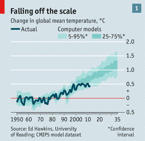pas qu'il n'y a plus de problème."
L'article commence ainsi :
"Durant les 15 années passées, les températures de l'air à la surface de la Terre ont stagné tandis que les émissions de gaz à effet de serre continuaient à progresser. Le monde a, en gros, ajouté 1000 milliards de tonnes de carbone dans l'atmosphère entre 2000 et 2010. Ceci représente environ un quart de tout le CO2 qui a été émis par l'humanité depuis 1750. Et pourtant, comme James Hansen, le chef de l'Institut Goddard de la NASA pour les études Spatiales, le fait observer : "la moyenne glissante sur 5 ans est restée stable pendant une décennie.
Puis, l'article précise :
"La divergence entre la hausse des émissions de gaz à effet de serre et les températures qui ne montent pas, constitue l'un des plus importants casse-têtes actuels de la science climatique." |
La climatologue Judith Curry évoque cet article de The Economist sur son blog Climate etc. Voici ce qu'elle en dit :
"The Economist a publié un article étonnamment bon, intitulé : "Science du climat : Une affaire délicate."
[...]
"Extrait de The Economist : Le désaccord (NdT: entre l'observation et les modèles) signifie que - pour des raisons inexpliquées - il y a eu un retard temporaire entre l'augmentation de dioxyde de carbone et la hausse des températures en 2000-2010. Ou bien, il est possible que la hausse rapide des températures dans les années 1990 ait été une période anormale. Ou encore, comme un nombre croissant de travaux le suggèrent, il est possible que le climat réponde à des hausses de concentration de dioxyde de carbone d'une manière qui n'a pas encore été correctement comprise. Si cette possibilité se révèle vérifiée, elle pourait avoir une signification profonde à la fois pour la science climatique et pour la politique environnementale et sociale"
Cet article doit être lu. Il résume de manière efficace nombre des articles récemment discutés sur Climate Etc. De manière intéressante, cet article repose entièrement sur l'analyse d'articles publiés et de billets de blogs (sans l'intervention de citations de scientifiques).
L'article est rédigé par le nouvel éditeur pour l'énergie et l'environnement de The Economist, John Parker. Quel superbe travail pour quelqu'un qui n'a pas de background évident dans ce domaine. Il m'avait écrit pour que je le conseille et je lui ai envoyé quelques pages tirées de mon prochain témoignage (NdT : à la chambre des représentants US). Il en a manifestement tenu compte. .
Commentaire de JC : J'aimerais voir le "Committee on Climate Change" également répondre à l'article de l'Economist. Et je serais heureuse si le rapport AR5 du GIEC faisait un aussi bon travail que celui que John Parker a réalisé en termes de définition du problème de la détermination de la sensibilité climatique." |
Pour faire écho à Judith Curry, il est tout aussi certain que de nombreux lecteurs français, suisses, belges etc. aimeraient pouvoir lire, dans leur presse francophone, des articles de la qualité de celui du The Economist.
Il est fort probable que c'est l'article du The Economist qui a déclenché un processus qui s'est répandu assez rapidement, au cours du mois d'Avril, dans les organes de presse anglo- et germano-phones qui avaient pourtant supporté, bec et ongles, le "consensus" du GIEC en vigueur. On vit même le New York Times se résoudre, in fine et du bout des lèvres, à écorner le consensus tout comme les agences de presse classiquement politiquement correctes telles que Reuters et l'AFP qui irradient beaucoup de médias de la planète...
Tout cela sans provoquer d'écho notable dans les médias francophones qui ont passé ces informations sous silence ou, au mieux, les ont minimisées comme cela avait été le cas, en 2009, lors de la publications des courriels du Climategate.
Voici donc une brève revue de presse (non exhaustive) internationale sur la révision à la baisse de l'effet du CO2 :
The Economist : "Changement climatique : Un consensus en voie de refroidissement." (un article dans la ligne et qui complète celui signalé ci-dessus)
The New Republic : "Explications sur le hiatus du réchauffement climatique. Bagarre sur les nuances du changement climatique dans un environnement politique toxique" (Le New Republic était en pointe dans l'apologie des théories du GIEC)
The New York Times (US) : "Un changement de température". Justin Gillis, le journaliste (alarmiste) attitré du NYT sur ces questions, reconnaît (du bout des lèvres) que les plus récentes estimations de l'effet du CO2 sont à la baisse.
Scientific American (US) : "Le réchauffement climatique est il plus frais qu'attendu ? de nouveaux résultats de recherche suggèrent que la terre pourrait se réchauffer plus lentement.":
Reuters :" Les climatologues se battent pour expliquer le ralentissement du réchauffement."
"Les scientifiques se battent pour expliquer le ralentissement du changement climatique qui a révélé des lacunes dans leur compréhension et qui défie la hausse globale des émissions de gaz à effet de serre. "
Der Spiegel (All.)"Les chercheurs se battent pour expliquer la pause du réchauffement."
Der Spiegel (All) "La terre se réchauffe moins vite que prévu"
Zeit (All.) : "A propos des surprises du réchauffement climatique".
L'auteur, un supporter écologiste convaincu des théories du GIEC, fait dans l'humour. Il constate que le réchauffement s'est arrêté, se moque des prévisions alarmistes des scientifiques et de leurs explications "adaptatives". A ce propos, il écrit " Pour ce qui est de la science climatique, il semble qu'ils soient en mesure de s'en sortir quoiqu'il arrive.". Il se désole d'avoir fait confiance aux prévisions du GIEC et d'avoir acheté une maison en Uckermark (60km au Nord de Berlin) où il fait très froid alors que l'ex-chancelier Gerhard Schröder, sans doute moins inquiet, lui, en a acheté une au Sud de la Turquie... Il conclut : " Les ours polaires ne disparaissent pas, non, ils déménagent en Uckermark. Je ne suis pas climato-sceptique ; je suis désappointé."
Die Welt (All.) : "Des scientifiques nous avertissent de l'arrivée d'un prochain âge glaciaire ". (Dans l'ambiance du froid persistant qui a régné en Allemagne pendant cet hiver prolongé)
Deutsche Wirtschafts Nachrichten (All.) :“Les scientifiques se sont ridiculisés : le changement climatique ne se produit pas." Sous-titre : "La confiance dans la science du climat est ébranlée."
Introduction de l'article :
" La plupart des modèles climatiques avaient faussement prédit le réchauffement climatique. Malgré des émissions en hausse de ce que l'on appelle les gaz à effet de serre, les températures n'augmentent pas.Il y a de la neige en hiver mais c'est un effet collatéral du réchauffement climatique, disent les climatologues.
Depuis les environs de l'an 2000, le réchauffement climatique s'est évanoui puisqu'il fait à peine plus chaud. Cette évolution a été incorrectement prédite par la plupart des modèles. Les chercheurs ont, à présent, entrepris de rechercher les causes de leurs erreurs de prévision. Tout récemment, le British Weather Service a communiqué que la stagnation du réchauffement allait se poursuivre - au moins en Grande Bretagne (ici). Richard Tol de l'Université d'Essex à Oslo a dit qu'il avait l'impression que la température avait décru durant les cinq dernières années, nous dit Reuters. Une théorie est que la chaleur est stockée dans les profondeurs des océans de telle manière qu'il fait plus froid à la surface. Selon d'autres théories, les gaz industriels (NdT : l'auteur veut sans doute parler les aérosols... qui ne sont pas des gaz mais des particules) ou les nuages peuvent bloquer les rayons du soleil. Ou encore, les effets de ce qu'on appelle les gaz à effet de serre sont plus faibles que ce que l'on pensait auparavant."
Plus loin, l'article sous-titre : "La confiance dans la recherche sur le climat est ébranlée."
"La confiance dans la recherche climatique est encore affaiblie du fait de ces prédictions erronées. L'organisme de l'ONU sur le climat (GIEC) avait dû corriger son rapport de 2007. Ce rapport avait exagéré la fonte des glaciers de l'Himalaya et avait même affirmé qu'ils pourraient avoir complètement disparu en 2035. " |
(Presse germanophone : h/t Pierre Gosselin, Lüning et Varhenholt .)
Neue Zürcher Zeitung (Suisse) : Le "hotspot" absent dans le ciel. : Pour commencer, pour ce qui concerne le "hotspot", les scientifiques ont affaire à une noix qui est encore trop dure pour qu'ils la craquent."
Neue Zürcher Zeitung (Suisse) : "Le climat est moins sensible au CO2 qu'on le pensait" . Analyse à partir d'un article récent d'Otto et al.
La Repubblica (Italie) : "Le mystère de la terre qui ne se réchauffe plus."
Jyllands-posten (Danemark) "Ce sont les catastrophes qui pilotent le débat sur le climat".
Un article de quatre pages, extrêmement critique sur les exagérations du réchauffement climatique. Le JP rapporte les propos du Professeur suédois Lennart Bengtsson, le spécialiste scandinave N°1 en matière de climat. Le JP témoigne que : "Bengtsson en a réellement marre des politiciens, des médias et des climatologues qui en font des tonnes pour dramatiser l'évolution du climat et les conséquences d'une augmentation des gaz à effet de serre dans l'atmosphère." Le JP cite Bengtsson qui déclare :
"Depuis trop longtemps on a permis que les événements météorologiques extrêmes aléatoires structurent le débat sur le climat" ou encore, au sujet de la fonte de l'arctique, Bengtsson rappelle " Nous savons qu'il y avait très peu de glace en Arctique dans les années 30 et 40."
Au sujet de l'antarctique qui pourrait fondre selon le GIEC ; Bengtsson dit : " S"inquiéter de la fonte de l'Antarctique c'est comme s'inquiéter de la possible collision de Vénus avec la Terre dans les prochains milliards d'années, ce qui, comme certains modèles nous l'assurent, pourrait se produire".
Au sujet de la vitesse de réchauffement de la planète le JP cite Bengtsson: “Elles est, et de beaucoup, plus faible que ce que le GIEC a avancé... et c'est totalement différent de ce que la Banque Mondiale a présenté." |
Note : Bengtsson fait ici allusion à la publication récente d'un rapport aussi apocalyptique qu'infondé de La Banque Mondiale, la World Bank. Par ailleurs, voici d'autres déclarations publiques récentes du Prof. Bengtsson qui, sans aucun doute, joue un rôle déterminant dans la politique climatique suédoise et plus généralement scandinave, en matière d'énergie et de climat :
- "Le réchauffement climatique a été confisqué des mains des météorologistes et des climatologues traditionnels et il est maintenant entre les mains de professionnels experts des médias et des personnes bien identifiées (politiques ou autres) du public qui ont trouvé que l'exagération du climat actuel était un moyen efficace pour conserver ou pour obtenir une place sous les feux de la rampe des médias.
- L'intérêt sincère et authentique pour le climat et les processus climatiques s'estompent en même temps que l'attention se limite à des concepts climatiques familiers du grand public ou, plutôt, dirais-je, aux concepts prédominants et politiquement corrects sur le climat.
- En complète opposition avec tous les rapports médiatiques inquiétants sur le drame du changement climatique, en réalité, le climat se réchauffe beaucoup plus lentement qu'on ne le prévoyait.
- Durant la période 1979-2012 pour laquelle nous disposons d'observations fiables, le réchauffement de la basse troposphère tropicale 20°S – 20°N a été seulement d'environ un tiers de ce qui est prédit par les modèles climatiques actuels."
|
Il serait étonnant que les nouvelles prises de position de l'éminent climatologue Suédois n'entraîne pas une inflexion de la politique énergétique et climatique du gouvernement de son pays.
Bulletins-electroniques.com (Veille technologique internationale): Environnement : "Un projet revoit à la baisse l'importance du réchauffement climatique."
The Weekly Standard (US) " Le cirque climatique plie les tentes, tandis que les sources traditionnelles d'énergie connaissent un renouveau abandonnant le domaine des catastrophes et de la fin du monde" (jeu de mots phonétique : " traditional energy sources go from doom and gloom to boom." Fait allusion au boom des gaz de schistes.
The Australian (Australie): "Le hiatus de vingt ans dans l'augmentation des températures laisse les scientifiques perplexes".
The Australian (Higher Education) : "La chaleur quitte les hausses de la température du globe."
BBC News (UK) : "Le ralentissement du climat rend les taux de réchauffement les plus rapides "moins probables". Un titre pour le moins alambiqué. Le reporter "Environnement" de la BBC qui s'est énormément investi pour le GIEC, marche sur des oeufs.
DotEarth (New York Times, Andrew Revkin) : "Un coup d'oeil plus attentif aux points de vue qui visent à modérer la sensibilité climatique". Une revue sur la bataille des sensibilités (voir ci-dessous), vue par un supporter (modéré) du GIEC.
Tne New York Times (Justin Gillis, un fervent supporter des thèses du GIEC) : "Que faire d'un plateau de réchauffement ? ".
...Comme on s'y attend, la presse d'ordinaire plus ou moins neutre ou sceptique ne fait pas de cadeaux. Voici quelques exemples, parmi bien d'autres.
Forbes (Larry Bell) : "L'alarmisme au réchauffement climatique : Le refroidissement persistant peut mettre en péril la climatologie ainsi que les subventions pour les énergies vertes !"
Spiked (US): "L'apocalypse due au changement climatique est repoussée à une date ultérieure. Même les scientifiques au premier rang de l'alarmisme climatique reconnaissent que le monde ne se réchauffe plus aussi vite qu'on ne le pensait auparavant."
Examiner. com (US) : "L'argument CO2 commence à se refroidir."
Energy Tribune (US) : "Nouvelle fracassante : C'est le réchauffement climatique. Non, attendez, ça se refroidit. Non attendez...."
Pendant ce temps là, en Francophonie :
La Croix qui reprend la dépêche de l'AFP et interviewe Jouzel, titre (timidement) : "Le réchauffement climatique marque "une pause"". (Sic, "la pause" est bien entre guillemets dans le titre). On imagine que pour l'auteur de cet article "une pause" entre guillemets ne doit pas être une vraie pause, à la différence de ce que serait, sans doute, une pause sans les guillemets.
L'AFP (Repris par la Libre Belgique) : "L'anomalie qui trouble les climatologues : Bien que la concentration en CO2 ne cesse de croître dans l'atmosphère, la température moyenne se stabilise à la surface du globe."
Par contre, Le Point publie un billet invité (du célèbre biologiste Didier Raoult) qui mentionne la panne du réchauffement climatique et tempête contre l'alarmisme systématique en ces termes : "Assez de prédictions catastrophistes !"
| "Par ailleurs, le réchauffement de la planète, qui paraissait être le symbole le plus clivant entre les modernes et les "irresponsables" et qui a valu à Claude Allègre d'être lynché médiatiquement, s'est arrêté. On ne sait pas si la planète recommencera à se réchauffer bientôt, mais le XXIe siècle ne connaît pas la courbe qui avait été prévue par toutes les doctes assemblées mondiales réunies sur le sujet au XXe siècle. " |
Enfin, (Mise à jour du 29 Mai), suite à la sortie d'un article scientifique complémentaire (Otto et al) au sujet de la réduction de la "sensibilité climatique" (voir ci-dessous) signé par une pléiade d'auteurs dont plusieurs auteurs principaux du GIEC, le journal le Monde présente le plus récent de ces multiples replis élastiques comme une " nouvelle polémique". Son article du 22 Mai est intitulé : " Nouvelle polémique sur l'ampleur du réchauffement climatique", ce qui peut paraître étonnant pour une science que la ligne éditoriale de ce journal a toujours considérée comme une "settled science", "une science aboutie".
3) Derrière le rideau, chez les scientifiques, c'est la "bataille de la sensibilité climatique ".
La suite de ce billet tourne autour de ce qui est couramment nommé "la sensibilité climatique". Les lecteurs(trices) attentifs se souviendront que cette notion a déjà été évoquée à plusieurs reprises dans ce site. En particulier, une discussion intéressante à ce sujet avait pris corps dans le blog Climate Etc. de la climatologue Judy Curry, dont j'avais repris les éléments marquants.
Quelles que soient les réticences émises ici ou là au sujet de la pertinence et la validité même, de la définition de la "sensibilité climatique", celle-ci s'est manifestement imposée au sein de la climatologie mainstream, sans doute parce qu'il s'agit-là d'un paramètre très parlant et assez facile à comprendre. En voici la définition la plus triviale :
La "sensibilité climatique" (sous-entendu au CO2) est la variation de la température moyenne du globe résultant d'un doublement de la concentration du CO2 dans l'atmosphère.
Pourquoi utiliser "un doublement" de la concentration en CO2 et non pas directement la valeur absolue de cette concentration ?
Parce qu'il est généralement admis que la relation qui relie la température moyenne du globe avec la concentration en CO2 devrait être logarithmique. Ainsi c'est la variation du rapport des concentrations entre deux époques différentes qui joue le rôle décisif. Si cette loi logarithmique est correcte, la sensibilité climatique serait égale à la hausse de température entre l'époque préindustrielle où le taux de CO2 était de 280 ppm (280 parties par millions en volume) et l'époque (encore assez lointaine) où le taux pourrait atteindre 560ppm (Nous en sommes à 400 ppm). De même, selon ce modèle, nous devrions subir la même hausse de température égale à la sensibilité climatique si, dans un futur hypothétique, le taux de CO2 passait de 560 ppm à 1120 ppm.
C'est une loi logarithmique et, par conséquent, les conséquences s'amenuisent au fur et à mesure que le taux de CO2 augmente.
Je rappelle que la sensibilité climatique dû à un doublement seul du taux de CO2 est généralement estimée à 1°C. Ce sont les rétroactions additionnelles (dont les nuages et la vapeur d'eau), le plus souvent supposées positives (sauf par Richard Lindzen et Choi), qui pourraient multiplier la sensibilité climatique effective par un facteur de 1,5 à 6 (!) selon les rapports du GIEC. De fait, la question des rétroactions est hautement problématique et sujette aux plus grandes incertitudes et interrogations.
Une fois encore, c'est la climatologue Judy Curry, fine observatrice de l'évolution des idées qui circulent au sein du microcosme de la climatologie internationale, qui avait rédigé une synthèse intéressante sur l'épineuse question de la détermination effective et de la correction de la "sensibilité climatique". Elle avait conclu son billet en écrivant que :
"En prenant en compte les nouveaux éléments de preuve, tout particulièrement dans la méthodologie de l'analyse de la sensibilité, il devient de plus en plus difficile de ne pas abaisser l'estimation de la sensibilité climatique. " |
Un de ses collègues, le climatologue, James Annan, lui-même participant actif aux rapports du GIEC, écrit dans DotEarth, le blog du journaliste scientifique du New York Times, Andrew Revkin :
| "Il y a maintenant plusieurs articles récents qui montrent tous la même chose - que de nombreux facteurs incluant l'augmentation du forçage positif (CO2 et le travail récent sur le noir de carbone), la diminution dans les forçages négatifs (aérosols), tout cela combiné avec le refus obstiné de la planète de se réchauffer comme cela avait été prédit, tout cela rend une estimation d'une forte sensibilité climatique de plus en plus intenable. Une valeur (légèrement) inférieure à 2 paraît certainement beaucoup plus plausible que quoi que ce soit au dessus de 4,5." |
Annan a repris ses affirmations, en substance, dans son propre blog. A ce sujet et en prévision du prochain rapport AR5 du GIEC dont, étant donné sa situation, il ne peut ignorer le contenu, James Annan juge très sévèrement le comportement de cet organisme. il s'exprime ainsi :
| "Comme le GIEC ne peut plus longtemps défendre ses vieilles analyses d'une manière un tant soit peu crédible; il semble qu'il doive s'en remettre à une affirmation infondée du genre : "C'est ce que nous pensons parce que nous avons demandé à nos collègues". C'est, de fait, la stratégie de Lindzen à l'envers : S'étant indissolublement liés à leurs affirmations, politiquement utiles, des valeurs extrêmes, leur réponse face aux nouvelles évidences ne consiste pas beaucoup plus qu'à se mettre les doigts dans les oreilles en chantant "la, la la, je ne peux pas vous entendre". |
Autrement dit, selon Annan , le GIEC fait la sourde oreille.
Commentaire de la climatologue Judith Curry au sujet d'un article de son collègue David Appell, repris dans son site:
"Bon travail de David Appell avec cet article. Vous vous souvenez du tir de barrage que j'ai dû subir l'année dernière parce que j'avais évoqué "la pause" ? La citation qui vaut son pesant d'or dans cet article vient de Pierrehumbert : "Je pense qu'il est exact que quelques discussions assez peu sérieuses au sujet du réchauffement rapide durant le XXe siècle ont conduit certains à des prévisions irréalistes au sujet de l'évolution future du réchauffement. "
Judy Curry conclut : "Je me demande combien de temps cela va-t-il prendre encore pour que ces scientifiques envisagent sérieusement la possibilité que la sensibilité pourrait être inférieure à 2°C. " |
Je suis d'accord avec Judith que ce rétropédalage est plutôt étonnant de la part de Raymond Pierrehumbert (photo ci-contre) qui est un membre très actif du "team" (de Mann et al). Pierrehumbert s'est notamment fait connaître auprès du public francophone, en initiant le lynchage médiatique du Professeur V. Courtillot, repris notamment pas les quotidiens Le Monde, Libération et le Figaro. On a d'ailleurs retrouvé les témoins de la mise en place de cette peu reluisante opération dans les courriels du Climategate.
Dans le même esprit de la reconnaissance d'une surestimation importante de la sensibilité climatique par les modèles qui sous-estiment notablement la variabilité naturelle notamment multidécennale, un nouvel article (disponible ici), publié tout récemment dans le PNAS (Proceedings National Academy of Sciences US, February 5, 2013 vol. 110 no. 6) (Ka-Kit Tung et al), intitulé "Utilisation des données pour identifier les épisodes de réchauffement et de refroidissement dans les données instrumentales", précise (dans le résumé) que :
| "De manière quantitative, la variabilité interne multidécennale, souvent sous-estimée dans les études d'attributions, rend compte de 40% de la tendance récente au réchauffement des 50 dernières années." |
Ce qui, évidemment, équivaut à une baisse considérable de la sensibilité climatique prise en compte dans les modélisations antérieures qui omettaient assez systématiquement la variabilité naturelle (notamment celle due à l'AMO) reconnue par Tung et al.
Au sujet des incertitudes qui affectent les modèles informatiques, un autre climatologue mainstream, Reto Knutti, exprime son inconfort dans le même billet du blog de Judith Curry, au sujet des modélisations climatiques dont il est l'un des experts reconnu, notamment pour ce qui concerne la modélisation informatique de la sensibilité climatique :
| "Même si nous disposons d'une quantité de ces études (et je suis responsable de quelques-unes), je me sens de plus en plus nerveux à leur sujet parce qu'elles sont si sensibles au modèle climatique, aux distributions initiales, au forçage, aux données sur l'océan, aux erreurs des modèles, etc. Tout cela tient à ce que, dans une grande mesure, les contraintes imposées par les données des observations sont faibles de telle manière que le résultat (NdT : des programmes) est dominé par ce que vous y introduisez.." |
Voilà qui est franc. On ne saurait mieux dire.
Pour procurer une vision d'ensemble de la tendance actuelle de l'estimation de la sensibilité climatique, deux climatologues, Patrick J. Michaels et Paul C. Knappenberger ont réalisé une compilation des sensibilités évaluées dans les articles publiés dans les revues scientifiques depuis 2010.
Cette compilation est résumée si-contre sous la forme d'un diagramme aisément compréhensible :
-L'échelle de la sensibilité climatique est indiquée en abscisse.
-Chaque évaluation est représentée par une double flèche portant une courte barre verticale qui représente l'estimation qui possède la plus grande probabilité.
Le trait vertical n'est pas forcément centré par rapport à la double flèche, ce qui signifie que la courbe représentative de la PDF (fonction de distribution de la probabilité) est fréquemment dissymétrique.
A noter que les rapports successifs du GIEC (AR4 et AR5 (à venir)) indiquent des domaines de sensibilité climatique notablement supérieures à celles de tous les articles récents. A noter également que ces sensibilités du GIEC sont centrées autour de 3-3,5°C et couvrent un intervalle allant de 1,7 à 4,5 °C ou plus. Il semble que, dans son prochain rapport, l'AR5, le GIEC ne soit pas décidé à prendre en compte les derniers résultats reportés sur ce diagramme (d'où la remarque acerbe de James Annan "la la la, je ne vous entends pas")..
Il est également notable que ces estimations du GIEC ne sont pas différentes de celles du rapport Charney qui, dès 1979, donnait un intervalle de 1,5°C- 4,5°C , centré autour de 3°C.
Comme on le voit immédiatement, pratiquement tous les articles parus depuis 2010 sur ce sujet donnent une sensibilité climatique dont la moyenne des meilleures estimations tourne autour de 2°C qui est comme on sait, la valeur (arbitrairement fixée) non catastrophique qu'on ne devrait pas dépasser. Au rythme de croissance actuel (+2,1 ppmv par an), nous devrions en avoir encore pour près de 70 ans avant d'atteindre cette limite, selon ces estimations. Mais rien ne dit que la croissance des émissions de CO2 se poursuivra au rythme actuel, pendant les décennies à venir. Elle pourrait augmenter ou diminuer comme, par exemple, en cas d'une utilisation croissante des gaz de schistes, comme c'est le cas actuellement aux USA.
La légende de ce diagramme est la suivante :
(caractère engraissés par PU)
| "Figure 1 : Estimations de la sensibilité climatique à partir des résultats publiés depuis 2010 (en couleur, par comparaison avec les estimations données dans les rapports AR4 (en gris) et AR5 (en noir). Les flèches indiquent les limites de confiance entre 5% et 95% pour chaque estimation ainsi que les meilleures estimations (valeurs médianes de chaque fonction de densité de probabilité, ou encore la moyenne de multiples estimations représentées par des lignes verticales colorées. Ring et al. (2012) ont donné quatre estimations pour la sensibilité climatique et la boite rouge représente ces quatre valeurs. La partie droite de la double flèche du rapport GIEC AR4 (IPCC AR4) est représentée en tiretés parce que le GIEC n'a pas précisé la vapeur supérieure de l'intervalle de 95% de confiance. De même, la valeur inférieure ne s'étend que jusqu'à la limite de confiance de 10% parce que la valeur minimale pour 5% n'est pas indiquée. La ligne verticale en gris clair représente la moyenne des 14 meilleures estimations de ces nouvelles publications. La sensibilité climatique moyenne (3,4°C) donnée par les modèles climatiques utilisés dans le rapport AR5 du GIEC est de 13% plus grande que celle de la "meilleure estimation" de 3.0°C du GIEC. Elle est de 70% plus grande que la moyenne des estimations récentes (2.0°C)." |
A noter en passant que les fortes valeurs de la sensibilité climatique avaient déjà été remises en question, à plusieurs reprises, dans le passé, comme je l'avais signalé dans ce billet (Schwartz avait trouvé 1,1°C) ou dans celui-ci (Chylek 0,5°C-1,2°C) et dans d'autres billets qui les suivent dans la même page.
En résumé, la tendance actuelle de la climatologie est à la baisse pour ce qui concerne les estimations de la sensibilité climatique. A vrai dire, il semble qu'au vu du désaccord croissant entre les prédictions et les observations, notamment pour ce qui est de la température du globe, nombreux sont ceux qui consentent désormais à essayer de prendre en compte la variabilité naturelle (notamment due aux oscillations océaniques), sans doute trop longtemps sous-estimée.
Bien sûr, tout cela procède au rythme de la science. C'est à dire très lentement et à petits pas. L'inertie (au sens mécanique) d'une communauté comme celle des climatologues est considérable, pour ne pas dire énorme.
La climatologue Judith Curry résume et donne son point de vue sur l'état de la situation :
"Jusqu'à ce que nous améliorons notre compréhension de la variabilité interne et naturelle, nous ne savons tout simplement pas comment déterminer la sensibilité au forçage des gaz à effet de serre. La question de savoir comment le climat va évoluer au cours du XXIe siècle est hautement incertaine et, en gros, nous ne savons pas si les différents scénarios d'émissions de gaz à effet de serre seront (ou ne seront pas) les pilotes essentiels à des échelles de temps du siècle ou plus courtes. La simplification exagérée et la confiance excessive sur ce sujet ont agi au détriment de la science climatique. En tant que scientifiques, nous devons prendre en compte les incertitudes, la complexité et le caractère hautement pernicieux du problème. Nous avons trompé les responsables politiques en sur-simplifiant le problème et en faisant preuve d'une confiance exagérée. " |
4) En guise de conclusion : Un clin d'oeil aux "cyclo-fans" (ou "cyclo-maniaques ", comme les nomment les zélotes du GIEC).
Comme le savent les lecteurs réguliers de PU, il existe plusieurs approches différentes pour tenter de comprendre le fonctionnement du climat et d'en tirer des prévisions à moyen et long terme. La première, pratiquée par les climatologues proches du GIEC, consiste à utiliser une méthode "bottom-up"; c'est à dire une modélisation qui part du bas (les mécanismes élémentaires) et remonte vers le haut (le climat). "Le bas" étant constitué par la collection des phénomènes élémentaires qui, pense-t-on, régissent le climat. Le danger de cette pratique est évidemment qu'il faut être absolument certain que l'on connaît, en détail, les mécanismes fondamentaux et, surtout, qu'on n'en oublie aucun. Rajoutez à cela des modèles informatiques ultra-sophistiqués et dotés de nombreux paramètres ajustables et vous obtenez les prédictions/scénarios qui sont représentés dans la section 1 de ce billet.
Une approche différente que l'on pourrait qualifier de "top-down" est utilisée notamment par les chercheurs qui cherchent à évaluer la sensibilité climatique. Elle consiste essentiellement à tenir compte des observations pour corriger périodiquement les modélisations et rectifier le tir en conséquence. Cette méthode est "top-down" parce qu'elle corrige sans cesse les paramètres primaires (le down) à partir des observations sur le climat (le top).
Une troisième méthode, utilisée par des scientifiques "indépendants" que l'on peut qualifier de purement empirique, consiste à admettre d'emblée qu'une modélisation "bottom-up" réaliste du climat de la planète est encore hors d'atteinte, vu la complexité du problème et notre méconnaissance du détail des mécanismes de base. Ainsi, selon ces chercheurs empiristes, la seule chose raisonnable que l'on puisse faire consiste à rechercher dans les données climatiques existantes, l'émergence de périodicités, ou de cycles, qui se sont reproduits au cours des décennies ou des siècles passés. Cette méthode purement empirique n'a évidement pas les faveurs des chercheurs proches du GIEC qui la trouvent non analytique, voire "peu scientifique".
Pourtant, il n 'est pas douteux que la reconnaissance progressive d'une quantité d'oscillations naturelles (mal ou pas reproduites par les modèles), notamment les oscillations océaniques, va dans le sens des empiristes.
Les lecteurs attentifs se souviendront du billet dans lequel j'avais évoqué l'analyse harmonique, sans aucun a priori sur les mécanismes sous-jacents, de la variation de l'anomalie de température du globe par Klyashtorin et Lyubushin (2003) qui faisait suite et complétait celle de Schlesinger et Ramankutty (1994). Lesquelles ont d'ailleurs été rejointes et confirmées par les contributions de nombreux autres auteurs (tels que Scafetta, Syun Ichi Akasofu, Gray, Keenlyside etc. que j'avais cités dans un billet rédigé en 2009.)
Nous avons observé, ci-dessus, la divergence croissante entre les prédictions/scénarios des modèles utilisés par le GIEC et les observations effectives et les interrogations multiples que ce constat a suscité.
Il m'a semblé équitable d'effectuer la même comparaison entre les prédictions de Klyashtorin et Lyubushin, effectuées en 2003, à partir d'une analyse purement harmonique de la variation de la température, avec la réalité objective, comme vous le voyez sur le graphique ci-contre.
Je vous rappelle que l'inclinaison de la sinusoïde figurant sur leur graphique représente une hausse constante de la température d'environ 0,5°C/siècle au moins pour la période considérée, ce qui, selon Syun Ichi Akasofu et d'autres, correspond à la sortie du petit âge glaciaire qui a sévi au XVIIIe et au début du XIXe siècle.
Le graphe en traits noir date de 2003. La partie droite de ce graphique de Klyashtorin et Lyubushin (en hachures verticales) représente leurs prévisions de cette époque.
Le graphe en traits rouges représente la courbe des variations effectives de la température du globe vues par les données officielles actualisées (disponibles jusqu'en Mars 2013) HadCRUT4.
Certes, il est encore trop tôt pour conclure mais la ressemblance entre ces deux graphes est assez frappante, notamment pour la période récente.
Et de fait, la "stagnation" actuelle des températures qui agite si fort le petit monde médiatico-scientifique comme nous l'avons vu, avait été prévue par ces deux auteurs (ainsi que, depuis, par beaucoup d'autres, dont une partie importante de l'école Russe, Scafetta, Gray, Akasofu etc.) dès 2003, c'est à dire, il y a dix ans, sans remonter jusqu'à Schlesinger et Ramankutty qui, dès 1994, avait décrit cette sorte de sinusoïde inclinée avec les maigres données dont ils disposaient à l'époque. Il suffisait de la prolonger... Si ces auteurs ont raison et comme je vous l'avais raconté dans cette page, nous allons plutôt vers le froid que vers le chaud. Nous verrons.
Wait and see !
Comme toujours, c'est à vous de tirer les conclusions mais ce qui est certain c'est que nous vivons une époque passionnante et que vous ne trouverez rien de tout ce que je vous ai rapporté ci-dessus, dans aucun de nos médias.
Stay tuned |
13 Mars 2013 : Parmi beaucoup d'autres, voici trois publications rassurantes et récentes qui vont à l'encontre des affirmations avancées dans le Rapport AR4 du GIEC et reprises en boucle dans les médias.
Ces articles, dûment revus par les pairs et publiés dans des revues scientifiques réputées, concernent :
- Une analyse exhaustive de la hausse du niveau des mers durant le XXe siècle.
- L'avenir de la forêt amazonienne et d'autres forêts tropicales que certains disaient en grand danger de disparition du fait des émissions de CO2 anthropiques.
- L'aggravation supposée des sécheresses et des inondations.
Voici une brève présentation de ces articles, avec leurs titres, auteurs et résumé.
1) Un article récent, résultant d'une vaste collaboration internationale, ne détecte aucune empreinte significative de l'activité humaine dans la hausse du niveau des océans durant tout le XXe siècle.
Pas moins de 17 auteurs, parmi les plus connus du domaine, appartenant à 15 institutions internationales, ont collaboré pour publier un article qui fait le point sur les connaissances actuelles au sujet de la hausse du niveau des océans.
Voici l'article avec se références :
Source (résumé accessible gratuitement).
Journal of Climate 2012 ; Publication de l'AMS, l'American Meteorological Society.
doi: http://dx.doi.org/10.1175/JCLI-D-12-00319.1
"Twentieth-century global-mean sea-level rise: is the whole greater than the sum of the parts ?"
"Hausse du niveau des océans durant le XXe siècle : Le total est-il plus grand que la somme des contributions ?"
J.M.Gregory1,2, N. J.White3, J.A. Church3, M. F. P. Bierkens4,5, J. E. Box6, M. R. van den Broeke7, J.G. Cogley8, X. Fettweis9,7, E.Hanna10, P.Huybrechts11, L. F.Konikow12, P.W. Leclercq7, B.Marzeion13, J.Oerlemans7, M. E. Tamisiea14, Y.Wada4, L.M.Wake15, R. S.W. van de Wal7
7th November 2012
1 NCAS-Climate, University of Reading, Reading, UK.
2 Met Office Hadley Centre, Exeter, UK.
3 CAWCR, CSIRO Marine and Atmospheric Research, Hobart, Australia.
4 Department of Physical Geography, Utrecht University, Utrecht, The Netherlands.
5 Deltares, Delft, The Netherlands.
6 Byrd Polar Research Center, and Department of Geography, Atmospheric Sciences Program, The 1011 Ohio State University, Columbus, Ohio, USA.
7 Institute for Marine and Atmospheric research Utrecht, Utrecht University, Utrecht, The Nether lands.
8 Department of Geography, Trent University, Peterborough, Ontario, Canada.
9 Departement de Ge´ographie, Universite´ de Liège, Liège, Belgium.
10 Department of Geography, University of Sheffield, Sheffield, UK.
11 Earth System Sciences and Departement Geografie, Vrije Universiteit Brussel, Brussels, Belgium.
12 U. S.Geological Survey, Reston, Virginia, USA.
13 Centre of Climate and Cryosphere, Institute of Meteorology and Geophysics, University of Inns- 1920 bruck, Innsbruck, Austria.
14 National Oceanography Centre, Liverpool, UK.
15 Department of Geography, University of Calgary, Calgary, Canada. |
Le résumé original en anglais suivi d'une traduction en français.
Abstract : Confidence in projections of global-mean sea-level rise (GMSLR) depends on an ability to account for GMSLR during the 20th century. There are contributions from ocean thermal expansion, mass loss from glaciers and ice sheets, groundwater extraction and reservoir impoundment. We have made progress towards solving the “enigma” of 20th-century GMSLR—that is, the observed GMSLR has been found to exceed the sum of estimated contributions, especially for the earlier decades. We propose that: thermal expansion simulated by climate models may previously have been underestimated owing to their not including volcanic forcing in their control state; the rate of glacier mass loss was larger than previously estimated, and was not smaller in the first than in the second half of the century; the Greenland ice-sheet could have made a positive contribution throughout the century; groundwater depletion and reservoir impoundment, which are of opposite sign, may have been approximately equal in magnitude. We show that it is possible to reconstruct the timeseries of GMSLR from the quantified contributions, apart from a constant residual term which is small enough to be explained as a long-term contribution from the Antarctic ice-sheet. The reconstructions account for the approximate constancy of the rate of GMSLR during the 20th century, which shows small or no acceleration, despite the increasing anthropogenic forcing. Semi-empirical methods for projecting GMSLR depend on the existence of a relationship between global climate change and the rate of GMSLR, but the implication of our closure of the budget is that such a relationship is weak or absent during the 20th century.
Résumé : La confiance que l'on peut attribuer aux projections de la hausse moyenne du niveau des mers du globe (GMSLR : Global Mean Sea Level Rise) repose sur notre capacité à rendre compte de la hausse moyenne du niveau des mers du globe pour le XXème siècle. Nous avons fait des progrès vers la solution de "l'énigme du GMSLR du XXème siècle", c'est à dire qu'on avait trouvé que la valeur observée de la hausse moyenne du niveau des mers du globe excédait la somme des contributions estimées, et ceci tout particulièrement pour les décennies les plus anciennes. Nous proposons que la dilatation thermique qui avait été préalablement estimée par les modèles climatiques a été surestimée du fait de la non-prise en compte de l'action du forçage volcanique. De même, le taux de perte des glaciers était plus important que ce que l'on avait antérieurement estimé et il n'était pas moins important durant la première moitié du siècle que durant la seconde, la masse glacée du Groenland pouvant avoir apporté une contribution positive tout au long du siècle et la déplétion des eaux souterraines et le remplissement des réservoirs qui sont de signes opposés, peuvent avoir apporté des contributions approximativement égales. Nous montrons qu'il est possible de reconstruire les données du GMSLR à partir des contributions quantifiées à l'exception d'un terme résiduel constant qui est suffisamment petit pour être attribué à la contribution à long terme de la nappe glacée antarctique.
Les reconstructions rendent compte d'une stabilité approximative du taux de GMSLR durant le XXe siècle qui ne montre qu'une faible ou pas d'accélération, en dépit de la croissance du forçage anthropique. Les méthodes semi-empiriques de projection du GMSLR durant le XXe siècle dépendent de l'existence d'un lien entre le changement climatique global et le taux du GMSLR mais la clôture du budget que nous proposons implique qu'un tel lien est faible ou absent durant le XXe siècle. |
Cet article fait allusion à "l'énigme du GMSLR du XXe siècle". En effet, les études antérieures se trouvaient confrontées à un dilemme épineux : En additionnant les contributions (supposées) à la hausse du niveau des mers des différentes sources (glaciers, prélèvement des nappes aquifères, fonte du Groenland, dilatation thermique etc.) on trouvait que la hausse observée excédait la somme des contributions. Autrement dit, on se demandait d'où pouvait bien provenir l'apport d'eau qui faisait défaut. En termes d'économie, le budget n'était pas clôturé. La présente étude a remis en question le volume d'un certain nombre des contributions élémentaires et est parvenue à "clôturer le budget" et donc à résoudre "l'énigme du GMSLR".
Voici maintenant une figure extraite de l'article. En haut du graphique, les différentes courbes en trait fin indiquent les variations des différentes contributions durant le XXe siècle ainsi qu'en bas, la courbe totale du GMSLR durant cette période.
Comme on peut le constater et conformément aux conclusions des auteurs de l'article, on ne voit pas d'accélération ni pour le niveau global ni pour aucune des différentes contributions durant la seconde moitié du XXe siècle par rapport à la première moitié de ce même siècle. Ceci est contraire aux attentes (du GIEC) d'une influence marquée de l'effet de serre car, comme l'on sait, ce dernier aurait fortement augmenté durant la seconde moitié du XXe siècle.
Légende :"La Fig. 10 (b) montre les synthèses des différentes données qui donnent la plus petite différence RMS ( Root mean square = méthode des moindres carrés) pour les données observationnelles TG-J."
Que peut-on retenir ?
1) La hausse du niveau des mers durant le XXe siècle a été pratiquement constante avec une accélération, si elle existe, indiscernable. Nous avons déjà évoqué cette question à plusieurs reprises dans cette page. En d'autres termes, l'augmentation du CO2, très notable à partir de la seconde moitié du XXe siècle, n'a pas accéléré la hausse du niveau des mers qui avait d'ailleurs commencé bien avant le XXe siècle.
2) Le taux de fonte des glaciers "n'a pas été plus petit durant la première moitié du XXe siècle que durant la seconde" nous disent les auteurs. En d'autres termes, et du point de vue de la hausse du niveau des mers, l'augmentation de CO2 n'a pas accéléré la contribution de la fonte des glaciers.
3) Les projections pour le futur de la hausse du niveau des mers "dépendent de l'existence d'un lien entre le changement climatique global et la hausse du niveau des mers", nous disent les auteurs mais selon ces derniers ce lien, s'il existe, est indiscernable durant tout le XXe siècle. Autrement dit, les modèles du GIEC pour le futur GMSLR reposent sur des hypothèses démenties par les observations.
_________________________________________________________________________________________________
Voici l'article suivant, publié récemment dans Nature. Il remet fondamentalement en question les prédictions alarmistes qui avaient été avancées dans le dernier rapport (AR4) du GIEC au sujet du "dépérissement", voire de la "disparition" annoncée de la forêt Amazonienne du fait du changement climatique. En bref, grâce à l'enrichissement de l'atmosphère en CO2 qui favorise la croissance des arbres et améliore les conditions d'utilisation de l'humidité, la forêt amazonienne pourrait ne pas, ou très peu, souffrir du changement climatique. Les modèles les plus récents qui prennent en compte ce phénomène de fertilisation des forêts par le CO2, donnent (évidemment) des projections beaucoup plus rassurantes que les précédentes.
2) Que vont devenir la forêt amazonienne et, plus généralement, les forêts tropicales ?
Ceux qui ont lu les billets relatifs à l'Amazongate (et suite ici ) se souviendront des épisodes tumultueux, relatifs au futur de la forêt amazonienne, qui ont succédé à la publication de l'AR4 du GIEC en 2007. Tout cela se passait en 2009-2010.Le temps a passé, les observations et les modèles se sont affinées.
Un article récent, publié dans Nature (494, 21 Février 2013) et signé notamment par le Prof. Peter Cox et ses collègues de l'Université d'Exeter, du Hadley Center et du Center for Ecology and Hydrology de Wallingford (UK), fait le point des connaissances sur la question, près de trois ans après les épisodes de l'Amazongate du rapport du GIEC AR4. Voici le fac-similé de la présentation de l'article, suivi du résumé en anglais et d'une traduction en français.

Abstract : The release of carbon from tropical forests may exacerbate future climate change, but the magnitude of the effect in climate models remains uncertain. Coupled climate–carbon-cycle models generally agree that carbon storage on land will increase as a result of the simultaneous enhancement of plant photosynthesis and water use efficiency under higher atmospheric CO2 concentrations, but will decrease owing to higher soil and plant respiration rates associated with warming temperatures. At present, the balance between these effects varies markedly among coupled climate–carbon-cycle models, leading to a range of 330 gigatonnes in the projected change in the amount of carbon stored on tropical land by 2100. Explanations for this large uncertainty include differences in the predicted change in rainfall in Amazonia, and variations in the responses of alternative vegetation models to warming. Here we identify an emergent linear relationship, across an ensemble of models, between the sensitivity of tropical land carbon storage to warming and the sensitivity of the annual growth rate of atmospheric CO2 to tropical temperature anomalies. Combined with contemporary observations of atmospheric CO2 concentration and tropical temperature, this relationship provides a tight constraint on the sensitivity of tropical land carbon to climate change. We estimate that over tropical land from latitude 30° north to 30° south, warming alone will release 53±17 gigatonnes of carbon per kelvin. Compared with the unconstrained ensemble of climate–carbon-cycle projections, this indicates a much lower risk of Amazon forest dieback under CO2-induced climate change if CO2 fertilization effects are as large as suggested by current models. Our study, however, also implies greater certainty that carbon will be lost from tropical land if warming arises from reductions in aerosols or increases in other greenhouse gases.
Résumé : Il est possible que le relâchement du carbone par les forêts tropicales exacerbe le changement climatique mais l'amplitude de cet effet reste incertain dans les modèles climatiques. Les modèles couplés climat-cycle du carbone sont généralement d'accord sur le fait que le stockage du carbone sur les continents va augmenter du fait de l'augmentation concomitante de la photosynthèse des végétaux et de l'amélioration de l'efficacité de l'utilisation de l'eau sous l'effet de concentrations de CO2 atmosphériques plus élevées, mais aussi qu'elles décroîtra sous l'effet de l'augmentation de la respiration des sols et des plantes associées à l'augmentation des températures. A l'heure actuelle, l'équilibre entre ces effets varie de manière prononcée parmi les modèles couplés climat-cycle du carbone, conduisant à une incertitude de 330 gigatonnes dans les variations projetées du carbone stocké dans les parties continentales tropicales en 2100. Les explications de cette grande incertitude incluent des différences dans les prédictions des variations de pluviométrie en Amazonie, ainsi que des variations dans les réponses des différents modèles de végétation au réchauffement
Dans cet article, nous identifions une relation linéaire émergente valable pour un ensemble de modèles, entre la sensibilité
des continents tropicaux au stockage du carbone en fonction du réchauffement et la sensibilité de la croissance annuelle du taux de CO2 atmosphérique en fonction des anomalies de températures tropicales. Si on la combine avec les observations contemporaines de la concentration de l'atmosphère en CO2 et celles des températures tropicales, cette relation implique une contrainte forte sur la sensibilité du carbone sur les terres tropicales vis à vis du changement climatique. Nous estimons que pour ce qui est des terres tropicales couvrant de 30° de latitude Nord jusqu'à 30° de latitude Sud, le réchauffement seul relâchera 53±17 gigatonnes de carbone par Kelvin. Par comparaison avec les ensembles de modèles couplés climat-cycle du carbone, non contraints, ceci implique un risque beaucoup moins élevé d'une dégradation de la forêt amazonienne du fait du changement climatique induit par le CO2 si la fertilisation par le CO2 est aussi grande que cela est suggéré par les modèles actuels. Cependant, notre étude suggère également une plus grande certitude que du carbone serait perdu par les forêts tropicales si le réchauffement se produit du fait d'une réduction des aérosols ou d'une augmentation des autres gaz à effet de serre. |
Le Professeur Cox s'est également exprimé dans la presse scientifique qui rapporte ainsi ses propos :
| "L'auteur principal, le Professeur Peter Cox de l'Université d'Exeter explique : Nous nous sommes battus pendant plus d'une décennie pour répondre à la question suivante "Est-ce que la forêt Amazonienne va disparaître à cause du changement climatique ?". Notre étude montre que le risque est faible si le changement climatique est associé à une plus forte croissance des végétaux du fait de l'augmentation du taux de dioxyde de carbone [...] PeterCox a déclaré que cette découverte a été un soulagement "Bien heureusement, l'effet des émissions de carbone est contrebalancé par les effets positifs de la fertilisation de la croissance des plantes par le dioxyde de carbone dans la plupart des scénarios du XXIe siècle, de telle manière qu'on peut s'attendre à ce que les forêts continuent à accumuler du carbone." |
Mais évidemment et en toute logique, Peter Cox a également précisé que le sort des forêts amazonienne serait moins assuré si le réchauffement se poursuivait du fait d'autres causes que les émissions de CO2, comme cela est précisé dans le résumé.
Voilà qui devrait clore, au moins pour un temps, les débats houleux qui ont succédé à la découverte de l'Amazongate.
______________________________________________________________
Un autre sujet de préoccupation, celui de l'aggravation possible des sécheresses et des inondations, a fait l'objet d'une quantité de spéculations plus alarmistes les unes que les autres dans les médias et jusque dans les rapports du GIEC. La quasi totalité de ces spéculations étaient basées sur les résultats de modélisations numériques qu'il était important de valider (ou invalider) par les observations.
C'est l'objet de l'article suivant. Le résultat est étonnant et rassurant.
___________________________________________________________________________________________________
3) Le réchauffement climatique était censé créer des pluies plus intenses dans les zones humides et des sécheresses plus accentuées dans les zones moins arrosées. C'est évidemment très inquiétant et cela a été mis en avant par le GIEC et par les alarmistes. C'est ainsi que l'on peut lire, dans le dernier rapport AR4 du GIEC (2007), cette introduction au sujet de l'aggravation projetée des sécheresses et des inondations (WGII, chap. 3.4.3) :
"Un climat plus chaud, avec sa variabilité climatique associée, augmentera le risque, tout à la fois, des sécheresses et des inondations (Wetherald and Manabe, 2002; Table SPM2 in IPCC, 2007)" |
De fait, les observations montrent le contraire. En fait, au moins depuis 1940 et jusqu'en 2009 (date de la fin de l'étude), le sec est devenu plus humide et l'humide est devenu plus sec, ce que l'on peut considérer comme une bonne chose. Une répartition plus homogène de la pluviométrie sur la planète est, sans doute, globalement bénéfique pour l'humanité.
Voici, parmi d'autres, l'exemple d'un article publié récemment dans Geophysical Research Letters qui en atteste en termes particulièrement transparents.
Il est titré : "Evolutions de la variabilité des précipitations sur les continents du globe". Ses auteurs sont australiens. Comme on peut le comprendre, les Australiens sont particulièrement vigilants sur ces questions de sécheresses et d'inondations. Une partie importante des recherches consacrées à ces questions provient d'ailleurs de ce continent.
Les points clefs (indiqués par les auteurs, en dessous du titre - cela permet un examen rapide de l'article)
- Nous rapportons sur une réduction de la variabilité P et expliquons comment cela s'est produit.
- La raison pour laquelle il y a une réduction de la variabilité est que le sec devient plus humide et l'humide devient plus sec.
- Une nouvelle méthode de détection est proposée pour confirmer ces conclusions.
|
Résumé :
Dans notre climat en train de se réchauffer, on s'attend, de manière générale, à ce que la variabilité des précipitations (P) augmente aussi bien sur des échelles quotidiennes et mensuelles qu'inter-annuelles.
Dans cet article, nous analysons les observations mensuelles de P (Ndt : la variabilité des précipitations) de 1940 à 2009 pour les surfaces continentales du globe en utilisant une nouvelle analyse théorique qui permet de distinguer entre les variations de la variance globale de P en fonction du temps et de l'espace.
Nous rendons compte d'une tendance globale et temporelle quasi-nulle de la moyenne de P pour le globe. De manière inattendue, nous avons trouvé une réduction dans la variance de P en fonction de l'espace et du temps qui est due à une redistribution où, en moyenne, le sec deviendrait plus humide et l'humide deviendrait plus sec. Les variations dans la variance de P ne sont pas reliées aux variations de température. Au contraire, les plus grandes variations de la variance de P sont généralement observées dans les régions présentant les plus fortes émissions d'aérosols. Nos résultats combinés avec les études de modélisation récentes nous conduisent à spéculer que la charge en aérosols a joué un rôle clef dans les modifications de la variabilité de P. |
Ce résumé est très clair. En d'autres termes, cette étude rend compte de deux observations importantes :
-La variabilité des précipitations pour le globe n'a pas évolué durant la période étudiée c'est à dire de 1940 à 2009. Autrement dit, l'augmentation (considérable) des émissions de CO2 dans l'atmosphère durant cette période n'a apparemment pas modifié la variabilité pluviométrique globale des continents de la planète, ni en termes de surfaces affectées, ni en termes de variations saisonnières.
-Durant cette même période, on a assisté à une réduction des différences de pluviométrie entre les zones sèches et humides, c'est-à-dire à une redistribution telle que les zones et les saisons sèches deviennent plus humides et les zones et les saisons humides deviennent plus sèches.
Ceci est "inattendu" selon les auteurs eux-mêmes et en opposition frontale avec les supputations alarmistes qui annonçaient que le réchauffement (anthropique) conduirait à une aggravation de la situation des zones désertiques et des zones inondables.
A noter que constatant les divergences entre les modèles et les observations, les auteurs spéculent (c'est leur mot) sur l'intervention possible des aérosols. L'effet réel des aérosols qui est peu ou mal compris (comme celui des nuages) avait été également invoqué pour tenter d'expliquer pourquoi la température du globe avait baissé de 1945 à 1976 alors que le taux de CO2 atmosphérique avait augmenté.
4) Conclusion
Voici donc, cher(ère) lecteur(trice), trois articles récents qui vous permettront de répondre aux multiples affirmations plus ou moins fantaisistes qui circulent dans les médias et dans les forums, à propos du futur de la forêt amazonienne, à propos de l'extension "catastrophique" des sécheresses et des inondations et à propos de la hausse du niveau des mers qui serait "accélérée" par nos émissions de CO2.
En réalité, la littérature scientifique que l'on peut lire de nos jours, fourmille d'articles de cette nature qui, grâce aux progrès constants des moyens d'observations, recadrent, et souvent démentent, un certain nombre d'idées catastrophistes, communément admises et sélectivement répercutées par les médias et une presse complaisante.
Nul doute que ces articles qui, peu à peu, et jour après jour, remettent en cause les affirmations courantes sur l'évolution des paramètres fondamentaux du système climatologique, sont considérés par certains comme embarrassants et que les signaler sera considéré comme un péché, parce que, selon eux, ce faisant, on "sème le doute" pour reprendre une
expression chère à Nicolas Hulot (sur France Inter), à Naomi Oreskes (auteur du livre "les marchands du doute") où, en termes plus choisis, à Bernadette Bensaude-Vincent (Marianne, 11-17 Août 2012) et à quelques autres.
On peut comprendre que des personnes qui n'ont jamais exercé elles-mêmes la moindre activité de recherche dans des domaines scientifiques, puissent s'imaginer que la Science procède par affirmations successives qui s'inscrivent dans le marbre pour l'éternité et que les remetttre en cause relève d'un esprit pervers (adepte de théories du complot), mal informé ou politiquement orienté, ou encore, financièrement impliqué, comme cela est souvent suggéré.
Il n'en est rien. La Science procède, comme elle l'a toujours fait, par une succession d'hypothèses et de confirmations ou de démentis, d'erreurs et de corrections qui surviennent parfois longtemps après et sur lesquelles s'élaborent de nouvelles théories et ainsi de suite.
En réalité comme le disait Richard Feynman, nous ne sommes réellement certains de très peu de choses, vraiment très peu, pour ne pas dire de rien : .
"Nous savons qu'il est d'une importance fondamentale que, de manière à progresser, nous devons reconnaître notre ignorance et laisser une place au doute. La connaissance scientifique consiste en un corpus d'affirmations qui ont des degrés variés de certitude - quelques-unes sont très incertaines, d'autres presque sûres, mais aucune n'est d'absolument certaine."
Ou encore :
"Il n'y a pas de mal à douter ou à être sceptique car c'est grâce à cela que sont faites les nouvelles découvertes."
Richard Feynman, Letter to Armando Garcia J, December 11, 1985
|
Ainsi, dans le domaine de la climatologie comme dans les autres domaines de la Science, il n'existe pas de "semeurs de doute". Cette expression sommaire relève peut-être de la politique mais certainement pas de la science. En matière de sciences, il n'existe que des auteurs comme la trentaine que j'ai cités ci-dessus (et plusieurs centaines d'autres dans d'autres billets sur ce site) qui n'ont fait que leur travail de scientifiques tout comme je fais le mien en vous le signalant.
Stay tuned.
A suivre...
|
14 Janvier 2013 : La version N°2 (sur 3) du prochain rapport du GIEC, l'AR5, est rendue disponible sur Internet. Elle contient quelques graphiques particulièrement révélateurs...
Compte tenu de l'organisation semi-publique du processus de construction des rapports successifs du GIEC, cela ne pouvait que se produire : Le 13 Décembre 2012, un relecteur (reviewer) de la seconde étape préparatoire (le SOD : The Second Order Draft) du prochain rapport du GIEC (l'AR5 : l'Assessment Report #5) dont la version finale devrait être progressivement rendue publique à partir de Septembre 2013, a décidé, au nom de la transparence (par ailleurs, revendiquée par le GIEC), de rendre public le résultat des travaux préparatoires du groupe de travail WGI (la science sous-jacente).
A noter, en passant, que, selon les statuts actuels, quiconque ayant publié un minimum (par exemple 5 articles) sur ces sujets, peut demander à être relecteur, c'est à dire à être autorisé à soumettre des commentaires et des critiques sur le document de travail qui lui est fourni. Il est de la responsabilité des auteurs principaux et des autres instances successives (voir ci-dessous) impliquées dans la rédaction du document final de tenir compte (ou pas) des remarques et des critiques des quelques 800 relecteurs agréés.
1) Introduction
Comme le savent les lecteurs de ce site, les volumineux rapports du GIEC sont rédigés par trois groupes de travail. Ces derniers se consacrent à la science du climat (le WGI), aux impacts, à la vulnérabilité et à l'adaptation (WGII) et enfin aux remèdes et solutions (WGIII). Un document spécifique, appelé SPM (Summary for Policymakers) destiné aux décideurs, est également rédigé à cette occasion. Le rapport complet compte quelques milliers de pages et il est évident que c'est le SPM qui reçoit le maximum d'attention de la part des médias et des politiques. Les rapports des groupes II et III s'appuient sur les prévisions et les conclusions du groupe I qui est, de fait, l'élément clef des rapport des GIEC.
Les rapport successifs, publiés depuis 1990, sont connus sous les noms de FAR (First Assessment Report, 1990), SAR (Second AR, 1995), TAR (Third AR, 2001), AR4 (Assessment Report N°4, 2007).
Le prochain, celui dont nous disposons du document préparatoire, sera l'AR5 (Assessment Report N°5, 2013) du GIEC.
J'ai déjà eu l'occasion de vous présenter et de commenter l'organigramme (un peu étonnant) du processus de rédaction des rapports successifs du GIEC tel qu'il est disponible sur le site de cet organisme. Je vous le rappelle ci-contre.
J'ai indiqué sur ce diagramme, à l'aide d'une ellipse jaune et d'une flèche bleue, l'étape précise de l'élaboration du rapport qui est concernée par le document SOD AR5 qui a été rendu public. Ce document et les liens qui renvoient aux différentes sections du SOD AR5 sont devenus "viraux" sur Internet, comme l'on dit. On les trouve dans de très nombreux sites y compris dans celui du New York Times où vous trouverez tous les liens nécessaires.
Comme on peut le constater sur ce diagramme, les interventions des personnels politiques gouvernementaux y sont nombreuses, et notamment surviennent à des étapes parfois surprenantes, c'est à dire, en fin de processus, une fois que le rapport scientifique a été rédigé.
Par exemple, on peut s'interroger sur la justification de l'examen et de la validation d'un rapport scientifique rédigé par un nombre conséquent de scientifiques, par des représentants gouvernementaux, tel que c'est précisément le cas, en ce moment même, pour le SOD de l'AR5...
La lecture des documents rendus publics sur Internet, fussent-ils préparatoires, est riche d'enseignement sur l'état d'esprit des rédacteurs des rapports successifs du GIEC, notamment à la lumière des évolutions d'un certain nombre de paramètres climatiques.
Les lecteurs passionnés et attentifs (il y en a beaucoup) se feront un devoir de parcourir quelques sections du document complet mais ceux qui n'en auront ni le loisir ni le courage tireront profit de la lecture du seul Résumé Technique qui constitue un survol convenable du rapport, ce que ne fait que rarement le résumé pour les décideurs, le SPM.
Quelles ont été les réactions lors de la mise en ligne de ce document ?
- Bien que nous assurant de la parfaite transparence de la totalité du processus de construction de ses rapports, Le GIEC a déploré (mais reconnu) la "fuite" du SOD AR5, sur son site officiel ce qui en atteste l'authenticité sur laquelle personne n'a d'ailleurs émis le moindre doute. Les avis des "piliers" habituels du GIEC sont partagés. Certains déplorent ce qu'ils appellent une "fuite" mais d'autres, comme le Prof Piers Forster de l'université de Leeds considère que les différents documents rédigés durant l'élaboration des rapports du GIEC devraient être rendus complètement accessibles au public au moins dans le but de minimiser les découvertes postérieures de bourdes dérangeantes comme il y en a eu plusieurs après la publication de l'AR4 de 2007.
Les réactions de la presse et de la blogosphère internationale faisant suite à la publication de ces documents sont nombreuses et variées, selon l'orientation de ces deniers. Par exemple,
-Andrew Revkin du NYT, dans un billet intitulé "La fuite du document préparatoire du comité sur le climat plaide en faveur d'une refondation du processus" rappelle qu'il y a eu des précédents mais que cela peut contribuer à la transparence des débats (revendiquée par le GIEC).
- La climatologue Judy Curry, bien connue des lecteurs de ce site, fait la première remarque suivante, après un survol rapide du contenu du rapport, le 13 Déc.:
"J'ai chargé le SPM (Résumé Pour les Décideurs) et quelques autres chapitres. L'extrême excès de confiance de beaucoup de leurs conclusions est stupéfiant" (source).
Plusieurs jours plus tard, le 19 Déc., et après un nombre considérable de discussions qui ont eu lieu sur Internet au sujet du SOD de l'AR5, Judith Curry donne son point de vue
"La fuite du SOD (Second Order Draft, le second document préparatoire) a été une bonne chose. Le GIEC a encore la possibilité de faire un bien meilleur travail et la discussion à grande échelle qui a eu lieu dans la blogosphère et même dans les médias alignés (NdT : chez les anglo-saxons) exerce une pression sur les auteurs du GIEC, ce qui les poussera à prendre en considération des problèmes qu'il ne pourront pas glisser sous le tapis comme ils l'ont fait dans les précédents rapports." |
Il y aurait évidemment beaucoup à dire sur les diverses affirmations que l'on trouve dans l'abondante littérature que constitue le SOD de l'AR5. Cependant, pour ma part et prenant en compte le fait que ces textes seront probablement amendés dans la suite du processus devant conduire au rapport final, je m'abstiendrai de commenter les textes (à une citation près qui concerne le rôle du soleil) avant la publication du rapport définitif.
Par contre, et parce qu'il est très probable que s'agissant de projections des modèles et de données d'observations, ils ne seront pas (ou peu) modifiés, je rapporterai sur un certain nombre de graphiques qui me paraissent particulièrement importants et révélateurs.
Il est évident que tous ceux qui ont suivi attentivement la chronologie du développement des observations et des modèles durant ces années écoulées, attendaient, avec une certaine impatience, de savoir comment le GIEC allait pouvoir s'arranger de tout cela.
Ils n'ont pas été déçus, comme vous allez le voir...
2) Quelques graphiques clefs du SOD de l'AR5 :
A) La température moyenne du globe :
A titre de rappel historique, voici, ci-dessous, une des toutes premières prédictions de l'évolution de la température moyenne du globe, publiée en 1988, à l'époque de la création du GIEC (Le titre de la publication de James Hansen et al au GRL était "Prévision du changement climatique global selon un modèle tridimensionnel du Goddard Institute for Space Studies"). Cette prévision/prédiction, présentée en 1988 devant le Sénat US a joué un rôle pivot pour alerter l'opinion publique mondiale sur "l'imminence du réchauffement climatique anthropique". Elle a déjà été mentionnée à plusieurs reprises sur ce site. On ne saurait minimiser son importance dans le déroulement ultérieur de l'affaire de réchauffement climatique.
Nous sommes à présent
en 2013 et il est instructif de comparer les prévisions de l'époque avec la réalité objective de l'évolution des températures telles qu'elles ont été observées depuis 25 ans, comme l'a fait le Prof. Norvégien Jan-Erik Solheim à Oslo, en Juin 2012.
Solheim a réalisé le graphe ci-contre; à partir des prévisions publiées par James Hansen et al en 1988.
Ce graphe indique (la ligne noire fluctuante, moyenne glissante sur cinq ans) les variations de la température du globe par comparaison avec les prédictions/prévisions de l'époque, représentées par les lignes rouge, bleue et verte.
A) Ligne bleue : le modèle de Hansen et al supposait une augmentation des émissions de 1,5% de CO2 par an, depuis 1988, ce qui est bien inférieur à ce qui s'est produit en réalité (environ +2,5% par an, depuis l'an 2000). Dans les conditions réelles l'augmentation de la température prévue par le modèle serait donc bien au dessus de la courbe bleue, approximativement à l'endroit indiqué par l'extrémité de la flèche "predicted".
B) Ligne verte : Augmentation constante des émissions depuis l'an 2000.
C) Ligne rouge : Stabilisation des émissions depuis l'an 2000.
Comme on le voit immédiatement sur ce graphique, la surestimation de l'anomalie de température prévue par le modèle du Goddard Institute en 1988 qui a déclenché l'alarme, est d'environ un facteur 2,5 ce qui est considérable.
Il peut paraître étonnant que les différents rapports des différentes institutions, notamment américaines, qui gèrent ces affaires de climat, passent systématiquement ces observations sous silence.
Bien entendu, il est indéniable que de grands progrès ont été réalisés en matière de simulations numériques et d'observations (notamment satellitaires) depuis cette époque. Néanmoins et comme nous allons le voir, les surestimations du réchauffement ont persisté jusqu'à nos jours. Ceci n'est pas très étonnant si on se souvient que les modèles actuels reposent exactement sur les mêmes bases scientifiques et les mêmes hypothèses que celles du Goddard Institute de Hansen en 1988.
Rétrospective sur les performances des projections/prévisions des précédents rapport du GIEC (FAR, SAR, TAR, AR4) :
Les figures dans lesquelles j'ai incorporé un bandeau bleu (SOD-AR5 2013) pour les distinguer des autres, sont des fac-similé de celles que l'on trouve dans le rapport.
source : Figure 1-4
Voici la légende que j'ai un peu abrégée. L'originale est peu lisible parce qu'elle indique, comme ils se doit, les sources des différentes données utilisées pour dresser les graphiques. Les lecteurs intéressés pourront retrouver la légende originale dans la source indiquée.
Variations estimées de la température annuelle moyenne et globale à la surface (en °C) depuis 1990, comparée avec les domaines des projections des précédents rapports du GIEC (FAR, SAR, TAR, AR4). Les variations de température observées le sont par rapport à la période 1961-1990. Elle sont notées par les carrés noirs, (NASA, NOAA, Hadley Center).Les barres d'erreur indiquent un domaine d'incertitude à 90%.[...]
Les codes des couleurs affectées aux différents rapports successifs du GIEC sont indiquées dans le cadre.
La grande zone en grisé fait références à la zone à 90% de certitude des mesures du Hadley Center " due aux incertitudes observationnelles et à la variabilité interne basée sur les données de températures pour la période 1951-1980 du HadCRUT4", donc l'intérêt n'apparaît pas évident et ne contribue pas à améliorer la clarté du graphique.
C'est sans doute la raison pour laquelle, Sebastian Lüning et Fritz Varhenholt ont montré, sur leur site (Die Kalte Sonne), une version de ce graphique débarrassée de ce fond en grisé. Voici cette version ( à droite) qui permet d'y voir un peu plus clair, me semble-t-il.
Ci-dessus, à gauche, voici la superposition des données mensuelles de la température moyenne vues (jusqu'en novembre 2012) par le HadCRUT3 (en rouge) et par le HadCRUT4 (en bleu). Ce sont des données annuelles qui sont représentées par des barres verticales sur le graphique SOD AR5.
Au passage, on peut s'étonner, que le "SAR scenario design", (la mise en place des simulations numériques du Second Rapport du GIEC (1995)) ait précisément pris pour origine la période des deux ou trois ans de refroidissement consécutive à l'éruption du Pinatubo (1991).
On retrouve évidemment le plateau des températures observées quasiment horizontal depuis 1998 que l'on peut comparer avec les prévisions unanimement ascendantes des FAR, SAR, TAR et AR4. Le moins incompatible avec les données étant d'ailleurs le SAR (1995) autant que l'on puisse en juger.
Voici maintenant la comparaison des projections des scénarios actuels, les plus récents du GIEC (AR5), avec les observations :
Source Figure 11.33 (page 11.126)
Ici encore la légende originale est assez copieuse et "technique" parce qu'elle incorpore un grand nombre de citations complètes des sources utilisées. Les lecteurs intéressés la trouveront à la source indiquée.
Voici une légende simplifiée qui permet de lire et comprendre ce graphique:
" Synthèse des projections à moyen terme de la température moyenne de surface du globe de 1986 à 2050.La période de référence est 1968-2005 pour toutes les projections des modèles CMIP5."
Les observations de l'évolution de la température selon plusieurs institutions de relevés "thermométriques" (HadCRUT3, ERA-Interim, GISTEMP (Hansen), NOAA) sont indiquées par le trait noir épais. Les Projections antérieures sont indiquées en gris tandis que les projections des modèles CMIP5 récents sont indiquées par des traits fins de diverses couleur. La légende donne le code des couleurs des différents RCP (Projections).
Comme on peut le constater, et comme les lecteurs (trices) de ce site le savent, les observations réelles qui se trouvent toutes dans la partie la plus basse du faisceau (certains disent, compte tenu de sa forme, le sablier) divergent des projections, à la limite de l'invalidité des modèles.
Visiblement, selon le SOD de l'AR5 du GIEC, les projections CMIP5 modernes surestiment sensiblement le léger réchauffement climatique observé, et à fortiori la stagnation de la température du globe observée depuis 16 ans. Sauf inflexion imprévue, on ne voit pas comment le réchauffement climatique pourrait rejoindre la partie centrale du faisceau des projections ( +1,2°C en 2050) et, à fortiori, la partie sa partie la plus haute (+2,2°C en 2050).
A titre de comparaison et de confirmation, j'ai reproduit ci-contre, le graphique équivalent établi et présenté par John Christy devant les sénateurs US, lors de son témoignage du 1er Août 2012, complété et en couleurs.
Il s'agit, cette fois-ci, d'une comparaison incluant les mesures satellitaires des températures (à la différence des graphiques précédents qui n'utilisent que les mesures "thermométriques" de différents instituts, d'ailleurs toutes issues de la même base de données) et les résultats des modèles les plus récents CMIP5.
Le gros trait noir indique "la moyenne d'ensembles" des résultats des modèles. Les tiretés noirs indiquent les marges d'erreur standard par rapport à cette moyenne d'ensembles.
Comme on peut le constater, les variations de températures observées également par les satellite 'RSS-MSU et UAH sont nettement en dessous des valeurs théoriques. Et l'écart semble augmenter avec le temps qui passe. .
Une fois encore, écoutons le commentaire de la climatologue Judy Curry au sujet de ces différentes simulations numériques et de leurs confrontations avec les observations. Voici ce qu'elle a écrit dans son site :
La généreuse confiance attribuée par le GIEC envers les simulations des modèles climatiques semble moins justifiée avec les simulations CMIP5 qu'avec les simulations CMIP3 (je fais partie des gens qui ont été trompés par le bon accord qu'il y avait entre les simulations du XXème siècle (NdT : C'est à dire jusqu'en 2000) et les anomalies de température dans l'AR4). |
En effet. Cela résulte simplement du fait que les températures à la fin du XXème et au début du XXIème siècle ne se sont pas du tout comportées comme l'ont prévu les modèles.
B) Le Méthane : Un graphique pour le moins étonnant.
Comme l'on sait le méthane CH4 est un gaz très absorbant dans la bande IR d'émission de la Terre et donc susceptible de conduire à un fort effet de serre. Cependant sa concentration et sa durée de vie dans l'atmosphère sont beaucoup plus petites que celles du CO2. De plus, il est vrai que le méthane est un gaz relativement réactif qui peine à atteindre la haute atmosphère sans subir un certain nombre de transformations chimiques.
Contrairement aux prédictions des rapports successifs et aux observations plus ou moins alarmistes rapportées régulièrement dans la presse au sujet de bulles aperçues ici ou là, la concentration du méthane dans l'atmosphère n'a variée que très peu dans l'atmosphère, au moins depuis 1990.
Ce n'est pas du tout ce qu'ont prévu les modèles successifs du GIEC.
Source SOD AR5 : Figure 1.7 page 42.
"Figure 1.7: Concentrations globales de méthane moyennées sur un an en partie par milliard (ppb)depuis 1990, comparé avec les projections des différentes rapports précédents du GIEC. Les observations des concentrations estimés de CH4 au niveau global sont indiquées par les points et lignes noires. (Mesures du NOAA Earth System Research Laboratory , mises à jour par Dlugokencky et al., 2009, voir ici.).Les couleurs montrent les plus grandes dispersions des modèles pour la période 1990-2015 selon le FAR (Scenario D et "business-as-usual"), SAR (IS92d et IS92e), TAR (B1p et A1p), and AR4 (B1 et A1B). Les incertitudes dans les observations sont inférieures à 1,5ppb. Les dates de publications des différents rapports sont indiquées."
Les couleurs des "pinceaux" des projections rapportées sur ce graphique correspondent aux différents rapports successifs du GIEC depuis 1990 comme cela est indiqué dans le cartouche.
Tel qu'il est présenté, ce graphique constitue un record absolu en matière de mise en évidence du désaccord qui existe entre les prévisions des modèles et les observations. En effet, hormis les points de départ qui ont été définis par les modélisateurs lors de l'établissement des différentes prévisions numériques au cours des années, aucune observation ne se trouve dans aucun faisceau des projections.
Il est difficile de ne pas conclure que les projections de la concentration du méthane dans l'atmosphère ne sont pas totalement erronées et ceci, de manière répétitive, depuis 1990.
Dès lors, on peut s'interroger sur la pertinence des prévisions à moyen terme et à long terme pour ce qui concerne le méthane. Et c'est un euphémisme.
C) La banquise antarctique : Des observations contraires aux projections.
A défaut de faire couler beaucoup d'icebergs, la question de la fonte de l'Antarctique a fait couler beaucoup d'encre. J'ai eu récemment l'occasion de faire le point sur l'état des pôles en fin d'été 2012. Ici, il ne s'agit que de confrontation entre les modèles du GIEC et les observations pour ce qui concerne la banquise Antarctique, c'est à dire de la mer glacée qui entoure le continent du pôle Sud de la planète.
A vrai dire, la publication du SOD AR5 survient à point nommé, notamment pour ce qui concerne la banquise antarctique sur le futur de laquelle on a pu lire et entendre tout et son contraire. Comme les observations, année après année, montraient à l'évidence que la banquise antarctique se renforçait , nombreux étaient ceux qui nous assuraient que le renforcement de la banquise antarctique était conforme aux prévisions des modèles du GIEC.
Il n'en est rien comme vous allez le voir. C'est tout le contraire.
Voici le panneau du bas de la Figure 9.24 que l'on trouve dans cette section du SOD AR5 et qui concerne la banquise antarctique. La partie du haut (non montrée) concerne la mer glacée Arctique sur laquelle je dirai aussi quelques mots.
"Figure 9.24: Séries temporelles des modèles CMIP5 (lignes colorées) et des observations du NSIDC (en rouge épais) [..] de l'extension de la banquise antarctique au mois de mars, de 1900 à 2012. La moyenne d'ensemble des multi-modèles (trait noir) est basée sur 34 modèles CMIP5 avec une large d'erreur ±1 standard indiquée en tiretés noirs. [...] Les inserts [...] sont basés sur les ensembles multi-modèles du CMIP5 et CMIP3, avec la déviation standard ±1. Notez qu'il s'agit ici des moyennes mensuelles et non pas des minima (NdT : et maxima ?) annuels. Adapté de Stroeve et al. (2012)."
A noter que pour ce qui concerne l'Arctique (la partie haute de la Fig.9.24 non reproduite ici) , la fonte observée (seulement depuis 1954, mais avec précision depuis 1980) est plus rapide que celle qui est prévue par les modèles ce qui nous explique pourquoi certains organes de presse nous affirment que "ça fond plus vite que prévu", en oubliant de vous préciser que, de l'autre côté de la Terre et sur une surface beaucoup plus importante "ça fond beaucoup moins vite que prévu et au contraire, ça se renforce".
Autrement dit, et là encore, ces graphiques montrent que les modèles numériques du GIEC, aussi bien pour l'Arctique que pour l'Antarctique, divergent des observations. Dans le cas de l'Antarctique, ce n'est pas seulement l'amplitude de la variation qui est erronée, c'est aussi son signe.
Il est cependant vrai que si on prend en compte les énormes marges d'erreurs (les tiretés noirs sur le graphique) qui affectent "la moyenne des ensembles" (et qui reflètent l'énorme dispersion des prévisions des différentes modélisations), on ne peut pratiquement tirer aucune conclusion.
Il apparaît malgré tout évident que tous les modèles prévoient une diminution de la banquise antarctique ... qui ne s'est pas produite. Bien au contraire. Celle-ci, comme on le sait, est en augmentation constante depuis 1980, c'est à dire depuis que l'on dispose des mesures satellitaires fiables.
D) Et le soleil ?
Comme on le sait, les rapports successifs du GIEC ont constamment écarté l'activité solaire (c'est à dire les éruptions) comme paramètre digne d'être étudié pour analyser et prévoir l'évolution du climat. En bref, l'idée est que ce que l'on peut prendre en compte, compte tenu de nos connaissances actuelles, est la TSI (l'irradiance solaire totale), laquelle a très peu varié au cours des décennies écoulées (0,1%), bien qu'il existe de nombreuses empreintes de l'activité solaire dans les observables du climat des temps présents et passés. Ceux qui se sont, malgré tout, penchés sur ces questions de relations entre l'activité solaire et le climat ont, de manière répétitive, évoqué la nécessité de l'existence d'un "mécanisme amplificateur" qui permettrait d'expliquer ces multiples observations. Bien qu'il existât un grand nombre d'articles sur ce sujet (à commencer par ceux de Svensmark et al) le GIEC s'était, jusqu'à présent refusé à envisager la possibilité de tels mécanismes. Il semble y avoir du nouveau, à ce sujet, dans le SOD de l'AR5. Voici :
Source (page 7-43, ligne 1-5):
| "Il y a eu de nombreuses mentions de relations empiriques entre les rayons cosmiques galactiques (GCR) ou avec les données sur les isotopes cosmogéniques avec certains aspects du système climatique (e.g., Bond et al., 2001; Dengel et al., 2009; Ram et Stolz, 1999). Le forçage à partir des variations de l'irradiance totale (TSI) ne semble pas permettre de rendre compte de ces observations qui impliquent l'existence d'un mécanisme amplificateur tel que celui du lien hypothétique entre les GCR et les nuages. Ici nous nous focalisons sur les relations observées entre les GCR, les aérosols et les propriétés des nuages." |
A noter que la phrase que j'ai renforcée ci-dessus en caractères gras et qui recoupe un certain nombre d'observations décrites dans ce site, ne figurait pas dans le FOD (First Order Draft, le premier brouillon) de l'AR5. Il apparaît donc que certains rédacteurs ont, après mûre réflexion, jugé utile de mentionner ce qui est bien connu par ailleurs mais ne figurait pas dans les rapport précédents.
C'est un léger progrès... si cette mention persiste jusqu'au rapport final.
D'autant plus que cela rejoint un certain nombre de réflexions récentes et importantes ainsi qu'un projet d'étude, rapportés sur le site de la NASA au sujet de la possible influence climatique de l'activité solaire qui (finalement) ne se contenterait peut-être pas de nous envoyer des Watts par mètres carrés...
On trouve notamment cette phrase dans ce texte de la NASA : "Mais ce n'est pas simplement parce qu'une chose est compliquée qu'elle n'existe pas.", qui doit ravir nombre de "solaristes" qui s'étonnaient qu'un aussi grand nombre de signatures de l'activité solaire sur les climats des temps passés, puissent être passées sous silence...parce qu'on ne savait pas comment les modéliser. C'est l'idée de celui qui cherche ses clefs perdues au pied d'un révérbère parce c'est là qu'il y a de la lumière...
_______________________________________________________________________
3) Que peut-on conclure de tout cela ?
On se doute bien que ces graphiques seront vus par certains avec les yeux de Chimène, mais, à l'évidence, les prévisions des modèles successifs du GIEC se révèlent défaillantes lorsqu'on les compare avec la réalité objective :
-
La hausse de la température du globe est manifestement surestimée par les modélisations numériques, même lorsqu'on réactualise constamment les modélisations au cours des temps passés, il semble impossible reproduire correctement l'évolution de température des 16 dernières années.
- Les modélisations des comportements des mers glacées des deux pôles sont également piètrement modélisées. La fonte de la mer arctique est sous-estimée et celle de la banquise antarctique est manifestement surestimée. De fait, cette dernière ne fond pas, elle se renforce.
- Les modélisations successives de la teneur en méthane de l'atmosphère sont manifestement totalement erronées. L'augmentation en teneur en méthane de l'atmosphère est fortement surestimée, ce qui ne peut que conduire à la prévision d'un réchauffement excessif.
... Et il ne s'agit là que d'un petit nombre d'observables parmi beaucoup d'autres qui ne se révèlent guère modélisés de manière satisfaisante.
Dans ces conditions, il apparaît évident que les connaissances sur les mécanismes fondamentaux qui gèrent le climat de la planète sont, du moins jusqu'à présent, insuffisantes, voire erronées, et qu'il convient de se poser quelques questions. C'est ainsi que l'on procède dans les autres domaines de la science.
Certains, sans doute grands admirateurs de feu Richard Feynman, ont, à ce propos, rappelé les termes d'un de ses enseignements les plus célèbres, universellement connu sous le nom de "la clef de la Science". Voici quelques explications à ce sujet :
Outre ses qualités exceptionnelles de grand scientifique, Richard Feynman (Prix Nobel de physique 1965, notamment pour les diagrammes qui portent son nom, décédé en 1988) était un enseignant hors pair, particulièrement enthousiasmant et à la gestuelle et aux mimiques très particulières. Il était vénéré par ses étudiants. La série de ses cours de physique ("The Feynman's lecture on Physics") figure, en bonne place, dans la bibliothèque de la plupart des enseignants qui officient dans le supérieur. Feynman nous a également laissé un grand nombre de citations et de réflexions sur la démarche scientifique devenues célèbres (telles que le "Culte du Cargo" dans laquelle il décrivait notamment les écueils de la recherche).
Voici ci-contre une vidéo Youtube de l'extrait d'un cours donné à l'Université de Cornell en 1964) dans lequel il évoque "The key to Science", La clef de la science. La vidéo de cet extrait a été sous-titrée en Français. Elle ne dure qu'une minute. Vous pouvez la voir en cliquant sur l'image.
Richard Feynman nous disait aussi, qu'en matière de science, "La première chose à faire c'est qu'on ne doit pas se leurrer soi-même et vous êtes la personne qui est la plus facile à leurrer."
C'était la version Feynmanienne de la notion plus récente du "confirmation bias" ("le biais de confirmation"), cher aux Anglo-saxons. Le "biais de confirmation" nous rappelle que nous avons (tous) tendance à rechercher, à approuver et à mettre en valeur les éléments de preuve qui vont dans le sens de nos croyances pré-existantes, tout en minimisant l'importance de celles qui nous dérangent.
Ce n'est évidemment pas spécifique aux scientifiques, mais le "biais de confirmation" est, sans aucun doute, le plus grand écueil de la recherche et tout particulièrement lorsqu'il s'agit de problèmes particulièrement complexes qui offrent la possibilité de sélectionner parmi un grand nombre de données, d'observations et de modèles... tels que la climatologie. En bref et de manière imagée, la boîte à outils dont nous disposons est si bien fournie qu'on trouve toujours le moyen de décrire un mécanisme, un explication, qui satisfait nos convictions préétablies. C'est particulièrement visible de nos jours.
D'autre part, nul doute que le travail en groupe, tel qu'il se pratique de nos jours, favorise le "biais de confirmation". Chaque participant d'un groupe soudé et partageant des intérêts convergents aura tendance à renforcer ses convictions en s'appuyant sur celles des autres. C'est manifestement un effet amplificateur. Sans oublier qu'il est beaucoup plus difficile (voire suicidaire du point de vue de sa carrière) d'être un contradicteur isolé au sein d'un groupe plutôt qu'un membre du "consensus". .
C'est ainsi que se construisent les erreurs collectives bénéficiant du "consensus" comme il y en a eu de nombreux exemples dans l'histoire des sciences (Voir quelques réflexions utiles chez Judy Curry, à ce propos) |
PS : Les SOD des groupes II (impacts) et III (remèdes) ont également été rendus publics (sans l'accord du GIEC) sans doute par d'autres relecteurs. Donna Laframboise, une journaliste canadienne, qui a publié une enquête très critique sur le fonctionnement du GIEC, en a fait une pré-analyse plutôt inquiétante (traduction en français ici).
_______________________________________________________________________________________________________
D'autres commentaires :
h/t : WUWT , Skyfall, The Blackboard, Bishop Hill etc...
Nous attendrons avec une certaine impatience le rapport final AR5 qui ne devrait voir le jour, par épisodes, semble-t-il, qu'à partir du mois de Septembre prochain.
A suivre, donc.
Stay Tuned. |
19 Décembre 2012 : La hausse observée du taux de CO2 dans l'atmosphère résulte-t-elle des activités humaines ou est-elle la conséquence des variations d'autres paramètres climatiques ?
Cette question est très loin d'être anodine car sa réponse conditionne largement notre capacité à "agir sur le climat de la planète" si tant est que cela soit possible. En effet, dans l'hypothèses des travaux collectés par le GIEC, c'est le CO2 émis notamment par la combustion des énergies fossiles qui conditionne entièrement la quantité de CO2 contenue dans l'atmosphère et donc, selon le modèle de l'effet de serre, la température du globe.
Par contre,
si le taux de CO2 contenu dans l'atmosphère ne dépend pas (ou peu) de nos activités mais dépend essentiellement des variations de paramètres naturels (tels que la température), tout espoir de "piloter" le climat serait vain.
Comme on le pense, cette question est d'importance cruciale dans la période actuelle où se succèdent, sans discontinuer, les conférences de l'ONU (les COPxx, tels que Copenhague COP15, Cancun COP16, Durban COP17 et Doha COP18 tout récemment) qui visent à mettre en place la limitation des émissions des gaz à effet de serre et notamment, en premier chef, du CO2.
De fait, comme vous pouvez l'imaginer, dans le contexte actuel, le titre ci-dessus est parfaitement iconoclaste mais ceci n'a pas empêché plusieurs chercheurs expérimentés de se pencher sur cette question, en partant d'observations désormais disponibles et suffisamment abondantes pour que l'on puisse tenter de confirmer ou d'infirmer les hypothèses ou les certitudes avancées par le GIEC dans ce domaine.
Je vais commencer par une brève introduction pour vous rappeler quelles sont les raisons qui sous-tendent les convictions des collaborateurs du GIEC. Dans la suite, je vous présenterai tout d'abord un article publié récemment par trois chercheurs norvégiens, paru dans la littérature scientifique dans une revue réputée. Cet article remet fondamentalement en cause un certain nombre de "certitudes".
Dans la suite -une fois n'est pas coutume- je vous présenterai un résumé du contenu de trois conférences successives données par un climatologue australien, le Professeur Murry Salby qui est, entre autres, l'auteur d'un ouvrage réputé dans le domaine de la physique de l'atmosphère et du climat.
De fait et en utilisant des procédés et des analyses différentes et de manière totalement indépendante, ces chercheurs norvégiens et australien parviennent sensiblement aux mêmes conclusions. Selon eux, les variations et la croissance du CO2 mesuré dans l'atmosphère proviennent majoritairement de causes naturelles et non anthropiques. Ils tirent aussi la même conclusion que le CO2 n'est pas le maître d'oeuvre du climat comme cela est très souvent affirmé.
Pourtant, il faut reconnaître que les arguments avancés par les participants au GIEC semblent convaincants.
Les voici, brièvement résumés, après un bref rappel sur le cycle du carbone.
1) Introduction : le cycle du carbone.
Pourquoi pense-t-on que l'augmentation du taux de CO2 dans l'atmosphère résulte des activités humaines ?
Comme chacun le sait, les activités humaines, en particulier celles qui utilisent les énergies fossiles, émettent environ chaque année 6 Gigatonnes (ou milliards de tonnes) de carbone dans l'atmosphère. Dans l'absolu, ce chiffre est évidemment très impressionnant. Il l'est moins quand on se souvient que la Terre est vraiment très grande et qu'elle échange, chaque années, elle-même et avec l'atmosphère et de manière parfaitement naturelle des quantités (de l'ordre de 200 Gigatonnes) beaucoup plus importantes de carbone, sans oublier les quantités gigantesques de carbone, stockées et plus ou moins relarguées sporadiquement au sein des océans, à la surface des continents ou dans les profondeurs des sous-sols de la planète. Ces quantités de carbone se chiffrent en plusieurs dizaines voire centaines de milliers de Gigatonnes.
Tout cela est résumé sous forme de dessins tels que celui qui est représenté ci-dessous.
De fait, il existe un grand nombre de schémas de ce type (comme, par exemple celui de la NASA) qui illustrent la complexité du "cycle du carbone". Les chiffres qui y sont reportés sont très variables d'un diagramme à l'autre ce qui rend compte des grandes difficultés que l'on éprouve à évaluer les quantités concernées avec une précision suffisante. Il en va de ces volumes d'échanges et des multiples temps de résidence du carbone dans les différents "puits" qui s'étalent sur un grand nombre d'ordres de grandeurs, des fluctuations naturelles et des imprécisions des mesures, de même que dans l'épineuse question des bilans énergétiques que j'avais évoquée dans un billet précédent.
Comme on le sait, l'essentiel des échanges Terre (+océans) - atmosphère se fait par l'intermédiaire du dioxyde de carbone, le CO2, qui est donc le vecteur principal du cycle du carbone. Soit dit en passant, et au vu de ce constat, nos descendants pourront sans doute s'interroger sur l'étrange démarche intellectuelle qui conduit certains de nos contemporains à qualifier de "polluant", le vecteur fondamental du cycle du carbone lequel est à l'origine de toute vie sur notre planète...
source du graphique (UNEP)
Là encore, et comme c'était le cas dans l'analyse du bilan énergétique, et pour des raisons assez semblables, il est extrêmement difficile, sinon impossible de clôturer sérieusement un bilan fiable des multiples échanges du CO2 entre les diverses composantes de la planète et de son atmosphère. Par exemple, les émissions (flèches dirigées vers l'atmosphère), résultant de la dégradation de la végétation et du dégazage des océans (soit 60+90 GT par an, sur le graphique ci-dessus) ne sont estimées qu'à 30 ou 40 GT près. Il en est de même pour les flèches qui pointent vers le bas. L'imprécision de ces échanges annuels, tout comme dans le cas des bilans énergétiques, est donc nettement plus importante que la contribution humaine (6 GT environ). De même, il n'est pas évident que l'équilibre du cycle du carbone soit atteint en permanence. Et s'il l'est ou si on s'en approche, on peut penser que cet équilibre dépendra des conditions physiques de l'atmosphère, des océans et des continents etc., avec des constantes de temps difficiles à estimer.
Ce sont des questionnements de ce type qui sont sous-jacents aux observations scientifiques rapportées dans les & 2 et 3, ci-dessous.
Note: On trouve parfois, dans la littérature, des chiffres très différents et en général beaucoup plus importants. C'est que, dans ces cas-là, les évaluations sont faites en GT de dioxyde de carbone dont la molécule est environ 3,7 fois plus lourde que le carbone pur.
Mais revenons au credo actuel en matière de cycle du carbone ...
De fait, et c'est évidemment un argument de poids, on constate effectivement une augmentation du taux de dioxyde de carbone dans l'atmosphère, notamment depuis le début de l'ère industrielle.
Voici, à titre d'illustration, un graphique couvrant la période de 1960 à nos jours, tracé à partir des données officielles (Mauna Loa, en vert, pour le CO2 et HadCRUT3 pour la température globale,en rouge).
A noter que les mesures précises du taux de dioxyde de carbone dans l'atmosphère par voie spectroscopique ne sont disponibles que depuis 1960. Les valeurs du taux de CO2 antérieures résultent, en général, des analyses isotopiques des carottages glaciaires.
Compte tenu des remises à l'échelle nécessaires pour superposer les deux courbes, les unités en ordonnées sont ici arbitraires.
L'argument massue (le "smoking gun", comme on dit aux USA) qui a permis d'affecter l'augmentation du taux de CO2 aux activités humaines est représenté sur la diapositive ci-dessous (tirée de la conférence de Murry Salby, décrite plus bas).
On tient généralement pour certain qu'au fur et à mesure que le taux du CO2 augmente dans l'atmosphère, la fraction de 1% qui implique l'isotope C13 du carbone diminue en proportion. La raison qui en est donnée tient au fait que la végétation qui est à l'origine de la formation du pétrole, du charbon ou des gaz que nous brûlons, "préfère" l'isotope plus léger, le carbone 12, le C12. au C13. De fait, on observe effectivement que la proportion du C13 a progressivement diminué, à mesure que le taux de CO2 augmentait dans l'atmosphère, comme on peut le voir sur le graphique ci-dessous.
C'est ainsi qu'on conclut que l'ajout du CO2 atmosphérique observé dans l'atmosphère provient bien de la combustion des carburants fossiles et qu'il est donc d'origine anthropique.
Le graphique ci-contre montre l'évolution du taux de CO2 et de sa composition isotopique dans l'atmosphère (selon les mesures de Mauna Loa après 1960 (triangles verts) et selon les carottages glaciaires (carrées verts) pour la période précédente) de 1830 à nos jours.
Les points rouges montrent la variation relative de carbone C13 telle qu'obtenue à partir des carottages glaciaires. Les croix rouges résultent des analyses modernes des prélèvements dans l'atmosphère.
Comme on peut le voir, ce graphe semble effectivement indiquer que la variation de CO2 atmosphérique est d'origine anthropique ou, plus exactement, qu'elle provient de sources plus riches en C12 et moins riches en C13.
Cependant, cette conclusion sur le caractère anthropique de la variation du taux de CO2 dans l'atmosphère qui a été adoptée dès les premiers rapports du GIEC, repose sur l'hypothèse qu'il n'y a pas d'autres sources que les sources anthropiques, riches en C12 et pauvres en C13, qui contribuent à l'augmentation du CO2 atmosphérique.
Est-ce bien le cas ? Nous verrons ci-dessous les constats du Professeur Salby relatifs à cette question.
Enfin, en relation avec ce qui suit, on ne peut guère évoquer ces questions sans rappeler les observations troublantes qui ont été publiées à maintes reprises, relatives aux retards, semble-t-il systématiques (de l'ordre de 500 à 1000 ans), entre les variations du taux de CO2 atmosphérique par rapport aux variations de températures analysées dans les carottages glaciaires lors des derniers cycles de glaciation-déglaciation. Le site CO2 Science en a donné un résumé assez complet, bien que succinct, avec quelques références appropriées.

Le fait que lors de ces épisodes climatiques, les variations du taux de CO2 aient suivi et non précédé les variations de température, pose quelques problèmes aux tenants des théories exposées dans les rapports du GIEC .
Un article récent est paru sur ce sujet (Shakun et al, 2012) qui propose un mécanisme franchement complexe pour expliquer ces "anomalies" dérangeantes pour la théorie en vigueur.
Voici, ci-contre, une illustration, parmi beaucoup d'autres, de ces retards CO2/Température, tels que tirée des données officielles disponibles.
Mis à part, ces "bizarreries" , franchement troublantes, au sujet des variations relatives du taux du CO2 et des températures au cours des cycles de glaciation/déglaciation antérieurs, les arguments présentés par les tenants de la thèse en vigueur qui attribue l'augmentation du taux de CO2 constatée aux émissions anthropiques, semblent convaincants.
Cependant, et comme c'est souvent le cas en matière de sciences, des observations ultérieures plus détaillées peuvent réserver bien des surprises, jusqu'à nous conduire à remettre en question les convictions précédentes.
Voici, pour commencer, le compte-rendu d'un article publié récemment par trois enseignants-chercheurs norvégiens :
2) Analyse temporelle comparative des émissions de CO2 et des températures du globe.
L'article récent de Ole Humlum et al.
Son titre est :" La relation de phase entre le dioxyde de carbone atmosphérique et la température du globe".
Voici le fac-simile de l'en-tête de cet article :
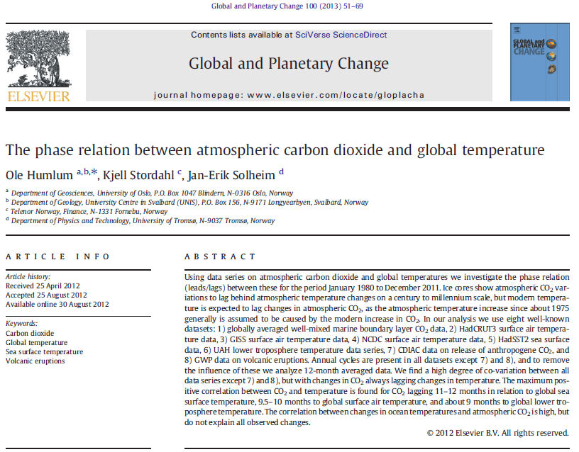
Voici quelques informations sur le Professeur Ole Humlum (CV et Biblio) qui est l'auteur principal de ce papier.
Une traduction du résumé en français :
A partir des données relatives au dioxyde de carbone et aux températures globales, nous analysons les relations de phase (avance/retard) entre ces dernières pour la période allant de Janvier 1980 à Décembre 2011. Les carottages glaciaires montrent que les variations du CO2 contenu dans l'atmosphère sont en retard sur les variations des températures atmosphériques et ceci sur une échelle allant du siècle au millénaire, mais on s'attend à ce que les températures de l'époque moderne soient en retard sur les variations du CO2 contenu dans l'atmosphère parce que qu'on suppose que l'augmentation de la température de l'atmosphère depuis environ 1975 résulte de l'augmentation en CO2 durant l'époque moderne.
Dans le cours de notre analyse nous utilisons huit données bien connues : 1) Les données sur le CO2 bien mélangé et moyenné à l'échelle du globe de la couche proche des océans, 2) Les données de température de l'air à la surface HadCRUT3, 3) Les données de température de l'air à la surface GISS, 4) Les données de la température de l'air à la surface NCDC, 5)Les données relatives aux surfaces des océans HadSST2, Les données UAH relatives à la température de la basse troposphère, 7) Les données CDIAC relatives aux émissions de CO2 anthropique, et 8) Les données GWP relatives aux éruptions volcaniques. Les cycles annuels sont présents dans toutes les données sauf dans 7) et 8) et de manière à éliminer l'influence de ces cycles nous analysons les données moyennées sur une période de douze mois. Nous trouvons un degré élevé de co-variation entre toutes ces séries de données, excepté pour 7) et 8) mais avec des variations de taux de CO2 qui suivent toujours les variations de température. On trouve qu'une corrélation positive maximale entre le CO2 et la température est obtenue lorsque le CO2 est en retard de 11 à 12 mois par rapport à la température globale de la surface des océans, de 9,5 à 10 mois par rapport à la température de l'air en surface du globe et d'environ 9 mois en retard par rapport à la température de la basse troposphère globale. La corrélation entre les variations des températures océaniques et celles du CO2 atmosphérique est forte mais elle ne permet pas d'expliquer toutes les variations observées. |
Voici la Figure 1 de l'article avec sa légende.
Elle nous montre la superposition de l'évolution des températures de l'air en surface (HadCRUT3), de la surface des océans (HadSST2) avec l'évolution du taux de CO2 atmosphérique (en ppmv) de 1980 à nos jours.
Fig. 1.Données mensuelles du taux de CO2 atmosphérique (NOAA, en vert), données mensuelles sur la température de surface des océans du globe (HadSST2, en bleu pointillé) et données mensuelles sur la température globale de l'air à la surface du globe (HadVRUT3, en rouge). Le dernier mois indiqué est le mois de Décembre 2011.
La procédure d'analyse assez inhabituelle utilisée par Humlum et al. est basée sur les différences annuelles DIFF12 (représentées dans la figure ci-dessus. Je donne un peu plus de détails sur la signification de cette différence DIFF12 dans la section 3.) de différents observables. Elle est susceptible de prêter le flanc à diverses critiques, dont les auteurs sont parfaitement conscients. Voici comment les auteurs présentent la technique qu'ils ont utilisée et comment ils répondent, par avance, aux questions qui pourraient être posées à ce sujet (Il est probable que ces précisions qui figurent dans le texte de l'article ont été rajoutées ou complétées à la demande des referees.)
"Avant d'analyser les données mensuelles et en s'intéressant à des durées plus longues que les variations annuelles, nous avons tout d'abord soustrait le cycle annuel des données globale sur le CO2 dans l'atmosphère en calculant la moyenne glissante sur une période de 12 mois. Ceci signifie que nous considérons ici la variation annuelle seulement comme du bruit et que nous recherchons le signal à plus long terme sous-jacent lequel représente la croissance globale du CO2.
Comme le signal tend à être presque identique à lui même d'un mois sur l'autre et que ce n'est pas le cas du bruit, une moyenne effectuée sur plusieurs observations adjacentes aura tendance à converger vers la valeur du seul signal. Les plus sérieuses conséquences du lissage ou du filtrage des données résident dans le déplacement des maxima et des minima dans la courbe lissée, par rapport aux données originales. Si on veut comparer plusieurs séries de données, des filtrages de même nature doivent donc être appliquées à toutes les séries, en l'absence de quoi des effets parasites peuvent survenir invitant à des interprétations défectueuses (voir par exemple, la discussion dans Stauning, 2011).
Nous avons ensuite calculé la différence entre la concentration moyenne du CO2 pour les douze derniers mois et la moyenne des 12 mois précédents, ce qui est dénommé DIFF12 dans la suite (voir la Fig. 1 pour les explications graphiques). En d'autres termes, DIFF12 représente la variation nette annuelle avec une résolution mensuelle. Du point de vue technique, les valeurs de DIFF12 ont été reportés sur des graphiques pour le dernier mois considéré dans le calcul. De cette manière, nous pouvons représenter visuellement de manière efficace et analyser la croissance du CO2 atmosphérique global depuis 1980 sans être perturbé par les variations annuelles. Il est important d'insister sur le fait que la présence d'un pic de DIFF12 n'indique pas la présence d'un pic dans les données originelles du CO2 mais, plutôt, une période avec une augmentation plus rapide du CO2. Il faut aussi insister sur le fait que l'étude des valeurs de DIFF12 consiste à étudier les taux de variations du contenu atmosphérique en CO2 et non pas le montant total du CO2 lui-même. Cependant, en intégrant les valeurs de DIFF12 sur la période d'observation, les variations du taux global de CO2 sont, bien entendu, étudiées. Ainsi et dans la mesure où les variations de DIFF12 peuvent être comprises, les variations du contenu total du CO2 atmosphérique peuvent l'être également. Dans la suite nous avons comparé le résultat des calculs de DIFF12 du CO2 avec des valeurs similaires de DIFF12 pour la température de surface globale des océans et pour la température de l'air à la surface du globe (HAdCRUT3) [...]" |
L'article de Humlum et al. est relativement copieux. Il contient un grand nombre de graphes. Je reproduis ici le graphe typique de la Figure 2 (accompagné de sa légende traduite) qui montre les retards observés entre l'évolution de la concentration du CO2 par rapport à celle de la température de la surface des océans et de la température de l'air à la surface de la planète.
| Fig. 2. "Variations sur 12 mois de la concentration globale du CO2 (NOAA; en vert), de la température globale de la surface des océans (HadSST2; en bleu) et de la température globale de l'air à la surface (HadCRUT3; en rouge). Le graphique du haut montre les valeurs mensuelles non filtrées (par ex. Janvier 2000 moins Janvier 1999) tandis que le graphique du bas montre les valeurs filtrées (DIFF12 c'est à dire la différence entre la moyenne des derniers douze mois et la moyenne des douze mois précédents pour chaque série de données). Les nombres de 1 à 9 sur les pics de DIFF12 CO2 et les lignes blanches minces se réfèrent à la Table 1. (Pour l'interprétation des références aux couleurs dans la légende de cette figure, le lecteur est invité à se rendre sur la version Web de cet article.) " |
Ole Humlum et ses collègues ont également examiné les phases relatives entre les observations des taux de CO2 atmosphériques effectuées en différents endroits sur la planète et les émissions de CO2 résultant de la combustion des énergies fossiles.
Comme on peut l'observer sur ces graphiques, les émissions anthropiques de CO2 (en rouge ci-dessous) ne semblent pas corrélées avec les flux nets de CO2 (bleu, jaune, vert, mauve ci-dessous) enregistrés par les différents observatoires du contenu de l'atmosphère. Humlum et al montrent que la prise en compte d'un retard supposé rendre compte du temps nécessaire pour que l'atmosphère se réorganise après les bouffées d'émissions anthropiques, ne change rien à ce constat.
| "Fig. 13. Variations sur 12 mois du taux de CO2 global pour Alert (NOAA; bleu), Mauna Loa (NOAA; vert), Ascension Island (NOAA; jaune), et le Pôle Sud (NOAA; pourpre), et la variation de l'émission du CO2 anthropique (données CDIAC en rouge). Tous les graphiques montrent les valeurs mensuelles de DIFF12, la différence entre la moyenne des douze derniers mois et la moyenne des 12 mois précédents pour toutes les séries de données." |
Les conclusions de ce long article sont claires. Les voici, tirées de l'article, en Anglais puis en Français.
12. Conclusions
There exist a clear phase relationship between changes of atmospheric CO2 and the different global temperature records, whether representing sea surface temperature, surface air temperature, or lower troposphere temperature, with changes in the amount of atmospheric CO2 always lagging behind corresponding changes in temperature.
(1) The overall global temperature change sequence of events appears to be from 1) the ocean surface to 2) the land surface to 3) the lower troposphere.
(2) Changes in global atmospheric CO2 are lagging about 11– 12 months behind changes in global sea surface temperature.
(3) Changes in global atmospheric CO2 are lagging 9.5–10 months behind changes in global air surface temperature.
(4) Changes in global atmospheric CO2 are lagging about 9 months behind changes in global lower troposphere temperature.
(5) Changes in ocean temperatures appear to explain a substantial part of the observed changes in atmospheric CO2 since January
1980.
(6) CO2 released from anthropogene sources apparently has little influence on the observed changes in atmospheric CO2, and changes in atmospheric CO2 are not tracking changes in human emissions.
(7) On the time scale investigated, the overriding effect of large volcanic eruptions appears to be a reduction of atmospheric CO2, presumably due to the dominance of associated cooling effects from clouds associated with volcanic gases/aerosols and volcanic debris.
(8) Since at least 1980 changes in global temperature, and presumably especially southern ocean temperature, appear to represent a major control on changes in atmospheric CO2.
"12. Conclusions :
Il existe une relation de phase évidente entre les variations du CO2 atmosphérique et les données des différentes températures du globe, s'agissant aussi bien de la température à la surface des océans, de la température de l'air à la surface du globe que de la température de la basse troposphère, avec les variations du taux de CO2 atmosphérique qui sont toujours en retard par rapport aux variations correspondantes des températures.
1) La séquence des événements qui conduit au changement global de la température apparaît être la suivante 1) La surface des océans 2) La surface des continents 3) La basse troposphère.
2) Les variations du CO2 atmosphérique du globe sont en retard de 11 à 12 mois par rapport aux variations de la température à la surface des mers du globe.
3) Les variations du CO2 atmosphérique du globe sont en retard de 9,5 à 10 mois par rapport aux variations de la température de l'air à la surface du globe.
4) Les variations du CO2 atmosphérique du globe sont en retard d'environ 9 mois par rapport aux variations de la température de la basse troposphère du globe.
5) Il apparaît que les variations des températures de l'océan expliquent une fraction substantielle des variations de CO2 atmosphérique depuis Janvier 1980.
6) Le CO2 émis à partir des sources anthropiques n'a apparemment qu'une faible influence sur les variations du CO2 atmosphérique et les variations du CO2 atmosphérique ne suivent pas les variations des émissions humaines.
7) Pour ce qui est de la période étudiée, l'effet primordial des grandes éruptions volcaniques apparaît être une réduction du CO2 atmosphérique, ceci étant supposé dû à la prédominance des effets refroidissant des nuages associés avec les aérosols et les débris volcaniques.
8) Au moins depuis 1980, les variations de la température du globe et, sans doute, tout particulièrement la température des océans de l'hémisphère Sud, apparaissent jouer un rôle déterminant pour contrôler les variations du CO2 atmosphérique. "
|
Comme on l'imagine, tout cela est assez iconoclaste par rapport à la pensée "mainstream" . A noter que Humlum et al. ne sont pas les premiers à publier ce genre d'observations. En particulier, R. B. Bacastow, chercheur à la Scripps Oceanographic avait effectué, dès 1976, une analyse du même type, publiée dans Nature. Il était parvenu à des conclusions similaires à celles d'Humlum et al. . L'analyse de Humlum et al constitue donc une mise à jour, près de 36 ans plus tard, nettement plus complète que le travail de Bacastow qui concluait par ces mots : " La corrélation, si elle est bien présente, montre qu'une cause majeure de la variation (NdT : de la concentration du CO2 atmosphérique) peut être due à un changement du taux de l'absorption du CO2 par les océans."
A noter également comme le mentionnent Humlum et al, que les retards systématiques des flux de CO2 par rapport aux variations de températures observés ici, rappelle les retards C02/températures observés dans les carottages glaciaires mais évidemment avec des échelles de temps très différentes, ce qui peut indiquer qu'il s'agit de dégazage de différentes couches océaniques.
3) Le Professeur Murry Salby et le cycle du carbone :
Voici la présentation du professeur Salby et le résumé de sa première conférence au Sydney Institute (les caractères engraissés sont le fait de l'auteur de ce site) :
Professeur Murry Salby
Titulaire de la chaire sur le climat, Université de Macquarie.
"Le dioxyde de carbone dans l'atmosphère : Contribution des sources naturelles."
"Le Professeur Murry Salby est titulaire de la chaire de climatologie de l'Université de Macquarie (NdT :Australie). Il a une longue carrière comme chercheur mondialement reconnu et a effectué des travaux dans le domaine de la Physique de l'Atmosphère. Il a exercé au sein d'institutions dominantes dans le domaine de la recherche, y compris au US National Center for Atmospheric Research (NdT : l'UCAR), à l'Université de Princeton, à l'Université du Colorado et il a occupé des postes de professeur invité dans des universités européennes et asiatiques.
A l'Université de Macquarie, le Professeur Salby utilise les données satellitaires et des super-calculateurs pour explorer les questions relatives au changement climatique du globe et à la variabilité du climat en Australie. Le Professeur Salby est l'auteur d'un livre (NdT :) "Physique de l'Atmosphère et du Climat" qui doit paraître en 2011. (NdT : Ce livre destiné aux enseignants et aux chercheurs -image ci-contre- est désormais disponible). Les résultats récents des travaux de recherche du Professeur Salby représentent une contribution hautement pertinente et qui arrive à point par rapport au discours actuel sur le climat."
Résumé : " Le dioxyde de carbone est émis par les activités humaines tout comme par un ensemble de processus naturels. Les observations satellitaires, de concert avec les observations instrumentales, couvrent maintenant une période suffisamment longue pour que nous disposions d'une population significative de perturbations climatiques au cours desquelles le système Terre-Atmosphère a été écarté de son équilibre. Ces perturbations, introduites par la nature, montrent que l'émission nette et globale de CO2 (avec toutes les sources combinées, naturelles et anthropiques) est contrôlée par la circulation générale - une propriété interne au système climatique qui régule les émissions provenant des sources naturelles. La forte dépendance des propriétés internes montre que l'émission du CO2 par les sources naturelles qui représentent 96% de l'émission totale, joue un rôle primordial dans les variations observées du CO2. Cette contribution au dioxyde de carbone présent dans l'atmosphère est indépendante des émissions humaines, n'est que marginalement prédictible et n'est pas sous notre contrôle." |
Le Professeur Salby a raconté que c'est lors de la préparation de la version actualisée de son livre "Physique de l'Atmosphère et du Climat" qu'il est tombé sur des observations qui se trouvent en contradiction avec des affirmations rapportées, notamment, dans le rapports successifs du GIEC. En fait ces résultats qui dérivent directement des observations étaient si étonnants, si contraires au "mainstream", que Murry Salby est resté près d'un an à chercher, en vain, d'autres explications à ses observations qui seraient plus conformes avec les affirmations de la science "mainstream". Il a également discuté de ses observations avec plusieurs de ses collègues climatologues avant de se décider à les faire connaître, notamment lors d'une conférence donnée en Juin 2011 à l'IUGG puis lors de deux conférences qu'il a données au Sydney Institute en 2011 et 2012. Il se trouve que lors de sa première conférence, seul l'audio était disponible, ce qui n'a pas facilité les discussions sur les observations de Salby.
Nous disposons à présent d'enregistrements vidéo complets de ces deux conférences (Conférence du 02/08/11 et conférence du 24/07/12) avec les diapositives originales détachées et parfaitement lisibles. Ce sont les diapositives les plus significatives de ces conférences que je vais vous présenter ci-dessous en suivant pas à pas la démarche du Professeur Salby qui se révèle être un excellent pédagogue comme le rappelle sa collègue Judy Curry qui le décrit comme "un excellent enseignant et conférencier, ce qui est perceptible avec le podcast. Il a la réputation d'être un chercheur prudent et rigoureux".
Le raisonnement de Salby est assez direct et sa présentation vidéo favorise grandement la compréhension de la démarche. Il suffit de le suivre avec un minimum d'attention. Mais ce qui est le plus frappant, ce sont ses conclusions qui remettent largement en question une des "certitudes" les mieux ancrées dans la démarche actuelle de la science climatologique : L'origine du CO2 observé dans l'atmosphère et la cause de sa croissance actuelle.
Voici donc un enchaînement de ses principales diapositives qui permettent de suivre la démarche et les observations du Professeur Salby :
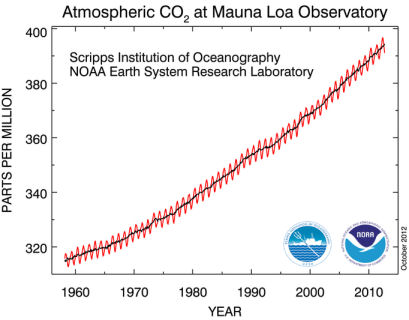
Contrairement à une croyance assez largement répandue, le contenu de l'atmosphère en CO2 ne varie pas de manière plus ou moins monotone comme le font les émissions anthropiques de CO2 résultant de la combustion des carburants fossiles.
Comme le montre ce graphe tracé à l'aide des données mesurées à Mauna Loa -Hawaï), le taux de CO2 atmosphérique a augmenté progressivement depuis 1960 en suivant une succession d'oscillations périodiques dont la période (annuelle) indique clairement l'influence des saisons sur le taux de CO2 observé. A ce propos, il faut se souvenir qu'il n'y a aucune raison que les variations saisonnières se compensent pour les deux hémisphères tant est grande leur dissymétrie du point de vue des océans et du point de vue de la végétation.
Murry Salby nous précise que ces variations cycliques sont la signature de l'influence des variations naturelles du cycle du carbone. Il nous propose de considérer d'un peu plus près, ces variations saisonnières qui se reproduisent d'une année sur l'autre.
Voici un agrandissement d'une des périodes des oscillations annuelles de la courbe précédente.
Comme on le constate, la résolution des mesures effectuées par voie spectroscopique à Mauna Loa, est excellente. On voit, sur le graphe ci-contre, que la hausse du taux du CO2 dans l'atmosphère correspond (dans cet exemple) à une augmentation de 1,7 ppmv qui est mesurée par la différence des ordonnées entre le mois de Janvier d'une année par rapport au mois de Janvier de l'année précédente; A noter que cette différence est exactement de la même nature que celle utilisée par Humlum et al. (DIFF12) décrite dans la section précédente.
Cependant, nous dit le Professeur Salby, cette hausse annuelle, mesurée par la différence des ordonnées, fluctue énormément au cours du temps comme on va le voir sur la diapo suivante.
Murry Salby a superposé sur cette diapo, un certain nombre de cycles annuels, en les faisant partir du même point (à gauche) pour observer la dispersion des variations annuelles de la croissance du taux de CO2 dans l'atmosphère.
Salby fait remarquer que les variations d'une année sur les autres peuvent atteindre des amplitudes de 3 ppmv, soit près de deux fois la hausse annuelle, ce qui traduit des fluctuations de grande amplitude relative, bien au delà de celles des émissions anthropiques. En bref, l'influence des conditions naturelles se voient aussi bien dans le caractère oscillant du taux de CO2 que dans les variations de la croissance du taux de CO2 d'une année sur l'autre.
Salby trace alors la courbe représentative, en fonction du temps, des variations du taux de CO2 mesuré, année après année, par la différence des ordonnées indiquées dans l'avant dernière diapo. Cette courbe montre les variations du flux ascendant Net et global du CO2 (en ppmv/an), parvenant dans l'atmosphère.
Salby fait remarquer, comme nous l'avons vu dans la diapo précédente, que ces variations de flux de CO2 varient énormément au cours du temps. Soit entre 0,4 ppmv/an et 2,8 ppmv/an pour la période considérée. On peut visualiser cela comme une succession des "bouffées" plus ou moins rapides et plus ou moins intenses de CO2 qui sont montées dans l'atmosphère, en particulier au cours des trois dernières décennies.
A noter que cette courbe est obtenue après l'application d'un filtre passe-bas de deux ans, destiné à supprimer les fluctuations de courtes durées et à à conserver les évolutions les plus lentes.

Salby rappelle ensuite que les émissions anthropiques de CO2 ne subissent évidemment pas ce genre de variations. L'augmentation des émissions anthropiques est beaucoup plus monotone.
Voici ci-contre sa diapo qui indique les variations du taux d'émission anthropique de CO2, résultant de l'activité humaine. Autrement dit, selon Salby, les variations du flux de CO2 net ne suivent pas les variations des émissions anthropiques.
Par contre, le Professeur Salby nous montre que le flux net du CO2 qui monte dans l'atmosphère (en pointillés verts) est étroitement corrélé avec les "conditions de surface" de la planète ("surface conditions", en bleu ci-contre). Le coefficient de corrélation est de 0,93.
En réalité et comme le précise Salby dans son exposé, la courbe représentative des "conditions de surface", n'est rien d'autre que la courbe des variations de la température à la surface de la planète selon les mesures satellitaires RSS-MSU. A noter que, comme il se doit, cette courbe de température a subi le même traitement (filtre passe-bas de deux ans) que les données relatives au flux net de CO2.
Autrement dit, Salby nous montre que le flux de CO2 qui monte dans l'atmosphère dépend directement de la température à la surface de la planète et non pas, directement, du taux d'émission anthropique de CO2.
Reste cependant à résoudre une question épineuse, nous dit Salby. C'est celle de l'appauvrissement isotopique du CO2 atmosphérique en carbone C13 qui a été rappelée plus haut. C'est le "smoking gun" nous dit Salby, "l'argument massue" qui "prouverait" que le CO2 que l'on trouve dans l'atmosphère est bien d'origine anthropique.
Le graphe du haut de cette diapo est identique au précédent. Mais le graphe du bas est une superposition de la variation de température (en bleu) évoquée ci-dessus avec l'évolution (points rouges) de la richesse en carbone C13 du CO2 atmosphérique pendant la même période. Comme on le voit et comme on s'y attend, la valeur moyenne de cette richesse en C13 indique une tendance à la baisse. Par contre et cela est surprenant, les variations de la richesse en C13 se trouvent strictement en opposition de phase avec celles de la température (ou du flux net de CO2).
Autrement dit quand le flux de CO2 augmente, le CO2 s'appauvrit en C13 ce qui ne serait pas surprenant s'il s'agissait d'émissions anthropiques comme nous l'avons vu plus haut. Mais -et c'est le point crucial- dans le cas présent, on observe que cette opposition de phase se produit lors de la bouffée de CO2 concomitante au réchauffement dû au El Niño géant de 1998, lequel est évidemment un événement parfaitement naturel et nullement anthropique.
Autrement dit, selon Salby, les "bouffées" de CO2 résultant de causes naturelles, tel que le réchauffement dû au El Niño en 1998, ont exactement la même signature isotopique que celles qui résultent des émissions anthropiques.
Dans la suite de son exposé, Murry Salby fait remarquer que ces observations montrent que la dérivée de la concentration du CO2 dans l'atmosphère (dCO2/dt) varie en proportion de l'anomalie de température de la surface de la planète. Autrement dit, la concentration du CO2 dans l'atmosphère varie comme l'intégrale (la somme) des variations de température à la surface durant la même période.
Cela peut se comprendre si on considère que l'atmosphère stocke le CO2 qui résulterait, par exemple, de la décomposition de la matière végétale à la surface de la planète et que cette décomposition (qui passe transitoirement par le stade du méthane) dépend de la température qui règne au sol. L'intégration rend compte de l'effet cumulatif des émissions naturelles de CO2.
Partant de ce constat, Murray Salby recalcule (en intégrant les variations de température) le taux de CO2 qui devrait exister dans l'atmosphère si son modèle était exact. Le résultat est représenté en pointillés bleus sur le graphique ci-contre. A noter qu'au moins pour la période considérée (1980-2012), cette courbe en pointillés bleus calculée recouvre pratiquement exactement celle du taux de CO2 mesuré (en tirets verts), à l'exception de deux courtes périodes qui correspondent aux éruptions volcanique géantes du El Chichon (1982) et du Pinatubo (1992) et pour lesquelles le raisonnement précédent doit évidemment être en défaut, comme il l'est. A noter au sujet des éruptions volcaniques que Murry Salby constate, comme l'avaient fait Humlum et al, que les émission de CO2 ont plutot diminué durant cette période. Salby l'attribue aux effets refroidissants des émanations volcaniques constatées sur les températures pendant deux ou trois ans.
Voici d'autres versions du constat précédent. En haut et en bleu est représentée la "Circulation-Dependent Component", c'est-à-dire la composante (naturelle) des émissions de CO2 qui dépend de la circulation générale de l'atmosphère et des océans, superposée à la courbe des observations effectuées à Mauna Loa. Comme on le voit, la superposition est très bonne.
La figure du bas concerne l'évolution de la composition isotopique de la "Circulation-Dependent Component", c'est à dire de l'émission naturelle de CO2, superposée au paramètre décrivant la richesse du mélange isotopique en C13. Comme on le voit et compte tenu des incertitudes sur les mesures isotopiques, l'accord est également très bon.
La signature isotopique de la "Circulation-Dependent Component" est identique à celle des émissions anthropiques, nous dit Salby, ce qui exclut l'utilisation de cet "argument massue" pour affirmer que l'augmentation du CO2 atmosphérique est d'origine anthropique.
Murry Salby a également cherché à remonter dans le temps pour vérifier si ses calculs de la "Circulation-Dependent Component" rendait également compte des observations des taux de CO2 dans un passé plus éloigné.
On constate, sur le graphique ci-contre que l'accord est bon ou très bon (selon les bases de données de température MSU ou CRU considérées) en remontant le temps jusqu'en 1960. Par la suite et jusqu'en 1880 les courbes divergent notablement (avec un écart maximum de 20 ppmv).
Il faut se rappeler à ce propos que les mesures directes de CO2 n'ont été disponibles et avérées qu'à partir de 1960. La période précédente faisant appel à des indicateurs indirects, c'est à dire à partir d'analyses isotopiques des carottages glaciaires, peut-être moins fiables. De même, (graphe du bas) Salby fait remarquer qu'avant 1960, les mesures de températures étaient évaluées à partir d'un nombre plus restreint de thermomètres. Ainsi, en 1880, la surface couverte par les mesures thermométriques n'était que de 8% du globe, ce qui peut constituer une autre source d'incertitude.
Dans le courant de son exposé, Murry Salby projette la diapositive ci- contre qui représente les observations satellites des taux (mesurés dans une colonne verticale) de CO2 en différentes localisations de la planète. Comme on peut le voir, les inhomogénéités sont de l'ordre de 30-40 ppmv et le maximum de concentration de l'atmosphère en CO2 se trouve au dessus des zones tropicales-équatoriales de l'Afrique et de l'Amérique du Sud. Par contre, les régions de l'hémisphère Nord, normalement particulièrement émettrices en CO2 anthropique, se trouvent nettement en dessous des moyennes. Ceci doit être considéré avec précaution mais peut-être considéré comme une indication que le CO2 que l'on trouve dans l'atmosphère résulte plus des émissions naturelles que des émissions anthropiques...
Murry Salby mentionne les implications ou les conclusions de ses observations (conférence en 2012).Voici la diapositive correspondante :
Implications :
- Dans le Monde Réel la température du globe n'est pas contrôlée exclusivement par le CO2, comme elle l'est dans le Monde des Simulations numériques.
- En revanche, et pour une part significative, le CO2 est contrôlé par la température du globe.
|
Addendum : Quelques extraits significatifs des conférences de Murry Salby :
En réponse à une objection assez classique avancée par les tenants des thèses en vigueur (selon lesquels la totalité de l'augmentation du CO2 atmosphérique résulterait des activités humaines), soutenant que, certes les fluctuations interannuelles sont sans doute déterminées par les fluctuations naturelles mais que la lente montée sous-jacente serait d'origine anthropique, et donc qu'il y aurait, selon les échelles de temps, différentes sources de CO2 impliquées, Salby répond ceci :
"La correspondance des variations observées du CO2 sur des échelles de temps de quelques années durant l'ère satellitaire et l'accord observé durant le XXème siècle, font qu'il est difficile de ne pas conclure que les sources impliquées dans les variations de CO2 durant de courtes échelles de temps ne sont pas aussi impliquées durant les grandes échelles de temps.

La conception, largement popularisée, a été que c'est le CO2 qui conduit le bus et que le climat profite de la ballade. Le comportement observé montre exactement l'inverse. C'est le climat qui est au volant et, dans une grande mesure, le CO2 est à l'arrière du bus."
|
[...]
"Les projections du climat reposent sur la capacité à prédire le CO2. C'est la chose dont on pense qu'elle doit être connue à cause de la supposition que nous pouvons le contrôler. C'est à dire que cela implique que le CO2 futur dans l'atmosphère doit être déterminé par les émissions humaines. C'est ce qui est spécifié dans les modèles climatiques qui, ensuite, vont alors prédire comment le climat va répondre selon ce que l'on appelle des "scénarios climatiques". Les comportements observés nous montrent que, bien que que nous aimerions que ce soit le cas, le monde réel ne fonctionne pas comme ça.
[...]
"Les émissions nettes incluent une fraction substantielle venant des sources naturelles. Si vous ne contrôlez pas le CO2, vous ne pouvez pas prédire le taux de CO2 et vous pouvez difficilement prédire comment le climat va répondre."
[...]
"Quand quelqu'un dit "la science est comprise" (The science is settled), j'éprouve un haut-le-coeur involontaire"
[...].
"Celui qui pense que la science de cette affaire complexe est comprise, vit dans le monde de Disney".
|
En réponse à une question d'un spectateur au sujet d'une possible rétroaction du CO2, voici ce que répond Murry Salby.
| Les +4°C que vous mentionnez représentent essentiellement une extrapolation des modèles basés sur le schéma que j'ai décrit. Ainsi et comme vous le signalez, si la température augmente indéfiniment alors vous obtenez une augmentation du CO2 et ceci constitue une rétroaction positive. Température plus élevée, plus de CO2. Et si vous pensez que le CO2 est responsable de la température alors ça devrait accélérer mais, pour des raisons sur lesquelles je ne vais pas m'étendre dans cette conférence, il doit exister une rétroaction négative qui maîtrise cette rétroaction positive et garde le contrôle de l'affaire. (NdT : L'explication détaillée est donnée dans le traité de Salby (page 252)). |
Lorsqu'on demande à Murry Salby ce qui, selon lui, a provoqué la hausse des température observées au XXème siècle, celui-ci donne la même réponse que Ole Humlum d'une part et que Syun-Ishi Akasofu d'autre part. Selon ces chercheurs, le réchauffement est naturel et correspond au retour à l'équilibre après la baisse des températures qui s'est produite durant le petit âge glaciaire.
Complément: Un petit test des observations de Murry Salby.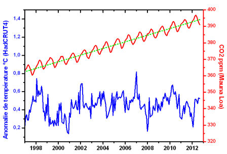
Comme chacun le sait maintenant dans le monde anglo-saxon (cette information a été reprise par leurs médias), la température du globe n'a pas augmenté depuis près de 16 ans.
Selon les observations du Professeur Salby, cela devrait donc correspondre à une augmentation pratiquement linéaire du taux de CO2 en fonction du temps durant la même période. En effet, la dérivée temporelle d'une fonction linéaire du temps est bien une constante.
Voyons cela.
Note : Ceux qui pourraient s'étonner de cette observation due, selon Salby, à un "effet d'accumulation du CO2" dans l'atmosphère, peuvent en avoir l'intuition en se rappelant qu'un humidificateur d'appartement augmente progressivement le taux de l'humidité d'une pièce d'habitation sans que la température de la source varie notablement (elle s'est un peu refroidie avant d'atteindre l'équilibre). De même, l'eau portée à ébullition dans une casserole aura une température constante de 100°C environ, tandis que la vapeur d'eau échappée chargera peu à peu l'atmosphère en humidité. A noter que, dans ces deux cas, il s'agit de changements de phase, tout comme l'est, par exemple, le dégazage du CO2 dissous dans les océans.
J'ai reporté sur le graphique ci-dessus, le graphe des variations de températures de 1997 à nos jours, selon le HadCRUT4 (en bleu) ainsi que le graphe (en rouge) représentant la hausse du taux de CO2 dans l'atmosphère (données NOAA, Mauna Loa).
Comme on le voit, la variation du taux de CO2 dans l'atmosphère a effectivement subi une croissance pratiquement parfaitement linéaire (pointillés verts) durant cette même période où la température du globe est restée constante, aux fluctuations près.
Voici, à titre de comparaison, ci-contre, la courbe donnant la variation des émissions de dioxyde de carbone anthropiques du globe pendant la même période (source : Rapport de la CE, page 28). La croissance des émissions anthropiques n'est absolument pas linéaire et l'augmentation parfaitement linéaire du taux de CO2 dans l'atmosphère, conformément à la non-variation de la température pendant cette même période, ne suit pas la croissance des émissions anthropiques.
.
_________________________________________________________________
Quelques compléments dans la même perspective :
Le livre de Murry Salby : "Physique de l'atmosphère et du climat" qui inclut, avec de nombreuses considérations complémentaires, les graphiques principaux présentés lors de ces conférences.
Roy Spencer : "Croissance du CO2 dans l'atmosphère. Pourrait-elle venir des océans plutôt que l'activité humaine?"
Roy Spencer : " Plus de détails intéressants sur le rapport C12/C13" "Des éléments qui semblent apporter d'autres preuves qu'il pourrait y avoir une fraction substantielle de sources naturelles dans la croissance à long terme du CO2".
Cohérence établie entre le CO2 atmosphérique et la température globale : Cynthia Kuo, Craig Lindberg & David J. Thomson (Nature 343, 709 - 714 (22 February 1990); doi:10.1038/343709a) : "Les variations du contenu en CO2 sont en retard de 5 mois par rapport à celles de la température
__________________________________________________________________
Mise à jour du 10 Juin 2013 :
Le Professeur Murry Salby effectue un tour d'Europe pour présenter ses résultats dans diverses institutions scientifiques.
Sa présentation à Hambourg enregistrée par l'Université Helmut Schmidt, vient d'être rendue disponible (en anglais) sur Youtube à cette adresse. Il a complété ses travaux en proposant une "théorie unfiée" qui lui permet de rendre compte également des corrélations observées entre les concentrations de méthane, de CO2 et les températures déduites des carottes glaciaires prélevées en antarctique. Cette présentation inclut également des observations analogues à celles qu'il a faites sur les concentrations de CO2, pour le méthane. Elle est un peu plus "technique" que les précédentes.
Au sujet de la stagnation actuelle de la température moyenne du globe, observée depuis les dernières 15 années, Murry Salby montre que si elle diverge notablement des modèles du GIEC, elle est parfaitement conforme à son modèle qui stipule que la concentration de CO2 doit être proportionnelle à l'intégrale des variations de températures, à l'aide de la diapo suivante :
A part, les épisodes liés aux éruptions du Pinatubo (1992) et du El Chichon (1984), comme on s'y attend, la courbe de croissance du CO2 (en bleu) calculée à partir de l'intégrale de la variation de température, selon la théorie de Salby, est parfaitement conforme à la courbe de croissance mesurée (en vert).
__________________________________________________________________
Conclusion : Au vu de ces observations, il est probable qu'une proportion notable du taux de dioxyde de carbone présent dans l'atmosphère ne dépend pas directement de l'intervention humaine. Dans ce cas, les politiques de réductions des émissions de carbone dans le prolongement des accords de le Kyoto, n'auront qu'un effet minimal sur le CO2 atmosphérique et aussi, très probablement, sur le climat.
Comme les auteurs norvégiens et australien de ces observations nous le disent eux-mêmes, il s'agit d'observations permettant d'affiner nos connaissances sur le cycle du carbone qui, pour une grande part, reste encore "terra incognita" quelles que soient les affirmations entendues ici ou là.. En particulier, l'influence (bénéfique) de l'augmentation du taux de CO2 sur la végétation devrait être parfaitement prise en compte avant que nous tirions des conclusions qui pourraient se révéler précipitées.
Mais ce n'est rien d'autre qu'une nouvelle pierre apportée à l'édifice interminable de la science.
Comme toujours, "time will tell", l'avenir nous le dira.
A suivre ! Stay Tuned !
Avec tous mes voeux à tous(tes) mes lecteurs(trices) pour cette fin d'année (Maya 2012) et pour 2013 (bien sûr). |


{kind=link}
{kind=link}
{kind=link}
{kind=link}
{kind=link}
{kind=link}
{kind=link}
{kind=link}